Date: 2019-12-04 19:45:05 CET, cola version: 1.3.2
Document is loading...
All available functions which can be applied to this res_list object:
res_list
#> A 'ConsensusPartitionList' object with 24 methods.
#> On a matrix with 15193 rows and 99 columns.
#> Top rows are extracted by 'SD, CV, MAD, ATC' methods.
#> Subgroups are detected by 'hclust, kmeans, skmeans, pam, mclust, NMF' method.
#> Number of partitions are tried for k = 2, 3, 4, 5, 6.
#> Performed in total 30000 partitions by row resampling.
#>
#> Following methods can be applied to this 'ConsensusPartitionList' object:
#> [1] "cola_report" "collect_classes" "collect_plots" "collect_stats"
#> [5] "colnames" "functional_enrichment" "get_anno_col" "get_anno"
#> [9] "get_classes" "get_matrix" "get_membership" "get_stats"
#> [13] "is_best_k" "is_stable_k" "ncol" "nrow"
#> [17] "rownames" "show" "suggest_best_k" "test_to_known_factors"
#> [21] "top_rows_heatmap" "top_rows_overlap"
#>
#> You can get result for a single method by, e.g. object["SD", "hclust"] or object["SD:hclust"]
#> or a subset of methods by object[c("SD", "CV")], c("hclust", "kmeans")]
The call of run_all_consensus_partition_methods() was:
#> run_all_consensus_partition_methods(data = mat, mc.cores = 4)
Dimension of the input matrix:
mat = get_matrix(res_list)
dim(mat)
#> [1] 15193 99
The density distribution for each sample is visualized as in one column in the following heatmap. The clustering is based on the distance which is the Kolmogorov-Smirnov statistic between two distributions.
library(ComplexHeatmap)
densityHeatmap(mat, ylab = "value", cluster_columns = TRUE, show_column_names = FALSE,
mc.cores = 4)
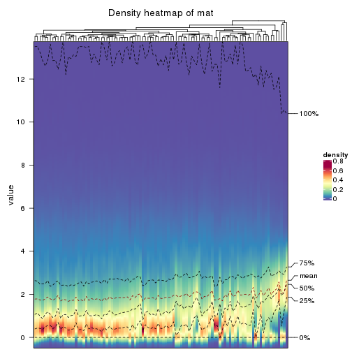
Folowing table shows the best k (number of partitions) for each combination
of top-value methods and partition methods. Clicking on the method name in
the table goes to the section for a single combination of methods.
The cola vignette explains the definition of the metrics used for determining the best number of partitions.
suggest_best_k(res_list)
| The best k | 1-PAC | Mean silhouette | Concordance | Optional k | ||
|---|---|---|---|---|---|---|
| CV:kmeans | 2 | 1.000 | 1.000 | 1.000 | ** | |
| ATC:pam | 2 | 1.000 | 0.976 | 0.991 | ** | |
| ATC:mclust | 2 | 1.000 | 0.973 | 0.989 | ** | |
| ATC:hclust | 2 | 0.990 | 0.987 | 0.988 | ** | |
| ATC:kmeans | 4 | 0.988 | 0.931 | 0.971 | ** | 2 |
| CV:hclust | 3 | 0.979 | 0.919 | 0.975 | ** | |
| CV:pam | 2 | 0.958 | 0.948 | 0.974 | ** | |
| ATC:skmeans | 3 | 0.937 | 0.925 | 0.968 | * | 2 |
| MAD:skmeans | 3 | 0.918 | 0.932 | 0.969 | * | |
| CV:NMF | 6 | 0.904 | 0.848 | 0.923 | * | 2 |
| CV:skmeans | 3 | 0.873 | 0.921 | 0.958 | ||
| SD:skmeans | 3 | 0.865 | 0.878 | 0.950 | ||
| SD:mclust | 4 | 0.841 | 0.819 | 0.921 | ||
| MAD:NMF | 3 | 0.796 | 0.844 | 0.936 | ||
| SD:NMF | 3 | 0.765 | 0.853 | 0.933 | ||
| MAD:pam | 6 | 0.760 | 0.814 | 0.901 | ||
| CV:mclust | 5 | 0.749 | 0.803 | 0.884 | ||
| ATC:NMF | 4 | 0.649 | 0.736 | 0.867 | ||
| MAD:mclust | 3 | 0.592 | 0.687 | 0.819 | ||
| MAD:kmeans | 3 | 0.589 | 0.791 | 0.876 | ||
| SD:pam | 3 | 0.538 | 0.691 | 0.861 | ||
| MAD:hclust | 2 | 0.499 | 0.709 | 0.879 | ||
| SD:kmeans | 3 | 0.498 | 0.761 | 0.859 | ||
| SD:hclust | 2 | 0.417 | 0.646 | 0.858 |
**: 1-PAC > 0.95, *: 1-PAC > 0.9
Cumulative distribution function curves of consensus matrix for all methods.
collect_plots(res_list, fun = plot_ecdf)
Consensus heatmaps for all methods. (What is a consensus heatmap?)
collect_plots(res_list, k = 2, fun = consensus_heatmap, mc.cores = 4)
collect_plots(res_list, k = 3, fun = consensus_heatmap, mc.cores = 4)

collect_plots(res_list, k = 4, fun = consensus_heatmap, mc.cores = 4)
collect_plots(res_list, k = 5, fun = consensus_heatmap, mc.cores = 4)
collect_plots(res_list, k = 6, fun = consensus_heatmap, mc.cores = 4)
Membership heatmaps for all methods. (What is a membership heatmap?)
collect_plots(res_list, k = 2, fun = membership_heatmap, mc.cores = 4)
collect_plots(res_list, k = 3, fun = membership_heatmap, mc.cores = 4)
collect_plots(res_list, k = 4, fun = membership_heatmap, mc.cores = 4)
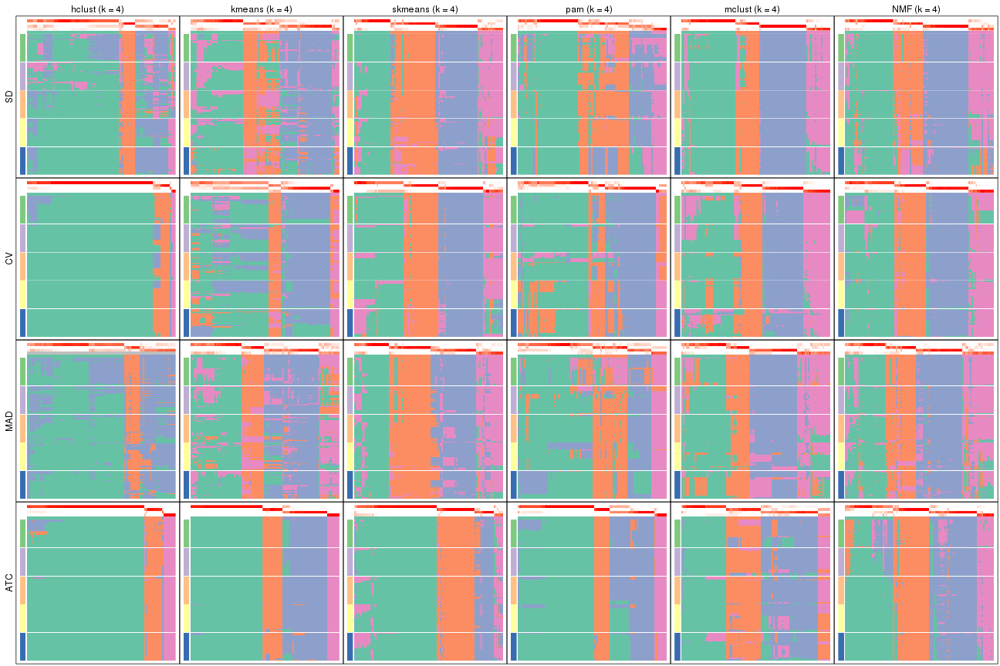
collect_plots(res_list, k = 5, fun = membership_heatmap, mc.cores = 4)
collect_plots(res_list, k = 6, fun = membership_heatmap, mc.cores = 4)
Signature heatmaps for all methods. (What is a signature heatmap?)
Note in following heatmaps, rows are scaled.
collect_plots(res_list, k = 2, fun = get_signatures, mc.cores = 4)
collect_plots(res_list, k = 3, fun = get_signatures, mc.cores = 4)
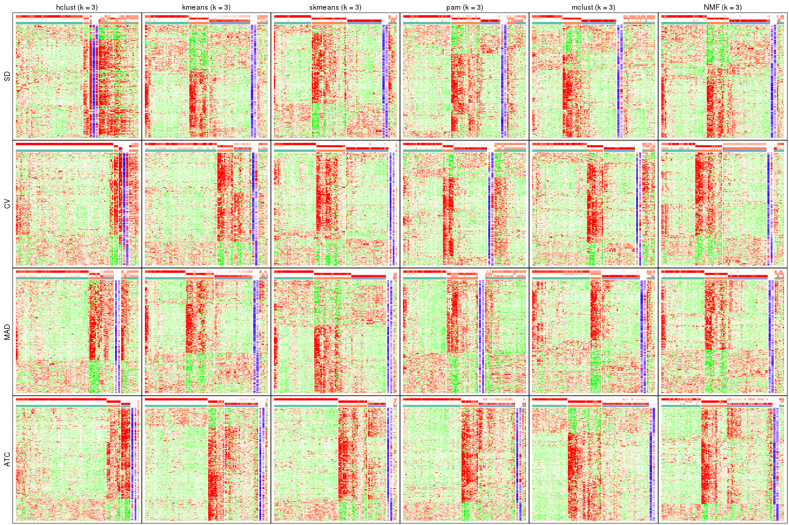
collect_plots(res_list, k = 4, fun = get_signatures, mc.cores = 4)
collect_plots(res_list, k = 5, fun = get_signatures, mc.cores = 4)
collect_plots(res_list, k = 6, fun = get_signatures, mc.cores = 4)
The statistics used for measuring the stability of consensus partitioning. (How are they defined?)
get_stats(res_list, k = 2)
#> k 1-PAC mean_silhouette concordance area_increased Rand Jaccard
#> SD:NMF 2 0.882 0.931 0.968 0.4308 0.582 0.582
#> CV:NMF 2 0.979 0.968 0.986 0.4083 0.590 0.590
#> MAD:NMF 2 0.828 0.919 0.964 0.4433 0.565 0.565
#> ATC:NMF 2 0.556 0.706 0.887 0.4460 0.565 0.565
#> SD:skmeans 2 0.458 0.704 0.857 0.4962 0.510 0.510
#> CV:skmeans 2 0.785 0.899 0.958 0.4342 0.582 0.582
#> MAD:skmeans 2 0.473 0.774 0.882 0.4999 0.499 0.499
#> ATC:skmeans 2 1.000 0.955 0.983 0.4752 0.522 0.522
#> SD:mclust 2 0.372 0.859 0.840 0.3937 0.573 0.573
#> CV:mclust 2 0.398 0.764 0.858 0.3131 0.662 0.662
#> MAD:mclust 2 0.431 0.800 0.843 0.4058 0.544 0.544
#> ATC:mclust 2 1.000 0.973 0.989 0.4276 0.582 0.582
#> SD:kmeans 2 0.523 0.884 0.936 0.4305 0.573 0.573
#> CV:kmeans 2 1.000 1.000 1.000 0.2461 0.755 0.755
#> MAD:kmeans 2 0.547 0.882 0.927 0.4396 0.573 0.573
#> ATC:kmeans 2 1.000 1.000 1.000 0.3383 0.662 0.662
#> SD:pam 2 0.405 0.629 0.824 0.4592 0.544 0.544
#> CV:pam 2 0.958 0.948 0.974 0.2129 0.755 0.755
#> MAD:pam 2 0.462 0.800 0.884 0.4467 0.573 0.573
#> ATC:pam 2 1.000 0.976 0.991 0.3502 0.651 0.651
#> SD:hclust 2 0.417 0.646 0.858 0.3610 0.651 0.651
#> CV:hclust 2 0.888 0.976 0.987 0.0817 0.941 0.941
#> MAD:hclust 2 0.499 0.709 0.879 0.3493 0.674 0.674
#> ATC:hclust 2 0.990 0.987 0.988 0.3258 0.662 0.662
get_stats(res_list, k = 3)
#> k 1-PAC mean_silhouette concordance area_increased Rand Jaccard
#> SD:NMF 3 0.765 0.853 0.933 0.509 0.633 0.438
#> CV:NMF 3 0.659 0.754 0.868 0.533 0.702 0.515
#> MAD:NMF 3 0.796 0.844 0.936 0.484 0.633 0.426
#> ATC:NMF 3 0.542 0.752 0.833 0.455 0.654 0.449
#> SD:skmeans 3 0.865 0.878 0.950 0.351 0.713 0.490
#> CV:skmeans 3 0.873 0.921 0.958 0.532 0.710 0.519
#> MAD:skmeans 3 0.918 0.932 0.969 0.344 0.720 0.494
#> ATC:skmeans 3 0.937 0.925 0.968 0.218 0.866 0.749
#> SD:mclust 3 0.574 0.587 0.826 0.568 0.747 0.563
#> CV:mclust 3 0.626 0.771 0.878 0.935 0.669 0.518
#> MAD:mclust 3 0.592 0.687 0.819 0.468 0.878 0.778
#> ATC:mclust 3 0.747 0.899 0.929 0.550 0.753 0.575
#> SD:kmeans 3 0.498 0.761 0.859 0.460 0.640 0.441
#> CV:kmeans 3 0.392 0.682 0.812 0.989 0.772 0.698
#> MAD:kmeans 3 0.589 0.791 0.876 0.464 0.685 0.486
#> ATC:kmeans 3 0.822 0.896 0.953 0.685 0.686 0.548
#> SD:pam 3 0.538 0.691 0.861 0.370 0.749 0.561
#> CV:pam 3 0.507 0.630 0.832 1.796 0.646 0.538
#> MAD:pam 3 0.366 0.480 0.764 0.277 0.831 0.714
#> ATC:pam 3 0.621 0.833 0.885 0.564 0.661 0.511
#> SD:hclust 3 0.305 0.523 0.779 0.297 0.836 0.759
#> CV:hclust 3 0.979 0.919 0.975 1.773 0.823 0.812
#> MAD:hclust 3 0.305 0.583 0.782 0.278 0.846 0.780
#> ATC:hclust 3 0.911 0.970 0.985 0.144 0.979 0.968
get_stats(res_list, k = 4)
#> k 1-PAC mean_silhouette concordance area_increased Rand Jaccard
#> SD:NMF 4 0.700 0.752 0.853 0.1293 0.827 0.562
#> CV:NMF 4 0.752 0.815 0.895 0.1772 0.783 0.469
#> MAD:NMF 4 0.652 0.662 0.829 0.1322 0.834 0.565
#> ATC:NMF 4 0.649 0.736 0.867 0.1162 0.863 0.637
#> SD:skmeans 4 0.719 0.731 0.870 0.1148 0.873 0.642
#> CV:skmeans 4 0.771 0.836 0.893 0.1099 0.912 0.743
#> MAD:skmeans 4 0.682 0.686 0.852 0.1168 0.838 0.563
#> ATC:skmeans 4 0.812 0.821 0.922 0.0957 0.971 0.930
#> SD:mclust 4 0.841 0.819 0.921 0.1611 0.909 0.739
#> CV:mclust 4 0.689 0.715 0.853 0.1983 0.794 0.514
#> MAD:mclust 4 0.594 0.654 0.807 0.2094 0.779 0.519
#> ATC:mclust 4 0.684 0.790 0.838 0.0666 0.941 0.828
#> SD:kmeans 4 0.533 0.513 0.727 0.1346 0.900 0.736
#> CV:kmeans 4 0.398 0.557 0.711 0.2472 0.622 0.417
#> MAD:kmeans 4 0.541 0.643 0.750 0.1297 0.927 0.790
#> ATC:kmeans 4 0.988 0.931 0.971 0.1349 0.846 0.662
#> SD:pam 4 0.554 0.646 0.785 0.0991 0.893 0.719
#> CV:pam 4 0.519 0.621 0.804 0.1087 0.869 0.712
#> MAD:pam 4 0.442 0.648 0.775 0.2048 0.857 0.688
#> ATC:pam 4 0.652 0.797 0.907 0.0993 0.960 0.902
#> SD:hclust 4 0.314 0.562 0.760 0.2195 0.853 0.740
#> CV:hclust 4 0.877 0.884 0.955 0.2506 0.963 0.952
#> MAD:hclust 4 0.314 0.608 0.742 0.2936 0.857 0.764
#> ATC:hclust 4 0.859 0.931 0.971 0.0282 0.998 0.996
get_stats(res_list, k = 5)
#> k 1-PAC mean_silhouette concordance area_increased Rand Jaccard
#> SD:NMF 5 0.804 0.755 0.873 0.0757 0.919 0.703
#> CV:NMF 5 0.813 0.809 0.878 0.0644 0.919 0.700
#> MAD:NMF 5 0.682 0.624 0.811 0.0657 0.929 0.738
#> ATC:NMF 5 0.569 0.524 0.766 0.0475 0.920 0.742
#> SD:skmeans 5 0.746 0.767 0.862 0.0666 0.917 0.690
#> CV:skmeans 5 0.886 0.853 0.924 0.0707 0.924 0.724
#> MAD:skmeans 5 0.689 0.637 0.803 0.0633 0.887 0.600
#> ATC:skmeans 5 0.806 0.763 0.900 0.0802 0.931 0.824
#> SD:mclust 5 0.757 0.724 0.864 0.0442 0.963 0.869
#> CV:mclust 5 0.749 0.803 0.884 0.0754 0.888 0.614
#> MAD:mclust 5 0.690 0.758 0.841 0.0328 0.838 0.531
#> ATC:mclust 5 0.610 0.601 0.768 0.0603 0.851 0.554
#> SD:kmeans 5 0.610 0.629 0.765 0.0868 0.869 0.600
#> CV:kmeans 5 0.483 0.636 0.727 0.1565 0.807 0.535
#> MAD:kmeans 5 0.582 0.570 0.740 0.0713 0.884 0.624
#> ATC:kmeans 5 0.744 0.810 0.857 0.1372 0.827 0.535
#> SD:pam 5 0.638 0.616 0.784 0.0658 0.877 0.643
#> CV:pam 5 0.610 0.578 0.816 0.0948 0.872 0.662
#> MAD:pam 5 0.681 0.794 0.865 0.0766 0.832 0.564
#> ATC:pam 5 0.772 0.791 0.903 0.2282 0.786 0.485
#> SD:hclust 5 0.396 0.509 0.741 0.0955 0.802 0.624
#> CV:hclust 5 0.871 0.882 0.943 0.0417 0.999 0.999
#> MAD:hclust 5 0.346 0.469 0.697 0.0752 0.917 0.837
#> ATC:hclust 5 0.811 0.911 0.953 0.0603 0.998 0.996
get_stats(res_list, k = 6)
#> k 1-PAC mean_silhouette concordance area_increased Rand Jaccard
#> SD:NMF 6 0.741 0.639 0.779 0.0393 0.950 0.772
#> CV:NMF 6 0.904 0.848 0.923 0.0345 0.966 0.839
#> MAD:NMF 6 0.719 0.607 0.800 0.0375 0.923 0.674
#> ATC:NMF 6 0.584 0.421 0.682 0.0444 0.869 0.571
#> SD:skmeans 6 0.742 0.617 0.788 0.0445 0.944 0.733
#> CV:skmeans 6 0.809 0.770 0.863 0.0342 0.974 0.878
#> MAD:skmeans 6 0.714 0.617 0.776 0.0436 0.912 0.608
#> ATC:skmeans 6 0.740 0.706 0.848 0.0313 0.988 0.964
#> SD:mclust 6 0.638 0.481 0.700 0.0631 0.882 0.591
#> CV:mclust 6 0.748 0.759 0.834 0.0322 0.983 0.921
#> MAD:mclust 6 0.683 0.674 0.808 0.0667 0.943 0.788
#> ATC:mclust 6 0.626 0.564 0.735 0.0352 0.899 0.646
#> SD:kmeans 6 0.656 0.510 0.703 0.0477 0.913 0.647
#> CV:kmeans 6 0.602 0.739 0.775 0.0701 0.927 0.724
#> MAD:kmeans 6 0.643 0.393 0.658 0.0471 0.909 0.637
#> ATC:kmeans 6 0.727 0.805 0.840 0.0516 0.981 0.921
#> SD:pam 6 0.706 0.659 0.844 0.0404 0.952 0.822
#> CV:pam 6 0.647 0.631 0.828 0.0422 0.870 0.602
#> MAD:pam 6 0.760 0.814 0.901 0.0353 0.976 0.911
#> ATC:pam 6 0.780 0.789 0.905 0.0112 0.992 0.968
#> SD:hclust 6 0.445 0.526 0.752 0.0428 0.983 0.960
#> CV:hclust 6 0.653 0.831 0.921 0.1277 0.995 0.994
#> MAD:hclust 6 0.344 0.472 0.682 0.0697 0.944 0.877
#> ATC:hclust 6 0.662 0.830 0.891 0.1459 0.994 0.991
Following heatmap plots the partition for each combination of methods and the lightness correspond to the silhouette scores for samples in each method. On top the consensus subgroup is inferred from all methods by taking the mean silhouette scores as weight.
collect_stats(res_list, k = 2)
collect_stats(res_list, k = 3)
collect_stats(res_list, k = 4)
collect_stats(res_list, k = 5)
collect_stats(res_list, k = 6)
Collect partitions from all methods:
collect_classes(res_list, k = 2)
collect_classes(res_list, k = 3)
collect_classes(res_list, k = 4)
collect_classes(res_list, k = 5)
collect_classes(res_list, k = 6)
Overlap of top rows from different top-row methods:
top_rows_overlap(res_list, top_n = 1000, method = "euler")
top_rows_overlap(res_list, top_n = 2000, method = "euler")
top_rows_overlap(res_list, top_n = 3000, method = "euler")
top_rows_overlap(res_list, top_n = 4000, method = "euler")
top_rows_overlap(res_list, top_n = 5000, method = "euler")
Also visualize the correspondance of rankings between different top-row methods:
top_rows_overlap(res_list, top_n = 1000, method = "correspondance")
top_rows_overlap(res_list, top_n = 2000, method = "correspondance")
top_rows_overlap(res_list, top_n = 3000, method = "correspondance")

top_rows_overlap(res_list, top_n = 4000, method = "correspondance")
top_rows_overlap(res_list, top_n = 5000, method = "correspondance")
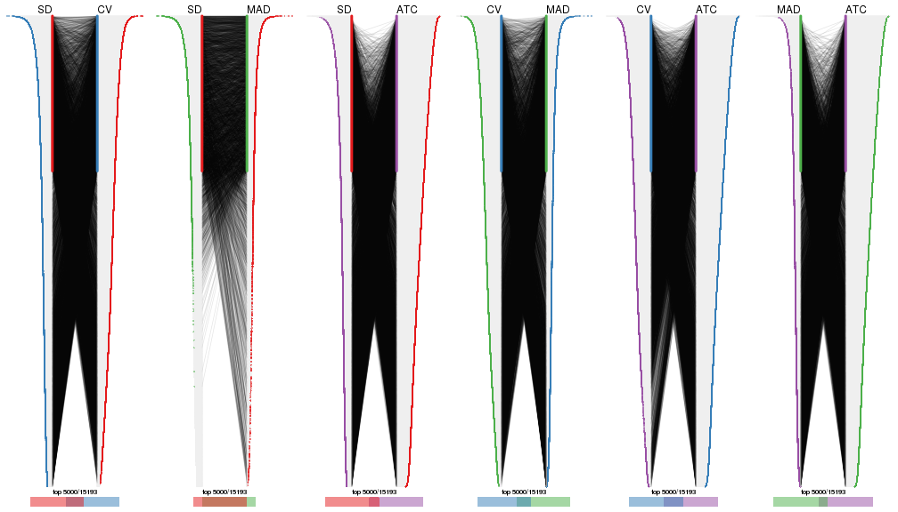
Heatmaps of the top rows:
top_rows_heatmap(res_list, top_n = 1000)

top_rows_heatmap(res_list, top_n = 2000)
top_rows_heatmap(res_list, top_n = 3000)
top_rows_heatmap(res_list, top_n = 4000)
top_rows_heatmap(res_list, top_n = 5000)
The object with results only for a single top-value method and a single partition method can be extracted as:
res = res_list["SD", "hclust"]
# you can also extract it by
# res = res_list["SD:hclust"]
A summary of res and all the functions that can be applied to it:
res
#> A 'ConsensusPartition' object with k = 2, 3, 4, 5, 6.
#> On a matrix with 15193 rows and 99 columns.
#> Top rows (1000, 2000, 3000, 4000, 5000) are extracted by 'SD' method.
#> Subgroups are detected by 'hclust' method.
#> Performed in total 1250 partitions by row resampling.
#> Best k for subgroups seems to be 2.
#>
#> Following methods can be applied to this 'ConsensusPartition' object:
#> [1] "cola_report" "collect_classes" "collect_plots"
#> [4] "collect_stats" "colnames" "compare_signatures"
#> [7] "consensus_heatmap" "dimension_reduction" "functional_enrichment"
#> [10] "get_anno_col" "get_anno" "get_classes"
#> [13] "get_consensus" "get_matrix" "get_membership"
#> [16] "get_param" "get_signatures" "get_stats"
#> [19] "is_best_k" "is_stable_k" "membership_heatmap"
#> [22] "ncol" "nrow" "plot_ecdf"
#> [25] "rownames" "select_partition_number" "show"
#> [28] "suggest_best_k" "test_to_known_factors"
collect_plots() function collects all the plots made from res for all k (number of partitions)
into one single page to provide an easy and fast comparison between different k.
collect_plots(res)
The plots are:
k and the heatmap of
predicted classes for each k.k.k.k.All the plots in panels can be made by individual functions and they are plotted later in this section.
select_partition_number() produces several plots showing different
statistics for choosing “optimized” k. There are following statistics:
k;k, the area increased is defined as \(A_k - A_{k-1}\).The detailed explanations of these statistics can be found in the cola vignette.
Generally speaking, lower PAC score, higher mean silhouette score or higher
concordance corresponds to better partition. Rand index and Jaccard index
measure how similar the current partition is compared to partition with k-1.
If they are too similar, we won't accept k is better than k-1.
select_partition_number(res)
The numeric values for all these statistics can be obtained by get_stats().
get_stats(res)
#> k 1-PAC mean_silhouette concordance area_increased Rand Jaccard
#> 2 2 0.417 0.646 0.858 0.3610 0.651 0.651
#> 3 3 0.305 0.523 0.779 0.2974 0.836 0.759
#> 4 4 0.314 0.562 0.760 0.2195 0.853 0.740
#> 5 5 0.396 0.509 0.741 0.0955 0.802 0.624
#> 6 6 0.445 0.526 0.752 0.0428 0.983 0.960
suggest_best_k() suggests the best \(k\) based on these statistics. The rules are as follows:
NA.suggest_best_k(res)
#> [1] 2
Following shows the table of the partitions (You need to click the show/hide
code output link to see it). The membership matrix (columns with name p*)
is inferred by
clue::cl_consensus()
function with the SE method. Basically the value in the membership matrix
represents the probability to belong to a certain group. The finall class
label for an item is determined with the group with highest probability it
belongs to.
In get_classes() function, the entropy is calculated from the membership
matrix and the silhouette score is calculated from the consensus matrix.
cbind(get_classes(res, k = 2), get_membership(res, k = 2))
#> class entropy silhouette p1 p2
#> SRR797072 1 0.3274 0.8211 0.940 0.060
#> SRR797073 1 0.0000 0.8299 1.000 0.000
#> SRR797074 1 0.3274 0.8211 0.940 0.060
#> SRR797075 1 0.4939 0.7922 0.892 0.108
#> SRR797076 1 0.2423 0.8123 0.960 0.040
#> SRR797077 1 0.3584 0.8197 0.932 0.068
#> SRR797078 1 0.0000 0.8299 1.000 0.000
#> SRR797079 1 0.0000 0.8299 1.000 0.000
#> SRR797080 1 0.0376 0.8298 0.996 0.004
#> SRR797081 1 0.0000 0.8299 1.000 0.000
#> SRR797082 1 0.3431 0.8194 0.936 0.064
#> SRR797083 1 0.3274 0.8211 0.940 0.060
#> SRR797084 2 0.9983 0.0741 0.476 0.524
#> SRR797085 2 0.5294 0.7031 0.120 0.880
#> SRR797086 1 0.6712 0.7267 0.824 0.176
#> SRR797087 1 0.9286 0.2897 0.656 0.344
#> SRR797088 1 0.3879 0.7966 0.924 0.076
#> SRR797089 1 0.9323 0.2780 0.652 0.348
#> SRR797090 1 0.4815 0.7951 0.896 0.104
#> SRR797091 1 0.6712 0.7262 0.824 0.176
#> SRR797092 1 0.7219 0.6233 0.800 0.200
#> SRR797093 1 0.0000 0.8299 1.000 0.000
#> SRR797094 1 0.0000 0.8299 1.000 0.000
#> SRR797095 1 0.9323 0.2780 0.652 0.348
#> SRR797096 1 0.2236 0.8283 0.964 0.036
#> SRR797097 1 0.7219 0.6233 0.800 0.200
#> SRR797098 1 0.9909 -0.0712 0.556 0.444
#> SRR797099 1 0.1414 0.8303 0.980 0.020
#> SRR797100 1 0.0000 0.8299 1.000 0.000
#> SRR797101 1 0.7299 0.6164 0.796 0.204
#> SRR797102 1 0.9866 0.1032 0.568 0.432
#> SRR797103 2 0.9686 0.4624 0.396 0.604
#> SRR797104 1 0.0000 0.8299 1.000 0.000
#> SRR797105 1 0.0000 0.8299 1.000 0.000
#> SRR797106 1 0.2423 0.8123 0.960 0.040
#> SRR797107 1 0.2423 0.8277 0.960 0.040
#> SRR797108 1 0.2423 0.8277 0.960 0.040
#> SRR797109 1 0.0000 0.8299 1.000 0.000
#> SRR797110 1 0.3733 0.8168 0.928 0.072
#> SRR797111 1 0.3431 0.8213 0.936 0.064
#> SRR797112 1 0.2423 0.8277 0.960 0.040
#> SRR797113 1 0.0000 0.8299 1.000 0.000
#> SRR797114 1 0.0000 0.8299 1.000 0.000
#> SRR797115 1 0.0000 0.8299 1.000 0.000
#> SRR797116 1 0.0000 0.8299 1.000 0.000
#> SRR797117 1 0.1843 0.8222 0.972 0.028
#> SRR797118 1 0.3431 0.8213 0.936 0.064
#> SRR797119 1 0.0000 0.8299 1.000 0.000
#> SRR797120 1 0.9866 0.1032 0.568 0.432
#> SRR797121 1 0.1184 0.8310 0.984 0.016
#> SRR797122 1 0.3274 0.8211 0.940 0.060
#> SRR797123 1 0.0000 0.8299 1.000 0.000
#> SRR797124 1 0.7299 0.6193 0.796 0.204
#> SRR797125 1 0.3733 0.8166 0.928 0.072
#> SRR797126 1 0.2778 0.8249 0.952 0.048
#> SRR797127 1 0.3431 0.8194 0.936 0.064
#> SRR797128 1 0.0000 0.8299 1.000 0.000
#> SRR797129 1 0.0000 0.8299 1.000 0.000
#> SRR797130 1 0.4939 0.7922 0.892 0.108
#> SRR797131 1 0.0376 0.8298 0.996 0.004
#> SRR797132 1 0.0376 0.8298 0.996 0.004
#> SRR797133 1 0.3431 0.8213 0.936 0.064
#> SRR797134 1 0.3431 0.8194 0.936 0.064
#> SRR797135 1 0.3274 0.8211 0.940 0.060
#> SRR797136 1 0.3274 0.8211 0.940 0.060
#> SRR797137 1 0.0000 0.8299 1.000 0.000
#> SRR797138 2 0.9754 0.4501 0.408 0.592
#> SRR797139 1 0.9909 -0.0712 0.556 0.444
#> SRR797140 1 0.0376 0.8298 0.996 0.004
#> SRR797141 1 0.0000 0.8299 1.000 0.000
#> SRR797142 1 0.0000 0.8299 1.000 0.000
#> SRR797143 2 0.0000 0.7037 0.000 1.000
#> SRR797144 2 0.9209 0.5841 0.336 0.664
#> SRR797145 2 0.9922 0.3817 0.448 0.552
#> SRR797146 2 0.0000 0.7037 0.000 1.000
#> SRR797147 1 0.4939 0.7922 0.892 0.108
#> SRR797148 1 0.1633 0.8211 0.976 0.024
#> SRR797149 2 0.0000 0.7037 0.000 1.000
#> SRR797150 2 0.9775 0.4419 0.412 0.588
#> SRR797151 2 0.9775 0.4419 0.412 0.588
#> SRR797152 1 0.9909 0.0564 0.556 0.444
#> SRR797153 1 0.9754 0.1846 0.592 0.408
#> SRR797154 1 0.9286 0.3831 0.656 0.344
#> SRR797155 2 0.1633 0.7068 0.024 0.976
#> SRR797156 1 0.9881 -0.0343 0.564 0.436
#> SRR797157 2 0.0000 0.7037 0.000 1.000
#> SRR797158 2 0.9795 0.4329 0.416 0.584
#> SRR797159 2 0.0000 0.7037 0.000 1.000
#> SRR797160 1 0.9881 -0.0343 0.564 0.436
#> SRR797161 2 0.8499 0.6408 0.276 0.724
#> SRR797162 2 0.8499 0.6408 0.276 0.724
#> SRR797163 2 0.4815 0.7061 0.104 0.896
#> SRR797164 2 0.8499 0.6408 0.276 0.724
#> SRR797165 1 0.9977 -0.1875 0.528 0.472
#> SRR797166 1 0.9977 -0.1875 0.528 0.472
#> SRR797167 2 0.0000 0.7037 0.000 1.000
#> SRR797168 1 0.9754 0.1846 0.592 0.408
#> SRR797169 2 0.9833 0.4105 0.424 0.576
#> SRR797170 2 0.0000 0.7037 0.000 1.000
cbind(get_classes(res, k = 3), get_membership(res, k = 3))
#> class entropy silhouette p1 p2 p3
#> SRR797072 1 0.4235 0.7289 0.824 0.176 0.000
#> SRR797073 1 0.0000 0.7508 1.000 0.000 0.000
#> SRR797074 1 0.4178 0.7305 0.828 0.172 0.000
#> SRR797075 1 0.4974 0.6877 0.764 0.236 0.000
#> SRR797076 3 0.6516 0.5072 0.480 0.004 0.516
#> SRR797077 1 0.4346 0.7274 0.816 0.184 0.000
#> SRR797078 1 0.0000 0.7508 1.000 0.000 0.000
#> SRR797079 1 0.0237 0.7493 0.996 0.000 0.004
#> SRR797080 1 0.1267 0.7509 0.972 0.024 0.004
#> SRR797081 1 0.0000 0.7508 1.000 0.000 0.000
#> SRR797082 1 0.4291 0.7268 0.820 0.180 0.000
#> SRR797083 1 0.4235 0.7289 0.824 0.176 0.000
#> SRR797084 3 0.0592 0.0997 0.000 0.012 0.988
#> SRR797085 2 0.6758 0.4452 0.072 0.728 0.200
#> SRR797086 1 0.5873 0.6051 0.684 0.312 0.004
#> SRR797087 1 0.6008 0.1346 0.628 0.372 0.000
#> SRR797088 1 0.3425 0.6983 0.884 0.112 0.004
#> SRR797089 1 0.6026 0.1226 0.624 0.376 0.000
#> SRR797090 1 0.5158 0.6921 0.764 0.232 0.004
#> SRR797091 1 0.5873 0.6047 0.684 0.312 0.004
#> SRR797092 1 0.4887 0.5209 0.772 0.228 0.000
#> SRR797093 1 0.0237 0.7495 0.996 0.000 0.004
#> SRR797094 1 0.0000 0.7508 1.000 0.000 0.000
#> SRR797095 1 0.6026 0.1226 0.624 0.376 0.000
#> SRR797096 1 0.3038 0.7512 0.896 0.104 0.000
#> SRR797097 1 0.4887 0.5209 0.772 0.228 0.000
#> SRR797098 1 0.7389 -0.2179 0.504 0.464 0.032
#> SRR797099 1 0.1529 0.7557 0.960 0.040 0.000
#> SRR797100 1 0.0000 0.7508 1.000 0.000 0.000
#> SRR797101 1 0.4931 0.5145 0.768 0.232 0.000
#> SRR797102 2 0.6225 0.1514 0.432 0.568 0.000
#> SRR797103 2 0.5244 0.4808 0.240 0.756 0.004
#> SRR797104 1 0.0000 0.7508 1.000 0.000 0.000
#> SRR797105 1 0.0237 0.7504 0.996 0.004 0.000
#> SRR797106 3 0.6516 0.5072 0.480 0.004 0.516
#> SRR797107 1 0.3482 0.7461 0.872 0.128 0.000
#> SRR797108 1 0.3482 0.7461 0.872 0.128 0.000
#> SRR797109 1 0.0237 0.7495 0.996 0.000 0.004
#> SRR797110 1 0.4346 0.7264 0.816 0.184 0.000
#> SRR797111 1 0.4291 0.7318 0.820 0.180 0.000
#> SRR797112 1 0.3482 0.7461 0.872 0.128 0.000
#> SRR797113 1 0.0424 0.7473 0.992 0.000 0.008
#> SRR797114 1 0.0424 0.7473 0.992 0.000 0.008
#> SRR797115 1 0.0424 0.7473 0.992 0.000 0.008
#> SRR797116 1 0.0424 0.7473 0.992 0.000 0.008
#> SRR797117 1 0.6527 -0.3161 0.588 0.008 0.404
#> SRR797118 1 0.4291 0.7318 0.820 0.180 0.000
#> SRR797119 1 0.0237 0.7495 0.996 0.000 0.004
#> SRR797120 2 0.6225 0.1514 0.432 0.568 0.000
#> SRR797121 1 0.1289 0.7516 0.968 0.032 0.000
#> SRR797122 1 0.4235 0.7289 0.824 0.176 0.000
#> SRR797123 1 0.0237 0.7493 0.996 0.000 0.004
#> SRR797124 1 0.4931 0.5390 0.784 0.212 0.004
#> SRR797125 1 0.4504 0.7213 0.804 0.196 0.000
#> SRR797126 1 0.3412 0.7478 0.876 0.124 0.000
#> SRR797127 1 0.4291 0.7268 0.820 0.180 0.000
#> SRR797128 1 0.0000 0.7508 1.000 0.000 0.000
#> SRR797129 1 0.0592 0.7501 0.988 0.012 0.000
#> SRR797130 1 0.4974 0.6877 0.764 0.236 0.000
#> SRR797131 1 0.1129 0.7510 0.976 0.020 0.004
#> SRR797132 1 0.1399 0.7507 0.968 0.028 0.004
#> SRR797133 1 0.4291 0.7318 0.820 0.180 0.000
#> SRR797134 1 0.4291 0.7268 0.820 0.180 0.000
#> SRR797135 1 0.4235 0.7289 0.824 0.176 0.000
#> SRR797136 1 0.4235 0.7289 0.824 0.176 0.000
#> SRR797137 1 0.0424 0.7473 0.992 0.000 0.008
#> SRR797138 2 0.5201 0.5087 0.236 0.760 0.004
#> SRR797139 1 0.7389 -0.2179 0.504 0.464 0.032
#> SRR797140 1 0.1129 0.7510 0.976 0.020 0.004
#> SRR797141 1 0.0237 0.7504 0.996 0.004 0.000
#> SRR797142 1 0.0000 0.7508 1.000 0.000 0.000
#> SRR797143 2 0.6291 0.3408 0.000 0.532 0.468
#> SRR797144 2 0.7959 0.3937 0.288 0.620 0.092
#> SRR797145 2 0.8556 0.3300 0.416 0.488 0.096
#> SRR797146 2 0.6291 0.3408 0.000 0.532 0.468
#> SRR797147 1 0.4974 0.6877 0.764 0.236 0.000
#> SRR797148 1 0.6824 -0.3180 0.576 0.016 0.408
#> SRR797149 2 0.6295 0.3391 0.000 0.528 0.472
#> SRR797150 2 0.5244 0.5084 0.240 0.756 0.004
#> SRR797151 2 0.5244 0.5084 0.240 0.756 0.004
#> SRR797152 2 0.6192 0.1827 0.420 0.580 0.000
#> SRR797153 2 0.6295 0.0626 0.472 0.528 0.000
#> SRR797154 1 0.6286 0.1503 0.536 0.464 0.000
#> SRR797155 2 0.6373 0.3647 0.004 0.588 0.408
#> SRR797156 1 0.7054 -0.1782 0.524 0.456 0.020
#> SRR797157 2 0.6291 0.3408 0.000 0.532 0.468
#> SRR797158 2 0.5285 0.5067 0.244 0.752 0.004
#> SRR797159 2 0.6291 0.3408 0.000 0.532 0.468
#> SRR797160 1 0.7054 -0.1782 0.524 0.456 0.020
#> SRR797161 2 0.1964 0.4782 0.056 0.944 0.000
#> SRR797162 2 0.1964 0.4782 0.056 0.944 0.000
#> SRR797163 2 0.3412 0.4134 0.000 0.876 0.124
#> SRR797164 2 0.1964 0.4782 0.056 0.944 0.000
#> SRR797165 2 0.7493 0.2618 0.476 0.488 0.036
#> SRR797166 2 0.7493 0.2618 0.476 0.488 0.036
#> SRR797167 2 0.6291 0.3408 0.000 0.532 0.468
#> SRR797168 2 0.6295 0.0626 0.472 0.528 0.000
#> SRR797169 2 0.5098 0.5033 0.248 0.752 0.000
#> SRR797170 2 0.6291 0.3408 0.000 0.532 0.468
cbind(get_classes(res, k = 4), get_membership(res, k = 4))
#> class entropy silhouette p1 p2 p3 p4
#> SRR797072 1 0.4098 0.703 0.784 0.000 0.204 0.012
#> SRR797073 1 0.0657 0.729 0.984 0.000 0.004 0.012
#> SRR797074 1 0.3893 0.706 0.796 0.000 0.196 0.008
#> SRR797075 1 0.4663 0.645 0.716 0.000 0.272 0.012
#> SRR797076 4 0.5578 0.673 0.312 0.000 0.040 0.648
#> SRR797077 1 0.4011 0.704 0.784 0.000 0.208 0.008
#> SRR797078 1 0.0524 0.730 0.988 0.000 0.004 0.008
#> SRR797079 1 0.1722 0.730 0.944 0.000 0.008 0.048
#> SRR797080 1 0.4199 0.649 0.804 0.000 0.032 0.164
#> SRR797081 1 0.0524 0.730 0.988 0.000 0.004 0.008
#> SRR797082 1 0.4137 0.701 0.780 0.000 0.208 0.012
#> SRR797083 1 0.4098 0.703 0.784 0.000 0.204 0.012
#> SRR797084 4 0.4933 -0.233 0.000 0.432 0.000 0.568
#> SRR797085 2 0.6274 0.326 0.024 0.520 0.436 0.020
#> SRR797086 1 0.6745 0.379 0.544 0.004 0.364 0.088
#> SRR797087 1 0.6926 -0.379 0.460 0.000 0.432 0.108
#> SRR797088 1 0.5383 0.557 0.740 0.000 0.160 0.100
#> SRR797089 1 0.6969 -0.398 0.448 0.000 0.440 0.112
#> SRR797090 1 0.5486 0.635 0.696 0.004 0.256 0.044
#> SRR797091 1 0.6745 0.376 0.544 0.004 0.364 0.088
#> SRR797092 1 0.5759 0.244 0.668 0.000 0.268 0.064
#> SRR797093 1 0.1474 0.719 0.948 0.000 0.000 0.052
#> SRR797094 1 0.0524 0.730 0.988 0.000 0.004 0.008
#> SRR797095 1 0.6969 -0.398 0.448 0.000 0.440 0.112
#> SRR797096 1 0.3392 0.735 0.856 0.000 0.124 0.020
#> SRR797097 1 0.5759 0.244 0.668 0.000 0.268 0.064
#> SRR797098 3 0.8584 0.400 0.256 0.052 0.472 0.220
#> SRR797099 1 0.2363 0.744 0.920 0.000 0.056 0.024
#> SRR797100 1 0.0779 0.728 0.980 0.000 0.004 0.016
#> SRR797101 1 0.5785 0.230 0.664 0.000 0.272 0.064
#> SRR797102 3 0.5004 0.378 0.392 0.004 0.604 0.000
#> SRR797103 3 0.5305 0.535 0.092 0.028 0.784 0.096
#> SRR797104 1 0.0779 0.728 0.980 0.000 0.004 0.016
#> SRR797105 1 0.2489 0.688 0.912 0.000 0.020 0.068
#> SRR797106 4 0.5578 0.673 0.312 0.000 0.040 0.648
#> SRR797107 1 0.3962 0.726 0.820 0.000 0.152 0.028
#> SRR797108 1 0.3962 0.726 0.820 0.000 0.152 0.028
#> SRR797109 1 0.1302 0.720 0.956 0.000 0.000 0.044
#> SRR797110 1 0.4011 0.704 0.784 0.000 0.208 0.008
#> SRR797111 1 0.3870 0.704 0.788 0.000 0.208 0.004
#> SRR797112 1 0.3962 0.726 0.820 0.000 0.152 0.028
#> SRR797113 1 0.2081 0.702 0.916 0.000 0.000 0.084
#> SRR797114 1 0.2081 0.702 0.916 0.000 0.000 0.084
#> SRR797115 1 0.2401 0.696 0.904 0.000 0.004 0.092
#> SRR797116 1 0.2401 0.696 0.904 0.000 0.004 0.092
#> SRR797117 4 0.6235 0.541 0.420 0.000 0.056 0.524
#> SRR797118 1 0.3870 0.704 0.788 0.000 0.208 0.004
#> SRR797119 1 0.1302 0.720 0.956 0.000 0.000 0.044
#> SRR797120 3 0.5004 0.378 0.392 0.004 0.604 0.000
#> SRR797121 1 0.2919 0.735 0.896 0.000 0.044 0.060
#> SRR797122 1 0.4098 0.703 0.784 0.000 0.204 0.012
#> SRR797123 1 0.2741 0.698 0.892 0.000 0.012 0.096
#> SRR797124 1 0.6502 0.279 0.644 0.004 0.228 0.124
#> SRR797125 1 0.4123 0.694 0.772 0.000 0.220 0.008
#> SRR797126 1 0.3708 0.729 0.832 0.000 0.148 0.020
#> SRR797127 1 0.4137 0.701 0.780 0.000 0.208 0.012
#> SRR797128 1 0.0524 0.730 0.988 0.000 0.004 0.008
#> SRR797129 1 0.1833 0.724 0.944 0.000 0.032 0.024
#> SRR797130 1 0.4663 0.645 0.716 0.000 0.272 0.012
#> SRR797131 1 0.3853 0.655 0.820 0.000 0.020 0.160
#> SRR797132 1 0.4462 0.641 0.792 0.000 0.044 0.164
#> SRR797133 1 0.3870 0.704 0.788 0.000 0.208 0.004
#> SRR797134 1 0.4137 0.701 0.780 0.000 0.208 0.012
#> SRR797135 1 0.4098 0.703 0.784 0.000 0.204 0.012
#> SRR797136 1 0.4098 0.703 0.784 0.000 0.204 0.012
#> SRR797137 1 0.2081 0.702 0.916 0.000 0.000 0.084
#> SRR797138 3 0.4425 0.620 0.128 0.048 0.816 0.008
#> SRR797139 3 0.8584 0.400 0.256 0.052 0.472 0.220
#> SRR797140 1 0.3853 0.655 0.820 0.000 0.020 0.160
#> SRR797141 1 0.2489 0.688 0.912 0.000 0.020 0.068
#> SRR797142 1 0.0524 0.730 0.988 0.000 0.004 0.008
#> SRR797143 2 0.0000 0.769 0.000 1.000 0.000 0.000
#> SRR797144 2 0.8889 0.261 0.088 0.468 0.256 0.188
#> SRR797145 2 0.9833 -0.112 0.172 0.320 0.264 0.244
#> SRR797146 2 0.0336 0.766 0.000 0.992 0.000 0.008
#> SRR797147 1 0.4663 0.645 0.716 0.000 0.272 0.012
#> SRR797148 4 0.5827 0.530 0.316 0.000 0.052 0.632
#> SRR797149 2 0.0336 0.767 0.000 0.992 0.000 0.008
#> SRR797150 3 0.4283 0.621 0.128 0.048 0.820 0.004
#> SRR797151 3 0.4283 0.621 0.128 0.048 0.820 0.004
#> SRR797152 3 0.5139 0.406 0.380 0.004 0.612 0.004
#> SRR797153 3 0.5649 0.421 0.396 0.020 0.580 0.004
#> SRR797154 3 0.5457 0.183 0.472 0.008 0.516 0.004
#> SRR797155 2 0.2982 0.723 0.004 0.896 0.068 0.032
#> SRR797156 3 0.7992 0.449 0.340 0.036 0.488 0.136
#> SRR797157 2 0.0817 0.761 0.000 0.976 0.024 0.000
#> SRR797158 3 0.4425 0.621 0.128 0.048 0.816 0.008
#> SRR797159 2 0.0000 0.769 0.000 1.000 0.000 0.000
#> SRR797160 3 0.7992 0.449 0.340 0.036 0.488 0.136
#> SRR797161 3 0.2412 0.457 0.008 0.000 0.908 0.084
#> SRR797162 3 0.2412 0.457 0.008 0.000 0.908 0.084
#> SRR797163 3 0.5309 0.168 0.000 0.164 0.744 0.092
#> SRR797164 3 0.2412 0.457 0.008 0.000 0.908 0.084
#> SRR797165 3 0.8687 0.404 0.224 0.068 0.484 0.224
#> SRR797166 3 0.8687 0.404 0.224 0.068 0.484 0.224
#> SRR797167 2 0.0000 0.769 0.000 1.000 0.000 0.000
#> SRR797168 3 0.5649 0.421 0.396 0.020 0.580 0.004
#> SRR797169 3 0.4253 0.620 0.132 0.044 0.820 0.004
#> SRR797170 2 0.0000 0.769 0.000 1.000 0.000 0.000
cbind(get_classes(res, k = 5), get_membership(res, k = 5))
#> class entropy silhouette p1 p2 p3 p4 p5
#> SRR797072 1 0.0981 0.72157 0.972 0.000 0.012 0.008 0.008
#> SRR797073 1 0.3582 0.69738 0.768 0.000 0.224 0.008 0.000
#> SRR797074 1 0.0566 0.72431 0.984 0.000 0.000 0.004 0.012
#> SRR797075 1 0.2654 0.68156 0.896 0.000 0.040 0.008 0.056
#> SRR797076 4 0.4851 0.66347 0.092 0.000 0.196 0.712 0.000
#> SRR797077 1 0.1026 0.72442 0.968 0.000 0.004 0.004 0.024
#> SRR797078 1 0.3430 0.69921 0.776 0.000 0.220 0.004 0.000
#> SRR797079 1 0.4354 0.70456 0.760 0.000 0.180 0.056 0.004
#> SRR797080 1 0.5455 0.54539 0.624 0.000 0.292 0.080 0.004
#> SRR797081 1 0.3430 0.69921 0.776 0.000 0.220 0.004 0.000
#> SRR797082 1 0.1095 0.72038 0.968 0.000 0.012 0.008 0.012
#> SRR797083 1 0.0981 0.72157 0.972 0.000 0.012 0.008 0.008
#> SRR797084 4 0.6786 -0.00575 0.000 0.244 0.004 0.436 0.316
#> SRR797085 2 0.7370 0.07478 0.032 0.496 0.244 0.012 0.216
#> SRR797086 1 0.5835 0.38216 0.648 0.004 0.252 0.036 0.060
#> SRR797087 3 0.2536 0.39343 0.128 0.000 0.868 0.004 0.000
#> SRR797088 1 0.5899 0.41811 0.520 0.000 0.404 0.052 0.024
#> SRR797089 3 0.2389 0.39909 0.116 0.000 0.880 0.004 0.000
#> SRR797090 1 0.3506 0.66963 0.856 0.004 0.080 0.020 0.040
#> SRR797091 1 0.5785 0.37970 0.648 0.004 0.256 0.032 0.060
#> SRR797092 3 0.4350 0.01775 0.408 0.000 0.588 0.004 0.000
#> SRR797093 1 0.4541 0.69312 0.744 0.000 0.172 0.084 0.000
#> SRR797094 1 0.3461 0.69791 0.772 0.000 0.224 0.004 0.000
#> SRR797095 3 0.2389 0.39909 0.116 0.000 0.880 0.004 0.000
#> SRR797096 1 0.2157 0.73570 0.920 0.000 0.040 0.036 0.004
#> SRR797097 3 0.4350 0.01775 0.408 0.000 0.588 0.004 0.000
#> SRR797098 3 0.4429 0.34395 0.044 0.024 0.808 0.104 0.020
#> SRR797099 1 0.3002 0.73152 0.856 0.000 0.116 0.028 0.000
#> SRR797100 1 0.3521 0.69489 0.764 0.000 0.232 0.004 0.000
#> SRR797101 3 0.4341 0.03345 0.404 0.000 0.592 0.004 0.000
#> SRR797102 1 0.6121 -0.14524 0.536 0.000 0.344 0.008 0.112
#> SRR797103 3 0.7719 -0.23289 0.212 0.028 0.472 0.032 0.256
#> SRR797104 1 0.3521 0.69489 0.764 0.000 0.232 0.004 0.000
#> SRR797105 1 0.4339 0.59939 0.652 0.000 0.336 0.012 0.000
#> SRR797106 4 0.4851 0.66347 0.092 0.000 0.196 0.712 0.000
#> SRR797107 1 0.1648 0.73271 0.940 0.000 0.020 0.040 0.000
#> SRR797108 1 0.1648 0.73271 0.940 0.000 0.020 0.040 0.000
#> SRR797109 1 0.4502 0.69392 0.744 0.000 0.180 0.076 0.000
#> SRR797110 1 0.0932 0.72367 0.972 0.000 0.004 0.004 0.020
#> SRR797111 1 0.1243 0.71933 0.960 0.000 0.028 0.004 0.008
#> SRR797112 1 0.1648 0.73271 0.940 0.000 0.020 0.040 0.000
#> SRR797113 1 0.4757 0.67386 0.732 0.000 0.120 0.148 0.000
#> SRR797114 1 0.4757 0.67386 0.732 0.000 0.120 0.148 0.000
#> SRR797115 1 0.4922 0.66576 0.716 0.000 0.128 0.156 0.000
#> SRR797116 1 0.4922 0.66576 0.716 0.000 0.128 0.156 0.000
#> SRR797117 4 0.6133 0.55621 0.164 0.000 0.292 0.544 0.000
#> SRR797118 1 0.1243 0.71933 0.960 0.000 0.028 0.004 0.008
#> SRR797119 1 0.4502 0.69392 0.744 0.000 0.180 0.076 0.000
#> SRR797120 1 0.6121 -0.14524 0.536 0.000 0.344 0.008 0.112
#> SRR797121 1 0.4651 0.70236 0.748 0.000 0.156 0.092 0.004
#> SRR797122 1 0.0981 0.72157 0.972 0.000 0.012 0.008 0.008
#> SRR797123 1 0.5083 0.67065 0.712 0.000 0.136 0.148 0.004
#> SRR797124 3 0.6466 -0.03824 0.416 0.000 0.436 0.140 0.008
#> SRR797125 1 0.1356 0.71525 0.956 0.000 0.028 0.004 0.012
#> SRR797126 1 0.1461 0.73408 0.952 0.000 0.016 0.028 0.004
#> SRR797127 1 0.1095 0.72038 0.968 0.000 0.012 0.008 0.012
#> SRR797128 1 0.3461 0.69791 0.772 0.000 0.224 0.004 0.000
#> SRR797129 1 0.3752 0.66062 0.708 0.000 0.292 0.000 0.000
#> SRR797130 1 0.2654 0.68156 0.896 0.000 0.040 0.008 0.056
#> SRR797131 1 0.5426 0.55978 0.636 0.000 0.276 0.084 0.004
#> SRR797132 1 0.5526 0.52466 0.608 0.000 0.308 0.080 0.004
#> SRR797133 1 0.1243 0.71933 0.960 0.000 0.028 0.004 0.008
#> SRR797134 1 0.1095 0.72038 0.968 0.000 0.012 0.008 0.012
#> SRR797135 1 0.0981 0.72157 0.972 0.000 0.012 0.008 0.008
#> SRR797136 1 0.0981 0.72157 0.972 0.000 0.012 0.008 0.008
#> SRR797137 1 0.4757 0.67386 0.732 0.000 0.120 0.148 0.000
#> SRR797138 3 0.6964 -0.04618 0.192 0.032 0.568 0.012 0.196
#> SRR797139 3 0.4429 0.34395 0.044 0.024 0.808 0.104 0.020
#> SRR797140 1 0.5426 0.55978 0.636 0.000 0.276 0.084 0.004
#> SRR797141 1 0.4339 0.59939 0.652 0.000 0.336 0.012 0.000
#> SRR797142 1 0.3430 0.69921 0.776 0.000 0.220 0.004 0.000
#> SRR797143 2 0.0404 0.83924 0.000 0.988 0.012 0.000 0.000
#> SRR797144 2 0.8312 0.23520 0.052 0.444 0.296 0.132 0.076
#> SRR797145 3 0.7060 0.00413 0.012 0.280 0.544 0.116 0.048
#> SRR797146 2 0.1018 0.83468 0.000 0.968 0.016 0.000 0.016
#> SRR797147 1 0.2654 0.68156 0.896 0.000 0.040 0.008 0.056
#> SRR797148 4 0.6142 0.49266 0.128 0.000 0.280 0.580 0.012
#> SRR797149 2 0.1074 0.83509 0.000 0.968 0.016 0.012 0.004
#> SRR797150 3 0.6964 -0.03958 0.196 0.032 0.568 0.012 0.192
#> SRR797151 3 0.6964 -0.03958 0.196 0.032 0.568 0.012 0.192
#> SRR797152 1 0.6369 -0.18397 0.508 0.000 0.344 0.008 0.140
#> SRR797153 1 0.5374 -0.34447 0.496 0.004 0.464 0.008 0.028
#> SRR797154 1 0.5026 -0.01677 0.608 0.000 0.356 0.008 0.028
#> SRR797155 2 0.3122 0.77172 0.000 0.860 0.108 0.016 0.016
#> SRR797156 3 0.6936 0.33132 0.192 0.016 0.604 0.132 0.056
#> SRR797157 2 0.0963 0.83070 0.000 0.964 0.036 0.000 0.000
#> SRR797158 3 0.6936 -0.03577 0.196 0.032 0.572 0.012 0.188
#> SRR797159 2 0.0404 0.83924 0.000 0.988 0.012 0.000 0.000
#> SRR797160 3 0.6936 0.33132 0.192 0.016 0.604 0.132 0.056
#> SRR797161 5 0.5657 0.87477 0.128 0.000 0.256 0.000 0.616
#> SRR797162 5 0.5657 0.87477 0.128 0.000 0.256 0.000 0.616
#> SRR797163 5 0.5680 0.64146 0.000 0.140 0.240 0.000 0.620
#> SRR797164 5 0.5657 0.87477 0.128 0.000 0.256 0.000 0.616
#> SRR797165 3 0.4290 0.30501 0.020 0.036 0.812 0.112 0.020
#> SRR797166 3 0.4290 0.30501 0.020 0.036 0.812 0.112 0.020
#> SRR797167 2 0.0404 0.83924 0.000 0.988 0.012 0.000 0.000
#> SRR797168 1 0.5374 -0.34447 0.496 0.004 0.464 0.008 0.028
#> SRR797169 3 0.6875 -0.02416 0.216 0.028 0.572 0.012 0.172
#> SRR797170 2 0.0404 0.83924 0.000 0.988 0.012 0.000 0.000
cbind(get_classes(res, k = 6), get_membership(res, k = 6))
#> class entropy silhouette p1 p2 p3 p4 p5 p6
#> SRR797072 1 0.0696 0.7189 0.980 0.000 0.008 0.004 0.004 0.004
#> SRR797073 1 0.4726 0.6717 0.748 0.000 0.120 0.016 0.092 0.024
#> SRR797074 1 0.0291 0.7205 0.992 0.000 0.000 0.000 0.004 0.004
#> SRR797075 1 0.2329 0.6903 0.904 0.000 0.036 0.008 0.048 0.004
#> SRR797076 4 0.1321 0.6266 0.024 0.000 0.020 0.952 0.000 0.004
#> SRR797077 1 0.0748 0.7217 0.976 0.000 0.004 0.004 0.016 0.000
#> SRR797078 1 0.4596 0.6730 0.756 0.000 0.116 0.012 0.092 0.024
#> SRR797079 1 0.4956 0.6882 0.736 0.000 0.092 0.120 0.032 0.020
#> SRR797080 1 0.4913 0.5313 0.600 0.000 0.340 0.040 0.020 0.000
#> SRR797081 1 0.4596 0.6730 0.756 0.000 0.116 0.012 0.092 0.024
#> SRR797082 1 0.0798 0.7181 0.976 0.000 0.012 0.004 0.004 0.004
#> SRR797083 1 0.0696 0.7189 0.980 0.000 0.008 0.004 0.004 0.004
#> SRR797084 6 0.2092 0.0000 0.000 0.124 0.000 0.000 0.000 0.876
#> SRR797085 2 0.7388 0.1486 0.028 0.476 0.232 0.020 0.204 0.040
#> SRR797086 1 0.5477 0.4251 0.644 0.004 0.248 0.048 0.048 0.008
#> SRR797087 3 0.4703 0.4490 0.096 0.000 0.760 0.028 0.092 0.024
#> SRR797088 1 0.6815 0.4249 0.512 0.000 0.288 0.072 0.100 0.028
#> SRR797089 3 0.4454 0.4561 0.080 0.000 0.780 0.032 0.088 0.020
#> SRR797090 1 0.3242 0.6784 0.856 0.004 0.084 0.024 0.024 0.008
#> SRR797091 1 0.5513 0.4225 0.644 0.004 0.244 0.048 0.052 0.008
#> SRR797092 3 0.6179 0.0297 0.384 0.000 0.480 0.020 0.092 0.024
#> SRR797093 1 0.5467 0.6653 0.696 0.000 0.064 0.156 0.056 0.028
#> SRR797094 1 0.4685 0.6714 0.752 0.000 0.116 0.016 0.092 0.024
#> SRR797095 3 0.4454 0.4561 0.080 0.000 0.780 0.032 0.088 0.020
#> SRR797096 1 0.1556 0.7257 0.920 0.000 0.000 0.080 0.000 0.000
#> SRR797097 3 0.6179 0.0297 0.384 0.000 0.480 0.020 0.092 0.024
#> SRR797098 3 0.2006 0.4625 0.024 0.004 0.928 0.020 0.004 0.020
#> SRR797099 1 0.3606 0.7206 0.844 0.000 0.036 0.048 0.044 0.028
#> SRR797100 1 0.4717 0.6685 0.744 0.000 0.128 0.012 0.092 0.024
#> SRR797101 3 0.6168 0.0518 0.376 0.000 0.488 0.020 0.092 0.024
#> SRR797102 1 0.5509 -0.0720 0.544 0.000 0.336 0.004 0.112 0.004
#> SRR797103 3 0.7101 0.1098 0.208 0.016 0.456 0.040 0.272 0.008
#> SRR797104 1 0.4717 0.6685 0.744 0.000 0.128 0.012 0.092 0.024
#> SRR797105 1 0.5885 0.5624 0.616 0.000 0.240 0.032 0.088 0.024
#> SRR797106 4 0.1321 0.6266 0.024 0.000 0.020 0.952 0.000 0.004
#> SRR797107 1 0.1588 0.7239 0.924 0.000 0.000 0.072 0.004 0.000
#> SRR797108 1 0.1588 0.7239 0.924 0.000 0.000 0.072 0.004 0.000
#> SRR797109 1 0.5573 0.6665 0.696 0.000 0.072 0.132 0.072 0.028
#> SRR797110 1 0.0665 0.7212 0.980 0.000 0.008 0.000 0.008 0.004
#> SRR797111 1 0.1332 0.7160 0.952 0.000 0.028 0.012 0.008 0.000
#> SRR797112 1 0.1588 0.7239 0.924 0.000 0.000 0.072 0.004 0.000
#> SRR797113 1 0.3703 0.6096 0.688 0.000 0.000 0.304 0.004 0.004
#> SRR797114 1 0.3703 0.6096 0.688 0.000 0.000 0.304 0.004 0.004
#> SRR797115 1 0.3820 0.5852 0.660 0.000 0.004 0.332 0.000 0.004
#> SRR797116 1 0.3820 0.5852 0.660 0.000 0.004 0.332 0.000 0.004
#> SRR797117 4 0.4213 0.6242 0.108 0.000 0.140 0.748 0.004 0.000
#> SRR797118 1 0.1332 0.7160 0.952 0.000 0.028 0.012 0.008 0.000
#> SRR797119 1 0.5573 0.6665 0.696 0.000 0.072 0.132 0.072 0.028
#> SRR797120 1 0.5509 -0.0720 0.544 0.000 0.336 0.004 0.112 0.004
#> SRR797121 1 0.4171 0.6547 0.716 0.000 0.040 0.236 0.008 0.000
#> SRR797122 1 0.0696 0.7189 0.980 0.000 0.008 0.004 0.004 0.004
#> SRR797123 1 0.4553 0.5822 0.648 0.000 0.036 0.304 0.000 0.012
#> SRR797124 1 0.6728 -0.0541 0.376 0.000 0.328 0.268 0.012 0.016
#> SRR797125 1 0.1003 0.7143 0.964 0.000 0.028 0.000 0.004 0.004
#> SRR797126 1 0.1075 0.7264 0.952 0.000 0.000 0.048 0.000 0.000
#> SRR797127 1 0.0798 0.7181 0.976 0.000 0.012 0.004 0.004 0.004
#> SRR797128 1 0.4685 0.6714 0.752 0.000 0.116 0.016 0.092 0.024
#> SRR797129 1 0.5130 0.6322 0.688 0.000 0.188 0.008 0.092 0.024
#> SRR797130 1 0.2329 0.6903 0.904 0.000 0.036 0.008 0.048 0.004
#> SRR797131 1 0.4919 0.5449 0.612 0.000 0.324 0.044 0.020 0.000
#> SRR797132 1 0.4960 0.5115 0.584 0.000 0.356 0.040 0.020 0.000
#> SRR797133 1 0.1332 0.7160 0.952 0.000 0.028 0.012 0.008 0.000
#> SRR797134 1 0.0798 0.7181 0.976 0.000 0.012 0.004 0.004 0.004
#> SRR797135 1 0.0696 0.7189 0.980 0.000 0.008 0.004 0.004 0.004
#> SRR797136 1 0.0696 0.7189 0.980 0.000 0.008 0.004 0.004 0.004
#> SRR797137 1 0.3703 0.6096 0.688 0.000 0.000 0.304 0.004 0.004
#> SRR797138 3 0.6597 0.3227 0.196 0.028 0.544 0.016 0.208 0.008
#> SRR797139 3 0.2006 0.4625 0.024 0.004 0.928 0.020 0.004 0.020
#> SRR797140 1 0.4919 0.5449 0.612 0.000 0.324 0.044 0.020 0.000
#> SRR797141 1 0.5885 0.5624 0.616 0.000 0.240 0.032 0.088 0.024
#> SRR797142 1 0.4596 0.6730 0.756 0.000 0.116 0.012 0.092 0.024
#> SRR797143 2 0.0000 0.7673 0.000 1.000 0.000 0.000 0.000 0.000
#> SRR797144 2 0.7600 0.1258 0.036 0.392 0.388 0.048 0.084 0.052
#> SRR797145 3 0.5901 0.1021 0.004 0.212 0.644 0.028 0.056 0.056
#> SRR797146 2 0.1536 0.7471 0.000 0.940 0.016 0.000 0.040 0.004
#> SRR797147 1 0.2329 0.6903 0.904 0.000 0.036 0.008 0.048 0.004
#> SRR797148 4 0.5660 0.4828 0.088 0.000 0.288 0.592 0.012 0.020
#> SRR797149 2 0.0779 0.7619 0.000 0.976 0.008 0.000 0.008 0.008
#> SRR797150 3 0.6598 0.3260 0.200 0.028 0.544 0.016 0.204 0.008
#> SRR797151 3 0.6598 0.3260 0.200 0.028 0.544 0.016 0.204 0.008
#> SRR797152 1 0.5833 -0.1194 0.512 0.000 0.336 0.004 0.140 0.008
#> SRR797153 1 0.5127 -0.3086 0.488 0.004 0.456 0.020 0.032 0.000
#> SRR797154 1 0.4757 0.0466 0.600 0.000 0.352 0.020 0.028 0.000
#> SRR797155 2 0.3763 0.6388 0.000 0.800 0.140 0.012 0.040 0.008
#> SRR797156 3 0.6749 0.4143 0.164 0.008 0.592 0.140 0.060 0.036
#> SRR797157 2 0.1418 0.7512 0.000 0.944 0.032 0.000 0.024 0.000
#> SRR797158 3 0.6674 0.3272 0.200 0.028 0.540 0.020 0.204 0.008
#> SRR797159 2 0.0000 0.7673 0.000 1.000 0.000 0.000 0.000 0.000
#> SRR797160 3 0.6749 0.4143 0.164 0.008 0.592 0.140 0.060 0.036
#> SRR797161 5 0.3190 0.8671 0.136 0.000 0.044 0.000 0.820 0.000
#> SRR797162 5 0.3190 0.8671 0.136 0.000 0.044 0.000 0.820 0.000
#> SRR797163 5 0.3757 0.5154 0.000 0.124 0.040 0.000 0.804 0.032
#> SRR797164 5 0.3190 0.8671 0.136 0.000 0.044 0.000 0.820 0.000
#> SRR797165 3 0.1988 0.4471 0.004 0.004 0.928 0.024 0.012 0.028
#> SRR797166 3 0.1988 0.4471 0.004 0.004 0.928 0.024 0.012 0.028
#> SRR797167 2 0.0000 0.7673 0.000 1.000 0.000 0.000 0.000 0.000
#> SRR797168 1 0.5127 -0.3086 0.488 0.004 0.456 0.020 0.032 0.000
#> SRR797169 3 0.6622 0.3272 0.220 0.024 0.540 0.020 0.188 0.008
#> SRR797170 2 0.0000 0.7673 0.000 1.000 0.000 0.000 0.000 0.000
Heatmaps for the consensus matrix. It visualizes the probability of two samples to be in a same group.
consensus_heatmap(res, k = 2)
consensus_heatmap(res, k = 3)
consensus_heatmap(res, k = 4)
consensus_heatmap(res, k = 5)
consensus_heatmap(res, k = 6)
Heatmaps for the membership of samples in all partitions to see how consistent they are:
membership_heatmap(res, k = 2)
membership_heatmap(res, k = 3)
membership_heatmap(res, k = 4)
membership_heatmap(res, k = 5)
membership_heatmap(res, k = 6)
As soon as we have had the classes for columns, we can look for signatures which are significantly different between classes which can be candidate marks for certain classes. Following are the heatmaps for signatures.
Signature heatmaps where rows are scaled:
get_signatures(res, k = 2)
get_signatures(res, k = 3)
get_signatures(res, k = 4)
get_signatures(res, k = 5)
get_signatures(res, k = 6)
Signature heatmaps where rows are not scaled:
get_signatures(res, k = 2, scale_rows = FALSE)
get_signatures(res, k = 3, scale_rows = FALSE)
get_signatures(res, k = 4, scale_rows = FALSE)
get_signatures(res, k = 5, scale_rows = FALSE)
get_signatures(res, k = 6, scale_rows = FALSE)
Compare the overlap of signatures from different k:
compare_signatures(res)
get_signature() returns a data frame invisibly. TO get the list of signatures, the function
call should be assigned to a variable explicitly. In following code, if plot argument is set
to FALSE, no heatmap is plotted while only the differential analysis is performed.
# code only for demonstration
tb = get_signature(res, k = ..., plot = FALSE)
An example of the output of tb is:
#> which_row fdr mean_1 mean_2 scaled_mean_1 scaled_mean_2 km
#> 1 38 0.042760348 8.373488 9.131774 -0.5533452 0.5164555 1
#> 2 40 0.018707592 7.106213 8.469186 -0.6173731 0.5762149 1
#> 3 55 0.019134737 10.221463 11.207825 -0.6159697 0.5749050 1
#> 4 59 0.006059896 5.921854 7.869574 -0.6899429 0.6439467 1
#> 5 60 0.018055526 8.928898 10.211722 -0.6204761 0.5791110 1
#> 6 98 0.009384629 15.714769 14.887706 0.6635654 -0.6193277 2
...
The columns in tb are:
which_row: row indices corresponding to the input matrix.fdr: FDR for the differential test. mean_x: The mean value in group x.scaled_mean_x: The mean value in group x after rows are scaled.km: Row groups if k-means clustering is applied to rows.UMAP plot which shows how samples are separated.
dimension_reduction(res, k = 2, method = "UMAP")
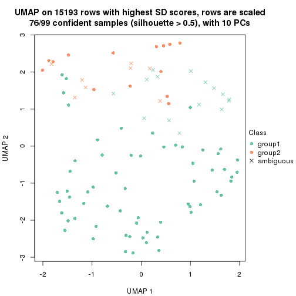
dimension_reduction(res, k = 3, method = "UMAP")
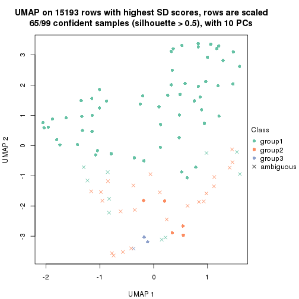
dimension_reduction(res, k = 4, method = "UMAP")
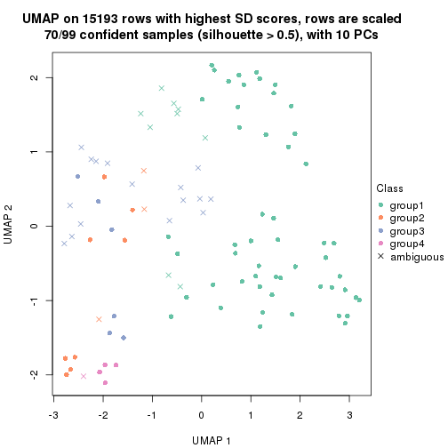
dimension_reduction(res, k = 5, method = "UMAP")
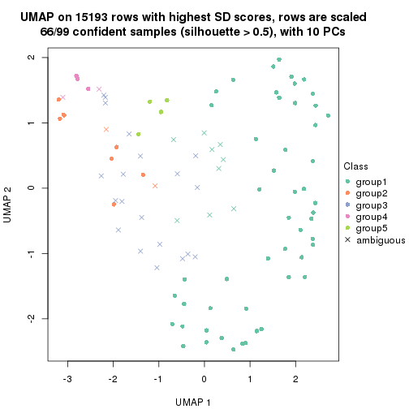
dimension_reduction(res, k = 6, method = "UMAP")
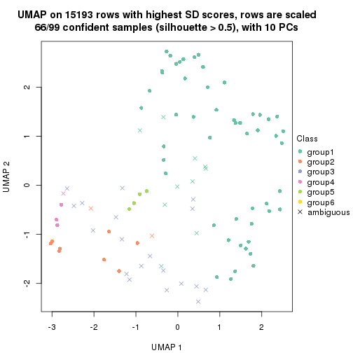
Following heatmap shows how subgroups are split when increasing k:
collect_classes(res)
If matrix rows can be associated to genes, consider to use GO_Enrichment(res,
...) to perform function enrichment for the signature genes.
The object with results only for a single top-value method and a single partition method can be extracted as:
res = res_list["SD", "kmeans"]
# you can also extract it by
# res = res_list["SD:kmeans"]
A summary of res and all the functions that can be applied to it:
res
#> A 'ConsensusPartition' object with k = 2, 3, 4, 5, 6.
#> On a matrix with 15193 rows and 99 columns.
#> Top rows (1000, 2000, 3000, 4000, 5000) are extracted by 'SD' method.
#> Subgroups are detected by 'kmeans' method.
#> Performed in total 1250 partitions by row resampling.
#> Best k for subgroups seems to be 3.
#>
#> Following methods can be applied to this 'ConsensusPartition' object:
#> [1] "cola_report" "collect_classes" "collect_plots"
#> [4] "collect_stats" "colnames" "compare_signatures"
#> [7] "consensus_heatmap" "dimension_reduction" "functional_enrichment"
#> [10] "get_anno_col" "get_anno" "get_classes"
#> [13] "get_consensus" "get_matrix" "get_membership"
#> [16] "get_param" "get_signatures" "get_stats"
#> [19] "is_best_k" "is_stable_k" "membership_heatmap"
#> [22] "ncol" "nrow" "plot_ecdf"
#> [25] "rownames" "select_partition_number" "show"
#> [28] "suggest_best_k" "test_to_known_factors"
collect_plots() function collects all the plots made from res for all k (number of partitions)
into one single page to provide an easy and fast comparison between different k.
collect_plots(res)
The plots are:
k and the heatmap of
predicted classes for each k.k.k.k.All the plots in panels can be made by individual functions and they are plotted later in this section.
select_partition_number() produces several plots showing different
statistics for choosing “optimized” k. There are following statistics:
k;k, the area increased is defined as \(A_k - A_{k-1}\).The detailed explanations of these statistics can be found in the cola vignette.
Generally speaking, lower PAC score, higher mean silhouette score or higher
concordance corresponds to better partition. Rand index and Jaccard index
measure how similar the current partition is compared to partition with k-1.
If they are too similar, we won't accept k is better than k-1.
select_partition_number(res)
The numeric values for all these statistics can be obtained by get_stats().
get_stats(res)
#> k 1-PAC mean_silhouette concordance area_increased Rand Jaccard
#> 2 2 0.523 0.884 0.936 0.4305 0.573 0.573
#> 3 3 0.498 0.761 0.859 0.4598 0.640 0.441
#> 4 4 0.533 0.513 0.727 0.1346 0.900 0.736
#> 5 5 0.610 0.629 0.765 0.0868 0.869 0.600
#> 6 6 0.656 0.510 0.703 0.0477 0.913 0.647
suggest_best_k() suggests the best \(k\) based on these statistics. The rules are as follows:
NA.suggest_best_k(res)
#> [1] 3
Following shows the table of the partitions (You need to click the show/hide
code output link to see it). The membership matrix (columns with name p*)
is inferred by
clue::cl_consensus()
function with the SE method. Basically the value in the membership matrix
represents the probability to belong to a certain group. The finall class
label for an item is determined with the group with highest probability it
belongs to.
In get_classes() function, the entropy is calculated from the membership
matrix and the silhouette score is calculated from the consensus matrix.
cbind(get_classes(res, k = 2), get_membership(res, k = 2))
#> class entropy silhouette p1 p2
#> SRR797072 1 0.4690 0.905 0.900 0.100
#> SRR797073 1 0.0376 0.933 0.996 0.004
#> SRR797074 1 0.4690 0.905 0.900 0.100
#> SRR797075 1 0.5178 0.895 0.884 0.116
#> SRR797076 1 0.8555 0.680 0.720 0.280
#> SRR797077 1 0.4815 0.903 0.896 0.104
#> SRR797078 1 0.0376 0.933 0.996 0.004
#> SRR797079 1 0.0376 0.933 0.996 0.004
#> SRR797080 1 0.0376 0.933 0.996 0.004
#> SRR797081 1 0.0376 0.933 0.996 0.004
#> SRR797082 1 0.4690 0.905 0.900 0.100
#> SRR797083 1 0.0000 0.932 1.000 0.000
#> SRR797084 2 0.0000 0.917 0.000 1.000
#> SRR797085 2 0.0376 0.917 0.004 0.996
#> SRR797086 1 0.4815 0.903 0.896 0.104
#> SRR797087 1 0.0376 0.933 0.996 0.004
#> SRR797088 1 0.0376 0.933 0.996 0.004
#> SRR797089 1 0.0376 0.933 0.996 0.004
#> SRR797090 1 0.4690 0.905 0.900 0.100
#> SRR797091 1 0.4161 0.910 0.916 0.084
#> SRR797092 1 0.0376 0.933 0.996 0.004
#> SRR797093 1 0.0000 0.932 1.000 0.000
#> SRR797094 1 0.0376 0.933 0.996 0.004
#> SRR797095 1 0.0376 0.933 0.996 0.004
#> SRR797096 1 0.0000 0.932 1.000 0.000
#> SRR797097 1 0.0376 0.933 0.996 0.004
#> SRR797098 2 0.8955 0.641 0.312 0.688
#> SRR797099 1 0.0000 0.932 1.000 0.000
#> SRR797100 1 0.0376 0.933 0.996 0.004
#> SRR797101 1 0.0376 0.933 0.996 0.004
#> SRR797102 2 0.0376 0.917 0.004 0.996
#> SRR797103 2 0.2948 0.890 0.052 0.948
#> SRR797104 1 0.0376 0.933 0.996 0.004
#> SRR797105 1 0.0376 0.933 0.996 0.004
#> SRR797106 1 0.9000 0.602 0.684 0.316
#> SRR797107 1 0.3879 0.913 0.924 0.076
#> SRR797108 1 0.4690 0.905 0.900 0.100
#> SRR797109 1 0.0000 0.932 1.000 0.000
#> SRR797110 1 0.4815 0.903 0.896 0.104
#> SRR797111 1 0.5178 0.895 0.884 0.116
#> SRR797112 1 0.0000 0.932 1.000 0.000
#> SRR797113 1 0.0000 0.932 1.000 0.000
#> SRR797114 1 0.0376 0.932 0.996 0.004
#> SRR797115 1 0.0000 0.932 1.000 0.000
#> SRR797116 1 0.0000 0.932 1.000 0.000
#> SRR797117 1 0.6887 0.736 0.816 0.184
#> SRR797118 1 0.4690 0.905 0.900 0.100
#> SRR797119 1 0.0376 0.933 0.996 0.004
#> SRR797120 1 0.4815 0.903 0.896 0.104
#> SRR797121 1 0.0000 0.932 1.000 0.000
#> SRR797122 1 0.4939 0.900 0.892 0.108
#> SRR797123 1 0.0000 0.932 1.000 0.000
#> SRR797124 1 0.0376 0.933 0.996 0.004
#> SRR797125 1 0.5178 0.895 0.884 0.116
#> SRR797126 1 0.5178 0.895 0.884 0.116
#> SRR797127 1 0.5178 0.895 0.884 0.116
#> SRR797128 1 0.0376 0.933 0.996 0.004
#> SRR797129 1 0.0376 0.933 0.996 0.004
#> SRR797130 1 0.5178 0.895 0.884 0.116
#> SRR797131 1 0.0376 0.933 0.996 0.004
#> SRR797132 1 0.0376 0.933 0.996 0.004
#> SRR797133 1 0.5178 0.895 0.884 0.116
#> SRR797134 1 0.5178 0.895 0.884 0.116
#> SRR797135 1 0.4690 0.905 0.900 0.100
#> SRR797136 1 0.4690 0.905 0.900 0.100
#> SRR797137 1 0.0000 0.932 1.000 0.000
#> SRR797138 2 0.0000 0.917 0.000 1.000
#> SRR797139 2 0.7299 0.788 0.204 0.796
#> SRR797140 1 0.0376 0.933 0.996 0.004
#> SRR797141 1 0.0376 0.933 0.996 0.004
#> SRR797142 1 0.0376 0.933 0.996 0.004
#> SRR797143 2 0.0000 0.917 0.000 1.000
#> SRR797144 2 0.0000 0.917 0.000 1.000
#> SRR797145 2 0.5059 0.845 0.112 0.888
#> SRR797146 2 0.0000 0.917 0.000 1.000
#> SRR797147 1 0.6887 0.826 0.816 0.184
#> SRR797148 1 0.6531 0.765 0.832 0.168
#> SRR797149 2 0.0000 0.917 0.000 1.000
#> SRR797150 2 0.0376 0.917 0.004 0.996
#> SRR797151 2 0.0376 0.917 0.004 0.996
#> SRR797152 2 0.7219 0.730 0.200 0.800
#> SRR797153 2 0.7299 0.731 0.204 0.796
#> SRR797154 1 0.9248 0.561 0.660 0.340
#> SRR797155 2 0.0000 0.917 0.000 1.000
#> SRR797156 2 0.9896 0.143 0.440 0.560
#> SRR797157 2 0.0000 0.917 0.000 1.000
#> SRR797158 2 0.0376 0.917 0.004 0.996
#> SRR797159 2 0.0000 0.917 0.000 1.000
#> SRR797160 1 0.0376 0.933 0.996 0.004
#> SRR797161 2 0.8207 0.651 0.256 0.744
#> SRR797162 2 0.0376 0.917 0.004 0.996
#> SRR797163 2 0.0000 0.917 0.000 1.000
#> SRR797164 1 0.4815 0.903 0.896 0.104
#> SRR797165 2 0.6148 0.829 0.152 0.848
#> SRR797166 2 0.6973 0.803 0.188 0.812
#> SRR797167 2 0.0000 0.917 0.000 1.000
#> SRR797168 2 0.4562 0.861 0.096 0.904
#> SRR797169 2 0.0376 0.917 0.004 0.996
#> SRR797170 2 0.0000 0.917 0.000 1.000
cbind(get_classes(res, k = 3), get_membership(res, k = 3))
#> class entropy silhouette p1 p2 p3
#> SRR797072 1 0.0592 0.86916 0.988 0.000 0.012
#> SRR797073 3 0.5138 0.80378 0.252 0.000 0.748
#> SRR797074 1 0.0592 0.86916 0.988 0.000 0.012
#> SRR797075 1 0.2625 0.83584 0.916 0.000 0.084
#> SRR797076 1 0.6322 0.70117 0.772 0.108 0.120
#> SRR797077 1 0.0424 0.87044 0.992 0.000 0.008
#> SRR797078 3 0.5138 0.80378 0.252 0.000 0.748
#> SRR797079 3 0.5216 0.79851 0.260 0.000 0.740
#> SRR797080 3 0.3686 0.85260 0.140 0.000 0.860
#> SRR797081 3 0.5138 0.80378 0.252 0.000 0.748
#> SRR797082 1 0.0424 0.87044 0.992 0.000 0.008
#> SRR797083 1 0.1289 0.85683 0.968 0.000 0.032
#> SRR797084 2 0.1643 0.84880 0.000 0.956 0.044
#> SRR797085 2 0.0892 0.86862 0.000 0.980 0.020
#> SRR797086 1 0.1753 0.85556 0.952 0.000 0.048
#> SRR797087 3 0.2537 0.84769 0.080 0.000 0.920
#> SRR797088 3 0.2878 0.85510 0.096 0.000 0.904
#> SRR797089 3 0.2537 0.84769 0.080 0.000 0.920
#> SRR797090 1 0.0592 0.87030 0.988 0.000 0.012
#> SRR797091 1 0.2356 0.84241 0.928 0.000 0.072
#> SRR797092 3 0.2959 0.85630 0.100 0.000 0.900
#> SRR797093 3 0.5529 0.75968 0.296 0.000 0.704
#> SRR797094 3 0.2959 0.85630 0.100 0.000 0.900
#> SRR797095 3 0.2537 0.84769 0.080 0.000 0.920
#> SRR797096 1 0.2066 0.83094 0.940 0.000 0.060
#> SRR797097 3 0.2796 0.85356 0.092 0.000 0.908
#> SRR797098 3 0.3607 0.73283 0.008 0.112 0.880
#> SRR797099 1 0.6026 0.41574 0.624 0.000 0.376
#> SRR797100 3 0.5138 0.80378 0.252 0.000 0.748
#> SRR797101 3 0.2537 0.84769 0.080 0.000 0.920
#> SRR797102 2 0.8477 0.30444 0.380 0.524 0.096
#> SRR797103 2 0.7199 0.65339 0.204 0.704 0.092
#> SRR797104 3 0.5138 0.80378 0.252 0.000 0.748
#> SRR797105 3 0.3340 0.85711 0.120 0.000 0.880
#> SRR797106 1 0.6892 0.65421 0.736 0.152 0.112
#> SRR797107 1 0.0424 0.87010 0.992 0.000 0.008
#> SRR797108 1 0.0424 0.87010 0.992 0.000 0.008
#> SRR797109 3 0.5497 0.76432 0.292 0.000 0.708
#> SRR797110 1 0.0424 0.87044 0.992 0.000 0.008
#> SRR797111 1 0.0000 0.86989 1.000 0.000 0.000
#> SRR797112 1 0.0424 0.87010 0.992 0.000 0.008
#> SRR797113 1 0.4346 0.65440 0.816 0.000 0.184
#> SRR797114 1 0.0000 0.86989 1.000 0.000 0.000
#> SRR797115 1 0.2165 0.83538 0.936 0.000 0.064
#> SRR797116 3 0.6244 0.49974 0.440 0.000 0.560
#> SRR797117 1 0.7113 0.67817 0.720 0.112 0.168
#> SRR797118 1 0.0237 0.87006 0.996 0.000 0.004
#> SRR797119 3 0.5465 0.76893 0.288 0.000 0.712
#> SRR797120 1 0.4002 0.76909 0.840 0.000 0.160
#> SRR797121 1 0.0424 0.87010 0.992 0.000 0.008
#> SRR797122 1 0.0424 0.87044 0.992 0.000 0.008
#> SRR797123 3 0.4750 0.81288 0.216 0.000 0.784
#> SRR797124 3 0.5216 0.62586 0.260 0.000 0.740
#> SRR797125 1 0.0000 0.86989 1.000 0.000 0.000
#> SRR797126 1 0.0592 0.86502 0.988 0.000 0.012
#> SRR797127 1 0.0424 0.87044 0.992 0.000 0.008
#> SRR797128 3 0.2878 0.85510 0.096 0.000 0.904
#> SRR797129 3 0.3340 0.85711 0.120 0.000 0.880
#> SRR797130 1 0.0892 0.86817 0.980 0.000 0.020
#> SRR797131 3 0.4062 0.84486 0.164 0.000 0.836
#> SRR797132 3 0.2878 0.85509 0.096 0.000 0.904
#> SRR797133 1 0.0000 0.86989 1.000 0.000 0.000
#> SRR797134 1 0.0237 0.87055 0.996 0.000 0.004
#> SRR797135 1 0.0592 0.86916 0.988 0.000 0.012
#> SRR797136 1 0.0592 0.86916 0.988 0.000 0.012
#> SRR797137 1 0.3412 0.75391 0.876 0.000 0.124
#> SRR797138 2 0.1289 0.86773 0.000 0.968 0.032
#> SRR797139 3 0.3112 0.74490 0.004 0.096 0.900
#> SRR797140 3 0.3038 0.85680 0.104 0.000 0.896
#> SRR797141 3 0.3340 0.85711 0.120 0.000 0.880
#> SRR797142 3 0.5138 0.80378 0.252 0.000 0.748
#> SRR797143 2 0.0000 0.86916 0.000 1.000 0.000
#> SRR797144 2 0.1643 0.86153 0.000 0.956 0.044
#> SRR797145 3 0.5291 0.54965 0.000 0.268 0.732
#> SRR797146 2 0.0000 0.86916 0.000 1.000 0.000
#> SRR797147 1 0.0747 0.86930 0.984 0.000 0.016
#> SRR797148 3 0.2187 0.79214 0.024 0.028 0.948
#> SRR797149 2 0.0000 0.86916 0.000 1.000 0.000
#> SRR797150 2 0.2096 0.85972 0.004 0.944 0.052
#> SRR797151 1 0.8250 0.16928 0.528 0.392 0.080
#> SRR797152 2 0.8318 0.50155 0.284 0.600 0.116
#> SRR797153 1 0.8746 0.42724 0.588 0.228 0.184
#> SRR797154 1 0.7382 0.63256 0.700 0.116 0.184
#> SRR797155 2 0.1411 0.86212 0.000 0.964 0.036
#> SRR797156 1 0.9627 0.00422 0.428 0.364 0.208
#> SRR797157 2 0.0000 0.86916 0.000 1.000 0.000
#> SRR797158 2 0.7727 0.41771 0.336 0.600 0.064
#> SRR797159 2 0.0000 0.86916 0.000 1.000 0.000
#> SRR797160 3 0.5760 0.51293 0.328 0.000 0.672
#> SRR797161 1 0.7781 0.52941 0.664 0.220 0.116
#> SRR797162 2 0.2496 0.85599 0.004 0.928 0.068
#> SRR797163 2 0.1860 0.86252 0.000 0.948 0.052
#> SRR797164 1 0.4974 0.70886 0.764 0.000 0.236
#> SRR797165 3 0.5365 0.55881 0.004 0.252 0.744
#> SRR797166 3 0.5325 0.56575 0.004 0.248 0.748
#> SRR797167 2 0.0000 0.86916 0.000 1.000 0.000
#> SRR797168 1 0.9191 0.32145 0.536 0.256 0.208
#> SRR797169 2 0.8742 0.09173 0.436 0.456 0.108
#> SRR797170 2 0.0000 0.86916 0.000 1.000 0.000
cbind(get_classes(res, k = 4), get_membership(res, k = 4))
#> class entropy silhouette p1 p2 p3 p4
#> SRR797072 1 0.0817 0.7066 0.976 0.000 0.000 0.024
#> SRR797073 3 0.4956 0.6479 0.188 0.000 0.756 0.056
#> SRR797074 1 0.0707 0.7083 0.980 0.000 0.000 0.020
#> SRR797075 1 0.3039 0.6403 0.900 0.052 0.012 0.036
#> SRR797076 4 0.6440 0.3737 0.404 0.052 0.008 0.536
#> SRR797077 1 0.0376 0.7121 0.992 0.004 0.000 0.004
#> SRR797078 3 0.5030 0.6489 0.188 0.000 0.752 0.060
#> SRR797079 3 0.7278 0.3097 0.188 0.000 0.528 0.284
#> SRR797080 3 0.1488 0.7624 0.032 0.000 0.956 0.012
#> SRR797081 3 0.5070 0.6447 0.192 0.000 0.748 0.060
#> SRR797082 1 0.0188 0.7121 0.996 0.000 0.000 0.004
#> SRR797083 1 0.3606 0.5686 0.840 0.000 0.020 0.140
#> SRR797084 2 0.4907 0.4830 0.000 0.580 0.000 0.420
#> SRR797085 2 0.1824 0.5820 0.000 0.936 0.004 0.060
#> SRR797086 1 0.1492 0.7058 0.956 0.004 0.004 0.036
#> SRR797087 3 0.1284 0.7600 0.012 0.000 0.964 0.024
#> SRR797088 3 0.2089 0.7551 0.020 0.000 0.932 0.048
#> SRR797089 3 0.0937 0.7582 0.012 0.000 0.976 0.012
#> SRR797090 1 0.0188 0.7121 0.996 0.000 0.000 0.004
#> SRR797091 1 0.3485 0.6154 0.856 0.000 0.028 0.116
#> SRR797092 3 0.2214 0.7566 0.028 0.000 0.928 0.044
#> SRR797093 3 0.7253 0.2270 0.308 0.000 0.520 0.172
#> SRR797094 3 0.1411 0.7629 0.020 0.000 0.960 0.020
#> SRR797095 3 0.0937 0.7582 0.012 0.000 0.976 0.012
#> SRR797096 1 0.6121 -0.0364 0.552 0.000 0.052 0.396
#> SRR797097 3 0.1297 0.7618 0.016 0.000 0.964 0.020
#> SRR797098 3 0.2943 0.7047 0.000 0.076 0.892 0.032
#> SRR797099 3 0.8555 -0.2938 0.324 0.032 0.400 0.244
#> SRR797100 3 0.4996 0.6445 0.192 0.000 0.752 0.056
#> SRR797101 3 0.1174 0.7603 0.012 0.000 0.968 0.020
#> SRR797102 2 0.7595 0.3469 0.320 0.524 0.020 0.136
#> SRR797103 2 0.6223 0.4470 0.244 0.676 0.028 0.052
#> SRR797104 3 0.4996 0.6445 0.192 0.000 0.752 0.056
#> SRR797105 3 0.0895 0.7631 0.020 0.000 0.976 0.004
#> SRR797106 4 0.6357 0.5556 0.288 0.060 0.016 0.636
#> SRR797107 1 0.3539 0.5664 0.820 0.000 0.004 0.176
#> SRR797108 1 0.1022 0.7043 0.968 0.000 0.000 0.032
#> SRR797109 3 0.6912 0.3709 0.272 0.000 0.576 0.152
#> SRR797110 1 0.0895 0.7076 0.976 0.004 0.000 0.020
#> SRR797111 1 0.3128 0.6556 0.884 0.040 0.000 0.076
#> SRR797112 1 0.4088 0.4810 0.764 0.000 0.004 0.232
#> SRR797113 1 0.6384 -0.0922 0.532 0.000 0.068 0.400
#> SRR797114 1 0.4936 0.1242 0.624 0.000 0.004 0.372
#> SRR797115 1 0.6024 -0.0866 0.540 0.000 0.044 0.416
#> SRR797116 4 0.7692 0.2870 0.368 0.000 0.220 0.412
#> SRR797117 4 0.6644 0.5760 0.268 0.052 0.040 0.640
#> SRR797118 1 0.3731 0.6454 0.844 0.036 0.000 0.120
#> SRR797119 3 0.6056 0.5196 0.248 0.000 0.660 0.092
#> SRR797120 1 0.7807 0.2380 0.564 0.244 0.040 0.152
#> SRR797121 1 0.3837 0.4880 0.776 0.000 0.000 0.224
#> SRR797122 1 0.0188 0.7121 0.996 0.000 0.000 0.004
#> SRR797123 3 0.6957 0.0616 0.112 0.000 0.472 0.416
#> SRR797124 3 0.7795 -0.1559 0.036 0.104 0.440 0.420
#> SRR797125 1 0.0895 0.7063 0.976 0.004 0.000 0.020
#> SRR797126 1 0.4756 0.5548 0.784 0.072 0.000 0.144
#> SRR797127 1 0.0376 0.7105 0.992 0.004 0.000 0.004
#> SRR797128 3 0.1042 0.7633 0.020 0.000 0.972 0.008
#> SRR797129 3 0.1042 0.7633 0.020 0.000 0.972 0.008
#> SRR797130 1 0.1610 0.6919 0.952 0.032 0.000 0.016
#> SRR797131 3 0.2635 0.7434 0.076 0.000 0.904 0.020
#> SRR797132 3 0.1059 0.7623 0.016 0.000 0.972 0.012
#> SRR797133 1 0.3525 0.6477 0.860 0.040 0.000 0.100
#> SRR797134 1 0.0188 0.7121 0.996 0.000 0.000 0.004
#> SRR797135 1 0.0817 0.7066 0.976 0.000 0.000 0.024
#> SRR797136 1 0.0592 0.7093 0.984 0.000 0.000 0.016
#> SRR797137 1 0.6324 -0.0821 0.536 0.000 0.064 0.400
#> SRR797138 2 0.1305 0.5724 0.000 0.960 0.004 0.036
#> SRR797139 3 0.3037 0.7027 0.000 0.076 0.888 0.036
#> SRR797140 3 0.1042 0.7629 0.020 0.000 0.972 0.008
#> SRR797141 3 0.0895 0.7631 0.020 0.000 0.976 0.004
#> SRR797142 3 0.5070 0.6447 0.192 0.000 0.748 0.060
#> SRR797143 2 0.4331 0.5663 0.000 0.712 0.000 0.288
#> SRR797144 2 0.3893 0.5715 0.000 0.796 0.008 0.196
#> SRR797145 3 0.4920 0.6004 0.000 0.136 0.776 0.088
#> SRR797146 2 0.4356 0.5646 0.000 0.708 0.000 0.292
#> SRR797147 1 0.1724 0.6889 0.948 0.032 0.000 0.020
#> SRR797148 3 0.5229 0.2717 0.000 0.008 0.564 0.428
#> SRR797149 2 0.4356 0.5646 0.000 0.708 0.000 0.292
#> SRR797150 2 0.6074 0.5090 0.128 0.704 0.008 0.160
#> SRR797151 2 0.7919 0.2877 0.368 0.432 0.012 0.188
#> SRR797152 2 0.7411 0.3799 0.280 0.580 0.036 0.104
#> SRR797153 2 0.8451 0.1697 0.380 0.400 0.040 0.180
#> SRR797154 1 0.8796 0.1051 0.484 0.264 0.100 0.152
#> SRR797155 2 0.4328 0.5669 0.000 0.748 0.008 0.244
#> SRR797156 2 0.8593 0.1511 0.244 0.436 0.040 0.280
#> SRR797157 2 0.4277 0.5662 0.000 0.720 0.000 0.280
#> SRR797158 2 0.7552 0.3783 0.300 0.516 0.008 0.176
#> SRR797159 2 0.4331 0.5663 0.000 0.712 0.000 0.288
#> SRR797160 4 0.7857 0.1273 0.040 0.104 0.404 0.452
#> SRR797161 1 0.7770 -0.1367 0.460 0.388 0.024 0.128
#> SRR797162 2 0.5504 0.5161 0.128 0.756 0.012 0.104
#> SRR797163 2 0.1388 0.5788 0.000 0.960 0.012 0.028
#> SRR797164 1 0.8665 0.0445 0.476 0.292 0.080 0.152
#> SRR797165 3 0.4507 0.6138 0.000 0.168 0.788 0.044
#> SRR797166 3 0.4417 0.6228 0.000 0.160 0.796 0.044
#> SRR797167 2 0.4331 0.5663 0.000 0.712 0.000 0.288
#> SRR797168 2 0.8437 0.2211 0.360 0.420 0.040 0.180
#> SRR797169 2 0.7577 0.2885 0.392 0.476 0.024 0.108
#> SRR797170 2 0.4356 0.5646 0.000 0.708 0.000 0.292
cbind(get_classes(res, k = 5), get_membership(res, k = 5))
#> class entropy silhouette p1 p2 p3 p4 p5
#> SRR797072 1 0.0162 0.815 0.996 0.000 0.000 0.004 0.000
#> SRR797073 3 0.4848 0.610 0.060 0.000 0.732 0.192 0.016
#> SRR797074 1 0.0162 0.815 0.996 0.000 0.000 0.004 0.000
#> SRR797075 1 0.1862 0.778 0.932 0.000 0.004 0.016 0.048
#> SRR797076 4 0.6468 0.494 0.232 0.024 0.000 0.580 0.164
#> SRR797077 1 0.0865 0.811 0.972 0.000 0.004 0.000 0.024
#> SRR797078 3 0.4799 0.624 0.056 0.000 0.752 0.164 0.028
#> SRR797079 4 0.6162 0.107 0.056 0.000 0.400 0.508 0.036
#> SRR797080 3 0.3773 0.721 0.008 0.000 0.824 0.060 0.108
#> SRR797081 3 0.4900 0.617 0.060 0.000 0.744 0.168 0.028
#> SRR797082 1 0.0000 0.816 1.000 0.000 0.000 0.000 0.000
#> SRR797083 1 0.3257 0.683 0.852 0.000 0.024 0.112 0.012
#> SRR797084 2 0.2171 0.792 0.000 0.912 0.000 0.064 0.024
#> SRR797085 2 0.4516 0.252 0.000 0.576 0.004 0.004 0.416
#> SRR797086 1 0.1997 0.790 0.924 0.000 0.000 0.036 0.040
#> SRR797087 3 0.2863 0.719 0.000 0.000 0.876 0.064 0.060
#> SRR797088 3 0.3849 0.714 0.008 0.000 0.820 0.104 0.068
#> SRR797089 3 0.3861 0.706 0.000 0.000 0.804 0.068 0.128
#> SRR797090 1 0.0000 0.816 1.000 0.000 0.000 0.000 0.000
#> SRR797091 1 0.2830 0.737 0.876 0.000 0.000 0.080 0.044
#> SRR797092 3 0.4583 0.693 0.016 0.000 0.764 0.156 0.064
#> SRR797093 3 0.5976 0.397 0.096 0.000 0.592 0.296 0.016
#> SRR797094 3 0.1306 0.732 0.008 0.000 0.960 0.016 0.016
#> SRR797095 3 0.3354 0.715 0.000 0.000 0.844 0.068 0.088
#> SRR797096 4 0.5518 0.601 0.240 0.000 0.028 0.668 0.064
#> SRR797097 3 0.2863 0.719 0.000 0.000 0.876 0.064 0.060
#> SRR797098 3 0.4483 0.666 0.000 0.012 0.768 0.064 0.156
#> SRR797099 3 0.8343 -0.192 0.156 0.000 0.364 0.240 0.240
#> SRR797100 3 0.4863 0.611 0.064 0.000 0.740 0.176 0.020
#> SRR797101 3 0.2863 0.719 0.000 0.000 0.876 0.064 0.060
#> SRR797102 5 0.4791 0.801 0.172 0.064 0.004 0.012 0.748
#> SRR797103 5 0.8101 0.426 0.216 0.212 0.028 0.072 0.472
#> SRR797104 3 0.4816 0.618 0.060 0.000 0.748 0.168 0.024
#> SRR797105 3 0.3053 0.733 0.008 0.000 0.872 0.044 0.076
#> SRR797106 4 0.5561 0.577 0.088 0.040 0.000 0.700 0.172
#> SRR797107 1 0.4836 0.408 0.652 0.000 0.000 0.304 0.044
#> SRR797108 1 0.0865 0.806 0.972 0.000 0.000 0.024 0.004
#> SRR797109 3 0.5866 0.436 0.088 0.000 0.604 0.292 0.016
#> SRR797110 1 0.0579 0.814 0.984 0.000 0.000 0.008 0.008
#> SRR797111 1 0.4602 0.378 0.656 0.000 0.000 0.028 0.316
#> SRR797112 1 0.5236 -0.061 0.492 0.000 0.000 0.464 0.044
#> SRR797113 4 0.5553 0.625 0.220 0.000 0.028 0.676 0.076
#> SRR797114 4 0.5255 0.526 0.304 0.000 0.000 0.624 0.072
#> SRR797115 4 0.4861 0.640 0.204 0.000 0.024 0.728 0.044
#> SRR797116 4 0.5040 0.636 0.096 0.000 0.124 0.748 0.032
#> SRR797117 4 0.5419 0.587 0.080 0.024 0.008 0.716 0.172
#> SRR797118 1 0.6526 0.177 0.468 0.000 0.000 0.216 0.316
#> SRR797119 3 0.5432 0.505 0.076 0.000 0.656 0.256 0.012
#> SRR797120 5 0.4847 0.747 0.240 0.000 0.012 0.044 0.704
#> SRR797121 1 0.4716 0.381 0.656 0.000 0.000 0.308 0.036
#> SRR797122 1 0.0000 0.816 1.000 0.000 0.000 0.000 0.000
#> SRR797123 4 0.5102 0.525 0.040 0.000 0.224 0.704 0.032
#> SRR797124 4 0.6367 0.456 0.004 0.000 0.188 0.536 0.272
#> SRR797125 1 0.2193 0.767 0.900 0.000 0.000 0.008 0.092
#> SRR797126 1 0.5958 -0.140 0.468 0.000 0.004 0.092 0.436
#> SRR797127 1 0.0932 0.809 0.972 0.000 0.004 0.004 0.020
#> SRR797128 3 0.2011 0.735 0.008 0.000 0.928 0.020 0.044
#> SRR797129 3 0.3187 0.729 0.008 0.000 0.860 0.036 0.096
#> SRR797130 1 0.1356 0.801 0.956 0.000 0.004 0.012 0.028
#> SRR797131 3 0.4831 0.703 0.024 0.000 0.760 0.096 0.120
#> SRR797132 3 0.3292 0.722 0.004 0.000 0.844 0.032 0.120
#> SRR797133 1 0.6194 0.193 0.516 0.000 0.000 0.156 0.328
#> SRR797134 1 0.0671 0.812 0.980 0.000 0.000 0.004 0.016
#> SRR797135 1 0.0000 0.816 1.000 0.000 0.000 0.000 0.000
#> SRR797136 1 0.0162 0.815 0.996 0.000 0.000 0.004 0.000
#> SRR797137 4 0.5553 0.625 0.220 0.000 0.028 0.676 0.076
#> SRR797138 5 0.4403 0.103 0.000 0.436 0.000 0.004 0.560
#> SRR797139 3 0.5113 0.635 0.000 0.004 0.684 0.080 0.232
#> SRR797140 3 0.3473 0.721 0.008 0.000 0.840 0.040 0.112
#> SRR797141 3 0.3053 0.733 0.008 0.000 0.872 0.044 0.076
#> SRR797142 3 0.4900 0.617 0.060 0.000 0.744 0.168 0.028
#> SRR797143 2 0.0324 0.845 0.000 0.992 0.004 0.000 0.004
#> SRR797144 2 0.5208 0.476 0.000 0.640 0.012 0.044 0.304
#> SRR797145 3 0.7145 0.499 0.000 0.140 0.556 0.092 0.212
#> SRR797146 2 0.0162 0.844 0.000 0.996 0.004 0.000 0.000
#> SRR797147 1 0.1356 0.801 0.956 0.000 0.004 0.012 0.028
#> SRR797148 4 0.6590 0.173 0.000 0.008 0.288 0.508 0.196
#> SRR797149 2 0.0000 0.845 0.000 1.000 0.000 0.000 0.000
#> SRR797150 5 0.5815 0.635 0.080 0.240 0.000 0.032 0.648
#> SRR797151 5 0.5677 0.786 0.224 0.072 0.000 0.036 0.668
#> SRR797152 5 0.5488 0.770 0.140 0.128 0.004 0.020 0.708
#> SRR797153 5 0.5261 0.795 0.180 0.028 0.012 0.052 0.728
#> SRR797154 5 0.5954 0.750 0.216 0.012 0.040 0.064 0.668
#> SRR797155 2 0.3320 0.759 0.000 0.856 0.016 0.032 0.096
#> SRR797156 5 0.5547 0.742 0.096 0.052 0.012 0.104 0.736
#> SRR797157 2 0.0162 0.846 0.000 0.996 0.000 0.000 0.004
#> SRR797158 5 0.5910 0.771 0.192 0.116 0.000 0.032 0.660
#> SRR797159 2 0.0162 0.846 0.000 0.996 0.000 0.000 0.004
#> SRR797160 4 0.6330 0.445 0.012 0.000 0.156 0.564 0.268
#> SRR797161 5 0.4939 0.754 0.276 0.008 0.008 0.028 0.680
#> SRR797162 5 0.5760 0.639 0.076 0.228 0.004 0.028 0.664
#> SRR797163 2 0.5002 0.235 0.000 0.548 0.004 0.024 0.424
#> SRR797164 5 0.4671 0.775 0.232 0.000 0.016 0.032 0.720
#> SRR797165 3 0.6010 0.598 0.000 0.040 0.640 0.088 0.232
#> SRR797166 3 0.5934 0.606 0.000 0.040 0.648 0.084 0.228
#> SRR797167 2 0.0162 0.846 0.000 0.996 0.000 0.000 0.004
#> SRR797168 5 0.4691 0.801 0.184 0.024 0.012 0.024 0.756
#> SRR797169 5 0.5670 0.702 0.320 0.052 0.008 0.012 0.608
#> SRR797170 2 0.0162 0.846 0.000 0.996 0.000 0.000 0.004
cbind(get_classes(res, k = 6), get_membership(res, k = 6))
#> class entropy silhouette p1 p2 p3 p4 p5 p6
#> SRR797072 1 0.0405 0.86509 0.988 0.000 0.004 0.008 0.000 0.000
#> SRR797073 3 0.2537 0.48272 0.020 0.000 0.896 0.048 0.004 0.032
#> SRR797074 1 0.0665 0.86583 0.980 0.000 0.004 0.008 0.000 0.008
#> SRR797075 1 0.1053 0.85363 0.964 0.000 0.004 0.000 0.020 0.012
#> SRR797076 4 0.5875 0.45628 0.160 0.012 0.000 0.652 0.092 0.084
#> SRR797077 1 0.1078 0.86160 0.964 0.000 0.008 0.000 0.012 0.016
#> SRR797078 3 0.1495 0.48627 0.020 0.000 0.948 0.004 0.008 0.020
#> SRR797079 3 0.5199 0.10430 0.016 0.000 0.620 0.304 0.020 0.040
#> SRR797080 3 0.4612 0.09547 0.000 0.000 0.544 0.020 0.012 0.424
#> SRR797081 3 0.1210 0.48848 0.020 0.000 0.960 0.004 0.008 0.008
#> SRR797082 1 0.0291 0.86586 0.992 0.000 0.004 0.004 0.000 0.000
#> SRR797083 1 0.2873 0.79540 0.876 0.000 0.048 0.056 0.008 0.012
#> SRR797084 2 0.2259 0.86034 0.000 0.908 0.000 0.032 0.020 0.040
#> SRR797085 5 0.5383 0.09416 0.000 0.440 0.000 0.024 0.480 0.056
#> SRR797086 1 0.2590 0.82383 0.896 0.000 0.008 0.028 0.044 0.024
#> SRR797087 3 0.3823 -0.40044 0.000 0.000 0.564 0.000 0.000 0.436
#> SRR797088 3 0.5037 -0.41489 0.000 0.000 0.516 0.020 0.036 0.428
#> SRR797089 6 0.3810 0.60451 0.000 0.000 0.428 0.000 0.000 0.572
#> SRR797090 1 0.0779 0.86300 0.976 0.000 0.000 0.008 0.008 0.008
#> SRR797091 1 0.2984 0.80227 0.872 0.000 0.004 0.052 0.036 0.036
#> SRR797092 3 0.3468 0.09623 0.000 0.000 0.728 0.000 0.008 0.264
#> SRR797093 3 0.4706 0.36459 0.052 0.000 0.732 0.172 0.008 0.036
#> SRR797094 3 0.3121 0.29739 0.000 0.000 0.796 0.004 0.008 0.192
#> SRR797095 6 0.3868 0.50076 0.000 0.000 0.492 0.000 0.000 0.508
#> SRR797096 4 0.6412 0.61496 0.148 0.000 0.180 0.592 0.060 0.020
#> SRR797097 3 0.3817 -0.39189 0.000 0.000 0.568 0.000 0.000 0.432
#> SRR797098 6 0.4289 0.63422 0.000 0.000 0.424 0.000 0.020 0.556
#> SRR797099 5 0.8568 -0.15657 0.084 0.000 0.212 0.224 0.312 0.168
#> SRR797100 3 0.1950 0.47752 0.020 0.000 0.924 0.044 0.004 0.008
#> SRR797101 3 0.3817 -0.39189 0.000 0.000 0.568 0.000 0.000 0.432
#> SRR797102 5 0.2879 0.67877 0.080 0.024 0.000 0.016 0.872 0.008
#> SRR797103 5 0.7446 0.32640 0.204 0.096 0.000 0.012 0.372 0.316
#> SRR797104 3 0.0692 0.48706 0.020 0.000 0.976 0.000 0.000 0.004
#> SRR797105 3 0.4403 0.09629 0.000 0.000 0.580 0.012 0.012 0.396
#> SRR797106 4 0.4700 0.53604 0.024 0.020 0.008 0.768 0.096 0.084
#> SRR797107 1 0.6745 0.25357 0.544 0.000 0.152 0.224 0.048 0.032
#> SRR797108 1 0.1785 0.84558 0.936 0.000 0.008 0.028 0.016 0.012
#> SRR797109 3 0.5156 0.38970 0.048 0.000 0.712 0.164 0.020 0.056
#> SRR797110 1 0.0748 0.86535 0.976 0.000 0.000 0.004 0.004 0.016
#> SRR797111 1 0.5168 0.00714 0.512 0.000 0.004 0.036 0.428 0.020
#> SRR797112 1 0.7291 -0.17193 0.404 0.000 0.180 0.332 0.048 0.036
#> SRR797113 4 0.6819 0.62004 0.140 0.000 0.160 0.580 0.064 0.056
#> SRR797114 4 0.6703 0.60723 0.168 0.000 0.120 0.592 0.068 0.052
#> SRR797115 4 0.5413 0.63710 0.132 0.000 0.160 0.664 0.044 0.000
#> SRR797116 4 0.5022 0.58877 0.048 0.000 0.256 0.656 0.040 0.000
#> SRR797117 4 0.4443 0.54727 0.020 0.012 0.012 0.784 0.096 0.076
#> SRR797118 5 0.7689 0.12300 0.248 0.000 0.124 0.180 0.420 0.028
#> SRR797119 3 0.4094 0.42344 0.040 0.000 0.784 0.140 0.008 0.028
#> SRR797120 5 0.3721 0.65390 0.104 0.000 0.004 0.052 0.816 0.024
#> SRR797121 1 0.4536 0.57812 0.708 0.000 0.016 0.232 0.032 0.012
#> SRR797122 1 0.0436 0.86607 0.988 0.000 0.004 0.004 0.000 0.004
#> SRR797123 4 0.5428 0.36257 0.016 0.000 0.392 0.532 0.016 0.044
#> SRR797124 4 0.6809 0.44485 0.012 0.000 0.096 0.540 0.196 0.156
#> SRR797125 1 0.3197 0.72916 0.828 0.000 0.004 0.016 0.140 0.012
#> SRR797126 5 0.5406 0.43716 0.320 0.000 0.000 0.084 0.576 0.020
#> SRR797127 1 0.0665 0.86324 0.980 0.000 0.008 0.000 0.004 0.008
#> SRR797128 3 0.3915 0.21088 0.000 0.000 0.696 0.012 0.008 0.284
#> SRR797129 3 0.4242 0.12610 0.000 0.000 0.612 0.012 0.008 0.368
#> SRR797130 1 0.0870 0.85860 0.972 0.000 0.004 0.000 0.012 0.012
#> SRR797131 3 0.4509 0.24334 0.000 0.000 0.620 0.020 0.016 0.344
#> SRR797132 3 0.4576 -0.04947 0.000 0.000 0.504 0.016 0.012 0.468
#> SRR797133 5 0.7472 0.19003 0.280 0.000 0.108 0.156 0.432 0.024
#> SRR797134 1 0.0436 0.86559 0.988 0.000 0.004 0.004 0.004 0.000
#> SRR797135 1 0.0405 0.86509 0.988 0.000 0.004 0.008 0.000 0.000
#> SRR797136 1 0.0779 0.86571 0.976 0.000 0.008 0.008 0.000 0.008
#> SRR797137 4 0.6819 0.62004 0.140 0.000 0.160 0.580 0.064 0.056
#> SRR797138 5 0.5131 0.40992 0.000 0.308 0.000 0.020 0.608 0.064
#> SRR797139 6 0.4020 0.76004 0.000 0.000 0.276 0.000 0.032 0.692
#> SRR797140 3 0.4650 -0.03258 0.000 0.000 0.500 0.020 0.012 0.468
#> SRR797141 3 0.4403 0.09629 0.000 0.000 0.580 0.012 0.012 0.396
#> SRR797142 3 0.1210 0.48848 0.020 0.000 0.960 0.004 0.008 0.008
#> SRR797143 2 0.0837 0.89787 0.000 0.972 0.000 0.004 0.004 0.020
#> SRR797144 2 0.6980 0.08700 0.004 0.444 0.000 0.112 0.316 0.124
#> SRR797145 6 0.4705 0.69622 0.000 0.028 0.216 0.008 0.040 0.708
#> SRR797146 2 0.0922 0.89786 0.000 0.968 0.000 0.004 0.004 0.024
#> SRR797147 1 0.0870 0.85860 0.972 0.000 0.004 0.000 0.012 0.012
#> SRR797148 4 0.6324 0.17458 0.000 0.004 0.052 0.444 0.100 0.400
#> SRR797149 2 0.0260 0.90211 0.000 0.992 0.000 0.000 0.000 0.008
#> SRR797150 5 0.5962 0.60060 0.028 0.124 0.000 0.104 0.664 0.080
#> SRR797151 5 0.5569 0.63471 0.100 0.024 0.000 0.116 0.696 0.064
#> SRR797152 5 0.3978 0.67885 0.080 0.060 0.000 0.036 0.812 0.012
#> SRR797153 5 0.3027 0.66566 0.064 0.012 0.000 0.044 0.868 0.012
#> SRR797154 5 0.4498 0.63408 0.092 0.004 0.016 0.052 0.784 0.052
#> SRR797155 2 0.3376 0.76957 0.000 0.816 0.000 0.004 0.052 0.128
#> SRR797156 5 0.3082 0.65229 0.036 0.008 0.004 0.068 0.868 0.016
#> SRR797157 2 0.0146 0.90240 0.000 0.996 0.000 0.000 0.000 0.004
#> SRR797158 5 0.6108 0.63211 0.108 0.044 0.000 0.108 0.660 0.080
#> SRR797159 2 0.0000 0.90332 0.000 1.000 0.000 0.000 0.000 0.000
#> SRR797160 4 0.6410 0.43346 0.004 0.000 0.044 0.532 0.232 0.188
#> SRR797161 5 0.5014 0.64762 0.136 0.000 0.000 0.044 0.708 0.112
#> SRR797162 5 0.5358 0.61270 0.028 0.112 0.000 0.044 0.712 0.104
#> SRR797163 5 0.6197 0.10677 0.000 0.408 0.000 0.044 0.436 0.112
#> SRR797164 5 0.4295 0.65837 0.112 0.000 0.000 0.040 0.772 0.076
#> SRR797165 6 0.4266 0.75734 0.000 0.008 0.252 0.000 0.040 0.700
#> SRR797166 6 0.4289 0.76020 0.000 0.008 0.256 0.000 0.040 0.696
#> SRR797167 2 0.0000 0.90332 0.000 1.000 0.000 0.000 0.000 0.000
#> SRR797168 5 0.2959 0.67250 0.056 0.012 0.000 0.032 0.876 0.024
#> SRR797169 5 0.5909 0.58783 0.232 0.020 0.000 0.020 0.604 0.124
#> SRR797170 2 0.0000 0.90332 0.000 1.000 0.000 0.000 0.000 0.000
Heatmaps for the consensus matrix. It visualizes the probability of two samples to be in a same group.
consensus_heatmap(res, k = 2)
consensus_heatmap(res, k = 3)
consensus_heatmap(res, k = 4)
consensus_heatmap(res, k = 5)
consensus_heatmap(res, k = 6)
Heatmaps for the membership of samples in all partitions to see how consistent they are:
membership_heatmap(res, k = 2)
membership_heatmap(res, k = 3)
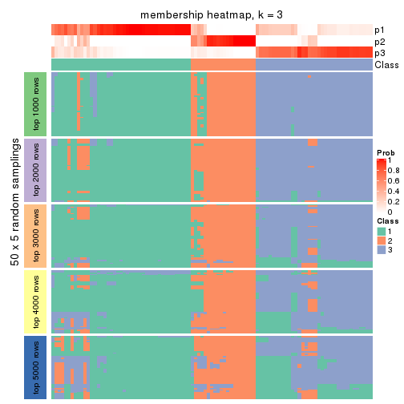
membership_heatmap(res, k = 4)
membership_heatmap(res, k = 5)
membership_heatmap(res, k = 6)
As soon as we have had the classes for columns, we can look for signatures which are significantly different between classes which can be candidate marks for certain classes. Following are the heatmaps for signatures.
Signature heatmaps where rows are scaled:
get_signatures(res, k = 2)
get_signatures(res, k = 3)
get_signatures(res, k = 4)
get_signatures(res, k = 5)
get_signatures(res, k = 6)
Signature heatmaps where rows are not scaled:
get_signatures(res, k = 2, scale_rows = FALSE)
get_signatures(res, k = 3, scale_rows = FALSE)
get_signatures(res, k = 4, scale_rows = FALSE)
get_signatures(res, k = 5, scale_rows = FALSE)
get_signatures(res, k = 6, scale_rows = FALSE)
Compare the overlap of signatures from different k:
compare_signatures(res)
get_signature() returns a data frame invisibly. TO get the list of signatures, the function
call should be assigned to a variable explicitly. In following code, if plot argument is set
to FALSE, no heatmap is plotted while only the differential analysis is performed.
# code only for demonstration
tb = get_signature(res, k = ..., plot = FALSE)
An example of the output of tb is:
#> which_row fdr mean_1 mean_2 scaled_mean_1 scaled_mean_2 km
#> 1 38 0.042760348 8.373488 9.131774 -0.5533452 0.5164555 1
#> 2 40 0.018707592 7.106213 8.469186 -0.6173731 0.5762149 1
#> 3 55 0.019134737 10.221463 11.207825 -0.6159697 0.5749050 1
#> 4 59 0.006059896 5.921854 7.869574 -0.6899429 0.6439467 1
#> 5 60 0.018055526 8.928898 10.211722 -0.6204761 0.5791110 1
#> 6 98 0.009384629 15.714769 14.887706 0.6635654 -0.6193277 2
...
The columns in tb are:
which_row: row indices corresponding to the input matrix.fdr: FDR for the differential test. mean_x: The mean value in group x.scaled_mean_x: The mean value in group x after rows are scaled.km: Row groups if k-means clustering is applied to rows.UMAP plot which shows how samples are separated.
dimension_reduction(res, k = 2, method = "UMAP")
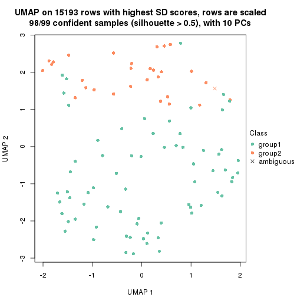
dimension_reduction(res, k = 3, method = "UMAP")
dimension_reduction(res, k = 4, method = "UMAP")
dimension_reduction(res, k = 5, method = "UMAP")
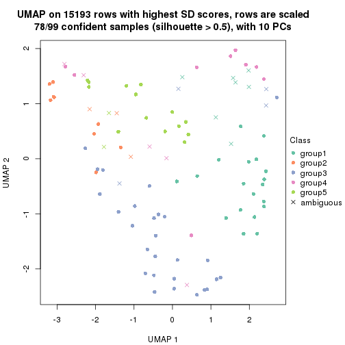
dimension_reduction(res, k = 6, method = "UMAP")
Following heatmap shows how subgroups are split when increasing k:
collect_classes(res)
If matrix rows can be associated to genes, consider to use GO_Enrichment(res,
...) to perform function enrichment for the signature genes.
The object with results only for a single top-value method and a single partition method can be extracted as:
res = res_list["SD", "skmeans"]
# you can also extract it by
# res = res_list["SD:skmeans"]
A summary of res and all the functions that can be applied to it:
res
#> A 'ConsensusPartition' object with k = 2, 3, 4, 5, 6.
#> On a matrix with 15193 rows and 99 columns.
#> Top rows (1000, 2000, 3000, 4000, 5000) are extracted by 'SD' method.
#> Subgroups are detected by 'skmeans' method.
#> Performed in total 1250 partitions by row resampling.
#> Best k for subgroups seems to be 3.
#>
#> Following methods can be applied to this 'ConsensusPartition' object:
#> [1] "cola_report" "collect_classes" "collect_plots"
#> [4] "collect_stats" "colnames" "compare_signatures"
#> [7] "consensus_heatmap" "dimension_reduction" "functional_enrichment"
#> [10] "get_anno_col" "get_anno" "get_classes"
#> [13] "get_consensus" "get_matrix" "get_membership"
#> [16] "get_param" "get_signatures" "get_stats"
#> [19] "is_best_k" "is_stable_k" "membership_heatmap"
#> [22] "ncol" "nrow" "plot_ecdf"
#> [25] "rownames" "select_partition_number" "show"
#> [28] "suggest_best_k" "test_to_known_factors"
collect_plots() function collects all the plots made from res for all k (number of partitions)
into one single page to provide an easy and fast comparison between different k.
collect_plots(res)
The plots are:
k and the heatmap of
predicted classes for each k.k.k.k.All the plots in panels can be made by individual functions and they are plotted later in this section.
select_partition_number() produces several plots showing different
statistics for choosing “optimized” k. There are following statistics:
k;k, the area increased is defined as \(A_k - A_{k-1}\).The detailed explanations of these statistics can be found in the cola vignette.
Generally speaking, lower PAC score, higher mean silhouette score or higher
concordance corresponds to better partition. Rand index and Jaccard index
measure how similar the current partition is compared to partition with k-1.
If they are too similar, we won't accept k is better than k-1.
select_partition_number(res)
The numeric values for all these statistics can be obtained by get_stats().
get_stats(res)
#> k 1-PAC mean_silhouette concordance area_increased Rand Jaccard
#> 2 2 0.458 0.704 0.857 0.4962 0.510 0.510
#> 3 3 0.865 0.878 0.950 0.3514 0.713 0.490
#> 4 4 0.719 0.731 0.870 0.1148 0.873 0.642
#> 5 5 0.746 0.767 0.862 0.0666 0.917 0.690
#> 6 6 0.742 0.617 0.788 0.0445 0.944 0.733
suggest_best_k() suggests the best \(k\) based on these statistics. The rules are as follows:
NA.suggest_best_k(res)
#> [1] 3
Following shows the table of the partitions (You need to click the show/hide
code output link to see it). The membership matrix (columns with name p*)
is inferred by
clue::cl_consensus()
function with the SE method. Basically the value in the membership matrix
represents the probability to belong to a certain group. The finall class
label for an item is determined with the group with highest probability it
belongs to.
In get_classes() function, the entropy is calculated from the membership
matrix and the silhouette score is calculated from the consensus matrix.
cbind(get_classes(res, k = 2), get_membership(res, k = 2))
#> class entropy silhouette p1 p2
#> SRR797072 1 0.0000 0.6549 1.000 0.000
#> SRR797073 1 0.9044 0.8020 0.680 0.320
#> SRR797074 1 0.0000 0.6549 1.000 0.000
#> SRR797075 2 0.9977 0.6512 0.472 0.528
#> SRR797076 1 0.9922 -0.4061 0.552 0.448
#> SRR797077 1 0.0000 0.6549 1.000 0.000
#> SRR797078 1 0.9044 0.8020 0.680 0.320
#> SRR797079 1 0.9044 0.8020 0.680 0.320
#> SRR797080 1 0.9044 0.8020 0.680 0.320
#> SRR797081 1 0.9044 0.8020 0.680 0.320
#> SRR797082 1 0.0000 0.6549 1.000 0.000
#> SRR797083 1 0.9044 0.8020 0.680 0.320
#> SRR797084 2 0.9044 0.8328 0.320 0.680
#> SRR797085 2 0.9044 0.8328 0.320 0.680
#> SRR797086 1 0.1184 0.6397 0.984 0.016
#> SRR797087 2 0.6048 0.3813 0.148 0.852
#> SRR797088 1 0.9427 0.7717 0.640 0.360
#> SRR797089 2 0.6048 0.3813 0.148 0.852
#> SRR797090 1 0.0000 0.6549 1.000 0.000
#> SRR797091 1 0.6343 0.7395 0.840 0.160
#> SRR797092 1 0.9044 0.8020 0.680 0.320
#> SRR797093 1 0.9044 0.8020 0.680 0.320
#> SRR797094 1 0.9044 0.8020 0.680 0.320
#> SRR797095 1 0.9850 0.7017 0.572 0.428
#> SRR797096 1 0.9044 0.8020 0.680 0.320
#> SRR797097 1 0.9795 0.7155 0.584 0.416
#> SRR797098 2 0.0672 0.5986 0.008 0.992
#> SRR797099 1 0.9044 0.8020 0.680 0.320
#> SRR797100 1 0.9044 0.8020 0.680 0.320
#> SRR797101 2 0.8661 -0.0566 0.288 0.712
#> SRR797102 2 0.9044 0.8328 0.320 0.680
#> SRR797103 2 0.9044 0.8328 0.320 0.680
#> SRR797104 1 0.9044 0.8020 0.680 0.320
#> SRR797105 1 0.9044 0.8020 0.680 0.320
#> SRR797106 2 0.8499 0.6258 0.276 0.724
#> SRR797107 1 0.5294 0.7205 0.880 0.120
#> SRR797108 1 0.0000 0.6549 1.000 0.000
#> SRR797109 1 0.9044 0.8020 0.680 0.320
#> SRR797110 1 0.0000 0.6549 1.000 0.000
#> SRR797111 1 0.2778 0.5930 0.952 0.048
#> SRR797112 1 0.9000 0.8012 0.684 0.316
#> SRR797113 1 0.9044 0.8020 0.680 0.320
#> SRR797114 1 0.8763 0.7954 0.704 0.296
#> SRR797115 1 0.9044 0.8020 0.680 0.320
#> SRR797116 1 0.9044 0.8020 0.680 0.320
#> SRR797117 2 0.5408 0.4329 0.124 0.876
#> SRR797118 1 0.0000 0.6549 1.000 0.000
#> SRR797119 1 0.9044 0.8020 0.680 0.320
#> SRR797120 1 0.8861 -0.0659 0.696 0.304
#> SRR797121 1 0.9044 0.8020 0.680 0.320
#> SRR797122 1 0.0000 0.6549 1.000 0.000
#> SRR797123 1 0.9044 0.8020 0.680 0.320
#> SRR797124 2 0.0000 0.6069 0.000 1.000
#> SRR797125 1 0.0672 0.6467 0.992 0.008
#> SRR797126 1 0.6048 0.4118 0.852 0.148
#> SRR797127 1 0.0672 0.6467 0.992 0.008
#> SRR797128 1 0.9129 0.7970 0.672 0.328
#> SRR797129 1 0.9044 0.8020 0.680 0.320
#> SRR797130 1 0.6048 0.4118 0.852 0.148
#> SRR797131 1 0.9044 0.8020 0.680 0.320
#> SRR797132 1 0.9087 0.7996 0.676 0.324
#> SRR797133 1 0.0672 0.6467 0.992 0.008
#> SRR797134 1 0.0672 0.6467 0.992 0.008
#> SRR797135 1 0.0000 0.6549 1.000 0.000
#> SRR797136 1 0.0000 0.6549 1.000 0.000
#> SRR797137 1 0.9044 0.8020 0.680 0.320
#> SRR797138 2 0.9044 0.8328 0.320 0.680
#> SRR797139 2 0.0000 0.6069 0.000 1.000
#> SRR797140 1 0.9044 0.8020 0.680 0.320
#> SRR797141 1 0.9044 0.8020 0.680 0.320
#> SRR797142 1 0.9044 0.8020 0.680 0.320
#> SRR797143 2 0.9044 0.8328 0.320 0.680
#> SRR797144 2 0.9044 0.8328 0.320 0.680
#> SRR797145 2 0.0000 0.6069 0.000 1.000
#> SRR797146 2 0.9044 0.8328 0.320 0.680
#> SRR797147 1 0.6048 0.4118 0.852 0.148
#> SRR797148 2 0.5946 0.3922 0.144 0.856
#> SRR797149 2 0.9044 0.8328 0.320 0.680
#> SRR797150 2 0.9044 0.8328 0.320 0.680
#> SRR797151 2 0.9044 0.8328 0.320 0.680
#> SRR797152 2 0.9044 0.8328 0.320 0.680
#> SRR797153 2 0.9044 0.8328 0.320 0.680
#> SRR797154 2 0.9044 0.8328 0.320 0.680
#> SRR797155 2 0.6623 0.7406 0.172 0.828
#> SRR797156 2 0.9044 0.8328 0.320 0.680
#> SRR797157 2 0.9044 0.8328 0.320 0.680
#> SRR797158 2 0.9044 0.8328 0.320 0.680
#> SRR797159 2 0.9044 0.8328 0.320 0.680
#> SRR797160 2 0.0672 0.5986 0.008 0.992
#> SRR797161 2 0.9044 0.8328 0.320 0.680
#> SRR797162 2 0.9044 0.8328 0.320 0.680
#> SRR797163 2 0.9044 0.8328 0.320 0.680
#> SRR797164 2 0.9044 0.8328 0.320 0.680
#> SRR797165 2 0.0000 0.6069 0.000 1.000
#> SRR797166 2 0.0000 0.6069 0.000 1.000
#> SRR797167 2 0.9044 0.8328 0.320 0.680
#> SRR797168 2 0.9044 0.8328 0.320 0.680
#> SRR797169 2 0.9044 0.8328 0.320 0.680
#> SRR797170 2 0.9044 0.8328 0.320 0.680
cbind(get_classes(res, k = 3), get_membership(res, k = 3))
#> class entropy silhouette p1 p2 p3
#> SRR797072 1 0.0000 0.9417 1.000 0.000 0.000
#> SRR797073 3 0.0237 0.9568 0.004 0.000 0.996
#> SRR797074 1 0.0000 0.9417 1.000 0.000 0.000
#> SRR797075 1 0.0000 0.9417 1.000 0.000 0.000
#> SRR797076 1 0.4555 0.7198 0.800 0.200 0.000
#> SRR797077 1 0.0000 0.9417 1.000 0.000 0.000
#> SRR797078 3 0.0237 0.9568 0.004 0.000 0.996
#> SRR797079 3 0.0237 0.9568 0.004 0.000 0.996
#> SRR797080 3 0.0000 0.9578 0.000 0.000 1.000
#> SRR797081 3 0.0424 0.9545 0.008 0.000 0.992
#> SRR797082 1 0.0000 0.9417 1.000 0.000 0.000
#> SRR797083 1 0.0000 0.9417 1.000 0.000 0.000
#> SRR797084 2 0.0000 0.9342 0.000 1.000 0.000
#> SRR797085 2 0.0000 0.9342 0.000 1.000 0.000
#> SRR797086 1 0.0000 0.9417 1.000 0.000 0.000
#> SRR797087 3 0.0000 0.9578 0.000 0.000 1.000
#> SRR797088 3 0.0000 0.9578 0.000 0.000 1.000
#> SRR797089 3 0.0000 0.9578 0.000 0.000 1.000
#> SRR797090 1 0.0000 0.9417 1.000 0.000 0.000
#> SRR797091 1 0.0000 0.9417 1.000 0.000 0.000
#> SRR797092 3 0.0000 0.9578 0.000 0.000 1.000
#> SRR797093 3 0.0424 0.9545 0.008 0.000 0.992
#> SRR797094 3 0.0000 0.9578 0.000 0.000 1.000
#> SRR797095 3 0.0000 0.9578 0.000 0.000 1.000
#> SRR797096 1 0.1411 0.9125 0.964 0.000 0.036
#> SRR797097 3 0.0000 0.9578 0.000 0.000 1.000
#> SRR797098 3 0.6062 0.3300 0.000 0.384 0.616
#> SRR797099 3 0.2280 0.9100 0.052 0.008 0.940
#> SRR797100 3 0.0237 0.9568 0.004 0.000 0.996
#> SRR797101 3 0.0000 0.9578 0.000 0.000 1.000
#> SRR797102 2 0.0000 0.9342 0.000 1.000 0.000
#> SRR797103 2 0.0000 0.9342 0.000 1.000 0.000
#> SRR797104 3 0.0237 0.9568 0.004 0.000 0.996
#> SRR797105 3 0.0000 0.9578 0.000 0.000 1.000
#> SRR797106 1 0.6140 0.3030 0.596 0.404 0.000
#> SRR797107 1 0.0000 0.9417 1.000 0.000 0.000
#> SRR797108 1 0.0000 0.9417 1.000 0.000 0.000
#> SRR797109 3 0.0424 0.9545 0.008 0.000 0.992
#> SRR797110 1 0.0000 0.9417 1.000 0.000 0.000
#> SRR797111 1 0.0000 0.9417 1.000 0.000 0.000
#> SRR797112 1 0.0000 0.9417 1.000 0.000 0.000
#> SRR797113 1 0.4346 0.7388 0.816 0.000 0.184
#> SRR797114 1 0.0000 0.9417 1.000 0.000 0.000
#> SRR797115 1 0.0000 0.9417 1.000 0.000 0.000
#> SRR797116 3 0.2261 0.8989 0.068 0.000 0.932
#> SRR797117 1 0.7660 0.2323 0.548 0.404 0.048
#> SRR797118 1 0.0000 0.9417 1.000 0.000 0.000
#> SRR797119 3 0.0424 0.9545 0.008 0.000 0.992
#> SRR797120 1 0.6307 0.0333 0.512 0.488 0.000
#> SRR797121 1 0.0000 0.9417 1.000 0.000 0.000
#> SRR797122 1 0.0000 0.9417 1.000 0.000 0.000
#> SRR797123 3 0.0000 0.9578 0.000 0.000 1.000
#> SRR797124 2 0.5988 0.4489 0.000 0.632 0.368
#> SRR797125 1 0.0000 0.9417 1.000 0.000 0.000
#> SRR797126 1 0.0424 0.9361 0.992 0.008 0.000
#> SRR797127 1 0.0000 0.9417 1.000 0.000 0.000
#> SRR797128 3 0.0000 0.9578 0.000 0.000 1.000
#> SRR797129 3 0.0000 0.9578 0.000 0.000 1.000
#> SRR797130 1 0.0000 0.9417 1.000 0.000 0.000
#> SRR797131 3 0.0000 0.9578 0.000 0.000 1.000
#> SRR797132 3 0.0000 0.9578 0.000 0.000 1.000
#> SRR797133 1 0.0000 0.9417 1.000 0.000 0.000
#> SRR797134 1 0.0000 0.9417 1.000 0.000 0.000
#> SRR797135 1 0.0000 0.9417 1.000 0.000 0.000
#> SRR797136 1 0.0000 0.9417 1.000 0.000 0.000
#> SRR797137 1 0.2448 0.8755 0.924 0.000 0.076
#> SRR797138 2 0.0000 0.9342 0.000 1.000 0.000
#> SRR797139 3 0.6126 0.2830 0.000 0.400 0.600
#> SRR797140 3 0.0000 0.9578 0.000 0.000 1.000
#> SRR797141 3 0.0000 0.9578 0.000 0.000 1.000
#> SRR797142 3 0.0237 0.9568 0.004 0.000 0.996
#> SRR797143 2 0.0000 0.9342 0.000 1.000 0.000
#> SRR797144 2 0.0000 0.9342 0.000 1.000 0.000
#> SRR797145 2 0.4504 0.7523 0.000 0.804 0.196
#> SRR797146 2 0.0000 0.9342 0.000 1.000 0.000
#> SRR797147 1 0.0000 0.9417 1.000 0.000 0.000
#> SRR797148 3 0.4702 0.7006 0.000 0.212 0.788
#> SRR797149 2 0.0000 0.9342 0.000 1.000 0.000
#> SRR797150 2 0.0000 0.9342 0.000 1.000 0.000
#> SRR797151 2 0.0000 0.9342 0.000 1.000 0.000
#> SRR797152 2 0.1031 0.9162 0.024 0.976 0.000
#> SRR797153 2 0.0000 0.9342 0.000 1.000 0.000
#> SRR797154 2 0.2356 0.8717 0.072 0.928 0.000
#> SRR797155 2 0.0000 0.9342 0.000 1.000 0.000
#> SRR797156 2 0.0000 0.9342 0.000 1.000 0.000
#> SRR797157 2 0.0000 0.9342 0.000 1.000 0.000
#> SRR797158 2 0.0000 0.9342 0.000 1.000 0.000
#> SRR797159 2 0.0000 0.9342 0.000 1.000 0.000
#> SRR797160 2 0.5098 0.6835 0.000 0.752 0.248
#> SRR797161 2 0.4931 0.6845 0.232 0.768 0.000
#> SRR797162 2 0.0000 0.9342 0.000 1.000 0.000
#> SRR797163 2 0.0000 0.9342 0.000 1.000 0.000
#> SRR797164 2 0.5291 0.6233 0.268 0.732 0.000
#> SRR797165 2 0.3879 0.8052 0.000 0.848 0.152
#> SRR797166 2 0.5948 0.4678 0.000 0.640 0.360
#> SRR797167 2 0.0000 0.9342 0.000 1.000 0.000
#> SRR797168 2 0.0000 0.9342 0.000 1.000 0.000
#> SRR797169 2 0.0000 0.9342 0.000 1.000 0.000
#> SRR797170 2 0.0000 0.9342 0.000 1.000 0.000
cbind(get_classes(res, k = 4), get_membership(res, k = 4))
#> class entropy silhouette p1 p2 p3 p4
#> SRR797072 1 0.0000 0.8712 1.000 0.000 0.000 0.000
#> SRR797073 3 0.1118 0.8984 0.000 0.000 0.964 0.036
#> SRR797074 1 0.0000 0.8712 1.000 0.000 0.000 0.000
#> SRR797075 1 0.0336 0.8674 0.992 0.000 0.000 0.008
#> SRR797076 4 0.5292 0.6912 0.064 0.208 0.000 0.728
#> SRR797077 1 0.0000 0.8712 1.000 0.000 0.000 0.000
#> SRR797078 3 0.1022 0.9001 0.000 0.000 0.968 0.032
#> SRR797079 3 0.4977 0.1008 0.000 0.000 0.540 0.460
#> SRR797080 3 0.0000 0.9073 0.000 0.000 1.000 0.000
#> SRR797081 3 0.1305 0.8968 0.004 0.000 0.960 0.036
#> SRR797082 1 0.0000 0.8712 1.000 0.000 0.000 0.000
#> SRR797083 1 0.2589 0.7739 0.884 0.000 0.000 0.116
#> SRR797084 2 0.0469 0.8441 0.000 0.988 0.000 0.012
#> SRR797085 2 0.0469 0.8441 0.000 0.988 0.000 0.012
#> SRR797086 1 0.1792 0.8300 0.932 0.000 0.000 0.068
#> SRR797087 3 0.0336 0.9052 0.000 0.000 0.992 0.008
#> SRR797088 3 0.2589 0.8272 0.000 0.000 0.884 0.116
#> SRR797089 3 0.0336 0.9052 0.000 0.000 0.992 0.008
#> SRR797090 1 0.0000 0.8712 1.000 0.000 0.000 0.000
#> SRR797091 1 0.2973 0.7478 0.856 0.000 0.000 0.144
#> SRR797092 3 0.1022 0.9037 0.000 0.000 0.968 0.032
#> SRR797093 3 0.4262 0.6749 0.008 0.000 0.756 0.236
#> SRR797094 3 0.0000 0.9073 0.000 0.000 1.000 0.000
#> SRR797095 3 0.0336 0.9052 0.000 0.000 0.992 0.008
#> SRR797096 4 0.2654 0.7203 0.108 0.000 0.004 0.888
#> SRR797097 3 0.0336 0.9052 0.000 0.000 0.992 0.008
#> SRR797098 3 0.5018 0.4591 0.000 0.332 0.656 0.012
#> SRR797099 4 0.3498 0.6615 0.000 0.008 0.160 0.832
#> SRR797100 3 0.1118 0.8984 0.000 0.000 0.964 0.036
#> SRR797101 3 0.0336 0.9052 0.000 0.000 0.992 0.008
#> SRR797102 2 0.2814 0.7867 0.000 0.868 0.000 0.132
#> SRR797103 2 0.1677 0.8209 0.040 0.948 0.000 0.012
#> SRR797104 3 0.1118 0.8984 0.000 0.000 0.964 0.036
#> SRR797105 3 0.0000 0.9073 0.000 0.000 1.000 0.000
#> SRR797106 4 0.4122 0.6657 0.004 0.236 0.000 0.760
#> SRR797107 1 0.4746 0.3875 0.632 0.000 0.000 0.368
#> SRR797108 1 0.1389 0.8403 0.952 0.000 0.000 0.048
#> SRR797109 3 0.3768 0.7489 0.008 0.000 0.808 0.184
#> SRR797110 1 0.0000 0.8712 1.000 0.000 0.000 0.000
#> SRR797111 1 0.3726 0.6912 0.788 0.000 0.000 0.212
#> SRR797112 4 0.4761 0.4039 0.372 0.000 0.000 0.628
#> SRR797113 4 0.3257 0.7173 0.152 0.000 0.004 0.844
#> SRR797114 4 0.3123 0.7144 0.156 0.000 0.000 0.844
#> SRR797115 4 0.3208 0.7185 0.148 0.000 0.004 0.848
#> SRR797116 4 0.3547 0.7020 0.016 0.000 0.144 0.840
#> SRR797117 4 0.4155 0.6633 0.004 0.240 0.000 0.756
#> SRR797118 1 0.4994 0.2100 0.520 0.000 0.000 0.480
#> SRR797119 3 0.2647 0.8316 0.000 0.000 0.880 0.120
#> SRR797120 2 0.7847 0.0970 0.328 0.396 0.000 0.276
#> SRR797121 4 0.4855 0.4040 0.400 0.000 0.000 0.600
#> SRR797122 1 0.0000 0.8712 1.000 0.000 0.000 0.000
#> SRR797123 4 0.4222 0.5428 0.000 0.000 0.272 0.728
#> SRR797124 4 0.5973 0.4855 0.000 0.332 0.056 0.612
#> SRR797125 1 0.1118 0.8520 0.964 0.000 0.000 0.036
#> SRR797126 4 0.5982 -0.0362 0.436 0.040 0.000 0.524
#> SRR797127 1 0.0188 0.8698 0.996 0.000 0.000 0.004
#> SRR797128 3 0.0000 0.9073 0.000 0.000 1.000 0.000
#> SRR797129 3 0.0000 0.9073 0.000 0.000 1.000 0.000
#> SRR797130 1 0.0188 0.8698 0.996 0.000 0.000 0.004
#> SRR797131 3 0.0592 0.9050 0.000 0.000 0.984 0.016
#> SRR797132 3 0.0000 0.9073 0.000 0.000 1.000 0.000
#> SRR797133 1 0.4898 0.3447 0.584 0.000 0.000 0.416
#> SRR797134 1 0.0000 0.8712 1.000 0.000 0.000 0.000
#> SRR797135 1 0.0000 0.8712 1.000 0.000 0.000 0.000
#> SRR797136 1 0.0000 0.8712 1.000 0.000 0.000 0.000
#> SRR797137 4 0.3257 0.7173 0.152 0.000 0.004 0.844
#> SRR797138 2 0.0592 0.8410 0.000 0.984 0.000 0.016
#> SRR797139 3 0.5093 0.4213 0.000 0.348 0.640 0.012
#> SRR797140 3 0.0000 0.9073 0.000 0.000 1.000 0.000
#> SRR797141 3 0.0000 0.9073 0.000 0.000 1.000 0.000
#> SRR797142 3 0.1118 0.8984 0.000 0.000 0.964 0.036
#> SRR797143 2 0.0469 0.8441 0.000 0.988 0.000 0.012
#> SRR797144 2 0.0469 0.8441 0.000 0.988 0.000 0.012
#> SRR797145 2 0.5085 0.5120 0.000 0.676 0.304 0.020
#> SRR797146 2 0.0469 0.8441 0.000 0.988 0.000 0.012
#> SRR797147 1 0.0188 0.8698 0.996 0.000 0.000 0.004
#> SRR797148 4 0.6702 0.5877 0.000 0.216 0.168 0.616
#> SRR797149 2 0.0469 0.8441 0.000 0.988 0.000 0.012
#> SRR797150 2 0.0469 0.8441 0.000 0.988 0.000 0.012
#> SRR797151 2 0.0592 0.8432 0.000 0.984 0.000 0.016
#> SRR797152 2 0.3831 0.7254 0.004 0.792 0.000 0.204
#> SRR797153 2 0.3907 0.7016 0.000 0.768 0.000 0.232
#> SRR797154 2 0.4533 0.6882 0.012 0.752 0.004 0.232
#> SRR797155 2 0.0336 0.8416 0.000 0.992 0.000 0.008
#> SRR797156 2 0.4277 0.6450 0.000 0.720 0.000 0.280
#> SRR797157 2 0.0188 0.8434 0.000 0.996 0.000 0.004
#> SRR797158 2 0.1022 0.8422 0.000 0.968 0.000 0.032
#> SRR797159 2 0.0469 0.8441 0.000 0.988 0.000 0.012
#> SRR797160 4 0.3521 0.7279 0.000 0.084 0.052 0.864
#> SRR797161 2 0.6969 0.0438 0.440 0.448 0.000 0.112
#> SRR797162 2 0.2469 0.8034 0.000 0.892 0.000 0.108
#> SRR797163 2 0.1022 0.8372 0.000 0.968 0.000 0.032
#> SRR797164 1 0.7186 -0.0634 0.444 0.420 0.000 0.136
#> SRR797165 2 0.5018 0.4641 0.000 0.656 0.332 0.012
#> SRR797166 2 0.5402 0.0752 0.000 0.516 0.472 0.012
#> SRR797167 2 0.0469 0.8441 0.000 0.988 0.000 0.012
#> SRR797168 2 0.2868 0.7887 0.000 0.864 0.000 0.136
#> SRR797169 2 0.1118 0.8366 0.000 0.964 0.000 0.036
#> SRR797170 2 0.0469 0.8441 0.000 0.988 0.000 0.012
cbind(get_classes(res, k = 5), get_membership(res, k = 5))
#> class entropy silhouette p1 p2 p3 p4 p5
#> SRR797072 1 0.0000 0.9289 1.000 0.000 0.000 0.000 0.000
#> SRR797073 3 0.2921 0.8212 0.000 0.000 0.856 0.124 0.020
#> SRR797074 1 0.0000 0.9289 1.000 0.000 0.000 0.000 0.000
#> SRR797075 1 0.0451 0.9245 0.988 0.000 0.000 0.008 0.004
#> SRR797076 4 0.5210 0.6649 0.088 0.200 0.000 0.700 0.012
#> SRR797077 1 0.1121 0.9068 0.956 0.000 0.000 0.000 0.044
#> SRR797078 3 0.2964 0.8234 0.000 0.000 0.856 0.120 0.024
#> SRR797079 4 0.4781 0.1155 0.000 0.000 0.428 0.552 0.020
#> SRR797080 3 0.1907 0.8532 0.000 0.000 0.928 0.044 0.028
#> SRR797081 3 0.2921 0.8212 0.000 0.000 0.856 0.124 0.020
#> SRR797082 1 0.0162 0.9283 0.996 0.000 0.000 0.000 0.004
#> SRR797083 1 0.1831 0.8747 0.920 0.000 0.000 0.076 0.004
#> SRR797084 2 0.0290 0.8816 0.000 0.992 0.000 0.008 0.000
#> SRR797085 2 0.0162 0.8834 0.000 0.996 0.000 0.000 0.004
#> SRR797086 1 0.1522 0.9035 0.944 0.000 0.000 0.044 0.012
#> SRR797087 3 0.1992 0.8394 0.000 0.000 0.924 0.032 0.044
#> SRR797088 3 0.3389 0.7974 0.000 0.000 0.836 0.116 0.048
#> SRR797089 3 0.2209 0.8335 0.000 0.000 0.912 0.032 0.056
#> SRR797090 1 0.0162 0.9277 0.996 0.000 0.000 0.000 0.004
#> SRR797091 1 0.1830 0.8841 0.924 0.000 0.000 0.068 0.008
#> SRR797092 3 0.3130 0.8417 0.000 0.000 0.856 0.096 0.048
#> SRR797093 3 0.4691 0.6507 0.008 0.000 0.684 0.280 0.028
#> SRR797094 3 0.0324 0.8567 0.000 0.000 0.992 0.004 0.004
#> SRR797095 3 0.1915 0.8367 0.000 0.000 0.928 0.032 0.040
#> SRR797096 4 0.2196 0.7593 0.024 0.000 0.004 0.916 0.056
#> SRR797097 3 0.1992 0.8394 0.000 0.000 0.924 0.032 0.044
#> SRR797098 3 0.5968 0.4559 0.000 0.260 0.628 0.040 0.072
#> SRR797099 5 0.5803 0.1951 0.000 0.000 0.100 0.368 0.532
#> SRR797100 3 0.2921 0.8212 0.000 0.000 0.856 0.124 0.020
#> SRR797101 3 0.1992 0.8394 0.000 0.000 0.924 0.032 0.044
#> SRR797102 5 0.2516 0.8080 0.000 0.140 0.000 0.000 0.860
#> SRR797103 2 0.4411 0.7518 0.104 0.796 0.000 0.032 0.068
#> SRR797104 3 0.2921 0.8212 0.000 0.000 0.856 0.124 0.020
#> SRR797105 3 0.0955 0.8550 0.000 0.000 0.968 0.004 0.028
#> SRR797106 4 0.3751 0.6826 0.004 0.212 0.000 0.772 0.012
#> SRR797107 1 0.5571 0.2900 0.568 0.000 0.000 0.348 0.084
#> SRR797108 1 0.1661 0.9011 0.940 0.000 0.000 0.036 0.024
#> SRR797109 3 0.4645 0.6640 0.008 0.000 0.692 0.272 0.028
#> SRR797110 1 0.0404 0.9250 0.988 0.000 0.000 0.000 0.012
#> SRR797111 5 0.3810 0.7139 0.168 0.000 0.000 0.040 0.792
#> SRR797112 4 0.5113 0.5927 0.232 0.000 0.004 0.684 0.080
#> SRR797113 4 0.2308 0.7621 0.036 0.000 0.004 0.912 0.048
#> SRR797114 4 0.2230 0.7616 0.044 0.000 0.000 0.912 0.044
#> SRR797115 4 0.1996 0.7635 0.032 0.000 0.004 0.928 0.036
#> SRR797116 4 0.2036 0.7591 0.008 0.000 0.028 0.928 0.036
#> SRR797117 4 0.3455 0.6885 0.000 0.208 0.000 0.784 0.008
#> SRR797118 5 0.3911 0.7142 0.060 0.000 0.000 0.144 0.796
#> SRR797119 3 0.4001 0.7508 0.004 0.000 0.764 0.208 0.024
#> SRR797120 5 0.3110 0.8059 0.020 0.060 0.000 0.044 0.876
#> SRR797121 4 0.4746 0.3854 0.376 0.000 0.000 0.600 0.024
#> SRR797122 1 0.0162 0.9283 0.996 0.000 0.000 0.000 0.004
#> SRR797123 4 0.2488 0.7251 0.000 0.000 0.124 0.872 0.004
#> SRR797124 4 0.6011 0.6024 0.000 0.172 0.072 0.672 0.084
#> SRR797125 1 0.4632 0.0884 0.540 0.000 0.000 0.012 0.448
#> SRR797126 5 0.3898 0.7466 0.076 0.004 0.000 0.108 0.812
#> SRR797127 1 0.0162 0.9283 0.996 0.000 0.000 0.000 0.004
#> SRR797128 3 0.0404 0.8559 0.000 0.000 0.988 0.000 0.012
#> SRR797129 3 0.1211 0.8560 0.000 0.000 0.960 0.016 0.024
#> SRR797130 1 0.0324 0.9269 0.992 0.000 0.000 0.004 0.004
#> SRR797131 3 0.2871 0.8394 0.000 0.000 0.872 0.088 0.040
#> SRR797132 3 0.1082 0.8527 0.000 0.000 0.964 0.008 0.028
#> SRR797133 5 0.3946 0.7269 0.080 0.000 0.000 0.120 0.800
#> SRR797134 1 0.0000 0.9289 1.000 0.000 0.000 0.000 0.000
#> SRR797135 1 0.0000 0.9289 1.000 0.000 0.000 0.000 0.000
#> SRR797136 1 0.0000 0.9289 1.000 0.000 0.000 0.000 0.000
#> SRR797137 4 0.2308 0.7621 0.036 0.000 0.004 0.912 0.048
#> SRR797138 2 0.1792 0.8423 0.000 0.916 0.000 0.000 0.084
#> SRR797139 3 0.6419 0.3023 0.000 0.316 0.556 0.040 0.088
#> SRR797140 3 0.1195 0.8535 0.000 0.000 0.960 0.012 0.028
#> SRR797141 3 0.0955 0.8550 0.000 0.000 0.968 0.004 0.028
#> SRR797142 3 0.2921 0.8212 0.000 0.000 0.856 0.124 0.020
#> SRR797143 2 0.0000 0.8838 0.000 1.000 0.000 0.000 0.000
#> SRR797144 2 0.0404 0.8801 0.000 0.988 0.000 0.012 0.000
#> SRR797145 2 0.5493 0.6361 0.000 0.700 0.188 0.044 0.068
#> SRR797146 2 0.0000 0.8838 0.000 1.000 0.000 0.000 0.000
#> SRR797147 1 0.0162 0.9283 0.996 0.000 0.000 0.000 0.004
#> SRR797148 4 0.5844 0.6617 0.000 0.152 0.128 0.680 0.040
#> SRR797149 2 0.0162 0.8828 0.000 0.996 0.000 0.004 0.000
#> SRR797150 2 0.0579 0.8797 0.000 0.984 0.000 0.008 0.008
#> SRR797151 2 0.0912 0.8747 0.000 0.972 0.000 0.016 0.012
#> SRR797152 5 0.4731 0.2800 0.000 0.456 0.000 0.016 0.528
#> SRR797153 5 0.2707 0.8128 0.000 0.100 0.000 0.024 0.876
#> SRR797154 5 0.3374 0.8121 0.000 0.108 0.004 0.044 0.844
#> SRR797155 2 0.2980 0.8296 0.000 0.884 0.024 0.036 0.056
#> SRR797156 5 0.4010 0.7605 0.000 0.208 0.000 0.032 0.760
#> SRR797157 2 0.0609 0.8777 0.000 0.980 0.000 0.000 0.020
#> SRR797158 2 0.1195 0.8677 0.000 0.960 0.000 0.012 0.028
#> SRR797159 2 0.0000 0.8838 0.000 1.000 0.000 0.000 0.000
#> SRR797160 4 0.4216 0.6960 0.000 0.028 0.100 0.808 0.064
#> SRR797161 5 0.3923 0.7958 0.040 0.132 0.000 0.016 0.812
#> SRR797162 5 0.3582 0.7367 0.000 0.224 0.000 0.008 0.768
#> SRR797163 2 0.2411 0.8198 0.000 0.884 0.000 0.008 0.108
#> SRR797164 5 0.3386 0.8087 0.036 0.088 0.000 0.020 0.856
#> SRR797165 2 0.6390 0.4457 0.000 0.564 0.308 0.040 0.088
#> SRR797166 2 0.6594 0.2296 0.000 0.484 0.388 0.040 0.088
#> SRR797167 2 0.0000 0.8838 0.000 1.000 0.000 0.000 0.000
#> SRR797168 5 0.2771 0.8085 0.000 0.128 0.000 0.012 0.860
#> SRR797169 2 0.2746 0.8172 0.008 0.872 0.000 0.008 0.112
#> SRR797170 2 0.0000 0.8838 0.000 1.000 0.000 0.000 0.000
cbind(get_classes(res, k = 6), get_membership(res, k = 6))
#> class entropy silhouette p1 p2 p3 p4 p5 p6
#> SRR797072 1 0.0000 0.9038 1.000 0.000 0.000 0.000 0.000 0.000
#> SRR797073 3 0.1970 0.5510 0.000 0.000 0.912 0.028 0.000 0.060
#> SRR797074 1 0.0000 0.9038 1.000 0.000 0.000 0.000 0.000 0.000
#> SRR797075 1 0.0806 0.8967 0.972 0.000 0.000 0.008 0.000 0.020
#> SRR797076 4 0.4930 0.6751 0.056 0.144 0.000 0.732 0.012 0.056
#> SRR797077 1 0.1657 0.8709 0.928 0.000 0.000 0.000 0.056 0.016
#> SRR797078 3 0.0972 0.5573 0.000 0.000 0.964 0.008 0.000 0.028
#> SRR797079 3 0.4712 0.1926 0.000 0.000 0.596 0.344 0.000 0.060
#> SRR797080 3 0.4091 0.1288 0.000 0.000 0.520 0.008 0.000 0.472
#> SRR797081 3 0.0508 0.5603 0.000 0.000 0.984 0.012 0.000 0.004
#> SRR797082 1 0.0000 0.9038 1.000 0.000 0.000 0.000 0.000 0.000
#> SRR797083 1 0.3855 0.7710 0.812 0.000 0.032 0.104 0.008 0.044
#> SRR797084 2 0.1138 0.9097 0.000 0.960 0.000 0.024 0.004 0.012
#> SRR797085 2 0.0717 0.9216 0.000 0.976 0.000 0.000 0.016 0.008
#> SRR797086 1 0.3387 0.8226 0.836 0.000 0.000 0.072 0.020 0.072
#> SRR797087 3 0.3862 -0.0426 0.000 0.000 0.524 0.000 0.000 0.476
#> SRR797088 6 0.4975 0.1444 0.000 0.000 0.312 0.092 0.000 0.596
#> SRR797089 6 0.3446 0.3249 0.000 0.000 0.308 0.000 0.000 0.692
#> SRR797090 1 0.0146 0.9030 0.996 0.000 0.000 0.004 0.000 0.000
#> SRR797091 1 0.3176 0.8147 0.832 0.000 0.000 0.084 0.000 0.084
#> SRR797092 3 0.3819 0.2394 0.000 0.000 0.672 0.012 0.000 0.316
#> SRR797093 3 0.4768 0.4076 0.000 0.000 0.676 0.228 0.008 0.088
#> SRR797094 3 0.2491 0.4722 0.000 0.000 0.836 0.000 0.000 0.164
#> SRR797095 6 0.3765 0.1917 0.000 0.000 0.404 0.000 0.000 0.596
#> SRR797096 4 0.3357 0.7681 0.008 0.000 0.108 0.836 0.036 0.012
#> SRR797097 3 0.3838 0.0161 0.000 0.000 0.552 0.000 0.000 0.448
#> SRR797098 6 0.5288 0.4309 0.000 0.104 0.268 0.008 0.004 0.616
#> SRR797099 5 0.7223 -0.0227 0.000 0.000 0.112 0.344 0.356 0.188
#> SRR797100 3 0.1367 0.5502 0.000 0.000 0.944 0.044 0.000 0.012
#> SRR797101 3 0.3838 0.0159 0.000 0.000 0.552 0.000 0.000 0.448
#> SRR797102 5 0.0937 0.7995 0.000 0.040 0.000 0.000 0.960 0.000
#> SRR797103 2 0.5133 0.6791 0.128 0.708 0.000 0.012 0.028 0.124
#> SRR797104 3 0.0725 0.5581 0.000 0.000 0.976 0.012 0.000 0.012
#> SRR797105 3 0.3996 0.1145 0.000 0.000 0.512 0.004 0.000 0.484
#> SRR797106 4 0.3817 0.6865 0.000 0.152 0.000 0.784 0.012 0.052
#> SRR797107 1 0.7006 0.0874 0.468 0.000 0.104 0.328 0.056 0.044
#> SRR797108 1 0.3126 0.8236 0.856 0.000 0.000 0.072 0.028 0.044
#> SRR797109 3 0.5371 0.3906 0.000 0.000 0.616 0.212 0.008 0.164
#> SRR797110 1 0.0806 0.8980 0.972 0.000 0.000 0.000 0.008 0.020
#> SRR797111 5 0.2145 0.7697 0.028 0.000 0.000 0.072 0.900 0.000
#> SRR797112 4 0.6472 0.6167 0.156 0.000 0.128 0.612 0.060 0.044
#> SRR797113 4 0.3666 0.7647 0.008 0.000 0.112 0.820 0.032 0.028
#> SRR797114 4 0.2858 0.7733 0.024 0.000 0.048 0.884 0.024 0.020
#> SRR797115 4 0.2492 0.7773 0.008 0.000 0.080 0.888 0.020 0.004
#> SRR797116 4 0.2418 0.7762 0.000 0.000 0.092 0.884 0.016 0.008
#> SRR797117 4 0.3682 0.6926 0.000 0.148 0.000 0.792 0.008 0.052
#> SRR797118 5 0.2512 0.7496 0.008 0.000 0.008 0.116 0.868 0.000
#> SRR797119 3 0.4309 0.4524 0.000 0.000 0.736 0.176 0.008 0.080
#> SRR797120 5 0.0692 0.7921 0.000 0.004 0.000 0.020 0.976 0.000
#> SRR797121 4 0.5417 0.4282 0.324 0.000 0.028 0.592 0.016 0.040
#> SRR797122 1 0.0000 0.9038 1.000 0.000 0.000 0.000 0.000 0.000
#> SRR797123 4 0.3983 0.6685 0.000 0.000 0.208 0.736 0.000 0.056
#> SRR797124 4 0.5911 0.5932 0.000 0.144 0.028 0.644 0.032 0.152
#> SRR797125 1 0.4601 0.2972 0.588 0.000 0.000 0.020 0.376 0.016
#> SRR797126 5 0.4171 0.7260 0.040 0.000 0.000 0.160 0.764 0.036
#> SRR797127 1 0.0458 0.9003 0.984 0.000 0.000 0.000 0.000 0.016
#> SRR797128 3 0.3351 0.3614 0.000 0.000 0.712 0.000 0.000 0.288
#> SRR797129 3 0.3547 0.3284 0.000 0.000 0.668 0.000 0.000 0.332
#> SRR797130 1 0.0692 0.8985 0.976 0.000 0.000 0.004 0.000 0.020
#> SRR797131 3 0.3830 0.2973 0.000 0.000 0.620 0.004 0.000 0.376
#> SRR797132 6 0.4097 -0.1618 0.000 0.000 0.488 0.008 0.000 0.504
#> SRR797133 5 0.3067 0.7456 0.016 0.000 0.024 0.104 0.852 0.004
#> SRR797134 1 0.0000 0.9038 1.000 0.000 0.000 0.000 0.000 0.000
#> SRR797135 1 0.0000 0.9038 1.000 0.000 0.000 0.000 0.000 0.000
#> SRR797136 1 0.0000 0.9038 1.000 0.000 0.000 0.000 0.000 0.000
#> SRR797137 4 0.3666 0.7647 0.008 0.000 0.112 0.820 0.032 0.028
#> SRR797138 2 0.2000 0.8969 0.000 0.916 0.000 0.004 0.048 0.032
#> SRR797139 6 0.4917 0.5090 0.000 0.148 0.148 0.008 0.004 0.692
#> SRR797140 6 0.4089 -0.1369 0.000 0.000 0.468 0.008 0.000 0.524
#> SRR797141 3 0.3996 0.1145 0.000 0.000 0.512 0.004 0.000 0.484
#> SRR797142 3 0.0405 0.5602 0.000 0.000 0.988 0.008 0.000 0.004
#> SRR797143 2 0.0000 0.9225 0.000 1.000 0.000 0.000 0.000 0.000
#> SRR797144 2 0.0951 0.9132 0.000 0.968 0.000 0.020 0.008 0.004
#> SRR797145 6 0.3998 0.4488 0.000 0.340 0.016 0.000 0.000 0.644
#> SRR797146 2 0.0146 0.9232 0.000 0.996 0.000 0.000 0.004 0.000
#> SRR797147 1 0.0692 0.8985 0.976 0.000 0.000 0.004 0.000 0.020
#> SRR797148 6 0.6152 -0.1227 0.000 0.124 0.020 0.404 0.008 0.444
#> SRR797149 2 0.0000 0.9225 0.000 1.000 0.000 0.000 0.000 0.000
#> SRR797150 2 0.1622 0.9068 0.000 0.940 0.000 0.016 0.016 0.028
#> SRR797151 2 0.2898 0.8609 0.000 0.868 0.000 0.056 0.016 0.060
#> SRR797152 5 0.4120 0.0706 0.000 0.468 0.000 0.004 0.524 0.004
#> SRR797153 5 0.0935 0.7989 0.000 0.032 0.000 0.004 0.964 0.000
#> SRR797154 5 0.2722 0.7933 0.000 0.060 0.008 0.048 0.880 0.004
#> SRR797155 2 0.2745 0.8381 0.000 0.860 0.000 0.008 0.020 0.112
#> SRR797156 5 0.2593 0.7523 0.000 0.148 0.000 0.008 0.844 0.000
#> SRR797157 2 0.1053 0.9138 0.000 0.964 0.000 0.004 0.012 0.020
#> SRR797158 2 0.2841 0.8639 0.000 0.872 0.000 0.028 0.028 0.072
#> SRR797159 2 0.0146 0.9232 0.000 0.996 0.000 0.000 0.004 0.000
#> SRR797160 4 0.5350 0.6396 0.000 0.032 0.008 0.680 0.120 0.160
#> SRR797161 5 0.4791 0.7357 0.016 0.104 0.000 0.040 0.752 0.088
#> SRR797162 5 0.4940 0.6335 0.000 0.224 0.000 0.024 0.676 0.076
#> SRR797163 2 0.3178 0.8418 0.000 0.844 0.000 0.012 0.092 0.052
#> SRR797164 5 0.3776 0.7744 0.008 0.040 0.004 0.040 0.828 0.080
#> SRR797165 6 0.4785 0.5013 0.000 0.240 0.072 0.008 0.004 0.676
#> SRR797166 6 0.4946 0.5133 0.000 0.204 0.096 0.008 0.008 0.684
#> SRR797167 2 0.0146 0.9232 0.000 0.996 0.000 0.000 0.004 0.000
#> SRR797168 5 0.1980 0.7963 0.000 0.036 0.000 0.008 0.920 0.036
#> SRR797169 2 0.4352 0.8077 0.028 0.788 0.000 0.024 0.092 0.068
#> SRR797170 2 0.0146 0.9232 0.000 0.996 0.000 0.000 0.004 0.000
Heatmaps for the consensus matrix. It visualizes the probability of two samples to be in a same group.
consensus_heatmap(res, k = 2)
consensus_heatmap(res, k = 3)
consensus_heatmap(res, k = 4)
consensus_heatmap(res, k = 5)
consensus_heatmap(res, k = 6)
Heatmaps for the membership of samples in all partitions to see how consistent they are:
membership_heatmap(res, k = 2)
membership_heatmap(res, k = 3)
membership_heatmap(res, k = 4)
membership_heatmap(res, k = 5)
membership_heatmap(res, k = 6)
As soon as we have had the classes for columns, we can look for signatures which are significantly different between classes which can be candidate marks for certain classes. Following are the heatmaps for signatures.
Signature heatmaps where rows are scaled:
get_signatures(res, k = 2)
get_signatures(res, k = 3)
get_signatures(res, k = 4)
get_signatures(res, k = 5)
get_signatures(res, k = 6)
Signature heatmaps where rows are not scaled:
get_signatures(res, k = 2, scale_rows = FALSE)
get_signatures(res, k = 3, scale_rows = FALSE)
get_signatures(res, k = 4, scale_rows = FALSE)
get_signatures(res, k = 5, scale_rows = FALSE)
get_signatures(res, k = 6, scale_rows = FALSE)
Compare the overlap of signatures from different k:
compare_signatures(res)
get_signature() returns a data frame invisibly. TO get the list of signatures, the function
call should be assigned to a variable explicitly. In following code, if plot argument is set
to FALSE, no heatmap is plotted while only the differential analysis is performed.
# code only for demonstration
tb = get_signature(res, k = ..., plot = FALSE)
An example of the output of tb is:
#> which_row fdr mean_1 mean_2 scaled_mean_1 scaled_mean_2 km
#> 1 38 0.042760348 8.373488 9.131774 -0.5533452 0.5164555 1
#> 2 40 0.018707592 7.106213 8.469186 -0.6173731 0.5762149 1
#> 3 55 0.019134737 10.221463 11.207825 -0.6159697 0.5749050 1
#> 4 59 0.006059896 5.921854 7.869574 -0.6899429 0.6439467 1
#> 5 60 0.018055526 8.928898 10.211722 -0.6204761 0.5791110 1
#> 6 98 0.009384629 15.714769 14.887706 0.6635654 -0.6193277 2
...
The columns in tb are:
which_row: row indices corresponding to the input matrix.fdr: FDR for the differential test. mean_x: The mean value in group x.scaled_mean_x: The mean value in group x after rows are scaled.km: Row groups if k-means clustering is applied to rows.UMAP plot which shows how samples are separated.
dimension_reduction(res, k = 2, method = "UMAP")
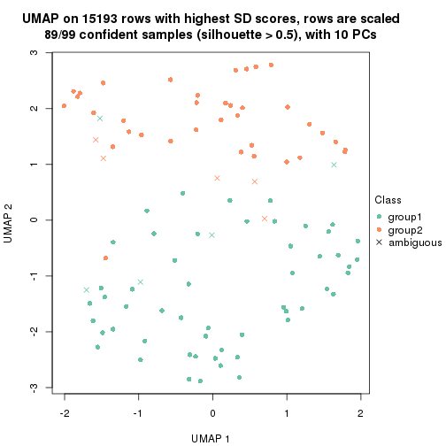
dimension_reduction(res, k = 3, method = "UMAP")
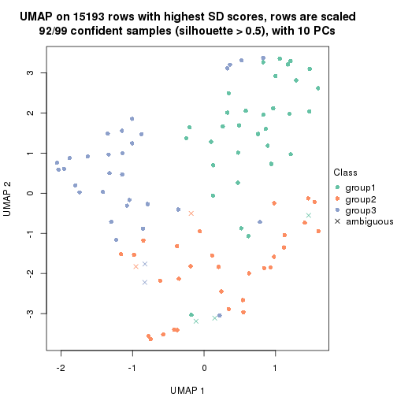
dimension_reduction(res, k = 4, method = "UMAP")
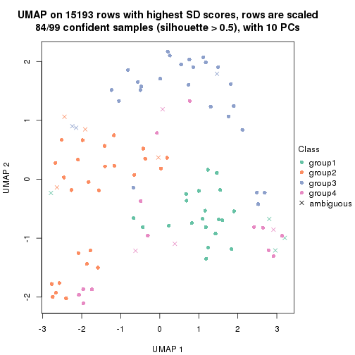
dimension_reduction(res, k = 5, method = "UMAP")
dimension_reduction(res, k = 6, method = "UMAP")
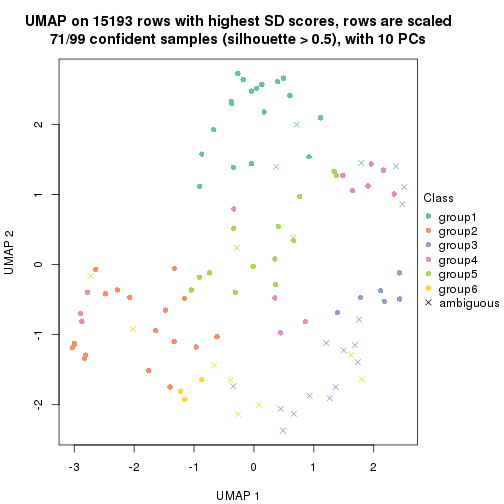
Following heatmap shows how subgroups are split when increasing k:
collect_classes(res)
If matrix rows can be associated to genes, consider to use GO_Enrichment(res,
...) to perform function enrichment for the signature genes.
The object with results only for a single top-value method and a single partition method can be extracted as:
res = res_list["SD", "pam"]
# you can also extract it by
# res = res_list["SD:pam"]
A summary of res and all the functions that can be applied to it:
res
#> A 'ConsensusPartition' object with k = 2, 3, 4, 5, 6.
#> On a matrix with 15193 rows and 99 columns.
#> Top rows (1000, 2000, 3000, 4000, 5000) are extracted by 'SD' method.
#> Subgroups are detected by 'pam' method.
#> Performed in total 1250 partitions by row resampling.
#> Best k for subgroups seems to be 3.
#>
#> Following methods can be applied to this 'ConsensusPartition' object:
#> [1] "cola_report" "collect_classes" "collect_plots"
#> [4] "collect_stats" "colnames" "compare_signatures"
#> [7] "consensus_heatmap" "dimension_reduction" "functional_enrichment"
#> [10] "get_anno_col" "get_anno" "get_classes"
#> [13] "get_consensus" "get_matrix" "get_membership"
#> [16] "get_param" "get_signatures" "get_stats"
#> [19] "is_best_k" "is_stable_k" "membership_heatmap"
#> [22] "ncol" "nrow" "plot_ecdf"
#> [25] "rownames" "select_partition_number" "show"
#> [28] "suggest_best_k" "test_to_known_factors"
collect_plots() function collects all the plots made from res for all k (number of partitions)
into one single page to provide an easy and fast comparison between different k.
collect_plots(res)
The plots are:
k and the heatmap of
predicted classes for each k.k.k.k.All the plots in panels can be made by individual functions and they are plotted later in this section.
select_partition_number() produces several plots showing different
statistics for choosing “optimized” k. There are following statistics:
k;k, the area increased is defined as \(A_k - A_{k-1}\).The detailed explanations of these statistics can be found in the cola vignette.
Generally speaking, lower PAC score, higher mean silhouette score or higher
concordance corresponds to better partition. Rand index and Jaccard index
measure how similar the current partition is compared to partition with k-1.
If they are too similar, we won't accept k is better than k-1.
select_partition_number(res)
The numeric values for all these statistics can be obtained by get_stats().
get_stats(res)
#> k 1-PAC mean_silhouette concordance area_increased Rand Jaccard
#> 2 2 0.405 0.629 0.824 0.4592 0.544 0.544
#> 3 3 0.538 0.691 0.861 0.3702 0.749 0.561
#> 4 4 0.554 0.646 0.785 0.0991 0.893 0.719
#> 5 5 0.638 0.616 0.784 0.0658 0.877 0.643
#> 6 6 0.706 0.659 0.844 0.0404 0.952 0.822
suggest_best_k() suggests the best \(k\) based on these statistics. The rules are as follows:
NA.suggest_best_k(res)
#> [1] 3
Following shows the table of the partitions (You need to click the show/hide
code output link to see it). The membership matrix (columns with name p*)
is inferred by
clue::cl_consensus()
function with the SE method. Basically the value in the membership matrix
represents the probability to belong to a certain group. The finall class
label for an item is determined with the group with highest probability it
belongs to.
In get_classes() function, the entropy is calculated from the membership
matrix and the silhouette score is calculated from the consensus matrix.
cbind(get_classes(res, k = 2), get_membership(res, k = 2))
#> class entropy silhouette p1 p2
#> SRR797072 1 0.0000 0.785 1.000 0.000
#> SRR797073 1 0.8327 0.614 0.736 0.264
#> SRR797074 1 0.0000 0.785 1.000 0.000
#> SRR797075 1 0.0938 0.777 0.988 0.012
#> SRR797076 2 1.0000 0.500 0.496 0.504
#> SRR797077 1 0.0000 0.785 1.000 0.000
#> SRR797078 1 0.8608 0.597 0.716 0.284
#> SRR797079 1 0.7815 0.640 0.768 0.232
#> SRR797080 1 0.9000 0.569 0.684 0.316
#> SRR797081 1 0.9775 0.462 0.588 0.412
#> SRR797082 1 0.0000 0.785 1.000 0.000
#> SRR797083 1 0.0000 0.785 1.000 0.000
#> SRR797084 2 0.1633 0.676 0.024 0.976
#> SRR797085 1 0.9909 -0.325 0.556 0.444
#> SRR797086 1 0.0000 0.785 1.000 0.000
#> SRR797087 1 0.9775 0.462 0.588 0.412
#> SRR797088 1 0.1414 0.780 0.980 0.020
#> SRR797089 1 0.9775 0.462 0.588 0.412
#> SRR797090 1 0.0000 0.785 1.000 0.000
#> SRR797091 1 0.0000 0.785 1.000 0.000
#> SRR797092 1 0.9580 0.500 0.620 0.380
#> SRR797093 1 0.0672 0.783 0.992 0.008
#> SRR797094 1 0.9580 0.500 0.620 0.380
#> SRR797095 1 0.9775 0.462 0.588 0.412
#> SRR797096 1 0.0000 0.785 1.000 0.000
#> SRR797097 1 0.9775 0.462 0.588 0.412
#> SRR797098 2 0.2778 0.663 0.048 0.952
#> SRR797099 1 0.3879 0.751 0.924 0.076
#> SRR797100 1 0.9552 0.505 0.624 0.376
#> SRR797101 1 0.9775 0.462 0.588 0.412
#> SRR797102 1 0.3431 0.730 0.936 0.064
#> SRR797103 2 0.9393 0.605 0.356 0.644
#> SRR797104 1 0.9732 0.472 0.596 0.404
#> SRR797105 1 0.9710 0.477 0.600 0.400
#> SRR797106 2 0.9977 0.537 0.472 0.528
#> SRR797107 1 0.0000 0.785 1.000 0.000
#> SRR797108 1 0.0000 0.785 1.000 0.000
#> SRR797109 1 0.0672 0.783 0.992 0.008
#> SRR797110 1 0.1843 0.764 0.972 0.028
#> SRR797111 1 0.0938 0.777 0.988 0.012
#> SRR797112 1 0.0000 0.785 1.000 0.000
#> SRR797113 1 0.1414 0.780 0.980 0.020
#> SRR797114 1 0.0000 0.785 1.000 0.000
#> SRR797115 1 0.0000 0.785 1.000 0.000
#> SRR797116 1 0.0672 0.783 0.992 0.008
#> SRR797117 2 0.9970 0.535 0.468 0.532
#> SRR797118 1 0.0376 0.782 0.996 0.004
#> SRR797119 1 0.7219 0.665 0.800 0.200
#> SRR797120 1 0.0672 0.780 0.992 0.008
#> SRR797121 1 0.0000 0.785 1.000 0.000
#> SRR797122 1 0.0000 0.785 1.000 0.000
#> SRR797123 1 0.0672 0.783 0.992 0.008
#> SRR797124 2 0.8861 0.559 0.304 0.696
#> SRR797125 1 0.0000 0.785 1.000 0.000
#> SRR797126 1 0.9988 -0.472 0.520 0.480
#> SRR797127 1 0.0000 0.785 1.000 0.000
#> SRR797128 1 0.9775 0.462 0.588 0.412
#> SRR797129 2 0.9998 -0.308 0.492 0.508
#> SRR797130 1 0.0000 0.785 1.000 0.000
#> SRR797131 1 0.8386 0.611 0.732 0.268
#> SRR797132 2 0.4161 0.640 0.084 0.916
#> SRR797133 1 0.0938 0.777 0.988 0.012
#> SRR797134 1 0.0000 0.785 1.000 0.000
#> SRR797135 1 0.0000 0.785 1.000 0.000
#> SRR797136 1 0.0000 0.785 1.000 0.000
#> SRR797137 1 0.0672 0.783 0.992 0.008
#> SRR797138 2 0.9775 0.592 0.412 0.588
#> SRR797139 2 0.0000 0.670 0.000 1.000
#> SRR797140 2 0.4298 0.637 0.088 0.912
#> SRR797141 1 0.9775 0.462 0.588 0.412
#> SRR797142 1 0.9358 0.530 0.648 0.352
#> SRR797143 2 0.9661 0.606 0.392 0.608
#> SRR797144 2 0.9754 0.597 0.408 0.592
#> SRR797145 2 0.2423 0.666 0.040 0.960
#> SRR797146 2 0.0672 0.673 0.008 0.992
#> SRR797147 1 0.2603 0.750 0.956 0.044
#> SRR797148 2 0.3879 0.659 0.076 0.924
#> SRR797149 2 0.0376 0.672 0.004 0.996
#> SRR797150 2 0.9775 0.592 0.412 0.588
#> SRR797151 2 0.9775 0.592 0.412 0.588
#> SRR797152 1 0.5842 0.637 0.860 0.140
#> SRR797153 1 0.5519 0.644 0.872 0.128
#> SRR797154 1 0.8267 0.328 0.740 0.260
#> SRR797155 2 0.0000 0.670 0.000 1.000
#> SRR797156 1 0.4298 0.748 0.912 0.088
#> SRR797157 2 0.0672 0.673 0.008 0.992
#> SRR797158 2 0.9775 0.592 0.412 0.588
#> SRR797159 2 0.2603 0.680 0.044 0.956
#> SRR797160 1 0.5629 0.627 0.868 0.132
#> SRR797161 2 0.9775 0.592 0.412 0.588
#> SRR797162 2 0.9710 0.601 0.400 0.600
#> SRR797163 2 0.9460 0.619 0.364 0.636
#> SRR797164 2 0.9996 0.510 0.488 0.512
#> SRR797165 2 0.2236 0.667 0.036 0.964
#> SRR797166 2 0.2778 0.663 0.048 0.952
#> SRR797167 2 0.0672 0.673 0.008 0.992
#> SRR797168 2 0.9996 0.510 0.488 0.512
#> SRR797169 2 0.9754 0.596 0.408 0.592
#> SRR797170 2 0.5946 0.673 0.144 0.856
cbind(get_classes(res, k = 3), get_membership(res, k = 3))
#> class entropy silhouette p1 p2 p3
#> SRR797072 1 0.0000 0.8952 1.000 0.000 0.000
#> SRR797073 3 0.0237 0.7715 0.004 0.000 0.996
#> SRR797074 1 0.0000 0.8952 1.000 0.000 0.000
#> SRR797075 1 0.1411 0.8749 0.964 0.036 0.000
#> SRR797076 2 0.6244 0.4382 0.440 0.560 0.000
#> SRR797077 1 0.0000 0.8952 1.000 0.000 0.000
#> SRR797078 3 0.6244 0.3206 0.440 0.000 0.560
#> SRR797079 1 0.6299 -0.1244 0.524 0.000 0.476
#> SRR797080 3 0.0475 0.7698 0.004 0.004 0.992
#> SRR797081 3 0.6235 0.3307 0.436 0.000 0.564
#> SRR797082 1 0.0000 0.8952 1.000 0.000 0.000
#> SRR797083 1 0.0000 0.8952 1.000 0.000 0.000
#> SRR797084 2 0.0000 0.7594 0.000 1.000 0.000
#> SRR797085 2 0.5678 0.5466 0.316 0.684 0.000
#> SRR797086 1 0.0000 0.8952 1.000 0.000 0.000
#> SRR797087 3 0.6168 0.3819 0.412 0.000 0.588
#> SRR797088 1 0.4002 0.7597 0.840 0.000 0.160
#> SRR797089 3 0.0237 0.7716 0.004 0.000 0.996
#> SRR797090 1 0.0000 0.8952 1.000 0.000 0.000
#> SRR797091 1 0.0000 0.8952 1.000 0.000 0.000
#> SRR797092 3 0.6286 0.2538 0.464 0.000 0.536
#> SRR797093 1 0.5058 0.6439 0.756 0.000 0.244
#> SRR797094 3 0.0000 0.7712 0.000 0.000 1.000
#> SRR797095 3 0.0000 0.7712 0.000 0.000 1.000
#> SRR797096 1 0.0000 0.8952 1.000 0.000 0.000
#> SRR797097 3 0.0000 0.7712 0.000 0.000 1.000
#> SRR797098 3 0.4452 0.5715 0.000 0.192 0.808
#> SRR797099 3 0.6305 0.0330 0.484 0.000 0.516
#> SRR797100 3 0.6305 0.1906 0.484 0.000 0.516
#> SRR797101 3 0.0000 0.7712 0.000 0.000 1.000
#> SRR797102 1 0.0237 0.8923 0.996 0.004 0.000
#> SRR797103 2 0.4750 0.6973 0.216 0.784 0.000
#> SRR797104 3 0.3340 0.7234 0.120 0.000 0.880
#> SRR797105 3 0.0424 0.7714 0.008 0.000 0.992
#> SRR797106 2 0.5785 0.5951 0.332 0.668 0.000
#> SRR797107 1 0.0000 0.8952 1.000 0.000 0.000
#> SRR797108 1 0.0000 0.8952 1.000 0.000 0.000
#> SRR797109 1 0.3551 0.7894 0.868 0.000 0.132
#> SRR797110 1 0.0000 0.8952 1.000 0.000 0.000
#> SRR797111 1 0.0000 0.8952 1.000 0.000 0.000
#> SRR797112 1 0.0000 0.8952 1.000 0.000 0.000
#> SRR797113 1 0.3619 0.7853 0.864 0.000 0.136
#> SRR797114 1 0.0000 0.8952 1.000 0.000 0.000
#> SRR797115 1 0.0000 0.8952 1.000 0.000 0.000
#> SRR797116 1 0.3551 0.7894 0.868 0.000 0.132
#> SRR797117 2 0.8491 0.5471 0.284 0.588 0.128
#> SRR797118 1 0.0000 0.8952 1.000 0.000 0.000
#> SRR797119 1 0.5650 0.5019 0.688 0.000 0.312
#> SRR797120 1 0.0000 0.8952 1.000 0.000 0.000
#> SRR797121 1 0.0000 0.8952 1.000 0.000 0.000
#> SRR797122 1 0.0000 0.8952 1.000 0.000 0.000
#> SRR797123 1 0.3752 0.7780 0.856 0.000 0.144
#> SRR797124 2 0.8093 0.2876 0.068 0.516 0.416
#> SRR797125 1 0.0000 0.8952 1.000 0.000 0.000
#> SRR797126 2 0.6045 0.5237 0.380 0.620 0.000
#> SRR797127 1 0.0000 0.8952 1.000 0.000 0.000
#> SRR797128 3 0.0000 0.7712 0.000 0.000 1.000
#> SRR797129 3 0.0000 0.7712 0.000 0.000 1.000
#> SRR797130 1 0.0000 0.8952 1.000 0.000 0.000
#> SRR797131 3 0.0592 0.7703 0.012 0.000 0.988
#> SRR797132 3 0.3573 0.6543 0.004 0.120 0.876
#> SRR797133 1 0.0000 0.8952 1.000 0.000 0.000
#> SRR797134 1 0.0000 0.8952 1.000 0.000 0.000
#> SRR797135 1 0.0000 0.8952 1.000 0.000 0.000
#> SRR797136 1 0.0000 0.8952 1.000 0.000 0.000
#> SRR797137 1 0.3551 0.7894 0.868 0.000 0.132
#> SRR797138 2 0.1529 0.7642 0.040 0.960 0.000
#> SRR797139 2 0.6291 0.2614 0.000 0.532 0.468
#> SRR797140 3 0.3425 0.6639 0.004 0.112 0.884
#> SRR797141 3 0.0237 0.7716 0.004 0.000 0.996
#> SRR797142 3 0.5363 0.6026 0.276 0.000 0.724
#> SRR797143 2 0.0000 0.7594 0.000 1.000 0.000
#> SRR797144 2 0.1529 0.7642 0.040 0.960 0.000
#> SRR797145 2 0.6521 0.2030 0.004 0.504 0.492
#> SRR797146 2 0.0000 0.7594 0.000 1.000 0.000
#> SRR797147 1 0.4399 0.7471 0.812 0.188 0.000
#> SRR797148 2 0.7596 0.5960 0.100 0.672 0.228
#> SRR797149 2 0.0000 0.7594 0.000 1.000 0.000
#> SRR797150 2 0.1529 0.7642 0.040 0.960 0.000
#> SRR797151 2 0.1529 0.7642 0.040 0.960 0.000
#> SRR797152 1 0.6235 0.3092 0.564 0.436 0.000
#> SRR797153 1 0.5363 0.6180 0.724 0.276 0.000
#> SRR797154 1 0.6302 0.0473 0.520 0.480 0.000
#> SRR797155 2 0.5591 0.5251 0.000 0.696 0.304
#> SRR797156 1 0.5974 0.7256 0.784 0.148 0.068
#> SRR797157 2 0.0000 0.7594 0.000 1.000 0.000
#> SRR797158 2 0.1964 0.7611 0.056 0.944 0.000
#> SRR797159 2 0.0000 0.7594 0.000 1.000 0.000
#> SRR797160 1 0.4750 0.6728 0.784 0.216 0.000
#> SRR797161 2 0.6126 0.5125 0.400 0.600 0.000
#> SRR797162 2 0.0000 0.7594 0.000 1.000 0.000
#> SRR797163 2 0.1411 0.7551 0.036 0.964 0.000
#> SRR797164 2 0.6204 0.4705 0.424 0.576 0.000
#> SRR797165 2 0.6345 0.3966 0.004 0.596 0.400
#> SRR797166 2 0.6432 0.3480 0.004 0.568 0.428
#> SRR797167 2 0.0000 0.7594 0.000 1.000 0.000
#> SRR797168 2 0.5905 0.5685 0.352 0.648 0.000
#> SRR797169 2 0.1529 0.7642 0.040 0.960 0.000
#> SRR797170 2 0.0000 0.7594 0.000 1.000 0.000
cbind(get_classes(res, k = 4), get_membership(res, k = 4))
#> class entropy silhouette p1 p2 p3 p4
#> SRR797072 1 0.0000 0.8796 1.000 0.000 0.000 0.000
#> SRR797073 3 0.4898 0.3880 0.000 0.000 0.584 0.416
#> SRR797074 1 0.0000 0.8796 1.000 0.000 0.000 0.000
#> SRR797075 1 0.1118 0.8599 0.964 0.036 0.000 0.000
#> SRR797076 1 0.7597 -0.3958 0.440 0.356 0.204 0.000
#> SRR797077 1 0.0336 0.8765 0.992 0.008 0.000 0.000
#> SRR797078 3 0.7789 0.5042 0.352 0.000 0.400 0.248
#> SRR797079 1 0.7168 0.0198 0.552 0.000 0.192 0.256
#> SRR797080 4 0.0000 0.8380 0.000 0.000 0.000 1.000
#> SRR797081 3 0.6695 0.6478 0.220 0.000 0.616 0.164
#> SRR797082 1 0.0000 0.8796 1.000 0.000 0.000 0.000
#> SRR797083 1 0.0000 0.8796 1.000 0.000 0.000 0.000
#> SRR797084 2 0.4222 0.6690 0.000 0.728 0.272 0.000
#> SRR797085 2 0.4830 0.3218 0.392 0.608 0.000 0.000
#> SRR797086 1 0.0000 0.8796 1.000 0.000 0.000 0.000
#> SRR797087 3 0.6664 0.6450 0.216 0.000 0.620 0.164
#> SRR797088 1 0.4036 0.7291 0.836 0.000 0.088 0.076
#> SRR797089 4 0.1792 0.8194 0.000 0.000 0.068 0.932
#> SRR797090 1 0.0000 0.8796 1.000 0.000 0.000 0.000
#> SRR797091 1 0.0000 0.8796 1.000 0.000 0.000 0.000
#> SRR797092 3 0.6623 0.6465 0.232 0.000 0.620 0.148
#> SRR797093 3 0.6136 0.5485 0.356 0.000 0.584 0.060
#> SRR797094 3 0.4996 0.3028 0.000 0.000 0.516 0.484
#> SRR797095 4 0.1637 0.8190 0.000 0.000 0.060 0.940
#> SRR797096 1 0.1302 0.8486 0.956 0.000 0.044 0.000
#> SRR797097 3 0.4746 0.4113 0.000 0.000 0.632 0.368
#> SRR797098 4 0.7469 0.2551 0.000 0.200 0.312 0.488
#> SRR797099 3 0.9549 0.2253 0.188 0.224 0.408 0.180
#> SRR797100 3 0.6609 0.6451 0.236 0.000 0.620 0.144
#> SRR797101 3 0.4746 0.4113 0.000 0.000 0.632 0.368
#> SRR797102 1 0.3873 0.6108 0.772 0.228 0.000 0.000
#> SRR797103 2 0.4919 0.6269 0.200 0.752 0.048 0.000
#> SRR797104 3 0.6098 0.5437 0.076 0.000 0.632 0.292
#> SRR797105 4 0.1792 0.7996 0.000 0.000 0.068 0.932
#> SRR797106 2 0.7299 0.6287 0.224 0.536 0.240 0.000
#> SRR797107 1 0.0000 0.8796 1.000 0.000 0.000 0.000
#> SRR797108 1 0.0000 0.8796 1.000 0.000 0.000 0.000
#> SRR797109 1 0.4100 0.7299 0.832 0.000 0.092 0.076
#> SRR797110 1 0.0000 0.8796 1.000 0.000 0.000 0.000
#> SRR797111 1 0.0336 0.8765 0.992 0.008 0.000 0.000
#> SRR797112 1 0.0000 0.8796 1.000 0.000 0.000 0.000
#> SRR797113 1 0.4880 0.6638 0.760 0.000 0.188 0.052
#> SRR797114 1 0.2281 0.8202 0.904 0.000 0.096 0.000
#> SRR797115 1 0.1118 0.8597 0.964 0.000 0.036 0.000
#> SRR797116 1 0.4364 0.7086 0.808 0.000 0.136 0.056
#> SRR797117 2 0.8489 0.5504 0.176 0.448 0.328 0.048
#> SRR797118 1 0.0188 0.8781 0.996 0.004 0.000 0.000
#> SRR797119 3 0.6135 0.5649 0.324 0.000 0.608 0.068
#> SRR797120 1 0.0000 0.8796 1.000 0.000 0.000 0.000
#> SRR797121 1 0.0336 0.8764 0.992 0.000 0.008 0.000
#> SRR797122 1 0.0000 0.8796 1.000 0.000 0.000 0.000
#> SRR797123 1 0.4499 0.7062 0.804 0.000 0.124 0.072
#> SRR797124 2 0.6610 0.5593 0.084 0.700 0.060 0.156
#> SRR797125 1 0.0000 0.8796 1.000 0.000 0.000 0.000
#> SRR797126 2 0.7283 0.5966 0.292 0.524 0.184 0.000
#> SRR797127 1 0.0000 0.8796 1.000 0.000 0.000 0.000
#> SRR797128 3 0.4996 0.3028 0.000 0.000 0.516 0.484
#> SRR797129 4 0.4072 0.4607 0.000 0.000 0.252 0.748
#> SRR797130 1 0.0000 0.8796 1.000 0.000 0.000 0.000
#> SRR797131 4 0.0000 0.8380 0.000 0.000 0.000 1.000
#> SRR797132 4 0.0707 0.8229 0.000 0.020 0.000 0.980
#> SRR797133 1 0.0336 0.8765 0.992 0.008 0.000 0.000
#> SRR797134 1 0.0000 0.8796 1.000 0.000 0.000 0.000
#> SRR797135 1 0.0000 0.8796 1.000 0.000 0.000 0.000
#> SRR797136 1 0.0000 0.8796 1.000 0.000 0.000 0.000
#> SRR797137 1 0.4880 0.6638 0.760 0.000 0.188 0.052
#> SRR797138 2 0.1118 0.6735 0.036 0.964 0.000 0.000
#> SRR797139 2 0.5810 0.4452 0.000 0.672 0.072 0.256
#> SRR797140 4 0.0188 0.8370 0.000 0.004 0.000 0.996
#> SRR797141 4 0.1792 0.7996 0.000 0.000 0.068 0.932
#> SRR797142 3 0.7212 0.5796 0.160 0.000 0.516 0.324
#> SRR797143 2 0.4222 0.6690 0.000 0.728 0.272 0.000
#> SRR797144 2 0.4574 0.6834 0.024 0.756 0.220 0.000
#> SRR797145 2 0.7494 0.3477 0.000 0.460 0.188 0.352
#> SRR797146 2 0.4222 0.6690 0.000 0.728 0.272 0.000
#> SRR797147 1 0.3764 0.6803 0.784 0.216 0.000 0.000
#> SRR797148 2 0.7420 0.5620 0.012 0.524 0.328 0.136
#> SRR797149 2 0.4222 0.6690 0.000 0.728 0.272 0.000
#> SRR797150 2 0.4877 0.6861 0.044 0.752 0.204 0.000
#> SRR797151 2 0.4707 0.6859 0.036 0.760 0.204 0.000
#> SRR797152 1 0.4948 0.2262 0.560 0.440 0.000 0.000
#> SRR797153 2 0.4985 0.0968 0.468 0.532 0.000 0.000
#> SRR797154 2 0.5257 0.2601 0.444 0.548 0.008 0.000
#> SRR797155 2 0.5375 0.5722 0.000 0.744 0.116 0.140
#> SRR797156 1 0.5698 0.3996 0.608 0.356 0.000 0.036
#> SRR797157 2 0.1792 0.6630 0.000 0.932 0.068 0.000
#> SRR797158 2 0.5111 0.6870 0.056 0.740 0.204 0.000
#> SRR797159 2 0.4222 0.6690 0.000 0.728 0.272 0.000
#> SRR797160 2 0.5925 0.1591 0.452 0.512 0.036 0.000
#> SRR797161 2 0.4855 0.4285 0.400 0.600 0.000 0.000
#> SRR797162 2 0.0188 0.6668 0.000 0.996 0.004 0.000
#> SRR797163 2 0.1824 0.6646 0.004 0.936 0.060 0.000
#> SRR797164 2 0.5400 0.4655 0.372 0.608 0.000 0.020
#> SRR797165 2 0.5021 0.5352 0.000 0.756 0.064 0.180
#> SRR797166 2 0.5170 0.5058 0.000 0.724 0.048 0.228
#> SRR797167 2 0.4222 0.6690 0.000 0.728 0.272 0.000
#> SRR797168 2 0.4164 0.5980 0.264 0.736 0.000 0.000
#> SRR797169 2 0.1118 0.6735 0.036 0.964 0.000 0.000
#> SRR797170 2 0.4222 0.6690 0.000 0.728 0.272 0.000
cbind(get_classes(res, k = 5), get_membership(res, k = 5))
#> class entropy silhouette p1 p2 p3 p4 p5
#> SRR797072 1 0.0000 0.8561 1.000 0.000 0.000 0.000 0.000
#> SRR797073 3 0.1608 0.7955 0.000 0.000 0.928 0.072 0.000
#> SRR797074 1 0.0000 0.8561 1.000 0.000 0.000 0.000 0.000
#> SRR797075 1 0.0798 0.8444 0.976 0.008 0.000 0.000 0.016
#> SRR797076 1 0.5583 0.1422 0.564 0.352 0.000 0.000 0.084
#> SRR797077 1 0.0404 0.8508 0.988 0.000 0.000 0.000 0.012
#> SRR797078 3 0.5470 0.3997 0.332 0.000 0.588 0.080 0.000
#> SRR797079 1 0.6188 0.2191 0.540 0.000 0.328 0.124 0.008
#> SRR797080 4 0.0609 0.8546 0.000 0.000 0.020 0.980 0.000
#> SRR797081 3 0.0404 0.8205 0.000 0.000 0.988 0.012 0.000
#> SRR797082 1 0.0000 0.8561 1.000 0.000 0.000 0.000 0.000
#> SRR797083 1 0.0000 0.8561 1.000 0.000 0.000 0.000 0.000
#> SRR797084 2 0.3210 0.8319 0.000 0.788 0.000 0.000 0.212
#> SRR797085 5 0.6223 0.4437 0.328 0.160 0.000 0.000 0.512
#> SRR797086 1 0.0000 0.8561 1.000 0.000 0.000 0.000 0.000
#> SRR797087 3 0.0162 0.8196 0.000 0.000 0.996 0.004 0.000
#> SRR797088 1 0.2248 0.7957 0.900 0.000 0.088 0.000 0.012
#> SRR797089 4 0.1908 0.8337 0.000 0.000 0.092 0.908 0.000
#> SRR797090 1 0.0000 0.8561 1.000 0.000 0.000 0.000 0.000
#> SRR797091 1 0.0000 0.8561 1.000 0.000 0.000 0.000 0.000
#> SRR797092 3 0.0290 0.8208 0.008 0.000 0.992 0.000 0.000
#> SRR797093 3 0.2824 0.7163 0.116 0.000 0.864 0.020 0.000
#> SRR797094 3 0.1965 0.7943 0.000 0.000 0.904 0.096 0.000
#> SRR797095 4 0.2561 0.7871 0.000 0.000 0.144 0.856 0.000
#> SRR797096 1 0.1270 0.8236 0.948 0.000 0.052 0.000 0.000
#> SRR797097 3 0.0000 0.8197 0.000 0.000 1.000 0.000 0.000
#> SRR797098 3 0.6916 0.0328 0.000 0.016 0.452 0.332 0.200
#> SRR797099 5 0.7040 0.3679 0.088 0.000 0.136 0.208 0.568
#> SRR797100 3 0.0290 0.8208 0.008 0.000 0.992 0.000 0.000
#> SRR797101 3 0.0510 0.8153 0.000 0.000 0.984 0.016 0.000
#> SRR797102 5 0.4256 0.3870 0.436 0.000 0.000 0.000 0.564
#> SRR797103 5 0.5435 0.5098 0.188 0.064 0.044 0.000 0.704
#> SRR797104 3 0.0000 0.8197 0.000 0.000 1.000 0.000 0.000
#> SRR797105 4 0.1544 0.8326 0.000 0.000 0.068 0.932 0.000
#> SRR797106 5 0.6764 -0.1821 0.268 0.360 0.000 0.000 0.372
#> SRR797107 1 0.0000 0.8561 1.000 0.000 0.000 0.000 0.000
#> SRR797108 1 0.0000 0.8561 1.000 0.000 0.000 0.000 0.000
#> SRR797109 1 0.3980 0.7085 0.796 0.000 0.076 0.128 0.000
#> SRR797110 1 0.0000 0.8561 1.000 0.000 0.000 0.000 0.000
#> SRR797111 1 0.0162 0.8546 0.996 0.000 0.000 0.000 0.004
#> SRR797112 1 0.0000 0.8561 1.000 0.000 0.000 0.000 0.000
#> SRR797113 1 0.7463 0.4240 0.528 0.212 0.044 0.020 0.196
#> SRR797114 1 0.6499 0.4645 0.572 0.212 0.000 0.020 0.196
#> SRR797115 1 0.0703 0.8455 0.976 0.000 0.000 0.000 0.024
#> SRR797116 1 0.2540 0.7896 0.888 0.000 0.088 0.000 0.024
#> SRR797117 1 0.7748 -0.3066 0.368 0.352 0.068 0.000 0.212
#> SRR797118 1 0.0162 0.8547 0.996 0.000 0.000 0.000 0.004
#> SRR797119 3 0.4546 0.6216 0.176 0.000 0.756 0.056 0.012
#> SRR797120 1 0.0609 0.8466 0.980 0.000 0.000 0.000 0.020
#> SRR797121 1 0.0162 0.8549 0.996 0.000 0.000 0.000 0.004
#> SRR797122 1 0.0000 0.8561 1.000 0.000 0.000 0.000 0.000
#> SRR797123 1 0.3527 0.7623 0.852 0.000 0.076 0.048 0.024
#> SRR797124 5 0.4833 0.5165 0.100 0.000 0.080 0.048 0.772
#> SRR797125 1 0.0000 0.8561 1.000 0.000 0.000 0.000 0.000
#> SRR797126 5 0.6749 -0.0514 0.288 0.304 0.000 0.000 0.408
#> SRR797127 1 0.0000 0.8561 1.000 0.000 0.000 0.000 0.000
#> SRR797128 3 0.1908 0.7953 0.000 0.000 0.908 0.092 0.000
#> SRR797129 3 0.4305 0.1086 0.000 0.000 0.512 0.488 0.000
#> SRR797130 1 0.0000 0.8561 1.000 0.000 0.000 0.000 0.000
#> SRR797131 4 0.0794 0.8543 0.000 0.000 0.028 0.972 0.000
#> SRR797132 4 0.1704 0.8290 0.000 0.000 0.068 0.928 0.004
#> SRR797133 1 0.0963 0.8375 0.964 0.000 0.000 0.000 0.036
#> SRR797134 1 0.0000 0.8561 1.000 0.000 0.000 0.000 0.000
#> SRR797135 1 0.0000 0.8561 1.000 0.000 0.000 0.000 0.000
#> SRR797136 1 0.0000 0.8561 1.000 0.000 0.000 0.000 0.000
#> SRR797137 1 0.7463 0.4240 0.528 0.212 0.044 0.020 0.196
#> SRR797138 5 0.3513 0.3742 0.020 0.180 0.000 0.000 0.800
#> SRR797139 5 0.7004 0.2508 0.000 0.132 0.160 0.120 0.588
#> SRR797140 4 0.0609 0.8546 0.000 0.000 0.020 0.980 0.000
#> SRR797141 4 0.1478 0.8353 0.000 0.000 0.064 0.936 0.000
#> SRR797142 3 0.1908 0.7953 0.000 0.000 0.908 0.092 0.000
#> SRR797143 2 0.3210 0.8319 0.000 0.788 0.000 0.000 0.212
#> SRR797144 2 0.4953 0.6128 0.028 0.532 0.000 0.000 0.440
#> SRR797145 4 0.8231 -0.1739 0.000 0.256 0.132 0.376 0.236
#> SRR797146 2 0.3210 0.8319 0.000 0.788 0.000 0.000 0.212
#> SRR797147 1 0.3865 0.6774 0.808 0.092 0.000 0.000 0.100
#> SRR797148 5 0.7429 -0.3805 0.000 0.352 0.068 0.148 0.432
#> SRR797149 2 0.3210 0.8319 0.000 0.788 0.000 0.000 0.212
#> SRR797150 2 0.5408 0.6109 0.060 0.532 0.000 0.000 0.408
#> SRR797151 2 0.4807 0.5884 0.020 0.532 0.000 0.000 0.448
#> SRR797152 1 0.6059 0.2755 0.572 0.184 0.000 0.000 0.244
#> SRR797153 5 0.4400 0.5354 0.196 0.060 0.000 0.000 0.744
#> SRR797154 1 0.6415 -0.2267 0.428 0.172 0.000 0.000 0.400
#> SRR797155 5 0.6331 0.1858 0.000 0.300 0.112 0.024 0.564
#> SRR797156 5 0.5914 0.5097 0.288 0.060 0.024 0.008 0.620
#> SRR797157 5 0.4256 0.0225 0.000 0.436 0.000 0.000 0.564
#> SRR797158 2 0.5700 0.5774 0.088 0.532 0.000 0.000 0.380
#> SRR797159 2 0.3210 0.8319 0.000 0.788 0.000 0.000 0.212
#> SRR797160 5 0.3177 0.5409 0.208 0.000 0.000 0.000 0.792
#> SRR797161 5 0.4380 0.4869 0.376 0.008 0.000 0.000 0.616
#> SRR797162 5 0.3109 0.3490 0.000 0.200 0.000 0.000 0.800
#> SRR797163 5 0.4321 0.1112 0.004 0.396 0.000 0.000 0.600
#> SRR797164 5 0.4418 0.5110 0.332 0.000 0.000 0.016 0.652
#> SRR797165 5 0.4630 0.4369 0.000 0.028 0.124 0.072 0.776
#> SRR797166 5 0.4840 0.4304 0.000 0.000 0.124 0.152 0.724
#> SRR797167 2 0.3210 0.8319 0.000 0.788 0.000 0.000 0.212
#> SRR797168 5 0.3300 0.5332 0.204 0.004 0.000 0.000 0.792
#> SRR797169 5 0.3995 0.3883 0.044 0.180 0.000 0.000 0.776
#> SRR797170 2 0.3210 0.8319 0.000 0.788 0.000 0.000 0.212
cbind(get_classes(res, k = 6), get_membership(res, k = 6))
#> class entropy silhouette p1 p2 p3 p4 p5 p6
#> SRR797072 1 0.0000 0.88587 1.000 0.000 0.000 0 0.000 0.000
#> SRR797073 3 0.0632 0.79808 0.000 0.000 0.976 0 0.000 0.024
#> SRR797074 1 0.0000 0.88587 1.000 0.000 0.000 0 0.000 0.000
#> SRR797075 1 0.0520 0.87970 0.984 0.008 0.000 0 0.008 0.000
#> SRR797076 1 0.4193 0.38726 0.624 0.352 0.000 0 0.024 0.000
#> SRR797077 1 0.0458 0.87836 0.984 0.000 0.000 0 0.016 0.000
#> SRR797078 3 0.5542 0.36987 0.324 0.000 0.560 0 0.096 0.020
#> SRR797079 1 0.6197 0.26309 0.556 0.000 0.264 0 0.100 0.080
#> SRR797080 6 0.0000 0.86703 0.000 0.000 0.000 0 0.000 1.000
#> SRR797081 3 0.1471 0.80354 0.000 0.000 0.932 0 0.064 0.004
#> SRR797082 1 0.0000 0.88587 1.000 0.000 0.000 0 0.000 0.000
#> SRR797083 1 0.0000 0.88587 1.000 0.000 0.000 0 0.000 0.000
#> SRR797084 2 0.0363 0.67343 0.000 0.988 0.000 0 0.012 0.000
#> SRR797085 5 0.5455 0.43739 0.264 0.172 0.000 0 0.564 0.000
#> SRR797086 1 0.0000 0.88587 1.000 0.000 0.000 0 0.000 0.000
#> SRR797087 3 0.2442 0.76942 0.000 0.000 0.852 0 0.144 0.004
#> SRR797088 1 0.1088 0.86819 0.960 0.000 0.016 0 0.024 0.000
#> SRR797089 6 0.0458 0.86649 0.000 0.000 0.016 0 0.000 0.984
#> SRR797090 1 0.0000 0.88587 1.000 0.000 0.000 0 0.000 0.000
#> SRR797091 1 0.0000 0.88587 1.000 0.000 0.000 0 0.000 0.000
#> SRR797092 3 0.0000 0.80966 0.000 0.000 1.000 0 0.000 0.000
#> SRR797093 3 0.1074 0.78674 0.028 0.000 0.960 0 0.000 0.012
#> SRR797094 3 0.2462 0.78590 0.000 0.000 0.876 0 0.096 0.028
#> SRR797095 6 0.2462 0.79745 0.000 0.000 0.028 0 0.096 0.876
#> SRR797096 1 0.1141 0.85408 0.948 0.000 0.052 0 0.000 0.000
#> SRR797097 3 0.0000 0.80966 0.000 0.000 1.000 0 0.000 0.000
#> SRR797098 3 0.6470 -0.00792 0.000 0.016 0.368 0 0.300 0.316
#> SRR797099 5 0.4018 0.59509 0.044 0.000 0.024 0 0.772 0.160
#> SRR797100 3 0.0000 0.80966 0.000 0.000 1.000 0 0.000 0.000
#> SRR797101 3 0.0146 0.80808 0.000 0.000 0.996 0 0.000 0.004
#> SRR797102 5 0.3198 0.61646 0.260 0.000 0.000 0 0.740 0.000
#> SRR797103 5 0.4496 0.61718 0.180 0.116 0.000 0 0.704 0.000
#> SRR797104 3 0.0000 0.80966 0.000 0.000 1.000 0 0.000 0.000
#> SRR797105 6 0.0547 0.85548 0.000 0.000 0.020 0 0.000 0.980
#> SRR797106 1 0.6114 -0.25558 0.352 0.352 0.000 0 0.296 0.000
#> SRR797107 1 0.0000 0.88587 1.000 0.000 0.000 0 0.000 0.000
#> SRR797108 1 0.0000 0.88587 1.000 0.000 0.000 0 0.000 0.000
#> SRR797109 1 0.3290 0.69243 0.776 0.000 0.016 0 0.000 0.208
#> SRR797110 1 0.0000 0.88587 1.000 0.000 0.000 0 0.000 0.000
#> SRR797111 1 0.0260 0.88266 0.992 0.000 0.000 0 0.008 0.000
#> SRR797112 1 0.0000 0.88587 1.000 0.000 0.000 0 0.000 0.000
#> SRR797113 4 0.0000 1.00000 0.000 0.000 0.000 1 0.000 0.000
#> SRR797114 4 0.0000 1.00000 0.000 0.000 0.000 1 0.000 0.000
#> SRR797115 1 0.1075 0.86206 0.952 0.000 0.000 0 0.048 0.000
#> SRR797116 1 0.1780 0.84728 0.924 0.000 0.028 0 0.048 0.000
#> SRR797117 1 0.5253 0.29960 0.560 0.352 0.012 0 0.076 0.000
#> SRR797118 1 0.0260 0.88319 0.992 0.000 0.000 0 0.008 0.000
#> SRR797119 3 0.2961 0.66622 0.132 0.000 0.840 0 0.008 0.020
#> SRR797120 1 0.0547 0.87670 0.980 0.000 0.000 0 0.020 0.000
#> SRR797121 1 0.0146 0.88475 0.996 0.000 0.000 0 0.004 0.000
#> SRR797122 1 0.0000 0.88587 1.000 0.000 0.000 0 0.000 0.000
#> SRR797123 1 0.3106 0.78767 0.852 0.000 0.016 0 0.048 0.084
#> SRR797124 5 0.0820 0.59931 0.000 0.000 0.012 0 0.972 0.016
#> SRR797125 1 0.0000 0.88587 1.000 0.000 0.000 0 0.000 0.000
#> SRR797126 5 0.6120 0.08526 0.344 0.304 0.000 0 0.352 0.000
#> SRR797127 1 0.0000 0.88587 1.000 0.000 0.000 0 0.000 0.000
#> SRR797128 3 0.2667 0.76941 0.000 0.000 0.852 0 0.128 0.020
#> SRR797129 3 0.5503 0.10858 0.000 0.000 0.456 0 0.128 0.416
#> SRR797130 1 0.0000 0.88587 1.000 0.000 0.000 0 0.000 0.000
#> SRR797131 6 0.0547 0.86474 0.000 0.000 0.000 0 0.020 0.980
#> SRR797132 6 0.2664 0.77829 0.000 0.000 0.016 0 0.136 0.848
#> SRR797133 1 0.1267 0.84861 0.940 0.000 0.000 0 0.060 0.000
#> SRR797134 1 0.0000 0.88587 1.000 0.000 0.000 0 0.000 0.000
#> SRR797135 1 0.0000 0.88587 1.000 0.000 0.000 0 0.000 0.000
#> SRR797136 1 0.0000 0.88587 1.000 0.000 0.000 0 0.000 0.000
#> SRR797137 4 0.0000 1.00000 0.000 0.000 0.000 1 0.000 0.000
#> SRR797138 5 0.2730 0.54784 0.000 0.192 0.000 0 0.808 0.000
#> SRR797139 5 0.4600 0.44017 0.000 0.132 0.040 0 0.744 0.084
#> SRR797140 6 0.0000 0.86703 0.000 0.000 0.000 0 0.000 1.000
#> SRR797141 6 0.0458 0.85882 0.000 0.000 0.016 0 0.000 0.984
#> SRR797142 3 0.1926 0.79745 0.000 0.000 0.912 0 0.068 0.020
#> SRR797143 2 0.0000 0.68298 0.000 1.000 0.000 0 0.000 0.000
#> SRR797144 2 0.4305 0.19209 0.020 0.544 0.000 0 0.436 0.000
#> SRR797145 6 0.6341 0.36607 0.000 0.256 0.028 0 0.228 0.488
#> SRR797146 2 0.0000 0.68298 0.000 1.000 0.000 0 0.000 0.000
#> SRR797147 1 0.2812 0.76689 0.856 0.096 0.000 0 0.048 0.000
#> SRR797148 5 0.5616 -0.05914 0.000 0.352 0.016 0 0.528 0.104
#> SRR797149 2 0.0000 0.68298 0.000 1.000 0.000 0 0.000 0.000
#> SRR797150 2 0.5213 0.25494 0.104 0.544 0.000 0 0.352 0.000
#> SRR797151 2 0.3847 0.16812 0.000 0.544 0.000 0 0.456 0.000
#> SRR797152 1 0.5348 0.36821 0.592 0.192 0.000 0 0.216 0.000
#> SRR797153 5 0.3426 0.65471 0.124 0.068 0.000 0 0.808 0.000
#> SRR797154 1 0.5784 -0.23820 0.416 0.176 0.000 0 0.408 0.000
#> SRR797155 5 0.4394 -0.12974 0.000 0.484 0.016 0 0.496 0.004
#> SRR797156 5 0.3285 0.65784 0.116 0.064 0.000 0 0.820 0.000
#> SRR797157 2 0.3620 0.22418 0.000 0.648 0.000 0 0.352 0.000
#> SRR797158 2 0.5434 0.23589 0.144 0.544 0.000 0 0.312 0.000
#> SRR797159 2 0.0000 0.68298 0.000 1.000 0.000 0 0.000 0.000
#> SRR797160 5 0.2416 0.65838 0.156 0.000 0.000 0 0.844 0.000
#> SRR797161 5 0.3351 0.59761 0.288 0.000 0.000 0 0.712 0.000
#> SRR797162 5 0.2730 0.54784 0.000 0.192 0.000 0 0.808 0.000
#> SRR797163 2 0.3737 0.15902 0.000 0.608 0.000 0 0.392 0.000
#> SRR797164 5 0.3244 0.61378 0.268 0.000 0.000 0 0.732 0.000
#> SRR797165 5 0.1882 0.59240 0.000 0.020 0.028 0 0.928 0.024
#> SRR797166 5 0.2201 0.58163 0.000 0.000 0.028 0 0.896 0.076
#> SRR797167 2 0.0000 0.68298 0.000 1.000 0.000 0 0.000 0.000
#> SRR797168 5 0.2871 0.65287 0.192 0.004 0.000 0 0.804 0.000
#> SRR797169 5 0.3409 0.56188 0.028 0.192 0.000 0 0.780 0.000
#> SRR797170 2 0.0000 0.68298 0.000 1.000 0.000 0 0.000 0.000
Heatmaps for the consensus matrix. It visualizes the probability of two samples to be in a same group.
consensus_heatmap(res, k = 2)
consensus_heatmap(res, k = 3)
consensus_heatmap(res, k = 4)
consensus_heatmap(res, k = 5)
consensus_heatmap(res, k = 6)
Heatmaps for the membership of samples in all partitions to see how consistent they are:
membership_heatmap(res, k = 2)
membership_heatmap(res, k = 3)
membership_heatmap(res, k = 4)
membership_heatmap(res, k = 5)
membership_heatmap(res, k = 6)
As soon as we have had the classes for columns, we can look for signatures which are significantly different between classes which can be candidate marks for certain classes. Following are the heatmaps for signatures.
Signature heatmaps where rows are scaled:
get_signatures(res, k = 2)
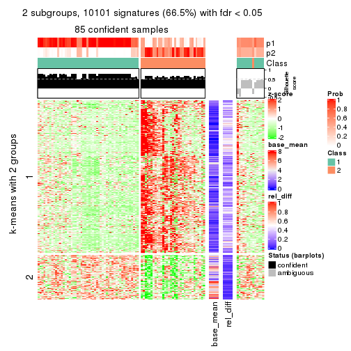
get_signatures(res, k = 3)
get_signatures(res, k = 4)
get_signatures(res, k = 5)

get_signatures(res, k = 6)
Signature heatmaps where rows are not scaled:
get_signatures(res, k = 2, scale_rows = FALSE)
get_signatures(res, k = 3, scale_rows = FALSE)
get_signatures(res, k = 4, scale_rows = FALSE)
get_signatures(res, k = 5, scale_rows = FALSE)
get_signatures(res, k = 6, scale_rows = FALSE)
Compare the overlap of signatures from different k:
compare_signatures(res)
get_signature() returns a data frame invisibly. TO get the list of signatures, the function
call should be assigned to a variable explicitly. In following code, if plot argument is set
to FALSE, no heatmap is plotted while only the differential analysis is performed.
# code only for demonstration
tb = get_signature(res, k = ..., plot = FALSE)
An example of the output of tb is:
#> which_row fdr mean_1 mean_2 scaled_mean_1 scaled_mean_2 km
#> 1 38 0.042760348 8.373488 9.131774 -0.5533452 0.5164555 1
#> 2 40 0.018707592 7.106213 8.469186 -0.6173731 0.5762149 1
#> 3 55 0.019134737 10.221463 11.207825 -0.6159697 0.5749050 1
#> 4 59 0.006059896 5.921854 7.869574 -0.6899429 0.6439467 1
#> 5 60 0.018055526 8.928898 10.211722 -0.6204761 0.5791110 1
#> 6 98 0.009384629 15.714769 14.887706 0.6635654 -0.6193277 2
...
The columns in tb are:
which_row: row indices corresponding to the input matrix.fdr: FDR for the differential test. mean_x: The mean value in group x.scaled_mean_x: The mean value in group x after rows are scaled.km: Row groups if k-means clustering is applied to rows.UMAP plot which shows how samples are separated.
dimension_reduction(res, k = 2, method = "UMAP")
dimension_reduction(res, k = 3, method = "UMAP")
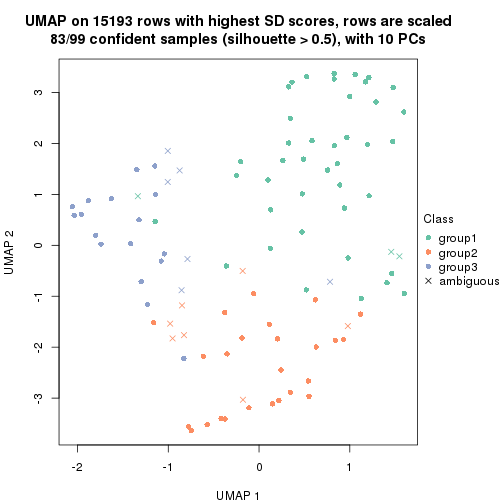
dimension_reduction(res, k = 4, method = "UMAP")
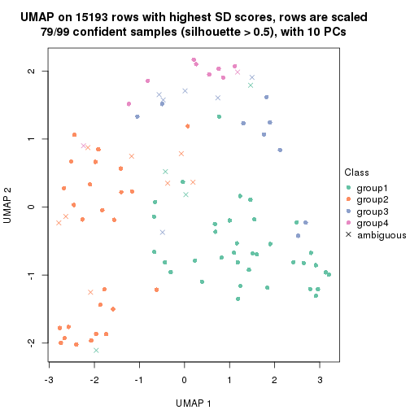
dimension_reduction(res, k = 5, method = "UMAP")
dimension_reduction(res, k = 6, method = "UMAP")
Following heatmap shows how subgroups are split when increasing k:
collect_classes(res)
If matrix rows can be associated to genes, consider to use GO_Enrichment(res,
...) to perform function enrichment for the signature genes.
The object with results only for a single top-value method and a single partition method can be extracted as:
res = res_list["SD", "mclust"]
# you can also extract it by
# res = res_list["SD:mclust"]
A summary of res and all the functions that can be applied to it:
res
#> A 'ConsensusPartition' object with k = 2, 3, 4, 5, 6.
#> On a matrix with 15193 rows and 99 columns.
#> Top rows (1000, 2000, 3000, 4000, 5000) are extracted by 'SD' method.
#> Subgroups are detected by 'mclust' method.
#> Performed in total 1250 partitions by row resampling.
#> Best k for subgroups seems to be 4.
#>
#> Following methods can be applied to this 'ConsensusPartition' object:
#> [1] "cola_report" "collect_classes" "collect_plots"
#> [4] "collect_stats" "colnames" "compare_signatures"
#> [7] "consensus_heatmap" "dimension_reduction" "functional_enrichment"
#> [10] "get_anno_col" "get_anno" "get_classes"
#> [13] "get_consensus" "get_matrix" "get_membership"
#> [16] "get_param" "get_signatures" "get_stats"
#> [19] "is_best_k" "is_stable_k" "membership_heatmap"
#> [22] "ncol" "nrow" "plot_ecdf"
#> [25] "rownames" "select_partition_number" "show"
#> [28] "suggest_best_k" "test_to_known_factors"
collect_plots() function collects all the plots made from res for all k (number of partitions)
into one single page to provide an easy and fast comparison between different k.
collect_plots(res)
The plots are:
k and the heatmap of
predicted classes for each k.k.k.k.All the plots in panels can be made by individual functions and they are plotted later in this section.
select_partition_number() produces several plots showing different
statistics for choosing “optimized” k. There are following statistics:
k;k, the area increased is defined as \(A_k - A_{k-1}\).The detailed explanations of these statistics can be found in the cola vignette.
Generally speaking, lower PAC score, higher mean silhouette score or higher
concordance corresponds to better partition. Rand index and Jaccard index
measure how similar the current partition is compared to partition with k-1.
If they are too similar, we won't accept k is better than k-1.
select_partition_number(res)
The numeric values for all these statistics can be obtained by get_stats().
get_stats(res)
#> k 1-PAC mean_silhouette concordance area_increased Rand Jaccard
#> 2 2 0.372 0.859 0.840 0.3937 0.573 0.573
#> 3 3 0.574 0.587 0.826 0.5676 0.747 0.563
#> 4 4 0.841 0.819 0.921 0.1611 0.909 0.739
#> 5 5 0.757 0.724 0.864 0.0442 0.963 0.869
#> 6 6 0.638 0.481 0.700 0.0631 0.882 0.591
suggest_best_k() suggests the best \(k\) based on these statistics. The rules are as follows:
NA.suggest_best_k(res)
#> [1] 4
Following shows the table of the partitions (You need to click the show/hide
code output link to see it). The membership matrix (columns with name p*)
is inferred by
clue::cl_consensus()
function with the SE method. Basically the value in the membership matrix
represents the probability to belong to a certain group. The finall class
label for an item is determined with the group with highest probability it
belongs to.
In get_classes() function, the entropy is calculated from the membership
matrix and the silhouette score is calculated from the consensus matrix.
cbind(get_classes(res, k = 2), get_membership(res, k = 2))
#> class entropy silhouette p1 p2
#> SRR797072 2 0.881 0.846 0.300 0.700
#> SRR797073 1 0.402 0.971 0.920 0.080
#> SRR797074 2 0.881 0.846 0.300 0.700
#> SRR797075 2 0.760 0.862 0.220 0.780
#> SRR797076 2 0.141 0.787 0.020 0.980
#> SRR797077 2 0.881 0.846 0.300 0.700
#> SRR797078 1 0.402 0.971 0.920 0.080
#> SRR797079 2 0.966 0.618 0.392 0.608
#> SRR797080 1 0.402 0.971 0.920 0.080
#> SRR797081 1 0.563 0.918 0.868 0.132
#> SRR797082 2 0.881 0.846 0.300 0.700
#> SRR797083 2 0.814 0.843 0.252 0.748
#> SRR797084 2 0.000 0.773 0.000 1.000
#> SRR797085 2 0.000 0.773 0.000 1.000
#> SRR797086 2 0.767 0.861 0.224 0.776
#> SRR797087 1 0.402 0.971 0.920 0.080
#> SRR797088 2 0.996 0.418 0.464 0.536
#> SRR797089 1 0.443 0.963 0.908 0.092
#> SRR797090 2 0.814 0.861 0.252 0.748
#> SRR797091 2 0.802 0.850 0.244 0.756
#> SRR797092 1 0.402 0.971 0.920 0.080
#> SRR797093 1 0.850 0.630 0.724 0.276
#> SRR797094 1 0.402 0.971 0.920 0.080
#> SRR797095 1 0.416 0.969 0.916 0.084
#> SRR797096 2 0.767 0.861 0.224 0.776
#> SRR797097 1 0.402 0.971 0.920 0.080
#> SRR797098 1 0.443 0.963 0.908 0.092
#> SRR797099 2 0.821 0.840 0.256 0.744
#> SRR797100 1 0.402 0.971 0.920 0.080
#> SRR797101 1 0.402 0.971 0.920 0.080
#> SRR797102 2 0.706 0.863 0.192 0.808
#> SRR797103 2 0.760 0.849 0.220 0.780
#> SRR797104 1 0.402 0.971 0.920 0.080
#> SRR797105 1 0.402 0.971 0.920 0.080
#> SRR797106 2 0.163 0.787 0.024 0.976
#> SRR797107 2 0.760 0.862 0.220 0.780
#> SRR797108 2 0.881 0.846 0.300 0.700
#> SRR797109 1 0.697 0.827 0.812 0.188
#> SRR797110 2 0.767 0.863 0.224 0.776
#> SRR797111 2 0.881 0.846 0.300 0.700
#> SRR797112 2 0.767 0.861 0.224 0.776
#> SRR797113 2 0.767 0.862 0.224 0.776
#> SRR797114 2 0.760 0.862 0.220 0.780
#> SRR797115 2 0.775 0.860 0.228 0.772
#> SRR797116 2 0.855 0.815 0.280 0.720
#> SRR797117 2 0.163 0.787 0.024 0.976
#> SRR797118 2 0.881 0.846 0.300 0.700
#> SRR797119 1 0.552 0.923 0.872 0.128
#> SRR797120 2 0.775 0.859 0.228 0.772
#> SRR797121 2 0.802 0.850 0.244 0.756
#> SRR797122 2 0.881 0.846 0.300 0.700
#> SRR797123 2 0.871 0.799 0.292 0.708
#> SRR797124 2 0.821 0.840 0.256 0.744
#> SRR797125 2 0.881 0.846 0.300 0.700
#> SRR797126 2 0.881 0.846 0.300 0.700
#> SRR797127 2 0.855 0.853 0.280 0.720
#> SRR797128 1 0.402 0.971 0.920 0.080
#> SRR797129 1 0.402 0.971 0.920 0.080
#> SRR797130 2 0.760 0.862 0.220 0.780
#> SRR797131 1 0.402 0.971 0.920 0.080
#> SRR797132 1 0.402 0.971 0.920 0.080
#> SRR797133 2 0.881 0.846 0.300 0.700
#> SRR797134 2 0.881 0.846 0.300 0.700
#> SRR797135 2 0.881 0.846 0.300 0.700
#> SRR797136 2 0.881 0.846 0.300 0.700
#> SRR797137 2 0.767 0.862 0.224 0.776
#> SRR797138 2 0.184 0.794 0.028 0.972
#> SRR797139 1 0.443 0.963 0.908 0.092
#> SRR797140 1 0.402 0.971 0.920 0.080
#> SRR797141 1 0.402 0.971 0.920 0.080
#> SRR797142 1 0.469 0.955 0.900 0.100
#> SRR797143 2 0.000 0.773 0.000 1.000
#> SRR797144 2 0.141 0.787 0.020 0.980
#> SRR797145 1 0.563 0.931 0.868 0.132
#> SRR797146 2 0.000 0.773 0.000 1.000
#> SRR797147 2 0.881 0.846 0.300 0.700
#> SRR797148 2 0.482 0.747 0.104 0.896
#> SRR797149 2 0.000 0.773 0.000 1.000
#> SRR797150 2 0.000 0.773 0.000 1.000
#> SRR797151 2 0.141 0.787 0.020 0.980
#> SRR797152 2 0.760 0.862 0.220 0.780
#> SRR797153 2 0.760 0.862 0.220 0.780
#> SRR797154 2 0.802 0.850 0.244 0.756
#> SRR797155 1 0.605 0.927 0.852 0.148
#> SRR797156 2 0.767 0.861 0.224 0.776
#> SRR797157 2 0.000 0.773 0.000 1.000
#> SRR797158 2 0.224 0.797 0.036 0.964
#> SRR797159 2 0.000 0.773 0.000 1.000
#> SRR797160 2 0.821 0.840 0.256 0.744
#> SRR797161 2 0.706 0.863 0.192 0.808
#> SRR797162 2 0.184 0.794 0.028 0.972
#> SRR797163 2 0.184 0.794 0.028 0.972
#> SRR797164 2 0.730 0.864 0.204 0.796
#> SRR797165 1 0.443 0.963 0.908 0.092
#> SRR797166 1 0.456 0.959 0.904 0.096
#> SRR797167 2 0.000 0.773 0.000 1.000
#> SRR797168 2 0.738 0.863 0.208 0.792
#> SRR797169 2 0.722 0.863 0.200 0.800
#> SRR797170 2 0.000 0.773 0.000 1.000
cbind(get_classes(res, k = 3), get_membership(res, k = 3))
#> class entropy silhouette p1 p2 p3
#> SRR797072 1 0.0000 0.626 1.000 0.000 0.000
#> SRR797073 3 0.0000 0.948 0.000 0.000 1.000
#> SRR797074 1 0.0000 0.626 1.000 0.000 0.000
#> SRR797075 1 0.2959 0.658 0.900 0.100 0.000
#> SRR797076 2 0.1289 0.647 0.032 0.968 0.000
#> SRR797077 1 0.2165 0.653 0.936 0.064 0.000
#> SRR797078 3 0.1411 0.926 0.000 0.036 0.964
#> SRR797079 3 0.6168 0.234 0.000 0.412 0.588
#> SRR797080 3 0.0000 0.948 0.000 0.000 1.000
#> SRR797081 3 0.2537 0.893 0.000 0.080 0.920
#> SRR797082 1 0.0000 0.626 1.000 0.000 0.000
#> SRR797083 1 0.6260 0.383 0.552 0.448 0.000
#> SRR797084 2 0.0424 0.650 0.008 0.992 0.000
#> SRR797085 2 0.1163 0.649 0.028 0.972 0.000
#> SRR797086 1 0.6267 0.379 0.548 0.452 0.000
#> SRR797087 3 0.0000 0.948 0.000 0.000 1.000
#> SRR797088 2 0.7674 0.105 0.044 0.480 0.476
#> SRR797089 3 0.0000 0.948 0.000 0.000 1.000
#> SRR797090 1 0.0424 0.630 0.992 0.008 0.000
#> SRR797091 1 0.6291 0.350 0.532 0.468 0.000
#> SRR797092 3 0.0000 0.948 0.000 0.000 1.000
#> SRR797093 3 0.4178 0.775 0.000 0.172 0.828
#> SRR797094 3 0.0000 0.948 0.000 0.000 1.000
#> SRR797095 3 0.0000 0.948 0.000 0.000 1.000
#> SRR797096 1 0.6309 0.276 0.500 0.500 0.000
#> SRR797097 3 0.0000 0.948 0.000 0.000 1.000
#> SRR797098 3 0.0000 0.948 0.000 0.000 1.000
#> SRR797099 2 0.6521 -0.297 0.492 0.504 0.004
#> SRR797100 3 0.0000 0.948 0.000 0.000 1.000
#> SRR797101 3 0.0000 0.948 0.000 0.000 1.000
#> SRR797102 1 0.5810 0.559 0.664 0.336 0.000
#> SRR797103 1 0.6235 0.399 0.564 0.436 0.000
#> SRR797104 3 0.0000 0.948 0.000 0.000 1.000
#> SRR797105 3 0.0000 0.948 0.000 0.000 1.000
#> SRR797106 2 0.0237 0.648 0.004 0.996 0.000
#> SRR797107 1 0.6280 0.362 0.540 0.460 0.000
#> SRR797108 1 0.4121 0.659 0.832 0.168 0.000
#> SRR797109 3 0.2711 0.885 0.000 0.088 0.912
#> SRR797110 1 0.4555 0.659 0.800 0.200 0.000
#> SRR797111 1 0.4796 0.645 0.780 0.220 0.000
#> SRR797112 1 0.6291 0.354 0.532 0.468 0.000
#> SRR797113 2 0.6308 -0.294 0.492 0.508 0.000
#> SRR797114 1 0.6309 0.274 0.504 0.496 0.000
#> SRR797115 2 0.6308 -0.294 0.492 0.508 0.000
#> SRR797116 2 0.9405 0.210 0.232 0.508 0.260
#> SRR797117 2 0.0000 0.645 0.000 1.000 0.000
#> SRR797118 1 0.4235 0.657 0.824 0.176 0.000
#> SRR797119 3 0.2261 0.902 0.000 0.068 0.932
#> SRR797120 1 0.5948 0.531 0.640 0.360 0.000
#> SRR797121 2 0.6309 -0.316 0.500 0.500 0.000
#> SRR797122 1 0.0000 0.626 1.000 0.000 0.000
#> SRR797123 2 0.9267 0.247 0.180 0.504 0.316
#> SRR797124 2 0.6308 -0.294 0.492 0.508 0.000
#> SRR797125 1 0.3619 0.662 0.864 0.136 0.000
#> SRR797126 1 0.4555 0.648 0.800 0.200 0.000
#> SRR797127 1 0.2165 0.651 0.936 0.064 0.000
#> SRR797128 3 0.0000 0.948 0.000 0.000 1.000
#> SRR797129 3 0.0000 0.948 0.000 0.000 1.000
#> SRR797130 1 0.3412 0.659 0.876 0.124 0.000
#> SRR797131 3 0.0592 0.942 0.000 0.012 0.988
#> SRR797132 3 0.0000 0.948 0.000 0.000 1.000
#> SRR797133 1 0.4178 0.658 0.828 0.172 0.000
#> SRR797134 1 0.4121 0.673 0.832 0.168 0.000
#> SRR797135 1 0.0000 0.626 1.000 0.000 0.000
#> SRR797136 1 0.0000 0.626 1.000 0.000 0.000
#> SRR797137 2 0.6308 -0.294 0.492 0.508 0.000
#> SRR797138 2 0.5098 0.412 0.248 0.752 0.000
#> SRR797139 3 0.0000 0.948 0.000 0.000 1.000
#> SRR797140 3 0.0000 0.948 0.000 0.000 1.000
#> SRR797141 3 0.0000 0.948 0.000 0.000 1.000
#> SRR797142 3 0.2261 0.902 0.000 0.068 0.932
#> SRR797143 2 0.1163 0.649 0.028 0.972 0.000
#> SRR797144 2 0.0424 0.650 0.008 0.992 0.000
#> SRR797145 3 0.4974 0.659 0.000 0.236 0.764
#> SRR797146 2 0.0424 0.650 0.008 0.992 0.000
#> SRR797147 1 0.0000 0.626 1.000 0.000 0.000
#> SRR797148 2 0.5986 0.304 0.284 0.704 0.012
#> SRR797149 2 0.0424 0.650 0.008 0.992 0.000
#> SRR797150 2 0.1643 0.639 0.044 0.956 0.000
#> SRR797151 2 0.3267 0.589 0.116 0.884 0.000
#> SRR797152 1 0.6244 0.401 0.560 0.440 0.000
#> SRR797153 1 0.6295 0.332 0.528 0.472 0.000
#> SRR797154 2 0.6309 -0.307 0.500 0.500 0.000
#> SRR797155 3 0.3482 0.838 0.000 0.128 0.872
#> SRR797156 1 0.6309 0.276 0.504 0.496 0.000
#> SRR797157 2 0.0892 0.651 0.020 0.980 0.000
#> SRR797158 2 0.1753 0.635 0.048 0.952 0.000
#> SRR797159 2 0.0892 0.651 0.020 0.980 0.000
#> SRR797160 2 0.6822 -0.275 0.480 0.508 0.012
#> SRR797161 1 0.2711 0.658 0.912 0.088 0.000
#> SRR797162 1 0.5591 0.590 0.696 0.304 0.000
#> SRR797163 1 0.6299 0.318 0.524 0.476 0.000
#> SRR797164 1 0.3752 0.661 0.856 0.144 0.000
#> SRR797165 3 0.0000 0.948 0.000 0.000 1.000
#> SRR797166 3 0.0000 0.948 0.000 0.000 1.000
#> SRR797167 2 0.0892 0.651 0.020 0.980 0.000
#> SRR797168 1 0.6260 0.388 0.552 0.448 0.000
#> SRR797169 1 0.3879 0.662 0.848 0.152 0.000
#> SRR797170 2 0.0892 0.651 0.020 0.980 0.000
cbind(get_classes(res, k = 4), get_membership(res, k = 4))
#> class entropy silhouette p1 p2 p3 p4
#> SRR797072 1 0.0000 0.9151 1.000 0.000 0.000 0.000
#> SRR797073 3 0.0000 0.9913 0.000 0.000 1.000 0.000
#> SRR797074 1 0.0000 0.9151 1.000 0.000 0.000 0.000
#> SRR797075 1 0.0000 0.9151 1.000 0.000 0.000 0.000
#> SRR797076 2 0.6852 0.5306 0.192 0.600 0.000 0.208
#> SRR797077 1 0.0000 0.9151 1.000 0.000 0.000 0.000
#> SRR797078 3 0.0000 0.9913 0.000 0.000 1.000 0.000
#> SRR797079 3 0.4040 0.6558 0.000 0.000 0.752 0.248
#> SRR797080 3 0.0000 0.9913 0.000 0.000 1.000 0.000
#> SRR797081 3 0.0000 0.9913 0.000 0.000 1.000 0.000
#> SRR797082 1 0.0000 0.9151 1.000 0.000 0.000 0.000
#> SRR797083 4 0.4353 0.6654 0.232 0.000 0.012 0.756
#> SRR797084 2 0.0000 0.7904 0.000 1.000 0.000 0.000
#> SRR797085 2 0.3837 0.6763 0.224 0.776 0.000 0.000
#> SRR797086 1 0.4916 0.1618 0.576 0.000 0.000 0.424
#> SRR797087 3 0.0000 0.9913 0.000 0.000 1.000 0.000
#> SRR797088 4 0.4996 0.0576 0.000 0.000 0.484 0.516
#> SRR797089 3 0.0000 0.9913 0.000 0.000 1.000 0.000
#> SRR797090 1 0.0000 0.9151 1.000 0.000 0.000 0.000
#> SRR797091 4 0.3873 0.6772 0.228 0.000 0.000 0.772
#> SRR797092 3 0.0000 0.9913 0.000 0.000 1.000 0.000
#> SRR797093 3 0.0000 0.9913 0.000 0.000 1.000 0.000
#> SRR797094 3 0.0000 0.9913 0.000 0.000 1.000 0.000
#> SRR797095 3 0.0000 0.9913 0.000 0.000 1.000 0.000
#> SRR797096 4 0.3942 0.6810 0.236 0.000 0.000 0.764
#> SRR797097 3 0.0000 0.9913 0.000 0.000 1.000 0.000
#> SRR797098 3 0.0000 0.9913 0.000 0.000 1.000 0.000
#> SRR797099 4 0.1557 0.8122 0.056 0.000 0.000 0.944
#> SRR797100 3 0.0000 0.9913 0.000 0.000 1.000 0.000
#> SRR797101 3 0.0000 0.9913 0.000 0.000 1.000 0.000
#> SRR797102 1 0.0779 0.9071 0.980 0.016 0.000 0.004
#> SRR797103 1 0.3975 0.6305 0.760 0.000 0.000 0.240
#> SRR797104 3 0.0000 0.9913 0.000 0.000 1.000 0.000
#> SRR797105 3 0.0000 0.9913 0.000 0.000 1.000 0.000
#> SRR797106 2 0.4855 0.4100 0.000 0.600 0.000 0.400
#> SRR797107 1 0.3907 0.6398 0.768 0.000 0.000 0.232
#> SRR797108 1 0.0188 0.9138 0.996 0.000 0.000 0.004
#> SRR797109 3 0.0000 0.9913 0.000 0.000 1.000 0.000
#> SRR797110 1 0.0000 0.9151 1.000 0.000 0.000 0.000
#> SRR797111 1 0.0336 0.9124 0.992 0.000 0.000 0.008
#> SRR797112 4 0.4898 0.3663 0.416 0.000 0.000 0.584
#> SRR797113 4 0.2216 0.8033 0.092 0.000 0.000 0.908
#> SRR797114 1 0.4855 0.2467 0.600 0.000 0.000 0.400
#> SRR797115 4 0.1022 0.8063 0.032 0.000 0.000 0.968
#> SRR797116 4 0.1256 0.7883 0.008 0.000 0.028 0.964
#> SRR797117 2 0.4855 0.4100 0.000 0.600 0.000 0.400
#> SRR797118 1 0.0336 0.9124 0.992 0.000 0.000 0.008
#> SRR797119 3 0.0000 0.9913 0.000 0.000 1.000 0.000
#> SRR797120 1 0.0707 0.9067 0.980 0.000 0.000 0.020
#> SRR797121 4 0.1867 0.8116 0.072 0.000 0.000 0.928
#> SRR797122 1 0.0000 0.9151 1.000 0.000 0.000 0.000
#> SRR797123 4 0.1182 0.7972 0.016 0.000 0.016 0.968
#> SRR797124 4 0.1022 0.8063 0.032 0.000 0.000 0.968
#> SRR797125 1 0.0000 0.9151 1.000 0.000 0.000 0.000
#> SRR797126 1 0.0336 0.9124 0.992 0.000 0.000 0.008
#> SRR797127 1 0.0000 0.9151 1.000 0.000 0.000 0.000
#> SRR797128 3 0.0000 0.9913 0.000 0.000 1.000 0.000
#> SRR797129 3 0.0000 0.9913 0.000 0.000 1.000 0.000
#> SRR797130 1 0.0000 0.9151 1.000 0.000 0.000 0.000
#> SRR797131 3 0.0000 0.9913 0.000 0.000 1.000 0.000
#> SRR797132 3 0.0000 0.9913 0.000 0.000 1.000 0.000
#> SRR797133 1 0.0336 0.9124 0.992 0.000 0.000 0.008
#> SRR797134 1 0.0000 0.9151 1.000 0.000 0.000 0.000
#> SRR797135 1 0.0000 0.9151 1.000 0.000 0.000 0.000
#> SRR797136 1 0.0000 0.9151 1.000 0.000 0.000 0.000
#> SRR797137 4 0.2973 0.7709 0.144 0.000 0.000 0.856
#> SRR797138 2 0.5277 0.2320 0.460 0.532 0.000 0.008
#> SRR797139 3 0.0000 0.9913 0.000 0.000 1.000 0.000
#> SRR797140 3 0.0000 0.9913 0.000 0.000 1.000 0.000
#> SRR797141 3 0.0000 0.9913 0.000 0.000 1.000 0.000
#> SRR797142 3 0.0000 0.9913 0.000 0.000 1.000 0.000
#> SRR797143 2 0.0000 0.7904 0.000 1.000 0.000 0.000
#> SRR797144 2 0.2149 0.7503 0.000 0.912 0.000 0.088
#> SRR797145 3 0.0000 0.9913 0.000 0.000 1.000 0.000
#> SRR797146 2 0.0000 0.7904 0.000 1.000 0.000 0.000
#> SRR797147 1 0.0000 0.9151 1.000 0.000 0.000 0.000
#> SRR797148 4 0.4168 0.6899 0.016 0.016 0.148 0.820
#> SRR797149 2 0.0000 0.7904 0.000 1.000 0.000 0.000
#> SRR797150 2 0.4193 0.6418 0.268 0.732 0.000 0.000
#> SRR797151 1 0.5163 -0.1424 0.516 0.480 0.000 0.004
#> SRR797152 1 0.1302 0.8889 0.956 0.044 0.000 0.000
#> SRR797153 1 0.1888 0.8811 0.940 0.044 0.000 0.016
#> SRR797154 4 0.2149 0.8054 0.088 0.000 0.000 0.912
#> SRR797155 3 0.0000 0.9913 0.000 0.000 1.000 0.000
#> SRR797156 1 0.5428 0.2698 0.600 0.020 0.000 0.380
#> SRR797157 2 0.0188 0.7890 0.000 0.996 0.000 0.004
#> SRR797158 2 0.4746 0.4961 0.368 0.632 0.000 0.000
#> SRR797159 2 0.0000 0.7904 0.000 1.000 0.000 0.000
#> SRR797160 4 0.1109 0.8050 0.028 0.000 0.004 0.968
#> SRR797161 1 0.1022 0.8952 0.968 0.000 0.000 0.032
#> SRR797162 1 0.1209 0.8936 0.964 0.004 0.000 0.032
#> SRR797163 1 0.1936 0.8786 0.940 0.028 0.000 0.032
#> SRR797164 1 0.0000 0.9151 1.000 0.000 0.000 0.000
#> SRR797165 3 0.0000 0.9913 0.000 0.000 1.000 0.000
#> SRR797166 3 0.0000 0.9913 0.000 0.000 1.000 0.000
#> SRR797167 2 0.0000 0.7904 0.000 1.000 0.000 0.000
#> SRR797168 1 0.1661 0.8783 0.944 0.004 0.000 0.052
#> SRR797169 1 0.0000 0.9151 1.000 0.000 0.000 0.000
#> SRR797170 2 0.0000 0.7904 0.000 1.000 0.000 0.000
cbind(get_classes(res, k = 5), get_membership(res, k = 5))
#> class entropy silhouette p1 p2 p3 p4 p5
#> SRR797072 1 0.0162 0.8198 0.996 0.000 0.000 0.000 0.004
#> SRR797073 3 0.0162 0.9775 0.000 0.000 0.996 0.000 0.004
#> SRR797074 1 0.0162 0.8198 0.996 0.000 0.000 0.000 0.004
#> SRR797075 1 0.0865 0.8198 0.972 0.004 0.000 0.000 0.024
#> SRR797076 2 0.7413 0.3491 0.100 0.528 0.000 0.184 0.188
#> SRR797077 1 0.0880 0.8229 0.968 0.000 0.000 0.000 0.032
#> SRR797078 3 0.0162 0.9775 0.000 0.000 0.996 0.000 0.004
#> SRR797079 3 0.3280 0.7733 0.000 0.000 0.812 0.176 0.012
#> SRR797080 3 0.0162 0.9775 0.000 0.000 0.996 0.000 0.004
#> SRR797081 3 0.0162 0.9775 0.000 0.000 0.996 0.000 0.004
#> SRR797082 1 0.0162 0.8194 0.996 0.000 0.000 0.000 0.004
#> SRR797083 4 0.4799 0.5358 0.228 0.000 0.004 0.708 0.060
#> SRR797084 2 0.0404 0.7019 0.000 0.988 0.000 0.000 0.012
#> SRR797085 2 0.4588 0.4194 0.016 0.604 0.000 0.000 0.380
#> SRR797086 1 0.5758 0.5908 0.668 0.008 0.008 0.180 0.136
#> SRR797087 3 0.0000 0.9777 0.000 0.000 1.000 0.000 0.000
#> SRR797088 4 0.4747 0.0198 0.000 0.000 0.484 0.500 0.016
#> SRR797089 3 0.0000 0.9777 0.000 0.000 1.000 0.000 0.000
#> SRR797090 1 0.0451 0.8209 0.988 0.004 0.000 0.000 0.008
#> SRR797091 4 0.5172 0.5947 0.124 0.004 0.012 0.728 0.132
#> SRR797092 3 0.0162 0.9775 0.000 0.000 0.996 0.000 0.004
#> SRR797093 3 0.2305 0.8937 0.000 0.000 0.896 0.092 0.012
#> SRR797094 3 0.0000 0.9777 0.000 0.000 1.000 0.000 0.000
#> SRR797095 3 0.0000 0.9777 0.000 0.000 1.000 0.000 0.000
#> SRR797096 4 0.5325 0.1966 0.428 0.000 0.000 0.520 0.052
#> SRR797097 3 0.0000 0.9777 0.000 0.000 1.000 0.000 0.000
#> SRR797098 3 0.0807 0.9663 0.000 0.012 0.976 0.000 0.012
#> SRR797099 4 0.6347 0.6047 0.188 0.004 0.080 0.648 0.080
#> SRR797100 3 0.0162 0.9775 0.000 0.000 0.996 0.000 0.004
#> SRR797101 3 0.0000 0.9777 0.000 0.000 1.000 0.000 0.000
#> SRR797102 1 0.4639 0.5317 0.632 0.024 0.000 0.000 0.344
#> SRR797103 1 0.4210 0.7223 0.808 0.028 0.004 0.040 0.120
#> SRR797104 3 0.0162 0.9775 0.000 0.000 0.996 0.000 0.004
#> SRR797105 3 0.0000 0.9777 0.000 0.000 1.000 0.000 0.000
#> SRR797106 2 0.4726 0.4189 0.000 0.580 0.000 0.400 0.020
#> SRR797107 1 0.4127 0.7365 0.784 0.000 0.000 0.080 0.136
#> SRR797108 1 0.1965 0.8072 0.904 0.000 0.000 0.000 0.096
#> SRR797109 3 0.1444 0.9474 0.000 0.000 0.948 0.040 0.012
#> SRR797110 1 0.1205 0.8223 0.956 0.004 0.000 0.000 0.040
#> SRR797111 1 0.1965 0.8107 0.904 0.000 0.000 0.000 0.096
#> SRR797112 1 0.6108 0.2152 0.508 0.000 0.000 0.356 0.136
#> SRR797113 4 0.2193 0.6878 0.092 0.000 0.000 0.900 0.008
#> SRR797114 1 0.5944 0.3515 0.568 0.004 0.000 0.312 0.116
#> SRR797115 4 0.0566 0.6754 0.012 0.000 0.000 0.984 0.004
#> SRR797116 4 0.1195 0.6679 0.000 0.000 0.028 0.960 0.012
#> SRR797117 2 0.4649 0.4170 0.000 0.580 0.000 0.404 0.016
#> SRR797118 1 0.2233 0.8034 0.892 0.000 0.000 0.004 0.104
#> SRR797119 3 0.0771 0.9679 0.000 0.000 0.976 0.020 0.004
#> SRR797120 1 0.2536 0.7983 0.868 0.004 0.000 0.000 0.128
#> SRR797121 4 0.5626 0.5582 0.232 0.004 0.000 0.640 0.124
#> SRR797122 1 0.0162 0.8194 0.996 0.000 0.000 0.000 0.004
#> SRR797123 4 0.1106 0.6714 0.000 0.000 0.024 0.964 0.012
#> SRR797124 4 0.3724 0.6847 0.112 0.004 0.004 0.828 0.052
#> SRR797125 1 0.1671 0.8166 0.924 0.000 0.000 0.000 0.076
#> SRR797126 1 0.2074 0.8080 0.896 0.000 0.000 0.000 0.104
#> SRR797127 1 0.0703 0.8161 0.976 0.000 0.000 0.000 0.024
#> SRR797128 3 0.0000 0.9777 0.000 0.000 1.000 0.000 0.000
#> SRR797129 3 0.0162 0.9775 0.000 0.000 0.996 0.000 0.004
#> SRR797130 1 0.0955 0.8178 0.968 0.004 0.000 0.000 0.028
#> SRR797131 3 0.0162 0.9775 0.000 0.000 0.996 0.000 0.004
#> SRR797132 3 0.0000 0.9777 0.000 0.000 1.000 0.000 0.000
#> SRR797133 1 0.1792 0.8111 0.916 0.000 0.000 0.000 0.084
#> SRR797134 1 0.0703 0.8154 0.976 0.000 0.000 0.000 0.024
#> SRR797135 1 0.0162 0.8198 0.996 0.000 0.000 0.000 0.004
#> SRR797136 1 0.0162 0.8198 0.996 0.000 0.000 0.000 0.004
#> SRR797137 4 0.3421 0.6302 0.204 0.000 0.000 0.788 0.008
#> SRR797138 5 0.5000 -0.1928 0.036 0.388 0.000 0.000 0.576
#> SRR797139 3 0.0807 0.9663 0.000 0.012 0.976 0.000 0.012
#> SRR797140 3 0.0000 0.9777 0.000 0.000 1.000 0.000 0.000
#> SRR797141 3 0.0000 0.9777 0.000 0.000 1.000 0.000 0.000
#> SRR797142 3 0.0162 0.9775 0.000 0.000 0.996 0.000 0.004
#> SRR797143 2 0.1792 0.6748 0.000 0.916 0.000 0.000 0.084
#> SRR797144 2 0.3460 0.6277 0.000 0.828 0.000 0.044 0.128
#> SRR797145 3 0.0771 0.9633 0.000 0.020 0.976 0.000 0.004
#> SRR797146 2 0.0162 0.7031 0.000 0.996 0.000 0.000 0.004
#> SRR797147 1 0.0703 0.8171 0.976 0.000 0.000 0.000 0.024
#> SRR797148 4 0.2217 0.6543 0.000 0.024 0.044 0.920 0.012
#> SRR797149 2 0.0162 0.7031 0.000 0.996 0.000 0.000 0.004
#> SRR797150 2 0.4846 0.3917 0.028 0.588 0.000 0.000 0.384
#> SRR797151 2 0.6360 0.1213 0.152 0.496 0.000 0.004 0.348
#> SRR797152 1 0.3916 0.6767 0.732 0.012 0.000 0.000 0.256
#> SRR797153 1 0.5095 0.4892 0.592 0.036 0.000 0.004 0.368
#> SRR797154 4 0.6744 0.4088 0.212 0.012 0.004 0.528 0.244
#> SRR797155 3 0.2629 0.8464 0.000 0.136 0.860 0.000 0.004
#> SRR797156 1 0.6488 0.4335 0.564 0.016 0.000 0.220 0.200
#> SRR797157 2 0.0000 0.7036 0.000 1.000 0.000 0.000 0.000
#> SRR797158 2 0.5288 0.3049 0.052 0.544 0.000 0.000 0.404
#> SRR797159 2 0.0000 0.7036 0.000 1.000 0.000 0.000 0.000
#> SRR797160 4 0.0727 0.6725 0.000 0.004 0.012 0.980 0.004
#> SRR797161 1 0.4708 -0.1490 0.548 0.016 0.000 0.000 0.436
#> SRR797162 5 0.4382 0.6053 0.288 0.024 0.000 0.000 0.688
#> SRR797163 5 0.4490 0.6153 0.224 0.052 0.000 0.000 0.724
#> SRR797164 1 0.0912 0.8151 0.972 0.016 0.000 0.000 0.012
#> SRR797165 3 0.0807 0.9663 0.000 0.012 0.976 0.000 0.012
#> SRR797166 3 0.0807 0.9663 0.000 0.012 0.976 0.000 0.012
#> SRR797167 2 0.0000 0.7036 0.000 1.000 0.000 0.000 0.000
#> SRR797168 1 0.4170 0.6783 0.712 0.012 0.000 0.004 0.272
#> SRR797169 1 0.3368 0.7072 0.820 0.024 0.000 0.000 0.156
#> SRR797170 2 0.0000 0.7036 0.000 1.000 0.000 0.000 0.000
cbind(get_classes(res, k = 6), get_membership(res, k = 6))
#> class entropy silhouette p1 p2 p3 p4 p5 p6
#> SRR797072 1 0.0000 0.7148 1.000 0.000 0.000 0.000 0.000 0.000
#> SRR797073 3 0.1141 0.6271 0.000 0.000 0.948 0.052 0.000 0.000
#> SRR797074 1 0.0000 0.7148 1.000 0.000 0.000 0.000 0.000 0.000
#> SRR797075 1 0.3892 0.4615 0.640 0.000 0.000 0.004 0.352 0.004
#> SRR797076 4 0.6804 0.0861 0.056 0.324 0.000 0.496 0.064 0.060
#> SRR797077 1 0.1267 0.7057 0.940 0.000 0.000 0.060 0.000 0.000
#> SRR797078 3 0.0363 0.6589 0.000 0.000 0.988 0.012 0.000 0.000
#> SRR797079 3 0.3998 0.4230 0.024 0.000 0.784 0.132 0.000 0.060
#> SRR797080 3 0.1151 0.6542 0.000 0.000 0.956 0.012 0.000 0.032
#> SRR797081 3 0.0363 0.6589 0.000 0.000 0.988 0.012 0.000 0.000
#> SRR797082 1 0.0000 0.7148 1.000 0.000 0.000 0.000 0.000 0.000
#> SRR797083 4 0.2998 0.5957 0.096 0.000 0.024 0.856 0.000 0.024
#> SRR797084 2 0.1204 0.7476 0.000 0.944 0.000 0.000 0.000 0.056
#> SRR797085 5 0.4399 0.0718 0.024 0.460 0.000 0.000 0.516 0.000
#> SRR797086 4 0.6198 0.2970 0.248 0.008 0.024 0.560 0.156 0.004
#> SRR797087 3 0.2762 0.4630 0.000 0.000 0.804 0.000 0.000 0.196
#> SRR797088 3 0.5347 0.0794 0.000 0.000 0.540 0.336 0.000 0.124
#> SRR797089 3 0.2793 0.4546 0.000 0.000 0.800 0.000 0.000 0.200
#> SRR797090 1 0.2882 0.6511 0.812 0.000 0.000 0.008 0.180 0.000
#> SRR797091 4 0.3679 0.5747 0.012 0.004 0.044 0.820 0.112 0.008
#> SRR797092 3 0.0260 0.6587 0.000 0.000 0.992 0.008 0.000 0.000
#> SRR797093 3 0.4236 0.2290 0.000 0.000 0.656 0.308 0.000 0.036
#> SRR797094 3 0.0632 0.6493 0.000 0.000 0.976 0.000 0.000 0.024
#> SRR797095 3 0.2762 0.4630 0.000 0.000 0.804 0.000 0.000 0.196
#> SRR797096 4 0.5268 0.5794 0.212 0.000 0.000 0.620 0.004 0.164
#> SRR797097 3 0.2048 0.5912 0.000 0.000 0.880 0.000 0.000 0.120
#> SRR797098 6 0.3923 0.9775 0.000 0.004 0.416 0.000 0.000 0.580
#> SRR797099 4 0.6800 0.5486 0.104 0.000 0.064 0.596 0.144 0.092
#> SRR797100 3 0.0363 0.6589 0.000 0.000 0.988 0.012 0.000 0.000
#> SRR797101 3 0.2793 0.4546 0.000 0.000 0.800 0.000 0.000 0.200
#> SRR797102 5 0.4665 0.3618 0.252 0.068 0.000 0.008 0.672 0.000
#> SRR797103 1 0.7742 -0.2638 0.384 0.316 0.036 0.084 0.176 0.004
#> SRR797104 3 0.0363 0.6589 0.000 0.000 0.988 0.012 0.000 0.000
#> SRR797105 3 0.2178 0.5790 0.000 0.000 0.868 0.000 0.000 0.132
#> SRR797106 2 0.6277 -0.0752 0.008 0.368 0.000 0.364 0.000 0.260
#> SRR797107 4 0.4105 0.2602 0.348 0.000 0.000 0.632 0.020 0.000
#> SRR797108 1 0.2907 0.6483 0.828 0.000 0.000 0.152 0.020 0.000
#> SRR797109 3 0.4134 0.2259 0.000 0.000 0.656 0.316 0.000 0.028
#> SRR797110 1 0.4535 0.5975 0.704 0.000 0.000 0.148 0.148 0.000
#> SRR797111 1 0.2790 0.6560 0.840 0.000 0.000 0.140 0.020 0.000
#> SRR797112 4 0.3212 0.5346 0.180 0.000 0.000 0.800 0.016 0.004
#> SRR797113 4 0.3920 0.6048 0.048 0.000 0.000 0.736 0.000 0.216
#> SRR797114 4 0.5787 0.2851 0.328 0.004 0.000 0.548 0.092 0.028
#> SRR797115 4 0.3403 0.5917 0.020 0.000 0.000 0.768 0.000 0.212
#> SRR797116 4 0.4633 0.5680 0.000 0.000 0.100 0.676 0.000 0.224
#> SRR797117 2 0.6083 -0.0860 0.000 0.364 0.000 0.364 0.000 0.272
#> SRR797118 1 0.3284 0.6099 0.784 0.000 0.000 0.196 0.020 0.000
#> SRR797119 3 0.3778 0.2765 0.000 0.000 0.696 0.288 0.000 0.016
#> SRR797120 1 0.6031 0.2423 0.424 0.000 0.000 0.280 0.296 0.000
#> SRR797121 4 0.3453 0.5666 0.144 0.000 0.000 0.808 0.040 0.008
#> SRR797122 1 0.0000 0.7148 1.000 0.000 0.000 0.000 0.000 0.000
#> SRR797123 4 0.5815 0.4674 0.000 0.000 0.264 0.496 0.000 0.240
#> SRR797124 4 0.6947 0.5226 0.068 0.000 0.016 0.504 0.196 0.216
#> SRR797125 1 0.0909 0.7100 0.968 0.000 0.000 0.012 0.020 0.000
#> SRR797126 1 0.5253 0.5081 0.604 0.000 0.000 0.168 0.228 0.000
#> SRR797127 1 0.1556 0.6979 0.920 0.000 0.000 0.000 0.080 0.000
#> SRR797128 3 0.1814 0.6052 0.000 0.000 0.900 0.000 0.000 0.100
#> SRR797129 3 0.0260 0.6587 0.000 0.000 0.992 0.008 0.000 0.000
#> SRR797130 1 0.3547 0.5022 0.668 0.000 0.000 0.000 0.332 0.000
#> SRR797131 3 0.0508 0.6567 0.000 0.000 0.984 0.012 0.000 0.004
#> SRR797132 3 0.2260 0.5673 0.000 0.000 0.860 0.000 0.000 0.140
#> SRR797133 1 0.3088 0.6312 0.808 0.000 0.000 0.172 0.020 0.000
#> SRR797134 1 0.0146 0.7138 0.996 0.000 0.000 0.000 0.004 0.000
#> SRR797135 1 0.0000 0.7148 1.000 0.000 0.000 0.000 0.000 0.000
#> SRR797136 1 0.0000 0.7148 1.000 0.000 0.000 0.000 0.000 0.000
#> SRR797137 4 0.4340 0.6116 0.088 0.000 0.000 0.712 0.000 0.200
#> SRR797138 5 0.4344 0.2314 0.036 0.336 0.000 0.000 0.628 0.000
#> SRR797139 6 0.3923 0.9775 0.000 0.004 0.416 0.000 0.000 0.580
#> SRR797140 3 0.2178 0.5790 0.000 0.000 0.868 0.000 0.000 0.132
#> SRR797141 3 0.2178 0.5790 0.000 0.000 0.868 0.000 0.000 0.132
#> SRR797142 3 0.0363 0.6589 0.000 0.000 0.988 0.012 0.000 0.000
#> SRR797143 2 0.3266 0.4508 0.000 0.728 0.000 0.000 0.272 0.000
#> SRR797144 2 0.3361 0.6670 0.000 0.844 0.000 0.048 0.064 0.044
#> SRR797145 3 0.6063 -0.5135 0.000 0.264 0.388 0.000 0.000 0.348
#> SRR797146 2 0.0260 0.7677 0.000 0.992 0.000 0.000 0.000 0.008
#> SRR797147 1 0.2941 0.6227 0.780 0.000 0.000 0.000 0.220 0.000
#> SRR797148 4 0.7315 0.3477 0.000 0.164 0.156 0.396 0.000 0.284
#> SRR797149 2 0.0260 0.7677 0.000 0.992 0.000 0.000 0.000 0.008
#> SRR797150 5 0.4468 0.2006 0.032 0.408 0.000 0.000 0.560 0.000
#> SRR797151 5 0.6976 0.3863 0.076 0.288 0.000 0.168 0.460 0.008
#> SRR797152 5 0.3728 0.1362 0.344 0.000 0.000 0.000 0.652 0.004
#> SRR797153 5 0.5859 0.1678 0.272 0.004 0.000 0.148 0.560 0.016
#> SRR797154 4 0.6338 0.1650 0.104 0.000 0.028 0.508 0.336 0.024
#> SRR797155 3 0.6244 -0.4869 0.000 0.312 0.356 0.000 0.004 0.328
#> SRR797156 5 0.7448 -0.0734 0.272 0.000 0.000 0.280 0.324 0.124
#> SRR797157 2 0.0000 0.7684 0.000 1.000 0.000 0.000 0.000 0.000
#> SRR797158 5 0.5250 0.2835 0.108 0.352 0.000 0.000 0.540 0.000
#> SRR797159 2 0.0000 0.7684 0.000 1.000 0.000 0.000 0.000 0.000
#> SRR797160 4 0.6624 0.5106 0.000 0.076 0.136 0.548 0.012 0.228
#> SRR797161 1 0.5673 0.0565 0.484 0.140 0.000 0.000 0.372 0.004
#> SRR797162 5 0.6249 0.3356 0.172 0.224 0.000 0.000 0.552 0.052
#> SRR797163 5 0.6183 0.2614 0.136 0.280 0.000 0.000 0.536 0.048
#> SRR797164 1 0.5495 0.4044 0.600 0.084 0.000 0.024 0.288 0.004
#> SRR797165 6 0.4084 0.9727 0.000 0.012 0.400 0.000 0.000 0.588
#> SRR797166 6 0.4093 0.9765 0.000 0.012 0.404 0.000 0.000 0.584
#> SRR797167 2 0.0000 0.7684 0.000 1.000 0.000 0.000 0.000 0.000
#> SRR797168 5 0.6121 0.0580 0.304 0.000 0.000 0.180 0.496 0.020
#> SRR797169 1 0.5498 0.0164 0.504 0.116 0.000 0.000 0.376 0.004
#> SRR797170 2 0.0000 0.7684 0.000 1.000 0.000 0.000 0.000 0.000
Heatmaps for the consensus matrix. It visualizes the probability of two samples to be in a same group.
consensus_heatmap(res, k = 2)
consensus_heatmap(res, k = 3)
consensus_heatmap(res, k = 4)
consensus_heatmap(res, k = 5)
consensus_heatmap(res, k = 6)
Heatmaps for the membership of samples in all partitions to see how consistent they are:
membership_heatmap(res, k = 2)
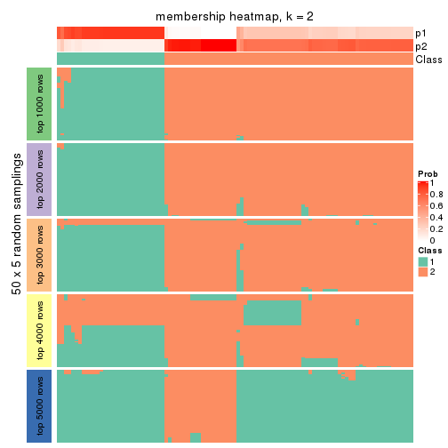
membership_heatmap(res, k = 3)
membership_heatmap(res, k = 4)
membership_heatmap(res, k = 5)
membership_heatmap(res, k = 6)
As soon as we have had the classes for columns, we can look for signatures which are significantly different between classes which can be candidate marks for certain classes. Following are the heatmaps for signatures.
Signature heatmaps where rows are scaled:
get_signatures(res, k = 2)
get_signatures(res, k = 3)
get_signatures(res, k = 4)
get_signatures(res, k = 5)
get_signatures(res, k = 6)
Signature heatmaps where rows are not scaled:
get_signatures(res, k = 2, scale_rows = FALSE)
get_signatures(res, k = 3, scale_rows = FALSE)
get_signatures(res, k = 4, scale_rows = FALSE)
get_signatures(res, k = 5, scale_rows = FALSE)

get_signatures(res, k = 6, scale_rows = FALSE)
Compare the overlap of signatures from different k:
compare_signatures(res)
get_signature() returns a data frame invisibly. TO get the list of signatures, the function
call should be assigned to a variable explicitly. In following code, if plot argument is set
to FALSE, no heatmap is plotted while only the differential analysis is performed.
# code only for demonstration
tb = get_signature(res, k = ..., plot = FALSE)
An example of the output of tb is:
#> which_row fdr mean_1 mean_2 scaled_mean_1 scaled_mean_2 km
#> 1 38 0.042760348 8.373488 9.131774 -0.5533452 0.5164555 1
#> 2 40 0.018707592 7.106213 8.469186 -0.6173731 0.5762149 1
#> 3 55 0.019134737 10.221463 11.207825 -0.6159697 0.5749050 1
#> 4 59 0.006059896 5.921854 7.869574 -0.6899429 0.6439467 1
#> 5 60 0.018055526 8.928898 10.211722 -0.6204761 0.5791110 1
#> 6 98 0.009384629 15.714769 14.887706 0.6635654 -0.6193277 2
...
The columns in tb are:
which_row: row indices corresponding to the input matrix.fdr: FDR for the differential test. mean_x: The mean value in group x.scaled_mean_x: The mean value in group x after rows are scaled.km: Row groups if k-means clustering is applied to rows.UMAP plot which shows how samples are separated.
dimension_reduction(res, k = 2, method = "UMAP")
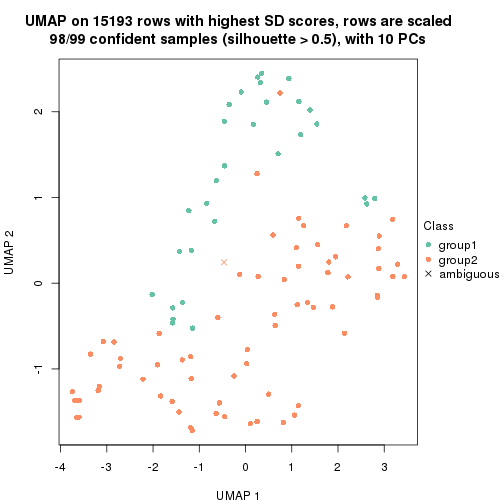
dimension_reduction(res, k = 3, method = "UMAP")
dimension_reduction(res, k = 4, method = "UMAP")
dimension_reduction(res, k = 5, method = "UMAP")
dimension_reduction(res, k = 6, method = "UMAP")
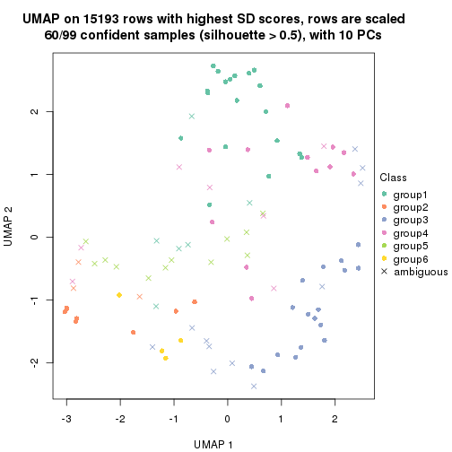
Following heatmap shows how subgroups are split when increasing k:
collect_classes(res)
If matrix rows can be associated to genes, consider to use GO_Enrichment(res,
...) to perform function enrichment for the signature genes.
The object with results only for a single top-value method and a single partition method can be extracted as:
res = res_list["SD", "NMF"]
# you can also extract it by
# res = res_list["SD:NMF"]
A summary of res and all the functions that can be applied to it:
res
#> A 'ConsensusPartition' object with k = 2, 3, 4, 5, 6.
#> On a matrix with 15193 rows and 99 columns.
#> Top rows (1000, 2000, 3000, 4000, 5000) are extracted by 'SD' method.
#> Subgroups are detected by 'NMF' method.
#> Performed in total 1250 partitions by row resampling.
#> Best k for subgroups seems to be 3.
#>
#> Following methods can be applied to this 'ConsensusPartition' object:
#> [1] "cola_report" "collect_classes" "collect_plots"
#> [4] "collect_stats" "colnames" "compare_signatures"
#> [7] "consensus_heatmap" "dimension_reduction" "functional_enrichment"
#> [10] "get_anno_col" "get_anno" "get_classes"
#> [13] "get_consensus" "get_matrix" "get_membership"
#> [16] "get_param" "get_signatures" "get_stats"
#> [19] "is_best_k" "is_stable_k" "membership_heatmap"
#> [22] "ncol" "nrow" "plot_ecdf"
#> [25] "rownames" "select_partition_number" "show"
#> [28] "suggest_best_k" "test_to_known_factors"
collect_plots() function collects all the plots made from res for all k (number of partitions)
into one single page to provide an easy and fast comparison between different k.
collect_plots(res)
The plots are:
k and the heatmap of
predicted classes for each k.k.k.k.All the plots in panels can be made by individual functions and they are plotted later in this section.
select_partition_number() produces several plots showing different
statistics for choosing “optimized” k. There are following statistics:
k;k, the area increased is defined as \(A_k - A_{k-1}\).The detailed explanations of these statistics can be found in the cola vignette.
Generally speaking, lower PAC score, higher mean silhouette score or higher
concordance corresponds to better partition. Rand index and Jaccard index
measure how similar the current partition is compared to partition with k-1.
If they are too similar, we won't accept k is better than k-1.
select_partition_number(res)
The numeric values for all these statistics can be obtained by get_stats().
get_stats(res)
#> k 1-PAC mean_silhouette concordance area_increased Rand Jaccard
#> 2 2 0.882 0.931 0.968 0.4308 0.582 0.582
#> 3 3 0.765 0.853 0.933 0.5091 0.633 0.438
#> 4 4 0.700 0.752 0.853 0.1293 0.827 0.562
#> 5 5 0.804 0.755 0.873 0.0757 0.919 0.703
#> 6 6 0.741 0.639 0.779 0.0393 0.950 0.772
suggest_best_k() suggests the best \(k\) based on these statistics. The rules are as follows:
NA.suggest_best_k(res)
#> [1] 3
Following shows the table of the partitions (You need to click the show/hide
code output link to see it). The membership matrix (columns with name p*)
is inferred by
clue::cl_consensus()
function with the SE method. Basically the value in the membership matrix
represents the probability to belong to a certain group. The finall class
label for an item is determined with the group with highest probability it
belongs to.
In get_classes() function, the entropy is calculated from the membership
matrix and the silhouette score is calculated from the consensus matrix.
cbind(get_classes(res, k = 2), get_membership(res, k = 2))
#> class entropy silhouette p1 p2
#> SRR797072 1 0.0000 0.964 1.000 0.000
#> SRR797073 1 0.0000 0.964 1.000 0.000
#> SRR797074 1 0.0000 0.964 1.000 0.000
#> SRR797075 1 0.7299 0.766 0.796 0.204
#> SRR797076 1 0.0376 0.962 0.996 0.004
#> SRR797077 1 0.2043 0.945 0.968 0.032
#> SRR797078 1 0.0000 0.964 1.000 0.000
#> SRR797079 1 0.0000 0.964 1.000 0.000
#> SRR797080 1 0.0000 0.964 1.000 0.000
#> SRR797081 1 0.0000 0.964 1.000 0.000
#> SRR797082 1 0.0000 0.964 1.000 0.000
#> SRR797083 1 0.0000 0.964 1.000 0.000
#> SRR797084 2 0.0000 0.972 0.000 1.000
#> SRR797085 2 0.0000 0.972 0.000 1.000
#> SRR797086 1 0.0672 0.960 0.992 0.008
#> SRR797087 1 0.0000 0.964 1.000 0.000
#> SRR797088 1 0.0000 0.964 1.000 0.000
#> SRR797089 1 0.0376 0.962 0.996 0.004
#> SRR797090 1 0.0000 0.964 1.000 0.000
#> SRR797091 1 0.0000 0.964 1.000 0.000
#> SRR797092 1 0.0000 0.964 1.000 0.000
#> SRR797093 1 0.0000 0.964 1.000 0.000
#> SRR797094 1 0.0000 0.964 1.000 0.000
#> SRR797095 1 0.0000 0.964 1.000 0.000
#> SRR797096 1 0.0000 0.964 1.000 0.000
#> SRR797097 1 0.0000 0.964 1.000 0.000
#> SRR797098 2 0.9393 0.468 0.356 0.644
#> SRR797099 1 0.0000 0.964 1.000 0.000
#> SRR797100 1 0.0000 0.964 1.000 0.000
#> SRR797101 1 0.0000 0.964 1.000 0.000
#> SRR797102 2 0.0000 0.972 0.000 1.000
#> SRR797103 2 0.0000 0.972 0.000 1.000
#> SRR797104 1 0.0000 0.964 1.000 0.000
#> SRR797105 1 0.0000 0.964 1.000 0.000
#> SRR797106 1 0.7815 0.692 0.768 0.232
#> SRR797107 1 0.0000 0.964 1.000 0.000
#> SRR797108 1 0.0000 0.964 1.000 0.000
#> SRR797109 1 0.0000 0.964 1.000 0.000
#> SRR797110 1 0.2603 0.938 0.956 0.044
#> SRR797111 1 0.4690 0.889 0.900 0.100
#> SRR797112 1 0.0000 0.964 1.000 0.000
#> SRR797113 1 0.0000 0.964 1.000 0.000
#> SRR797114 1 0.0000 0.964 1.000 0.000
#> SRR797115 1 0.0000 0.964 1.000 0.000
#> SRR797116 1 0.0000 0.964 1.000 0.000
#> SRR797117 1 0.4431 0.885 0.908 0.092
#> SRR797118 1 0.0000 0.964 1.000 0.000
#> SRR797119 1 0.0000 0.964 1.000 0.000
#> SRR797120 1 0.0938 0.958 0.988 0.012
#> SRR797121 1 0.0000 0.964 1.000 0.000
#> SRR797122 1 0.2778 0.935 0.952 0.048
#> SRR797123 1 0.0000 0.964 1.000 0.000
#> SRR797124 1 0.0672 0.960 0.992 0.008
#> SRR797125 1 0.3584 0.919 0.932 0.068
#> SRR797126 1 0.3431 0.922 0.936 0.064
#> SRR797127 1 0.4562 0.893 0.904 0.096
#> SRR797128 1 0.0000 0.964 1.000 0.000
#> SRR797129 1 0.0000 0.964 1.000 0.000
#> SRR797130 1 0.4939 0.881 0.892 0.108
#> SRR797131 1 0.0000 0.964 1.000 0.000
#> SRR797132 1 0.0000 0.964 1.000 0.000
#> SRR797133 1 0.2603 0.937 0.956 0.044
#> SRR797134 1 0.4690 0.889 0.900 0.100
#> SRR797135 1 0.0000 0.964 1.000 0.000
#> SRR797136 1 0.0000 0.964 1.000 0.000
#> SRR797137 1 0.0000 0.964 1.000 0.000
#> SRR797138 2 0.0000 0.972 0.000 1.000
#> SRR797139 2 0.5842 0.842 0.140 0.860
#> SRR797140 1 0.0000 0.964 1.000 0.000
#> SRR797141 1 0.0000 0.964 1.000 0.000
#> SRR797142 1 0.0000 0.964 1.000 0.000
#> SRR797143 2 0.0000 0.972 0.000 1.000
#> SRR797144 2 0.0000 0.972 0.000 1.000
#> SRR797145 2 0.0672 0.967 0.008 0.992
#> SRR797146 2 0.0000 0.972 0.000 1.000
#> SRR797147 1 0.8081 0.698 0.752 0.248
#> SRR797148 1 0.0672 0.960 0.992 0.008
#> SRR797149 2 0.0000 0.972 0.000 1.000
#> SRR797150 2 0.0000 0.972 0.000 1.000
#> SRR797151 2 0.0000 0.972 0.000 1.000
#> SRR797152 2 0.2236 0.944 0.036 0.964
#> SRR797153 2 0.2603 0.937 0.044 0.956
#> SRR797154 1 0.9686 0.392 0.604 0.396
#> SRR797155 2 0.0000 0.972 0.000 1.000
#> SRR797156 1 0.9922 0.245 0.552 0.448
#> SRR797157 2 0.0000 0.972 0.000 1.000
#> SRR797158 2 0.0000 0.972 0.000 1.000
#> SRR797159 2 0.0000 0.972 0.000 1.000
#> SRR797160 1 0.0000 0.964 1.000 0.000
#> SRR797161 2 0.0000 0.972 0.000 1.000
#> SRR797162 2 0.0000 0.972 0.000 1.000
#> SRR797163 2 0.0000 0.972 0.000 1.000
#> SRR797164 1 0.2423 0.942 0.960 0.040
#> SRR797165 2 0.1414 0.958 0.020 0.980
#> SRR797166 2 0.6148 0.828 0.152 0.848
#> SRR797167 2 0.0000 0.972 0.000 1.000
#> SRR797168 2 0.0376 0.970 0.004 0.996
#> SRR797169 2 0.0000 0.972 0.000 1.000
#> SRR797170 2 0.0000 0.972 0.000 1.000
cbind(get_classes(res, k = 3), get_membership(res, k = 3))
#> class entropy silhouette p1 p2 p3
#> SRR797072 1 0.0000 0.904 1.000 0.000 0.000
#> SRR797073 3 0.0424 0.932 0.008 0.000 0.992
#> SRR797074 1 0.0000 0.904 1.000 0.000 0.000
#> SRR797075 1 0.0661 0.898 0.988 0.008 0.004
#> SRR797076 1 0.0237 0.902 0.996 0.004 0.000
#> SRR797077 1 0.0000 0.904 1.000 0.000 0.000
#> SRR797078 3 0.0237 0.934 0.004 0.000 0.996
#> SRR797079 3 0.1411 0.917 0.036 0.000 0.964
#> SRR797080 3 0.0237 0.934 0.004 0.000 0.996
#> SRR797081 3 0.0237 0.934 0.004 0.000 0.996
#> SRR797082 1 0.0000 0.904 1.000 0.000 0.000
#> SRR797083 1 0.2537 0.853 0.920 0.000 0.080
#> SRR797084 2 0.0000 0.957 0.000 1.000 0.000
#> SRR797085 2 0.2261 0.918 0.068 0.932 0.000
#> SRR797086 1 0.0000 0.904 1.000 0.000 0.000
#> SRR797087 3 0.0000 0.932 0.000 0.000 1.000
#> SRR797088 3 0.0237 0.934 0.004 0.000 0.996
#> SRR797089 3 0.0000 0.932 0.000 0.000 1.000
#> SRR797090 1 0.0000 0.904 1.000 0.000 0.000
#> SRR797091 1 0.1163 0.890 0.972 0.000 0.028
#> SRR797092 3 0.0237 0.934 0.004 0.000 0.996
#> SRR797093 3 0.4062 0.799 0.164 0.000 0.836
#> SRR797094 3 0.0237 0.934 0.004 0.000 0.996
#> SRR797095 3 0.0000 0.932 0.000 0.000 1.000
#> SRR797096 1 0.3619 0.801 0.864 0.000 0.136
#> SRR797097 3 0.0237 0.934 0.004 0.000 0.996
#> SRR797098 3 0.0237 0.930 0.000 0.004 0.996
#> SRR797099 3 0.5497 0.598 0.292 0.000 0.708
#> SRR797100 3 0.0424 0.932 0.008 0.000 0.992
#> SRR797101 3 0.0000 0.932 0.000 0.000 1.000
#> SRR797102 1 0.6314 0.342 0.604 0.392 0.004
#> SRR797103 2 0.3349 0.879 0.108 0.888 0.004
#> SRR797104 3 0.0237 0.934 0.004 0.000 0.996
#> SRR797105 3 0.0237 0.934 0.004 0.000 0.996
#> SRR797106 1 0.3356 0.862 0.908 0.056 0.036
#> SRR797107 1 0.0000 0.904 1.000 0.000 0.000
#> SRR797108 1 0.0000 0.904 1.000 0.000 0.000
#> SRR797109 3 0.3551 0.832 0.132 0.000 0.868
#> SRR797110 1 0.0000 0.904 1.000 0.000 0.000
#> SRR797111 1 0.0000 0.904 1.000 0.000 0.000
#> SRR797112 1 0.0000 0.904 1.000 0.000 0.000
#> SRR797113 1 0.5138 0.652 0.748 0.000 0.252
#> SRR797114 1 0.0000 0.904 1.000 0.000 0.000
#> SRR797115 1 0.4346 0.754 0.816 0.000 0.184
#> SRR797116 3 0.5431 0.615 0.284 0.000 0.716
#> SRR797117 1 0.6978 0.468 0.632 0.032 0.336
#> SRR797118 1 0.0000 0.904 1.000 0.000 0.000
#> SRR797119 3 0.1163 0.922 0.028 0.000 0.972
#> SRR797120 1 0.0000 0.904 1.000 0.000 0.000
#> SRR797121 1 0.1643 0.879 0.956 0.000 0.044
#> SRR797122 1 0.0000 0.904 1.000 0.000 0.000
#> SRR797123 3 0.1860 0.905 0.052 0.000 0.948
#> SRR797124 3 0.7671 0.336 0.052 0.380 0.568
#> SRR797125 1 0.0000 0.904 1.000 0.000 0.000
#> SRR797126 1 0.0000 0.904 1.000 0.000 0.000
#> SRR797127 1 0.0000 0.904 1.000 0.000 0.000
#> SRR797128 3 0.0237 0.934 0.004 0.000 0.996
#> SRR797129 3 0.0237 0.934 0.004 0.000 0.996
#> SRR797130 1 0.0000 0.904 1.000 0.000 0.000
#> SRR797131 3 0.0237 0.934 0.004 0.000 0.996
#> SRR797132 3 0.0237 0.934 0.004 0.000 0.996
#> SRR797133 1 0.0000 0.904 1.000 0.000 0.000
#> SRR797134 1 0.0000 0.904 1.000 0.000 0.000
#> SRR797135 1 0.0000 0.904 1.000 0.000 0.000
#> SRR797136 1 0.0000 0.904 1.000 0.000 0.000
#> SRR797137 1 0.4399 0.747 0.812 0.000 0.188
#> SRR797138 2 0.0237 0.957 0.000 0.996 0.004
#> SRR797139 3 0.0000 0.932 0.000 0.000 1.000
#> SRR797140 3 0.0237 0.934 0.004 0.000 0.996
#> SRR797141 3 0.0237 0.934 0.004 0.000 0.996
#> SRR797142 3 0.0237 0.934 0.004 0.000 0.996
#> SRR797143 2 0.0000 0.957 0.000 1.000 0.000
#> SRR797144 2 0.0000 0.957 0.000 1.000 0.000
#> SRR797145 3 0.6008 0.406 0.000 0.372 0.628
#> SRR797146 2 0.0000 0.957 0.000 1.000 0.000
#> SRR797147 1 0.0000 0.904 1.000 0.000 0.000
#> SRR797148 3 0.3091 0.880 0.016 0.072 0.912
#> SRR797149 2 0.0000 0.957 0.000 1.000 0.000
#> SRR797150 2 0.0592 0.954 0.012 0.988 0.000
#> SRR797151 2 0.0892 0.950 0.020 0.980 0.000
#> SRR797152 2 0.4172 0.802 0.156 0.840 0.004
#> SRR797153 1 0.1765 0.880 0.956 0.040 0.004
#> SRR797154 1 0.6513 0.119 0.520 0.476 0.004
#> SRR797155 2 0.0892 0.947 0.000 0.980 0.020
#> SRR797156 1 0.5650 0.561 0.688 0.312 0.000
#> SRR797157 2 0.0237 0.957 0.000 0.996 0.004
#> SRR797158 1 0.4504 0.725 0.804 0.196 0.000
#> SRR797159 2 0.0237 0.957 0.000 0.996 0.004
#> SRR797160 3 0.1753 0.908 0.048 0.000 0.952
#> SRR797161 1 0.4883 0.705 0.788 0.208 0.004
#> SRR797162 2 0.2772 0.907 0.080 0.916 0.004
#> SRR797163 2 0.0237 0.957 0.000 0.996 0.004
#> SRR797164 1 0.3695 0.818 0.880 0.108 0.012
#> SRR797165 3 0.4796 0.701 0.000 0.220 0.780
#> SRR797166 3 0.1163 0.916 0.000 0.028 0.972
#> SRR797167 2 0.0000 0.957 0.000 1.000 0.000
#> SRR797168 1 0.6476 0.177 0.548 0.448 0.004
#> SRR797169 2 0.5115 0.712 0.228 0.768 0.004
#> SRR797170 2 0.0000 0.957 0.000 1.000 0.000
cbind(get_classes(res, k = 4), get_membership(res, k = 4))
#> class entropy silhouette p1 p2 p3 p4
#> SRR797072 1 0.0000 0.872 1.000 0.000 0.000 0.000
#> SRR797073 3 0.0469 0.953 0.000 0.000 0.988 0.012
#> SRR797074 1 0.0000 0.872 1.000 0.000 0.000 0.000
#> SRR797075 1 0.0817 0.864 0.976 0.000 0.000 0.024
#> SRR797076 4 0.4753 0.629 0.084 0.128 0.000 0.788
#> SRR797077 1 0.0000 0.872 1.000 0.000 0.000 0.000
#> SRR797078 3 0.0000 0.957 0.000 0.000 1.000 0.000
#> SRR797079 3 0.3569 0.723 0.000 0.000 0.804 0.196
#> SRR797080 3 0.0469 0.953 0.000 0.000 0.988 0.012
#> SRR797081 3 0.0000 0.957 0.000 0.000 1.000 0.000
#> SRR797082 1 0.0000 0.872 1.000 0.000 0.000 0.000
#> SRR797083 1 0.3278 0.755 0.864 0.000 0.116 0.020
#> SRR797084 2 0.4697 0.468 0.000 0.644 0.000 0.356
#> SRR797085 2 0.0921 0.776 0.000 0.972 0.000 0.028
#> SRR797086 1 0.0707 0.863 0.980 0.000 0.000 0.020
#> SRR797087 3 0.0000 0.957 0.000 0.000 1.000 0.000
#> SRR797088 3 0.0707 0.949 0.000 0.000 0.980 0.020
#> SRR797089 3 0.0000 0.957 0.000 0.000 1.000 0.000
#> SRR797090 1 0.0000 0.872 1.000 0.000 0.000 0.000
#> SRR797091 1 0.5000 0.652 0.772 0.000 0.100 0.128
#> SRR797092 3 0.0000 0.957 0.000 0.000 1.000 0.000
#> SRR797093 3 0.3626 0.754 0.004 0.000 0.812 0.184
#> SRR797094 3 0.0000 0.957 0.000 0.000 1.000 0.000
#> SRR797095 3 0.0000 0.957 0.000 0.000 1.000 0.000
#> SRR797096 4 0.4018 0.707 0.224 0.000 0.004 0.772
#> SRR797097 3 0.0000 0.957 0.000 0.000 1.000 0.000
#> SRR797098 3 0.1022 0.935 0.000 0.000 0.968 0.032
#> SRR797099 4 0.6252 0.338 0.056 0.000 0.432 0.512
#> SRR797100 3 0.0336 0.955 0.000 0.000 0.992 0.008
#> SRR797101 3 0.0000 0.957 0.000 0.000 1.000 0.000
#> SRR797102 1 0.5042 0.724 0.768 0.096 0.000 0.136
#> SRR797103 2 0.6494 0.589 0.204 0.660 0.008 0.128
#> SRR797104 3 0.0188 0.956 0.000 0.000 0.996 0.004
#> SRR797105 3 0.0188 0.956 0.000 0.000 0.996 0.004
#> SRR797106 4 0.2999 0.639 0.004 0.132 0.000 0.864
#> SRR797107 1 0.4888 0.134 0.588 0.000 0.000 0.412
#> SRR797108 1 0.0000 0.872 1.000 0.000 0.000 0.000
#> SRR797109 3 0.2921 0.826 0.000 0.000 0.860 0.140
#> SRR797110 1 0.0000 0.872 1.000 0.000 0.000 0.000
#> SRR797111 1 0.0336 0.869 0.992 0.000 0.000 0.008
#> SRR797112 4 0.4907 0.378 0.420 0.000 0.000 0.580
#> SRR797113 4 0.4199 0.736 0.164 0.000 0.032 0.804
#> SRR797114 4 0.3688 0.718 0.208 0.000 0.000 0.792
#> SRR797115 4 0.4534 0.737 0.132 0.000 0.068 0.800
#> SRR797116 4 0.4245 0.689 0.020 0.000 0.196 0.784
#> SRR797117 4 0.2999 0.639 0.004 0.132 0.000 0.864
#> SRR797118 1 0.4877 0.160 0.592 0.000 0.000 0.408
#> SRR797119 3 0.1716 0.912 0.000 0.000 0.936 0.064
#> SRR797120 1 0.2589 0.803 0.884 0.000 0.000 0.116
#> SRR797121 1 0.4313 0.557 0.736 0.000 0.004 0.260
#> SRR797122 1 0.0000 0.872 1.000 0.000 0.000 0.000
#> SRR797123 4 0.4907 0.365 0.000 0.000 0.420 0.580
#> SRR797124 4 0.5132 0.656 0.000 0.068 0.184 0.748
#> SRR797125 1 0.0000 0.872 1.000 0.000 0.000 0.000
#> SRR797126 1 0.2081 0.818 0.916 0.000 0.000 0.084
#> SRR797127 1 0.0188 0.871 0.996 0.000 0.000 0.004
#> SRR797128 3 0.0000 0.957 0.000 0.000 1.000 0.000
#> SRR797129 3 0.0000 0.957 0.000 0.000 1.000 0.000
#> SRR797130 1 0.0657 0.867 0.984 0.004 0.000 0.012
#> SRR797131 3 0.0336 0.955 0.000 0.000 0.992 0.008
#> SRR797132 3 0.0000 0.957 0.000 0.000 1.000 0.000
#> SRR797133 1 0.3074 0.744 0.848 0.000 0.000 0.152
#> SRR797134 1 0.0000 0.872 1.000 0.000 0.000 0.000
#> SRR797135 1 0.0000 0.872 1.000 0.000 0.000 0.000
#> SRR797136 1 0.0000 0.872 1.000 0.000 0.000 0.000
#> SRR797137 4 0.3810 0.729 0.188 0.000 0.008 0.804
#> SRR797138 2 0.2944 0.751 0.004 0.868 0.000 0.128
#> SRR797139 3 0.1576 0.918 0.000 0.004 0.948 0.048
#> SRR797140 3 0.0469 0.953 0.000 0.000 0.988 0.012
#> SRR797141 3 0.0000 0.957 0.000 0.000 1.000 0.000
#> SRR797142 3 0.0000 0.957 0.000 0.000 1.000 0.000
#> SRR797143 2 0.0921 0.774 0.000 0.972 0.000 0.028
#> SRR797144 2 0.4331 0.579 0.000 0.712 0.000 0.288
#> SRR797145 2 0.5126 0.187 0.000 0.552 0.444 0.004
#> SRR797146 2 0.1792 0.765 0.000 0.932 0.000 0.068
#> SRR797147 1 0.0188 0.871 0.996 0.000 0.000 0.004
#> SRR797148 4 0.5531 0.579 0.000 0.128 0.140 0.732
#> SRR797149 2 0.1867 0.764 0.000 0.928 0.000 0.072
#> SRR797150 2 0.0927 0.777 0.008 0.976 0.000 0.016
#> SRR797151 2 0.2089 0.768 0.020 0.932 0.000 0.048
#> SRR797152 2 0.6602 0.142 0.436 0.484 0.000 0.080
#> SRR797153 4 0.6477 0.429 0.368 0.080 0.000 0.552
#> SRR797154 2 0.6850 0.276 0.376 0.516 0.000 0.108
#> SRR797155 2 0.3161 0.749 0.000 0.864 0.012 0.124
#> SRR797156 4 0.4748 0.655 0.268 0.016 0.000 0.716
#> SRR797157 2 0.2589 0.755 0.000 0.884 0.000 0.116
#> SRR797158 1 0.1940 0.832 0.924 0.076 0.000 0.000
#> SRR797159 2 0.1637 0.769 0.000 0.940 0.000 0.060
#> SRR797160 4 0.4051 0.678 0.004 0.004 0.208 0.784
#> SRR797161 1 0.3082 0.801 0.884 0.032 0.000 0.084
#> SRR797162 1 0.7278 -0.060 0.452 0.416 0.004 0.128
#> SRR797163 2 0.2944 0.750 0.000 0.868 0.004 0.128
#> SRR797164 1 0.4176 0.757 0.832 0.044 0.008 0.116
#> SRR797165 3 0.3778 0.812 0.000 0.052 0.848 0.100
#> SRR797166 3 0.4037 0.791 0.000 0.056 0.832 0.112
#> SRR797167 2 0.1302 0.771 0.000 0.956 0.000 0.044
#> SRR797168 2 0.7332 0.251 0.156 0.448 0.000 0.396
#> SRR797169 1 0.5406 0.666 0.752 0.116 0.004 0.128
#> SRR797170 2 0.1792 0.765 0.000 0.932 0.000 0.068
cbind(get_classes(res, k = 5), get_membership(res, k = 5))
#> class entropy silhouette p1 p2 p3 p4 p5
#> SRR797072 1 0.0000 0.9230 1.000 0.000 0.000 0.000 0.000
#> SRR797073 3 0.0290 0.9522 0.008 0.000 0.992 0.000 0.000
#> SRR797074 1 0.0000 0.9230 1.000 0.000 0.000 0.000 0.000
#> SRR797075 1 0.0162 0.9226 0.996 0.000 0.000 0.000 0.004
#> SRR797076 4 0.4955 0.5638 0.072 0.248 0.000 0.680 0.000
#> SRR797077 1 0.1341 0.8989 0.944 0.000 0.000 0.000 0.056
#> SRR797078 3 0.0693 0.9488 0.012 0.000 0.980 0.000 0.008
#> SRR797079 3 0.5432 0.4375 0.012 0.000 0.620 0.312 0.056
#> SRR797080 3 0.0290 0.9522 0.000 0.000 0.992 0.000 0.008
#> SRR797081 3 0.2426 0.8960 0.064 0.000 0.900 0.000 0.036
#> SRR797082 1 0.0324 0.9221 0.992 0.000 0.000 0.004 0.004
#> SRR797083 1 0.0968 0.9155 0.972 0.000 0.012 0.004 0.012
#> SRR797084 2 0.3752 0.4535 0.000 0.708 0.000 0.292 0.000
#> SRR797085 2 0.3088 0.7623 0.004 0.828 0.000 0.004 0.164
#> SRR797086 1 0.2575 0.8497 0.884 0.004 0.000 0.012 0.100
#> SRR797087 3 0.0000 0.9534 0.000 0.000 1.000 0.000 0.000
#> SRR797088 3 0.0290 0.9522 0.000 0.000 0.992 0.000 0.008
#> SRR797089 3 0.0290 0.9522 0.000 0.000 0.992 0.000 0.008
#> SRR797090 1 0.0451 0.9208 0.988 0.000 0.000 0.004 0.008
#> SRR797091 1 0.1764 0.8962 0.940 0.000 0.036 0.012 0.012
#> SRR797092 3 0.0000 0.9534 0.000 0.000 1.000 0.000 0.000
#> SRR797093 3 0.3210 0.8066 0.008 0.000 0.832 0.152 0.008
#> SRR797094 3 0.0162 0.9532 0.000 0.000 0.996 0.000 0.004
#> SRR797095 3 0.0000 0.9534 0.000 0.000 1.000 0.000 0.000
#> SRR797096 4 0.1591 0.6999 0.004 0.000 0.004 0.940 0.052
#> SRR797097 3 0.0000 0.9534 0.000 0.000 1.000 0.000 0.000
#> SRR797098 3 0.0324 0.9519 0.000 0.004 0.992 0.000 0.004
#> SRR797099 4 0.4192 0.4333 0.000 0.000 0.032 0.736 0.232
#> SRR797100 3 0.0000 0.9534 0.000 0.000 1.000 0.000 0.000
#> SRR797101 3 0.0162 0.9531 0.000 0.000 0.996 0.000 0.004
#> SRR797102 5 0.3223 0.7042 0.016 0.016 0.000 0.116 0.852
#> SRR797103 2 0.6697 0.3013 0.244 0.404 0.000 0.000 0.352
#> SRR797104 3 0.0451 0.9516 0.004 0.000 0.988 0.000 0.008
#> SRR797105 3 0.0000 0.9534 0.000 0.000 1.000 0.000 0.000
#> SRR797106 4 0.3636 0.5730 0.000 0.272 0.000 0.728 0.000
#> SRR797107 4 0.5619 0.3183 0.208 0.000 0.000 0.636 0.156
#> SRR797108 1 0.2473 0.8637 0.896 0.000 0.000 0.032 0.072
#> SRR797109 3 0.2570 0.8637 0.004 0.000 0.880 0.108 0.008
#> SRR797110 1 0.0324 0.9221 0.992 0.000 0.000 0.004 0.004
#> SRR797111 5 0.5644 0.5942 0.100 0.000 0.000 0.316 0.584
#> SRR797112 4 0.2813 0.6372 0.024 0.000 0.000 0.868 0.108
#> SRR797113 4 0.0486 0.7284 0.004 0.000 0.004 0.988 0.004
#> SRR797114 4 0.0510 0.7281 0.016 0.000 0.000 0.984 0.000
#> SRR797115 4 0.0486 0.7284 0.004 0.000 0.004 0.988 0.004
#> SRR797116 4 0.0963 0.7274 0.000 0.000 0.036 0.964 0.000
#> SRR797117 4 0.3452 0.6096 0.000 0.244 0.000 0.756 0.000
#> SRR797118 5 0.4622 0.4923 0.012 0.000 0.000 0.440 0.548
#> SRR797119 3 0.1557 0.9187 0.000 0.000 0.940 0.052 0.008
#> SRR797120 5 0.4208 0.6770 0.020 0.000 0.004 0.248 0.728
#> SRR797121 1 0.4470 0.4842 0.656 0.000 0.008 0.328 0.008
#> SRR797122 1 0.0000 0.9230 1.000 0.000 0.000 0.000 0.000
#> SRR797123 4 0.3895 0.4573 0.000 0.000 0.320 0.680 0.000
#> SRR797124 4 0.2922 0.6967 0.000 0.016 0.024 0.880 0.080
#> SRR797125 1 0.4352 0.5935 0.720 0.000 0.000 0.036 0.244
#> SRR797126 5 0.4779 0.5636 0.024 0.000 0.000 0.388 0.588
#> SRR797127 1 0.0162 0.9218 0.996 0.000 0.000 0.000 0.004
#> SRR797128 3 0.0162 0.9532 0.000 0.000 0.996 0.000 0.004
#> SRR797129 3 0.1106 0.9420 0.012 0.000 0.964 0.000 0.024
#> SRR797130 1 0.0510 0.9170 0.984 0.000 0.000 0.000 0.016
#> SRR797131 3 0.1538 0.9335 0.008 0.000 0.948 0.008 0.036
#> SRR797132 3 0.0000 0.9534 0.000 0.000 1.000 0.000 0.000
#> SRR797133 5 0.4675 0.5748 0.020 0.000 0.000 0.380 0.600
#> SRR797134 1 0.0324 0.9221 0.992 0.000 0.000 0.004 0.004
#> SRR797135 1 0.0000 0.9230 1.000 0.000 0.000 0.000 0.000
#> SRR797136 1 0.0000 0.9230 1.000 0.000 0.000 0.000 0.000
#> SRR797137 4 0.0404 0.7281 0.012 0.000 0.000 0.988 0.000
#> SRR797138 5 0.3242 0.4314 0.000 0.216 0.000 0.000 0.784
#> SRR797139 3 0.0898 0.9426 0.000 0.008 0.972 0.000 0.020
#> SRR797140 3 0.0290 0.9522 0.000 0.000 0.992 0.000 0.008
#> SRR797141 3 0.0000 0.9534 0.000 0.000 1.000 0.000 0.000
#> SRR797142 3 0.1485 0.9335 0.020 0.000 0.948 0.000 0.032
#> SRR797143 2 0.0510 0.8081 0.000 0.984 0.000 0.000 0.016
#> SRR797144 2 0.1270 0.7885 0.000 0.948 0.000 0.052 0.000
#> SRR797145 2 0.4251 0.3851 0.000 0.624 0.372 0.000 0.004
#> SRR797146 2 0.0290 0.8052 0.000 0.992 0.000 0.008 0.000
#> SRR797147 1 0.0000 0.9230 1.000 0.000 0.000 0.000 0.000
#> SRR797148 4 0.5517 0.4367 0.000 0.316 0.068 0.608 0.008
#> SRR797149 2 0.0404 0.8047 0.000 0.988 0.000 0.012 0.000
#> SRR797150 2 0.2124 0.7999 0.028 0.916 0.000 0.000 0.056
#> SRR797151 2 0.2463 0.7589 0.004 0.888 0.000 0.008 0.100
#> SRR797152 5 0.2253 0.6816 0.016 0.036 0.000 0.028 0.920
#> SRR797153 5 0.4541 0.5922 0.008 0.004 0.000 0.380 0.608
#> SRR797154 5 0.5406 0.5966 0.008 0.048 0.000 0.368 0.576
#> SRR797155 2 0.4126 0.5414 0.000 0.620 0.000 0.000 0.380
#> SRR797156 4 0.4390 -0.2304 0.004 0.000 0.000 0.568 0.428
#> SRR797157 2 0.3274 0.7161 0.000 0.780 0.000 0.000 0.220
#> SRR797158 1 0.4586 0.4676 0.644 0.336 0.000 0.004 0.016
#> SRR797159 2 0.2471 0.7778 0.000 0.864 0.000 0.000 0.136
#> SRR797160 4 0.1121 0.7252 0.000 0.000 0.044 0.956 0.000
#> SRR797161 5 0.1956 0.6644 0.076 0.000 0.000 0.008 0.916
#> SRR797162 5 0.0992 0.6603 0.008 0.024 0.000 0.000 0.968
#> SRR797163 5 0.4114 -0.0338 0.000 0.376 0.000 0.000 0.624
#> SRR797164 5 0.1331 0.6866 0.000 0.000 0.008 0.040 0.952
#> SRR797165 3 0.2773 0.8556 0.000 0.020 0.868 0.000 0.112
#> SRR797166 3 0.2723 0.8506 0.000 0.012 0.864 0.000 0.124
#> SRR797167 2 0.1670 0.8074 0.000 0.936 0.000 0.012 0.052
#> SRR797168 5 0.3670 0.6999 0.004 0.020 0.000 0.180 0.796
#> SRR797169 1 0.2761 0.8414 0.872 0.024 0.000 0.000 0.104
#> SRR797170 2 0.0451 0.8058 0.000 0.988 0.000 0.008 0.004
cbind(get_classes(res, k = 6), get_membership(res, k = 6))
#> class entropy silhouette p1 p2 p3 p4 p5 p6
#> SRR797072 1 0.0632 0.8953 0.976 0.000 0.000 0.000 0.000 0.024
#> SRR797073 3 0.1588 0.8222 0.000 0.000 0.924 0.004 0.000 0.072
#> SRR797074 1 0.0260 0.8976 0.992 0.000 0.000 0.000 0.000 0.008
#> SRR797075 1 0.0363 0.8978 0.988 0.000 0.000 0.000 0.000 0.012
#> SRR797076 4 0.5808 0.5009 0.076 0.212 0.000 0.620 0.000 0.092
#> SRR797077 1 0.4486 0.4304 0.584 0.000 0.000 0.004 0.028 0.384
#> SRR797078 3 0.3934 0.1169 0.008 0.000 0.616 0.000 0.000 0.376
#> SRR797079 6 0.5784 0.4482 0.008 0.000 0.140 0.264 0.012 0.576
#> SRR797080 3 0.2442 0.8116 0.000 0.000 0.852 0.004 0.000 0.144
#> SRR797081 6 0.4486 0.6572 0.048 0.000 0.292 0.004 0.000 0.656
#> SRR797082 1 0.0000 0.8974 1.000 0.000 0.000 0.000 0.000 0.000
#> SRR797083 1 0.1092 0.8876 0.960 0.000 0.020 0.000 0.000 0.020
#> SRR797084 2 0.5057 0.2330 0.000 0.580 0.000 0.324 0.000 0.096
#> SRR797085 2 0.6320 0.4986 0.080 0.544 0.000 0.008 0.288 0.080
#> SRR797086 1 0.3700 0.8170 0.840 0.008 0.020 0.028 0.072 0.032
#> SRR797087 3 0.0146 0.8354 0.000 0.000 0.996 0.000 0.000 0.004
#> SRR797088 3 0.2647 0.7818 0.000 0.000 0.868 0.044 0.000 0.088
#> SRR797089 3 0.1141 0.8280 0.000 0.000 0.948 0.000 0.000 0.052
#> SRR797090 1 0.0291 0.8964 0.992 0.000 0.000 0.004 0.004 0.000
#> SRR797091 1 0.2371 0.8571 0.900 0.000 0.032 0.016 0.000 0.052
#> SRR797092 3 0.0891 0.8352 0.000 0.000 0.968 0.000 0.008 0.024
#> SRR797093 3 0.3587 0.6842 0.000 0.000 0.792 0.140 0.000 0.068
#> SRR797094 3 0.1349 0.8242 0.000 0.000 0.940 0.000 0.004 0.056
#> SRR797095 3 0.0260 0.8354 0.000 0.000 0.992 0.000 0.000 0.008
#> SRR797096 4 0.1075 0.6916 0.000 0.000 0.000 0.952 0.048 0.000
#> SRR797097 3 0.0405 0.8360 0.000 0.000 0.988 0.000 0.008 0.004
#> SRR797098 3 0.1780 0.8255 0.000 0.000 0.924 0.000 0.028 0.048
#> SRR797099 4 0.4796 0.5253 0.000 0.000 0.024 0.708 0.176 0.092
#> SRR797100 3 0.1285 0.8259 0.000 0.000 0.944 0.000 0.004 0.052
#> SRR797101 3 0.0858 0.8343 0.000 0.000 0.968 0.000 0.004 0.028
#> SRR797102 5 0.2243 0.6450 0.004 0.000 0.000 0.112 0.880 0.004
#> SRR797103 5 0.7302 -0.1166 0.332 0.184 0.000 0.000 0.356 0.128
#> SRR797104 3 0.2196 0.7869 0.004 0.000 0.884 0.000 0.004 0.108
#> SRR797105 3 0.1610 0.8149 0.000 0.000 0.916 0.000 0.000 0.084
#> SRR797106 4 0.4545 0.5373 0.000 0.224 0.000 0.684 0.000 0.092
#> SRR797107 4 0.6167 0.0346 0.292 0.000 0.000 0.468 0.228 0.012
#> SRR797108 1 0.2209 0.8504 0.900 0.000 0.000 0.024 0.072 0.004
#> SRR797109 3 0.3352 0.7373 0.000 0.000 0.816 0.072 0.000 0.112
#> SRR797110 1 0.0692 0.8958 0.976 0.000 0.000 0.000 0.004 0.020
#> SRR797111 5 0.4635 0.5467 0.060 0.000 0.000 0.288 0.648 0.004
#> SRR797112 4 0.3352 0.5131 0.008 0.000 0.000 0.776 0.208 0.008
#> SRR797113 4 0.0508 0.7107 0.000 0.000 0.000 0.984 0.004 0.012
#> SRR797114 4 0.0405 0.7105 0.000 0.000 0.000 0.988 0.004 0.008
#> SRR797115 4 0.0363 0.7071 0.000 0.000 0.000 0.988 0.012 0.000
#> SRR797116 4 0.0551 0.7103 0.000 0.000 0.008 0.984 0.004 0.004
#> SRR797117 4 0.4422 0.5555 0.000 0.212 0.000 0.700 0.000 0.088
#> SRR797118 5 0.3915 0.3936 0.000 0.000 0.000 0.412 0.584 0.004
#> SRR797119 3 0.2134 0.8008 0.000 0.000 0.904 0.052 0.000 0.044
#> SRR797120 5 0.3101 0.6042 0.000 0.000 0.000 0.244 0.756 0.000
#> SRR797121 1 0.3269 0.7932 0.828 0.000 0.016 0.128 0.000 0.028
#> SRR797122 1 0.0363 0.8976 0.988 0.000 0.000 0.000 0.000 0.012
#> SRR797123 4 0.3658 0.4811 0.000 0.000 0.216 0.752 0.000 0.032
#> SRR797124 4 0.3256 0.6721 0.000 0.048 0.004 0.856 0.040 0.052
#> SRR797125 1 0.5558 0.5146 0.616 0.000 0.000 0.020 0.196 0.168
#> SRR797126 6 0.6356 -0.2359 0.020 0.000 0.000 0.216 0.336 0.428
#> SRR797127 1 0.1327 0.8774 0.936 0.000 0.000 0.000 0.000 0.064
#> SRR797128 3 0.1806 0.8083 0.000 0.000 0.908 0.000 0.004 0.088
#> SRR797129 6 0.3912 0.6399 0.012 0.000 0.340 0.000 0.000 0.648
#> SRR797130 1 0.2730 0.7762 0.808 0.000 0.000 0.000 0.000 0.192
#> SRR797131 6 0.4304 0.3417 0.008 0.000 0.448 0.008 0.000 0.536
#> SRR797132 3 0.2048 0.8017 0.000 0.000 0.880 0.000 0.000 0.120
#> SRR797133 5 0.4832 0.4962 0.004 0.000 0.000 0.324 0.608 0.064
#> SRR797134 1 0.0291 0.8975 0.992 0.000 0.000 0.000 0.004 0.004
#> SRR797135 1 0.0260 0.8979 0.992 0.000 0.000 0.000 0.000 0.008
#> SRR797136 1 0.0458 0.8970 0.984 0.000 0.000 0.000 0.000 0.016
#> SRR797137 4 0.0508 0.7107 0.000 0.000 0.000 0.984 0.004 0.012
#> SRR797138 5 0.3409 0.4548 0.000 0.192 0.000 0.000 0.780 0.028
#> SRR797139 3 0.2279 0.8136 0.000 0.004 0.900 0.000 0.048 0.048
#> SRR797140 3 0.2191 0.8013 0.000 0.000 0.876 0.004 0.000 0.120
#> SRR797141 3 0.1610 0.8149 0.000 0.000 0.916 0.000 0.000 0.084
#> SRR797142 6 0.4026 0.6393 0.016 0.000 0.348 0.000 0.000 0.636
#> SRR797143 2 0.2106 0.7507 0.000 0.904 0.000 0.000 0.064 0.032
#> SRR797144 2 0.2699 0.7410 0.008 0.884 0.000 0.068 0.012 0.028
#> SRR797145 3 0.4983 0.1064 0.000 0.456 0.484 0.000 0.004 0.056
#> SRR797146 2 0.0458 0.7535 0.000 0.984 0.000 0.000 0.000 0.016
#> SRR797147 1 0.0363 0.8975 0.988 0.000 0.000 0.000 0.000 0.012
#> SRR797148 4 0.7174 0.2589 0.000 0.272 0.124 0.424 0.000 0.180
#> SRR797149 2 0.1644 0.7352 0.000 0.920 0.000 0.004 0.000 0.076
#> SRR797150 2 0.4389 0.6657 0.160 0.748 0.000 0.000 0.064 0.028
#> SRR797151 2 0.2957 0.7002 0.004 0.844 0.000 0.000 0.120 0.032
#> SRR797152 5 0.2893 0.6316 0.012 0.048 0.000 0.040 0.880 0.020
#> SRR797153 5 0.3547 0.5274 0.000 0.000 0.000 0.332 0.668 0.000
#> SRR797154 5 0.4683 0.5284 0.012 0.012 0.008 0.328 0.632 0.008
#> SRR797155 2 0.5105 0.4832 0.000 0.564 0.004 0.000 0.352 0.080
#> SRR797156 4 0.3866 -0.2450 0.000 0.000 0.000 0.516 0.484 0.000
#> SRR797157 2 0.3394 0.6857 0.000 0.776 0.000 0.000 0.200 0.024
#> SRR797158 2 0.5037 0.1063 0.448 0.496 0.000 0.000 0.016 0.040
#> SRR797159 2 0.2821 0.7220 0.000 0.832 0.000 0.000 0.152 0.016
#> SRR797160 4 0.2706 0.6761 0.000 0.000 0.060 0.880 0.044 0.016
#> SRR797161 5 0.2920 0.5574 0.008 0.004 0.000 0.000 0.820 0.168
#> SRR797162 5 0.2538 0.5709 0.000 0.016 0.000 0.000 0.860 0.124
#> SRR797163 5 0.5386 -0.2004 0.000 0.368 0.000 0.000 0.512 0.120
#> SRR797164 5 0.3104 0.5717 0.000 0.000 0.000 0.016 0.800 0.184
#> SRR797165 3 0.3601 0.6708 0.000 0.040 0.792 0.000 0.160 0.008
#> SRR797166 3 0.3473 0.7033 0.000 0.012 0.812 0.000 0.136 0.040
#> SRR797167 2 0.2965 0.7469 0.000 0.848 0.000 0.000 0.072 0.080
#> SRR797168 5 0.2697 0.6303 0.000 0.000 0.000 0.188 0.812 0.000
#> SRR797169 1 0.4731 0.5972 0.684 0.060 0.000 0.000 0.236 0.020
#> SRR797170 2 0.1075 0.7452 0.000 0.952 0.000 0.000 0.000 0.048
Heatmaps for the consensus matrix. It visualizes the probability of two samples to be in a same group.
consensus_heatmap(res, k = 2)
consensus_heatmap(res, k = 3)
consensus_heatmap(res, k = 4)
consensus_heatmap(res, k = 5)
consensus_heatmap(res, k = 6)
Heatmaps for the membership of samples in all partitions to see how consistent they are:
membership_heatmap(res, k = 2)
membership_heatmap(res, k = 3)
membership_heatmap(res, k = 4)
membership_heatmap(res, k = 5)
membership_heatmap(res, k = 6)
As soon as we have had the classes for columns, we can look for signatures which are significantly different between classes which can be candidate marks for certain classes. Following are the heatmaps for signatures.
Signature heatmaps where rows are scaled:
get_signatures(res, k = 2)
get_signatures(res, k = 3)

get_signatures(res, k = 4)
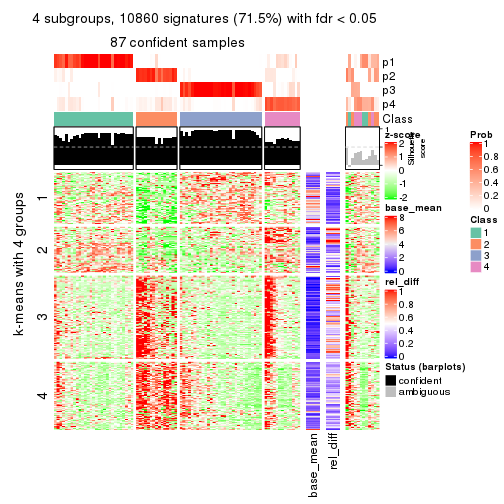
get_signatures(res, k = 5)
get_signatures(res, k = 6)
Signature heatmaps where rows are not scaled:
get_signatures(res, k = 2, scale_rows = FALSE)
get_signatures(res, k = 3, scale_rows = FALSE)
get_signatures(res, k = 4, scale_rows = FALSE)
get_signatures(res, k = 5, scale_rows = FALSE)
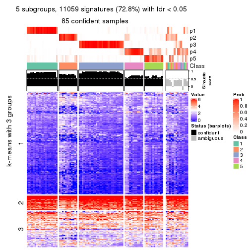
get_signatures(res, k = 6, scale_rows = FALSE)
Compare the overlap of signatures from different k:
compare_signatures(res)
get_signature() returns a data frame invisibly. TO get the list of signatures, the function
call should be assigned to a variable explicitly. In following code, if plot argument is set
to FALSE, no heatmap is plotted while only the differential analysis is performed.
# code only for demonstration
tb = get_signature(res, k = ..., plot = FALSE)
An example of the output of tb is:
#> which_row fdr mean_1 mean_2 scaled_mean_1 scaled_mean_2 km
#> 1 38 0.042760348 8.373488 9.131774 -0.5533452 0.5164555 1
#> 2 40 0.018707592 7.106213 8.469186 -0.6173731 0.5762149 1
#> 3 55 0.019134737 10.221463 11.207825 -0.6159697 0.5749050 1
#> 4 59 0.006059896 5.921854 7.869574 -0.6899429 0.6439467 1
#> 5 60 0.018055526 8.928898 10.211722 -0.6204761 0.5791110 1
#> 6 98 0.009384629 15.714769 14.887706 0.6635654 -0.6193277 2
...
The columns in tb are:
which_row: row indices corresponding to the input matrix.fdr: FDR for the differential test. mean_x: The mean value in group x.scaled_mean_x: The mean value in group x after rows are scaled.km: Row groups if k-means clustering is applied to rows.UMAP plot which shows how samples are separated.
dimension_reduction(res, k = 2, method = "UMAP")
dimension_reduction(res, k = 3, method = "UMAP")
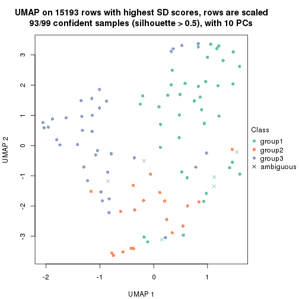
dimension_reduction(res, k = 4, method = "UMAP")
dimension_reduction(res, k = 5, method = "UMAP")
dimension_reduction(res, k = 6, method = "UMAP")
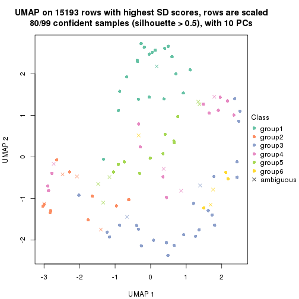
Following heatmap shows how subgroups are split when increasing k:
collect_classes(res)
If matrix rows can be associated to genes, consider to use GO_Enrichment(res,
...) to perform function enrichment for the signature genes.
The object with results only for a single top-value method and a single partition method can be extracted as:
res = res_list["CV", "hclust"]
# you can also extract it by
# res = res_list["CV:hclust"]
A summary of res and all the functions that can be applied to it:
res
#> A 'ConsensusPartition' object with k = 2, 3, 4, 5, 6.
#> On a matrix with 15193 rows and 99 columns.
#> Top rows (1000, 2000, 3000, 4000, 5000) are extracted by 'CV' method.
#> Subgroups are detected by 'hclust' method.
#> Performed in total 1250 partitions by row resampling.
#> Best k for subgroups seems to be 3.
#>
#> Following methods can be applied to this 'ConsensusPartition' object:
#> [1] "cola_report" "collect_classes" "collect_plots"
#> [4] "collect_stats" "colnames" "compare_signatures"
#> [7] "consensus_heatmap" "dimension_reduction" "functional_enrichment"
#> [10] "get_anno_col" "get_anno" "get_classes"
#> [13] "get_consensus" "get_matrix" "get_membership"
#> [16] "get_param" "get_signatures" "get_stats"
#> [19] "is_best_k" "is_stable_k" "membership_heatmap"
#> [22] "ncol" "nrow" "plot_ecdf"
#> [25] "rownames" "select_partition_number" "show"
#> [28] "suggest_best_k" "test_to_known_factors"
collect_plots() function collects all the plots made from res for all k (number of partitions)
into one single page to provide an easy and fast comparison between different k.
collect_plots(res)
The plots are:
k and the heatmap of
predicted classes for each k.k.k.k.All the plots in panels can be made by individual functions and they are plotted later in this section.
select_partition_number() produces several plots showing different
statistics for choosing “optimized” k. There are following statistics:
k;k, the area increased is defined as \(A_k - A_{k-1}\).The detailed explanations of these statistics can be found in the cola vignette.
Generally speaking, lower PAC score, higher mean silhouette score or higher
concordance corresponds to better partition. Rand index and Jaccard index
measure how similar the current partition is compared to partition with k-1.
If they are too similar, we won't accept k is better than k-1.
select_partition_number(res)
The numeric values for all these statistics can be obtained by get_stats().
get_stats(res)
#> k 1-PAC mean_silhouette concordance area_increased Rand Jaccard
#> 2 2 0.888 0.976 0.987 0.0817 0.941 0.941
#> 3 3 0.979 0.919 0.975 1.7729 0.823 0.812
#> 4 4 0.877 0.884 0.955 0.2506 0.963 0.952
#> 5 5 0.871 0.882 0.943 0.0417 0.999 0.999
#> 6 6 0.653 0.831 0.921 0.1277 0.995 0.994
suggest_best_k() suggests the best \(k\) based on these statistics. The rules are as follows:
NA.suggest_best_k(res)
#> [1] 3
Following shows the table of the partitions (You need to click the show/hide
code output link to see it). The membership matrix (columns with name p*)
is inferred by
clue::cl_consensus()
function with the SE method. Basically the value in the membership matrix
represents the probability to belong to a certain group. The finall class
label for an item is determined with the group with highest probability it
belongs to.
In get_classes() function, the entropy is calculated from the membership
matrix and the silhouette score is calculated from the consensus matrix.
cbind(get_classes(res, k = 2), get_membership(res, k = 2))
#> class entropy silhouette p1 p2
#> SRR797072 1 0.000 0.986 1.000 0.000
#> SRR797073 1 0.000 0.986 1.000 0.000
#> SRR797074 1 0.000 0.986 1.000 0.000
#> SRR797075 1 0.000 0.986 1.000 0.000
#> SRR797076 2 0.000 1.000 0.000 1.000
#> SRR797077 1 0.000 0.986 1.000 0.000
#> SRR797078 1 0.000 0.986 1.000 0.000
#> SRR797079 1 0.000 0.986 1.000 0.000
#> SRR797080 1 0.000 0.986 1.000 0.000
#> SRR797081 1 0.000 0.986 1.000 0.000
#> SRR797082 1 0.000 0.986 1.000 0.000
#> SRR797083 1 0.000 0.986 1.000 0.000
#> SRR797084 2 0.000 1.000 0.000 1.000
#> SRR797085 1 0.482 0.897 0.896 0.104
#> SRR797086 1 0.000 0.986 1.000 0.000
#> SRR797087 1 0.000 0.986 1.000 0.000
#> SRR797088 1 0.000 0.986 1.000 0.000
#> SRR797089 1 0.000 0.986 1.000 0.000
#> SRR797090 1 0.000 0.986 1.000 0.000
#> SRR797091 1 0.000 0.986 1.000 0.000
#> SRR797092 1 0.000 0.986 1.000 0.000
#> SRR797093 1 0.000 0.986 1.000 0.000
#> SRR797094 1 0.000 0.986 1.000 0.000
#> SRR797095 1 0.000 0.986 1.000 0.000
#> SRR797096 1 0.000 0.986 1.000 0.000
#> SRR797097 1 0.000 0.986 1.000 0.000
#> SRR797098 1 0.456 0.904 0.904 0.096
#> SRR797099 1 0.000 0.986 1.000 0.000
#> SRR797100 1 0.000 0.986 1.000 0.000
#> SRR797101 1 0.000 0.986 1.000 0.000
#> SRR797102 1 0.000 0.986 1.000 0.000
#> SRR797103 1 0.430 0.912 0.912 0.088
#> SRR797104 1 0.000 0.986 1.000 0.000
#> SRR797105 1 0.000 0.986 1.000 0.000
#> SRR797106 2 0.000 1.000 0.000 1.000
#> SRR797107 1 0.000 0.986 1.000 0.000
#> SRR797108 1 0.000 0.986 1.000 0.000
#> SRR797109 1 0.000 0.986 1.000 0.000
#> SRR797110 1 0.000 0.986 1.000 0.000
#> SRR797111 1 0.000 0.986 1.000 0.000
#> SRR797112 1 0.000 0.986 1.000 0.000
#> SRR797113 1 0.000 0.986 1.000 0.000
#> SRR797114 1 0.000 0.986 1.000 0.000
#> SRR797115 1 0.000 0.986 1.000 0.000
#> SRR797116 1 0.000 0.986 1.000 0.000
#> SRR797117 1 0.529 0.880 0.880 0.120
#> SRR797118 1 0.000 0.986 1.000 0.000
#> SRR797119 1 0.000 0.986 1.000 0.000
#> SRR797120 1 0.000 0.986 1.000 0.000
#> SRR797121 1 0.000 0.986 1.000 0.000
#> SRR797122 1 0.000 0.986 1.000 0.000
#> SRR797123 1 0.000 0.986 1.000 0.000
#> SRR797124 1 0.000 0.986 1.000 0.000
#> SRR797125 1 0.000 0.986 1.000 0.000
#> SRR797126 1 0.000 0.986 1.000 0.000
#> SRR797127 1 0.000 0.986 1.000 0.000
#> SRR797128 1 0.000 0.986 1.000 0.000
#> SRR797129 1 0.000 0.986 1.000 0.000
#> SRR797130 1 0.000 0.986 1.000 0.000
#> SRR797131 1 0.000 0.986 1.000 0.000
#> SRR797132 1 0.000 0.986 1.000 0.000
#> SRR797133 1 0.000 0.986 1.000 0.000
#> SRR797134 1 0.000 0.986 1.000 0.000
#> SRR797135 1 0.000 0.986 1.000 0.000
#> SRR797136 1 0.000 0.986 1.000 0.000
#> SRR797137 1 0.000 0.986 1.000 0.000
#> SRR797138 1 0.000 0.986 1.000 0.000
#> SRR797139 1 0.000 0.986 1.000 0.000
#> SRR797140 1 0.000 0.986 1.000 0.000
#> SRR797141 1 0.000 0.986 1.000 0.000
#> SRR797142 1 0.000 0.986 1.000 0.000
#> SRR797143 1 0.000 0.986 1.000 0.000
#> SRR797144 1 0.000 0.986 1.000 0.000
#> SRR797145 1 0.000 0.986 1.000 0.000
#> SRR797146 1 0.000 0.986 1.000 0.000
#> SRR797147 1 0.000 0.986 1.000 0.000
#> SRR797148 1 0.529 0.880 0.880 0.120
#> SRR797149 1 0.506 0.889 0.888 0.112
#> SRR797150 1 0.456 0.904 0.904 0.096
#> SRR797151 1 0.456 0.904 0.904 0.096
#> SRR797152 1 0.000 0.986 1.000 0.000
#> SRR797153 1 0.000 0.986 1.000 0.000
#> SRR797154 1 0.000 0.986 1.000 0.000
#> SRR797155 1 0.000 0.986 1.000 0.000
#> SRR797156 1 0.000 0.986 1.000 0.000
#> SRR797157 1 0.000 0.986 1.000 0.000
#> SRR797158 1 0.506 0.889 0.888 0.112
#> SRR797159 1 0.506 0.889 0.888 0.112
#> SRR797160 1 0.000 0.986 1.000 0.000
#> SRR797161 1 0.000 0.986 1.000 0.000
#> SRR797162 1 0.000 0.986 1.000 0.000
#> SRR797163 1 0.000 0.986 1.000 0.000
#> SRR797164 1 0.000 0.986 1.000 0.000
#> SRR797165 1 0.000 0.986 1.000 0.000
#> SRR797166 1 0.000 0.986 1.000 0.000
#> SRR797167 1 0.506 0.889 0.888 0.112
#> SRR797168 1 0.000 0.986 1.000 0.000
#> SRR797169 1 0.000 0.986 1.000 0.000
#> SRR797170 1 0.506 0.889 0.888 0.112
cbind(get_classes(res, k = 3), get_membership(res, k = 3))
#> class entropy silhouette p1 p2 p3
#> SRR797072 1 0.0000 0.9874 1.000 0.000 0.000
#> SRR797073 1 0.0000 0.9874 1.000 0.000 0.000
#> SRR797074 1 0.0000 0.9874 1.000 0.000 0.000
#> SRR797075 1 0.0000 0.9874 1.000 0.000 0.000
#> SRR797076 3 0.0000 1.0000 0.000 0.000 1.000
#> SRR797077 1 0.0000 0.9874 1.000 0.000 0.000
#> SRR797078 1 0.0000 0.9874 1.000 0.000 0.000
#> SRR797079 1 0.0592 0.9753 0.988 0.012 0.000
#> SRR797080 1 0.0000 0.9874 1.000 0.000 0.000
#> SRR797081 1 0.0000 0.9874 1.000 0.000 0.000
#> SRR797082 1 0.0000 0.9874 1.000 0.000 0.000
#> SRR797083 1 0.0000 0.9874 1.000 0.000 0.000
#> SRR797084 3 0.0000 1.0000 0.000 0.000 1.000
#> SRR797085 1 0.6111 0.1370 0.604 0.396 0.000
#> SRR797086 1 0.0000 0.9874 1.000 0.000 0.000
#> SRR797087 1 0.0000 0.9874 1.000 0.000 0.000
#> SRR797088 1 0.0000 0.9874 1.000 0.000 0.000
#> SRR797089 1 0.0000 0.9874 1.000 0.000 0.000
#> SRR797090 1 0.0000 0.9874 1.000 0.000 0.000
#> SRR797091 1 0.0000 0.9874 1.000 0.000 0.000
#> SRR797092 1 0.0000 0.9874 1.000 0.000 0.000
#> SRR797093 1 0.0000 0.9874 1.000 0.000 0.000
#> SRR797094 1 0.0000 0.9874 1.000 0.000 0.000
#> SRR797095 1 0.0000 0.9874 1.000 0.000 0.000
#> SRR797096 1 0.0000 0.9874 1.000 0.000 0.000
#> SRR797097 1 0.0000 0.9874 1.000 0.000 0.000
#> SRR797098 2 0.6168 0.4277 0.412 0.588 0.000
#> SRR797099 1 0.0000 0.9874 1.000 0.000 0.000
#> SRR797100 1 0.0000 0.9874 1.000 0.000 0.000
#> SRR797101 1 0.0000 0.9874 1.000 0.000 0.000
#> SRR797102 1 0.0000 0.9874 1.000 0.000 0.000
#> SRR797103 1 0.6235 -0.0558 0.564 0.436 0.000
#> SRR797104 1 0.0000 0.9874 1.000 0.000 0.000
#> SRR797105 1 0.0000 0.9874 1.000 0.000 0.000
#> SRR797106 3 0.0000 1.0000 0.000 0.000 1.000
#> SRR797107 1 0.0000 0.9874 1.000 0.000 0.000
#> SRR797108 1 0.0000 0.9874 1.000 0.000 0.000
#> SRR797109 1 0.0000 0.9874 1.000 0.000 0.000
#> SRR797110 1 0.0000 0.9874 1.000 0.000 0.000
#> SRR797111 1 0.0000 0.9874 1.000 0.000 0.000
#> SRR797112 1 0.0000 0.9874 1.000 0.000 0.000
#> SRR797113 1 0.0000 0.9874 1.000 0.000 0.000
#> SRR797114 1 0.0000 0.9874 1.000 0.000 0.000
#> SRR797115 1 0.0592 0.9753 0.988 0.012 0.000
#> SRR797116 1 0.0592 0.9753 0.988 0.012 0.000
#> SRR797117 2 0.0424 0.4997 0.000 0.992 0.008
#> SRR797118 1 0.0000 0.9874 1.000 0.000 0.000
#> SRR797119 1 0.0000 0.9874 1.000 0.000 0.000
#> SRR797120 1 0.0000 0.9874 1.000 0.000 0.000
#> SRR797121 1 0.0000 0.9874 1.000 0.000 0.000
#> SRR797122 1 0.0000 0.9874 1.000 0.000 0.000
#> SRR797123 1 0.0592 0.9753 0.988 0.012 0.000
#> SRR797124 1 0.0592 0.9753 0.988 0.012 0.000
#> SRR797125 1 0.0000 0.9874 1.000 0.000 0.000
#> SRR797126 1 0.0000 0.9874 1.000 0.000 0.000
#> SRR797127 1 0.0000 0.9874 1.000 0.000 0.000
#> SRR797128 1 0.0000 0.9874 1.000 0.000 0.000
#> SRR797129 1 0.0000 0.9874 1.000 0.000 0.000
#> SRR797130 1 0.0000 0.9874 1.000 0.000 0.000
#> SRR797131 1 0.0000 0.9874 1.000 0.000 0.000
#> SRR797132 1 0.0000 0.9874 1.000 0.000 0.000
#> SRR797133 1 0.0000 0.9874 1.000 0.000 0.000
#> SRR797134 1 0.0000 0.9874 1.000 0.000 0.000
#> SRR797135 1 0.0000 0.9874 1.000 0.000 0.000
#> SRR797136 1 0.0000 0.9874 1.000 0.000 0.000
#> SRR797137 1 0.0000 0.9874 1.000 0.000 0.000
#> SRR797138 1 0.0000 0.9874 1.000 0.000 0.000
#> SRR797139 1 0.0000 0.9874 1.000 0.000 0.000
#> SRR797140 1 0.0000 0.9874 1.000 0.000 0.000
#> SRR797141 1 0.0000 0.9874 1.000 0.000 0.000
#> SRR797142 1 0.0000 0.9874 1.000 0.000 0.000
#> SRR797143 1 0.0000 0.9874 1.000 0.000 0.000
#> SRR797144 1 0.0000 0.9874 1.000 0.000 0.000
#> SRR797145 1 0.0000 0.9874 1.000 0.000 0.000
#> SRR797146 1 0.0000 0.9874 1.000 0.000 0.000
#> SRR797147 1 0.0000 0.9874 1.000 0.000 0.000
#> SRR797148 2 0.0424 0.4997 0.000 0.992 0.008
#> SRR797149 2 0.0592 0.5246 0.012 0.988 0.000
#> SRR797150 2 0.5948 0.4835 0.360 0.640 0.000
#> SRR797151 2 0.5948 0.4835 0.360 0.640 0.000
#> SRR797152 1 0.0000 0.9874 1.000 0.000 0.000
#> SRR797153 1 0.0000 0.9874 1.000 0.000 0.000
#> SRR797154 1 0.0000 0.9874 1.000 0.000 0.000
#> SRR797155 1 0.0000 0.9874 1.000 0.000 0.000
#> SRR797156 1 0.0000 0.9874 1.000 0.000 0.000
#> SRR797157 1 0.0000 0.9874 1.000 0.000 0.000
#> SRR797158 2 0.5785 0.4901 0.332 0.668 0.000
#> SRR797159 2 0.0592 0.5246 0.012 0.988 0.000
#> SRR797160 1 0.0424 0.9792 0.992 0.008 0.000
#> SRR797161 1 0.0000 0.9874 1.000 0.000 0.000
#> SRR797162 1 0.0000 0.9874 1.000 0.000 0.000
#> SRR797163 1 0.0000 0.9874 1.000 0.000 0.000
#> SRR797164 1 0.0000 0.9874 1.000 0.000 0.000
#> SRR797165 1 0.0000 0.9874 1.000 0.000 0.000
#> SRR797166 1 0.0000 0.9874 1.000 0.000 0.000
#> SRR797167 2 0.0592 0.5246 0.012 0.988 0.000
#> SRR797168 1 0.0000 0.9874 1.000 0.000 0.000
#> SRR797169 1 0.0000 0.9874 1.000 0.000 0.000
#> SRR797170 2 0.0592 0.5246 0.012 0.988 0.000
cbind(get_classes(res, k = 4), get_membership(res, k = 4))
#> class entropy silhouette p1 p2 p3 p4
#> SRR797072 1 0.0000 0.9746 1.000 0.000 0.000 0.000
#> SRR797073 1 0.0000 0.9746 1.000 0.000 0.000 0.000
#> SRR797074 1 0.0000 0.9746 1.000 0.000 0.000 0.000
#> SRR797075 1 0.0000 0.9746 1.000 0.000 0.000 0.000
#> SRR797076 4 0.0000 0.9705 0.000 0.000 0.000 1.000
#> SRR797077 1 0.0000 0.9746 1.000 0.000 0.000 0.000
#> SRR797078 1 0.0188 0.9724 0.996 0.000 0.004 0.000
#> SRR797079 1 0.3266 0.7926 0.832 0.000 0.168 0.000
#> SRR797080 1 0.0188 0.9724 0.996 0.000 0.004 0.000
#> SRR797081 1 0.0000 0.9746 1.000 0.000 0.000 0.000
#> SRR797082 1 0.0000 0.9746 1.000 0.000 0.000 0.000
#> SRR797083 1 0.0000 0.9746 1.000 0.000 0.000 0.000
#> SRR797084 4 0.2216 0.9403 0.000 0.000 0.092 0.908
#> SRR797085 3 0.5314 0.0000 0.176 0.084 0.740 0.000
#> SRR797086 1 0.0000 0.9746 1.000 0.000 0.000 0.000
#> SRR797087 1 0.0000 0.9746 1.000 0.000 0.000 0.000
#> SRR797088 1 0.0336 0.9697 0.992 0.000 0.008 0.000
#> SRR797089 1 0.0000 0.9746 1.000 0.000 0.000 0.000
#> SRR797090 1 0.0000 0.9746 1.000 0.000 0.000 0.000
#> SRR797091 1 0.1022 0.9503 0.968 0.000 0.032 0.000
#> SRR797092 1 0.0000 0.9746 1.000 0.000 0.000 0.000
#> SRR797093 1 0.0188 0.9724 0.996 0.000 0.004 0.000
#> SRR797094 1 0.0000 0.9746 1.000 0.000 0.000 0.000
#> SRR797095 1 0.0000 0.9746 1.000 0.000 0.000 0.000
#> SRR797096 1 0.1637 0.9259 0.940 0.000 0.060 0.000
#> SRR797097 1 0.0000 0.9746 1.000 0.000 0.000 0.000
#> SRR797098 2 0.7067 0.0787 0.160 0.552 0.288 0.000
#> SRR797099 1 0.1637 0.9259 0.940 0.000 0.060 0.000
#> SRR797100 1 0.0000 0.9746 1.000 0.000 0.000 0.000
#> SRR797101 1 0.0000 0.9746 1.000 0.000 0.000 0.000
#> SRR797102 1 0.0000 0.9746 1.000 0.000 0.000 0.000
#> SRR797103 2 0.7864 -0.3401 0.320 0.392 0.288 0.000
#> SRR797104 1 0.0000 0.9746 1.000 0.000 0.000 0.000
#> SRR797105 1 0.0188 0.9724 0.996 0.000 0.004 0.000
#> SRR797106 4 0.0000 0.9705 0.000 0.000 0.000 1.000
#> SRR797107 1 0.0000 0.9746 1.000 0.000 0.000 0.000
#> SRR797108 1 0.0000 0.9746 1.000 0.000 0.000 0.000
#> SRR797109 1 0.0188 0.9724 0.996 0.000 0.004 0.000
#> SRR797110 1 0.0000 0.9746 1.000 0.000 0.000 0.000
#> SRR797111 1 0.0000 0.9746 1.000 0.000 0.000 0.000
#> SRR797112 1 0.1637 0.9259 0.940 0.000 0.060 0.000
#> SRR797113 1 0.1637 0.9259 0.940 0.000 0.060 0.000
#> SRR797114 1 0.1637 0.9259 0.940 0.000 0.060 0.000
#> SRR797115 1 0.3610 0.7439 0.800 0.000 0.200 0.000
#> SRR797116 1 0.3610 0.7439 0.800 0.000 0.200 0.000
#> SRR797117 2 0.1151 0.6295 0.000 0.968 0.024 0.008
#> SRR797118 1 0.0000 0.9746 1.000 0.000 0.000 0.000
#> SRR797119 1 0.0000 0.9746 1.000 0.000 0.000 0.000
#> SRR797120 1 0.0000 0.9746 1.000 0.000 0.000 0.000
#> SRR797121 1 0.1637 0.9259 0.940 0.000 0.060 0.000
#> SRR797122 1 0.0000 0.9746 1.000 0.000 0.000 0.000
#> SRR797123 1 0.3610 0.7439 0.800 0.000 0.200 0.000
#> SRR797124 1 0.3610 0.7439 0.800 0.000 0.200 0.000
#> SRR797125 1 0.0000 0.9746 1.000 0.000 0.000 0.000
#> SRR797126 1 0.1637 0.9259 0.940 0.000 0.060 0.000
#> SRR797127 1 0.0000 0.9746 1.000 0.000 0.000 0.000
#> SRR797128 1 0.0000 0.9746 1.000 0.000 0.000 0.000
#> SRR797129 1 0.0188 0.9724 0.996 0.000 0.004 0.000
#> SRR797130 1 0.0000 0.9746 1.000 0.000 0.000 0.000
#> SRR797131 1 0.0188 0.9724 0.996 0.000 0.004 0.000
#> SRR797132 1 0.0000 0.9746 1.000 0.000 0.000 0.000
#> SRR797133 1 0.0000 0.9746 1.000 0.000 0.000 0.000
#> SRR797134 1 0.0000 0.9746 1.000 0.000 0.000 0.000
#> SRR797135 1 0.0000 0.9746 1.000 0.000 0.000 0.000
#> SRR797136 1 0.0000 0.9746 1.000 0.000 0.000 0.000
#> SRR797137 1 0.1637 0.9259 0.940 0.000 0.060 0.000
#> SRR797138 1 0.0000 0.9746 1.000 0.000 0.000 0.000
#> SRR797139 1 0.0000 0.9746 1.000 0.000 0.000 0.000
#> SRR797140 1 0.0188 0.9724 0.996 0.000 0.004 0.000
#> SRR797141 1 0.0188 0.9724 0.996 0.000 0.004 0.000
#> SRR797142 1 0.0000 0.9746 1.000 0.000 0.000 0.000
#> SRR797143 1 0.0000 0.9746 1.000 0.000 0.000 0.000
#> SRR797144 1 0.0336 0.9684 0.992 0.000 0.008 0.000
#> SRR797145 1 0.0000 0.9746 1.000 0.000 0.000 0.000
#> SRR797146 1 0.0000 0.9746 1.000 0.000 0.000 0.000
#> SRR797147 1 0.0000 0.9746 1.000 0.000 0.000 0.000
#> SRR797148 2 0.1151 0.6295 0.000 0.968 0.024 0.008
#> SRR797149 2 0.0000 0.6404 0.000 1.000 0.000 0.000
#> SRR797150 2 0.6517 0.3119 0.108 0.604 0.288 0.000
#> SRR797151 2 0.6517 0.3119 0.108 0.604 0.288 0.000
#> SRR797152 1 0.0000 0.9746 1.000 0.000 0.000 0.000
#> SRR797153 1 0.0000 0.9746 1.000 0.000 0.000 0.000
#> SRR797154 1 0.0000 0.9746 1.000 0.000 0.000 0.000
#> SRR797155 1 0.0000 0.9746 1.000 0.000 0.000 0.000
#> SRR797156 1 0.2589 0.8634 0.884 0.000 0.116 0.000
#> SRR797157 1 0.0000 0.9746 1.000 0.000 0.000 0.000
#> SRR797158 2 0.6136 0.3750 0.080 0.632 0.288 0.000
#> SRR797159 2 0.0000 0.6404 0.000 1.000 0.000 0.000
#> SRR797160 1 0.3172 0.8047 0.840 0.000 0.160 0.000
#> SRR797161 1 0.0000 0.9746 1.000 0.000 0.000 0.000
#> SRR797162 1 0.0000 0.9746 1.000 0.000 0.000 0.000
#> SRR797163 1 0.0000 0.9746 1.000 0.000 0.000 0.000
#> SRR797164 1 0.0000 0.9746 1.000 0.000 0.000 0.000
#> SRR797165 1 0.0000 0.9746 1.000 0.000 0.000 0.000
#> SRR797166 1 0.0000 0.9746 1.000 0.000 0.000 0.000
#> SRR797167 2 0.0000 0.6404 0.000 1.000 0.000 0.000
#> SRR797168 1 0.0000 0.9746 1.000 0.000 0.000 0.000
#> SRR797169 1 0.0000 0.9746 1.000 0.000 0.000 0.000
#> SRR797170 2 0.0000 0.6404 0.000 1.000 0.000 0.000
cbind(get_classes(res, k = 5), get_membership(res, k = 5))
#> class entropy silhouette p1 p2 p3 p4 p5
#> SRR797072 1 0.0000 0.976 1.000 0.000 0.000 NA 0.000
#> SRR797073 1 0.0000 0.976 1.000 0.000 0.000 NA 0.000
#> SRR797074 1 0.0000 0.976 1.000 0.000 0.000 NA 0.000
#> SRR797075 1 0.0000 0.976 1.000 0.000 0.000 NA 0.000
#> SRR797076 5 0.4538 0.328 0.000 0.000 0.008 NA 0.540
#> SRR797077 1 0.0000 0.976 1.000 0.000 0.000 NA 0.000
#> SRR797078 1 0.0162 0.975 0.996 0.000 0.000 NA 0.000
#> SRR797079 1 0.3360 0.813 0.816 0.012 0.004 NA 0.000
#> SRR797080 1 0.0162 0.975 0.996 0.000 0.000 NA 0.000
#> SRR797081 1 0.0000 0.976 1.000 0.000 0.000 NA 0.000
#> SRR797082 1 0.0000 0.976 1.000 0.000 0.000 NA 0.000
#> SRR797083 1 0.0000 0.976 1.000 0.000 0.000 NA 0.000
#> SRR797084 3 0.2605 0.000 0.000 0.000 0.852 NA 0.148
#> SRR797085 5 0.6959 -0.136 0.036 0.364 0.140 NA 0.460
#> SRR797086 1 0.0000 0.976 1.000 0.000 0.000 NA 0.000
#> SRR797087 1 0.0000 0.976 1.000 0.000 0.000 NA 0.000
#> SRR797088 1 0.0290 0.973 0.992 0.000 0.000 NA 0.000
#> SRR797089 1 0.0000 0.976 1.000 0.000 0.000 NA 0.000
#> SRR797090 1 0.0000 0.976 1.000 0.000 0.000 NA 0.000
#> SRR797091 1 0.0880 0.957 0.968 0.000 0.000 NA 0.000
#> SRR797092 1 0.0000 0.976 1.000 0.000 0.000 NA 0.000
#> SRR797093 1 0.0162 0.975 0.996 0.000 0.000 NA 0.000
#> SRR797094 1 0.0000 0.976 1.000 0.000 0.000 NA 0.000
#> SRR797095 1 0.0000 0.976 1.000 0.000 0.000 NA 0.000
#> SRR797096 1 0.1697 0.931 0.932 0.008 0.000 NA 0.000
#> SRR797097 1 0.0000 0.976 1.000 0.000 0.000 NA 0.000
#> SRR797098 2 0.1908 0.504 0.092 0.908 0.000 NA 0.000
#> SRR797099 1 0.1697 0.931 0.932 0.008 0.000 NA 0.000
#> SRR797100 1 0.0000 0.976 1.000 0.000 0.000 NA 0.000
#> SRR797101 1 0.0000 0.976 1.000 0.000 0.000 NA 0.000
#> SRR797102 1 0.0000 0.976 1.000 0.000 0.000 NA 0.000
#> SRR797103 2 0.3508 0.219 0.252 0.748 0.000 NA 0.000
#> SRR797104 1 0.0000 0.976 1.000 0.000 0.000 NA 0.000
#> SRR797105 1 0.0162 0.975 0.996 0.000 0.000 NA 0.000
#> SRR797106 5 0.4538 0.328 0.000 0.000 0.008 NA 0.540
#> SRR797107 1 0.0000 0.976 1.000 0.000 0.000 NA 0.000
#> SRR797108 1 0.0000 0.976 1.000 0.000 0.000 NA 0.000
#> SRR797109 1 0.0162 0.975 0.996 0.000 0.000 NA 0.000
#> SRR797110 1 0.0000 0.976 1.000 0.000 0.000 NA 0.000
#> SRR797111 1 0.0000 0.976 1.000 0.000 0.000 NA 0.000
#> SRR797112 1 0.1697 0.931 0.932 0.008 0.000 NA 0.000
#> SRR797113 1 0.1697 0.931 0.932 0.008 0.000 NA 0.000
#> SRR797114 1 0.1697 0.931 0.932 0.008 0.000 NA 0.000
#> SRR797115 1 0.3864 0.774 0.784 0.020 0.008 NA 0.000
#> SRR797116 1 0.3864 0.774 0.784 0.020 0.008 NA 0.000
#> SRR797117 2 0.5804 0.633 0.000 0.544 0.104 NA 0.000
#> SRR797118 1 0.0000 0.976 1.000 0.000 0.000 NA 0.000
#> SRR797119 1 0.0000 0.976 1.000 0.000 0.000 NA 0.000
#> SRR797120 1 0.0000 0.976 1.000 0.000 0.000 NA 0.000
#> SRR797121 1 0.1697 0.931 0.932 0.008 0.000 NA 0.000
#> SRR797122 1 0.0000 0.976 1.000 0.000 0.000 NA 0.000
#> SRR797123 1 0.3864 0.774 0.784 0.020 0.008 NA 0.000
#> SRR797124 1 0.3864 0.774 0.784 0.020 0.008 NA 0.000
#> SRR797125 1 0.0000 0.976 1.000 0.000 0.000 NA 0.000
#> SRR797126 1 0.1697 0.931 0.932 0.008 0.000 NA 0.000
#> SRR797127 1 0.0000 0.976 1.000 0.000 0.000 NA 0.000
#> SRR797128 1 0.0000 0.976 1.000 0.000 0.000 NA 0.000
#> SRR797129 1 0.0162 0.975 0.996 0.000 0.000 NA 0.000
#> SRR797130 1 0.0000 0.976 1.000 0.000 0.000 NA 0.000
#> SRR797131 1 0.0162 0.975 0.996 0.000 0.000 NA 0.000
#> SRR797132 1 0.0000 0.976 1.000 0.000 0.000 NA 0.000
#> SRR797133 1 0.0000 0.976 1.000 0.000 0.000 NA 0.000
#> SRR797134 1 0.0000 0.976 1.000 0.000 0.000 NA 0.000
#> SRR797135 1 0.0000 0.976 1.000 0.000 0.000 NA 0.000
#> SRR797136 1 0.0000 0.976 1.000 0.000 0.000 NA 0.000
#> SRR797137 1 0.1697 0.931 0.932 0.008 0.000 NA 0.000
#> SRR797138 1 0.0000 0.976 1.000 0.000 0.000 NA 0.000
#> SRR797139 1 0.0000 0.976 1.000 0.000 0.000 NA 0.000
#> SRR797140 1 0.0162 0.975 0.996 0.000 0.000 NA 0.000
#> SRR797141 1 0.0162 0.975 0.996 0.000 0.000 NA 0.000
#> SRR797142 1 0.0000 0.976 1.000 0.000 0.000 NA 0.000
#> SRR797143 1 0.0162 0.974 0.996 0.000 0.000 NA 0.000
#> SRR797144 1 0.0566 0.968 0.984 0.012 0.000 NA 0.000
#> SRR797145 1 0.0162 0.974 0.996 0.000 0.000 NA 0.000
#> SRR797146 1 0.0162 0.974 0.996 0.000 0.000 NA 0.000
#> SRR797147 1 0.0000 0.976 1.000 0.000 0.000 NA 0.000
#> SRR797148 2 0.5804 0.633 0.000 0.544 0.104 NA 0.000
#> SRR797149 2 0.4045 0.682 0.000 0.644 0.000 NA 0.000
#> SRR797150 2 0.1043 0.574 0.040 0.960 0.000 NA 0.000
#> SRR797151 2 0.1043 0.574 0.040 0.960 0.000 NA 0.000
#> SRR797152 1 0.0000 0.976 1.000 0.000 0.000 NA 0.000
#> SRR797153 1 0.0000 0.976 1.000 0.000 0.000 NA 0.000
#> SRR797154 1 0.0000 0.976 1.000 0.000 0.000 NA 0.000
#> SRR797155 1 0.0000 0.976 1.000 0.000 0.000 NA 0.000
#> SRR797156 1 0.2439 0.879 0.876 0.004 0.000 NA 0.000
#> SRR797157 1 0.0162 0.974 0.996 0.000 0.000 NA 0.000
#> SRR797158 2 0.0404 0.572 0.012 0.988 0.000 NA 0.000
#> SRR797159 2 0.4045 0.682 0.000 0.644 0.000 NA 0.000
#> SRR797160 1 0.3047 0.832 0.832 0.004 0.004 NA 0.000
#> SRR797161 1 0.0162 0.974 0.996 0.000 0.000 NA 0.000
#> SRR797162 1 0.0162 0.974 0.996 0.000 0.000 NA 0.000
#> SRR797163 1 0.0162 0.974 0.996 0.000 0.000 NA 0.000
#> SRR797164 1 0.0000 0.976 1.000 0.000 0.000 NA 0.000
#> SRR797165 1 0.0000 0.976 1.000 0.000 0.000 NA 0.000
#> SRR797166 1 0.0000 0.976 1.000 0.000 0.000 NA 0.000
#> SRR797167 2 0.4045 0.682 0.000 0.644 0.000 NA 0.000
#> SRR797168 1 0.0000 0.976 1.000 0.000 0.000 NA 0.000
#> SRR797169 1 0.0000 0.976 1.000 0.000 0.000 NA 0.000
#> SRR797170 2 0.4045 0.682 0.000 0.644 0.000 NA 0.000
cbind(get_classes(res, k = 6), get_membership(res, k = 6))
#> class entropy silhouette p1 p2 p3 p4 p5 p6
#> SRR797072 3 0.0146 0.944 NA 0.000 0.996 0.000 0.000 0
#> SRR797073 3 0.0146 0.944 NA 0.000 0.996 0.000 0.000 0
#> SRR797074 3 0.0146 0.944 NA 0.000 0.996 0.000 0.000 0
#> SRR797075 3 0.0146 0.944 NA 0.000 0.996 0.000 0.000 0
#> SRR797076 6 0.0000 1.000 NA 0.000 0.000 0.000 0.000 1
#> SRR797077 3 0.0458 0.941 NA 0.000 0.984 0.000 0.000 0
#> SRR797078 3 0.0260 0.944 NA 0.000 0.992 0.000 0.000 0
#> SRR797079 3 0.3076 0.734 NA 0.000 0.760 0.000 0.000 0
#> SRR797080 3 0.0260 0.944 NA 0.000 0.992 0.000 0.000 0
#> SRR797081 3 0.0260 0.945 NA 0.000 0.992 0.000 0.000 0
#> SRR797082 3 0.0146 0.944 NA 0.000 0.996 0.000 0.000 0
#> SRR797083 3 0.0146 0.944 NA 0.000 0.996 0.000 0.000 0
#> SRR797084 4 0.0000 0.000 NA 0.000 0.000 1.000 0.000 0
#> SRR797085 5 0.1957 -0.236 NA 0.000 0.000 0.000 0.888 0
#> SRR797086 3 0.0547 0.939 NA 0.000 0.980 0.000 0.000 0
#> SRR797087 3 0.0146 0.944 NA 0.000 0.996 0.000 0.000 0
#> SRR797088 3 0.0632 0.938 NA 0.000 0.976 0.000 0.000 0
#> SRR797089 3 0.0146 0.944 NA 0.000 0.996 0.000 0.000 0
#> SRR797090 3 0.0146 0.944 NA 0.000 0.996 0.000 0.000 0
#> SRR797091 3 0.1204 0.918 NA 0.000 0.944 0.000 0.000 0
#> SRR797092 3 0.0146 0.944 NA 0.000 0.996 0.000 0.000 0
#> SRR797093 3 0.0260 0.944 NA 0.000 0.992 0.000 0.000 0
#> SRR797094 3 0.0146 0.944 NA 0.000 0.996 0.000 0.000 0
#> SRR797095 3 0.0146 0.944 NA 0.000 0.996 0.000 0.000 0
#> SRR797096 3 0.2092 0.869 NA 0.000 0.876 0.000 0.000 0
#> SRR797097 3 0.0146 0.944 NA 0.000 0.996 0.000 0.000 0
#> SRR797098 5 0.5033 -0.221 NA 0.452 0.072 0.000 0.476 0
#> SRR797099 3 0.2092 0.869 NA 0.000 0.876 0.000 0.000 0
#> SRR797100 3 0.0146 0.944 NA 0.000 0.996 0.000 0.000 0
#> SRR797101 3 0.0260 0.945 NA 0.000 0.992 0.000 0.000 0
#> SRR797102 3 0.0632 0.938 NA 0.000 0.976 0.000 0.000 0
#> SRR797103 5 0.5870 0.185 NA 0.292 0.232 0.000 0.476 0
#> SRR797104 3 0.0146 0.944 NA 0.000 0.996 0.000 0.000 0
#> SRR797105 3 0.0260 0.944 NA 0.000 0.992 0.000 0.000 0
#> SRR797106 6 0.0000 1.000 NA 0.000 0.000 0.000 0.000 1
#> SRR797107 3 0.0146 0.944 NA 0.000 0.996 0.000 0.000 0
#> SRR797108 3 0.0146 0.944 NA 0.000 0.996 0.000 0.000 0
#> SRR797109 3 0.0260 0.944 NA 0.000 0.992 0.000 0.000 0
#> SRR797110 3 0.0547 0.939 NA 0.000 0.980 0.000 0.000 0
#> SRR797111 3 0.0632 0.938 NA 0.000 0.976 0.000 0.000 0
#> SRR797112 3 0.2048 0.872 NA 0.000 0.880 0.000 0.000 0
#> SRR797113 3 0.2092 0.869 NA 0.000 0.876 0.000 0.000 0
#> SRR797114 3 0.2092 0.869 NA 0.000 0.876 0.000 0.000 0
#> SRR797115 3 0.3371 0.659 NA 0.000 0.708 0.000 0.000 0
#> SRR797116 3 0.3371 0.659 NA 0.000 0.708 0.000 0.000 0
#> SRR797117 2 0.2165 0.606 NA 0.884 0.000 0.008 0.108 0
#> SRR797118 3 0.0632 0.938 NA 0.000 0.976 0.000 0.000 0
#> SRR797119 3 0.0146 0.944 NA 0.000 0.996 0.000 0.000 0
#> SRR797120 3 0.0632 0.938 NA 0.000 0.976 0.000 0.000 0
#> SRR797121 3 0.2048 0.872 NA 0.000 0.880 0.000 0.000 0
#> SRR797122 3 0.0146 0.944 NA 0.000 0.996 0.000 0.000 0
#> SRR797123 3 0.3371 0.659 NA 0.000 0.708 0.000 0.000 0
#> SRR797124 3 0.3371 0.659 NA 0.000 0.708 0.000 0.000 0
#> SRR797125 3 0.0146 0.944 NA 0.000 0.996 0.000 0.000 0
#> SRR797126 3 0.2092 0.869 NA 0.000 0.876 0.000 0.000 0
#> SRR797127 3 0.0146 0.944 NA 0.000 0.996 0.000 0.000 0
#> SRR797128 3 0.0146 0.944 NA 0.000 0.996 0.000 0.000 0
#> SRR797129 3 0.0363 0.945 NA 0.000 0.988 0.000 0.000 0
#> SRR797130 3 0.0146 0.944 NA 0.000 0.996 0.000 0.000 0
#> SRR797131 3 0.0260 0.944 NA 0.000 0.992 0.000 0.000 0
#> SRR797132 3 0.0146 0.944 NA 0.000 0.996 0.000 0.000 0
#> SRR797133 3 0.0632 0.938 NA 0.000 0.976 0.000 0.000 0
#> SRR797134 3 0.0146 0.944 NA 0.000 0.996 0.000 0.000 0
#> SRR797135 3 0.0146 0.944 NA 0.000 0.996 0.000 0.000 0
#> SRR797136 3 0.0146 0.944 NA 0.000 0.996 0.000 0.000 0
#> SRR797137 3 0.2092 0.869 NA 0.000 0.876 0.000 0.000 0
#> SRR797138 3 0.1531 0.908 NA 0.000 0.928 0.000 0.004 0
#> SRR797139 3 0.0363 0.943 NA 0.000 0.988 0.000 0.000 0
#> SRR797140 3 0.0260 0.944 NA 0.000 0.992 0.000 0.000 0
#> SRR797141 3 0.0260 0.944 NA 0.000 0.992 0.000 0.000 0
#> SRR797142 3 0.0146 0.944 NA 0.000 0.996 0.000 0.000 0
#> SRR797143 3 0.3230 0.726 NA 0.000 0.776 0.000 0.012 0
#> SRR797144 3 0.1610 0.908 NA 0.000 0.916 0.000 0.000 0
#> SRR797145 3 0.0865 0.937 NA 0.000 0.964 0.000 0.000 0
#> SRR797146 3 0.2854 0.744 NA 0.000 0.792 0.000 0.000 0
#> SRR797147 3 0.0146 0.944 NA 0.000 0.996 0.000 0.000 0
#> SRR797148 2 0.2165 0.606 NA 0.884 0.000 0.008 0.108 0
#> SRR797149 2 0.0000 0.649 NA 1.000 0.000 0.000 0.000 0
#> SRR797150 2 0.4336 0.165 NA 0.504 0.020 0.000 0.476 0
#> SRR797151 2 0.4336 0.165 NA 0.504 0.020 0.000 0.476 0
#> SRR797152 3 0.0632 0.938 NA 0.000 0.976 0.000 0.000 0
#> SRR797153 3 0.0632 0.938 NA 0.000 0.976 0.000 0.000 0
#> SRR797154 3 0.0632 0.938 NA 0.000 0.976 0.000 0.000 0
#> SRR797155 3 0.0547 0.940 NA 0.000 0.980 0.000 0.000 0
#> SRR797156 3 0.2340 0.842 NA 0.000 0.852 0.000 0.000 0
#> SRR797157 3 0.2170 0.872 NA 0.000 0.888 0.000 0.012 0
#> SRR797158 2 0.3857 0.258 NA 0.532 0.000 0.000 0.468 0
#> SRR797159 2 0.1814 0.630 NA 0.900 0.000 0.000 0.100 0
#> SRR797160 3 0.2730 0.791 NA 0.000 0.808 0.000 0.000 0
#> SRR797161 3 0.2070 0.876 NA 0.000 0.892 0.000 0.008 0
#> SRR797162 3 0.2070 0.876 NA 0.000 0.892 0.000 0.008 0
#> SRR797163 3 0.2070 0.876 NA 0.000 0.892 0.000 0.008 0
#> SRR797164 3 0.0937 0.930 NA 0.000 0.960 0.000 0.000 0
#> SRR797165 3 0.0260 0.945 NA 0.000 0.992 0.000 0.000 0
#> SRR797166 3 0.0260 0.945 NA 0.000 0.992 0.000 0.000 0
#> SRR797167 2 0.0000 0.649 NA 1.000 0.000 0.000 0.000 0
#> SRR797168 3 0.0632 0.938 NA 0.000 0.976 0.000 0.000 0
#> SRR797169 3 0.0458 0.941 NA 0.000 0.984 0.000 0.000 0
#> SRR797170 2 0.4251 0.542 NA 0.716 0.000 0.000 0.076 0
Heatmaps for the consensus matrix. It visualizes the probability of two samples to be in a same group.
consensus_heatmap(res, k = 2)
consensus_heatmap(res, k = 3)
consensus_heatmap(res, k = 4)
consensus_heatmap(res, k = 5)
consensus_heatmap(res, k = 6)
Heatmaps for the membership of samples in all partitions to see how consistent they are:
membership_heatmap(res, k = 2)
membership_heatmap(res, k = 3)
membership_heatmap(res, k = 4)
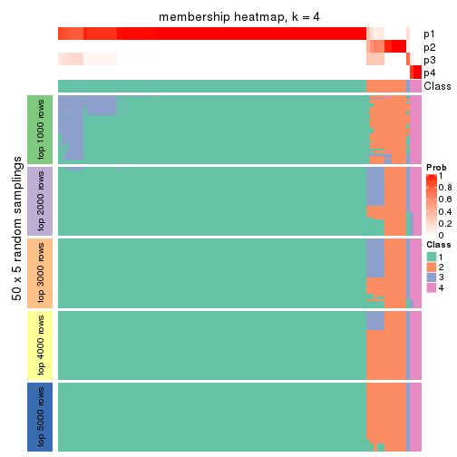
membership_heatmap(res, k = 5)
membership_heatmap(res, k = 6)
As soon as we have had the classes for columns, we can look for signatures which are significantly different between classes which can be candidate marks for certain classes. Following are the heatmaps for signatures.
Signature heatmaps where rows are scaled:
get_signatures(res, k = 2)
get_signatures(res, k = 3)
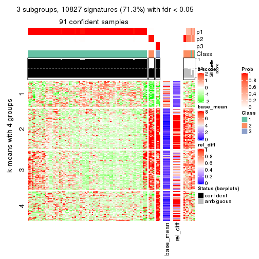
get_signatures(res, k = 4)
get_signatures(res, k = 5)
get_signatures(res, k = 6)
Signature heatmaps where rows are not scaled:
get_signatures(res, k = 2, scale_rows = FALSE)
get_signatures(res, k = 3, scale_rows = FALSE)
get_signatures(res, k = 4, scale_rows = FALSE)
get_signatures(res, k = 5, scale_rows = FALSE)
get_signatures(res, k = 6, scale_rows = FALSE)
Compare the overlap of signatures from different k:
compare_signatures(res)
get_signature() returns a data frame invisibly. TO get the list of signatures, the function
call should be assigned to a variable explicitly. In following code, if plot argument is set
to FALSE, no heatmap is plotted while only the differential analysis is performed.
# code only for demonstration
tb = get_signature(res, k = ..., plot = FALSE)
An example of the output of tb is:
#> which_row fdr mean_1 mean_2 scaled_mean_1 scaled_mean_2 km
#> 1 38 0.042760348 8.373488 9.131774 -0.5533452 0.5164555 1
#> 2 40 0.018707592 7.106213 8.469186 -0.6173731 0.5762149 1
#> 3 55 0.019134737 10.221463 11.207825 -0.6159697 0.5749050 1
#> 4 59 0.006059896 5.921854 7.869574 -0.6899429 0.6439467 1
#> 5 60 0.018055526 8.928898 10.211722 -0.6204761 0.5791110 1
#> 6 98 0.009384629 15.714769 14.887706 0.6635654 -0.6193277 2
...
The columns in tb are:
which_row: row indices corresponding to the input matrix.fdr: FDR for the differential test. mean_x: The mean value in group x.scaled_mean_x: The mean value in group x after rows are scaled.km: Row groups if k-means clustering is applied to rows.UMAP plot which shows how samples are separated.
dimension_reduction(res, k = 2, method = "UMAP")
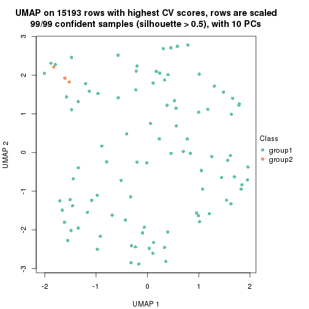
dimension_reduction(res, k = 3, method = "UMAP")
dimension_reduction(res, k = 4, method = "UMAP")
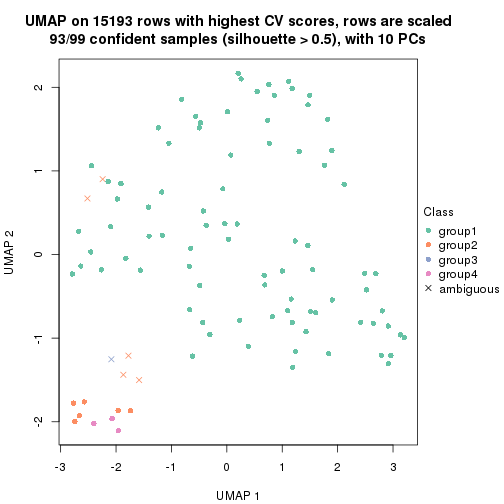
dimension_reduction(res, k = 5, method = "UMAP")
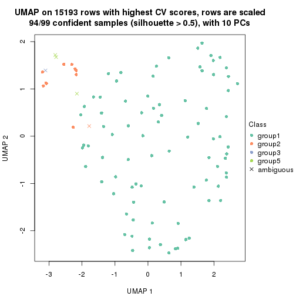
dimension_reduction(res, k = 6, method = "UMAP")
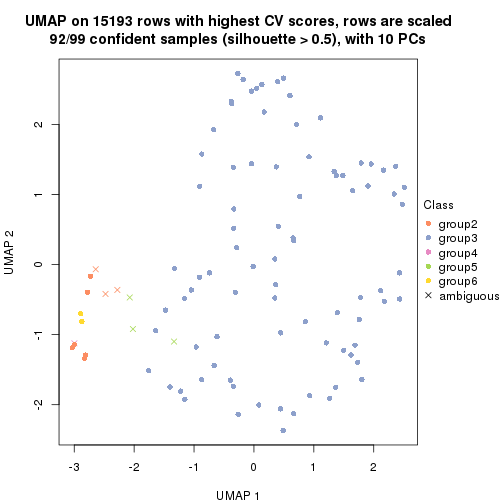
Following heatmap shows how subgroups are split when increasing k:
collect_classes(res)
If matrix rows can be associated to genes, consider to use GO_Enrichment(res,
...) to perform function enrichment for the signature genes.
The object with results only for a single top-value method and a single partition method can be extracted as:
res = res_list["CV", "kmeans"]
# you can also extract it by
# res = res_list["CV:kmeans"]
A summary of res and all the functions that can be applied to it:
res
#> A 'ConsensusPartition' object with k = 2, 3, 4, 5, 6.
#> On a matrix with 15193 rows and 99 columns.
#> Top rows (1000, 2000, 3000, 4000, 5000) are extracted by 'CV' method.
#> Subgroups are detected by 'kmeans' method.
#> Performed in total 1250 partitions by row resampling.
#> Best k for subgroups seems to be 2.
#>
#> Following methods can be applied to this 'ConsensusPartition' object:
#> [1] "cola_report" "collect_classes" "collect_plots"
#> [4] "collect_stats" "colnames" "compare_signatures"
#> [7] "consensus_heatmap" "dimension_reduction" "functional_enrichment"
#> [10] "get_anno_col" "get_anno" "get_classes"
#> [13] "get_consensus" "get_matrix" "get_membership"
#> [16] "get_param" "get_signatures" "get_stats"
#> [19] "is_best_k" "is_stable_k" "membership_heatmap"
#> [22] "ncol" "nrow" "plot_ecdf"
#> [25] "rownames" "select_partition_number" "show"
#> [28] "suggest_best_k" "test_to_known_factors"
collect_plots() function collects all the plots made from res for all k (number of partitions)
into one single page to provide an easy and fast comparison between different k.
collect_plots(res)

The plots are:
k and the heatmap of
predicted classes for each k.k.k.k.All the plots in panels can be made by individual functions and they are plotted later in this section.
select_partition_number() produces several plots showing different
statistics for choosing “optimized” k. There are following statistics:
k;k, the area increased is defined as \(A_k - A_{k-1}\).The detailed explanations of these statistics can be found in the cola vignette.
Generally speaking, lower PAC score, higher mean silhouette score or higher
concordance corresponds to better partition. Rand index and Jaccard index
measure how similar the current partition is compared to partition with k-1.
If they are too similar, we won't accept k is better than k-1.
select_partition_number(res)
The numeric values for all these statistics can be obtained by get_stats().
get_stats(res)
#> k 1-PAC mean_silhouette concordance area_increased Rand Jaccard
#> 2 2 1.000 1.000 1.000 0.2461 0.755 0.755
#> 3 3 0.392 0.682 0.812 0.9889 0.772 0.698
#> 4 4 0.398 0.557 0.711 0.2472 0.622 0.417
#> 5 5 0.483 0.636 0.727 0.1565 0.807 0.535
#> 6 6 0.602 0.739 0.775 0.0701 0.927 0.724
suggest_best_k() suggests the best \(k\) based on these statistics. The rules are as follows:
NA.suggest_best_k(res)
#> [1] 2
Following shows the table of the partitions (You need to click the show/hide
code output link to see it). The membership matrix (columns with name p*)
is inferred by
clue::cl_consensus()
function with the SE method. Basically the value in the membership matrix
represents the probability to belong to a certain group. The finall class
label for an item is determined with the group with highest probability it
belongs to.
In get_classes() function, the entropy is calculated from the membership
matrix and the silhouette score is calculated from the consensus matrix.
cbind(get_classes(res, k = 2), get_membership(res, k = 2))
#> class entropy silhouette p1 p2
#> SRR797072 1 0 1 1 0
#> SRR797073 1 0 1 1 0
#> SRR797074 1 0 1 1 0
#> SRR797075 1 0 1 1 0
#> SRR797076 2 0 1 0 1
#> SRR797077 1 0 1 1 0
#> SRR797078 1 0 1 1 0
#> SRR797079 1 0 1 1 0
#> SRR797080 1 0 1 1 0
#> SRR797081 1 0 1 1 0
#> SRR797082 1 0 1 1 0
#> SRR797083 1 0 1 1 0
#> SRR797084 2 0 1 0 1
#> SRR797085 2 0 1 0 1
#> SRR797086 1 0 1 1 0
#> SRR797087 1 0 1 1 0
#> SRR797088 1 0 1 1 0
#> SRR797089 1 0 1 1 0
#> SRR797090 1 0 1 1 0
#> SRR797091 1 0 1 1 0
#> SRR797092 1 0 1 1 0
#> SRR797093 1 0 1 1 0
#> SRR797094 1 0 1 1 0
#> SRR797095 1 0 1 1 0
#> SRR797096 1 0 1 1 0
#> SRR797097 1 0 1 1 0
#> SRR797098 2 0 1 0 1
#> SRR797099 1 0 1 1 0
#> SRR797100 1 0 1 1 0
#> SRR797101 1 0 1 1 0
#> SRR797102 1 0 1 1 0
#> SRR797103 1 0 1 1 0
#> SRR797104 1 0 1 1 0
#> SRR797105 1 0 1 1 0
#> SRR797106 2 0 1 0 1
#> SRR797107 1 0 1 1 0
#> SRR797108 1 0 1 1 0
#> SRR797109 1 0 1 1 0
#> SRR797110 1 0 1 1 0
#> SRR797111 1 0 1 1 0
#> SRR797112 1 0 1 1 0
#> SRR797113 1 0 1 1 0
#> SRR797114 1 0 1 1 0
#> SRR797115 1 0 1 1 0
#> SRR797116 1 0 1 1 0
#> SRR797117 2 0 1 0 1
#> SRR797118 1 0 1 1 0
#> SRR797119 1 0 1 1 0
#> SRR797120 1 0 1 1 0
#> SRR797121 1 0 1 1 0
#> SRR797122 1 0 1 1 0
#> SRR797123 1 0 1 1 0
#> SRR797124 1 0 1 1 0
#> SRR797125 1 0 1 1 0
#> SRR797126 1 0 1 1 0
#> SRR797127 1 0 1 1 0
#> SRR797128 1 0 1 1 0
#> SRR797129 1 0 1 1 0
#> SRR797130 1 0 1 1 0
#> SRR797131 1 0 1 1 0
#> SRR797132 1 0 1 1 0
#> SRR797133 1 0 1 1 0
#> SRR797134 1 0 1 1 0
#> SRR797135 1 0 1 1 0
#> SRR797136 1 0 1 1 0
#> SRR797137 1 0 1 1 0
#> SRR797138 1 0 1 1 0
#> SRR797139 1 0 1 1 0
#> SRR797140 1 0 1 1 0
#> SRR797141 1 0 1 1 0
#> SRR797142 1 0 1 1 0
#> SRR797143 1 0 1 1 0
#> SRR797144 1 0 1 1 0
#> SRR797145 1 0 1 1 0
#> SRR797146 1 0 1 1 0
#> SRR797147 1 0 1 1 0
#> SRR797148 2 0 1 0 1
#> SRR797149 2 0 1 0 1
#> SRR797150 2 0 1 0 1
#> SRR797151 2 0 1 0 1
#> SRR797152 1 0 1 1 0
#> SRR797153 1 0 1 1 0
#> SRR797154 1 0 1 1 0
#> SRR797155 1 0 1 1 0
#> SRR797156 1 0 1 1 0
#> SRR797157 1 0 1 1 0
#> SRR797158 2 0 1 0 1
#> SRR797159 2 0 1 0 1
#> SRR797160 1 0 1 1 0
#> SRR797161 1 0 1 1 0
#> SRR797162 1 0 1 1 0
#> SRR797163 1 0 1 1 0
#> SRR797164 1 0 1 1 0
#> SRR797165 1 0 1 1 0
#> SRR797166 1 0 1 1 0
#> SRR797167 2 0 1 0 1
#> SRR797168 1 0 1 1 0
#> SRR797169 1 0 1 1 0
#> SRR797170 2 0 1 0 1
cbind(get_classes(res, k = 3), get_membership(res, k = 3))
#> class entropy silhouette p1 p2 p3
#> SRR797072 1 0.4796 0.686 0.780 0.000 0.220
#> SRR797073 1 0.0000 0.741 1.000 0.000 0.000
#> SRR797074 1 0.4796 0.686 0.780 0.000 0.220
#> SRR797075 1 0.4796 0.686 0.780 0.000 0.220
#> SRR797076 2 0.3192 0.893 0.000 0.888 0.112
#> SRR797077 1 0.4796 0.686 0.780 0.000 0.220
#> SRR797078 1 0.0000 0.741 1.000 0.000 0.000
#> SRR797079 1 0.2356 0.688 0.928 0.000 0.072
#> SRR797080 1 0.0000 0.741 1.000 0.000 0.000
#> SRR797081 1 0.1643 0.737 0.956 0.000 0.044
#> SRR797082 1 0.4796 0.686 0.780 0.000 0.220
#> SRR797083 1 0.3038 0.735 0.896 0.000 0.104
#> SRR797084 2 0.3038 0.895 0.000 0.896 0.104
#> SRR797085 2 0.4974 0.845 0.000 0.764 0.236
#> SRR797086 1 0.5291 0.640 0.732 0.000 0.268
#> SRR797087 1 0.1643 0.709 0.956 0.000 0.044
#> SRR797088 1 0.0424 0.741 0.992 0.000 0.008
#> SRR797089 1 0.1643 0.709 0.956 0.000 0.044
#> SRR797090 1 0.4842 0.683 0.776 0.000 0.224
#> SRR797091 1 0.5058 0.666 0.756 0.000 0.244
#> SRR797092 1 0.0000 0.741 1.000 0.000 0.000
#> SRR797093 1 0.0000 0.741 1.000 0.000 0.000
#> SRR797094 1 0.0000 0.741 1.000 0.000 0.000
#> SRR797095 1 0.0000 0.741 1.000 0.000 0.000
#> SRR797096 1 0.4796 0.671 0.780 0.000 0.220
#> SRR797097 1 0.0000 0.741 1.000 0.000 0.000
#> SRR797098 2 0.5098 0.835 0.000 0.752 0.248
#> SRR797099 1 0.6062 0.239 0.616 0.000 0.384
#> SRR797100 1 0.0000 0.741 1.000 0.000 0.000
#> SRR797101 1 0.1643 0.709 0.956 0.000 0.044
#> SRR797102 3 0.4862 0.775 0.160 0.020 0.820
#> SRR797103 3 0.4291 0.795 0.180 0.000 0.820
#> SRR797104 1 0.0000 0.741 1.000 0.000 0.000
#> SRR797105 1 0.0000 0.741 1.000 0.000 0.000
#> SRR797106 2 0.3192 0.893 0.000 0.888 0.112
#> SRR797107 1 0.4887 0.679 0.772 0.000 0.228
#> SRR797108 1 0.4887 0.679 0.772 0.000 0.228
#> SRR797109 1 0.0000 0.741 1.000 0.000 0.000
#> SRR797110 1 0.6095 0.371 0.608 0.000 0.392
#> SRR797111 1 0.5760 0.518 0.672 0.000 0.328
#> SRR797112 1 0.4842 0.674 0.776 0.000 0.224
#> SRR797113 1 0.5497 0.578 0.708 0.000 0.292
#> SRR797114 1 0.5733 0.512 0.676 0.000 0.324
#> SRR797115 1 0.4291 0.679 0.820 0.000 0.180
#> SRR797116 1 0.4235 0.679 0.824 0.000 0.176
#> SRR797117 2 0.3038 0.895 0.000 0.896 0.104
#> SRR797118 1 0.5678 0.545 0.684 0.000 0.316
#> SRR797119 1 0.0000 0.741 1.000 0.000 0.000
#> SRR797120 1 0.5733 0.523 0.676 0.000 0.324
#> SRR797121 1 0.4654 0.687 0.792 0.000 0.208
#> SRR797122 1 0.4796 0.686 0.780 0.000 0.220
#> SRR797123 1 0.4002 0.678 0.840 0.000 0.160
#> SRR797124 1 0.4291 0.679 0.820 0.000 0.180
#> SRR797125 1 0.4796 0.686 0.780 0.000 0.220
#> SRR797126 3 0.5706 0.658 0.320 0.000 0.680
#> SRR797127 1 0.4796 0.686 0.780 0.000 0.220
#> SRR797128 1 0.0000 0.741 1.000 0.000 0.000
#> SRR797129 1 0.0000 0.741 1.000 0.000 0.000
#> SRR797130 1 0.4796 0.686 0.780 0.000 0.220
#> SRR797131 1 0.0000 0.741 1.000 0.000 0.000
#> SRR797132 1 0.0000 0.741 1.000 0.000 0.000
#> SRR797133 1 0.5650 0.551 0.688 0.000 0.312
#> SRR797134 1 0.4796 0.686 0.780 0.000 0.220
#> SRR797135 1 0.4796 0.686 0.780 0.000 0.220
#> SRR797136 1 0.4796 0.686 0.780 0.000 0.220
#> SRR797137 1 0.5497 0.578 0.708 0.000 0.292
#> SRR797138 3 0.5363 0.806 0.276 0.000 0.724
#> SRR797139 1 0.5363 0.205 0.724 0.000 0.276
#> SRR797140 1 0.0000 0.741 1.000 0.000 0.000
#> SRR797141 1 0.0000 0.741 1.000 0.000 0.000
#> SRR797142 1 0.0000 0.741 1.000 0.000 0.000
#> SRR797143 3 0.4351 0.788 0.168 0.004 0.828
#> SRR797144 3 0.4555 0.774 0.200 0.000 0.800
#> SRR797145 3 0.6305 0.478 0.484 0.000 0.516
#> SRR797146 3 0.4399 0.788 0.188 0.000 0.812
#> SRR797147 1 0.4796 0.686 0.780 0.000 0.220
#> SRR797148 2 0.2165 0.917 0.000 0.936 0.064
#> SRR797149 2 0.0592 0.914 0.000 0.988 0.012
#> SRR797150 2 0.5138 0.832 0.000 0.748 0.252
#> SRR797151 2 0.3619 0.899 0.000 0.864 0.136
#> SRR797152 1 0.5706 0.524 0.680 0.000 0.320
#> SRR797153 3 0.5327 0.797 0.272 0.000 0.728
#> SRR797154 1 0.5591 0.563 0.696 0.000 0.304
#> SRR797155 1 0.6295 -0.421 0.528 0.000 0.472
#> SRR797156 1 0.6154 0.417 0.592 0.000 0.408
#> SRR797157 3 0.4589 0.789 0.172 0.008 0.820
#> SRR797158 2 0.2165 0.917 0.000 0.936 0.064
#> SRR797159 2 0.2711 0.915 0.000 0.912 0.088
#> SRR797160 1 0.5016 0.624 0.760 0.000 0.240
#> SRR797161 3 0.5363 0.806 0.276 0.000 0.724
#> SRR797162 3 0.5363 0.806 0.276 0.000 0.724
#> SRR797163 3 0.5363 0.806 0.276 0.000 0.724
#> SRR797164 3 0.6215 0.501 0.428 0.000 0.572
#> SRR797165 1 0.5465 0.128 0.712 0.000 0.288
#> SRR797166 1 0.5254 0.212 0.736 0.000 0.264
#> SRR797167 2 0.0000 0.912 0.000 1.000 0.000
#> SRR797168 3 0.6215 0.501 0.428 0.000 0.572
#> SRR797169 3 0.6079 0.612 0.388 0.000 0.612
#> SRR797170 2 0.2625 0.916 0.000 0.916 0.084
cbind(get_classes(res, k = 4), get_membership(res, k = 4))
#> class entropy silhouette p1 p2 p3 p4
#> SRR797072 1 0.5137 0.546 0.544 0.004 0.452 0.000
#> SRR797073 3 0.0469 0.838 0.012 0.000 0.988 0.000
#> SRR797074 1 0.5137 0.546 0.544 0.004 0.452 0.000
#> SRR797075 1 0.5137 0.546 0.544 0.004 0.452 0.000
#> SRR797076 4 0.0000 0.700 0.000 0.000 0.000 1.000
#> SRR797077 1 0.5112 0.555 0.560 0.004 0.436 0.000
#> SRR797078 3 0.0469 0.838 0.012 0.000 0.988 0.000
#> SRR797079 3 0.6994 0.107 0.288 0.152 0.560 0.000
#> SRR797080 3 0.0000 0.844 0.000 0.000 1.000 0.000
#> SRR797081 3 0.1716 0.775 0.064 0.000 0.936 0.000
#> SRR797082 1 0.5137 0.546 0.544 0.004 0.452 0.000
#> SRR797083 3 0.5132 -0.386 0.448 0.004 0.548 0.000
#> SRR797084 4 0.0188 0.700 0.004 0.000 0.000 0.996
#> SRR797085 2 0.4934 0.794 0.028 0.720 0.000 0.252
#> SRR797086 1 0.5183 0.568 0.584 0.008 0.408 0.000
#> SRR797087 3 0.0336 0.840 0.008 0.000 0.992 0.000
#> SRR797088 3 0.0921 0.827 0.028 0.000 0.972 0.000
#> SRR797089 3 0.0188 0.842 0.004 0.000 0.996 0.000
#> SRR797090 1 0.5137 0.546 0.544 0.004 0.452 0.000
#> SRR797091 1 0.5080 0.561 0.576 0.004 0.420 0.000
#> SRR797092 3 0.0336 0.840 0.008 0.000 0.992 0.000
#> SRR797093 3 0.1211 0.807 0.040 0.000 0.960 0.000
#> SRR797094 3 0.0000 0.844 0.000 0.000 1.000 0.000
#> SRR797095 3 0.0000 0.844 0.000 0.000 1.000 0.000
#> SRR797096 1 0.7328 0.299 0.452 0.156 0.392 0.000
#> SRR797097 3 0.0000 0.844 0.000 0.000 1.000 0.000
#> SRR797098 2 0.5105 0.811 0.024 0.708 0.004 0.264
#> SRR797099 1 0.6795 0.398 0.472 0.096 0.432 0.000
#> SRR797100 3 0.0469 0.838 0.012 0.000 0.988 0.000
#> SRR797101 3 0.0188 0.842 0.004 0.000 0.996 0.000
#> SRR797102 1 0.6263 0.227 0.576 0.356 0.068 0.000
#> SRR797103 1 0.6249 0.222 0.580 0.352 0.068 0.000
#> SRR797104 3 0.0469 0.838 0.012 0.000 0.988 0.000
#> SRR797105 3 0.0000 0.844 0.000 0.000 1.000 0.000
#> SRR797106 4 0.0000 0.700 0.000 0.000 0.000 1.000
#> SRR797107 1 0.5478 0.547 0.540 0.016 0.444 0.000
#> SRR797108 1 0.5126 0.551 0.552 0.004 0.444 0.000
#> SRR797109 3 0.1118 0.812 0.036 0.000 0.964 0.000
#> SRR797110 1 0.5110 0.594 0.656 0.016 0.328 0.000
#> SRR797111 1 0.5389 0.589 0.660 0.032 0.308 0.000
#> SRR797112 1 0.7119 0.366 0.480 0.132 0.388 0.000
#> SRR797113 1 0.7448 0.342 0.452 0.176 0.372 0.000
#> SRR797114 1 0.7456 0.349 0.460 0.180 0.360 0.000
#> SRR797115 1 0.7338 0.273 0.440 0.156 0.404 0.000
#> SRR797116 1 0.7343 0.233 0.424 0.156 0.420 0.000
#> SRR797117 4 0.0469 0.696 0.000 0.012 0.000 0.988
#> SRR797118 1 0.5538 0.591 0.644 0.036 0.320 0.000
#> SRR797119 3 0.1118 0.812 0.036 0.000 0.964 0.000
#> SRR797120 1 0.5432 0.585 0.652 0.032 0.316 0.000
#> SRR797121 1 0.7175 0.349 0.460 0.136 0.404 0.000
#> SRR797122 1 0.5137 0.546 0.544 0.004 0.452 0.000
#> SRR797123 3 0.7343 -0.249 0.416 0.156 0.428 0.000
#> SRR797124 1 0.7342 0.254 0.432 0.156 0.412 0.000
#> SRR797125 1 0.5132 0.549 0.548 0.004 0.448 0.000
#> SRR797126 1 0.6308 0.501 0.656 0.208 0.136 0.000
#> SRR797127 1 0.5137 0.546 0.544 0.004 0.452 0.000
#> SRR797128 3 0.0000 0.844 0.000 0.000 1.000 0.000
#> SRR797129 3 0.0000 0.844 0.000 0.000 1.000 0.000
#> SRR797130 1 0.5137 0.546 0.544 0.004 0.452 0.000
#> SRR797131 3 0.0000 0.844 0.000 0.000 1.000 0.000
#> SRR797132 3 0.0000 0.844 0.000 0.000 1.000 0.000
#> SRR797133 1 0.5538 0.591 0.644 0.036 0.320 0.000
#> SRR797134 1 0.5137 0.546 0.544 0.004 0.452 0.000
#> SRR797135 1 0.5137 0.546 0.544 0.004 0.452 0.000
#> SRR797136 1 0.5137 0.546 0.544 0.004 0.452 0.000
#> SRR797137 1 0.7448 0.342 0.452 0.176 0.372 0.000
#> SRR797138 1 0.5615 0.462 0.716 0.188 0.096 0.000
#> SRR797139 3 0.3881 0.617 0.172 0.016 0.812 0.000
#> SRR797140 3 0.0000 0.844 0.000 0.000 1.000 0.000
#> SRR797141 3 0.0000 0.844 0.000 0.000 1.000 0.000
#> SRR797142 3 0.0469 0.838 0.012 0.000 0.988 0.000
#> SRR797143 1 0.6233 0.186 0.552 0.388 0.060 0.000
#> SRR797144 1 0.5312 0.360 0.692 0.268 0.040 0.000
#> SRR797145 3 0.6436 0.338 0.292 0.100 0.608 0.000
#> SRR797146 1 0.6474 0.174 0.536 0.388 0.076 0.000
#> SRR797147 1 0.5137 0.546 0.544 0.004 0.452 0.000
#> SRR797148 2 0.4830 0.784 0.000 0.608 0.000 0.392
#> SRR797149 4 0.4972 -0.335 0.000 0.456 0.000 0.544
#> SRR797150 2 0.4744 0.772 0.024 0.736 0.000 0.240
#> SRR797151 2 0.5018 0.846 0.012 0.656 0.000 0.332
#> SRR797152 1 0.5492 0.581 0.640 0.032 0.328 0.000
#> SRR797153 1 0.4300 0.517 0.820 0.092 0.088 0.000
#> SRR797154 1 0.5565 0.581 0.624 0.032 0.344 0.000
#> SRR797155 3 0.6362 0.217 0.368 0.072 0.560 0.000
#> SRR797156 1 0.5766 0.564 0.704 0.104 0.192 0.000
#> SRR797157 1 0.6233 0.186 0.552 0.388 0.060 0.000
#> SRR797158 2 0.4830 0.784 0.000 0.608 0.000 0.392
#> SRR797159 2 0.4679 0.842 0.000 0.648 0.000 0.352
#> SRR797160 1 0.7301 0.312 0.484 0.160 0.356 0.000
#> SRR797161 1 0.5594 0.462 0.716 0.192 0.092 0.000
#> SRR797162 1 0.5690 0.457 0.708 0.196 0.096 0.000
#> SRR797163 1 0.5690 0.457 0.708 0.196 0.096 0.000
#> SRR797164 1 0.5018 0.527 0.768 0.088 0.144 0.000
#> SRR797165 3 0.4139 0.598 0.176 0.024 0.800 0.000
#> SRR797166 3 0.4004 0.615 0.164 0.024 0.812 0.000
#> SRR797167 4 0.4967 -0.319 0.000 0.452 0.000 0.548
#> SRR797168 1 0.4805 0.527 0.784 0.084 0.132 0.000
#> SRR797169 1 0.4920 0.516 0.776 0.088 0.136 0.000
#> SRR797170 2 0.4697 0.838 0.000 0.644 0.000 0.356
cbind(get_classes(res, k = 5), get_membership(res, k = 5))
#> class entropy silhouette p1 p2 p3 p4 p5
#> SRR797072 1 0.3366 0.7315 0.768 0.000 0.232 0.000 0.000
#> SRR797073 3 0.0771 0.9256 0.020 0.000 0.976 0.004 0.000
#> SRR797074 1 0.3366 0.7315 0.768 0.000 0.232 0.000 0.000
#> SRR797075 1 0.3366 0.7315 0.768 0.000 0.232 0.000 0.000
#> SRR797076 4 0.8004 -0.1980 0.132 0.220 0.000 0.440 0.208
#> SRR797077 1 0.3336 0.7305 0.772 0.000 0.228 0.000 0.000
#> SRR797078 3 0.0865 0.9236 0.024 0.000 0.972 0.004 0.000
#> SRR797079 4 0.6586 0.5646 0.240 0.000 0.256 0.500 0.004
#> SRR797080 3 0.0451 0.9316 0.004 0.000 0.988 0.000 0.008
#> SRR797081 3 0.1732 0.8678 0.080 0.000 0.920 0.000 0.000
#> SRR797082 1 0.3366 0.7315 0.768 0.000 0.232 0.000 0.000
#> SRR797083 1 0.3774 0.6625 0.704 0.000 0.296 0.000 0.000
#> SRR797084 4 0.8154 -0.2145 0.140 0.240 0.000 0.408 0.212
#> SRR797085 2 0.3174 0.8651 0.004 0.844 0.000 0.020 0.132
#> SRR797086 1 0.4254 0.7022 0.768 0.000 0.188 0.024 0.020
#> SRR797087 3 0.1588 0.9049 0.016 0.000 0.948 0.008 0.028
#> SRR797088 3 0.1828 0.9054 0.028 0.000 0.936 0.032 0.004
#> SRR797089 3 0.1569 0.9099 0.012 0.000 0.948 0.008 0.032
#> SRR797090 1 0.3366 0.7315 0.768 0.000 0.232 0.000 0.000
#> SRR797091 1 0.3845 0.7171 0.768 0.000 0.208 0.024 0.000
#> SRR797092 3 0.1405 0.9206 0.020 0.000 0.956 0.016 0.008
#> SRR797093 3 0.1357 0.8989 0.048 0.000 0.948 0.004 0.000
#> SRR797094 3 0.0162 0.9315 0.004 0.000 0.996 0.000 0.000
#> SRR797095 3 0.0854 0.9275 0.004 0.000 0.976 0.008 0.012
#> SRR797096 4 0.6519 0.5809 0.280 0.000 0.208 0.508 0.004
#> SRR797097 3 0.0451 0.9294 0.000 0.000 0.988 0.008 0.004
#> SRR797098 2 0.1788 0.9282 0.008 0.932 0.000 0.004 0.056
#> SRR797099 1 0.8063 -0.2048 0.368 0.000 0.284 0.252 0.096
#> SRR797100 3 0.0865 0.9236 0.024 0.000 0.972 0.004 0.000
#> SRR797101 3 0.1483 0.9073 0.012 0.000 0.952 0.008 0.028
#> SRR797102 5 0.5485 0.7644 0.268 0.064 0.012 0.004 0.652
#> SRR797103 5 0.5830 0.7114 0.308 0.068 0.016 0.004 0.604
#> SRR797104 3 0.0771 0.9256 0.020 0.000 0.976 0.004 0.000
#> SRR797105 3 0.0290 0.9316 0.000 0.000 0.992 0.000 0.008
#> SRR797106 4 0.8004 -0.1980 0.132 0.220 0.000 0.440 0.208
#> SRR797107 1 0.3727 0.7227 0.768 0.000 0.216 0.016 0.000
#> SRR797108 1 0.3274 0.7284 0.780 0.000 0.220 0.000 0.000
#> SRR797109 3 0.1329 0.9167 0.032 0.000 0.956 0.004 0.008
#> SRR797110 1 0.4546 0.6505 0.780 0.000 0.124 0.024 0.072
#> SRR797111 1 0.5422 0.5125 0.668 0.000 0.120 0.004 0.208
#> SRR797112 1 0.6503 -0.2683 0.436 0.000 0.132 0.420 0.012
#> SRR797113 4 0.7578 0.5511 0.292 0.008 0.184 0.464 0.052
#> SRR797114 4 0.7636 0.5486 0.292 0.008 0.176 0.464 0.060
#> SRR797115 4 0.6532 0.5872 0.272 0.000 0.216 0.508 0.004
#> SRR797116 4 0.6532 0.5872 0.272 0.000 0.216 0.508 0.004
#> SRR797117 4 0.8110 -0.2337 0.132 0.260 0.000 0.408 0.200
#> SRR797118 1 0.5422 0.5125 0.668 0.000 0.120 0.004 0.208
#> SRR797119 3 0.1041 0.9171 0.032 0.000 0.964 0.004 0.000
#> SRR797120 1 0.5534 0.5109 0.656 0.000 0.128 0.004 0.212
#> SRR797121 1 0.6066 -0.2327 0.456 0.000 0.120 0.424 0.000
#> SRR797122 1 0.3366 0.7315 0.768 0.000 0.232 0.000 0.000
#> SRR797123 4 0.6542 0.5876 0.264 0.000 0.224 0.508 0.004
#> SRR797124 4 0.6537 0.5881 0.268 0.000 0.220 0.508 0.004
#> SRR797125 1 0.3366 0.7315 0.768 0.000 0.232 0.000 0.000
#> SRR797126 1 0.7310 -0.2022 0.400 0.008 0.024 0.380 0.188
#> SRR797127 1 0.3366 0.7315 0.768 0.000 0.232 0.000 0.000
#> SRR797128 3 0.0162 0.9315 0.004 0.000 0.996 0.000 0.000
#> SRR797129 3 0.0290 0.9310 0.008 0.000 0.992 0.000 0.000
#> SRR797130 1 0.3366 0.7315 0.768 0.000 0.232 0.000 0.000
#> SRR797131 3 0.0451 0.9316 0.004 0.000 0.988 0.000 0.008
#> SRR797132 3 0.0290 0.9316 0.000 0.000 0.992 0.000 0.008
#> SRR797133 1 0.5422 0.5125 0.668 0.000 0.120 0.004 0.208
#> SRR797134 1 0.3366 0.7315 0.768 0.000 0.232 0.000 0.000
#> SRR797135 1 0.3366 0.7315 0.768 0.000 0.232 0.000 0.000
#> SRR797136 1 0.3366 0.7315 0.768 0.000 0.232 0.000 0.000
#> SRR797137 4 0.7578 0.5511 0.292 0.008 0.184 0.464 0.052
#> SRR797138 5 0.4639 0.7158 0.344 0.000 0.024 0.000 0.632
#> SRR797139 3 0.2642 0.8338 0.008 0.000 0.880 0.008 0.104
#> SRR797140 3 0.0290 0.9316 0.000 0.000 0.992 0.000 0.008
#> SRR797141 3 0.0290 0.9316 0.000 0.000 0.992 0.000 0.008
#> SRR797142 3 0.0794 0.9226 0.028 0.000 0.972 0.000 0.000
#> SRR797143 5 0.5317 0.7550 0.180 0.060 0.004 0.036 0.720
#> SRR797144 5 0.5577 0.6225 0.128 0.012 0.000 0.188 0.672
#> SRR797145 3 0.5687 0.0728 0.020 0.000 0.496 0.040 0.444
#> SRR797146 5 0.5543 0.7454 0.160 0.056 0.016 0.044 0.724
#> SRR797147 1 0.3366 0.7315 0.768 0.000 0.232 0.000 0.000
#> SRR797148 2 0.0451 0.9475 0.000 0.988 0.000 0.004 0.008
#> SRR797149 2 0.2011 0.9126 0.008 0.928 0.000 0.020 0.044
#> SRR797150 2 0.1924 0.9229 0.008 0.924 0.000 0.004 0.064
#> SRR797151 2 0.0932 0.9445 0.004 0.972 0.000 0.004 0.020
#> SRR797152 1 0.5354 0.5157 0.664 0.000 0.128 0.000 0.208
#> SRR797153 1 0.5179 -0.3679 0.496 0.000 0.020 0.012 0.472
#> SRR797154 1 0.5505 0.5174 0.660 0.000 0.128 0.004 0.208
#> SRR797155 5 0.5943 0.1443 0.080 0.000 0.444 0.008 0.468
#> SRR797156 1 0.7189 0.1418 0.464 0.000 0.032 0.284 0.220
#> SRR797157 5 0.4864 0.7621 0.176 0.060 0.004 0.016 0.744
#> SRR797158 2 0.0162 0.9466 0.000 0.996 0.000 0.004 0.000
#> SRR797159 2 0.0671 0.9477 0.004 0.980 0.000 0.000 0.016
#> SRR797160 4 0.6756 0.5794 0.276 0.000 0.200 0.508 0.016
#> SRR797161 5 0.5070 0.7152 0.348 0.008 0.024 0.004 0.616
#> SRR797162 5 0.5026 0.7303 0.336 0.008 0.024 0.004 0.628
#> SRR797163 5 0.5010 0.7308 0.332 0.008 0.024 0.004 0.632
#> SRR797164 1 0.5466 -0.1876 0.520 0.000 0.052 0.004 0.424
#> SRR797165 3 0.2642 0.8338 0.008 0.000 0.880 0.008 0.104
#> SRR797166 3 0.2746 0.8325 0.008 0.000 0.872 0.008 0.112
#> SRR797167 2 0.2011 0.9126 0.008 0.928 0.000 0.020 0.044
#> SRR797168 1 0.5272 -0.1671 0.540 0.000 0.040 0.004 0.416
#> SRR797169 1 0.5123 -0.1980 0.572 0.000 0.044 0.000 0.384
#> SRR797170 2 0.0566 0.9470 0.004 0.984 0.000 0.000 0.012
cbind(get_classes(res, k = 6), get_membership(res, k = 6))
#> class entropy silhouette p1 p2 p3 p4 p5 p6
#> SRR797072 1 0.1957 0.795 0.888 0.000 0.112 0.000 0.000 0.000
#> SRR797073 3 0.1225 0.922 0.036 0.000 0.952 0.012 0.000 0.000
#> SRR797074 1 0.1957 0.795 0.888 0.000 0.112 0.000 0.000 0.000
#> SRR797075 1 0.1957 0.795 0.888 0.000 0.112 0.000 0.000 0.000
#> SRR797076 6 0.1327 0.931 0.000 0.064 0.000 0.000 0.000 0.936
#> SRR797077 1 0.1958 0.790 0.896 0.000 0.100 0.004 0.000 0.000
#> SRR797078 3 0.1196 0.920 0.040 0.000 0.952 0.008 0.000 0.000
#> SRR797079 4 0.5007 0.787 0.212 0.000 0.132 0.652 0.000 0.004
#> SRR797080 3 0.2001 0.921 0.012 0.000 0.924 0.004 0.028 0.032
#> SRR797081 3 0.1267 0.912 0.060 0.000 0.940 0.000 0.000 0.000
#> SRR797082 1 0.1957 0.795 0.888 0.000 0.112 0.000 0.000 0.000
#> SRR797083 1 0.2003 0.791 0.884 0.000 0.116 0.000 0.000 0.000
#> SRR797084 6 0.3419 0.920 0.008 0.116 0.000 0.056 0.000 0.820
#> SRR797085 2 0.3982 0.654 0.008 0.740 0.000 0.020 0.224 0.008
#> SRR797086 1 0.2691 0.756 0.872 0.000 0.088 0.032 0.008 0.000
#> SRR797087 3 0.1078 0.917 0.012 0.000 0.964 0.016 0.008 0.000
#> SRR797088 3 0.2251 0.894 0.036 0.000 0.904 0.052 0.008 0.000
#> SRR797089 3 0.2115 0.909 0.000 0.000 0.916 0.020 0.032 0.032
#> SRR797090 1 0.1910 0.792 0.892 0.000 0.108 0.000 0.000 0.000
#> SRR797091 1 0.2432 0.765 0.876 0.000 0.100 0.024 0.000 0.000
#> SRR797092 3 0.1088 0.923 0.016 0.000 0.960 0.024 0.000 0.000
#> SRR797093 3 0.2163 0.864 0.096 0.000 0.892 0.008 0.004 0.000
#> SRR797094 3 0.0508 0.926 0.012 0.000 0.984 0.004 0.000 0.000
#> SRR797095 3 0.2232 0.919 0.012 0.000 0.916 0.016 0.028 0.028
#> SRR797096 4 0.4815 0.819 0.236 0.000 0.088 0.668 0.008 0.000
#> SRR797097 3 0.0725 0.926 0.012 0.000 0.976 0.012 0.000 0.000
#> SRR797098 2 0.0909 0.918 0.000 0.968 0.000 0.012 0.020 0.000
#> SRR797099 4 0.7292 0.638 0.240 0.004 0.192 0.436 0.128 0.000
#> SRR797100 3 0.1196 0.920 0.040 0.000 0.952 0.008 0.000 0.000
#> SRR797101 3 0.0820 0.916 0.000 0.000 0.972 0.016 0.012 0.000
#> SRR797102 5 0.6178 0.617 0.200 0.028 0.004 0.196 0.568 0.004
#> SRR797103 5 0.6326 0.503 0.216 0.052 0.032 0.088 0.608 0.004
#> SRR797104 3 0.1124 0.922 0.036 0.000 0.956 0.008 0.000 0.000
#> SRR797105 3 0.2094 0.921 0.016 0.000 0.920 0.004 0.028 0.032
#> SRR797106 6 0.1327 0.931 0.000 0.064 0.000 0.000 0.000 0.936
#> SRR797107 1 0.1863 0.789 0.896 0.000 0.104 0.000 0.000 0.000
#> SRR797108 1 0.1806 0.782 0.908 0.000 0.088 0.004 0.000 0.000
#> SRR797109 3 0.2755 0.897 0.064 0.000 0.884 0.012 0.016 0.024
#> SRR797110 1 0.2520 0.744 0.888 0.000 0.068 0.032 0.012 0.000
#> SRR797111 1 0.5454 0.501 0.660 0.000 0.048 0.120 0.172 0.000
#> SRR797112 4 0.4872 0.601 0.452 0.000 0.040 0.500 0.008 0.000
#> SRR797113 4 0.6146 0.795 0.256 0.012 0.076 0.584 0.072 0.000
#> SRR797114 4 0.6146 0.795 0.256 0.012 0.076 0.584 0.072 0.000
#> SRR797115 4 0.4745 0.817 0.220 0.000 0.100 0.676 0.000 0.004
#> SRR797116 4 0.4745 0.817 0.220 0.000 0.100 0.676 0.000 0.004
#> SRR797117 6 0.2955 0.884 0.004 0.172 0.000 0.008 0.000 0.816
#> SRR797118 1 0.5454 0.501 0.660 0.000 0.048 0.120 0.172 0.000
#> SRR797119 3 0.1584 0.902 0.064 0.000 0.928 0.008 0.000 0.000
#> SRR797120 1 0.5621 0.483 0.644 0.000 0.052 0.132 0.172 0.000
#> SRR797121 4 0.4975 0.599 0.444 0.000 0.048 0.500 0.008 0.000
#> SRR797122 1 0.1957 0.795 0.888 0.000 0.112 0.000 0.000 0.000
#> SRR797123 4 0.4745 0.817 0.220 0.000 0.100 0.676 0.000 0.004
#> SRR797124 4 0.4745 0.817 0.220 0.000 0.100 0.676 0.000 0.004
#> SRR797125 1 0.1957 0.795 0.888 0.000 0.112 0.000 0.000 0.000
#> SRR797126 4 0.6369 0.662 0.276 0.016 0.032 0.536 0.140 0.000
#> SRR797127 1 0.1957 0.795 0.888 0.000 0.112 0.000 0.000 0.000
#> SRR797128 3 0.0603 0.926 0.016 0.000 0.980 0.004 0.000 0.000
#> SRR797129 3 0.0777 0.926 0.024 0.000 0.972 0.004 0.000 0.000
#> SRR797130 1 0.1957 0.795 0.888 0.000 0.112 0.000 0.000 0.000
#> SRR797131 3 0.2127 0.922 0.016 0.000 0.920 0.008 0.024 0.032
#> SRR797132 3 0.2001 0.921 0.012 0.000 0.924 0.004 0.028 0.032
#> SRR797133 1 0.5454 0.501 0.660 0.000 0.048 0.120 0.172 0.000
#> SRR797134 1 0.1957 0.795 0.888 0.000 0.112 0.000 0.000 0.000
#> SRR797135 1 0.1957 0.795 0.888 0.000 0.112 0.000 0.000 0.000
#> SRR797136 1 0.1957 0.795 0.888 0.000 0.112 0.000 0.000 0.000
#> SRR797137 4 0.6146 0.795 0.256 0.012 0.076 0.584 0.072 0.000
#> SRR797138 5 0.5953 0.595 0.272 0.000 0.012 0.196 0.520 0.000
#> SRR797139 3 0.2364 0.877 0.016 0.000 0.904 0.016 0.056 0.008
#> SRR797140 3 0.2001 0.921 0.012 0.000 0.924 0.004 0.028 0.032
#> SRR797141 3 0.2094 0.921 0.016 0.000 0.920 0.004 0.028 0.032
#> SRR797142 3 0.1152 0.920 0.044 0.000 0.952 0.004 0.000 0.000
#> SRR797143 5 0.2800 0.480 0.008 0.032 0.012 0.036 0.892 0.020
#> SRR797144 5 0.3564 0.431 0.028 0.000 0.008 0.124 0.820 0.020
#> SRR797145 5 0.5004 0.123 0.000 0.000 0.308 0.044 0.620 0.028
#> SRR797146 5 0.2827 0.471 0.004 0.032 0.012 0.044 0.888 0.020
#> SRR797147 1 0.1957 0.795 0.888 0.000 0.112 0.000 0.000 0.000
#> SRR797148 2 0.0665 0.927 0.000 0.980 0.000 0.008 0.004 0.008
#> SRR797149 2 0.1970 0.892 0.008 0.920 0.000 0.028 0.000 0.044
#> SRR797150 2 0.0806 0.920 0.000 0.972 0.000 0.008 0.020 0.000
#> SRR797151 2 0.0520 0.925 0.000 0.984 0.000 0.008 0.008 0.000
#> SRR797152 1 0.5352 0.522 0.672 0.000 0.052 0.104 0.172 0.000
#> SRR797153 5 0.6205 0.434 0.360 0.000 0.012 0.208 0.420 0.000
#> SRR797154 1 0.5511 0.504 0.656 0.000 0.052 0.120 0.172 0.000
#> SRR797155 3 0.5637 0.210 0.036 0.000 0.552 0.076 0.336 0.000
#> SRR797156 4 0.6207 0.151 0.344 0.000 0.020 0.456 0.180 0.000
#> SRR797157 5 0.2314 0.495 0.016 0.032 0.012 0.008 0.916 0.016
#> SRR797158 2 0.0520 0.927 0.000 0.984 0.000 0.008 0.000 0.008
#> SRR797159 2 0.1096 0.921 0.004 0.964 0.000 0.020 0.008 0.004
#> SRR797160 4 0.4533 0.807 0.208 0.000 0.088 0.700 0.000 0.004
#> SRR797161 5 0.6388 0.588 0.284 0.008 0.012 0.184 0.504 0.008
#> SRR797162 5 0.6348 0.603 0.272 0.008 0.012 0.184 0.516 0.008
#> SRR797163 5 0.6348 0.603 0.272 0.008 0.012 0.184 0.516 0.008
#> SRR797164 1 0.6411 -0.273 0.436 0.000 0.020 0.196 0.344 0.004
#> SRR797165 3 0.2617 0.856 0.012 0.000 0.884 0.016 0.080 0.008
#> SRR797166 3 0.3211 0.849 0.012 0.000 0.852 0.016 0.092 0.028
#> SRR797167 2 0.1970 0.892 0.008 0.920 0.000 0.028 0.000 0.044
#> SRR797168 1 0.6159 -0.274 0.440 0.000 0.012 0.200 0.348 0.000
#> SRR797169 1 0.5529 0.068 0.600 0.000 0.012 0.124 0.260 0.004
#> SRR797170 2 0.1096 0.921 0.004 0.964 0.000 0.020 0.008 0.004
Heatmaps for the consensus matrix. It visualizes the probability of two samples to be in a same group.
consensus_heatmap(res, k = 2)
consensus_heatmap(res, k = 3)

consensus_heatmap(res, k = 4)
consensus_heatmap(res, k = 5)
consensus_heatmap(res, k = 6)
Heatmaps for the membership of samples in all partitions to see how consistent they are:
membership_heatmap(res, k = 2)
membership_heatmap(res, k = 3)
membership_heatmap(res, k = 4)
membership_heatmap(res, k = 5)
membership_heatmap(res, k = 6)
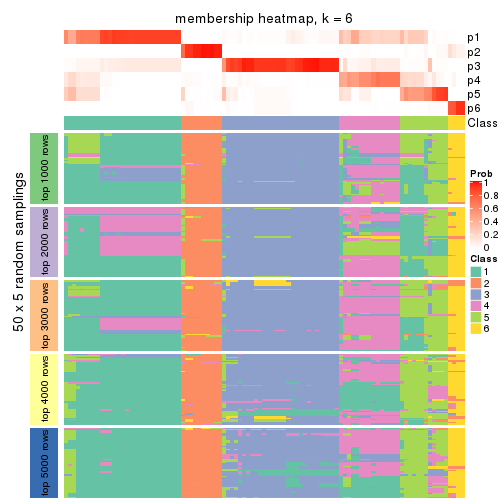
As soon as we have had the classes for columns, we can look for signatures which are significantly different between classes which can be candidate marks for certain classes. Following are the heatmaps for signatures.
Signature heatmaps where rows are scaled:
get_signatures(res, k = 2)
get_signatures(res, k = 3)
get_signatures(res, k = 4)
get_signatures(res, k = 5)
get_signatures(res, k = 6)
Signature heatmaps where rows are not scaled:
get_signatures(res, k = 2, scale_rows = FALSE)
get_signatures(res, k = 3, scale_rows = FALSE)
get_signatures(res, k = 4, scale_rows = FALSE)
get_signatures(res, k = 5, scale_rows = FALSE)
get_signatures(res, k = 6, scale_rows = FALSE)
Compare the overlap of signatures from different k:
compare_signatures(res)
get_signature() returns a data frame invisibly. TO get the list of signatures, the function
call should be assigned to a variable explicitly. In following code, if plot argument is set
to FALSE, no heatmap is plotted while only the differential analysis is performed.
# code only for demonstration
tb = get_signature(res, k = ..., plot = FALSE)
An example of the output of tb is:
#> which_row fdr mean_1 mean_2 scaled_mean_1 scaled_mean_2 km
#> 1 38 0.042760348 8.373488 9.131774 -0.5533452 0.5164555 1
#> 2 40 0.018707592 7.106213 8.469186 -0.6173731 0.5762149 1
#> 3 55 0.019134737 10.221463 11.207825 -0.6159697 0.5749050 1
#> 4 59 0.006059896 5.921854 7.869574 -0.6899429 0.6439467 1
#> 5 60 0.018055526 8.928898 10.211722 -0.6204761 0.5791110 1
#> 6 98 0.009384629 15.714769 14.887706 0.6635654 -0.6193277 2
...
The columns in tb are:
which_row: row indices corresponding to the input matrix.fdr: FDR for the differential test. mean_x: The mean value in group x.scaled_mean_x: The mean value in group x after rows are scaled.km: Row groups if k-means clustering is applied to rows.UMAP plot which shows how samples are separated.
dimension_reduction(res, k = 2, method = "UMAP")
dimension_reduction(res, k = 3, method = "UMAP")
dimension_reduction(res, k = 4, method = "UMAP")
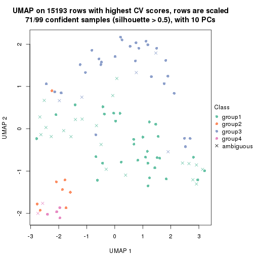
dimension_reduction(res, k = 5, method = "UMAP")
dimension_reduction(res, k = 6, method = "UMAP")
Following heatmap shows how subgroups are split when increasing k:
collect_classes(res)
If matrix rows can be associated to genes, consider to use GO_Enrichment(res,
...) to perform function enrichment for the signature genes.
The object with results only for a single top-value method and a single partition method can be extracted as:
res = res_list["CV", "skmeans"]
# you can also extract it by
# res = res_list["CV:skmeans"]
A summary of res and all the functions that can be applied to it:
res
#> A 'ConsensusPartition' object with k = 2, 3, 4, 5, 6.
#> On a matrix with 15193 rows and 99 columns.
#> Top rows (1000, 2000, 3000, 4000, 5000) are extracted by 'CV' method.
#> Subgroups are detected by 'skmeans' method.
#> Performed in total 1250 partitions by row resampling.
#> Best k for subgroups seems to be 3.
#>
#> Following methods can be applied to this 'ConsensusPartition' object:
#> [1] "cola_report" "collect_classes" "collect_plots"
#> [4] "collect_stats" "colnames" "compare_signatures"
#> [7] "consensus_heatmap" "dimension_reduction" "functional_enrichment"
#> [10] "get_anno_col" "get_anno" "get_classes"
#> [13] "get_consensus" "get_matrix" "get_membership"
#> [16] "get_param" "get_signatures" "get_stats"
#> [19] "is_best_k" "is_stable_k" "membership_heatmap"
#> [22] "ncol" "nrow" "plot_ecdf"
#> [25] "rownames" "select_partition_number" "show"
#> [28] "suggest_best_k" "test_to_known_factors"
collect_plots() function collects all the plots made from res for all k (number of partitions)
into one single page to provide an easy and fast comparison between different k.
collect_plots(res)
The plots are:
k and the heatmap of
predicted classes for each k.k.k.k.All the plots in panels can be made by individual functions and they are plotted later in this section.
select_partition_number() produces several plots showing different
statistics for choosing “optimized” k. There are following statistics:
k;k, the area increased is defined as \(A_k - A_{k-1}\).The detailed explanations of these statistics can be found in the cola vignette.
Generally speaking, lower PAC score, higher mean silhouette score or higher
concordance corresponds to better partition. Rand index and Jaccard index
measure how similar the current partition is compared to partition with k-1.
If they are too similar, we won't accept k is better than k-1.
select_partition_number(res)
The numeric values for all these statistics can be obtained by get_stats().
get_stats(res)
#> k 1-PAC mean_silhouette concordance area_increased Rand Jaccard
#> 2 2 0.785 0.899 0.958 0.4342 0.582 0.582
#> 3 3 0.873 0.921 0.958 0.5322 0.710 0.519
#> 4 4 0.771 0.836 0.893 0.1099 0.912 0.743
#> 5 5 0.886 0.853 0.924 0.0707 0.924 0.724
#> 6 6 0.809 0.770 0.863 0.0342 0.974 0.878
suggest_best_k() suggests the best \(k\) based on these statistics. The rules are as follows:
NA.suggest_best_k(res)
#> [1] 3
Following shows the table of the partitions (You need to click the show/hide
code output link to see it). The membership matrix (columns with name p*)
is inferred by
clue::cl_consensus()
function with the SE method. Basically the value in the membership matrix
represents the probability to belong to a certain group. The finall class
label for an item is determined with the group with highest probability it
belongs to.
In get_classes() function, the entropy is calculated from the membership
matrix and the silhouette score is calculated from the consensus matrix.
cbind(get_classes(res, k = 2), get_membership(res, k = 2))
#> class entropy silhouette p1 p2
#> SRR797072 1 0.0000 0.951 1.000 0.000
#> SRR797073 1 0.0000 0.951 1.000 0.000
#> SRR797074 1 0.0000 0.951 1.000 0.000
#> SRR797075 1 0.0000 0.951 1.000 0.000
#> SRR797076 2 0.0000 0.960 0.000 1.000
#> SRR797077 1 0.0000 0.951 1.000 0.000
#> SRR797078 1 0.0000 0.951 1.000 0.000
#> SRR797079 1 0.0000 0.951 1.000 0.000
#> SRR797080 1 0.0000 0.951 1.000 0.000
#> SRR797081 1 0.0000 0.951 1.000 0.000
#> SRR797082 1 0.0000 0.951 1.000 0.000
#> SRR797083 1 0.0000 0.951 1.000 0.000
#> SRR797084 2 0.0000 0.960 0.000 1.000
#> SRR797085 2 0.0000 0.960 0.000 1.000
#> SRR797086 2 0.9944 0.137 0.456 0.544
#> SRR797087 1 0.0000 0.951 1.000 0.000
#> SRR797088 1 0.0000 0.951 1.000 0.000
#> SRR797089 1 0.0000 0.951 1.000 0.000
#> SRR797090 1 0.0000 0.951 1.000 0.000
#> SRR797091 1 0.0000 0.951 1.000 0.000
#> SRR797092 1 0.0000 0.951 1.000 0.000
#> SRR797093 1 0.0000 0.951 1.000 0.000
#> SRR797094 1 0.0000 0.951 1.000 0.000
#> SRR797095 1 0.0000 0.951 1.000 0.000
#> SRR797096 1 0.6801 0.778 0.820 0.180
#> SRR797097 1 0.0000 0.951 1.000 0.000
#> SRR797098 2 0.0000 0.960 0.000 1.000
#> SRR797099 2 0.0000 0.960 0.000 1.000
#> SRR797100 1 0.0000 0.951 1.000 0.000
#> SRR797101 1 0.0000 0.951 1.000 0.000
#> SRR797102 2 0.0000 0.960 0.000 1.000
#> SRR797103 2 0.0000 0.960 0.000 1.000
#> SRR797104 1 0.0000 0.951 1.000 0.000
#> SRR797105 1 0.0000 0.951 1.000 0.000
#> SRR797106 2 0.0000 0.960 0.000 1.000
#> SRR797107 1 0.0000 0.951 1.000 0.000
#> SRR797108 1 0.0000 0.951 1.000 0.000
#> SRR797109 1 0.0000 0.951 1.000 0.000
#> SRR797110 2 0.0376 0.957 0.004 0.996
#> SRR797111 1 0.0000 0.951 1.000 0.000
#> SRR797112 1 0.7139 0.757 0.804 0.196
#> SRR797113 2 0.6973 0.756 0.188 0.812
#> SRR797114 2 0.0000 0.960 0.000 1.000
#> SRR797115 1 0.6801 0.778 0.820 0.180
#> SRR797116 1 0.6801 0.778 0.820 0.180
#> SRR797117 2 0.0000 0.960 0.000 1.000
#> SRR797118 1 0.0000 0.951 1.000 0.000
#> SRR797119 1 0.0000 0.951 1.000 0.000
#> SRR797120 1 0.0000 0.951 1.000 0.000
#> SRR797121 1 0.6801 0.778 0.820 0.180
#> SRR797122 1 0.0000 0.951 1.000 0.000
#> SRR797123 1 0.6801 0.778 0.820 0.180
#> SRR797124 1 0.6623 0.788 0.828 0.172
#> SRR797125 1 0.0000 0.951 1.000 0.000
#> SRR797126 2 0.0000 0.960 0.000 1.000
#> SRR797127 1 0.0000 0.951 1.000 0.000
#> SRR797128 1 0.0000 0.951 1.000 0.000
#> SRR797129 1 0.0000 0.951 1.000 0.000
#> SRR797130 1 0.0000 0.951 1.000 0.000
#> SRR797131 1 0.0000 0.951 1.000 0.000
#> SRR797132 1 0.0000 0.951 1.000 0.000
#> SRR797133 1 0.0000 0.951 1.000 0.000
#> SRR797134 1 0.0000 0.951 1.000 0.000
#> SRR797135 1 0.0000 0.951 1.000 0.000
#> SRR797136 1 0.0000 0.951 1.000 0.000
#> SRR797137 2 0.6973 0.756 0.188 0.812
#> SRR797138 1 0.9580 0.385 0.620 0.380
#> SRR797139 1 0.0000 0.951 1.000 0.000
#> SRR797140 1 0.0000 0.951 1.000 0.000
#> SRR797141 1 0.0000 0.951 1.000 0.000
#> SRR797142 1 0.0000 0.951 1.000 0.000
#> SRR797143 2 0.0000 0.960 0.000 1.000
#> SRR797144 2 0.0000 0.960 0.000 1.000
#> SRR797145 2 0.0000 0.960 0.000 1.000
#> SRR797146 2 0.0000 0.960 0.000 1.000
#> SRR797147 1 0.0000 0.951 1.000 0.000
#> SRR797148 2 0.0000 0.960 0.000 1.000
#> SRR797149 2 0.0000 0.960 0.000 1.000
#> SRR797150 2 0.0000 0.960 0.000 1.000
#> SRR797151 2 0.0000 0.960 0.000 1.000
#> SRR797152 1 0.0000 0.951 1.000 0.000
#> SRR797153 2 0.7056 0.752 0.192 0.808
#> SRR797154 1 0.0000 0.951 1.000 0.000
#> SRR797155 1 0.0000 0.951 1.000 0.000
#> SRR797156 1 0.0000 0.951 1.000 0.000
#> SRR797157 2 0.0000 0.960 0.000 1.000
#> SRR797158 2 0.0000 0.960 0.000 1.000
#> SRR797159 2 0.0000 0.960 0.000 1.000
#> SRR797160 1 0.6801 0.778 0.820 0.180
#> SRR797161 1 0.9775 0.299 0.588 0.412
#> SRR797162 1 0.9775 0.299 0.588 0.412
#> SRR797163 1 0.9754 0.311 0.592 0.408
#> SRR797164 1 0.0000 0.951 1.000 0.000
#> SRR797165 1 0.0000 0.951 1.000 0.000
#> SRR797166 1 0.0000 0.951 1.000 0.000
#> SRR797167 2 0.0000 0.960 0.000 1.000
#> SRR797168 1 0.0000 0.951 1.000 0.000
#> SRR797169 1 0.3733 0.888 0.928 0.072
#> SRR797170 2 0.0000 0.960 0.000 1.000
cbind(get_classes(res, k = 3), get_membership(res, k = 3))
#> class entropy silhouette p1 p2 p3
#> SRR797072 1 0.0424 0.960 0.992 0.000 0.008
#> SRR797073 3 0.0747 0.948 0.016 0.000 0.984
#> SRR797074 1 0.0424 0.960 0.992 0.000 0.008
#> SRR797075 1 0.0424 0.960 0.992 0.000 0.008
#> SRR797076 2 0.0000 0.968 0.000 1.000 0.000
#> SRR797077 1 0.0237 0.959 0.996 0.000 0.004
#> SRR797078 3 0.0747 0.948 0.016 0.000 0.984
#> SRR797079 3 0.2625 0.906 0.084 0.000 0.916
#> SRR797080 3 0.0592 0.949 0.012 0.000 0.988
#> SRR797081 3 0.1860 0.928 0.052 0.000 0.948
#> SRR797082 1 0.0424 0.960 0.992 0.000 0.008
#> SRR797083 1 0.0592 0.957 0.988 0.000 0.012
#> SRR797084 2 0.0000 0.968 0.000 1.000 0.000
#> SRR797085 2 0.0000 0.968 0.000 1.000 0.000
#> SRR797086 1 0.5291 0.660 0.732 0.268 0.000
#> SRR797087 3 0.0237 0.943 0.004 0.000 0.996
#> SRR797088 3 0.0237 0.947 0.004 0.000 0.996
#> SRR797089 3 0.0237 0.943 0.004 0.000 0.996
#> SRR797090 1 0.0424 0.960 0.992 0.000 0.008
#> SRR797091 1 0.0424 0.960 0.992 0.000 0.008
#> SRR797092 3 0.0237 0.947 0.004 0.000 0.996
#> SRR797093 3 0.1031 0.945 0.024 0.000 0.976
#> SRR797094 3 0.0592 0.949 0.012 0.000 0.988
#> SRR797095 3 0.0000 0.945 0.000 0.000 1.000
#> SRR797096 3 0.5529 0.649 0.296 0.000 0.704
#> SRR797097 3 0.0424 0.948 0.008 0.000 0.992
#> SRR797098 2 0.0000 0.968 0.000 1.000 0.000
#> SRR797099 2 0.0237 0.965 0.000 0.996 0.004
#> SRR797100 3 0.0747 0.948 0.016 0.000 0.984
#> SRR797101 3 0.0000 0.945 0.000 0.000 1.000
#> SRR797102 2 0.0000 0.968 0.000 1.000 0.000
#> SRR797103 2 0.0000 0.968 0.000 1.000 0.000
#> SRR797104 3 0.0592 0.949 0.012 0.000 0.988
#> SRR797105 3 0.0592 0.949 0.012 0.000 0.988
#> SRR797106 2 0.0000 0.968 0.000 1.000 0.000
#> SRR797107 1 0.0424 0.960 0.992 0.000 0.008
#> SRR797108 1 0.0424 0.960 0.992 0.000 0.008
#> SRR797109 3 0.0747 0.948 0.016 0.000 0.984
#> SRR797110 2 0.5905 0.422 0.352 0.648 0.000
#> SRR797111 1 0.0237 0.959 0.996 0.000 0.004
#> SRR797112 1 0.2269 0.928 0.944 0.040 0.016
#> SRR797113 2 0.4399 0.758 0.188 0.812 0.000
#> SRR797114 2 0.0000 0.968 0.000 1.000 0.000
#> SRR797115 3 0.5178 0.716 0.256 0.000 0.744
#> SRR797116 3 0.4702 0.776 0.212 0.000 0.788
#> SRR797117 2 0.0000 0.968 0.000 1.000 0.000
#> SRR797118 1 0.0237 0.959 0.996 0.000 0.004
#> SRR797119 3 0.0747 0.948 0.016 0.000 0.984
#> SRR797120 1 0.0237 0.959 0.996 0.000 0.004
#> SRR797121 1 0.2682 0.897 0.920 0.004 0.076
#> SRR797122 1 0.0424 0.960 0.992 0.000 0.008
#> SRR797123 3 0.2878 0.896 0.096 0.000 0.904
#> SRR797124 3 0.4121 0.826 0.168 0.000 0.832
#> SRR797125 1 0.0424 0.960 0.992 0.000 0.008
#> SRR797126 2 0.0000 0.968 0.000 1.000 0.000
#> SRR797127 1 0.0424 0.960 0.992 0.000 0.008
#> SRR797128 3 0.0592 0.949 0.012 0.000 0.988
#> SRR797129 3 0.0592 0.949 0.012 0.000 0.988
#> SRR797130 1 0.0424 0.960 0.992 0.000 0.008
#> SRR797131 3 0.0592 0.949 0.012 0.000 0.988
#> SRR797132 3 0.0000 0.945 0.000 0.000 1.000
#> SRR797133 1 0.0237 0.959 0.996 0.000 0.004
#> SRR797134 1 0.0424 0.960 0.992 0.000 0.008
#> SRR797135 1 0.0424 0.960 0.992 0.000 0.008
#> SRR797136 1 0.0424 0.960 0.992 0.000 0.008
#> SRR797137 2 0.4399 0.758 0.188 0.812 0.000
#> SRR797138 1 0.4128 0.833 0.856 0.132 0.012
#> SRR797139 3 0.0424 0.941 0.008 0.000 0.992
#> SRR797140 3 0.0592 0.949 0.012 0.000 0.988
#> SRR797141 3 0.0592 0.949 0.012 0.000 0.988
#> SRR797142 3 0.0747 0.948 0.016 0.000 0.984
#> SRR797143 2 0.0000 0.968 0.000 1.000 0.000
#> SRR797144 2 0.0000 0.968 0.000 1.000 0.000
#> SRR797145 3 0.5156 0.709 0.008 0.216 0.776
#> SRR797146 2 0.0237 0.965 0.004 0.996 0.000
#> SRR797147 1 0.0424 0.960 0.992 0.000 0.008
#> SRR797148 2 0.0000 0.968 0.000 1.000 0.000
#> SRR797149 2 0.0000 0.968 0.000 1.000 0.000
#> SRR797150 2 0.0000 0.968 0.000 1.000 0.000
#> SRR797151 2 0.0000 0.968 0.000 1.000 0.000
#> SRR797152 1 0.0237 0.959 0.996 0.000 0.004
#> SRR797153 1 0.2339 0.920 0.940 0.048 0.012
#> SRR797154 1 0.0237 0.959 0.996 0.000 0.004
#> SRR797155 3 0.1031 0.937 0.024 0.000 0.976
#> SRR797156 1 0.0424 0.953 0.992 0.000 0.008
#> SRR797157 2 0.0475 0.962 0.004 0.992 0.004
#> SRR797158 2 0.0000 0.968 0.000 1.000 0.000
#> SRR797159 2 0.0000 0.968 0.000 1.000 0.000
#> SRR797160 3 0.5058 0.738 0.244 0.000 0.756
#> SRR797161 1 0.4968 0.766 0.800 0.188 0.012
#> SRR797162 1 0.4968 0.766 0.800 0.188 0.012
#> SRR797163 1 0.4968 0.766 0.800 0.188 0.012
#> SRR797164 1 0.1031 0.945 0.976 0.000 0.024
#> SRR797165 3 0.0424 0.941 0.008 0.000 0.992
#> SRR797166 3 0.0424 0.941 0.008 0.000 0.992
#> SRR797167 2 0.0000 0.968 0.000 1.000 0.000
#> SRR797168 1 0.0747 0.949 0.984 0.000 0.016
#> SRR797169 1 0.0747 0.949 0.984 0.000 0.016
#> SRR797170 2 0.0000 0.968 0.000 1.000 0.000
cbind(get_classes(res, k = 4), get_membership(res, k = 4))
#> class entropy silhouette p1 p2 p3 p4
#> SRR797072 1 0.4661 0.850 0.652 0.000 0.000 0.348
#> SRR797073 3 0.0000 0.954 0.000 0.000 1.000 0.000
#> SRR797074 1 0.4661 0.850 0.652 0.000 0.000 0.348
#> SRR797075 1 0.4661 0.850 0.652 0.000 0.000 0.348
#> SRR797076 2 0.0000 0.933 0.000 1.000 0.000 0.000
#> SRR797077 1 0.4605 0.849 0.664 0.000 0.000 0.336
#> SRR797078 3 0.0000 0.954 0.000 0.000 1.000 0.000
#> SRR797079 4 0.4456 0.684 0.004 0.000 0.280 0.716
#> SRR797080 3 0.0000 0.954 0.000 0.000 1.000 0.000
#> SRR797081 3 0.0188 0.951 0.000 0.000 0.996 0.004
#> SRR797082 1 0.4661 0.850 0.652 0.000 0.000 0.348
#> SRR797083 1 0.5110 0.839 0.636 0.000 0.012 0.352
#> SRR797084 2 0.0000 0.933 0.000 1.000 0.000 0.000
#> SRR797085 2 0.0000 0.933 0.000 1.000 0.000 0.000
#> SRR797086 1 0.6889 0.631 0.592 0.232 0.000 0.176
#> SRR797087 3 0.0000 0.954 0.000 0.000 1.000 0.000
#> SRR797088 3 0.0469 0.946 0.000 0.000 0.988 0.012
#> SRR797089 3 0.0000 0.954 0.000 0.000 1.000 0.000
#> SRR797090 1 0.4661 0.850 0.652 0.000 0.000 0.348
#> SRR797091 1 0.4804 0.821 0.616 0.000 0.000 0.384
#> SRR797092 3 0.0000 0.954 0.000 0.000 1.000 0.000
#> SRR797093 3 0.1118 0.920 0.000 0.000 0.964 0.036
#> SRR797094 3 0.0000 0.954 0.000 0.000 1.000 0.000
#> SRR797095 3 0.0000 0.954 0.000 0.000 1.000 0.000
#> SRR797096 4 0.3013 0.778 0.032 0.000 0.080 0.888
#> SRR797097 3 0.0000 0.954 0.000 0.000 1.000 0.000
#> SRR797098 2 0.0000 0.933 0.000 1.000 0.000 0.000
#> SRR797099 2 0.5113 0.527 0.024 0.684 0.000 0.292
#> SRR797100 3 0.0000 0.954 0.000 0.000 1.000 0.000
#> SRR797101 3 0.0188 0.951 0.004 0.000 0.996 0.000
#> SRR797102 2 0.0592 0.924 0.016 0.984 0.000 0.000
#> SRR797103 2 0.0188 0.931 0.004 0.996 0.000 0.000
#> SRR797104 3 0.0000 0.954 0.000 0.000 1.000 0.000
#> SRR797105 3 0.0000 0.954 0.000 0.000 1.000 0.000
#> SRR797106 2 0.0000 0.933 0.000 1.000 0.000 0.000
#> SRR797107 1 0.4697 0.845 0.644 0.000 0.000 0.356
#> SRR797108 1 0.4643 0.850 0.656 0.000 0.000 0.344
#> SRR797109 3 0.0469 0.945 0.000 0.000 0.988 0.012
#> SRR797110 2 0.5783 0.513 0.220 0.692 0.000 0.088
#> SRR797111 1 0.3486 0.813 0.812 0.000 0.000 0.188
#> SRR797112 4 0.0000 0.682 0.000 0.000 0.000 1.000
#> SRR797113 4 0.4323 0.720 0.000 0.184 0.028 0.788
#> SRR797114 4 0.4697 0.423 0.000 0.356 0.000 0.644
#> SRR797115 4 0.3342 0.788 0.032 0.000 0.100 0.868
#> SRR797116 4 0.4057 0.795 0.032 0.000 0.152 0.816
#> SRR797117 2 0.0000 0.933 0.000 1.000 0.000 0.000
#> SRR797118 1 0.3486 0.813 0.812 0.000 0.000 0.188
#> SRR797119 3 0.0469 0.945 0.000 0.000 0.988 0.012
#> SRR797120 1 0.3074 0.799 0.848 0.000 0.000 0.152
#> SRR797121 4 0.0000 0.682 0.000 0.000 0.000 1.000
#> SRR797122 1 0.4661 0.850 0.652 0.000 0.000 0.348
#> SRR797123 4 0.4711 0.741 0.024 0.000 0.236 0.740
#> SRR797124 4 0.5102 0.777 0.064 0.000 0.188 0.748
#> SRR797125 1 0.4661 0.850 0.652 0.000 0.000 0.348
#> SRR797126 2 0.3123 0.785 0.000 0.844 0.000 0.156
#> SRR797127 1 0.4661 0.850 0.652 0.000 0.000 0.348
#> SRR797128 3 0.0000 0.954 0.000 0.000 1.000 0.000
#> SRR797129 3 0.0000 0.954 0.000 0.000 1.000 0.000
#> SRR797130 1 0.4661 0.850 0.652 0.000 0.000 0.348
#> SRR797131 3 0.0000 0.954 0.000 0.000 1.000 0.000
#> SRR797132 3 0.0000 0.954 0.000 0.000 1.000 0.000
#> SRR797133 1 0.3486 0.813 0.812 0.000 0.000 0.188
#> SRR797134 1 0.4661 0.850 0.652 0.000 0.000 0.348
#> SRR797135 1 0.4661 0.850 0.652 0.000 0.000 0.348
#> SRR797136 1 0.4661 0.850 0.652 0.000 0.000 0.348
#> SRR797137 4 0.4323 0.720 0.000 0.184 0.028 0.788
#> SRR797138 1 0.0188 0.701 0.996 0.004 0.000 0.000
#> SRR797139 3 0.2973 0.827 0.144 0.000 0.856 0.000
#> SRR797140 3 0.0000 0.954 0.000 0.000 1.000 0.000
#> SRR797141 3 0.0000 0.954 0.000 0.000 1.000 0.000
#> SRR797142 3 0.0000 0.954 0.000 0.000 1.000 0.000
#> SRR797143 2 0.1474 0.899 0.052 0.948 0.000 0.000
#> SRR797144 2 0.4364 0.778 0.056 0.808 0.000 0.136
#> SRR797145 3 0.6578 0.489 0.136 0.244 0.620 0.000
#> SRR797146 2 0.1716 0.889 0.064 0.936 0.000 0.000
#> SRR797147 1 0.4661 0.850 0.652 0.000 0.000 0.348
#> SRR797148 2 0.0000 0.933 0.000 1.000 0.000 0.000
#> SRR797149 2 0.0000 0.933 0.000 1.000 0.000 0.000
#> SRR797150 2 0.0000 0.933 0.000 1.000 0.000 0.000
#> SRR797151 2 0.0000 0.933 0.000 1.000 0.000 0.000
#> SRR797152 1 0.3219 0.805 0.836 0.000 0.000 0.164
#> SRR797153 1 0.2944 0.544 0.868 0.128 0.000 0.004
#> SRR797154 1 0.3444 0.812 0.816 0.000 0.000 0.184
#> SRR797155 3 0.4222 0.670 0.272 0.000 0.728 0.000
#> SRR797156 4 0.4866 0.588 0.404 0.000 0.000 0.596
#> SRR797157 2 0.3444 0.767 0.184 0.816 0.000 0.000
#> SRR797158 2 0.0000 0.933 0.000 1.000 0.000 0.000
#> SRR797159 2 0.0000 0.933 0.000 1.000 0.000 0.000
#> SRR797160 4 0.5798 0.755 0.184 0.000 0.112 0.704
#> SRR797161 1 0.0707 0.690 0.980 0.020 0.000 0.000
#> SRR797162 1 0.0707 0.690 0.980 0.020 0.000 0.000
#> SRR797163 1 0.0707 0.690 0.980 0.020 0.000 0.000
#> SRR797164 1 0.0000 0.704 1.000 0.000 0.000 0.000
#> SRR797165 3 0.3074 0.819 0.152 0.000 0.848 0.000
#> SRR797166 3 0.3123 0.815 0.156 0.000 0.844 0.000
#> SRR797167 2 0.0000 0.933 0.000 1.000 0.000 0.000
#> SRR797168 1 0.0000 0.704 1.000 0.000 0.000 0.000
#> SRR797169 1 0.1474 0.730 0.948 0.000 0.000 0.052
#> SRR797170 2 0.0000 0.933 0.000 1.000 0.000 0.000
cbind(get_classes(res, k = 5), get_membership(res, k = 5))
#> class entropy silhouette p1 p2 p3 p4 p5
#> SRR797072 1 0.0000 0.925 1.000 0.000 0.000 0.000 0.000
#> SRR797073 3 0.0880 0.949 0.000 0.000 0.968 0.032 0.000
#> SRR797074 1 0.0000 0.925 1.000 0.000 0.000 0.000 0.000
#> SRR797075 1 0.0000 0.925 1.000 0.000 0.000 0.000 0.000
#> SRR797076 2 0.0000 0.930 0.000 1.000 0.000 0.000 0.000
#> SRR797077 1 0.0609 0.911 0.980 0.000 0.000 0.000 0.020
#> SRR797078 3 0.1012 0.950 0.012 0.000 0.968 0.020 0.000
#> SRR797079 4 0.1270 0.904 0.000 0.000 0.052 0.948 0.000
#> SRR797080 3 0.0162 0.952 0.000 0.000 0.996 0.000 0.004
#> SRR797081 3 0.1485 0.938 0.032 0.000 0.948 0.020 0.000
#> SRR797082 1 0.0000 0.925 1.000 0.000 0.000 0.000 0.000
#> SRR797083 1 0.0162 0.923 0.996 0.000 0.000 0.004 0.000
#> SRR797084 2 0.0000 0.930 0.000 1.000 0.000 0.000 0.000
#> SRR797085 2 0.0000 0.930 0.000 1.000 0.000 0.000 0.000
#> SRR797086 1 0.3612 0.715 0.800 0.172 0.000 0.000 0.028
#> SRR797087 3 0.0451 0.953 0.000 0.000 0.988 0.008 0.004
#> SRR797088 3 0.2011 0.905 0.000 0.000 0.908 0.088 0.004
#> SRR797089 3 0.0290 0.951 0.000 0.000 0.992 0.000 0.008
#> SRR797090 1 0.0000 0.925 1.000 0.000 0.000 0.000 0.000
#> SRR797091 1 0.0703 0.909 0.976 0.000 0.000 0.024 0.000
#> SRR797092 3 0.0955 0.951 0.000 0.000 0.968 0.028 0.004
#> SRR797093 3 0.1845 0.927 0.016 0.000 0.928 0.056 0.000
#> SRR797094 3 0.0510 0.953 0.000 0.000 0.984 0.016 0.000
#> SRR797095 3 0.0290 0.951 0.000 0.000 0.992 0.000 0.008
#> SRR797096 4 0.0451 0.937 0.008 0.000 0.004 0.988 0.000
#> SRR797097 3 0.0566 0.953 0.000 0.000 0.984 0.012 0.004
#> SRR797098 2 0.0000 0.930 0.000 1.000 0.000 0.000 0.000
#> SRR797099 2 0.5771 0.130 0.000 0.500 0.004 0.420 0.076
#> SRR797100 3 0.0609 0.952 0.000 0.000 0.980 0.020 0.000
#> SRR797101 3 0.0451 0.953 0.000 0.000 0.988 0.008 0.004
#> SRR797102 2 0.1908 0.879 0.000 0.908 0.000 0.000 0.092
#> SRR797103 2 0.0771 0.921 0.000 0.976 0.000 0.004 0.020
#> SRR797104 3 0.0609 0.952 0.000 0.000 0.980 0.020 0.000
#> SRR797105 3 0.0162 0.952 0.000 0.000 0.996 0.000 0.004
#> SRR797106 2 0.0000 0.930 0.000 1.000 0.000 0.000 0.000
#> SRR797107 1 0.1341 0.882 0.944 0.000 0.000 0.056 0.000
#> SRR797108 1 0.0579 0.916 0.984 0.000 0.000 0.008 0.008
#> SRR797109 3 0.1492 0.941 0.008 0.000 0.948 0.040 0.004
#> SRR797110 1 0.5232 0.105 0.500 0.456 0.000 0.000 0.044
#> SRR797111 5 0.4597 0.724 0.260 0.000 0.000 0.044 0.696
#> SRR797112 4 0.1478 0.906 0.064 0.000 0.000 0.936 0.000
#> SRR797113 4 0.1490 0.928 0.004 0.032 0.004 0.952 0.008
#> SRR797114 4 0.2707 0.834 0.000 0.132 0.000 0.860 0.008
#> SRR797115 4 0.0451 0.937 0.008 0.000 0.004 0.988 0.000
#> SRR797116 4 0.0324 0.937 0.004 0.000 0.004 0.992 0.000
#> SRR797117 2 0.0000 0.930 0.000 1.000 0.000 0.000 0.000
#> SRR797118 5 0.4769 0.722 0.256 0.000 0.000 0.056 0.688
#> SRR797119 3 0.1502 0.935 0.004 0.000 0.940 0.056 0.000
#> SRR797120 5 0.4355 0.748 0.224 0.000 0.000 0.044 0.732
#> SRR797121 4 0.3123 0.779 0.184 0.000 0.000 0.812 0.004
#> SRR797122 1 0.0000 0.925 1.000 0.000 0.000 0.000 0.000
#> SRR797123 4 0.0290 0.936 0.000 0.000 0.008 0.992 0.000
#> SRR797124 4 0.0451 0.935 0.000 0.000 0.008 0.988 0.004
#> SRR797125 1 0.0162 0.923 0.996 0.000 0.000 0.000 0.004
#> SRR797126 2 0.3231 0.736 0.000 0.800 0.000 0.196 0.004
#> SRR797127 1 0.0000 0.925 1.000 0.000 0.000 0.000 0.000
#> SRR797128 3 0.0510 0.953 0.000 0.000 0.984 0.016 0.000
#> SRR797129 3 0.0510 0.953 0.000 0.000 0.984 0.016 0.000
#> SRR797130 1 0.0000 0.925 1.000 0.000 0.000 0.000 0.000
#> SRR797131 3 0.0162 0.952 0.000 0.000 0.996 0.000 0.004
#> SRR797132 3 0.0162 0.952 0.000 0.000 0.996 0.000 0.004
#> SRR797133 5 0.4665 0.722 0.260 0.000 0.000 0.048 0.692
#> SRR797134 1 0.0000 0.925 1.000 0.000 0.000 0.000 0.000
#> SRR797135 1 0.0000 0.925 1.000 0.000 0.000 0.000 0.000
#> SRR797136 1 0.0000 0.925 1.000 0.000 0.000 0.000 0.000
#> SRR797137 4 0.1490 0.928 0.004 0.032 0.004 0.952 0.008
#> SRR797138 5 0.0671 0.792 0.016 0.000 0.000 0.004 0.980
#> SRR797139 3 0.1965 0.891 0.000 0.000 0.904 0.000 0.096
#> SRR797140 3 0.0162 0.952 0.000 0.000 0.996 0.000 0.004
#> SRR797141 3 0.0162 0.952 0.000 0.000 0.996 0.000 0.004
#> SRR797142 3 0.0898 0.951 0.008 0.000 0.972 0.020 0.000
#> SRR797143 2 0.2124 0.879 0.000 0.900 0.000 0.004 0.096
#> SRR797144 2 0.4139 0.777 0.000 0.784 0.000 0.132 0.084
#> SRR797145 3 0.6143 0.328 0.000 0.316 0.544 0.004 0.136
#> SRR797146 2 0.2233 0.872 0.000 0.892 0.000 0.004 0.104
#> SRR797147 1 0.0000 0.925 1.000 0.000 0.000 0.000 0.000
#> SRR797148 2 0.0000 0.930 0.000 1.000 0.000 0.000 0.000
#> SRR797149 2 0.0000 0.930 0.000 1.000 0.000 0.000 0.000
#> SRR797150 2 0.0000 0.930 0.000 1.000 0.000 0.000 0.000
#> SRR797151 2 0.0000 0.930 0.000 1.000 0.000 0.000 0.000
#> SRR797152 5 0.4301 0.725 0.260 0.000 0.000 0.028 0.712
#> SRR797153 5 0.1522 0.788 0.012 0.000 0.000 0.044 0.944
#> SRR797154 5 0.4665 0.722 0.260 0.000 0.000 0.048 0.692
#> SRR797155 5 0.4305 -0.119 0.000 0.000 0.488 0.000 0.512
#> SRR797156 5 0.3039 0.690 0.000 0.000 0.000 0.192 0.808
#> SRR797157 2 0.3662 0.713 0.000 0.744 0.000 0.004 0.252
#> SRR797158 2 0.0000 0.930 0.000 1.000 0.000 0.000 0.000
#> SRR797159 2 0.0000 0.930 0.000 1.000 0.000 0.000 0.000
#> SRR797160 4 0.1638 0.894 0.004 0.000 0.000 0.932 0.064
#> SRR797161 5 0.0404 0.789 0.012 0.000 0.000 0.000 0.988
#> SRR797162 5 0.0404 0.789 0.012 0.000 0.000 0.000 0.988
#> SRR797163 5 0.0404 0.789 0.012 0.000 0.000 0.000 0.988
#> SRR797164 5 0.1117 0.794 0.020 0.000 0.000 0.016 0.964
#> SRR797165 3 0.2280 0.864 0.000 0.000 0.880 0.000 0.120
#> SRR797166 3 0.2516 0.847 0.000 0.000 0.860 0.000 0.140
#> SRR797167 2 0.0000 0.930 0.000 1.000 0.000 0.000 0.000
#> SRR797168 5 0.1300 0.793 0.016 0.000 0.000 0.028 0.956
#> SRR797169 1 0.4278 0.202 0.548 0.000 0.000 0.000 0.452
#> SRR797170 2 0.0000 0.930 0.000 1.000 0.000 0.000 0.000
cbind(get_classes(res, k = 6), get_membership(res, k = 6))
#> class entropy silhouette p1 p2 p3 p4 p5 p6
#> SRR797072 1 0.0146 0.9341 0.996 0.000 0.000 0.000 0.000 0.004
#> SRR797073 3 0.1452 0.8660 0.008 0.000 0.948 0.008 0.004 0.032
#> SRR797074 1 0.0146 0.9341 0.996 0.000 0.000 0.000 0.000 0.004
#> SRR797075 1 0.0000 0.9347 1.000 0.000 0.000 0.000 0.000 0.000
#> SRR797076 2 0.0547 0.8302 0.000 0.980 0.000 0.000 0.000 0.020
#> SRR797077 1 0.2660 0.8463 0.872 0.000 0.004 0.008 0.100 0.016
#> SRR797078 3 0.1026 0.8637 0.008 0.000 0.968 0.008 0.004 0.012
#> SRR797079 4 0.2400 0.7829 0.004 0.000 0.116 0.872 0.008 0.000
#> SRR797080 3 0.2703 0.8395 0.000 0.000 0.824 0.004 0.000 0.172
#> SRR797081 3 0.2082 0.8463 0.040 0.000 0.916 0.004 0.004 0.036
#> SRR797082 1 0.0000 0.9347 1.000 0.000 0.000 0.000 0.000 0.000
#> SRR797083 1 0.0405 0.9318 0.988 0.000 0.004 0.000 0.000 0.008
#> SRR797084 2 0.0547 0.8302 0.000 0.980 0.000 0.000 0.000 0.020
#> SRR797085 2 0.0547 0.8311 0.000 0.980 0.000 0.000 0.000 0.020
#> SRR797086 1 0.5714 0.6047 0.664 0.128 0.000 0.008 0.068 0.132
#> SRR797087 3 0.2219 0.8455 0.000 0.000 0.864 0.000 0.000 0.136
#> SRR797088 3 0.4719 0.7160 0.000 0.000 0.680 0.100 0.004 0.216
#> SRR797089 3 0.2912 0.8258 0.000 0.000 0.784 0.000 0.000 0.216
#> SRR797090 1 0.0000 0.9347 1.000 0.000 0.000 0.000 0.000 0.000
#> SRR797091 1 0.1865 0.8876 0.920 0.000 0.000 0.040 0.000 0.040
#> SRR797092 3 0.2006 0.8476 0.000 0.000 0.892 0.004 0.000 0.104
#> SRR797093 3 0.2574 0.8490 0.024 0.000 0.884 0.008 0.004 0.080
#> SRR797094 3 0.0935 0.8697 0.000 0.000 0.964 0.004 0.000 0.032
#> SRR797095 3 0.2597 0.8399 0.000 0.000 0.824 0.000 0.000 0.176
#> SRR797096 4 0.0777 0.8762 0.000 0.000 0.000 0.972 0.004 0.024
#> SRR797097 3 0.1700 0.8588 0.000 0.000 0.916 0.004 0.000 0.080
#> SRR797098 2 0.0000 0.8325 0.000 1.000 0.000 0.000 0.000 0.000
#> SRR797099 2 0.6959 -0.0727 0.000 0.412 0.016 0.248 0.032 0.292
#> SRR797100 3 0.1338 0.8580 0.008 0.000 0.952 0.004 0.004 0.032
#> SRR797101 3 0.2092 0.8509 0.000 0.000 0.876 0.000 0.000 0.124
#> SRR797102 2 0.2136 0.7507 0.000 0.904 0.000 0.000 0.048 0.048
#> SRR797103 2 0.2266 0.7292 0.000 0.880 0.000 0.000 0.012 0.108
#> SRR797104 3 0.1413 0.8579 0.008 0.000 0.948 0.004 0.004 0.036
#> SRR797105 3 0.2703 0.8419 0.000 0.000 0.824 0.004 0.000 0.172
#> SRR797106 2 0.0547 0.8302 0.000 0.980 0.000 0.000 0.000 0.020
#> SRR797107 1 0.2186 0.8975 0.916 0.000 0.004 0.024 0.032 0.024
#> SRR797108 1 0.1914 0.8936 0.920 0.000 0.000 0.008 0.056 0.016
#> SRR797109 3 0.2884 0.8451 0.012 0.000 0.848 0.008 0.004 0.128
#> SRR797110 2 0.6175 0.1172 0.296 0.528 0.000 0.000 0.048 0.128
#> SRR797111 5 0.3025 0.8015 0.152 0.000 0.004 0.008 0.828 0.008
#> SRR797112 4 0.3369 0.8362 0.052 0.000 0.004 0.836 0.012 0.096
#> SRR797113 4 0.3071 0.8240 0.000 0.016 0.000 0.804 0.000 0.180
#> SRR797114 4 0.4297 0.7384 0.000 0.100 0.000 0.724 0.000 0.176
#> SRR797115 4 0.0146 0.8769 0.000 0.000 0.000 0.996 0.004 0.000
#> SRR797116 4 0.0146 0.8769 0.000 0.000 0.000 0.996 0.004 0.000
#> SRR797117 2 0.0547 0.8302 0.000 0.980 0.000 0.000 0.000 0.020
#> SRR797118 5 0.3385 0.7986 0.148 0.000 0.012 0.016 0.816 0.008
#> SRR797119 3 0.2050 0.8576 0.012 0.000 0.920 0.012 0.008 0.048
#> SRR797120 5 0.2679 0.8209 0.100 0.000 0.008 0.008 0.872 0.012
#> SRR797121 4 0.3976 0.6989 0.196 0.000 0.000 0.748 0.004 0.052
#> SRR797122 1 0.0146 0.9336 0.996 0.000 0.000 0.000 0.000 0.004
#> SRR797123 4 0.0291 0.8765 0.000 0.000 0.000 0.992 0.004 0.004
#> SRR797124 4 0.0291 0.8765 0.000 0.000 0.000 0.992 0.004 0.004
#> SRR797125 1 0.1010 0.9160 0.960 0.000 0.000 0.004 0.036 0.000
#> SRR797126 2 0.3518 0.6385 0.000 0.804 0.000 0.092 0.000 0.104
#> SRR797127 1 0.0000 0.9347 1.000 0.000 0.000 0.000 0.000 0.000
#> SRR797128 3 0.0692 0.8695 0.000 0.000 0.976 0.004 0.000 0.020
#> SRR797129 3 0.1268 0.8694 0.008 0.000 0.952 0.000 0.004 0.036
#> SRR797130 1 0.0146 0.9337 0.996 0.000 0.000 0.000 0.000 0.004
#> SRR797131 3 0.2737 0.8427 0.000 0.000 0.832 0.004 0.004 0.160
#> SRR797132 3 0.2805 0.8381 0.000 0.000 0.812 0.004 0.000 0.184
#> SRR797133 5 0.3347 0.8020 0.144 0.000 0.012 0.016 0.820 0.008
#> SRR797134 1 0.0000 0.9347 1.000 0.000 0.000 0.000 0.000 0.000
#> SRR797135 1 0.0260 0.9331 0.992 0.000 0.000 0.000 0.000 0.008
#> SRR797136 1 0.0000 0.9347 1.000 0.000 0.000 0.000 0.000 0.000
#> SRR797137 4 0.3071 0.8240 0.000 0.016 0.000 0.804 0.000 0.180
#> SRR797138 5 0.2003 0.7893 0.000 0.000 0.000 0.000 0.884 0.116
#> SRR797139 3 0.4142 0.7097 0.000 0.000 0.712 0.000 0.056 0.232
#> SRR797140 3 0.2772 0.8374 0.000 0.000 0.816 0.004 0.000 0.180
#> SRR797141 3 0.2703 0.8419 0.000 0.000 0.824 0.004 0.000 0.172
#> SRR797142 3 0.1007 0.8619 0.008 0.000 0.968 0.004 0.004 0.016
#> SRR797143 2 0.4443 0.1123 0.000 0.596 0.000 0.000 0.036 0.368
#> SRR797144 6 0.6497 0.1254 0.000 0.408 0.000 0.096 0.084 0.412
#> SRR797145 6 0.6154 0.4475 0.000 0.176 0.220 0.012 0.024 0.568
#> SRR797146 2 0.4334 0.0142 0.000 0.568 0.000 0.000 0.024 0.408
#> SRR797147 1 0.0000 0.9347 1.000 0.000 0.000 0.000 0.000 0.000
#> SRR797148 2 0.0547 0.8302 0.000 0.980 0.000 0.000 0.000 0.020
#> SRR797149 2 0.0000 0.8325 0.000 1.000 0.000 0.000 0.000 0.000
#> SRR797150 2 0.0000 0.8325 0.000 1.000 0.000 0.000 0.000 0.000
#> SRR797151 2 0.0000 0.8325 0.000 1.000 0.000 0.000 0.000 0.000
#> SRR797152 5 0.3118 0.8084 0.140 0.000 0.012 0.008 0.832 0.008
#> SRR797153 5 0.1074 0.8192 0.000 0.000 0.000 0.012 0.960 0.028
#> SRR797154 5 0.3347 0.8024 0.144 0.000 0.012 0.016 0.820 0.008
#> SRR797155 6 0.6074 0.0604 0.000 0.000 0.356 0.000 0.268 0.376
#> SRR797156 5 0.2462 0.7695 0.000 0.000 0.004 0.132 0.860 0.004
#> SRR797157 6 0.5224 0.1309 0.000 0.440 0.000 0.000 0.092 0.468
#> SRR797158 2 0.0146 0.8325 0.000 0.996 0.000 0.000 0.000 0.004
#> SRR797159 2 0.0146 0.8309 0.000 0.996 0.000 0.000 0.000 0.004
#> SRR797160 4 0.2234 0.8045 0.000 0.000 0.000 0.872 0.124 0.004
#> SRR797161 5 0.2491 0.7639 0.000 0.000 0.000 0.000 0.836 0.164
#> SRR797162 5 0.2491 0.7639 0.000 0.000 0.000 0.000 0.836 0.164
#> SRR797163 5 0.2597 0.7570 0.000 0.000 0.000 0.000 0.824 0.176
#> SRR797164 5 0.1663 0.8026 0.000 0.000 0.000 0.000 0.912 0.088
#> SRR797165 3 0.4382 0.6286 0.000 0.000 0.676 0.000 0.060 0.264
#> SRR797166 3 0.4305 0.6801 0.000 0.000 0.684 0.000 0.056 0.260
#> SRR797167 2 0.0000 0.8325 0.000 1.000 0.000 0.000 0.000 0.000
#> SRR797168 5 0.0363 0.8192 0.000 0.000 0.000 0.000 0.988 0.012
#> SRR797169 1 0.5674 0.1892 0.496 0.000 0.000 0.000 0.332 0.172
#> SRR797170 2 0.0146 0.8309 0.000 0.996 0.000 0.000 0.000 0.004
Heatmaps for the consensus matrix. It visualizes the probability of two samples to be in a same group.
consensus_heatmap(res, k = 2)

consensus_heatmap(res, k = 3)
consensus_heatmap(res, k = 4)
consensus_heatmap(res, k = 5)
consensus_heatmap(res, k = 6)

Heatmaps for the membership of samples in all partitions to see how consistent they are:
membership_heatmap(res, k = 2)
membership_heatmap(res, k = 3)
membership_heatmap(res, k = 4)
membership_heatmap(res, k = 5)
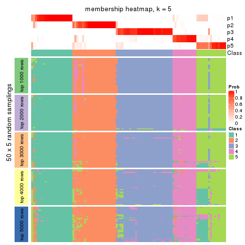
membership_heatmap(res, k = 6)
As soon as we have had the classes for columns, we can look for signatures which are significantly different between classes which can be candidate marks for certain classes. Following are the heatmaps for signatures.
Signature heatmaps where rows are scaled:
get_signatures(res, k = 2)
get_signatures(res, k = 3)
get_signatures(res, k = 4)
get_signatures(res, k = 5)
get_signatures(res, k = 6)
Signature heatmaps where rows are not scaled:
get_signatures(res, k = 2, scale_rows = FALSE)
get_signatures(res, k = 3, scale_rows = FALSE)
get_signatures(res, k = 4, scale_rows = FALSE)
get_signatures(res, k = 5, scale_rows = FALSE)
get_signatures(res, k = 6, scale_rows = FALSE)

Compare the overlap of signatures from different k:
compare_signatures(res)
get_signature() returns a data frame invisibly. TO get the list of signatures, the function
call should be assigned to a variable explicitly. In following code, if plot argument is set
to FALSE, no heatmap is plotted while only the differential analysis is performed.
# code only for demonstration
tb = get_signature(res, k = ..., plot = FALSE)
An example of the output of tb is:
#> which_row fdr mean_1 mean_2 scaled_mean_1 scaled_mean_2 km
#> 1 38 0.042760348 8.373488 9.131774 -0.5533452 0.5164555 1
#> 2 40 0.018707592 7.106213 8.469186 -0.6173731 0.5762149 1
#> 3 55 0.019134737 10.221463 11.207825 -0.6159697 0.5749050 1
#> 4 59 0.006059896 5.921854 7.869574 -0.6899429 0.6439467 1
#> 5 60 0.018055526 8.928898 10.211722 -0.6204761 0.5791110 1
#> 6 98 0.009384629 15.714769 14.887706 0.6635654 -0.6193277 2
...
The columns in tb are:
which_row: row indices corresponding to the input matrix.fdr: FDR for the differential test. mean_x: The mean value in group x.scaled_mean_x: The mean value in group x after rows are scaled.km: Row groups if k-means clustering is applied to rows.UMAP plot which shows how samples are separated.
dimension_reduction(res, k = 2, method = "UMAP")
dimension_reduction(res, k = 3, method = "UMAP")
dimension_reduction(res, k = 4, method = "UMAP")
dimension_reduction(res, k = 5, method = "UMAP")
dimension_reduction(res, k = 6, method = "UMAP")
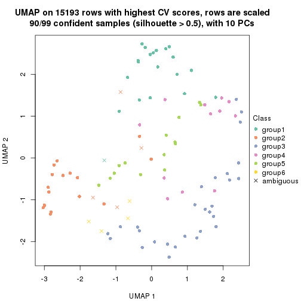
Following heatmap shows how subgroups are split when increasing k:
collect_classes(res)
If matrix rows can be associated to genes, consider to use GO_Enrichment(res,
...) to perform function enrichment for the signature genes.
The object with results only for a single top-value method and a single partition method can be extracted as:
res = res_list["CV", "pam"]
# you can also extract it by
# res = res_list["CV:pam"]
A summary of res and all the functions that can be applied to it:
res
#> A 'ConsensusPartition' object with k = 2, 3, 4, 5, 6.
#> On a matrix with 15193 rows and 99 columns.
#> Top rows (1000, 2000, 3000, 4000, 5000) are extracted by 'CV' method.
#> Subgroups are detected by 'pam' method.
#> Performed in total 1250 partitions by row resampling.
#> Best k for subgroups seems to be 2.
#>
#> Following methods can be applied to this 'ConsensusPartition' object:
#> [1] "cola_report" "collect_classes" "collect_plots"
#> [4] "collect_stats" "colnames" "compare_signatures"
#> [7] "consensus_heatmap" "dimension_reduction" "functional_enrichment"
#> [10] "get_anno_col" "get_anno" "get_classes"
#> [13] "get_consensus" "get_matrix" "get_membership"
#> [16] "get_param" "get_signatures" "get_stats"
#> [19] "is_best_k" "is_stable_k" "membership_heatmap"
#> [22] "ncol" "nrow" "plot_ecdf"
#> [25] "rownames" "select_partition_number" "show"
#> [28] "suggest_best_k" "test_to_known_factors"
collect_plots() function collects all the plots made from res for all k (number of partitions)
into one single page to provide an easy and fast comparison between different k.
collect_plots(res)
The plots are:
k and the heatmap of
predicted classes for each k.k.k.k.All the plots in panels can be made by individual functions and they are plotted later in this section.
select_partition_number() produces several plots showing different
statistics for choosing “optimized” k. There are following statistics:
k;k, the area increased is defined as \(A_k - A_{k-1}\).The detailed explanations of these statistics can be found in the cola vignette.
Generally speaking, lower PAC score, higher mean silhouette score or higher
concordance corresponds to better partition. Rand index and Jaccard index
measure how similar the current partition is compared to partition with k-1.
If they are too similar, we won't accept k is better than k-1.
select_partition_number(res)
The numeric values for all these statistics can be obtained by get_stats().
get_stats(res)
#> k 1-PAC mean_silhouette concordance area_increased Rand Jaccard
#> 2 2 0.958 0.948 0.974 0.2129 0.755 0.755
#> 3 3 0.507 0.630 0.832 1.7956 0.646 0.538
#> 4 4 0.519 0.621 0.804 0.1087 0.869 0.712
#> 5 5 0.610 0.578 0.816 0.0948 0.872 0.662
#> 6 6 0.647 0.631 0.828 0.0422 0.870 0.602
suggest_best_k() suggests the best \(k\) based on these statistics. The rules are as follows:
NA.suggest_best_k(res)
#> [1] 2
Following shows the table of the partitions (You need to click the show/hide
code output link to see it). The membership matrix (columns with name p*)
is inferred by
clue::cl_consensus()
function with the SE method. Basically the value in the membership matrix
represents the probability to belong to a certain group. The finall class
label for an item is determined with the group with highest probability it
belongs to.
In get_classes() function, the entropy is calculated from the membership
matrix and the silhouette score is calculated from the consensus matrix.
cbind(get_classes(res, k = 2), get_membership(res, k = 2))
#> class entropy silhouette p1 p2
#> SRR797072 1 0.000 0.997 1.000 0.000
#> SRR797073 1 0.000 0.997 1.000 0.000
#> SRR797074 1 0.000 0.997 1.000 0.000
#> SRR797075 1 0.000 0.997 1.000 0.000
#> SRR797076 2 0.000 0.815 0.000 1.000
#> SRR797077 1 0.000 0.997 1.000 0.000
#> SRR797078 1 0.000 0.997 1.000 0.000
#> SRR797079 1 0.000 0.997 1.000 0.000
#> SRR797080 1 0.000 0.997 1.000 0.000
#> SRR797081 1 0.000 0.997 1.000 0.000
#> SRR797082 1 0.000 0.997 1.000 0.000
#> SRR797083 1 0.000 0.997 1.000 0.000
#> SRR797084 2 0.000 0.815 0.000 1.000
#> SRR797085 2 0.991 0.444 0.444 0.556
#> SRR797086 1 0.000 0.997 1.000 0.000
#> SRR797087 1 0.000 0.997 1.000 0.000
#> SRR797088 1 0.000 0.997 1.000 0.000
#> SRR797089 1 0.000 0.997 1.000 0.000
#> SRR797090 1 0.000 0.997 1.000 0.000
#> SRR797091 1 0.000 0.997 1.000 0.000
#> SRR797092 1 0.000 0.997 1.000 0.000
#> SRR797093 1 0.000 0.997 1.000 0.000
#> SRR797094 1 0.000 0.997 1.000 0.000
#> SRR797095 1 0.000 0.997 1.000 0.000
#> SRR797096 1 0.000 0.997 1.000 0.000
#> SRR797097 1 0.000 0.997 1.000 0.000
#> SRR797098 2 1.000 0.322 0.488 0.512
#> SRR797099 1 0.000 0.997 1.000 0.000
#> SRR797100 1 0.000 0.997 1.000 0.000
#> SRR797101 1 0.000 0.997 1.000 0.000
#> SRR797102 1 0.506 0.844 0.888 0.112
#> SRR797103 1 0.000 0.997 1.000 0.000
#> SRR797104 1 0.000 0.997 1.000 0.000
#> SRR797105 1 0.000 0.997 1.000 0.000
#> SRR797106 2 0.000 0.815 0.000 1.000
#> SRR797107 1 0.000 0.997 1.000 0.000
#> SRR797108 1 0.000 0.997 1.000 0.000
#> SRR797109 1 0.000 0.997 1.000 0.000
#> SRR797110 1 0.000 0.997 1.000 0.000
#> SRR797111 1 0.000 0.997 1.000 0.000
#> SRR797112 1 0.000 0.997 1.000 0.000
#> SRR797113 1 0.000 0.997 1.000 0.000
#> SRR797114 1 0.000 0.997 1.000 0.000
#> SRR797115 1 0.000 0.997 1.000 0.000
#> SRR797116 1 0.000 0.997 1.000 0.000
#> SRR797117 2 0.000 0.815 0.000 1.000
#> SRR797118 1 0.000 0.997 1.000 0.000
#> SRR797119 1 0.000 0.997 1.000 0.000
#> SRR797120 1 0.000 0.997 1.000 0.000
#> SRR797121 1 0.000 0.997 1.000 0.000
#> SRR797122 1 0.000 0.997 1.000 0.000
#> SRR797123 1 0.000 0.997 1.000 0.000
#> SRR797124 1 0.000 0.997 1.000 0.000
#> SRR797125 1 0.000 0.997 1.000 0.000
#> SRR797126 1 0.000 0.997 1.000 0.000
#> SRR797127 1 0.000 0.997 1.000 0.000
#> SRR797128 1 0.000 0.997 1.000 0.000
#> SRR797129 1 0.000 0.997 1.000 0.000
#> SRR797130 1 0.000 0.997 1.000 0.000
#> SRR797131 1 0.000 0.997 1.000 0.000
#> SRR797132 1 0.000 0.997 1.000 0.000
#> SRR797133 1 0.000 0.997 1.000 0.000
#> SRR797134 1 0.000 0.997 1.000 0.000
#> SRR797135 1 0.000 0.997 1.000 0.000
#> SRR797136 1 0.000 0.997 1.000 0.000
#> SRR797137 1 0.000 0.997 1.000 0.000
#> SRR797138 1 0.000 0.997 1.000 0.000
#> SRR797139 1 0.000 0.997 1.000 0.000
#> SRR797140 1 0.000 0.997 1.000 0.000
#> SRR797141 1 0.000 0.997 1.000 0.000
#> SRR797142 1 0.000 0.997 1.000 0.000
#> SRR797143 1 0.000 0.997 1.000 0.000
#> SRR797144 1 0.000 0.997 1.000 0.000
#> SRR797145 1 0.000 0.997 1.000 0.000
#> SRR797146 1 0.000 0.997 1.000 0.000
#> SRR797147 1 0.000 0.997 1.000 0.000
#> SRR797148 2 0.000 0.815 0.000 1.000
#> SRR797149 2 0.000 0.815 0.000 1.000
#> SRR797150 2 0.991 0.444 0.444 0.556
#> SRR797151 2 0.991 0.444 0.444 0.556
#> SRR797152 1 0.000 0.997 1.000 0.000
#> SRR797153 1 0.000 0.997 1.000 0.000
#> SRR797154 1 0.000 0.997 1.000 0.000
#> SRR797155 1 0.000 0.997 1.000 0.000
#> SRR797156 1 0.000 0.997 1.000 0.000
#> SRR797157 1 0.529 0.831 0.880 0.120
#> SRR797158 2 0.000 0.815 0.000 1.000
#> SRR797159 2 0.991 0.444 0.444 0.556
#> SRR797160 1 0.000 0.997 1.000 0.000
#> SRR797161 1 0.000 0.997 1.000 0.000
#> SRR797162 1 0.000 0.997 1.000 0.000
#> SRR797163 1 0.000 0.997 1.000 0.000
#> SRR797164 1 0.000 0.997 1.000 0.000
#> SRR797165 1 0.000 0.997 1.000 0.000
#> SRR797166 1 0.000 0.997 1.000 0.000
#> SRR797167 2 0.000 0.815 0.000 1.000
#> SRR797168 1 0.000 0.997 1.000 0.000
#> SRR797169 1 0.000 0.997 1.000 0.000
#> SRR797170 2 0.343 0.792 0.064 0.936
cbind(get_classes(res, k = 3), get_membership(res, k = 3))
#> class entropy silhouette p1 p2 p3
#> SRR797072 1 0.2165 0.68105 0.936 0.000 0.064
#> SRR797073 3 0.0000 0.88847 0.000 0.000 1.000
#> SRR797074 1 0.2165 0.68105 0.936 0.000 0.064
#> SRR797075 1 0.0000 0.67804 1.000 0.000 0.000
#> SRR797076 2 0.0000 0.81109 0.000 1.000 0.000
#> SRR797077 1 0.2261 0.68108 0.932 0.000 0.068
#> SRR797078 3 0.1753 0.90040 0.048 0.000 0.952
#> SRR797079 3 0.2356 0.82840 0.072 0.000 0.928
#> SRR797080 3 0.2796 0.79469 0.092 0.000 0.908
#> SRR797081 3 0.1964 0.89969 0.056 0.000 0.944
#> SRR797082 1 0.0000 0.67804 1.000 0.000 0.000
#> SRR797083 1 0.6215 0.40639 0.572 0.000 0.428
#> SRR797084 2 0.0000 0.81109 0.000 1.000 0.000
#> SRR797085 2 0.6513 0.38273 0.476 0.520 0.004
#> SRR797086 1 0.0237 0.67935 0.996 0.000 0.004
#> SRR797087 3 0.2165 0.89836 0.064 0.000 0.936
#> SRR797088 1 0.6244 0.24411 0.560 0.000 0.440
#> SRR797089 3 0.4235 0.75869 0.176 0.000 0.824
#> SRR797090 1 0.4605 0.55840 0.796 0.000 0.204
#> SRR797091 1 0.0000 0.67804 1.000 0.000 0.000
#> SRR797092 3 0.2165 0.89836 0.064 0.000 0.936
#> SRR797093 3 0.1643 0.85503 0.044 0.000 0.956
#> SRR797094 3 0.2165 0.89836 0.064 0.000 0.936
#> SRR797095 3 0.2165 0.89836 0.064 0.000 0.936
#> SRR797096 1 0.5948 0.50139 0.640 0.000 0.360
#> SRR797097 3 0.2165 0.89836 0.064 0.000 0.936
#> SRR797098 1 0.8909 0.07873 0.476 0.124 0.400
#> SRR797099 1 0.6180 0.22009 0.584 0.000 0.416
#> SRR797100 3 0.0000 0.88847 0.000 0.000 1.000
#> SRR797101 3 0.2165 0.89836 0.064 0.000 0.936
#> SRR797102 1 0.4807 0.57594 0.848 0.092 0.060
#> SRR797103 1 0.5926 0.34243 0.644 0.000 0.356
#> SRR797104 3 0.2165 0.89836 0.064 0.000 0.936
#> SRR797105 3 0.0000 0.88847 0.000 0.000 1.000
#> SRR797106 2 0.0000 0.81109 0.000 1.000 0.000
#> SRR797107 1 0.6126 0.44579 0.600 0.000 0.400
#> SRR797108 1 0.2165 0.68105 0.936 0.000 0.064
#> SRR797109 1 0.6308 0.28999 0.508 0.000 0.492
#> SRR797110 1 0.1643 0.68369 0.956 0.000 0.044
#> SRR797111 1 0.2165 0.68105 0.936 0.000 0.064
#> SRR797112 1 0.2165 0.68105 0.936 0.000 0.064
#> SRR797113 1 0.6140 0.45063 0.596 0.000 0.404
#> SRR797114 1 0.1289 0.67443 0.968 0.000 0.032
#> SRR797115 1 0.6295 0.32890 0.528 0.000 0.472
#> SRR797116 1 0.6305 0.30542 0.516 0.000 0.484
#> SRR797117 2 0.0000 0.81109 0.000 1.000 0.000
#> SRR797118 1 0.6299 0.32094 0.524 0.000 0.476
#> SRR797119 3 0.0000 0.88847 0.000 0.000 1.000
#> SRR797120 1 0.6286 0.34364 0.536 0.000 0.464
#> SRR797121 1 0.2261 0.68168 0.932 0.000 0.068
#> SRR797122 1 0.0000 0.67804 1.000 0.000 0.000
#> SRR797123 1 0.6299 0.32247 0.524 0.000 0.476
#> SRR797124 3 0.4702 0.68110 0.212 0.000 0.788
#> SRR797125 1 0.5497 0.57352 0.708 0.000 0.292
#> SRR797126 1 0.1529 0.67179 0.960 0.000 0.040
#> SRR797127 1 0.0000 0.67804 1.000 0.000 0.000
#> SRR797128 3 0.1643 0.90024 0.044 0.000 0.956
#> SRR797129 3 0.1289 0.89848 0.032 0.000 0.968
#> SRR797130 1 0.6260 0.13446 0.552 0.000 0.448
#> SRR797131 3 0.3267 0.75508 0.116 0.000 0.884
#> SRR797132 3 0.0237 0.89025 0.004 0.000 0.996
#> SRR797133 1 0.6299 0.32094 0.524 0.000 0.476
#> SRR797134 1 0.2066 0.68175 0.940 0.000 0.060
#> SRR797135 1 0.2165 0.68667 0.936 0.000 0.064
#> SRR797136 1 0.0592 0.68114 0.988 0.000 0.012
#> SRR797137 1 0.4121 0.66015 0.832 0.000 0.168
#> SRR797138 1 0.1163 0.67357 0.972 0.000 0.028
#> SRR797139 3 0.2165 0.89836 0.064 0.000 0.936
#> SRR797140 3 0.0592 0.88266 0.012 0.000 0.988
#> SRR797141 3 0.0000 0.88847 0.000 0.000 1.000
#> SRR797142 3 0.0000 0.88847 0.000 0.000 1.000
#> SRR797143 1 0.6111 0.25615 0.604 0.000 0.396
#> SRR797144 1 0.0000 0.67804 1.000 0.000 0.000
#> SRR797145 3 0.6244 0.14374 0.440 0.000 0.560
#> SRR797146 1 0.6308 0.00824 0.508 0.000 0.492
#> SRR797147 1 0.0000 0.67804 1.000 0.000 0.000
#> SRR797148 2 0.0000 0.81109 0.000 1.000 0.000
#> SRR797149 2 0.0000 0.81109 0.000 1.000 0.000
#> SRR797150 2 0.6302 0.38037 0.480 0.520 0.000
#> SRR797151 2 0.6302 0.38037 0.480 0.520 0.000
#> SRR797152 1 0.6295 0.32496 0.528 0.000 0.472
#> SRR797153 1 0.1860 0.68310 0.948 0.000 0.052
#> SRR797154 1 0.6299 0.32094 0.524 0.000 0.476
#> SRR797155 3 0.2448 0.88913 0.076 0.000 0.924
#> SRR797156 1 0.6299 0.32094 0.524 0.000 0.476
#> SRR797157 1 0.7411 0.16658 0.548 0.036 0.416
#> SRR797158 2 0.0000 0.81109 0.000 1.000 0.000
#> SRR797159 2 0.6299 0.38711 0.476 0.524 0.000
#> SRR797160 1 0.2165 0.68105 0.936 0.000 0.064
#> SRR797161 1 0.1411 0.66840 0.964 0.000 0.036
#> SRR797162 1 0.4002 0.59271 0.840 0.000 0.160
#> SRR797163 1 0.6280 0.09847 0.540 0.000 0.460
#> SRR797164 1 0.0000 0.67804 1.000 0.000 0.000
#> SRR797165 3 0.2165 0.89836 0.064 0.000 0.936
#> SRR797166 3 0.5098 0.62616 0.248 0.000 0.752
#> SRR797167 2 0.0000 0.81109 0.000 1.000 0.000
#> SRR797168 1 0.1289 0.68368 0.968 0.000 0.032
#> SRR797169 1 0.3482 0.61278 0.872 0.000 0.128
#> SRR797170 2 0.2448 0.77641 0.076 0.924 0.000
cbind(get_classes(res, k = 4), get_membership(res, k = 4))
#> class entropy silhouette p1 p2 p3 p4
#> SRR797072 1 0.2149 0.7543 0.912 0.088 0.000 0.000
#> SRR797073 3 0.0000 0.8598 0.000 0.000 1.000 0.000
#> SRR797074 1 0.2149 0.7543 0.912 0.088 0.000 0.000
#> SRR797075 1 0.5442 0.6295 0.636 0.336 0.028 0.000
#> SRR797076 4 0.0000 0.5885 0.000 0.000 0.000 1.000
#> SRR797077 1 0.0000 0.7527 1.000 0.000 0.000 0.000
#> SRR797078 3 0.0000 0.8598 0.000 0.000 1.000 0.000
#> SRR797079 3 0.3074 0.7120 0.152 0.000 0.848 0.000
#> SRR797080 3 0.3873 0.6004 0.228 0.000 0.772 0.000
#> SRR797081 3 0.0000 0.8598 0.000 0.000 1.000 0.000
#> SRR797082 1 0.4605 0.6508 0.664 0.336 0.000 0.000
#> SRR797083 1 0.2840 0.7512 0.900 0.056 0.044 0.000
#> SRR797084 4 0.4981 0.7940 0.000 0.464 0.000 0.536
#> SRR797085 2 0.0000 0.3914 0.000 1.000 0.000 0.000
#> SRR797086 1 0.4500 0.6648 0.684 0.316 0.000 0.000
#> SRR797087 3 0.0000 0.8598 0.000 0.000 1.000 0.000
#> SRR797088 1 0.7446 0.1260 0.432 0.172 0.396 0.000
#> SRR797089 3 0.2466 0.7748 0.004 0.096 0.900 0.000
#> SRR797090 1 0.7856 0.1142 0.388 0.336 0.276 0.000
#> SRR797091 1 0.4605 0.6508 0.664 0.336 0.000 0.000
#> SRR797092 3 0.0000 0.8598 0.000 0.000 1.000 0.000
#> SRR797093 3 0.2530 0.7636 0.112 0.000 0.888 0.000
#> SRR797094 3 0.0000 0.8598 0.000 0.000 1.000 0.000
#> SRR797095 3 0.0000 0.8598 0.000 0.000 1.000 0.000
#> SRR797096 1 0.2699 0.7540 0.904 0.068 0.028 0.000
#> SRR797097 3 0.0000 0.8598 0.000 0.000 1.000 0.000
#> SRR797098 2 0.4193 0.4099 0.000 0.732 0.268 0.000
#> SRR797099 3 0.6953 0.0810 0.128 0.336 0.536 0.000
#> SRR797100 3 0.0000 0.8598 0.000 0.000 1.000 0.000
#> SRR797101 3 0.0000 0.8598 0.000 0.000 1.000 0.000
#> SRR797102 2 0.6130 -0.0744 0.400 0.548 0.052 0.000
#> SRR797103 2 0.7359 0.3534 0.184 0.504 0.312 0.000
#> SRR797104 3 0.0000 0.8598 0.000 0.000 1.000 0.000
#> SRR797105 3 0.0000 0.8598 0.000 0.000 1.000 0.000
#> SRR797106 4 0.0000 0.5885 0.000 0.000 0.000 1.000
#> SRR797107 1 0.0188 0.7520 0.996 0.000 0.004 0.000
#> SRR797108 1 0.0000 0.7527 1.000 0.000 0.000 0.000
#> SRR797109 1 0.2469 0.7167 0.892 0.000 0.108 0.000
#> SRR797110 1 0.3649 0.7262 0.796 0.204 0.000 0.000
#> SRR797111 1 0.0000 0.7527 1.000 0.000 0.000 0.000
#> SRR797112 1 0.0469 0.7553 0.988 0.012 0.000 0.000
#> SRR797113 1 0.3301 0.7359 0.876 0.048 0.076 0.000
#> SRR797114 1 0.5530 0.6265 0.632 0.336 0.032 0.000
#> SRR797115 1 0.0524 0.7534 0.988 0.004 0.008 0.000
#> SRR797116 1 0.2345 0.7227 0.900 0.000 0.100 0.000
#> SRR797117 4 0.4977 0.7931 0.000 0.460 0.000 0.540
#> SRR797118 1 0.0188 0.7520 0.996 0.000 0.004 0.000
#> SRR797119 3 0.1211 0.8334 0.040 0.000 0.960 0.000
#> SRR797120 1 0.0188 0.7520 0.996 0.000 0.004 0.000
#> SRR797121 1 0.2334 0.7542 0.908 0.088 0.004 0.000
#> SRR797122 1 0.4605 0.6508 0.664 0.336 0.000 0.000
#> SRR797123 1 0.2345 0.7227 0.900 0.000 0.100 0.000
#> SRR797124 3 0.4348 0.6088 0.196 0.024 0.780 0.000
#> SRR797125 1 0.0188 0.7520 0.996 0.000 0.004 0.000
#> SRR797126 1 0.6005 0.4179 0.500 0.460 0.040 0.000
#> SRR797127 1 0.4605 0.6508 0.664 0.336 0.000 0.000
#> SRR797128 3 0.0000 0.8598 0.000 0.000 1.000 0.000
#> SRR797129 3 0.0000 0.8598 0.000 0.000 1.000 0.000
#> SRR797130 3 0.6532 0.1840 0.092 0.336 0.572 0.000
#> SRR797131 3 0.3024 0.7087 0.148 0.000 0.852 0.000
#> SRR797132 3 0.0000 0.8598 0.000 0.000 1.000 0.000
#> SRR797133 1 0.0188 0.7520 0.996 0.000 0.004 0.000
#> SRR797134 1 0.2589 0.7556 0.884 0.116 0.000 0.000
#> SRR797135 1 0.4095 0.7335 0.792 0.192 0.016 0.000
#> SRR797136 1 0.4331 0.6870 0.712 0.288 0.000 0.000
#> SRR797137 1 0.3107 0.7494 0.884 0.080 0.036 0.000
#> SRR797138 1 0.5708 0.3777 0.556 0.416 0.028 0.000
#> SRR797139 3 0.0000 0.8598 0.000 0.000 1.000 0.000
#> SRR797140 3 0.0469 0.8530 0.012 0.000 0.988 0.000
#> SRR797141 3 0.0000 0.8598 0.000 0.000 1.000 0.000
#> SRR797142 3 0.0000 0.8598 0.000 0.000 1.000 0.000
#> SRR797143 2 0.7073 0.3000 0.132 0.504 0.364 0.000
#> SRR797144 1 0.4605 0.6508 0.664 0.336 0.000 0.000
#> SRR797145 3 0.4608 0.4515 0.004 0.304 0.692 0.000
#> SRR797146 3 0.5756 0.2341 0.036 0.372 0.592 0.000
#> SRR797147 1 0.4605 0.6508 0.664 0.336 0.000 0.000
#> SRR797148 4 0.5000 0.7935 0.000 0.496 0.000 0.504
#> SRR797149 4 0.5000 0.7935 0.000 0.496 0.000 0.504
#> SRR797150 2 0.0000 0.3914 0.000 1.000 0.000 0.000
#> SRR797151 2 0.0000 0.3914 0.000 1.000 0.000 0.000
#> SRR797152 1 0.3024 0.6843 0.852 0.000 0.148 0.000
#> SRR797153 1 0.4277 0.5797 0.720 0.280 0.000 0.000
#> SRR797154 1 0.0188 0.7520 0.996 0.000 0.004 0.000
#> SRR797155 3 0.0469 0.8528 0.000 0.012 0.988 0.000
#> SRR797156 1 0.2760 0.7032 0.872 0.000 0.128 0.000
#> SRR797157 2 0.6626 0.3132 0.092 0.544 0.364 0.000
#> SRR797158 2 0.4955 -0.7596 0.000 0.556 0.000 0.444
#> SRR797159 2 0.0000 0.3914 0.000 1.000 0.000 0.000
#> SRR797160 1 0.0000 0.7527 1.000 0.000 0.000 0.000
#> SRR797161 1 0.5708 0.3748 0.556 0.416 0.028 0.000
#> SRR797162 1 0.7218 0.0620 0.444 0.416 0.140 0.000
#> SRR797163 3 0.7284 -0.2049 0.148 0.424 0.428 0.000
#> SRR797164 1 0.4872 0.6590 0.728 0.244 0.028 0.000
#> SRR797165 3 0.0000 0.8598 0.000 0.000 1.000 0.000
#> SRR797166 3 0.3355 0.6948 0.004 0.160 0.836 0.000
#> SRR797167 4 0.5000 0.7935 0.000 0.496 0.000 0.504
#> SRR797168 1 0.3219 0.7244 0.836 0.164 0.000 0.000
#> SRR797169 1 0.7626 0.2717 0.448 0.336 0.216 0.000
#> SRR797170 2 0.4406 -0.5135 0.000 0.700 0.000 0.300
cbind(get_classes(res, k = 5), get_membership(res, k = 5))
#> class entropy silhouette p1 p2 p3 p4 p5
#> SRR797072 1 0.0609 0.5553 0.980 0.000 0.000 0.000 0.020
#> SRR797073 3 0.0000 0.9277 0.000 0.000 1.000 0.000 0.000
#> SRR797074 1 0.0609 0.5553 0.980 0.000 0.000 0.000 0.020
#> SRR797075 1 0.4219 0.0784 0.584 0.000 0.000 0.000 0.416
#> SRR797076 4 0.0794 1.0000 0.000 0.028 0.000 0.972 0.000
#> SRR797077 1 0.1410 0.5523 0.940 0.000 0.000 0.000 0.060
#> SRR797078 3 0.0000 0.9277 0.000 0.000 1.000 0.000 0.000
#> SRR797079 3 0.3039 0.7239 0.192 0.000 0.808 0.000 0.000
#> SRR797080 3 0.3039 0.7337 0.192 0.000 0.808 0.000 0.000
#> SRR797081 3 0.0000 0.9277 0.000 0.000 1.000 0.000 0.000
#> SRR797082 1 0.4219 0.0784 0.584 0.000 0.000 0.000 0.416
#> SRR797083 1 0.0865 0.5581 0.972 0.000 0.024 0.000 0.004
#> SRR797084 2 0.0794 0.9215 0.000 0.972 0.000 0.028 0.000
#> SRR797085 2 0.0794 0.9289 0.028 0.972 0.000 0.000 0.000
#> SRR797086 1 0.4227 0.0937 0.580 0.000 0.000 0.000 0.420
#> SRR797087 3 0.0000 0.9277 0.000 0.000 1.000 0.000 0.000
#> SRR797088 1 0.6684 -0.1106 0.392 0.000 0.372 0.000 0.236
#> SRR797089 3 0.2020 0.8344 0.000 0.000 0.900 0.000 0.100
#> SRR797090 1 0.6245 -0.2106 0.440 0.000 0.144 0.000 0.416
#> SRR797091 1 0.4219 0.0784 0.584 0.000 0.000 0.000 0.416
#> SRR797092 3 0.0000 0.9277 0.000 0.000 1.000 0.000 0.000
#> SRR797093 3 0.2074 0.8423 0.104 0.000 0.896 0.000 0.000
#> SRR797094 3 0.0000 0.9277 0.000 0.000 1.000 0.000 0.000
#> SRR797095 3 0.0000 0.9277 0.000 0.000 1.000 0.000 0.000
#> SRR797096 1 0.1082 0.5579 0.964 0.000 0.028 0.000 0.008
#> SRR797097 3 0.0000 0.9277 0.000 0.000 1.000 0.000 0.000
#> SRR797098 2 0.3878 0.5224 0.016 0.748 0.236 0.000 0.000
#> SRR797099 5 0.6387 0.3456 0.168 0.000 0.392 0.000 0.440
#> SRR797100 3 0.0000 0.9277 0.000 0.000 1.000 0.000 0.000
#> SRR797101 3 0.0000 0.9277 0.000 0.000 1.000 0.000 0.000
#> SRR797102 5 0.4575 0.5600 0.116 0.064 0.036 0.000 0.784
#> SRR797103 5 0.6438 0.4086 0.212 0.000 0.292 0.000 0.496
#> SRR797104 3 0.0000 0.9277 0.000 0.000 1.000 0.000 0.000
#> SRR797105 3 0.0000 0.9277 0.000 0.000 1.000 0.000 0.000
#> SRR797106 4 0.0794 1.0000 0.000 0.028 0.000 0.972 0.000
#> SRR797107 1 0.1121 0.5562 0.956 0.000 0.000 0.000 0.044
#> SRR797108 1 0.1270 0.5542 0.948 0.000 0.000 0.000 0.052
#> SRR797109 1 0.1965 0.5285 0.904 0.000 0.096 0.000 0.000
#> SRR797110 1 0.3210 0.4198 0.788 0.000 0.000 0.000 0.212
#> SRR797111 1 0.4150 0.2400 0.612 0.000 0.000 0.000 0.388
#> SRR797112 1 0.1043 0.5570 0.960 0.000 0.000 0.000 0.040
#> SRR797113 1 0.4440 0.4332 0.752 0.000 0.020 0.028 0.200
#> SRR797114 5 0.4774 0.0367 0.360 0.000 0.000 0.028 0.612
#> SRR797115 1 0.3351 0.5099 0.836 0.000 0.004 0.028 0.132
#> SRR797116 1 0.2834 0.5358 0.888 0.000 0.060 0.012 0.040
#> SRR797117 2 0.0963 0.9149 0.000 0.964 0.000 0.036 0.000
#> SRR797118 1 0.4150 0.2400 0.612 0.000 0.000 0.000 0.388
#> SRR797119 3 0.1043 0.8981 0.040 0.000 0.960 0.000 0.000
#> SRR797120 1 0.4150 0.2400 0.612 0.000 0.000 0.000 0.388
#> SRR797121 1 0.0609 0.5553 0.980 0.000 0.000 0.000 0.020
#> SRR797122 1 0.4210 0.0855 0.588 0.000 0.000 0.000 0.412
#> SRR797123 1 0.1704 0.5456 0.928 0.000 0.068 0.000 0.004
#> SRR797124 3 0.3970 0.6267 0.224 0.000 0.752 0.000 0.024
#> SRR797125 1 0.4074 0.2601 0.636 0.000 0.000 0.000 0.364
#> SRR797126 1 0.5420 -0.0209 0.524 0.000 0.060 0.000 0.416
#> SRR797127 1 0.4219 0.0784 0.584 0.000 0.000 0.000 0.416
#> SRR797128 3 0.0000 0.9277 0.000 0.000 1.000 0.000 0.000
#> SRR797129 3 0.0000 0.9277 0.000 0.000 1.000 0.000 0.000
#> SRR797130 5 0.6396 0.3182 0.168 0.000 0.416 0.000 0.416
#> SRR797131 3 0.2624 0.8130 0.116 0.000 0.872 0.000 0.012
#> SRR797132 3 0.0000 0.9277 0.000 0.000 1.000 0.000 0.000
#> SRR797133 1 0.4150 0.2400 0.612 0.000 0.000 0.000 0.388
#> SRR797134 1 0.3143 0.4490 0.796 0.000 0.000 0.000 0.204
#> SRR797135 1 0.3242 0.4428 0.816 0.000 0.012 0.000 0.172
#> SRR797136 1 0.3895 0.2390 0.680 0.000 0.000 0.000 0.320
#> SRR797137 1 0.4116 0.4366 0.756 0.000 0.004 0.028 0.212
#> SRR797138 5 0.3455 0.5352 0.208 0.000 0.008 0.000 0.784
#> SRR797139 3 0.0000 0.9277 0.000 0.000 1.000 0.000 0.000
#> SRR797140 3 0.0404 0.9202 0.012 0.000 0.988 0.000 0.000
#> SRR797141 3 0.0000 0.9277 0.000 0.000 1.000 0.000 0.000
#> SRR797142 3 0.0000 0.9277 0.000 0.000 1.000 0.000 0.000
#> SRR797143 5 0.4545 0.5762 0.132 0.000 0.116 0.000 0.752
#> SRR797144 5 0.4307 0.0761 0.496 0.000 0.000 0.000 0.504
#> SRR797145 3 0.4836 0.2522 0.032 0.000 0.612 0.000 0.356
#> SRR797146 5 0.4995 0.5045 0.068 0.000 0.264 0.000 0.668
#> SRR797147 1 0.4219 0.0784 0.584 0.000 0.000 0.000 0.416
#> SRR797148 2 0.0000 0.9348 0.000 1.000 0.000 0.000 0.000
#> SRR797149 2 0.0000 0.9348 0.000 1.000 0.000 0.000 0.000
#> SRR797150 2 0.0794 0.9289 0.028 0.972 0.000 0.000 0.000
#> SRR797151 2 0.0794 0.9289 0.028 0.972 0.000 0.000 0.000
#> SRR797152 1 0.6229 0.0509 0.464 0.000 0.144 0.000 0.392
#> SRR797153 5 0.4302 -0.0281 0.480 0.000 0.000 0.000 0.520
#> SRR797154 1 0.4150 0.2400 0.612 0.000 0.000 0.000 0.388
#> SRR797155 3 0.0404 0.9197 0.000 0.000 0.988 0.000 0.012
#> SRR797156 1 0.6132 0.0774 0.480 0.000 0.132 0.000 0.388
#> SRR797157 5 0.4742 0.5565 0.072 0.016 0.160 0.000 0.752
#> SRR797158 2 0.0000 0.9348 0.000 1.000 0.000 0.000 0.000
#> SRR797159 2 0.0794 0.9289 0.028 0.972 0.000 0.000 0.000
#> SRR797160 1 0.2329 0.5185 0.876 0.000 0.000 0.000 0.124
#> SRR797161 5 0.3242 0.5264 0.216 0.000 0.000 0.000 0.784
#> SRR797162 5 0.3455 0.5360 0.208 0.000 0.008 0.000 0.784
#> SRR797163 5 0.4010 0.5692 0.088 0.000 0.116 0.000 0.796
#> SRR797164 5 0.3366 0.5107 0.232 0.000 0.000 0.000 0.768
#> SRR797165 3 0.0000 0.9277 0.000 0.000 1.000 0.000 0.000
#> SRR797166 3 0.2852 0.7333 0.000 0.000 0.828 0.000 0.172
#> SRR797167 2 0.0000 0.9348 0.000 1.000 0.000 0.000 0.000
#> SRR797168 5 0.4219 0.1455 0.416 0.000 0.000 0.000 0.584
#> SRR797169 5 0.3916 0.5191 0.256 0.000 0.012 0.000 0.732
#> SRR797170 2 0.0290 0.9352 0.008 0.992 0.000 0.000 0.000
cbind(get_classes(res, k = 6), get_membership(res, k = 6))
#> class entropy silhouette p1 p2 p3 p4 p5 p6
#> SRR797072 1 0.0458 0.5542 0.984 0.000 0.000 0.000 0.016 0.000
#> SRR797073 3 0.0000 0.8893 0.000 0.000 1.000 0.000 0.000 0.000
#> SRR797074 1 0.0458 0.5542 0.984 0.000 0.000 0.000 0.016 0.000
#> SRR797075 1 0.3464 0.5466 0.688 0.000 0.000 0.000 0.312 0.000
#> SRR797076 6 0.0000 1.0000 0.000 0.000 0.000 0.000 0.000 1.000
#> SRR797077 1 0.3198 0.3790 0.740 0.000 0.000 0.000 0.260 0.000
#> SRR797078 3 0.0000 0.8893 0.000 0.000 1.000 0.000 0.000 0.000
#> SRR797079 3 0.2558 0.7481 0.156 0.000 0.840 0.000 0.004 0.000
#> SRR797080 3 0.2692 0.7643 0.148 0.000 0.840 0.012 0.000 0.000
#> SRR797081 3 0.0000 0.8893 0.000 0.000 1.000 0.000 0.000 0.000
#> SRR797082 1 0.3464 0.5466 0.688 0.000 0.000 0.000 0.312 0.000
#> SRR797083 1 0.2783 0.4729 0.836 0.000 0.148 0.000 0.016 0.000
#> SRR797084 2 0.3630 0.7002 0.000 0.756 0.000 0.212 0.000 0.032
#> SRR797085 2 0.0000 0.9379 0.000 1.000 0.000 0.000 0.000 0.000
#> SRR797086 1 0.3672 0.5055 0.632 0.000 0.000 0.000 0.368 0.000
#> SRR797087 3 0.0000 0.8893 0.000 0.000 1.000 0.000 0.000 0.000
#> SRR797088 3 0.5845 0.0284 0.316 0.000 0.472 0.000 0.212 0.000
#> SRR797089 3 0.2264 0.8049 0.004 0.000 0.888 0.012 0.096 0.000
#> SRR797090 1 0.5206 0.4486 0.572 0.000 0.116 0.000 0.312 0.000
#> SRR797091 1 0.3464 0.5466 0.688 0.000 0.000 0.000 0.312 0.000
#> SRR797092 3 0.0000 0.8893 0.000 0.000 1.000 0.000 0.000 0.000
#> SRR797093 3 0.1863 0.8159 0.104 0.000 0.896 0.000 0.000 0.000
#> SRR797094 3 0.0000 0.8893 0.000 0.000 1.000 0.000 0.000 0.000
#> SRR797095 3 0.0363 0.8862 0.000 0.000 0.988 0.012 0.000 0.000
#> SRR797096 1 0.2112 0.5208 0.896 0.000 0.088 0.000 0.016 0.000
#> SRR797097 3 0.0000 0.8893 0.000 0.000 1.000 0.000 0.000 0.000
#> SRR797098 2 0.3109 0.5492 0.004 0.772 0.224 0.000 0.000 0.000
#> SRR797099 1 0.6118 0.1858 0.364 0.000 0.328 0.000 0.308 0.000
#> SRR797100 3 0.0000 0.8893 0.000 0.000 1.000 0.000 0.000 0.000
#> SRR797101 3 0.0000 0.8893 0.000 0.000 1.000 0.000 0.000 0.000
#> SRR797102 5 0.2909 0.5128 0.156 0.012 0.004 0.000 0.828 0.000
#> SRR797103 1 0.5997 0.2343 0.416 0.000 0.240 0.000 0.344 0.000
#> SRR797104 3 0.0000 0.8893 0.000 0.000 1.000 0.000 0.000 0.000
#> SRR797105 3 0.0363 0.8862 0.000 0.000 0.988 0.012 0.000 0.000
#> SRR797106 6 0.0000 1.0000 0.000 0.000 0.000 0.000 0.000 1.000
#> SRR797107 1 0.3126 0.3934 0.752 0.000 0.000 0.000 0.248 0.000
#> SRR797108 1 0.3198 0.3792 0.740 0.000 0.000 0.000 0.260 0.000
#> SRR797109 1 0.3337 0.3499 0.736 0.000 0.260 0.000 0.004 0.000
#> SRR797110 1 0.3563 0.4969 0.664 0.000 0.000 0.000 0.336 0.000
#> SRR797111 5 0.3390 0.5332 0.296 0.000 0.000 0.000 0.704 0.000
#> SRR797112 1 0.3023 0.4135 0.768 0.000 0.000 0.000 0.232 0.000
#> SRR797113 4 0.2969 0.6733 0.224 0.000 0.000 0.776 0.000 0.000
#> SRR797114 4 0.2969 0.3314 0.000 0.000 0.000 0.776 0.224 0.000
#> SRR797115 1 0.3592 0.0323 0.656 0.000 0.000 0.344 0.000 0.000
#> SRR797116 1 0.3630 0.3571 0.756 0.000 0.212 0.032 0.000 0.000
#> SRR797117 2 0.0865 0.9115 0.000 0.964 0.000 0.000 0.000 0.036
#> SRR797118 5 0.3390 0.5332 0.296 0.000 0.000 0.000 0.704 0.000
#> SRR797119 3 0.0937 0.8641 0.040 0.000 0.960 0.000 0.000 0.000
#> SRR797120 5 0.3390 0.5332 0.296 0.000 0.000 0.000 0.704 0.000
#> SRR797121 1 0.0458 0.5542 0.984 0.000 0.000 0.000 0.016 0.000
#> SRR797122 1 0.3464 0.5466 0.688 0.000 0.000 0.000 0.312 0.000
#> SRR797123 1 0.3189 0.3614 0.760 0.000 0.236 0.000 0.004 0.000
#> SRR797124 3 0.3424 0.6529 0.204 0.000 0.772 0.000 0.024 0.000
#> SRR797125 5 0.3756 0.4521 0.400 0.000 0.000 0.000 0.600 0.000
#> SRR797126 1 0.3748 0.5434 0.688 0.000 0.012 0.000 0.300 0.000
#> SRR797127 1 0.3464 0.5466 0.688 0.000 0.000 0.000 0.312 0.000
#> SRR797128 3 0.0000 0.8893 0.000 0.000 1.000 0.000 0.000 0.000
#> SRR797129 3 0.0000 0.8893 0.000 0.000 1.000 0.000 0.000 0.000
#> SRR797130 3 0.6082 -0.1393 0.292 0.000 0.396 0.000 0.312 0.000
#> SRR797131 3 0.2554 0.8093 0.088 0.000 0.880 0.012 0.020 0.000
#> SRR797132 3 0.0363 0.8862 0.000 0.000 0.988 0.012 0.000 0.000
#> SRR797133 5 0.3390 0.5332 0.296 0.000 0.000 0.000 0.704 0.000
#> SRR797134 1 0.3620 0.2172 0.648 0.000 0.000 0.000 0.352 0.000
#> SRR797135 1 0.2613 0.5817 0.848 0.000 0.012 0.000 0.140 0.000
#> SRR797136 1 0.3076 0.5690 0.760 0.000 0.000 0.000 0.240 0.000
#> SRR797137 4 0.2969 0.6733 0.224 0.000 0.000 0.776 0.000 0.000
#> SRR797138 5 0.0000 0.6144 0.000 0.000 0.000 0.000 1.000 0.000
#> SRR797139 3 0.0000 0.8893 0.000 0.000 1.000 0.000 0.000 0.000
#> SRR797140 3 0.0725 0.8819 0.012 0.000 0.976 0.012 0.000 0.000
#> SRR797141 3 0.0363 0.8862 0.000 0.000 0.988 0.012 0.000 0.000
#> SRR797142 3 0.0000 0.8893 0.000 0.000 1.000 0.000 0.000 0.000
#> SRR797143 5 0.3240 0.3953 0.244 0.000 0.004 0.000 0.752 0.000
#> SRR797144 1 0.3737 0.4848 0.608 0.000 0.000 0.000 0.392 0.000
#> SRR797145 3 0.5523 0.2732 0.180 0.000 0.552 0.000 0.268 0.000
#> SRR797146 5 0.5608 0.1157 0.260 0.000 0.200 0.000 0.540 0.000
#> SRR797147 1 0.3464 0.5466 0.688 0.000 0.000 0.000 0.312 0.000
#> SRR797148 2 0.0000 0.9379 0.000 1.000 0.000 0.000 0.000 0.000
#> SRR797149 2 0.0000 0.9379 0.000 1.000 0.000 0.000 0.000 0.000
#> SRR797150 2 0.0000 0.9379 0.000 1.000 0.000 0.000 0.000 0.000
#> SRR797151 2 0.0000 0.9379 0.000 1.000 0.000 0.000 0.000 0.000
#> SRR797152 5 0.4520 0.5008 0.168 0.000 0.128 0.000 0.704 0.000
#> SRR797153 5 0.2491 0.6032 0.164 0.000 0.000 0.000 0.836 0.000
#> SRR797154 5 0.3390 0.5332 0.296 0.000 0.000 0.000 0.704 0.000
#> SRR797155 3 0.0363 0.8838 0.000 0.000 0.988 0.000 0.012 0.000
#> SRR797156 5 0.4520 0.4992 0.168 0.000 0.128 0.000 0.704 0.000
#> SRR797157 5 0.3838 0.3940 0.240 0.008 0.020 0.000 0.732 0.000
#> SRR797158 2 0.0000 0.9379 0.000 1.000 0.000 0.000 0.000 0.000
#> SRR797159 2 0.0000 0.9379 0.000 1.000 0.000 0.000 0.000 0.000
#> SRR797160 1 0.3309 0.3206 0.720 0.000 0.000 0.000 0.280 0.000
#> SRR797161 5 0.0000 0.6144 0.000 0.000 0.000 0.000 1.000 0.000
#> SRR797162 5 0.0000 0.6144 0.000 0.000 0.000 0.000 1.000 0.000
#> SRR797163 5 0.1957 0.5545 0.112 0.000 0.000 0.000 0.888 0.000
#> SRR797164 5 0.0713 0.6124 0.028 0.000 0.000 0.000 0.972 0.000
#> SRR797165 3 0.0000 0.8893 0.000 0.000 1.000 0.000 0.000 0.000
#> SRR797166 3 0.2994 0.7214 0.008 0.000 0.820 0.008 0.164 0.000
#> SRR797167 2 0.0000 0.9379 0.000 1.000 0.000 0.000 0.000 0.000
#> SRR797168 5 0.1814 0.6171 0.100 0.000 0.000 0.000 0.900 0.000
#> SRR797169 5 0.3636 0.2558 0.320 0.000 0.004 0.000 0.676 0.000
#> SRR797170 2 0.0000 0.9379 0.000 1.000 0.000 0.000 0.000 0.000
Heatmaps for the consensus matrix. It visualizes the probability of two samples to be in a same group.
consensus_heatmap(res, k = 2)
consensus_heatmap(res, k = 3)
consensus_heatmap(res, k = 4)
consensus_heatmap(res, k = 5)
consensus_heatmap(res, k = 6)

Heatmaps for the membership of samples in all partitions to see how consistent they are:
membership_heatmap(res, k = 2)
membership_heatmap(res, k = 3)
membership_heatmap(res, k = 4)
membership_heatmap(res, k = 5)
membership_heatmap(res, k = 6)
As soon as we have had the classes for columns, we can look for signatures which are significantly different between classes which can be candidate marks for certain classes. Following are the heatmaps for signatures.
Signature heatmaps where rows are scaled:
get_signatures(res, k = 2)
get_signatures(res, k = 3)
get_signatures(res, k = 4)
get_signatures(res, k = 5)
get_signatures(res, k = 6)
Signature heatmaps where rows are not scaled:
get_signatures(res, k = 2, scale_rows = FALSE)
get_signatures(res, k = 3, scale_rows = FALSE)
get_signatures(res, k = 4, scale_rows = FALSE)
get_signatures(res, k = 5, scale_rows = FALSE)
get_signatures(res, k = 6, scale_rows = FALSE)
Compare the overlap of signatures from different k:
compare_signatures(res)
get_signature() returns a data frame invisibly. TO get the list of signatures, the function
call should be assigned to a variable explicitly. In following code, if plot argument is set
to FALSE, no heatmap is plotted while only the differential analysis is performed.
# code only for demonstration
tb = get_signature(res, k = ..., plot = FALSE)
An example of the output of tb is:
#> which_row fdr mean_1 mean_2 scaled_mean_1 scaled_mean_2 km
#> 1 38 0.042760348 8.373488 9.131774 -0.5533452 0.5164555 1
#> 2 40 0.018707592 7.106213 8.469186 -0.6173731 0.5762149 1
#> 3 55 0.019134737 10.221463 11.207825 -0.6159697 0.5749050 1
#> 4 59 0.006059896 5.921854 7.869574 -0.6899429 0.6439467 1
#> 5 60 0.018055526 8.928898 10.211722 -0.6204761 0.5791110 1
#> 6 98 0.009384629 15.714769 14.887706 0.6635654 -0.6193277 2
...
The columns in tb are:
which_row: row indices corresponding to the input matrix.fdr: FDR for the differential test. mean_x: The mean value in group x.scaled_mean_x: The mean value in group x after rows are scaled.km: Row groups if k-means clustering is applied to rows.UMAP plot which shows how samples are separated.
dimension_reduction(res, k = 2, method = "UMAP")
dimension_reduction(res, k = 3, method = "UMAP")
dimension_reduction(res, k = 4, method = "UMAP")
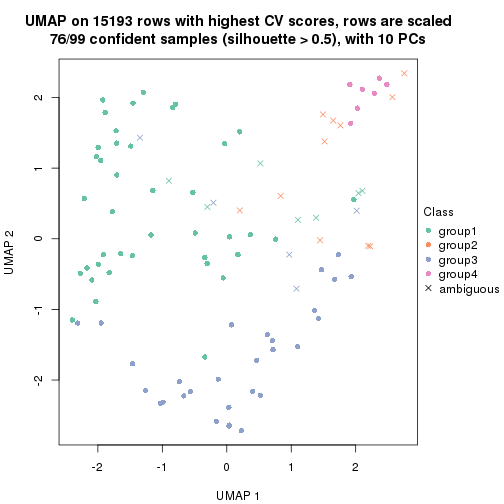
dimension_reduction(res, k = 5, method = "UMAP")
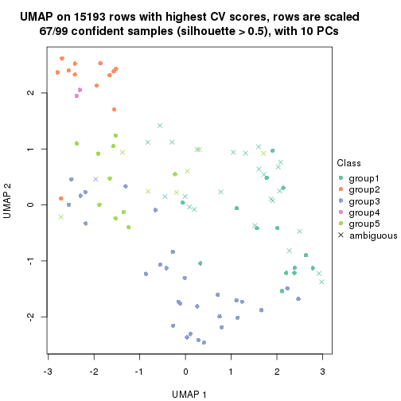
dimension_reduction(res, k = 6, method = "UMAP")
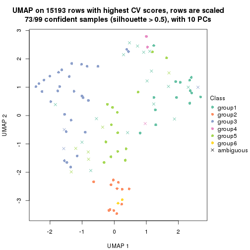
Following heatmap shows how subgroups are split when increasing k:
collect_classes(res)
If matrix rows can be associated to genes, consider to use GO_Enrichment(res,
...) to perform function enrichment for the signature genes.
The object with results only for a single top-value method and a single partition method can be extracted as:
res = res_list["CV", "mclust"]
# you can also extract it by
# res = res_list["CV:mclust"]
A summary of res and all the functions that can be applied to it:
res
#> A 'ConsensusPartition' object with k = 2, 3, 4, 5, 6.
#> On a matrix with 15193 rows and 99 columns.
#> Top rows (1000, 2000, 3000, 4000, 5000) are extracted by 'CV' method.
#> Subgroups are detected by 'mclust' method.
#> Performed in total 1250 partitions by row resampling.
#> Best k for subgroups seems to be 5.
#>
#> Following methods can be applied to this 'ConsensusPartition' object:
#> [1] "cola_report" "collect_classes" "collect_plots"
#> [4] "collect_stats" "colnames" "compare_signatures"
#> [7] "consensus_heatmap" "dimension_reduction" "functional_enrichment"
#> [10] "get_anno_col" "get_anno" "get_classes"
#> [13] "get_consensus" "get_matrix" "get_membership"
#> [16] "get_param" "get_signatures" "get_stats"
#> [19] "is_best_k" "is_stable_k" "membership_heatmap"
#> [22] "ncol" "nrow" "plot_ecdf"
#> [25] "rownames" "select_partition_number" "show"
#> [28] "suggest_best_k" "test_to_known_factors"
collect_plots() function collects all the plots made from res for all k (number of partitions)
into one single page to provide an easy and fast comparison between different k.
collect_plots(res)
The plots are:
k and the heatmap of
predicted classes for each k.k.k.k.All the plots in panels can be made by individual functions and they are plotted later in this section.
select_partition_number() produces several plots showing different
statistics for choosing “optimized” k. There are following statistics:
k;k, the area increased is defined as \(A_k - A_{k-1}\).The detailed explanations of these statistics can be found in the cola vignette.
Generally speaking, lower PAC score, higher mean silhouette score or higher
concordance corresponds to better partition. Rand index and Jaccard index
measure how similar the current partition is compared to partition with k-1.
If they are too similar, we won't accept k is better than k-1.
select_partition_number(res)

The numeric values for all these statistics can be obtained by get_stats().
get_stats(res)
#> k 1-PAC mean_silhouette concordance area_increased Rand Jaccard
#> 2 2 0.398 0.764 0.858 0.3131 0.662 0.662
#> 3 3 0.626 0.771 0.878 0.9351 0.669 0.518
#> 4 4 0.689 0.715 0.853 0.1983 0.794 0.514
#> 5 5 0.749 0.803 0.884 0.0754 0.888 0.614
#> 6 6 0.748 0.759 0.834 0.0322 0.983 0.921
suggest_best_k() suggests the best \(k\) based on these statistics. The rules are as follows:
NA.suggest_best_k(res)
#> [1] 5
Following shows the table of the partitions (You need to click the show/hide
code output link to see it). The membership matrix (columns with name p*)
is inferred by
clue::cl_consensus()
function with the SE method. Basically the value in the membership matrix
represents the probability to belong to a certain group. The finall class
label for an item is determined with the group with highest probability it
belongs to.
In get_classes() function, the entropy is calculated from the membership
matrix and the silhouette score is calculated from the consensus matrix.
cbind(get_classes(res, k = 2), get_membership(res, k = 2))
#> class entropy silhouette p1 p2
#> SRR797072 1 0.706 0.873 0.808 0.192
#> SRR797073 1 0.000 0.784 1.000 0.000
#> SRR797074 1 0.706 0.873 0.808 0.192
#> SRR797075 1 0.706 0.873 0.808 0.192
#> SRR797076 2 0.000 0.768 0.000 1.000
#> SRR797077 1 0.706 0.873 0.808 0.192
#> SRR797078 1 0.000 0.784 1.000 0.000
#> SRR797079 1 0.730 0.867 0.796 0.204
#> SRR797080 1 0.000 0.784 1.000 0.000
#> SRR797081 1 0.706 0.873 0.808 0.192
#> SRR797082 1 0.706 0.873 0.808 0.192
#> SRR797083 1 0.706 0.873 0.808 0.192
#> SRR797084 2 0.000 0.768 0.000 1.000
#> SRR797085 2 0.295 0.747 0.052 0.948
#> SRR797086 1 0.706 0.873 0.808 0.192
#> SRR797087 1 0.000 0.784 1.000 0.000
#> SRR797088 1 0.456 0.833 0.904 0.096
#> SRR797089 1 0.000 0.784 1.000 0.000
#> SRR797090 1 0.706 0.873 0.808 0.192
#> SRR797091 1 0.714 0.871 0.804 0.196
#> SRR797092 1 0.000 0.784 1.000 0.000
#> SRR797093 1 0.184 0.799 0.972 0.028
#> SRR797094 1 0.000 0.784 1.000 0.000
#> SRR797095 1 0.000 0.784 1.000 0.000
#> SRR797096 1 0.730 0.867 0.796 0.204
#> SRR797097 1 0.000 0.784 1.000 0.000
#> SRR797098 2 0.714 0.631 0.196 0.804
#> SRR797099 1 0.730 0.867 0.796 0.204
#> SRR797100 1 0.000 0.784 1.000 0.000
#> SRR797101 1 0.000 0.784 1.000 0.000
#> SRR797102 2 0.992 0.153 0.448 0.552
#> SRR797103 2 0.992 0.153 0.448 0.552
#> SRR797104 1 0.000 0.784 1.000 0.000
#> SRR797105 1 0.000 0.784 1.000 0.000
#> SRR797106 2 0.000 0.768 0.000 1.000
#> SRR797107 1 0.714 0.871 0.804 0.196
#> SRR797108 1 0.706 0.873 0.808 0.192
#> SRR797109 1 0.118 0.793 0.984 0.016
#> SRR797110 1 0.722 0.869 0.800 0.200
#> SRR797111 1 0.706 0.873 0.808 0.192
#> SRR797112 1 0.730 0.867 0.796 0.204
#> SRR797113 1 0.730 0.867 0.796 0.204
#> SRR797114 1 0.973 0.469 0.596 0.404
#> SRR797115 1 0.730 0.867 0.796 0.204
#> SRR797116 1 0.730 0.867 0.796 0.204
#> SRR797117 2 0.000 0.768 0.000 1.000
#> SRR797118 1 0.706 0.873 0.808 0.192
#> SRR797119 1 0.000 0.784 1.000 0.000
#> SRR797120 1 0.706 0.873 0.808 0.192
#> SRR797121 1 0.730 0.867 0.796 0.204
#> SRR797122 1 0.706 0.873 0.808 0.192
#> SRR797123 1 0.730 0.867 0.796 0.204
#> SRR797124 1 0.730 0.867 0.796 0.204
#> SRR797125 1 0.706 0.873 0.808 0.192
#> SRR797126 1 0.971 0.482 0.600 0.400
#> SRR797127 1 0.706 0.873 0.808 0.192
#> SRR797128 1 0.000 0.784 1.000 0.000
#> SRR797129 1 0.000 0.784 1.000 0.000
#> SRR797130 1 0.706 0.873 0.808 0.192
#> SRR797131 1 0.653 0.865 0.832 0.168
#> SRR797132 1 0.000 0.784 1.000 0.000
#> SRR797133 1 0.706 0.873 0.808 0.192
#> SRR797134 1 0.706 0.873 0.808 0.192
#> SRR797135 1 0.706 0.873 0.808 0.192
#> SRR797136 1 0.706 0.873 0.808 0.192
#> SRR797137 1 0.730 0.867 0.796 0.204
#> SRR797138 1 0.943 0.593 0.640 0.360
#> SRR797139 1 0.278 0.810 0.952 0.048
#> SRR797140 1 0.000 0.784 1.000 0.000
#> SRR797141 1 0.000 0.784 1.000 0.000
#> SRR797142 1 0.000 0.784 1.000 0.000
#> SRR797143 2 0.992 0.153 0.448 0.552
#> SRR797144 1 0.730 0.867 0.796 0.204
#> SRR797145 1 0.680 0.790 0.820 0.180
#> SRR797146 2 0.992 0.153 0.448 0.552
#> SRR797147 1 0.706 0.873 0.808 0.192
#> SRR797148 2 0.416 0.728 0.084 0.916
#> SRR797149 2 0.000 0.768 0.000 1.000
#> SRR797150 2 0.000 0.768 0.000 1.000
#> SRR797151 2 0.000 0.768 0.000 1.000
#> SRR797152 1 0.722 0.869 0.800 0.200
#> SRR797153 1 0.722 0.869 0.800 0.200
#> SRR797154 1 0.706 0.873 0.808 0.192
#> SRR797155 1 0.866 0.749 0.712 0.288
#> SRR797156 1 0.706 0.873 0.808 0.192
#> SRR797157 2 0.992 0.153 0.448 0.552
#> SRR797158 2 0.000 0.768 0.000 1.000
#> SRR797159 2 0.000 0.768 0.000 1.000
#> SRR797160 1 0.730 0.867 0.796 0.204
#> SRR797161 1 0.975 0.446 0.592 0.408
#> SRR797162 2 0.994 0.128 0.456 0.544
#> SRR797163 2 0.993 0.141 0.452 0.548
#> SRR797164 1 0.706 0.873 0.808 0.192
#> SRR797165 1 0.000 0.784 1.000 0.000
#> SRR797166 1 0.000 0.784 1.000 0.000
#> SRR797167 2 0.000 0.768 0.000 1.000
#> SRR797168 1 0.706 0.873 0.808 0.192
#> SRR797169 1 0.706 0.873 0.808 0.192
#> SRR797170 2 0.000 0.768 0.000 1.000
cbind(get_classes(res, k = 3), get_membership(res, k = 3))
#> class entropy silhouette p1 p2 p3
#> SRR797072 1 0.2625 0.8317 0.916 0.000 0.084
#> SRR797073 3 0.0424 0.9561 0.008 0.000 0.992
#> SRR797074 1 0.0000 0.8156 1.000 0.000 0.000
#> SRR797075 1 0.3043 0.8324 0.908 0.008 0.084
#> SRR797076 2 0.0000 0.8175 0.000 1.000 0.000
#> SRR797077 1 0.0000 0.8156 1.000 0.000 0.000
#> SRR797078 3 0.0424 0.9561 0.008 0.000 0.992
#> SRR797079 1 0.6431 0.7884 0.760 0.156 0.084
#> SRR797080 3 0.0424 0.9561 0.008 0.000 0.992
#> SRR797081 3 0.6559 0.5831 0.252 0.040 0.708
#> SRR797082 1 0.0000 0.8156 1.000 0.000 0.000
#> SRR797083 1 0.3502 0.8322 0.896 0.020 0.084
#> SRR797084 2 0.0000 0.8175 0.000 1.000 0.000
#> SRR797085 2 0.0000 0.8175 0.000 1.000 0.000
#> SRR797086 1 0.3502 0.8322 0.896 0.020 0.084
#> SRR797087 3 0.0424 0.9561 0.008 0.000 0.992
#> SRR797088 1 0.6299 0.2524 0.524 0.000 0.476
#> SRR797089 3 0.0424 0.9561 0.008 0.000 0.992
#> SRR797090 1 0.3502 0.8322 0.896 0.020 0.084
#> SRR797091 1 0.3637 0.8323 0.892 0.024 0.084
#> SRR797092 3 0.4235 0.7489 0.176 0.000 0.824
#> SRR797093 3 0.0892 0.9446 0.020 0.000 0.980
#> SRR797094 3 0.0424 0.9561 0.008 0.000 0.992
#> SRR797095 3 0.0424 0.9561 0.008 0.000 0.992
#> SRR797096 1 0.6431 0.7884 0.760 0.156 0.084
#> SRR797097 3 0.0424 0.9561 0.008 0.000 0.992
#> SRR797098 2 0.0424 0.8145 0.000 0.992 0.008
#> SRR797099 1 0.6431 0.7884 0.760 0.156 0.084
#> SRR797100 3 0.0424 0.9561 0.008 0.000 0.992
#> SRR797101 3 0.0424 0.9561 0.008 0.000 0.992
#> SRR797102 2 0.8496 -0.0269 0.416 0.492 0.092
#> SRR797103 2 0.8437 0.0846 0.388 0.520 0.092
#> SRR797104 3 0.0424 0.9561 0.008 0.000 0.992
#> SRR797105 3 0.0424 0.9561 0.008 0.000 0.992
#> SRR797106 2 0.0000 0.8175 0.000 1.000 0.000
#> SRR797107 1 0.2625 0.8317 0.916 0.000 0.084
#> SRR797108 1 0.0000 0.8156 1.000 0.000 0.000
#> SRR797109 3 0.0424 0.9561 0.008 0.000 0.992
#> SRR797110 1 0.6452 0.7893 0.760 0.152 0.088
#> SRR797111 1 0.0000 0.8156 1.000 0.000 0.000
#> SRR797112 1 0.6431 0.7884 0.760 0.156 0.084
#> SRR797113 1 0.6431 0.7884 0.760 0.156 0.084
#> SRR797114 1 0.7330 0.7171 0.692 0.216 0.092
#> SRR797115 1 0.6431 0.7884 0.760 0.156 0.084
#> SRR797116 1 0.6431 0.7884 0.760 0.156 0.084
#> SRR797117 2 0.0000 0.8175 0.000 1.000 0.000
#> SRR797118 1 0.0000 0.8156 1.000 0.000 0.000
#> SRR797119 3 0.0424 0.9561 0.008 0.000 0.992
#> SRR797120 1 0.2066 0.8310 0.940 0.000 0.060
#> SRR797121 1 0.6431 0.7884 0.760 0.156 0.084
#> SRR797122 1 0.0237 0.8175 0.996 0.000 0.004
#> SRR797123 1 0.6431 0.7884 0.760 0.156 0.084
#> SRR797124 1 0.6431 0.7884 0.760 0.156 0.084
#> SRR797125 1 0.0000 0.8156 1.000 0.000 0.000
#> SRR797126 1 0.7372 0.7117 0.688 0.220 0.092
#> SRR797127 1 0.0000 0.8156 1.000 0.000 0.000
#> SRR797128 3 0.0424 0.9561 0.008 0.000 0.992
#> SRR797129 3 0.0424 0.9561 0.008 0.000 0.992
#> SRR797130 1 0.4802 0.7974 0.824 0.020 0.156
#> SRR797131 3 0.2261 0.8932 0.068 0.000 0.932
#> SRR797132 3 0.0424 0.9561 0.008 0.000 0.992
#> SRR797133 1 0.0000 0.8156 1.000 0.000 0.000
#> SRR797134 1 0.0000 0.8156 1.000 0.000 0.000
#> SRR797135 1 0.2860 0.8322 0.912 0.004 0.084
#> SRR797136 1 0.0237 0.8175 0.996 0.000 0.004
#> SRR797137 1 0.6431 0.7884 0.760 0.156 0.084
#> SRR797138 1 0.7153 0.6640 0.708 0.200 0.092
#> SRR797139 3 0.0237 0.9477 0.004 0.000 0.996
#> SRR797140 3 0.0424 0.9561 0.008 0.000 0.992
#> SRR797141 3 0.0424 0.9561 0.008 0.000 0.992
#> SRR797142 3 0.0424 0.9561 0.008 0.000 0.992
#> SRR797143 2 0.8474 0.0237 0.404 0.504 0.092
#> SRR797144 1 0.8263 0.6751 0.636 0.176 0.188
#> SRR797145 3 0.8013 0.1991 0.072 0.364 0.564
#> SRR797146 2 0.8535 0.2451 0.332 0.556 0.112
#> SRR797147 1 0.0000 0.8156 1.000 0.000 0.000
#> SRR797148 2 0.0000 0.8175 0.000 1.000 0.000
#> SRR797149 2 0.0000 0.8175 0.000 1.000 0.000
#> SRR797150 2 0.0424 0.8145 0.000 0.992 0.008
#> SRR797151 2 0.0000 0.8175 0.000 1.000 0.000
#> SRR797152 1 0.4802 0.7973 0.824 0.020 0.156
#> SRR797153 1 0.5346 0.8193 0.824 0.088 0.088
#> SRR797154 1 0.4575 0.7717 0.812 0.004 0.184
#> SRR797155 2 0.9768 0.2305 0.264 0.440 0.296
#> SRR797156 1 0.0000 0.8156 1.000 0.000 0.000
#> SRR797157 2 0.7902 0.3833 0.280 0.628 0.092
#> SRR797158 2 0.0000 0.8175 0.000 1.000 0.000
#> SRR797159 2 0.0000 0.8175 0.000 1.000 0.000
#> SRR797160 1 0.6431 0.7884 0.760 0.156 0.084
#> SRR797161 1 0.8361 0.2769 0.544 0.364 0.092
#> SRR797162 1 0.8361 0.2769 0.544 0.364 0.092
#> SRR797163 1 0.8361 0.2769 0.544 0.364 0.092
#> SRR797164 1 0.2651 0.7838 0.928 0.060 0.012
#> SRR797165 3 0.0000 0.9482 0.000 0.000 1.000
#> SRR797166 3 0.0000 0.9482 0.000 0.000 1.000
#> SRR797167 2 0.0000 0.8175 0.000 1.000 0.000
#> SRR797168 1 0.0747 0.8173 0.984 0.000 0.016
#> SRR797169 1 0.2796 0.8327 0.908 0.000 0.092
#> SRR797170 2 0.0000 0.8175 0.000 1.000 0.000
cbind(get_classes(res, k = 4), get_membership(res, k = 4))
#> class entropy silhouette p1 p2 p3 p4
#> SRR797072 4 0.4436 0.6887 0.216 0.000 0.020 0.764
#> SRR797073 3 0.0000 0.9334 0.000 0.000 1.000 0.000
#> SRR797074 4 0.1938 0.9024 0.052 0.000 0.012 0.936
#> SRR797075 1 0.5453 0.4594 0.592 0.000 0.020 0.388
#> SRR797076 2 0.0000 0.8154 0.000 1.000 0.000 0.000
#> SRR797077 4 0.0469 0.9191 0.000 0.000 0.012 0.988
#> SRR797078 3 0.1022 0.9307 0.000 0.000 0.968 0.032
#> SRR797079 1 0.3286 0.7200 0.876 0.000 0.080 0.044
#> SRR797080 3 0.0188 0.9347 0.000 0.000 0.996 0.004
#> SRR797081 3 0.6480 0.5324 0.192 0.004 0.656 0.148
#> SRR797082 4 0.1406 0.9166 0.024 0.000 0.016 0.960
#> SRR797083 1 0.5839 0.5468 0.648 0.000 0.060 0.292
#> SRR797084 2 0.0000 0.8154 0.000 1.000 0.000 0.000
#> SRR797085 2 0.0188 0.8142 0.004 0.996 0.000 0.000
#> SRR797086 1 0.3933 0.7024 0.792 0.000 0.008 0.200
#> SRR797087 3 0.2002 0.9143 0.044 0.000 0.936 0.020
#> SRR797088 1 0.6163 0.3916 0.576 0.000 0.364 0.060
#> SRR797089 3 0.1913 0.9170 0.040 0.000 0.940 0.020
#> SRR797090 1 0.4610 0.6574 0.744 0.000 0.020 0.236
#> SRR797091 1 0.3392 0.7288 0.856 0.000 0.020 0.124
#> SRR797092 3 0.5206 0.5148 0.308 0.000 0.668 0.024
#> SRR797093 3 0.1209 0.9229 0.032 0.000 0.964 0.004
#> SRR797094 3 0.0895 0.9344 0.004 0.000 0.976 0.020
#> SRR797095 3 0.0707 0.9347 0.000 0.000 0.980 0.020
#> SRR797096 1 0.1151 0.7366 0.968 0.000 0.008 0.024
#> SRR797097 3 0.0895 0.9344 0.004 0.000 0.976 0.020
#> SRR797098 2 0.1042 0.8022 0.020 0.972 0.000 0.008
#> SRR797099 1 0.3375 0.7373 0.864 0.012 0.008 0.116
#> SRR797100 3 0.0000 0.9334 0.000 0.000 1.000 0.000
#> SRR797101 3 0.1913 0.9170 0.040 0.000 0.940 0.020
#> SRR797102 1 0.5284 0.3013 0.616 0.368 0.000 0.016
#> SRR797103 1 0.5543 0.3094 0.612 0.360 0.000 0.028
#> SRR797104 3 0.0707 0.9347 0.000 0.000 0.980 0.020
#> SRR797105 3 0.0000 0.9334 0.000 0.000 1.000 0.000
#> SRR797106 2 0.0000 0.8154 0.000 1.000 0.000 0.000
#> SRR797107 1 0.5085 0.5439 0.676 0.000 0.020 0.304
#> SRR797108 4 0.0469 0.9191 0.000 0.000 0.012 0.988
#> SRR797109 3 0.0000 0.9334 0.000 0.000 1.000 0.000
#> SRR797110 1 0.3142 0.7332 0.860 0.000 0.008 0.132
#> SRR797111 4 0.1042 0.9200 0.008 0.000 0.020 0.972
#> SRR797112 1 0.1151 0.7366 0.968 0.000 0.008 0.024
#> SRR797113 1 0.1151 0.7366 0.968 0.000 0.008 0.024
#> SRR797114 1 0.2376 0.7057 0.916 0.068 0.000 0.016
#> SRR797115 1 0.2066 0.7344 0.940 0.028 0.008 0.024
#> SRR797116 1 0.2066 0.7344 0.940 0.028 0.008 0.024
#> SRR797117 2 0.0000 0.8154 0.000 1.000 0.000 0.000
#> SRR797118 4 0.0707 0.9193 0.000 0.000 0.020 0.980
#> SRR797119 3 0.0000 0.9334 0.000 0.000 1.000 0.000
#> SRR797120 4 0.4225 0.7471 0.184 0.000 0.024 0.792
#> SRR797121 1 0.1151 0.7366 0.968 0.000 0.008 0.024
#> SRR797122 4 0.3991 0.7595 0.172 0.000 0.020 0.808
#> SRR797123 1 0.1151 0.7366 0.968 0.000 0.008 0.024
#> SRR797124 1 0.2973 0.7342 0.884 0.000 0.020 0.096
#> SRR797125 4 0.0469 0.9191 0.000 0.000 0.012 0.988
#> SRR797126 1 0.3088 0.7252 0.888 0.052 0.000 0.060
#> SRR797127 4 0.0469 0.9191 0.000 0.000 0.012 0.988
#> SRR797128 3 0.0336 0.9354 0.000 0.000 0.992 0.008
#> SRR797129 3 0.0000 0.9334 0.000 0.000 1.000 0.000
#> SRR797130 1 0.5543 0.4996 0.612 0.000 0.028 0.360
#> SRR797131 3 0.2473 0.8720 0.012 0.000 0.908 0.080
#> SRR797132 3 0.0895 0.9344 0.004 0.000 0.976 0.020
#> SRR797133 4 0.0469 0.9191 0.000 0.000 0.012 0.988
#> SRR797134 4 0.0469 0.9191 0.000 0.000 0.012 0.988
#> SRR797135 1 0.5586 0.3488 0.528 0.000 0.020 0.452
#> SRR797136 4 0.2741 0.8651 0.096 0.000 0.012 0.892
#> SRR797137 1 0.1151 0.7366 0.968 0.000 0.008 0.024
#> SRR797138 1 0.7916 0.1292 0.356 0.320 0.000 0.324
#> SRR797139 3 0.3930 0.8629 0.056 0.044 0.864 0.036
#> SRR797140 3 0.0469 0.9355 0.000 0.000 0.988 0.012
#> SRR797141 3 0.0000 0.9334 0.000 0.000 1.000 0.000
#> SRR797142 3 0.0188 0.9348 0.000 0.000 0.996 0.004
#> SRR797143 1 0.5600 0.2745 0.596 0.376 0.000 0.028
#> SRR797144 1 0.3508 0.7123 0.880 0.064 0.020 0.036
#> SRR797145 2 0.8055 0.1942 0.216 0.416 0.356 0.012
#> SRR797146 1 0.5811 0.1966 0.564 0.408 0.008 0.020
#> SRR797147 4 0.1042 0.9200 0.008 0.000 0.020 0.972
#> SRR797148 2 0.0000 0.8154 0.000 1.000 0.000 0.000
#> SRR797149 2 0.0000 0.8154 0.000 1.000 0.000 0.000
#> SRR797150 2 0.1677 0.7884 0.040 0.948 0.000 0.012
#> SRR797151 2 0.0188 0.8142 0.004 0.996 0.000 0.000
#> SRR797152 1 0.5993 0.4032 0.556 0.008 0.028 0.408
#> SRR797153 1 0.3610 0.7042 0.800 0.000 0.000 0.200
#> SRR797154 1 0.6200 0.2824 0.504 0.000 0.052 0.444
#> SRR797155 2 0.8955 0.0301 0.348 0.412 0.116 0.124
#> SRR797156 4 0.1913 0.9075 0.040 0.000 0.020 0.940
#> SRR797157 1 0.5396 0.0683 0.524 0.464 0.000 0.012
#> SRR797158 2 0.0188 0.8142 0.004 0.996 0.000 0.000
#> SRR797159 2 0.0000 0.8154 0.000 1.000 0.000 0.000
#> SRR797160 1 0.2973 0.7342 0.884 0.000 0.020 0.096
#> SRR797161 2 0.7822 -0.1197 0.364 0.380 0.000 0.256
#> SRR797162 2 0.7906 -0.0716 0.316 0.368 0.000 0.316
#> SRR797163 2 0.7906 -0.0716 0.316 0.368 0.000 0.316
#> SRR797164 4 0.2984 0.8515 0.084 0.028 0.000 0.888
#> SRR797165 3 0.3769 0.8502 0.072 0.052 0.864 0.012
#> SRR797166 3 0.3855 0.8445 0.068 0.060 0.860 0.012
#> SRR797167 2 0.0000 0.8154 0.000 1.000 0.000 0.000
#> SRR797168 4 0.2011 0.8795 0.080 0.000 0.000 0.920
#> SRR797169 1 0.5691 0.3835 0.564 0.028 0.000 0.408
#> SRR797170 2 0.0000 0.8154 0.000 1.000 0.000 0.000
cbind(get_classes(res, k = 5), get_membership(res, k = 5))
#> class entropy silhouette p1 p2 p3 p4 p5
#> SRR797072 1 0.1956 0.874 0.916 0.000 0.000 0.076 0.008
#> SRR797073 3 0.0404 0.894 0.000 0.000 0.988 0.000 0.012
#> SRR797074 1 0.0290 0.914 0.992 0.000 0.000 0.008 0.000
#> SRR797075 5 0.4901 0.735 0.168 0.000 0.000 0.116 0.716
#> SRR797076 2 0.1484 0.914 0.000 0.944 0.000 0.008 0.048
#> SRR797077 1 0.0000 0.913 1.000 0.000 0.000 0.000 0.000
#> SRR797078 3 0.0324 0.895 0.004 0.000 0.992 0.000 0.004
#> SRR797079 4 0.3643 0.694 0.004 0.000 0.212 0.776 0.008
#> SRR797080 3 0.0566 0.895 0.000 0.000 0.984 0.004 0.012
#> SRR797081 3 0.4636 0.723 0.044 0.000 0.768 0.036 0.152
#> SRR797082 1 0.0671 0.914 0.980 0.000 0.000 0.016 0.004
#> SRR797083 4 0.7940 0.108 0.072 0.000 0.308 0.320 0.300
#> SRR797084 2 0.0162 0.947 0.000 0.996 0.000 0.000 0.004
#> SRR797085 2 0.0404 0.950 0.000 0.988 0.000 0.000 0.012
#> SRR797086 5 0.4548 0.676 0.052 0.000 0.000 0.232 0.716
#> SRR797087 3 0.4261 0.783 0.012 0.000 0.780 0.048 0.160
#> SRR797088 3 0.6547 0.472 0.024 0.000 0.572 0.220 0.184
#> SRR797089 3 0.4224 0.793 0.016 0.000 0.792 0.052 0.140
#> SRR797090 5 0.4449 0.744 0.080 0.000 0.000 0.168 0.752
#> SRR797091 4 0.4989 0.467 0.056 0.000 0.000 0.648 0.296
#> SRR797092 3 0.4847 0.745 0.016 0.000 0.752 0.112 0.120
#> SRR797093 3 0.0324 0.894 0.000 0.000 0.992 0.004 0.004
#> SRR797094 3 0.1012 0.889 0.012 0.000 0.968 0.020 0.000
#> SRR797095 3 0.1209 0.892 0.012 0.000 0.964 0.012 0.012
#> SRR797096 4 0.0290 0.834 0.000 0.000 0.000 0.992 0.008
#> SRR797097 3 0.1018 0.890 0.016 0.000 0.968 0.016 0.000
#> SRR797098 2 0.0880 0.935 0.000 0.968 0.000 0.000 0.032
#> SRR797099 5 0.3901 0.732 0.024 0.004 0.000 0.196 0.776
#> SRR797100 3 0.0000 0.894 0.000 0.000 1.000 0.000 0.000
#> SRR797101 3 0.3900 0.785 0.012 0.000 0.788 0.020 0.180
#> SRR797102 5 0.2308 0.809 0.004 0.036 0.000 0.048 0.912
#> SRR797103 5 0.2227 0.809 0.004 0.032 0.000 0.048 0.916
#> SRR797104 3 0.0807 0.892 0.012 0.000 0.976 0.012 0.000
#> SRR797105 3 0.0290 0.894 0.000 0.000 0.992 0.000 0.008
#> SRR797106 2 0.1484 0.914 0.000 0.944 0.000 0.008 0.048
#> SRR797107 4 0.6053 0.406 0.204 0.000 0.004 0.596 0.196
#> SRR797108 1 0.0000 0.913 1.000 0.000 0.000 0.000 0.000
#> SRR797109 3 0.0162 0.894 0.000 0.000 0.996 0.000 0.004
#> SRR797110 5 0.3863 0.733 0.028 0.000 0.000 0.200 0.772
#> SRR797111 1 0.1310 0.910 0.956 0.000 0.000 0.020 0.024
#> SRR797112 4 0.0404 0.833 0.000 0.000 0.000 0.988 0.012
#> SRR797113 4 0.0290 0.834 0.000 0.000 0.000 0.992 0.008
#> SRR797114 4 0.3395 0.618 0.000 0.000 0.000 0.764 0.236
#> SRR797115 4 0.1408 0.822 0.000 0.044 0.000 0.948 0.008
#> SRR797116 4 0.1408 0.822 0.000 0.044 0.000 0.948 0.008
#> SRR797117 2 0.0162 0.947 0.000 0.996 0.000 0.000 0.004
#> SRR797118 1 0.1211 0.911 0.960 0.000 0.000 0.016 0.024
#> SRR797119 3 0.0000 0.894 0.000 0.000 1.000 0.000 0.000
#> SRR797120 1 0.3616 0.762 0.804 0.000 0.000 0.032 0.164
#> SRR797121 4 0.0290 0.834 0.000 0.000 0.000 0.992 0.008
#> SRR797122 1 0.1124 0.906 0.960 0.000 0.000 0.036 0.004
#> SRR797123 4 0.0290 0.834 0.000 0.000 0.000 0.992 0.008
#> SRR797124 4 0.3018 0.785 0.056 0.000 0.004 0.872 0.068
#> SRR797125 1 0.0000 0.913 1.000 0.000 0.000 0.000 0.000
#> SRR797126 5 0.2270 0.812 0.020 0.000 0.000 0.076 0.904
#> SRR797127 1 0.0162 0.913 0.996 0.000 0.000 0.000 0.004
#> SRR797128 3 0.0290 0.895 0.008 0.000 0.992 0.000 0.000
#> SRR797129 3 0.0162 0.894 0.000 0.000 0.996 0.000 0.004
#> SRR797130 5 0.3593 0.803 0.088 0.000 0.000 0.084 0.828
#> SRR797131 3 0.1329 0.878 0.008 0.000 0.956 0.004 0.032
#> SRR797132 3 0.1413 0.889 0.012 0.000 0.956 0.020 0.012
#> SRR797133 1 0.0290 0.913 0.992 0.000 0.000 0.000 0.008
#> SRR797134 1 0.0000 0.913 1.000 0.000 0.000 0.000 0.000
#> SRR797135 1 0.5910 0.257 0.560 0.000 0.000 0.128 0.312
#> SRR797136 1 0.0290 0.914 0.992 0.000 0.000 0.008 0.000
#> SRR797137 4 0.0290 0.834 0.000 0.000 0.000 0.992 0.008
#> SRR797138 5 0.3236 0.794 0.152 0.020 0.000 0.000 0.828
#> SRR797139 3 0.4394 0.703 0.016 0.000 0.716 0.012 0.256
#> SRR797140 3 0.0671 0.895 0.000 0.000 0.980 0.004 0.016
#> SRR797141 3 0.0290 0.894 0.000 0.000 0.992 0.000 0.008
#> SRR797142 3 0.0000 0.894 0.000 0.000 1.000 0.000 0.000
#> SRR797143 5 0.2227 0.809 0.004 0.032 0.000 0.048 0.916
#> SRR797144 5 0.2505 0.811 0.020 0.000 0.000 0.092 0.888
#> SRR797145 5 0.5221 0.216 0.000 0.036 0.372 0.008 0.584
#> SRR797146 5 0.2227 0.806 0.004 0.048 0.000 0.032 0.916
#> SRR797147 1 0.0609 0.912 0.980 0.000 0.000 0.020 0.000
#> SRR797148 2 0.0404 0.950 0.000 0.988 0.000 0.000 0.012
#> SRR797149 2 0.0404 0.950 0.000 0.988 0.000 0.000 0.012
#> SRR797150 2 0.4256 0.210 0.000 0.564 0.000 0.000 0.436
#> SRR797151 2 0.0404 0.950 0.000 0.988 0.000 0.000 0.012
#> SRR797152 5 0.3995 0.783 0.180 0.000 0.000 0.044 0.776
#> SRR797153 5 0.3639 0.813 0.100 0.000 0.000 0.076 0.824
#> SRR797154 5 0.6928 0.281 0.392 0.000 0.088 0.064 0.456
#> SRR797155 5 0.2739 0.808 0.020 0.040 0.024 0.012 0.904
#> SRR797156 1 0.1399 0.908 0.952 0.000 0.000 0.020 0.028
#> SRR797157 5 0.2139 0.803 0.000 0.052 0.000 0.032 0.916
#> SRR797158 2 0.0404 0.950 0.000 0.988 0.000 0.000 0.012
#> SRR797159 2 0.0404 0.950 0.000 0.988 0.000 0.000 0.012
#> SRR797160 4 0.3297 0.798 0.060 0.000 0.040 0.868 0.032
#> SRR797161 5 0.3366 0.797 0.140 0.032 0.000 0.000 0.828
#> SRR797162 5 0.3326 0.793 0.152 0.024 0.000 0.000 0.824
#> SRR797163 5 0.3326 0.793 0.152 0.024 0.000 0.000 0.824
#> SRR797164 1 0.3496 0.723 0.788 0.000 0.000 0.012 0.200
#> SRR797165 3 0.4017 0.724 0.004 0.000 0.736 0.012 0.248
#> SRR797166 3 0.3635 0.729 0.000 0.000 0.748 0.004 0.248
#> SRR797167 2 0.0404 0.950 0.000 0.988 0.000 0.000 0.012
#> SRR797168 1 0.3675 0.726 0.788 0.000 0.000 0.024 0.188
#> SRR797169 5 0.3319 0.793 0.160 0.000 0.000 0.020 0.820
#> SRR797170 2 0.0404 0.950 0.000 0.988 0.000 0.000 0.012
cbind(get_classes(res, k = 6), get_membership(res, k = 6))
#> class entropy silhouette p1 p2 p3 p4 p5 p6
#> SRR797072 1 0.3272 0.8193 0.848 0.000 0.008 0.092 0.020 NA
#> SRR797073 3 0.0260 0.8387 0.000 0.000 0.992 0.000 0.000 NA
#> SRR797074 1 0.0622 0.8539 0.980 0.000 0.000 0.012 0.000 NA
#> SRR797075 5 0.6892 0.5050 0.172 0.000 0.000 0.140 0.504 NA
#> SRR797076 2 0.3126 0.8110 0.000 0.752 0.000 0.000 0.000 NA
#> SRR797077 1 0.0000 0.8536 1.000 0.000 0.000 0.000 0.000 NA
#> SRR797078 3 0.0000 0.8385 0.000 0.000 1.000 0.000 0.000 NA
#> SRR797079 4 0.3192 0.6902 0.000 0.000 0.216 0.776 0.004 NA
#> SRR797080 3 0.0713 0.8378 0.000 0.000 0.972 0.000 0.000 NA
#> SRR797081 3 0.5159 0.6171 0.008 0.000 0.700 0.044 0.172 NA
#> SRR797082 1 0.1536 0.8578 0.940 0.000 0.000 0.016 0.004 NA
#> SRR797083 3 0.7704 -0.0717 0.040 0.000 0.384 0.252 0.252 NA
#> SRR797084 2 0.1267 0.9151 0.000 0.940 0.000 0.000 0.000 NA
#> SRR797085 2 0.0632 0.9210 0.000 0.976 0.000 0.000 0.024 NA
#> SRR797086 5 0.5362 0.5930 0.016 0.000 0.000 0.224 0.628 NA
#> SRR797087 3 0.5099 0.7157 0.000 0.000 0.672 0.044 0.064 NA
#> SRR797088 3 0.6921 0.2689 0.004 0.000 0.460 0.292 0.160 NA
#> SRR797089 3 0.4504 0.7470 0.000 0.000 0.716 0.032 0.040 NA
#> SRR797090 5 0.5246 0.6535 0.016 0.000 0.000 0.152 0.652 NA
#> SRR797091 4 0.5482 0.4638 0.032 0.000 0.000 0.624 0.240 NA
#> SRR797092 3 0.5544 0.6147 0.004 0.000 0.656 0.196 0.056 NA
#> SRR797093 3 0.0000 0.8385 0.000 0.000 1.000 0.000 0.000 NA
#> SRR797094 3 0.2006 0.8191 0.000 0.000 0.904 0.016 0.000 NA
#> SRR797095 3 0.2302 0.8194 0.000 0.000 0.872 0.008 0.000 NA
#> SRR797096 4 0.0000 0.8671 0.000 0.000 0.000 1.000 0.000 NA
#> SRR797097 3 0.1895 0.8203 0.000 0.000 0.912 0.016 0.000 NA
#> SRR797098 2 0.1267 0.8957 0.000 0.940 0.000 0.000 0.060 NA
#> SRR797099 5 0.5020 0.6380 0.004 0.008 0.000 0.212 0.668 NA
#> SRR797100 3 0.0000 0.8385 0.000 0.000 1.000 0.000 0.000 NA
#> SRR797101 3 0.4467 0.7444 0.000 0.000 0.712 0.016 0.056 NA
#> SRR797102 5 0.0767 0.7720 0.000 0.008 0.000 0.012 0.976 NA
#> SRR797103 5 0.1857 0.7706 0.000 0.028 0.000 0.012 0.928 NA
#> SRR797104 3 0.0363 0.8385 0.000 0.000 0.988 0.000 0.000 NA
#> SRR797105 3 0.0713 0.8378 0.000 0.000 0.972 0.000 0.000 NA
#> SRR797106 2 0.3126 0.8110 0.000 0.752 0.000 0.000 0.000 NA
#> SRR797107 4 0.6399 0.4324 0.168 0.000 0.016 0.588 0.168 NA
#> SRR797108 1 0.0000 0.8536 1.000 0.000 0.000 0.000 0.000 NA
#> SRR797109 3 0.0000 0.8385 0.000 0.000 1.000 0.000 0.000 NA
#> SRR797110 5 0.4585 0.6629 0.012 0.000 0.000 0.200 0.708 NA
#> SRR797111 1 0.3184 0.8392 0.836 0.000 0.000 0.016 0.028 NA
#> SRR797112 4 0.0146 0.8676 0.000 0.000 0.000 0.996 0.004 NA
#> SRR797113 4 0.0146 0.8676 0.000 0.000 0.000 0.996 0.004 NA
#> SRR797114 4 0.2631 0.7362 0.000 0.000 0.000 0.820 0.180 NA
#> SRR797115 4 0.1225 0.8549 0.000 0.012 0.000 0.952 0.000 NA
#> SRR797116 4 0.1225 0.8549 0.000 0.012 0.000 0.952 0.000 NA
#> SRR797117 2 0.1267 0.9151 0.000 0.940 0.000 0.000 0.000 NA
#> SRR797118 1 0.2663 0.8487 0.876 0.000 0.000 0.012 0.028 NA
#> SRR797119 3 0.0000 0.8385 0.000 0.000 1.000 0.000 0.000 NA
#> SRR797120 1 0.5179 0.7267 0.684 0.000 0.000 0.044 0.096 NA
#> SRR797121 4 0.0000 0.8671 0.000 0.000 0.000 1.000 0.000 NA
#> SRR797122 1 0.3587 0.8222 0.816 0.000 0.000 0.044 0.024 NA
#> SRR797123 4 0.0000 0.8671 0.000 0.000 0.000 1.000 0.000 NA
#> SRR797124 4 0.2519 0.8017 0.004 0.000 0.000 0.884 0.044 NA
#> SRR797125 1 0.0000 0.8536 1.000 0.000 0.000 0.000 0.000 NA
#> SRR797126 5 0.1674 0.7711 0.004 0.000 0.000 0.068 0.924 NA
#> SRR797127 1 0.0622 0.8538 0.980 0.000 0.000 0.000 0.008 NA
#> SRR797128 3 0.0000 0.8385 0.000 0.000 1.000 0.000 0.000 NA
#> SRR797129 3 0.0000 0.8385 0.000 0.000 1.000 0.000 0.000 NA
#> SRR797130 5 0.4928 0.6809 0.012 0.000 0.000 0.132 0.684 NA
#> SRR797131 3 0.1082 0.8206 0.000 0.000 0.956 0.004 0.040 NA
#> SRR797132 3 0.3178 0.7938 0.000 0.000 0.804 0.016 0.004 NA
#> SRR797133 1 0.1265 0.8494 0.948 0.000 0.000 0.000 0.008 NA
#> SRR797134 1 0.0000 0.8536 1.000 0.000 0.000 0.000 0.000 NA
#> SRR797135 1 0.6356 0.3679 0.556 0.000 0.000 0.132 0.228 NA
#> SRR797136 1 0.0862 0.8535 0.972 0.000 0.000 0.008 0.004 NA
#> SRR797137 4 0.0146 0.8676 0.000 0.000 0.000 0.996 0.004 NA
#> SRR797138 5 0.3626 0.7035 0.068 0.000 0.000 0.000 0.788 NA
#> SRR797139 3 0.5442 0.5565 0.000 0.000 0.508 0.000 0.128 NA
#> SRR797140 3 0.1007 0.8354 0.000 0.000 0.956 0.000 0.000 NA
#> SRR797141 3 0.0713 0.8378 0.000 0.000 0.972 0.000 0.000 NA
#> SRR797142 3 0.0000 0.8385 0.000 0.000 1.000 0.000 0.000 NA
#> SRR797143 5 0.1536 0.7715 0.000 0.024 0.000 0.012 0.944 NA
#> SRR797144 5 0.3612 0.7440 0.008 0.000 0.000 0.108 0.808 NA
#> SRR797145 5 0.5405 0.5839 0.000 0.012 0.108 0.008 0.628 NA
#> SRR797146 5 0.3135 0.7510 0.000 0.028 0.000 0.012 0.836 NA
#> SRR797147 1 0.2112 0.8479 0.896 0.000 0.000 0.016 0.000 NA
#> SRR797148 2 0.0458 0.9273 0.000 0.984 0.000 0.000 0.000 NA
#> SRR797149 2 0.0000 0.9299 0.000 1.000 0.000 0.000 0.000 NA
#> SRR797150 2 0.3515 0.5319 0.000 0.676 0.000 0.000 0.324 NA
#> SRR797151 2 0.0000 0.9299 0.000 1.000 0.000 0.000 0.000 NA
#> SRR797152 5 0.4221 0.7520 0.080 0.000 0.000 0.056 0.784 NA
#> SRR797153 5 0.3956 0.7577 0.032 0.000 0.000 0.040 0.784 NA
#> SRR797154 1 0.7615 0.1579 0.440 0.000 0.044 0.108 0.272 NA
#> SRR797155 5 0.3345 0.7498 0.000 0.028 0.008 0.012 0.832 NA
#> SRR797156 1 0.3789 0.8139 0.784 0.000 0.000 0.016 0.040 NA
#> SRR797157 5 0.2686 0.7586 0.000 0.032 0.000 0.012 0.876 NA
#> SRR797158 2 0.0000 0.9299 0.000 1.000 0.000 0.000 0.000 NA
#> SRR797159 2 0.0000 0.9299 0.000 1.000 0.000 0.000 0.000 NA
#> SRR797160 4 0.2911 0.8103 0.020 0.000 0.008 0.872 0.024 NA
#> SRR797161 5 0.3943 0.7031 0.068 0.004 0.000 0.004 0.776 NA
#> SRR797162 5 0.4171 0.6733 0.068 0.004 0.000 0.000 0.736 NA
#> SRR797163 5 0.4171 0.6733 0.068 0.004 0.000 0.000 0.736 NA
#> SRR797164 1 0.4475 0.7706 0.744 0.000 0.000 0.020 0.128 NA
#> SRR797165 3 0.5303 0.5847 0.000 0.000 0.528 0.000 0.112 NA
#> SRR797166 3 0.5294 0.5888 0.000 0.000 0.532 0.000 0.112 NA
#> SRR797167 2 0.0000 0.9299 0.000 1.000 0.000 0.000 0.000 NA
#> SRR797168 1 0.4764 0.7507 0.712 0.000 0.000 0.020 0.108 NA
#> SRR797169 5 0.3649 0.7422 0.076 0.000 0.000 0.020 0.816 NA
#> SRR797170 2 0.0000 0.9299 0.000 1.000 0.000 0.000 0.000 NA
Heatmaps for the consensus matrix. It visualizes the probability of two samples to be in a same group.
consensus_heatmap(res, k = 2)
consensus_heatmap(res, k = 3)
consensus_heatmap(res, k = 4)
consensus_heatmap(res, k = 5)
consensus_heatmap(res, k = 6)
Heatmaps for the membership of samples in all partitions to see how consistent they are:
membership_heatmap(res, k = 2)
membership_heatmap(res, k = 3)
membership_heatmap(res, k = 4)

membership_heatmap(res, k = 5)
membership_heatmap(res, k = 6)
As soon as we have had the classes for columns, we can look for signatures which are significantly different between classes which can be candidate marks for certain classes. Following are the heatmaps for signatures.
Signature heatmaps where rows are scaled:
get_signatures(res, k = 2)
get_signatures(res, k = 3)
get_signatures(res, k = 4)
get_signatures(res, k = 5)
get_signatures(res, k = 6)
Signature heatmaps where rows are not scaled:
get_signatures(res, k = 2, scale_rows = FALSE)
get_signatures(res, k = 3, scale_rows = FALSE)
get_signatures(res, k = 4, scale_rows = FALSE)
get_signatures(res, k = 5, scale_rows = FALSE)
get_signatures(res, k = 6, scale_rows = FALSE)
Compare the overlap of signatures from different k:
compare_signatures(res)
get_signature() returns a data frame invisibly. TO get the list of signatures, the function
call should be assigned to a variable explicitly. In following code, if plot argument is set
to FALSE, no heatmap is plotted while only the differential analysis is performed.
# code only for demonstration
tb = get_signature(res, k = ..., plot = FALSE)
An example of the output of tb is:
#> which_row fdr mean_1 mean_2 scaled_mean_1 scaled_mean_2 km
#> 1 38 0.042760348 8.373488 9.131774 -0.5533452 0.5164555 1
#> 2 40 0.018707592 7.106213 8.469186 -0.6173731 0.5762149 1
#> 3 55 0.019134737 10.221463 11.207825 -0.6159697 0.5749050 1
#> 4 59 0.006059896 5.921854 7.869574 -0.6899429 0.6439467 1
#> 5 60 0.018055526 8.928898 10.211722 -0.6204761 0.5791110 1
#> 6 98 0.009384629 15.714769 14.887706 0.6635654 -0.6193277 2
...
The columns in tb are:
which_row: row indices corresponding to the input matrix.fdr: FDR for the differential test. mean_x: The mean value in group x.scaled_mean_x: The mean value in group x after rows are scaled.km: Row groups if k-means clustering is applied to rows.UMAP plot which shows how samples are separated.
dimension_reduction(res, k = 2, method = "UMAP")
dimension_reduction(res, k = 3, method = "UMAP")
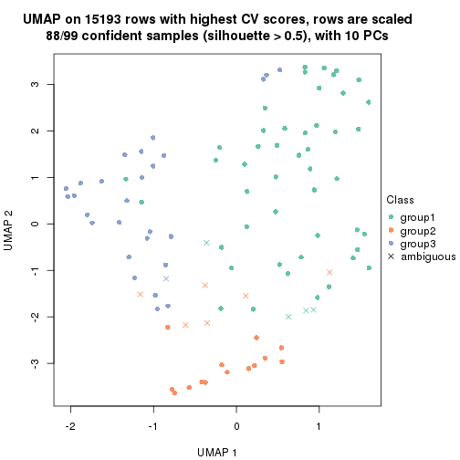
dimension_reduction(res, k = 4, method = "UMAP")
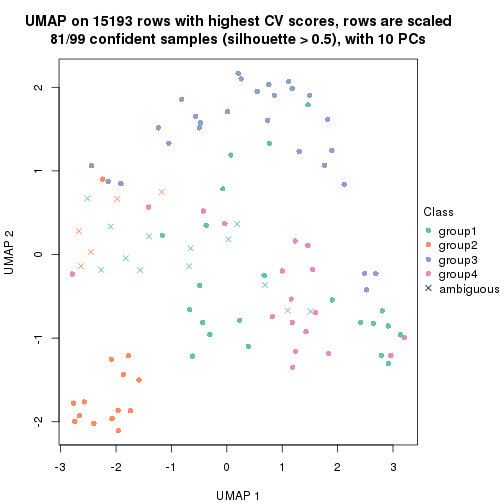
dimension_reduction(res, k = 5, method = "UMAP")
dimension_reduction(res, k = 6, method = "UMAP")
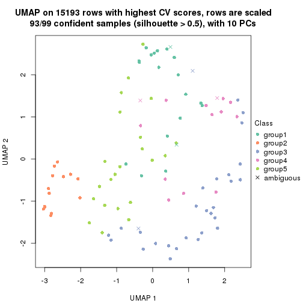
Following heatmap shows how subgroups are split when increasing k:
collect_classes(res)
If matrix rows can be associated to genes, consider to use GO_Enrichment(res,
...) to perform function enrichment for the signature genes.
The object with results only for a single top-value method and a single partition method can be extracted as:
res = res_list["CV", "NMF"]
# you can also extract it by
# res = res_list["CV:NMF"]
A summary of res and all the functions that can be applied to it:
res
#> A 'ConsensusPartition' object with k = 2, 3, 4, 5, 6.
#> On a matrix with 15193 rows and 99 columns.
#> Top rows (1000, 2000, 3000, 4000, 5000) are extracted by 'CV' method.
#> Subgroups are detected by 'NMF' method.
#> Performed in total 1250 partitions by row resampling.
#> Best k for subgroups seems to be 6.
#>
#> Following methods can be applied to this 'ConsensusPartition' object:
#> [1] "cola_report" "collect_classes" "collect_plots"
#> [4] "collect_stats" "colnames" "compare_signatures"
#> [7] "consensus_heatmap" "dimension_reduction" "functional_enrichment"
#> [10] "get_anno_col" "get_anno" "get_classes"
#> [13] "get_consensus" "get_matrix" "get_membership"
#> [16] "get_param" "get_signatures" "get_stats"
#> [19] "is_best_k" "is_stable_k" "membership_heatmap"
#> [22] "ncol" "nrow" "plot_ecdf"
#> [25] "rownames" "select_partition_number" "show"
#> [28] "suggest_best_k" "test_to_known_factors"
collect_plots() function collects all the plots made from res for all k (number of partitions)
into one single page to provide an easy and fast comparison between different k.
collect_plots(res)
The plots are:
k and the heatmap of
predicted classes for each k.k.k.k.All the plots in panels can be made by individual functions and they are plotted later in this section.
select_partition_number() produces several plots showing different
statistics for choosing “optimized” k. There are following statistics:
k;k, the area increased is defined as \(A_k - A_{k-1}\).The detailed explanations of these statistics can be found in the cola vignette.
Generally speaking, lower PAC score, higher mean silhouette score or higher
concordance corresponds to better partition. Rand index and Jaccard index
measure how similar the current partition is compared to partition with k-1.
If they are too similar, we won't accept k is better than k-1.
select_partition_number(res)
The numeric values for all these statistics can be obtained by get_stats().
get_stats(res)
#> k 1-PAC mean_silhouette concordance area_increased Rand Jaccard
#> 2 2 0.979 0.968 0.986 0.4083 0.590 0.590
#> 3 3 0.659 0.754 0.868 0.5333 0.702 0.515
#> 4 4 0.752 0.815 0.895 0.1772 0.783 0.469
#> 5 5 0.813 0.809 0.878 0.0644 0.919 0.700
#> 6 6 0.904 0.848 0.923 0.0345 0.966 0.839
suggest_best_k() suggests the best \(k\) based on these statistics. The rules are as follows:
NA.suggest_best_k(res)
#> [1] 6
#> attr(,"optional")
#> [1] 2
There is also optional best \(k\) = 2 that is worth to check.
Following shows the table of the partitions (You need to click the show/hide
code output link to see it). The membership matrix (columns with name p*)
is inferred by
clue::cl_consensus()
function with the SE method. Basically the value in the membership matrix
represents the probability to belong to a certain group. The finall class
label for an item is determined with the group with highest probability it
belongs to.
In get_classes() function, the entropy is calculated from the membership
matrix and the silhouette score is calculated from the consensus matrix.
cbind(get_classes(res, k = 2), get_membership(res, k = 2))
#> class entropy silhouette p1 p2
#> SRR797072 1 0.0000 0.991 1.000 0.000
#> SRR797073 1 0.0000 0.991 1.000 0.000
#> SRR797074 1 0.0000 0.991 1.000 0.000
#> SRR797075 1 0.0000 0.991 1.000 0.000
#> SRR797076 2 0.0000 0.969 0.000 1.000
#> SRR797077 1 0.0000 0.991 1.000 0.000
#> SRR797078 1 0.0000 0.991 1.000 0.000
#> SRR797079 1 0.0000 0.991 1.000 0.000
#> SRR797080 1 0.0000 0.991 1.000 0.000
#> SRR797081 1 0.0000 0.991 1.000 0.000
#> SRR797082 1 0.0000 0.991 1.000 0.000
#> SRR797083 1 0.0000 0.991 1.000 0.000
#> SRR797084 2 0.0000 0.969 0.000 1.000
#> SRR797085 2 0.0000 0.969 0.000 1.000
#> SRR797086 1 0.2043 0.961 0.968 0.032
#> SRR797087 1 0.0000 0.991 1.000 0.000
#> SRR797088 1 0.0000 0.991 1.000 0.000
#> SRR797089 1 0.0000 0.991 1.000 0.000
#> SRR797090 1 0.0000 0.991 1.000 0.000
#> SRR797091 1 0.0000 0.991 1.000 0.000
#> SRR797092 1 0.0000 0.991 1.000 0.000
#> SRR797093 1 0.0000 0.991 1.000 0.000
#> SRR797094 1 0.0000 0.991 1.000 0.000
#> SRR797095 1 0.0000 0.991 1.000 0.000
#> SRR797096 1 0.0000 0.991 1.000 0.000
#> SRR797097 1 0.0000 0.991 1.000 0.000
#> SRR797098 2 0.0000 0.969 0.000 1.000
#> SRR797099 2 0.7950 0.706 0.240 0.760
#> SRR797100 1 0.0000 0.991 1.000 0.000
#> SRR797101 1 0.1414 0.972 0.980 0.020
#> SRR797102 2 0.0000 0.969 0.000 1.000
#> SRR797103 2 0.0000 0.969 0.000 1.000
#> SRR797104 1 0.0000 0.991 1.000 0.000
#> SRR797105 1 0.0000 0.991 1.000 0.000
#> SRR797106 2 0.0000 0.969 0.000 1.000
#> SRR797107 1 0.0000 0.991 1.000 0.000
#> SRR797108 1 0.0000 0.991 1.000 0.000
#> SRR797109 1 0.0000 0.991 1.000 0.000
#> SRR797110 1 0.8608 0.598 0.716 0.284
#> SRR797111 1 0.0000 0.991 1.000 0.000
#> SRR797112 1 0.0000 0.991 1.000 0.000
#> SRR797113 1 0.1184 0.977 0.984 0.016
#> SRR797114 1 0.1184 0.977 0.984 0.016
#> SRR797115 1 0.0000 0.991 1.000 0.000
#> SRR797116 1 0.0000 0.991 1.000 0.000
#> SRR797117 2 0.0000 0.969 0.000 1.000
#> SRR797118 1 0.0000 0.991 1.000 0.000
#> SRR797119 1 0.0000 0.991 1.000 0.000
#> SRR797120 1 0.0000 0.991 1.000 0.000
#> SRR797121 1 0.0000 0.991 1.000 0.000
#> SRR797122 1 0.0000 0.991 1.000 0.000
#> SRR797123 1 0.0000 0.991 1.000 0.000
#> SRR797124 1 0.0000 0.991 1.000 0.000
#> SRR797125 1 0.0000 0.991 1.000 0.000
#> SRR797126 2 0.5629 0.849 0.132 0.868
#> SRR797127 1 0.0000 0.991 1.000 0.000
#> SRR797128 1 0.0000 0.991 1.000 0.000
#> SRR797129 1 0.0000 0.991 1.000 0.000
#> SRR797130 1 0.0000 0.991 1.000 0.000
#> SRR797131 1 0.0000 0.991 1.000 0.000
#> SRR797132 1 0.0000 0.991 1.000 0.000
#> SRR797133 1 0.0000 0.991 1.000 0.000
#> SRR797134 1 0.0000 0.991 1.000 0.000
#> SRR797135 1 0.0000 0.991 1.000 0.000
#> SRR797136 1 0.0000 0.991 1.000 0.000
#> SRR797137 1 0.0000 0.991 1.000 0.000
#> SRR797138 2 0.0000 0.969 0.000 1.000
#> SRR797139 1 0.0000 0.991 1.000 0.000
#> SRR797140 1 0.0000 0.991 1.000 0.000
#> SRR797141 1 0.0000 0.991 1.000 0.000
#> SRR797142 1 0.0000 0.991 1.000 0.000
#> SRR797143 2 0.0000 0.969 0.000 1.000
#> SRR797144 2 0.7056 0.776 0.192 0.808
#> SRR797145 2 0.0000 0.969 0.000 1.000
#> SRR797146 2 0.0000 0.969 0.000 1.000
#> SRR797147 1 0.0000 0.991 1.000 0.000
#> SRR797148 2 0.0000 0.969 0.000 1.000
#> SRR797149 2 0.0000 0.969 0.000 1.000
#> SRR797150 2 0.0000 0.969 0.000 1.000
#> SRR797151 2 0.0000 0.969 0.000 1.000
#> SRR797152 1 0.7950 0.679 0.760 0.240
#> SRR797153 2 0.0000 0.969 0.000 1.000
#> SRR797154 1 0.0000 0.991 1.000 0.000
#> SRR797155 2 0.0000 0.969 0.000 1.000
#> SRR797156 1 0.0000 0.991 1.000 0.000
#> SRR797157 2 0.0000 0.969 0.000 1.000
#> SRR797158 2 0.0000 0.969 0.000 1.000
#> SRR797159 2 0.0000 0.969 0.000 1.000
#> SRR797160 1 0.0000 0.991 1.000 0.000
#> SRR797161 1 0.0000 0.991 1.000 0.000
#> SRR797162 2 0.8144 0.675 0.252 0.748
#> SRR797163 2 0.0000 0.969 0.000 1.000
#> SRR797164 1 0.0000 0.991 1.000 0.000
#> SRR797165 1 0.0000 0.991 1.000 0.000
#> SRR797166 1 0.0000 0.991 1.000 0.000
#> SRR797167 2 0.0000 0.969 0.000 1.000
#> SRR797168 1 0.0000 0.991 1.000 0.000
#> SRR797169 1 0.0376 0.987 0.996 0.004
#> SRR797170 2 0.0000 0.969 0.000 1.000
cbind(get_classes(res, k = 3), get_membership(res, k = 3))
#> class entropy silhouette p1 p2 p3
#> SRR797072 1 0.4291 0.3434 0.820 0.000 0.180
#> SRR797073 3 0.6026 0.9297 0.376 0.000 0.624
#> SRR797074 1 0.2625 0.5604 0.916 0.000 0.084
#> SRR797075 1 0.5465 0.6695 0.712 0.000 0.288
#> SRR797076 2 0.0000 0.9208 0.000 1.000 0.000
#> SRR797077 1 0.0237 0.6529 0.996 0.000 0.004
#> SRR797078 3 0.6026 0.9297 0.376 0.000 0.624
#> SRR797079 3 0.6026 0.9297 0.376 0.000 0.624
#> SRR797080 3 0.6026 0.9297 0.376 0.000 0.624
#> SRR797081 3 0.6111 0.9066 0.396 0.000 0.604
#> SRR797082 1 0.0237 0.6529 0.996 0.000 0.004
#> SRR797083 3 0.6192 0.8724 0.420 0.000 0.580
#> SRR797084 2 0.0000 0.9208 0.000 1.000 0.000
#> SRR797085 2 0.0000 0.9208 0.000 1.000 0.000
#> SRR797086 1 0.7180 0.4394 0.700 0.216 0.084
#> SRR797087 3 0.6026 0.9297 0.376 0.000 0.624
#> SRR797088 3 0.6026 0.9297 0.376 0.000 0.624
#> SRR797089 3 0.6008 0.9266 0.372 0.000 0.628
#> SRR797090 1 0.2165 0.5927 0.936 0.000 0.064
#> SRR797091 1 0.5497 -0.0877 0.708 0.000 0.292
#> SRR797092 3 0.6026 0.9297 0.376 0.000 0.624
#> SRR797093 3 0.6026 0.9297 0.376 0.000 0.624
#> SRR797094 3 0.6026 0.9297 0.376 0.000 0.624
#> SRR797095 3 0.6008 0.9266 0.372 0.000 0.628
#> SRR797096 3 0.6026 0.9297 0.376 0.000 0.624
#> SRR797097 3 0.5988 0.9227 0.368 0.000 0.632
#> SRR797098 2 0.0000 0.9208 0.000 1.000 0.000
#> SRR797099 2 0.4982 0.7527 0.036 0.828 0.136
#> SRR797100 3 0.6026 0.9297 0.376 0.000 0.624
#> SRR797101 3 0.4346 0.6685 0.184 0.000 0.816
#> SRR797102 2 0.2280 0.8842 0.008 0.940 0.052
#> SRR797103 2 0.6470 0.5846 0.012 0.632 0.356
#> SRR797104 3 0.6026 0.9297 0.376 0.000 0.624
#> SRR797105 3 0.6026 0.9297 0.376 0.000 0.624
#> SRR797106 2 0.0000 0.9208 0.000 1.000 0.000
#> SRR797107 1 0.4931 0.1735 0.768 0.000 0.232
#> SRR797108 1 0.1643 0.6169 0.956 0.000 0.044
#> SRR797109 3 0.6026 0.9297 0.376 0.000 0.624
#> SRR797110 1 0.3028 0.6063 0.920 0.048 0.032
#> SRR797111 1 0.4291 0.6912 0.820 0.000 0.180
#> SRR797112 3 0.6045 0.9258 0.380 0.000 0.620
#> SRR797113 3 0.8408 0.7378 0.232 0.152 0.616
#> SRR797114 3 0.8762 0.7318 0.264 0.160 0.576
#> SRR797115 3 0.6026 0.9297 0.376 0.000 0.624
#> SRR797116 3 0.6026 0.9297 0.376 0.000 0.624
#> SRR797117 2 0.0000 0.9208 0.000 1.000 0.000
#> SRR797118 1 0.1031 0.6368 0.976 0.000 0.024
#> SRR797119 3 0.6026 0.9297 0.376 0.000 0.624
#> SRR797120 1 0.6026 0.6268 0.624 0.000 0.376
#> SRR797121 3 0.6026 0.9297 0.376 0.000 0.624
#> SRR797122 1 0.2165 0.5926 0.936 0.000 0.064
#> SRR797123 3 0.6026 0.9297 0.376 0.000 0.624
#> SRR797124 3 0.6026 0.9297 0.376 0.000 0.624
#> SRR797125 1 0.0237 0.6528 0.996 0.000 0.004
#> SRR797126 2 0.0983 0.9090 0.016 0.980 0.004
#> SRR797127 1 0.0424 0.6580 0.992 0.000 0.008
#> SRR797128 3 0.6026 0.9297 0.376 0.000 0.624
#> SRR797129 3 0.6026 0.9297 0.376 0.000 0.624
#> SRR797130 1 0.4121 0.6914 0.832 0.000 0.168
#> SRR797131 3 0.6026 0.9297 0.376 0.000 0.624
#> SRR797132 3 0.6026 0.9297 0.376 0.000 0.624
#> SRR797133 1 0.0237 0.6529 0.996 0.000 0.004
#> SRR797134 1 0.1289 0.6295 0.968 0.000 0.032
#> SRR797135 1 0.5529 -0.1052 0.704 0.000 0.296
#> SRR797136 1 0.2066 0.5977 0.940 0.000 0.060
#> SRR797137 3 0.6228 0.9263 0.372 0.004 0.624
#> SRR797138 1 0.6026 0.6268 0.624 0.000 0.376
#> SRR797139 3 0.1964 0.2533 0.056 0.000 0.944
#> SRR797140 3 0.6026 0.9297 0.376 0.000 0.624
#> SRR797141 3 0.6026 0.9297 0.376 0.000 0.624
#> SRR797142 3 0.6026 0.9297 0.376 0.000 0.624
#> SRR797143 2 0.0000 0.9208 0.000 1.000 0.000
#> SRR797144 2 0.4178 0.7528 0.000 0.828 0.172
#> SRR797145 2 0.0424 0.9164 0.000 0.992 0.008
#> SRR797146 2 0.0000 0.9208 0.000 1.000 0.000
#> SRR797147 1 0.2959 0.6822 0.900 0.000 0.100
#> SRR797148 2 0.0424 0.9162 0.000 0.992 0.008
#> SRR797149 2 0.0000 0.9208 0.000 1.000 0.000
#> SRR797150 2 0.0000 0.9208 0.000 1.000 0.000
#> SRR797151 2 0.0000 0.9208 0.000 1.000 0.000
#> SRR797152 1 0.6026 0.6268 0.624 0.000 0.376
#> SRR797153 1 0.6026 0.6268 0.624 0.000 0.376
#> SRR797154 1 0.5397 0.6727 0.720 0.000 0.280
#> SRR797155 2 0.9793 0.1122 0.236 0.388 0.376
#> SRR797156 1 0.6026 0.6268 0.624 0.000 0.376
#> SRR797157 2 0.7567 0.5064 0.048 0.576 0.376
#> SRR797158 2 0.0000 0.9208 0.000 1.000 0.000
#> SRR797159 2 0.0000 0.9208 0.000 1.000 0.000
#> SRR797160 3 0.6126 0.9024 0.400 0.000 0.600
#> SRR797161 1 0.6026 0.6268 0.624 0.000 0.376
#> SRR797162 1 0.6026 0.6268 0.624 0.000 0.376
#> SRR797163 1 0.6026 0.6268 0.624 0.000 0.376
#> SRR797164 1 0.6026 0.6268 0.624 0.000 0.376
#> SRR797165 3 0.1860 0.2615 0.052 0.000 0.948
#> SRR797166 3 0.1411 0.2923 0.036 0.000 0.964
#> SRR797167 2 0.0000 0.9208 0.000 1.000 0.000
#> SRR797168 1 0.6026 0.6268 0.624 0.000 0.376
#> SRR797169 1 0.6026 0.6268 0.624 0.000 0.376
#> SRR797170 2 0.0000 0.9208 0.000 1.000 0.000
cbind(get_classes(res, k = 4), get_membership(res, k = 4))
#> class entropy silhouette p1 p2 p3 p4
#> SRR797072 1 0.2281 0.848 0.904 0.000 0.000 0.096
#> SRR797073 3 0.0592 0.945 0.016 0.000 0.984 0.000
#> SRR797074 1 0.2345 0.847 0.900 0.000 0.000 0.100
#> SRR797075 4 0.4961 0.178 0.448 0.000 0.000 0.552
#> SRR797076 2 0.0188 0.917 0.000 0.996 0.004 0.000
#> SRR797077 1 0.2921 0.825 0.860 0.000 0.000 0.140
#> SRR797078 3 0.0592 0.945 0.016 0.000 0.984 0.000
#> SRR797079 1 0.3801 0.687 0.780 0.000 0.220 0.000
#> SRR797080 3 0.0469 0.946 0.012 0.000 0.988 0.000
#> SRR797081 3 0.2469 0.858 0.108 0.000 0.892 0.000
#> SRR797082 1 0.2760 0.833 0.872 0.000 0.000 0.128
#> SRR797083 1 0.2844 0.841 0.900 0.000 0.052 0.048
#> SRR797084 2 0.0188 0.917 0.000 0.996 0.004 0.000
#> SRR797085 2 0.0188 0.917 0.000 0.996 0.004 0.000
#> SRR797086 1 0.4356 0.807 0.812 0.064 0.000 0.124
#> SRR797087 3 0.0188 0.944 0.004 0.000 0.996 0.000
#> SRR797088 3 0.0817 0.940 0.024 0.000 0.976 0.000
#> SRR797089 3 0.0524 0.943 0.004 0.000 0.988 0.008
#> SRR797090 1 0.2345 0.847 0.900 0.000 0.000 0.100
#> SRR797091 1 0.2401 0.848 0.904 0.000 0.004 0.092
#> SRR797092 3 0.0336 0.945 0.008 0.000 0.992 0.000
#> SRR797093 1 0.4477 0.596 0.688 0.000 0.312 0.000
#> SRR797094 3 0.0469 0.946 0.012 0.000 0.988 0.000
#> SRR797095 3 0.0376 0.944 0.004 0.000 0.992 0.004
#> SRR797096 1 0.2011 0.815 0.920 0.000 0.080 0.000
#> SRR797097 3 0.0524 0.945 0.008 0.000 0.988 0.004
#> SRR797098 2 0.0000 0.917 0.000 1.000 0.000 0.000
#> SRR797099 2 0.2053 0.867 0.072 0.924 0.004 0.000
#> SRR797100 3 0.0592 0.945 0.016 0.000 0.984 0.000
#> SRR797101 3 0.0376 0.943 0.004 0.000 0.992 0.004
#> SRR797102 2 0.4605 0.514 0.000 0.664 0.000 0.336
#> SRR797103 2 0.4800 0.520 0.000 0.656 0.004 0.340
#> SRR797104 3 0.0592 0.945 0.016 0.000 0.984 0.000
#> SRR797105 3 0.0469 0.946 0.012 0.000 0.988 0.000
#> SRR797106 2 0.0376 0.915 0.004 0.992 0.004 0.000
#> SRR797107 1 0.2149 0.848 0.912 0.000 0.000 0.088
#> SRR797108 1 0.2345 0.848 0.900 0.000 0.000 0.100
#> SRR797109 3 0.4888 0.217 0.412 0.000 0.588 0.000
#> SRR797110 1 0.4875 0.760 0.772 0.068 0.000 0.160
#> SRR797111 4 0.4790 0.297 0.380 0.000 0.000 0.620
#> SRR797112 1 0.1716 0.821 0.936 0.000 0.064 0.000
#> SRR797113 1 0.3761 0.777 0.852 0.068 0.080 0.000
#> SRR797114 1 0.3320 0.793 0.876 0.056 0.068 0.000
#> SRR797115 1 0.2149 0.811 0.912 0.000 0.088 0.000
#> SRR797116 1 0.2345 0.803 0.900 0.000 0.100 0.000
#> SRR797117 2 0.0188 0.917 0.000 0.996 0.004 0.000
#> SRR797118 1 0.4454 0.653 0.692 0.000 0.000 0.308
#> SRR797119 3 0.4877 0.232 0.408 0.000 0.592 0.000
#> SRR797120 4 0.0707 0.856 0.020 0.000 0.000 0.980
#> SRR797121 1 0.0469 0.828 0.988 0.000 0.012 0.000
#> SRR797122 1 0.2345 0.847 0.900 0.000 0.000 0.100
#> SRR797123 1 0.3907 0.672 0.768 0.000 0.232 0.000
#> SRR797124 1 0.2149 0.811 0.912 0.000 0.088 0.000
#> SRR797125 1 0.2814 0.831 0.868 0.000 0.000 0.132
#> SRR797126 2 0.4331 0.618 0.288 0.712 0.000 0.000
#> SRR797127 1 0.2760 0.833 0.872 0.000 0.000 0.128
#> SRR797128 3 0.0336 0.946 0.008 0.000 0.992 0.000
#> SRR797129 3 0.0336 0.946 0.008 0.000 0.992 0.000
#> SRR797130 4 0.5078 0.627 0.272 0.000 0.028 0.700
#> SRR797131 3 0.0592 0.945 0.016 0.000 0.984 0.000
#> SRR797132 3 0.0336 0.946 0.008 0.000 0.992 0.000
#> SRR797133 1 0.4888 0.428 0.588 0.000 0.000 0.412
#> SRR797134 1 0.2345 0.847 0.900 0.000 0.000 0.100
#> SRR797135 1 0.2401 0.848 0.904 0.000 0.004 0.092
#> SRR797136 1 0.2345 0.847 0.900 0.000 0.000 0.100
#> SRR797137 1 0.2813 0.805 0.896 0.024 0.080 0.000
#> SRR797138 4 0.0188 0.852 0.004 0.000 0.000 0.996
#> SRR797139 3 0.1118 0.924 0.000 0.000 0.964 0.036
#> SRR797140 3 0.0336 0.946 0.008 0.000 0.992 0.000
#> SRR797141 3 0.0469 0.946 0.012 0.000 0.988 0.000
#> SRR797142 3 0.0592 0.945 0.016 0.000 0.984 0.000
#> SRR797143 2 0.3529 0.802 0.000 0.836 0.012 0.152
#> SRR797144 2 0.6742 0.670 0.132 0.692 0.052 0.124
#> SRR797145 3 0.3160 0.823 0.000 0.108 0.872 0.020
#> SRR797146 2 0.2142 0.881 0.000 0.928 0.016 0.056
#> SRR797147 1 0.4304 0.637 0.716 0.000 0.000 0.284
#> SRR797148 2 0.0000 0.917 0.000 1.000 0.000 0.000
#> SRR797149 2 0.0000 0.917 0.000 1.000 0.000 0.000
#> SRR797150 2 0.0000 0.917 0.000 1.000 0.000 0.000
#> SRR797151 2 0.0000 0.917 0.000 1.000 0.000 0.000
#> SRR797152 4 0.0469 0.855 0.012 0.000 0.000 0.988
#> SRR797153 4 0.0592 0.856 0.016 0.000 0.000 0.984
#> SRR797154 4 0.2921 0.773 0.140 0.000 0.000 0.860
#> SRR797155 4 0.3464 0.731 0.000 0.076 0.056 0.868
#> SRR797156 4 0.3907 0.741 0.232 0.000 0.000 0.768
#> SRR797157 4 0.4655 0.413 0.000 0.312 0.004 0.684
#> SRR797158 2 0.0000 0.917 0.000 1.000 0.000 0.000
#> SRR797159 2 0.0000 0.917 0.000 1.000 0.000 0.000
#> SRR797160 1 0.2593 0.812 0.904 0.000 0.080 0.016
#> SRR797161 4 0.0469 0.855 0.012 0.000 0.000 0.988
#> SRR797162 4 0.0000 0.851 0.000 0.000 0.000 1.000
#> SRR797163 4 0.0000 0.851 0.000 0.000 0.000 1.000
#> SRR797164 4 0.0707 0.856 0.020 0.000 0.000 0.980
#> SRR797165 3 0.1022 0.927 0.000 0.000 0.968 0.032
#> SRR797166 3 0.0921 0.930 0.000 0.000 0.972 0.028
#> SRR797167 2 0.0000 0.917 0.000 1.000 0.000 0.000
#> SRR797168 4 0.0921 0.854 0.028 0.000 0.000 0.972
#> SRR797169 4 0.1557 0.840 0.056 0.000 0.000 0.944
#> SRR797170 2 0.0000 0.917 0.000 1.000 0.000 0.000
cbind(get_classes(res, k = 5), get_membership(res, k = 5))
#> class entropy silhouette p1 p2 p3 p4 p5
#> SRR797072 1 0.0162 0.9478 0.996 0.000 0.000 0.004 0.000
#> SRR797073 3 0.0290 0.9396 0.000 0.000 0.992 0.008 0.000
#> SRR797074 1 0.0000 0.9498 1.000 0.000 0.000 0.000 0.000
#> SRR797075 1 0.2377 0.8025 0.872 0.000 0.000 0.000 0.128
#> SRR797076 2 0.0404 0.8996 0.000 0.988 0.000 0.012 0.000
#> SRR797077 1 0.0162 0.9486 0.996 0.000 0.000 0.000 0.004
#> SRR797078 3 0.0000 0.9438 0.000 0.000 1.000 0.000 0.000
#> SRR797079 4 0.4914 0.8421 0.260 0.000 0.064 0.676 0.000
#> SRR797080 3 0.0162 0.9419 0.000 0.000 0.996 0.004 0.000
#> SRR797081 3 0.3816 0.5629 0.304 0.000 0.696 0.000 0.000
#> SRR797082 1 0.0703 0.9345 0.976 0.000 0.000 0.000 0.024
#> SRR797083 1 0.0324 0.9449 0.992 0.000 0.004 0.004 0.000
#> SRR797084 2 0.0290 0.9002 0.000 0.992 0.000 0.008 0.000
#> SRR797085 2 0.0510 0.8990 0.000 0.984 0.000 0.016 0.000
#> SRR797086 1 0.3010 0.7213 0.824 0.172 0.000 0.000 0.004
#> SRR797087 3 0.0000 0.9438 0.000 0.000 1.000 0.000 0.000
#> SRR797088 3 0.0510 0.9336 0.000 0.000 0.984 0.016 0.000
#> SRR797089 3 0.0000 0.9438 0.000 0.000 1.000 0.000 0.000
#> SRR797090 1 0.0566 0.9424 0.984 0.004 0.000 0.000 0.012
#> SRR797091 1 0.0162 0.9478 0.996 0.000 0.000 0.004 0.000
#> SRR797092 3 0.0000 0.9438 0.000 0.000 1.000 0.000 0.000
#> SRR797093 4 0.6477 0.6224 0.252 0.000 0.252 0.496 0.000
#> SRR797094 3 0.0000 0.9438 0.000 0.000 1.000 0.000 0.000
#> SRR797095 3 0.0000 0.9438 0.000 0.000 1.000 0.000 0.000
#> SRR797096 4 0.4193 0.8489 0.304 0.000 0.012 0.684 0.000
#> SRR797097 3 0.0000 0.9438 0.000 0.000 1.000 0.000 0.000
#> SRR797098 2 0.0000 0.9003 0.000 1.000 0.000 0.000 0.000
#> SRR797099 2 0.1638 0.8644 0.004 0.932 0.000 0.064 0.000
#> SRR797100 3 0.0162 0.9419 0.000 0.000 0.996 0.004 0.000
#> SRR797101 3 0.0000 0.9438 0.000 0.000 1.000 0.000 0.000
#> SRR797102 2 0.4390 0.3001 0.004 0.568 0.000 0.000 0.428
#> SRR797103 2 0.3845 0.7608 0.008 0.804 0.004 0.024 0.160
#> SRR797104 3 0.0000 0.9438 0.000 0.000 1.000 0.000 0.000
#> SRR797105 3 0.0000 0.9438 0.000 0.000 1.000 0.000 0.000
#> SRR797106 2 0.0290 0.9002 0.000 0.992 0.000 0.008 0.000
#> SRR797107 1 0.1732 0.8529 0.920 0.000 0.000 0.080 0.000
#> SRR797108 1 0.0000 0.9498 1.000 0.000 0.000 0.000 0.000
#> SRR797109 3 0.4547 0.5841 0.192 0.000 0.736 0.072 0.000
#> SRR797110 1 0.0912 0.9320 0.972 0.012 0.000 0.000 0.016
#> SRR797111 5 0.4088 0.6354 0.168 0.000 0.000 0.056 0.776
#> SRR797112 4 0.4251 0.8403 0.316 0.000 0.012 0.672 0.000
#> SRR797113 4 0.5281 0.8191 0.224 0.088 0.008 0.680 0.000
#> SRR797114 4 0.5309 0.8275 0.244 0.080 0.008 0.668 0.000
#> SRR797115 4 0.4360 0.8521 0.300 0.000 0.020 0.680 0.000
#> SRR797116 4 0.4339 0.8541 0.296 0.000 0.020 0.684 0.000
#> SRR797117 2 0.0290 0.9002 0.000 0.992 0.000 0.008 0.000
#> SRR797118 4 0.6728 0.4368 0.276 0.000 0.000 0.416 0.308
#> SRR797119 3 0.5848 0.2974 0.192 0.000 0.608 0.200 0.000
#> SRR797120 5 0.0566 0.7985 0.012 0.000 0.000 0.004 0.984
#> SRR797121 1 0.1357 0.8989 0.948 0.000 0.004 0.048 0.000
#> SRR797122 1 0.0000 0.9498 1.000 0.000 0.000 0.000 0.000
#> SRR797123 4 0.4854 0.8448 0.260 0.000 0.060 0.680 0.000
#> SRR797124 4 0.4252 0.8565 0.280 0.000 0.020 0.700 0.000
#> SRR797125 1 0.0000 0.9498 1.000 0.000 0.000 0.000 0.000
#> SRR797126 2 0.3489 0.7573 0.036 0.820 0.000 0.144 0.000
#> SRR797127 1 0.0162 0.9488 0.996 0.000 0.000 0.000 0.004
#> SRR797128 3 0.0000 0.9438 0.000 0.000 1.000 0.000 0.000
#> SRR797129 3 0.0000 0.9438 0.000 0.000 1.000 0.000 0.000
#> SRR797130 1 0.2824 0.8227 0.872 0.000 0.000 0.096 0.032
#> SRR797131 3 0.0162 0.9419 0.000 0.000 0.996 0.004 0.000
#> SRR797132 3 0.0000 0.9438 0.000 0.000 1.000 0.000 0.000
#> SRR797133 5 0.6667 -0.2794 0.232 0.000 0.000 0.364 0.404
#> SRR797134 1 0.0000 0.9498 1.000 0.000 0.000 0.000 0.000
#> SRR797135 1 0.0162 0.9478 0.996 0.000 0.000 0.004 0.000
#> SRR797136 1 0.0000 0.9498 1.000 0.000 0.000 0.000 0.000
#> SRR797137 4 0.5001 0.8438 0.260 0.052 0.008 0.680 0.000
#> SRR797138 5 0.0290 0.7987 0.008 0.000 0.000 0.000 0.992
#> SRR797139 3 0.0566 0.9343 0.000 0.000 0.984 0.012 0.004
#> SRR797140 3 0.0000 0.9438 0.000 0.000 1.000 0.000 0.000
#> SRR797141 3 0.0000 0.9438 0.000 0.000 1.000 0.000 0.000
#> SRR797142 3 0.0000 0.9438 0.000 0.000 1.000 0.000 0.000
#> SRR797143 2 0.6444 0.4009 0.000 0.484 0.000 0.316 0.200
#> SRR797144 4 0.2677 0.3524 0.000 0.016 0.000 0.872 0.112
#> SRR797145 3 0.4888 0.5964 0.000 0.016 0.652 0.312 0.020
#> SRR797146 2 0.5507 0.5851 0.000 0.596 0.000 0.316 0.088
#> SRR797147 1 0.0290 0.9467 0.992 0.000 0.000 0.000 0.008
#> SRR797148 2 0.0162 0.9001 0.000 0.996 0.000 0.004 0.000
#> SRR797149 2 0.0162 0.8998 0.000 0.996 0.000 0.004 0.000
#> SRR797150 2 0.0703 0.8944 0.000 0.976 0.000 0.024 0.000
#> SRR797151 2 0.0000 0.9003 0.000 1.000 0.000 0.000 0.000
#> SRR797152 5 0.0290 0.7987 0.008 0.000 0.000 0.000 0.992
#> SRR797153 5 0.0693 0.7961 0.008 0.000 0.000 0.012 0.980
#> SRR797154 5 0.5378 0.4629 0.172 0.000 0.000 0.160 0.668
#> SRR797155 5 0.2681 0.7364 0.000 0.004 0.012 0.108 0.876
#> SRR797156 5 0.5157 0.1410 0.040 0.000 0.000 0.440 0.520
#> SRR797157 5 0.6434 0.3407 0.000 0.224 0.004 0.240 0.532
#> SRR797158 2 0.0000 0.9003 0.000 1.000 0.000 0.000 0.000
#> SRR797159 2 0.1270 0.8821 0.000 0.948 0.000 0.052 0.000
#> SRR797160 4 0.4336 0.8544 0.280 0.000 0.012 0.700 0.008
#> SRR797161 5 0.0510 0.7976 0.016 0.000 0.000 0.000 0.984
#> SRR797162 5 0.0290 0.7987 0.008 0.000 0.000 0.000 0.992
#> SRR797163 5 0.0162 0.7972 0.004 0.000 0.000 0.000 0.996
#> SRR797164 5 0.0510 0.7976 0.016 0.000 0.000 0.000 0.984
#> SRR797165 3 0.0566 0.9346 0.000 0.000 0.984 0.012 0.004
#> SRR797166 3 0.0566 0.9343 0.000 0.000 0.984 0.012 0.004
#> SRR797167 2 0.0000 0.9003 0.000 1.000 0.000 0.000 0.000
#> SRR797168 5 0.0451 0.7984 0.008 0.000 0.000 0.004 0.988
#> SRR797169 5 0.4304 0.0606 0.484 0.000 0.000 0.000 0.516
#> SRR797170 2 0.1671 0.8705 0.000 0.924 0.000 0.076 0.000
cbind(get_classes(res, k = 6), get_membership(res, k = 6))
#> class entropy silhouette p1 p2 p3 p4 p5 p6
#> SRR797072 1 0.0000 0.9625 1.000 0.000 0.000 0.000 0.000 0.000
#> SRR797073 3 0.0146 0.9553 0.000 0.000 0.996 0.000 0.000 0.004
#> SRR797074 1 0.0000 0.9625 1.000 0.000 0.000 0.000 0.000 0.000
#> SRR797075 1 0.0551 0.9543 0.984 0.000 0.000 0.008 0.004 0.004
#> SRR797076 2 0.1890 0.9047 0.000 0.916 0.000 0.024 0.000 0.060
#> SRR797077 1 0.0260 0.9598 0.992 0.000 0.000 0.000 0.008 0.000
#> SRR797078 3 0.0146 0.9553 0.000 0.000 0.996 0.000 0.000 0.004
#> SRR797079 4 0.1867 0.8838 0.064 0.000 0.020 0.916 0.000 0.000
#> SRR797080 3 0.0000 0.9565 0.000 0.000 1.000 0.000 0.000 0.000
#> SRR797081 3 0.3189 0.6415 0.236 0.000 0.760 0.000 0.000 0.004
#> SRR797082 1 0.0146 0.9610 0.996 0.000 0.000 0.000 0.004 0.000
#> SRR797083 1 0.0000 0.9625 1.000 0.000 0.000 0.000 0.000 0.000
#> SRR797084 2 0.1950 0.9033 0.000 0.912 0.000 0.024 0.000 0.064
#> SRR797085 2 0.2573 0.8711 0.000 0.864 0.000 0.024 0.000 0.112
#> SRR797086 1 0.2182 0.8801 0.904 0.072 0.000 0.004 0.016 0.004
#> SRR797087 3 0.0146 0.9560 0.000 0.000 0.996 0.000 0.000 0.004
#> SRR797088 3 0.0777 0.9406 0.000 0.000 0.972 0.024 0.000 0.004
#> SRR797089 3 0.0146 0.9560 0.000 0.000 0.996 0.000 0.000 0.004
#> SRR797090 1 0.0146 0.9610 0.996 0.000 0.000 0.000 0.004 0.000
#> SRR797091 1 0.0000 0.9625 1.000 0.000 0.000 0.000 0.000 0.000
#> SRR797092 3 0.1078 0.9387 0.000 0.016 0.964 0.008 0.000 0.012
#> SRR797093 4 0.4443 0.5906 0.068 0.000 0.232 0.696 0.000 0.004
#> SRR797094 3 0.0146 0.9553 0.000 0.000 0.996 0.000 0.000 0.004
#> SRR797095 3 0.0146 0.9560 0.000 0.000 0.996 0.000 0.000 0.004
#> SRR797096 4 0.1610 0.8858 0.084 0.000 0.000 0.916 0.000 0.000
#> SRR797097 3 0.0260 0.9548 0.000 0.000 0.992 0.000 0.000 0.008
#> SRR797098 2 0.0291 0.9236 0.000 0.992 0.004 0.000 0.000 0.004
#> SRR797099 2 0.1714 0.8800 0.000 0.908 0.000 0.092 0.000 0.000
#> SRR797100 3 0.0000 0.9565 0.000 0.000 1.000 0.000 0.000 0.000
#> SRR797101 3 0.0790 0.9434 0.000 0.000 0.968 0.000 0.000 0.032
#> SRR797102 5 0.3862 0.3035 0.000 0.388 0.000 0.000 0.608 0.004
#> SRR797103 2 0.3852 0.7712 0.000 0.796 0.000 0.020 0.120 0.064
#> SRR797104 3 0.0000 0.9565 0.000 0.000 1.000 0.000 0.000 0.000
#> SRR797105 3 0.0000 0.9565 0.000 0.000 1.000 0.000 0.000 0.000
#> SRR797106 2 0.1480 0.9127 0.000 0.940 0.000 0.020 0.000 0.040
#> SRR797107 1 0.2196 0.8468 0.884 0.000 0.000 0.108 0.004 0.004
#> SRR797108 1 0.0405 0.9578 0.988 0.000 0.000 0.004 0.008 0.000
#> SRR797109 3 0.3347 0.7641 0.068 0.000 0.824 0.104 0.000 0.004
#> SRR797110 1 0.0405 0.9577 0.988 0.008 0.000 0.000 0.004 0.000
#> SRR797111 5 0.1794 0.7488 0.040 0.000 0.000 0.036 0.924 0.000
#> SRR797112 4 0.2001 0.8788 0.092 0.000 0.000 0.900 0.004 0.004
#> SRR797113 4 0.1863 0.8678 0.044 0.036 0.000 0.920 0.000 0.000
#> SRR797114 4 0.2934 0.7803 0.044 0.112 0.000 0.844 0.000 0.000
#> SRR797115 4 0.1501 0.8889 0.076 0.000 0.000 0.924 0.000 0.000
#> SRR797116 4 0.1444 0.8895 0.072 0.000 0.000 0.928 0.000 0.000
#> SRR797117 2 0.0717 0.9218 0.000 0.976 0.000 0.008 0.000 0.016
#> SRR797118 4 0.5159 0.0445 0.072 0.000 0.000 0.480 0.444 0.004
#> SRR797119 3 0.4407 0.5199 0.052 0.000 0.680 0.264 0.000 0.004
#> SRR797120 5 0.0000 0.7897 0.000 0.000 0.000 0.000 1.000 0.000
#> SRR797121 1 0.1267 0.9122 0.940 0.000 0.000 0.060 0.000 0.000
#> SRR797122 1 0.0000 0.9625 1.000 0.000 0.000 0.000 0.000 0.000
#> SRR797123 4 0.1686 0.8877 0.064 0.000 0.012 0.924 0.000 0.000
#> SRR797124 4 0.1471 0.8868 0.064 0.000 0.000 0.932 0.000 0.004
#> SRR797125 1 0.0000 0.9625 1.000 0.000 0.000 0.000 0.000 0.000
#> SRR797126 2 0.3240 0.8013 0.008 0.820 0.000 0.144 0.000 0.028
#> SRR797127 1 0.0000 0.9625 1.000 0.000 0.000 0.000 0.000 0.000
#> SRR797128 3 0.0000 0.9565 0.000 0.000 1.000 0.000 0.000 0.000
#> SRR797129 3 0.0363 0.9532 0.000 0.000 0.988 0.000 0.000 0.012
#> SRR797130 1 0.1218 0.9308 0.956 0.000 0.000 0.012 0.004 0.028
#> SRR797131 3 0.0000 0.9565 0.000 0.000 1.000 0.000 0.000 0.000
#> SRR797132 3 0.0146 0.9560 0.000 0.000 0.996 0.000 0.000 0.004
#> SRR797133 5 0.4682 0.2168 0.048 0.000 0.000 0.396 0.556 0.000
#> SRR797134 1 0.0000 0.9625 1.000 0.000 0.000 0.000 0.000 0.000
#> SRR797135 1 0.0000 0.9625 1.000 0.000 0.000 0.000 0.000 0.000
#> SRR797136 1 0.0000 0.9625 1.000 0.000 0.000 0.000 0.000 0.000
#> SRR797137 4 0.1838 0.8868 0.068 0.016 0.000 0.916 0.000 0.000
#> SRR797138 5 0.0146 0.7889 0.000 0.000 0.000 0.000 0.996 0.004
#> SRR797139 3 0.0547 0.9497 0.000 0.000 0.980 0.000 0.000 0.020
#> SRR797140 3 0.0000 0.9565 0.000 0.000 1.000 0.000 0.000 0.000
#> SRR797141 3 0.0000 0.9565 0.000 0.000 1.000 0.000 0.000 0.000
#> SRR797142 3 0.0000 0.9565 0.000 0.000 1.000 0.000 0.000 0.000
#> SRR797143 6 0.2384 0.8702 0.000 0.040 0.000 0.016 0.044 0.900
#> SRR797144 6 0.2445 0.8521 0.000 0.000 0.000 0.108 0.020 0.872
#> SRR797145 6 0.2252 0.8470 0.000 0.012 0.072 0.016 0.000 0.900
#> SRR797146 6 0.1959 0.8822 0.000 0.032 0.000 0.024 0.020 0.924
#> SRR797147 1 0.0436 0.9570 0.988 0.000 0.000 0.004 0.004 0.004
#> SRR797148 2 0.0405 0.9236 0.000 0.988 0.000 0.004 0.000 0.008
#> SRR797149 2 0.1088 0.9168 0.000 0.960 0.000 0.016 0.000 0.024
#> SRR797150 2 0.1257 0.9140 0.000 0.952 0.000 0.020 0.000 0.028
#> SRR797151 2 0.0508 0.9227 0.000 0.984 0.000 0.004 0.000 0.012
#> SRR797152 5 0.0000 0.7897 0.000 0.000 0.000 0.000 1.000 0.000
#> SRR797153 5 0.0260 0.7881 0.000 0.000 0.000 0.008 0.992 0.000
#> SRR797154 5 0.5130 0.3767 0.044 0.000 0.000 0.324 0.600 0.032
#> SRR797155 5 0.3955 0.3323 0.000 0.000 0.004 0.008 0.648 0.340
#> SRR797156 5 0.3999 0.0359 0.004 0.000 0.000 0.496 0.500 0.000
#> SRR797157 6 0.4409 0.7661 0.000 0.092 0.000 0.028 0.124 0.756
#> SRR797158 2 0.0146 0.9230 0.000 0.996 0.000 0.004 0.000 0.000
#> SRR797159 2 0.2122 0.8870 0.000 0.900 0.000 0.024 0.000 0.076
#> SRR797160 4 0.1738 0.8737 0.052 0.000 0.000 0.928 0.016 0.004
#> SRR797161 5 0.0458 0.7866 0.000 0.000 0.000 0.000 0.984 0.016
#> SRR797162 5 0.0458 0.7866 0.000 0.000 0.000 0.000 0.984 0.016
#> SRR797163 5 0.1204 0.7619 0.000 0.000 0.000 0.000 0.944 0.056
#> SRR797164 5 0.0291 0.7886 0.004 0.000 0.000 0.000 0.992 0.004
#> SRR797165 3 0.1267 0.9165 0.000 0.000 0.940 0.000 0.000 0.060
#> SRR797166 3 0.0632 0.9476 0.000 0.000 0.976 0.000 0.000 0.024
#> SRR797167 2 0.0508 0.9227 0.000 0.984 0.000 0.004 0.000 0.012
#> SRR797168 5 0.0000 0.7897 0.000 0.000 0.000 0.000 1.000 0.000
#> SRR797169 1 0.4127 0.5596 0.684 0.000 0.000 0.004 0.284 0.028
#> SRR797170 2 0.2618 0.8523 0.000 0.860 0.000 0.024 0.000 0.116
Heatmaps for the consensus matrix. It visualizes the probability of two samples to be in a same group.
consensus_heatmap(res, k = 2)
consensus_heatmap(res, k = 3)
consensus_heatmap(res, k = 4)
consensus_heatmap(res, k = 5)
consensus_heatmap(res, k = 6)
Heatmaps for the membership of samples in all partitions to see how consistent they are:
membership_heatmap(res, k = 2)
membership_heatmap(res, k = 3)
membership_heatmap(res, k = 4)
membership_heatmap(res, k = 5)
membership_heatmap(res, k = 6)
As soon as we have had the classes for columns, we can look for signatures which are significantly different between classes which can be candidate marks for certain classes. Following are the heatmaps for signatures.
Signature heatmaps where rows are scaled:
get_signatures(res, k = 2)
get_signatures(res, k = 3)
get_signatures(res, k = 4)
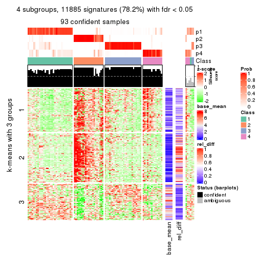
get_signatures(res, k = 5)
get_signatures(res, k = 6)
Signature heatmaps where rows are not scaled:
get_signatures(res, k = 2, scale_rows = FALSE)
get_signatures(res, k = 3, scale_rows = FALSE)
get_signatures(res, k = 4, scale_rows = FALSE)
get_signatures(res, k = 5, scale_rows = FALSE)
get_signatures(res, k = 6, scale_rows = FALSE)
Compare the overlap of signatures from different k:
compare_signatures(res)
get_signature() returns a data frame invisibly. TO get the list of signatures, the function
call should be assigned to a variable explicitly. In following code, if plot argument is set
to FALSE, no heatmap is plotted while only the differential analysis is performed.
# code only for demonstration
tb = get_signature(res, k = ..., plot = FALSE)
An example of the output of tb is:
#> which_row fdr mean_1 mean_2 scaled_mean_1 scaled_mean_2 km
#> 1 38 0.042760348 8.373488 9.131774 -0.5533452 0.5164555 1
#> 2 40 0.018707592 7.106213 8.469186 -0.6173731 0.5762149 1
#> 3 55 0.019134737 10.221463 11.207825 -0.6159697 0.5749050 1
#> 4 59 0.006059896 5.921854 7.869574 -0.6899429 0.6439467 1
#> 5 60 0.018055526 8.928898 10.211722 -0.6204761 0.5791110 1
#> 6 98 0.009384629 15.714769 14.887706 0.6635654 -0.6193277 2
...
The columns in tb are:
which_row: row indices corresponding to the input matrix.fdr: FDR for the differential test. mean_x: The mean value in group x.scaled_mean_x: The mean value in group x after rows are scaled.km: Row groups if k-means clustering is applied to rows.UMAP plot which shows how samples are separated.
dimension_reduction(res, k = 2, method = "UMAP")
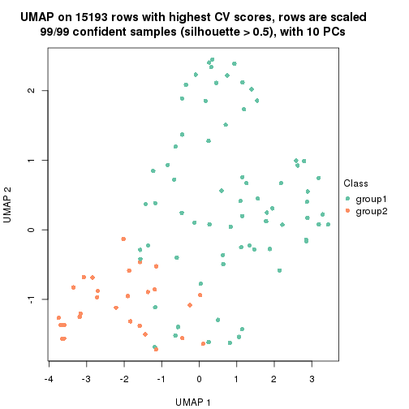
dimension_reduction(res, k = 3, method = "UMAP")
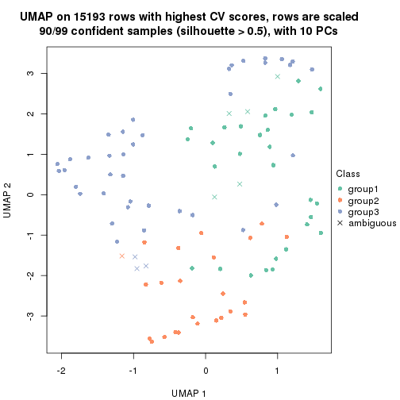
dimension_reduction(res, k = 4, method = "UMAP")
dimension_reduction(res, k = 5, method = "UMAP")
dimension_reduction(res, k = 6, method = "UMAP")
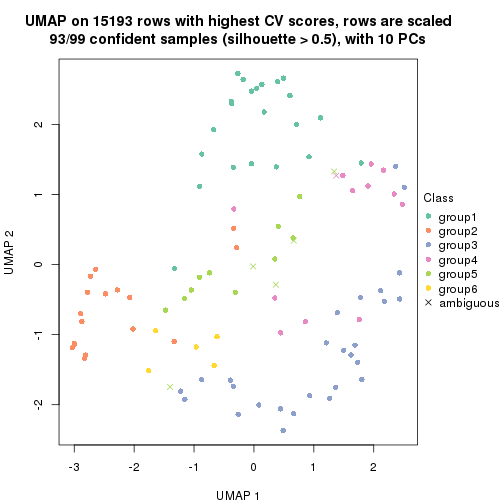
Following heatmap shows how subgroups are split when increasing k:
collect_classes(res)
If matrix rows can be associated to genes, consider to use GO_Enrichment(res,
...) to perform function enrichment for the signature genes.
The object with results only for a single top-value method and a single partition method can be extracted as:
res = res_list["MAD", "hclust"]
# you can also extract it by
# res = res_list["MAD:hclust"]
A summary of res and all the functions that can be applied to it:
res
#> A 'ConsensusPartition' object with k = 2, 3, 4, 5, 6.
#> On a matrix with 15193 rows and 99 columns.
#> Top rows (1000, 2000, 3000, 4000, 5000) are extracted by 'MAD' method.
#> Subgroups are detected by 'hclust' method.
#> Performed in total 1250 partitions by row resampling.
#> Best k for subgroups seems to be 2.
#>
#> Following methods can be applied to this 'ConsensusPartition' object:
#> [1] "cola_report" "collect_classes" "collect_plots"
#> [4] "collect_stats" "colnames" "compare_signatures"
#> [7] "consensus_heatmap" "dimension_reduction" "functional_enrichment"
#> [10] "get_anno_col" "get_anno" "get_classes"
#> [13] "get_consensus" "get_matrix" "get_membership"
#> [16] "get_param" "get_signatures" "get_stats"
#> [19] "is_best_k" "is_stable_k" "membership_heatmap"
#> [22] "ncol" "nrow" "plot_ecdf"
#> [25] "rownames" "select_partition_number" "show"
#> [28] "suggest_best_k" "test_to_known_factors"
collect_plots() function collects all the plots made from res for all k (number of partitions)
into one single page to provide an easy and fast comparison between different k.
collect_plots(res)
The plots are:
k and the heatmap of
predicted classes for each k.k.k.k.All the plots in panels can be made by individual functions and they are plotted later in this section.
select_partition_number() produces several plots showing different
statistics for choosing “optimized” k. There are following statistics:
k;k, the area increased is defined as \(A_k - A_{k-1}\).The detailed explanations of these statistics can be found in the cola vignette.
Generally speaking, lower PAC score, higher mean silhouette score or higher
concordance corresponds to better partition. Rand index and Jaccard index
measure how similar the current partition is compared to partition with k-1.
If they are too similar, we won't accept k is better than k-1.
select_partition_number(res)
The numeric values for all these statistics can be obtained by get_stats().
get_stats(res)
#> k 1-PAC mean_silhouette concordance area_increased Rand Jaccard
#> 2 2 0.499 0.709 0.879 0.3493 0.674 0.674
#> 3 3 0.305 0.583 0.782 0.2784 0.846 0.780
#> 4 4 0.314 0.608 0.742 0.2936 0.857 0.764
#> 5 5 0.346 0.469 0.697 0.0752 0.917 0.837
#> 6 6 0.344 0.472 0.682 0.0697 0.944 0.877
suggest_best_k() suggests the best \(k\) based on these statistics. The rules are as follows:
NA.suggest_best_k(res)
#> [1] 2
Following shows the table of the partitions (You need to click the show/hide
code output link to see it). The membership matrix (columns with name p*)
is inferred by
clue::cl_consensus()
function with the SE method. Basically the value in the membership matrix
represents the probability to belong to a certain group. The finall class
label for an item is determined with the group with highest probability it
belongs to.
In get_classes() function, the entropy is calculated from the membership
matrix and the silhouette score is calculated from the consensus matrix.
cbind(get_classes(res, k = 2), get_membership(res, k = 2))
#> class entropy silhouette p1 p2
#> SRR797072 1 0.1184 0.8668 0.984 0.016
#> SRR797073 1 0.0000 0.8663 1.000 0.000
#> SRR797074 1 0.1184 0.8668 0.984 0.016
#> SRR797075 1 0.2043 0.8624 0.968 0.032
#> SRR797076 1 0.9323 0.3555 0.652 0.348
#> SRR797077 1 0.1414 0.8669 0.980 0.020
#> SRR797078 1 0.0000 0.8663 1.000 0.000
#> SRR797079 1 0.0376 0.8665 0.996 0.004
#> SRR797080 1 0.1633 0.8632 0.976 0.024
#> SRR797081 1 0.0000 0.8663 1.000 0.000
#> SRR797082 1 0.1184 0.8668 0.984 0.016
#> SRR797083 1 0.1184 0.8668 0.984 0.016
#> SRR797084 2 0.2423 0.7511 0.040 0.960
#> SRR797085 2 0.5059 0.7346 0.112 0.888
#> SRR797086 1 0.4815 0.8198 0.896 0.104
#> SRR797087 1 0.6048 0.7615 0.852 0.148
#> SRR797088 1 0.4022 0.8304 0.920 0.080
#> SRR797089 1 0.6048 0.7615 0.852 0.148
#> SRR797090 1 0.3431 0.8477 0.936 0.064
#> SRR797091 1 0.4939 0.8162 0.892 0.108
#> SRR797092 1 0.4562 0.8134 0.904 0.096
#> SRR797093 1 0.0000 0.8663 1.000 0.000
#> SRR797094 1 0.0000 0.8663 1.000 0.000
#> SRR797095 1 0.6048 0.7615 0.852 0.148
#> SRR797096 1 0.0000 0.8663 1.000 0.000
#> SRR797097 1 0.4562 0.8134 0.904 0.096
#> SRR797098 2 0.9933 0.3241 0.452 0.548
#> SRR797099 1 0.1414 0.8667 0.980 0.020
#> SRR797100 1 0.0000 0.8663 1.000 0.000
#> SRR797101 1 0.4562 0.8134 0.904 0.096
#> SRR797102 1 0.9209 0.4411 0.664 0.336
#> SRR797103 2 0.8661 0.6118 0.288 0.712
#> SRR797104 1 0.0000 0.8663 1.000 0.000
#> SRR797105 1 0.0938 0.8647 0.988 0.012
#> SRR797106 1 0.9323 0.3555 0.652 0.348
#> SRR797107 1 0.0376 0.8670 0.996 0.004
#> SRR797108 1 0.0672 0.8676 0.992 0.008
#> SRR797109 1 0.0000 0.8663 1.000 0.000
#> SRR797110 1 0.1184 0.8668 0.984 0.016
#> SRR797111 1 0.1184 0.8670 0.984 0.016
#> SRR797112 1 0.0376 0.8670 0.996 0.004
#> SRR797113 1 0.0000 0.8663 1.000 0.000
#> SRR797114 1 0.0000 0.8663 1.000 0.000
#> SRR797115 1 0.0000 0.8663 1.000 0.000
#> SRR797116 1 0.0000 0.8663 1.000 0.000
#> SRR797117 1 0.3733 0.8365 0.928 0.072
#> SRR797118 1 0.1184 0.8670 0.984 0.016
#> SRR797119 1 0.0000 0.8663 1.000 0.000
#> SRR797120 1 0.9209 0.4411 0.664 0.336
#> SRR797121 1 0.0672 0.8675 0.992 0.008
#> SRR797122 1 0.1184 0.8668 0.984 0.016
#> SRR797123 1 0.0376 0.8665 0.996 0.004
#> SRR797124 1 0.6048 0.7617 0.852 0.148
#> SRR797125 1 0.1184 0.8670 0.984 0.016
#> SRR797126 1 0.1414 0.8667 0.980 0.020
#> SRR797127 1 0.1414 0.8661 0.980 0.020
#> SRR797128 1 0.0000 0.8663 1.000 0.000
#> SRR797129 1 0.0000 0.8663 1.000 0.000
#> SRR797130 1 0.2043 0.8624 0.968 0.032
#> SRR797131 1 0.1633 0.8632 0.976 0.024
#> SRR797132 1 0.1633 0.8632 0.976 0.024
#> SRR797133 1 0.1184 0.8670 0.984 0.016
#> SRR797134 1 0.1184 0.8668 0.984 0.016
#> SRR797135 1 0.1184 0.8668 0.984 0.016
#> SRR797136 1 0.1184 0.8668 0.984 0.016
#> SRR797137 1 0.0000 0.8663 1.000 0.000
#> SRR797138 1 0.9998 -0.0912 0.508 0.492
#> SRR797139 2 0.9933 0.3241 0.452 0.548
#> SRR797140 1 0.1633 0.8632 0.976 0.024
#> SRR797141 1 0.0938 0.8647 0.988 0.012
#> SRR797142 1 0.0000 0.8663 1.000 0.000
#> SRR797143 2 0.0376 0.7589 0.004 0.996
#> SRR797144 2 1.0000 0.1579 0.496 0.504
#> SRR797145 1 0.9977 -0.0649 0.528 0.472
#> SRR797146 2 0.0376 0.7589 0.004 0.996
#> SRR797147 1 0.2043 0.8624 0.968 0.032
#> SRR797148 1 0.4298 0.8286 0.912 0.088
#> SRR797149 2 0.2043 0.7597 0.032 0.968
#> SRR797150 1 0.9933 0.0820 0.548 0.452
#> SRR797151 1 0.9933 0.0820 0.548 0.452
#> SRR797152 1 0.9427 0.3840 0.640 0.360
#> SRR797153 1 0.9358 0.3965 0.648 0.352
#> SRR797154 1 0.8813 0.5160 0.700 0.300
#> SRR797155 2 0.2423 0.7584 0.040 0.960
#> SRR797156 1 0.9552 0.3272 0.624 0.376
#> SRR797157 2 0.0000 0.7569 0.000 1.000
#> SRR797158 1 0.9922 0.0984 0.552 0.448
#> SRR797159 2 0.0376 0.7589 0.004 0.996
#> SRR797160 1 0.9170 0.4405 0.668 0.332
#> SRR797161 2 0.9393 0.5306 0.356 0.644
#> SRR797162 2 0.9393 0.5306 0.356 0.644
#> SRR797163 2 0.0000 0.7569 0.000 1.000
#> SRR797164 2 0.9393 0.5306 0.356 0.644
#> SRR797165 2 0.9775 0.4257 0.412 0.588
#> SRR797166 2 0.9775 0.4257 0.412 0.588
#> SRR797167 2 0.0376 0.7589 0.004 0.996
#> SRR797168 1 0.9358 0.3965 0.648 0.352
#> SRR797169 1 0.9896 0.1291 0.560 0.440
#> SRR797170 2 0.0376 0.7589 0.004 0.996
cbind(get_classes(res, k = 3), get_membership(res, k = 3))
#> class entropy silhouette p1 p2 p3
#> SRR797072 1 0.4002 0.72185 0.840 0.000 0.160
#> SRR797073 1 0.0592 0.76079 0.988 0.000 0.012
#> SRR797074 1 0.4121 0.72020 0.832 0.000 0.168
#> SRR797075 1 0.4291 0.70405 0.820 0.000 0.180
#> SRR797076 1 0.9267 -0.00887 0.528 0.248 0.224
#> SRR797077 1 0.4121 0.71793 0.832 0.000 0.168
#> SRR797078 1 0.0892 0.76161 0.980 0.000 0.020
#> SRR797079 1 0.1267 0.76483 0.972 0.004 0.024
#> SRR797080 1 0.1989 0.75542 0.948 0.004 0.048
#> SRR797081 1 0.0747 0.76225 0.984 0.000 0.016
#> SRR797082 1 0.4002 0.72185 0.840 0.000 0.160
#> SRR797083 1 0.4002 0.72185 0.840 0.000 0.160
#> SRR797084 2 0.3686 0.76597 0.000 0.860 0.140
#> SRR797085 2 0.8691 0.23603 0.104 0.452 0.444
#> SRR797086 1 0.5982 0.63432 0.744 0.028 0.228
#> SRR797087 1 0.4862 0.59311 0.820 0.020 0.160
#> SRR797088 1 0.3678 0.70942 0.892 0.028 0.080
#> SRR797089 1 0.4741 0.59545 0.828 0.020 0.152
#> SRR797090 1 0.4654 0.68978 0.792 0.000 0.208
#> SRR797091 1 0.6025 0.62805 0.740 0.028 0.232
#> SRR797092 1 0.3755 0.68328 0.872 0.008 0.120
#> SRR797093 1 0.1031 0.75637 0.976 0.000 0.024
#> SRR797094 1 0.0892 0.76204 0.980 0.000 0.020
#> SRR797095 1 0.4741 0.59545 0.828 0.020 0.152
#> SRR797096 1 0.1860 0.76509 0.948 0.000 0.052
#> SRR797097 1 0.3755 0.68328 0.872 0.008 0.120
#> SRR797098 3 0.9464 0.57295 0.408 0.180 0.412
#> SRR797099 1 0.4172 0.72904 0.840 0.004 0.156
#> SRR797100 1 0.0747 0.76225 0.984 0.000 0.016
#> SRR797101 1 0.3755 0.68328 0.872 0.008 0.120
#> SRR797102 1 0.7990 -0.34620 0.488 0.060 0.452
#> SRR797103 3 0.7807 0.30564 0.144 0.184 0.672
#> SRR797104 1 0.0747 0.76225 0.984 0.000 0.016
#> SRR797105 1 0.1163 0.75624 0.972 0.000 0.028
#> SRR797106 1 0.9267 -0.00887 0.528 0.248 0.224
#> SRR797107 1 0.2165 0.76245 0.936 0.000 0.064
#> SRR797108 1 0.2261 0.76258 0.932 0.000 0.068
#> SRR797109 1 0.1031 0.75637 0.976 0.000 0.024
#> SRR797110 1 0.4121 0.72020 0.832 0.000 0.168
#> SRR797111 1 0.4178 0.71854 0.828 0.000 0.172
#> SRR797112 1 0.2165 0.76245 0.936 0.000 0.064
#> SRR797113 1 0.1031 0.75637 0.976 0.000 0.024
#> SRR797114 1 0.1031 0.75637 0.976 0.000 0.024
#> SRR797115 1 0.1031 0.75812 0.976 0.000 0.024
#> SRR797116 1 0.1031 0.75812 0.976 0.000 0.024
#> SRR797117 1 0.3998 0.72450 0.884 0.056 0.060
#> SRR797118 1 0.4178 0.71854 0.828 0.000 0.172
#> SRR797119 1 0.1031 0.75637 0.976 0.000 0.024
#> SRR797120 1 0.7990 -0.34620 0.488 0.060 0.452
#> SRR797121 1 0.1411 0.76751 0.964 0.000 0.036
#> SRR797122 1 0.4002 0.72185 0.840 0.000 0.160
#> SRR797123 1 0.1525 0.76386 0.964 0.004 0.032
#> SRR797124 1 0.5792 0.59129 0.772 0.036 0.192
#> SRR797125 1 0.4235 0.71533 0.824 0.000 0.176
#> SRR797126 1 0.4233 0.72636 0.836 0.004 0.160
#> SRR797127 1 0.4121 0.71718 0.832 0.000 0.168
#> SRR797128 1 0.0892 0.76204 0.980 0.000 0.020
#> SRR797129 1 0.0892 0.76204 0.980 0.000 0.020
#> SRR797130 1 0.4291 0.70405 0.820 0.000 0.180
#> SRR797131 1 0.1989 0.75542 0.948 0.004 0.048
#> SRR797132 1 0.1989 0.75542 0.948 0.004 0.048
#> SRR797133 1 0.4121 0.71852 0.832 0.000 0.168
#> SRR797134 1 0.4062 0.71960 0.836 0.000 0.164
#> SRR797135 1 0.4002 0.72185 0.840 0.000 0.160
#> SRR797136 1 0.4002 0.72185 0.840 0.000 0.160
#> SRR797137 1 0.1031 0.75637 0.976 0.000 0.024
#> SRR797138 3 0.9285 0.59435 0.392 0.160 0.448
#> SRR797139 3 0.9464 0.57295 0.408 0.180 0.412
#> SRR797140 1 0.1989 0.75542 0.948 0.004 0.048
#> SRR797141 1 0.1163 0.75624 0.972 0.000 0.028
#> SRR797142 1 0.0747 0.76225 0.984 0.000 0.016
#> SRR797143 2 0.1643 0.85965 0.000 0.956 0.044
#> SRR797144 1 0.9758 -0.46079 0.412 0.356 0.232
#> SRR797145 1 0.9461 -0.35875 0.492 0.292 0.216
#> SRR797146 2 0.1643 0.85965 0.000 0.956 0.044
#> SRR797147 1 0.4291 0.70405 0.820 0.000 0.180
#> SRR797148 1 0.4194 0.70387 0.876 0.060 0.064
#> SRR797149 2 0.4342 0.80814 0.024 0.856 0.120
#> SRR797150 3 0.8814 0.57494 0.404 0.116 0.480
#> SRR797151 3 0.8814 0.57494 0.404 0.116 0.480
#> SRR797152 1 0.8334 -0.39648 0.480 0.080 0.440
#> SRR797153 3 0.7920 0.37794 0.468 0.056 0.476
#> SRR797154 1 0.7940 -0.20962 0.524 0.060 0.416
#> SRR797155 2 0.6912 0.62172 0.028 0.628 0.344
#> SRR797156 1 0.8236 -0.42211 0.508 0.076 0.416
#> SRR797157 2 0.4555 0.78122 0.000 0.800 0.200
#> SRR797158 3 0.8820 0.56939 0.408 0.116 0.476
#> SRR797159 2 0.1643 0.85965 0.000 0.956 0.044
#> SRR797160 1 0.7962 -0.21410 0.576 0.072 0.352
#> SRR797161 3 0.4178 0.50078 0.172 0.000 0.828
#> SRR797162 3 0.4178 0.50078 0.172 0.000 0.828
#> SRR797163 3 0.5988 -0.47443 0.000 0.368 0.632
#> SRR797164 3 0.4178 0.50078 0.172 0.000 0.828
#> SRR797165 3 0.9521 0.57862 0.368 0.192 0.440
#> SRR797166 3 0.9521 0.57862 0.368 0.192 0.440
#> SRR797167 2 0.1643 0.85965 0.000 0.956 0.044
#> SRR797168 3 0.7920 0.37794 0.468 0.056 0.476
#> SRR797169 3 0.8720 0.55822 0.412 0.108 0.480
#> SRR797170 2 0.1643 0.85965 0.000 0.956 0.044
cbind(get_classes(res, k = 4), get_membership(res, k = 4))
#> class entropy silhouette p1 p2 p3 p4
#> SRR797072 1 0.405 0.708 0.768 0.000 0.228 NA
#> SRR797073 1 0.161 0.744 0.952 0.000 0.032 NA
#> SRR797074 1 0.409 0.706 0.764 0.000 0.232 NA
#> SRR797075 1 0.446 0.668 0.716 0.000 0.280 NA
#> SRR797076 1 0.725 0.134 0.468 0.008 0.112 NA
#> SRR797077 1 0.430 0.704 0.752 0.000 0.240 NA
#> SRR797078 1 0.139 0.744 0.960 0.000 0.028 NA
#> SRR797079 1 0.222 0.748 0.928 0.000 0.040 NA
#> SRR797080 1 0.608 0.608 0.684 0.000 0.168 NA
#> SRR797081 1 0.149 0.744 0.956 0.000 0.032 NA
#> SRR797082 1 0.405 0.708 0.768 0.000 0.228 NA
#> SRR797083 1 0.405 0.708 0.768 0.000 0.228 NA
#> SRR797084 2 0.497 0.575 0.000 0.548 0.000 NA
#> SRR797085 3 0.774 -0.317 0.020 0.420 0.428 NA
#> SRR797086 1 0.589 0.491 0.540 0.000 0.424 NA
#> SRR797087 1 0.669 0.221 0.532 0.004 0.384 NA
#> SRR797088 1 0.532 0.605 0.716 0.000 0.228 NA
#> SRR797089 1 0.711 0.180 0.500 0.004 0.380 NA
#> SRR797090 1 0.556 0.633 0.640 0.000 0.324 NA
#> SRR797091 1 0.604 0.471 0.528 0.000 0.428 NA
#> SRR797092 1 0.543 0.565 0.696 0.000 0.252 NA
#> SRR797093 1 0.145 0.738 0.956 0.000 0.008 NA
#> SRR797094 1 0.206 0.740 0.932 0.000 0.052 NA
#> SRR797095 1 0.711 0.180 0.500 0.004 0.380 NA
#> SRR797096 1 0.281 0.751 0.896 0.000 0.080 NA
#> SRR797097 1 0.543 0.565 0.696 0.000 0.252 NA
#> SRR797098 3 0.748 0.411 0.076 0.084 0.616 NA
#> SRR797099 1 0.460 0.720 0.760 0.000 0.212 NA
#> SRR797100 1 0.149 0.744 0.956 0.000 0.032 NA
#> SRR797101 1 0.543 0.565 0.696 0.000 0.252 NA
#> SRR797102 3 0.434 0.610 0.224 0.008 0.764 NA
#> SRR797103 3 0.752 0.206 0.012 0.240 0.552 NA
#> SRR797104 1 0.149 0.744 0.956 0.000 0.032 NA
#> SRR797105 1 0.514 0.653 0.756 0.000 0.160 NA
#> SRR797106 1 0.725 0.134 0.468 0.008 0.112 NA
#> SRR797107 1 0.282 0.745 0.900 0.000 0.064 NA
#> SRR797108 1 0.289 0.744 0.896 0.000 0.068 NA
#> SRR797109 1 0.145 0.738 0.956 0.000 0.008 NA
#> SRR797110 1 0.419 0.706 0.764 0.000 0.228 NA
#> SRR797111 1 0.405 0.709 0.768 0.000 0.228 NA
#> SRR797112 1 0.282 0.745 0.900 0.000 0.064 NA
#> SRR797113 1 0.149 0.735 0.952 0.000 0.004 NA
#> SRR797114 1 0.149 0.735 0.952 0.000 0.004 NA
#> SRR797115 1 0.191 0.741 0.940 0.000 0.020 NA
#> SRR797116 1 0.191 0.741 0.940 0.000 0.020 NA
#> SRR797117 1 0.556 0.639 0.720 0.000 0.188 NA
#> SRR797118 1 0.405 0.709 0.768 0.000 0.228 NA
#> SRR797119 1 0.145 0.738 0.956 0.000 0.008 NA
#> SRR797120 3 0.434 0.610 0.224 0.008 0.764 NA
#> SRR797121 1 0.316 0.754 0.884 0.000 0.068 NA
#> SRR797122 1 0.405 0.708 0.768 0.000 0.228 NA
#> SRR797123 1 0.274 0.747 0.904 0.000 0.036 NA
#> SRR797124 1 0.709 0.344 0.532 0.004 0.340 NA
#> SRR797125 1 0.404 0.698 0.752 0.000 0.248 NA
#> SRR797126 1 0.421 0.718 0.780 0.000 0.204 NA
#> SRR797127 1 0.425 0.692 0.744 0.000 0.252 NA
#> SRR797128 1 0.206 0.740 0.932 0.000 0.052 NA
#> SRR797129 1 0.226 0.738 0.924 0.000 0.056 NA
#> SRR797130 1 0.446 0.668 0.716 0.000 0.280 NA
#> SRR797131 1 0.608 0.608 0.684 0.000 0.168 NA
#> SRR797132 1 0.608 0.608 0.684 0.000 0.168 NA
#> SRR797133 1 0.405 0.706 0.768 0.000 0.228 NA
#> SRR797134 1 0.419 0.698 0.752 0.000 0.244 NA
#> SRR797135 1 0.405 0.708 0.768 0.000 0.228 NA
#> SRR797136 1 0.405 0.708 0.768 0.000 0.228 NA
#> SRR797137 1 0.149 0.735 0.952 0.000 0.004 NA
#> SRR797138 3 0.546 0.627 0.108 0.104 0.768 NA
#> SRR797139 3 0.748 0.411 0.076 0.084 0.616 NA
#> SRR797140 1 0.608 0.608 0.684 0.000 0.168 NA
#> SRR797141 1 0.514 0.653 0.756 0.000 0.160 NA
#> SRR797142 1 0.149 0.744 0.956 0.000 0.032 NA
#> SRR797143 2 0.187 0.820 0.000 0.928 0.072 NA
#> SRR797144 3 0.893 0.404 0.156 0.292 0.452 NA
#> SRR797145 3 0.925 0.370 0.148 0.200 0.456 NA
#> SRR797146 2 0.187 0.820 0.000 0.928 0.072 NA
#> SRR797147 1 0.446 0.668 0.716 0.000 0.280 NA
#> SRR797148 1 0.700 0.450 0.576 0.000 0.244 NA
#> SRR797149 2 0.485 0.751 0.004 0.788 0.132 NA
#> SRR797150 3 0.477 0.654 0.116 0.056 0.808 NA
#> SRR797151 3 0.477 0.654 0.116 0.056 0.808 NA
#> SRR797152 3 0.482 0.633 0.216 0.028 0.752 NA
#> SRR797153 3 0.389 0.645 0.196 0.008 0.796 NA
#> SRR797154 3 0.431 0.535 0.260 0.004 0.736 NA
#> SRR797155 2 0.685 0.528 0.004 0.556 0.336 NA
#> SRR797156 3 0.609 0.648 0.192 0.012 0.700 NA
#> SRR797157 2 0.391 0.734 0.000 0.784 0.212 NA
#> SRR797158 3 0.494 0.656 0.128 0.056 0.796 NA
#> SRR797159 2 0.187 0.820 0.000 0.928 0.072 NA
#> SRR797160 3 0.642 0.575 0.268 0.004 0.632 NA
#> SRR797161 3 0.619 0.337 0.008 0.056 0.624 NA
#> SRR797162 3 0.619 0.337 0.008 0.056 0.624 NA
#> SRR797163 2 0.779 0.365 0.000 0.424 0.272 NA
#> SRR797164 3 0.619 0.337 0.008 0.056 0.624 NA
#> SRR797165 3 0.703 0.377 0.036 0.100 0.636 NA
#> SRR797166 3 0.703 0.377 0.036 0.100 0.636 NA
#> SRR797167 2 0.187 0.820 0.000 0.928 0.072 NA
#> SRR797168 3 0.389 0.645 0.196 0.008 0.796 NA
#> SRR797169 3 0.483 0.658 0.132 0.048 0.800 NA
#> SRR797170 2 0.187 0.820 0.000 0.928 0.072 NA
cbind(get_classes(res, k = 5), get_membership(res, k = 5))
#> class entropy silhouette p1 p2 p3 p4 p5
#> SRR797072 1 0.4265 0.6648 0.712 0.000 0.012 0.008 0.268
#> SRR797073 1 0.2351 0.6983 0.896 0.000 0.088 0.016 0.000
#> SRR797074 1 0.4313 0.6630 0.704 0.000 0.008 0.012 0.276
#> SRR797075 1 0.4754 0.6263 0.660 0.000 0.024 0.008 0.308
#> SRR797076 1 0.7491 -0.0531 0.432 0.000 0.052 0.308 0.208
#> SRR797077 1 0.4410 0.6591 0.700 0.000 0.008 0.016 0.276
#> SRR797078 1 0.2550 0.6997 0.892 0.000 0.084 0.020 0.004
#> SRR797079 1 0.2952 0.7026 0.868 0.000 0.104 0.020 0.008
#> SRR797080 1 0.4746 0.4946 0.600 0.000 0.376 0.024 0.000
#> SRR797081 1 0.2511 0.6992 0.892 0.000 0.088 0.016 0.004
#> SRR797082 1 0.4265 0.6648 0.712 0.000 0.012 0.008 0.268
#> SRR797083 1 0.4265 0.6648 0.712 0.000 0.012 0.008 0.268
#> SRR797084 4 0.3305 0.0000 0.000 0.224 0.000 0.776 0.000
#> SRR797085 2 0.7448 0.1871 0.000 0.392 0.320 0.036 0.252
#> SRR797086 1 0.7005 0.4351 0.488 0.000 0.232 0.024 0.256
#> SRR797087 3 0.5380 -0.0213 0.440 0.000 0.516 0.032 0.012
#> SRR797088 1 0.5234 0.5162 0.676 0.000 0.256 0.028 0.040
#> SRR797089 3 0.5170 0.0245 0.412 0.000 0.552 0.028 0.008
#> SRR797090 1 0.6168 0.5987 0.604 0.000 0.116 0.024 0.256
#> SRR797091 1 0.7058 0.4132 0.476 0.000 0.252 0.024 0.248
#> SRR797092 1 0.5283 0.4212 0.600 0.000 0.352 0.032 0.016
#> SRR797093 1 0.1405 0.7024 0.956 0.000 0.016 0.020 0.008
#> SRR797094 1 0.2935 0.6873 0.860 0.000 0.120 0.016 0.004
#> SRR797095 3 0.5170 0.0245 0.412 0.000 0.552 0.028 0.008
#> SRR797096 1 0.2520 0.7131 0.888 0.000 0.004 0.012 0.096
#> SRR797097 1 0.5283 0.4212 0.600 0.000 0.352 0.032 0.016
#> SRR797098 3 0.3502 0.2746 0.036 0.032 0.864 0.008 0.060
#> SRR797099 1 0.4799 0.6816 0.716 0.000 0.056 0.008 0.220
#> SRR797100 1 0.2511 0.6992 0.892 0.000 0.088 0.016 0.004
#> SRR797101 1 0.5283 0.4212 0.600 0.000 0.352 0.032 0.016
#> SRR797102 5 0.6826 -0.1421 0.156 0.020 0.404 0.000 0.420
#> SRR797103 5 0.7303 0.2795 0.004 0.164 0.280 0.052 0.500
#> SRR797104 1 0.2511 0.6992 0.892 0.000 0.088 0.016 0.004
#> SRR797105 1 0.4506 0.5491 0.676 0.000 0.296 0.028 0.000
#> SRR797106 1 0.7491 -0.0531 0.432 0.000 0.052 0.308 0.208
#> SRR797107 1 0.2069 0.7118 0.912 0.000 0.000 0.012 0.076
#> SRR797108 1 0.2130 0.7116 0.908 0.000 0.000 0.012 0.080
#> SRR797109 1 0.1405 0.7024 0.956 0.000 0.016 0.020 0.008
#> SRR797110 1 0.4114 0.6630 0.712 0.000 0.000 0.016 0.272
#> SRR797111 1 0.3715 0.6701 0.736 0.000 0.000 0.004 0.260
#> SRR797112 1 0.2069 0.7118 0.912 0.000 0.000 0.012 0.076
#> SRR797113 1 0.1211 0.6980 0.960 0.000 0.000 0.024 0.016
#> SRR797114 1 0.1211 0.6980 0.960 0.000 0.000 0.024 0.016
#> SRR797115 1 0.1507 0.7049 0.952 0.000 0.024 0.012 0.012
#> SRR797116 1 0.1507 0.7049 0.952 0.000 0.024 0.012 0.012
#> SRR797117 1 0.5587 0.5315 0.664 0.000 0.244 0.048 0.044
#> SRR797118 1 0.3715 0.6701 0.736 0.000 0.000 0.004 0.260
#> SRR797119 1 0.1405 0.7024 0.956 0.000 0.016 0.020 0.008
#> SRR797120 5 0.6826 -0.1421 0.156 0.020 0.404 0.000 0.420
#> SRR797121 1 0.3157 0.7182 0.872 0.000 0.060 0.016 0.052
#> SRR797122 1 0.4265 0.6648 0.712 0.000 0.012 0.008 0.268
#> SRR797123 1 0.2302 0.7086 0.916 0.000 0.048 0.016 0.020
#> SRR797124 1 0.6744 0.1092 0.436 0.000 0.380 0.012 0.172
#> SRR797125 1 0.4314 0.6572 0.700 0.000 0.016 0.004 0.280
#> SRR797126 1 0.4082 0.6749 0.740 0.000 0.012 0.008 0.240
#> SRR797127 1 0.4477 0.6509 0.688 0.000 0.016 0.008 0.288
#> SRR797128 1 0.2935 0.6873 0.860 0.000 0.120 0.016 0.004
#> SRR797129 1 0.3124 0.6797 0.844 0.000 0.136 0.016 0.004
#> SRR797130 1 0.4754 0.6263 0.660 0.000 0.024 0.008 0.308
#> SRR797131 1 0.4746 0.4946 0.600 0.000 0.376 0.024 0.000
#> SRR797132 1 0.4746 0.4946 0.600 0.000 0.376 0.024 0.000
#> SRR797133 1 0.3790 0.6642 0.724 0.000 0.000 0.004 0.272
#> SRR797134 1 0.4433 0.6554 0.696 0.000 0.016 0.008 0.280
#> SRR797135 1 0.4265 0.6648 0.712 0.000 0.012 0.008 0.268
#> SRR797136 1 0.4265 0.6648 0.712 0.000 0.012 0.008 0.268
#> SRR797137 1 0.1211 0.6980 0.960 0.000 0.000 0.024 0.016
#> SRR797138 3 0.7378 0.2017 0.048 0.108 0.468 0.020 0.356
#> SRR797139 3 0.3502 0.2746 0.036 0.032 0.864 0.008 0.060
#> SRR797140 1 0.4746 0.4946 0.600 0.000 0.376 0.024 0.000
#> SRR797141 1 0.4506 0.5491 0.676 0.000 0.296 0.028 0.000
#> SRR797142 1 0.2511 0.6992 0.892 0.000 0.088 0.016 0.004
#> SRR797143 2 0.0771 0.6962 0.000 0.976 0.020 0.004 0.000
#> SRR797144 3 0.7706 0.2147 0.088 0.280 0.480 0.008 0.144
#> SRR797145 3 0.4979 0.2757 0.084 0.160 0.740 0.008 0.008
#> SRR797146 2 0.1569 0.6869 0.000 0.944 0.044 0.008 0.004
#> SRR797147 1 0.4754 0.6263 0.660 0.000 0.024 0.008 0.308
#> SRR797148 1 0.5855 0.2827 0.496 0.000 0.432 0.052 0.020
#> SRR797149 2 0.3242 0.5940 0.000 0.816 0.172 0.012 0.000
#> SRR797150 3 0.6985 0.2192 0.056 0.064 0.476 0.016 0.388
#> SRR797151 3 0.6985 0.2192 0.056 0.064 0.476 0.016 0.388
#> SRR797152 3 0.7488 0.0296 0.156 0.040 0.404 0.012 0.388
#> SRR797153 3 0.6686 0.0998 0.116 0.020 0.432 0.004 0.428
#> SRR797154 5 0.7017 -0.1759 0.180 0.016 0.384 0.004 0.416
#> SRR797155 2 0.6100 0.3706 0.000 0.496 0.408 0.016 0.080
#> SRR797156 3 0.6684 0.2684 0.120 0.024 0.544 0.008 0.304
#> SRR797157 2 0.4237 0.5653 0.000 0.752 0.200 0.000 0.048
#> SRR797158 3 0.7118 0.2140 0.060 0.064 0.468 0.020 0.388
#> SRR797159 2 0.0609 0.6975 0.000 0.980 0.020 0.000 0.000
#> SRR797160 3 0.7048 0.2598 0.192 0.016 0.508 0.012 0.272
#> SRR797161 5 0.4406 0.3991 0.000 0.000 0.108 0.128 0.764
#> SRR797162 5 0.4406 0.3991 0.000 0.000 0.108 0.128 0.764
#> SRR797163 5 0.7957 -0.2766 0.000 0.340 0.144 0.132 0.384
#> SRR797164 5 0.4406 0.3991 0.000 0.000 0.108 0.128 0.764
#> SRR797165 3 0.2722 0.2461 0.000 0.040 0.892 0.008 0.060
#> SRR797166 3 0.2722 0.2461 0.000 0.040 0.892 0.008 0.060
#> SRR797167 2 0.0609 0.6975 0.000 0.980 0.020 0.000 0.000
#> SRR797168 3 0.6686 0.0998 0.116 0.020 0.432 0.004 0.428
#> SRR797169 3 0.7025 0.2086 0.060 0.056 0.468 0.020 0.396
#> SRR797170 2 0.0609 0.6975 0.000 0.980 0.020 0.000 0.000
cbind(get_classes(res, k = 6), get_membership(res, k = 6))
#> class entropy silhouette p1 p2 p3 p4 p5 p6
#> SRR797072 1 0.4169 0.5732 0.712 0.000 0.008 0.016 0.252 0.012
#> SRR797073 1 0.2489 0.5755 0.860 0.000 0.128 0.000 0.012 0.000
#> SRR797074 1 0.4169 0.5733 0.712 0.000 0.008 0.016 0.252 0.012
#> SRR797075 1 0.4015 0.5341 0.664 0.000 0.008 0.004 0.320 0.004
#> SRR797076 4 0.5382 1.0000 0.316 0.000 0.008 0.568 0.108 0.000
#> SRR797077 1 0.4551 0.5540 0.668 0.000 0.008 0.040 0.280 0.004
#> SRR797078 1 0.2488 0.5759 0.864 0.000 0.124 0.000 0.008 0.004
#> SRR797079 1 0.2825 0.5773 0.844 0.000 0.136 0.000 0.012 0.008
#> SRR797080 1 0.4676 0.2091 0.544 0.000 0.416 0.000 0.036 0.004
#> SRR797081 1 0.2631 0.5745 0.856 0.000 0.128 0.000 0.012 0.004
#> SRR797082 1 0.4169 0.5732 0.712 0.000 0.008 0.016 0.252 0.012
#> SRR797083 1 0.4169 0.5732 0.712 0.000 0.008 0.016 0.252 0.012
#> SRR797084 3 0.6977 -0.3900 0.000 0.076 0.404 0.384 0.016 0.120
#> SRR797085 5 0.6618 -0.2111 0.000 0.348 0.020 0.004 0.368 0.260
#> SRR797086 1 0.6775 0.3183 0.472 0.000 0.168 0.036 0.304 0.020
#> SRR797087 3 0.6055 0.4037 0.384 0.000 0.400 0.000 0.212 0.004
#> SRR797088 1 0.6138 0.2506 0.604 0.000 0.200 0.064 0.124 0.008
#> SRR797089 3 0.5995 0.4447 0.348 0.000 0.444 0.000 0.204 0.004
#> SRR797090 1 0.5785 0.5219 0.596 0.000 0.128 0.012 0.248 0.016
#> SRR797091 1 0.6841 0.3037 0.460 0.000 0.180 0.036 0.304 0.020
#> SRR797092 1 0.5351 0.0485 0.552 0.000 0.344 0.000 0.096 0.008
#> SRR797093 1 0.2492 0.5652 0.876 0.000 0.020 0.100 0.004 0.000
#> SRR797094 1 0.3037 0.5459 0.820 0.000 0.160 0.000 0.016 0.004
#> SRR797095 3 0.5995 0.4447 0.348 0.000 0.444 0.000 0.204 0.004
#> SRR797096 1 0.4048 0.5552 0.764 0.000 0.000 0.132 0.100 0.004
#> SRR797097 1 0.5351 0.0485 0.552 0.000 0.344 0.000 0.096 0.008
#> SRR797098 5 0.7009 0.1704 0.040 0.004 0.388 0.028 0.404 0.136
#> SRR797099 1 0.5627 0.5535 0.668 0.000 0.048 0.064 0.192 0.028
#> SRR797100 1 0.2631 0.5745 0.856 0.000 0.128 0.000 0.012 0.004
#> SRR797101 1 0.5351 0.0485 0.552 0.000 0.344 0.000 0.096 0.008
#> SRR797102 5 0.3139 0.5176 0.152 0.000 0.000 0.000 0.816 0.032
#> SRR797103 6 0.7598 0.4729 0.012 0.128 0.172 0.008 0.240 0.440
#> SRR797104 1 0.2631 0.5745 0.856 0.000 0.128 0.000 0.012 0.004
#> SRR797105 1 0.4319 0.2873 0.620 0.000 0.348 0.000 0.032 0.000
#> SRR797106 4 0.5382 1.0000 0.316 0.000 0.008 0.568 0.108 0.000
#> SRR797107 1 0.3138 0.5746 0.840 0.000 0.004 0.096 0.060 0.000
#> SRR797108 1 0.3196 0.5736 0.836 0.000 0.004 0.096 0.064 0.000
#> SRR797109 1 0.2492 0.5652 0.876 0.000 0.020 0.100 0.004 0.000
#> SRR797110 1 0.4727 0.5601 0.680 0.000 0.008 0.048 0.252 0.012
#> SRR797111 1 0.4807 0.5462 0.680 0.000 0.000 0.060 0.236 0.024
#> SRR797112 1 0.3138 0.5746 0.840 0.000 0.004 0.096 0.060 0.000
#> SRR797113 1 0.2772 0.5034 0.816 0.000 0.004 0.180 0.000 0.000
#> SRR797114 1 0.2772 0.5034 0.816 0.000 0.004 0.180 0.000 0.000
#> SRR797115 1 0.2803 0.5559 0.856 0.000 0.012 0.116 0.016 0.000
#> SRR797116 1 0.2803 0.5559 0.856 0.000 0.012 0.116 0.016 0.000
#> SRR797117 1 0.6443 0.2398 0.568 0.000 0.168 0.144 0.120 0.000
#> SRR797118 1 0.4807 0.5462 0.680 0.000 0.000 0.060 0.236 0.024
#> SRR797119 1 0.2492 0.5652 0.876 0.000 0.020 0.100 0.004 0.000
#> SRR797120 5 0.3139 0.5176 0.152 0.000 0.000 0.000 0.816 0.032
#> SRR797121 1 0.3963 0.6009 0.804 0.000 0.064 0.064 0.068 0.000
#> SRR797122 1 0.4169 0.5732 0.712 0.000 0.008 0.016 0.252 0.012
#> SRR797123 1 0.3569 0.5597 0.828 0.000 0.036 0.104 0.024 0.008
#> SRR797124 1 0.7053 -0.0513 0.384 0.000 0.168 0.028 0.380 0.040
#> SRR797125 1 0.4320 0.5561 0.692 0.000 0.000 0.020 0.264 0.024
#> SRR797126 1 0.5154 0.5323 0.680 0.000 0.008 0.076 0.208 0.028
#> SRR797127 1 0.3977 0.5582 0.692 0.000 0.008 0.008 0.288 0.004
#> SRR797128 1 0.3037 0.5459 0.820 0.000 0.160 0.000 0.016 0.004
#> SRR797129 1 0.3144 0.5296 0.808 0.000 0.172 0.000 0.016 0.004
#> SRR797130 1 0.4015 0.5341 0.664 0.000 0.008 0.004 0.320 0.004
#> SRR797131 1 0.4676 0.2091 0.544 0.000 0.416 0.000 0.036 0.004
#> SRR797132 1 0.4676 0.2091 0.544 0.000 0.416 0.000 0.036 0.004
#> SRR797133 1 0.4853 0.5371 0.672 0.000 0.000 0.060 0.244 0.024
#> SRR797134 1 0.4171 0.5644 0.700 0.000 0.008 0.012 0.268 0.012
#> SRR797135 1 0.4169 0.5732 0.712 0.000 0.008 0.016 0.252 0.012
#> SRR797136 1 0.4169 0.5732 0.712 0.000 0.008 0.016 0.252 0.012
#> SRR797137 1 0.2772 0.5034 0.816 0.000 0.004 0.180 0.000 0.000
#> SRR797138 5 0.3575 0.5327 0.020 0.084 0.000 0.004 0.828 0.064
#> SRR797139 5 0.7009 0.1704 0.040 0.004 0.388 0.028 0.404 0.136
#> SRR797140 1 0.4676 0.2091 0.544 0.000 0.416 0.000 0.036 0.004
#> SRR797141 1 0.4319 0.2873 0.620 0.000 0.348 0.000 0.032 0.000
#> SRR797142 1 0.2631 0.5745 0.856 0.000 0.128 0.000 0.012 0.004
#> SRR797143 2 0.0405 0.8215 0.000 0.988 0.000 0.000 0.008 0.004
#> SRR797144 5 0.7919 0.2221 0.076 0.276 0.164 0.012 0.420 0.052
#> SRR797145 3 0.8136 -0.1115 0.076 0.160 0.380 0.028 0.312 0.044
#> SRR797146 2 0.1458 0.8122 0.000 0.948 0.020 0.000 0.016 0.016
#> SRR797147 1 0.4015 0.5341 0.664 0.000 0.008 0.004 0.320 0.004
#> SRR797148 1 0.6896 -0.2098 0.412 0.000 0.376 0.088 0.116 0.008
#> SRR797149 2 0.3947 0.7209 0.000 0.820 0.064 0.024 0.060 0.032
#> SRR797150 5 0.3131 0.5653 0.024 0.040 0.000 0.016 0.868 0.052
#> SRR797151 5 0.3131 0.5653 0.024 0.040 0.000 0.016 0.868 0.052
#> SRR797152 5 0.3726 0.5364 0.144 0.020 0.000 0.000 0.796 0.040
#> SRR797153 5 0.2715 0.5556 0.112 0.000 0.000 0.004 0.860 0.024
#> SRR797154 5 0.3274 0.5076 0.168 0.000 0.000 0.004 0.804 0.024
#> SRR797155 2 0.7504 0.2861 0.000 0.444 0.104 0.028 0.256 0.168
#> SRR797156 5 0.4562 0.5773 0.100 0.004 0.080 0.012 0.772 0.032
#> SRR797157 2 0.4896 0.5938 0.000 0.716 0.040 0.000 0.144 0.100
#> SRR797158 5 0.3146 0.5665 0.028 0.040 0.000 0.016 0.868 0.048
#> SRR797159 2 0.0260 0.8228 0.000 0.992 0.000 0.000 0.008 0.000
#> SRR797160 5 0.5146 0.5296 0.160 0.000 0.084 0.016 0.708 0.032
#> SRR797161 6 0.3608 0.7401 0.012 0.000 0.000 0.000 0.272 0.716
#> SRR797162 6 0.3608 0.7401 0.012 0.000 0.000 0.000 0.272 0.716
#> SRR797163 6 0.4901 0.2231 0.000 0.300 0.024 0.000 0.044 0.632
#> SRR797164 6 0.3608 0.7401 0.012 0.000 0.000 0.000 0.272 0.716
#> SRR797165 5 0.6484 0.2149 0.004 0.004 0.388 0.028 0.424 0.152
#> SRR797166 5 0.6484 0.2149 0.004 0.004 0.388 0.028 0.424 0.152
#> SRR797167 2 0.0260 0.8228 0.000 0.992 0.000 0.000 0.008 0.000
#> SRR797168 5 0.2715 0.5556 0.112 0.000 0.000 0.004 0.860 0.024
#> SRR797169 5 0.3165 0.5679 0.032 0.032 0.000 0.020 0.868 0.048
#> SRR797170 2 0.0260 0.8228 0.000 0.992 0.000 0.000 0.008 0.000
Heatmaps for the consensus matrix. It visualizes the probability of two samples to be in a same group.
consensus_heatmap(res, k = 2)
consensus_heatmap(res, k = 3)
consensus_heatmap(res, k = 4)
consensus_heatmap(res, k = 5)
consensus_heatmap(res, k = 6)
Heatmaps for the membership of samples in all partitions to see how consistent they are:
membership_heatmap(res, k = 2)
membership_heatmap(res, k = 3)
membership_heatmap(res, k = 4)
membership_heatmap(res, k = 5)
membership_heatmap(res, k = 6)
As soon as we have had the classes for columns, we can look for signatures which are significantly different between classes which can be candidate marks for certain classes. Following are the heatmaps for signatures.
Signature heatmaps where rows are scaled:
get_signatures(res, k = 2)
get_signatures(res, k = 3)
get_signatures(res, k = 4)
get_signatures(res, k = 5)
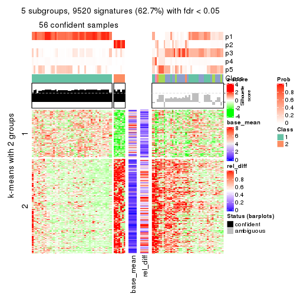
get_signatures(res, k = 6)
Signature heatmaps where rows are not scaled:
get_signatures(res, k = 2, scale_rows = FALSE)
get_signatures(res, k = 3, scale_rows = FALSE)
get_signatures(res, k = 4, scale_rows = FALSE)
get_signatures(res, k = 5, scale_rows = FALSE)
get_signatures(res, k = 6, scale_rows = FALSE)
Compare the overlap of signatures from different k:
compare_signatures(res)
get_signature() returns a data frame invisibly. TO get the list of signatures, the function
call should be assigned to a variable explicitly. In following code, if plot argument is set
to FALSE, no heatmap is plotted while only the differential analysis is performed.
# code only for demonstration
tb = get_signature(res, k = ..., plot = FALSE)
An example of the output of tb is:
#> which_row fdr mean_1 mean_2 scaled_mean_1 scaled_mean_2 km
#> 1 38 0.042760348 8.373488 9.131774 -0.5533452 0.5164555 1
#> 2 40 0.018707592 7.106213 8.469186 -0.6173731 0.5762149 1
#> 3 55 0.019134737 10.221463 11.207825 -0.6159697 0.5749050 1
#> 4 59 0.006059896 5.921854 7.869574 -0.6899429 0.6439467 1
#> 5 60 0.018055526 8.928898 10.211722 -0.6204761 0.5791110 1
#> 6 98 0.009384629 15.714769 14.887706 0.6635654 -0.6193277 2
...
The columns in tb are:
which_row: row indices corresponding to the input matrix.fdr: FDR for the differential test. mean_x: The mean value in group x.scaled_mean_x: The mean value in group x after rows are scaled.km: Row groups if k-means clustering is applied to rows.UMAP plot which shows how samples are separated.
dimension_reduction(res, k = 2, method = "UMAP")
dimension_reduction(res, k = 3, method = "UMAP")

dimension_reduction(res, k = 4, method = "UMAP")
dimension_reduction(res, k = 5, method = "UMAP")
dimension_reduction(res, k = 6, method = "UMAP")
Following heatmap shows how subgroups are split when increasing k:
collect_classes(res)
If matrix rows can be associated to genes, consider to use GO_Enrichment(res,
...) to perform function enrichment for the signature genes.
The object with results only for a single top-value method and a single partition method can be extracted as:
res = res_list["MAD", "kmeans"]
# you can also extract it by
# res = res_list["MAD:kmeans"]
A summary of res and all the functions that can be applied to it:
res
#> A 'ConsensusPartition' object with k = 2, 3, 4, 5, 6.
#> On a matrix with 15193 rows and 99 columns.
#> Top rows (1000, 2000, 3000, 4000, 5000) are extracted by 'MAD' method.
#> Subgroups are detected by 'kmeans' method.
#> Performed in total 1250 partitions by row resampling.
#> Best k for subgroups seems to be 3.
#>
#> Following methods can be applied to this 'ConsensusPartition' object:
#> [1] "cola_report" "collect_classes" "collect_plots"
#> [4] "collect_stats" "colnames" "compare_signatures"
#> [7] "consensus_heatmap" "dimension_reduction" "functional_enrichment"
#> [10] "get_anno_col" "get_anno" "get_classes"
#> [13] "get_consensus" "get_matrix" "get_membership"
#> [16] "get_param" "get_signatures" "get_stats"
#> [19] "is_best_k" "is_stable_k" "membership_heatmap"
#> [22] "ncol" "nrow" "plot_ecdf"
#> [25] "rownames" "select_partition_number" "show"
#> [28] "suggest_best_k" "test_to_known_factors"
collect_plots() function collects all the plots made from res for all k (number of partitions)
into one single page to provide an easy and fast comparison between different k.
collect_plots(res)
The plots are:
k and the heatmap of
predicted classes for each k.k.k.k.All the plots in panels can be made by individual functions and they are plotted later in this section.
select_partition_number() produces several plots showing different
statistics for choosing “optimized” k. There are following statistics:
k;k, the area increased is defined as \(A_k - A_{k-1}\).The detailed explanations of these statistics can be found in the cola vignette.
Generally speaking, lower PAC score, higher mean silhouette score or higher
concordance corresponds to better partition. Rand index and Jaccard index
measure how similar the current partition is compared to partition with k-1.
If they are too similar, we won't accept k is better than k-1.
select_partition_number(res)
The numeric values for all these statistics can be obtained by get_stats().
get_stats(res)
#> k 1-PAC mean_silhouette concordance area_increased Rand Jaccard
#> 2 2 0.547 0.882 0.927 0.4396 0.573 0.573
#> 3 3 0.589 0.791 0.876 0.4637 0.685 0.486
#> 4 4 0.541 0.643 0.750 0.1297 0.927 0.790
#> 5 5 0.582 0.570 0.740 0.0713 0.884 0.624
#> 6 6 0.643 0.393 0.658 0.0471 0.909 0.637
suggest_best_k() suggests the best \(k\) based on these statistics. The rules are as follows:
NA.suggest_best_k(res)
#> [1] 3
Following shows the table of the partitions (You need to click the show/hide
code output link to see it). The membership matrix (columns with name p*)
is inferred by
clue::cl_consensus()
function with the SE method. Basically the value in the membership matrix
represents the probability to belong to a certain group. The finall class
label for an item is determined with the group with highest probability it
belongs to.
In get_classes() function, the entropy is calculated from the membership
matrix and the silhouette score is calculated from the consensus matrix.
cbind(get_classes(res, k = 2), get_membership(res, k = 2))
#> class entropy silhouette p1 p2
#> SRR797072 1 0.5946 0.876 0.856 0.144
#> SRR797073 1 0.0938 0.912 0.988 0.012
#> SRR797074 1 0.5946 0.876 0.856 0.144
#> SRR797075 1 0.6623 0.855 0.828 0.172
#> SRR797076 1 0.5946 0.876 0.856 0.144
#> SRR797077 1 0.6247 0.868 0.844 0.156
#> SRR797078 1 0.0938 0.912 0.988 0.012
#> SRR797079 1 0.0938 0.912 0.988 0.012
#> SRR797080 1 0.0938 0.912 0.988 0.012
#> SRR797081 1 0.0938 0.912 0.988 0.012
#> SRR797082 1 0.5946 0.876 0.856 0.144
#> SRR797083 1 0.0938 0.912 0.988 0.012
#> SRR797084 2 0.0672 0.931 0.008 0.992
#> SRR797085 2 0.0938 0.930 0.012 0.988
#> SRR797086 1 0.5946 0.876 0.856 0.144
#> SRR797087 1 0.1184 0.911 0.984 0.016
#> SRR797088 1 0.0938 0.912 0.988 0.012
#> SRR797089 1 0.1184 0.911 0.984 0.016
#> SRR797090 1 0.5946 0.876 0.856 0.144
#> SRR797091 1 0.5294 0.885 0.880 0.120
#> SRR797092 1 0.0938 0.912 0.988 0.012
#> SRR797093 1 0.0000 0.912 1.000 0.000
#> SRR797094 1 0.0938 0.912 0.988 0.012
#> SRR797095 1 0.0938 0.912 0.988 0.012
#> SRR797096 1 0.0938 0.912 0.988 0.012
#> SRR797097 1 0.0938 0.912 0.988 0.012
#> SRR797098 2 0.8016 0.745 0.244 0.756
#> SRR797099 1 0.0672 0.912 0.992 0.008
#> SRR797100 1 0.0938 0.912 0.988 0.012
#> SRR797101 1 0.1184 0.911 0.984 0.016
#> SRR797102 2 0.0938 0.930 0.012 0.988
#> SRR797103 2 0.0376 0.932 0.004 0.996
#> SRR797104 1 0.0938 0.912 0.988 0.012
#> SRR797105 1 0.0938 0.912 0.988 0.012
#> SRR797106 1 0.9286 0.606 0.656 0.344
#> SRR797107 1 0.4815 0.891 0.896 0.104
#> SRR797108 1 0.5946 0.876 0.856 0.144
#> SRR797109 1 0.0000 0.912 1.000 0.000
#> SRR797110 1 0.6048 0.873 0.852 0.148
#> SRR797111 1 0.6343 0.865 0.840 0.160
#> SRR797112 1 0.1414 0.911 0.980 0.020
#> SRR797113 1 0.0672 0.912 0.992 0.008
#> SRR797114 1 0.4431 0.894 0.908 0.092
#> SRR797115 1 0.0938 0.912 0.988 0.012
#> SRR797116 1 0.0000 0.912 1.000 0.000
#> SRR797117 1 0.1184 0.912 0.984 0.016
#> SRR797118 1 0.6048 0.873 0.852 0.148
#> SRR797119 1 0.0938 0.912 0.988 0.012
#> SRR797120 1 0.6343 0.865 0.840 0.160
#> SRR797121 1 0.1414 0.911 0.980 0.020
#> SRR797122 1 0.5946 0.876 0.856 0.144
#> SRR797123 1 0.0000 0.912 1.000 0.000
#> SRR797124 1 0.1184 0.911 0.984 0.016
#> SRR797125 1 0.6343 0.865 0.840 0.160
#> SRR797126 1 0.6343 0.865 0.840 0.160
#> SRR797127 1 0.6343 0.865 0.840 0.160
#> SRR797128 1 0.0938 0.912 0.988 0.012
#> SRR797129 1 0.0938 0.912 0.988 0.012
#> SRR797130 1 0.6343 0.865 0.840 0.160
#> SRR797131 1 0.0938 0.912 0.988 0.012
#> SRR797132 1 0.0938 0.912 0.988 0.012
#> SRR797133 1 0.6343 0.865 0.840 0.160
#> SRR797134 1 0.6343 0.865 0.840 0.160
#> SRR797135 1 0.5946 0.876 0.856 0.144
#> SRR797136 1 0.5946 0.876 0.856 0.144
#> SRR797137 1 0.0672 0.912 0.992 0.008
#> SRR797138 2 0.0938 0.930 0.012 0.988
#> SRR797139 2 0.7139 0.796 0.196 0.804
#> SRR797140 1 0.0938 0.912 0.988 0.012
#> SRR797141 1 0.0938 0.912 0.988 0.012
#> SRR797142 1 0.0938 0.912 0.988 0.012
#> SRR797143 2 0.0000 0.931 0.000 1.000
#> SRR797144 2 0.0672 0.931 0.008 0.992
#> SRR797145 2 0.6343 0.821 0.160 0.840
#> SRR797146 2 0.0672 0.931 0.008 0.992
#> SRR797147 1 0.7453 0.813 0.788 0.212
#> SRR797148 1 0.0938 0.912 0.988 0.012
#> SRR797149 2 0.0672 0.931 0.008 0.992
#> SRR797150 2 0.0938 0.930 0.012 0.988
#> SRR797151 2 0.0938 0.930 0.012 0.988
#> SRR797152 2 0.7376 0.718 0.208 0.792
#> SRR797153 2 0.7299 0.724 0.204 0.796
#> SRR797154 1 0.9686 0.495 0.604 0.396
#> SRR797155 2 0.2778 0.908 0.048 0.952
#> SRR797156 2 0.7745 0.683 0.228 0.772
#> SRR797157 2 0.0672 0.931 0.008 0.992
#> SRR797158 2 0.0938 0.930 0.012 0.988
#> SRR797159 2 0.0672 0.931 0.008 0.992
#> SRR797160 1 0.0938 0.913 0.988 0.012
#> SRR797161 2 0.1184 0.928 0.016 0.984
#> SRR797162 2 0.0938 0.930 0.012 0.988
#> SRR797163 2 0.0000 0.931 0.000 1.000
#> SRR797164 1 0.9686 0.498 0.604 0.396
#> SRR797165 2 0.6343 0.821 0.160 0.840
#> SRR797166 2 0.6623 0.814 0.172 0.828
#> SRR797167 2 0.0672 0.931 0.008 0.992
#> SRR797168 2 0.0938 0.930 0.012 0.988
#> SRR797169 2 0.0938 0.930 0.012 0.988
#> SRR797170 2 0.0672 0.931 0.008 0.992
cbind(get_classes(res, k = 3), get_membership(res, k = 3))
#> class entropy silhouette p1 p2 p3
#> SRR797072 1 0.0000 0.9197 1.000 0.000 0.000
#> SRR797073 3 0.5098 0.7702 0.248 0.000 0.752
#> SRR797074 1 0.0000 0.9197 1.000 0.000 0.000
#> SRR797075 1 0.3272 0.8475 0.892 0.004 0.104
#> SRR797076 1 0.3500 0.8453 0.880 0.004 0.116
#> SRR797077 1 0.0000 0.9197 1.000 0.000 0.000
#> SRR797078 3 0.5098 0.7702 0.248 0.000 0.752
#> SRR797079 3 0.5098 0.7702 0.248 0.000 0.752
#> SRR797080 3 0.3038 0.8374 0.104 0.000 0.896
#> SRR797081 3 0.5098 0.7702 0.248 0.000 0.752
#> SRR797082 1 0.0000 0.9197 1.000 0.000 0.000
#> SRR797083 1 0.0237 0.9186 0.996 0.000 0.004
#> SRR797084 2 0.1163 0.8641 0.000 0.972 0.028
#> SRR797085 2 0.0237 0.8726 0.000 0.996 0.004
#> SRR797086 1 0.3213 0.8506 0.900 0.008 0.092
#> SRR797087 3 0.2384 0.8415 0.056 0.008 0.936
#> SRR797088 3 0.2384 0.8415 0.056 0.008 0.936
#> SRR797089 3 0.2280 0.8393 0.052 0.008 0.940
#> SRR797090 1 0.0000 0.9197 1.000 0.000 0.000
#> SRR797091 1 0.3826 0.8187 0.868 0.008 0.124
#> SRR797092 3 0.2165 0.8445 0.064 0.000 0.936
#> SRR797093 3 0.6045 0.5976 0.380 0.000 0.620
#> SRR797094 3 0.2165 0.8445 0.064 0.000 0.936
#> SRR797095 3 0.2384 0.8415 0.056 0.008 0.936
#> SRR797096 1 0.1163 0.9019 0.972 0.000 0.028
#> SRR797097 3 0.2301 0.8432 0.060 0.004 0.936
#> SRR797098 3 0.2959 0.7628 0.000 0.100 0.900
#> SRR797099 3 0.6286 0.0993 0.464 0.000 0.536
#> SRR797100 3 0.5098 0.7702 0.248 0.000 0.752
#> SRR797101 3 0.2384 0.8415 0.056 0.008 0.936
#> SRR797102 2 0.5787 0.7847 0.136 0.796 0.068
#> SRR797103 2 0.2564 0.8605 0.036 0.936 0.028
#> SRR797104 3 0.5098 0.7702 0.248 0.000 0.752
#> SRR797105 3 0.2165 0.8445 0.064 0.000 0.936
#> SRR797106 1 0.5571 0.7683 0.804 0.056 0.140
#> SRR797107 1 0.0237 0.9186 0.996 0.000 0.004
#> SRR797108 1 0.0237 0.9186 0.996 0.000 0.004
#> SRR797109 3 0.6045 0.5976 0.380 0.000 0.620
#> SRR797110 1 0.0000 0.9197 1.000 0.000 0.000
#> SRR797111 1 0.0237 0.9187 0.996 0.000 0.004
#> SRR797112 1 0.0237 0.9186 0.996 0.000 0.004
#> SRR797113 1 0.2356 0.8663 0.928 0.000 0.072
#> SRR797114 1 0.0424 0.9161 0.992 0.000 0.008
#> SRR797115 1 0.0892 0.9084 0.980 0.000 0.020
#> SRR797116 3 0.6062 0.5906 0.384 0.000 0.616
#> SRR797117 1 0.4531 0.7993 0.824 0.008 0.168
#> SRR797118 1 0.0424 0.9187 0.992 0.000 0.008
#> SRR797119 3 0.5810 0.6676 0.336 0.000 0.664
#> SRR797120 1 0.4062 0.7864 0.836 0.000 0.164
#> SRR797121 1 0.0237 0.9186 0.996 0.000 0.004
#> SRR797122 1 0.0000 0.9197 1.000 0.000 0.000
#> SRR797123 3 0.3482 0.8333 0.128 0.000 0.872
#> SRR797124 3 0.1832 0.8292 0.036 0.008 0.956
#> SRR797125 1 0.0237 0.9187 0.996 0.000 0.004
#> SRR797126 1 0.0747 0.9117 0.984 0.000 0.016
#> SRR797127 1 0.0000 0.9197 1.000 0.000 0.000
#> SRR797128 3 0.2165 0.8445 0.064 0.000 0.936
#> SRR797129 3 0.2448 0.8436 0.076 0.000 0.924
#> SRR797130 1 0.0000 0.9197 1.000 0.000 0.000
#> SRR797131 3 0.4235 0.8094 0.176 0.000 0.824
#> SRR797132 3 0.2165 0.8445 0.064 0.000 0.936
#> SRR797133 1 0.0237 0.9187 0.996 0.000 0.004
#> SRR797134 1 0.0000 0.9197 1.000 0.000 0.000
#> SRR797135 1 0.0000 0.9197 1.000 0.000 0.000
#> SRR797136 1 0.0000 0.9197 1.000 0.000 0.000
#> SRR797137 1 0.1643 0.8954 0.956 0.000 0.044
#> SRR797138 2 0.0237 0.8726 0.000 0.996 0.004
#> SRR797139 3 0.3038 0.7591 0.000 0.104 0.896
#> SRR797140 3 0.2165 0.8445 0.064 0.000 0.936
#> SRR797141 3 0.2165 0.8445 0.064 0.000 0.936
#> SRR797142 3 0.5098 0.7702 0.248 0.000 0.752
#> SRR797143 2 0.0000 0.8728 0.000 1.000 0.000
#> SRR797144 2 0.2959 0.8325 0.000 0.900 0.100
#> SRR797145 3 0.5706 0.4636 0.000 0.320 0.680
#> SRR797146 2 0.0000 0.8728 0.000 1.000 0.000
#> SRR797147 1 0.0592 0.9137 0.988 0.000 0.012
#> SRR797148 3 0.1832 0.8297 0.036 0.008 0.956
#> SRR797149 2 0.0000 0.8728 0.000 1.000 0.000
#> SRR797150 2 0.2590 0.8567 0.004 0.924 0.072
#> SRR797151 2 0.8293 0.5976 0.272 0.608 0.120
#> SRR797152 2 0.7661 0.7092 0.172 0.684 0.144
#> SRR797153 2 0.8880 0.5578 0.268 0.564 0.168
#> SRR797154 1 0.9863 -0.1220 0.400 0.340 0.260
#> SRR797155 2 0.0000 0.8728 0.000 1.000 0.000
#> SRR797156 2 0.8977 0.5798 0.232 0.564 0.204
#> SRR797157 2 0.0000 0.8728 0.000 1.000 0.000
#> SRR797158 2 0.8173 0.5570 0.300 0.600 0.100
#> SRR797159 2 0.0000 0.8728 0.000 1.000 0.000
#> SRR797160 3 0.2866 0.8333 0.076 0.008 0.916
#> SRR797161 1 0.8362 0.2024 0.556 0.348 0.096
#> SRR797162 2 0.1163 0.8689 0.000 0.972 0.028
#> SRR797163 2 0.0592 0.8706 0.000 0.988 0.012
#> SRR797164 1 0.7807 0.4615 0.596 0.068 0.336
#> SRR797165 3 0.6111 0.2828 0.000 0.396 0.604
#> SRR797166 3 0.6095 0.2940 0.000 0.392 0.608
#> SRR797167 2 0.0000 0.8728 0.000 1.000 0.000
#> SRR797168 2 0.8779 0.5947 0.248 0.580 0.172
#> SRR797169 2 0.3933 0.8412 0.028 0.880 0.092
#> SRR797170 2 0.0000 0.8728 0.000 1.000 0.000
cbind(get_classes(res, k = 4), get_membership(res, k = 4))
#> class entropy silhouette p1 p2 p3 p4
#> SRR797072 1 0.0707 0.757 0.980 0.000 0.000 0.020
#> SRR797073 3 0.5678 0.689 0.112 0.000 0.716 0.172
#> SRR797074 1 0.0707 0.757 0.980 0.000 0.000 0.020
#> SRR797075 1 0.4188 0.420 0.752 0.000 0.004 0.244
#> SRR797076 1 0.3873 0.561 0.772 0.000 0.000 0.228
#> SRR797077 1 0.1022 0.745 0.968 0.000 0.000 0.032
#> SRR797078 3 0.5361 0.701 0.108 0.000 0.744 0.148
#> SRR797079 3 0.5982 0.674 0.112 0.000 0.684 0.204
#> SRR797080 3 0.1398 0.776 0.004 0.000 0.956 0.040
#> SRR797081 3 0.5416 0.698 0.112 0.000 0.740 0.148
#> SRR797082 1 0.0469 0.753 0.988 0.000 0.000 0.012
#> SRR797083 1 0.4284 0.691 0.780 0.000 0.020 0.200
#> SRR797084 2 0.1118 0.806 0.000 0.964 0.000 0.036
#> SRR797085 2 0.3649 0.707 0.000 0.796 0.000 0.204
#> SRR797086 1 0.2867 0.733 0.884 0.000 0.012 0.104
#> SRR797087 3 0.1302 0.768 0.000 0.000 0.956 0.044
#> SRR797088 3 0.3791 0.730 0.004 0.000 0.796 0.200
#> SRR797089 3 0.1389 0.767 0.000 0.000 0.952 0.048
#> SRR797090 1 0.0592 0.755 0.984 0.000 0.000 0.016
#> SRR797091 1 0.4282 0.680 0.816 0.000 0.060 0.124
#> SRR797092 3 0.2530 0.773 0.000 0.000 0.888 0.112
#> SRR797093 3 0.7674 0.358 0.260 0.000 0.460 0.280
#> SRR797094 3 0.0707 0.777 0.000 0.000 0.980 0.020
#> SRR797095 3 0.1389 0.767 0.000 0.000 0.952 0.048
#> SRR797096 1 0.5414 0.593 0.604 0.000 0.020 0.376
#> SRR797097 3 0.1302 0.768 0.000 0.000 0.956 0.044
#> SRR797098 3 0.3638 0.716 0.000 0.032 0.848 0.120
#> SRR797099 3 0.7370 0.112 0.160 0.000 0.428 0.412
#> SRR797100 3 0.5637 0.686 0.112 0.000 0.720 0.168
#> SRR797101 3 0.1302 0.768 0.000 0.000 0.956 0.044
#> SRR797102 4 0.6807 0.510 0.108 0.312 0.004 0.576
#> SRR797103 2 0.6353 0.444 0.072 0.604 0.004 0.320
#> SRR797104 3 0.5416 0.698 0.112 0.000 0.740 0.148
#> SRR797105 3 0.0921 0.777 0.000 0.000 0.972 0.028
#> SRR797106 1 0.4905 0.468 0.632 0.000 0.004 0.364
#> SRR797107 1 0.4868 0.655 0.684 0.000 0.012 0.304
#> SRR797108 1 0.2408 0.752 0.896 0.000 0.000 0.104
#> SRR797109 3 0.7611 0.385 0.256 0.000 0.476 0.268
#> SRR797110 1 0.0921 0.748 0.972 0.000 0.000 0.028
#> SRR797111 1 0.4040 0.627 0.752 0.000 0.000 0.248
#> SRR797112 1 0.5075 0.627 0.644 0.000 0.012 0.344
#> SRR797113 1 0.6070 0.535 0.548 0.000 0.048 0.404
#> SRR797114 1 0.4431 0.662 0.696 0.000 0.000 0.304
#> SRR797115 1 0.5189 0.603 0.616 0.000 0.012 0.372
#> SRR797116 4 0.7851 -0.305 0.268 0.000 0.356 0.376
#> SRR797117 1 0.5755 0.433 0.528 0.000 0.028 0.444
#> SRR797118 1 0.5159 0.601 0.624 0.000 0.012 0.364
#> SRR797119 3 0.7035 0.558 0.184 0.000 0.572 0.244
#> SRR797120 4 0.6023 0.386 0.344 0.000 0.056 0.600
#> SRR797121 1 0.3444 0.723 0.816 0.000 0.000 0.184
#> SRR797122 1 0.0000 0.755 1.000 0.000 0.000 0.000
#> SRR797123 3 0.5907 0.673 0.092 0.000 0.680 0.228
#> SRR797124 3 0.4792 0.607 0.008 0.000 0.680 0.312
#> SRR797125 1 0.2281 0.740 0.904 0.000 0.000 0.096
#> SRR797126 1 0.4522 0.488 0.680 0.000 0.000 0.320
#> SRR797127 1 0.0817 0.749 0.976 0.000 0.000 0.024
#> SRR797128 3 0.0000 0.775 0.000 0.000 1.000 0.000
#> SRR797129 3 0.0000 0.775 0.000 0.000 1.000 0.000
#> SRR797130 1 0.2011 0.710 0.920 0.000 0.000 0.080
#> SRR797131 3 0.4100 0.744 0.076 0.000 0.832 0.092
#> SRR797132 3 0.0336 0.775 0.000 0.000 0.992 0.008
#> SRR797133 1 0.4699 0.626 0.676 0.000 0.004 0.320
#> SRR797134 1 0.0188 0.755 0.996 0.000 0.000 0.004
#> SRR797135 1 0.0707 0.757 0.980 0.000 0.000 0.020
#> SRR797136 1 0.0707 0.757 0.980 0.000 0.000 0.020
#> SRR797137 1 0.5847 0.550 0.560 0.000 0.036 0.404
#> SRR797138 2 0.4304 0.600 0.000 0.716 0.000 0.284
#> SRR797139 3 0.3948 0.700 0.000 0.036 0.828 0.136
#> SRR797140 3 0.0707 0.776 0.000 0.000 0.980 0.020
#> SRR797141 3 0.0921 0.777 0.000 0.000 0.972 0.028
#> SRR797142 3 0.5416 0.698 0.112 0.000 0.740 0.148
#> SRR797143 2 0.0000 0.832 0.000 1.000 0.000 0.000
#> SRR797144 2 0.5801 0.557 0.016 0.692 0.044 0.248
#> SRR797145 3 0.6198 0.530 0.000 0.224 0.660 0.116
#> SRR797146 2 0.0188 0.831 0.000 0.996 0.000 0.004
#> SRR797147 1 0.1867 0.717 0.928 0.000 0.000 0.072
#> SRR797148 3 0.4018 0.702 0.004 0.000 0.772 0.224
#> SRR797149 2 0.0188 0.831 0.000 0.996 0.000 0.004
#> SRR797150 4 0.7123 0.287 0.112 0.416 0.004 0.468
#> SRR797151 4 0.7554 0.619 0.320 0.184 0.004 0.492
#> SRR797152 4 0.7832 0.486 0.144 0.344 0.024 0.488
#> SRR797153 4 0.7271 0.612 0.148 0.220 0.024 0.608
#> SRR797154 4 0.8617 0.562 0.204 0.128 0.136 0.532
#> SRR797155 2 0.0592 0.827 0.000 0.984 0.000 0.016
#> SRR797156 4 0.7399 0.598 0.124 0.216 0.044 0.616
#> SRR797157 2 0.0000 0.832 0.000 1.000 0.000 0.000
#> SRR797158 4 0.7595 0.602 0.360 0.176 0.004 0.460
#> SRR797159 2 0.0000 0.832 0.000 1.000 0.000 0.000
#> SRR797160 3 0.5295 0.316 0.008 0.000 0.504 0.488
#> SRR797161 4 0.6376 0.506 0.432 0.064 0.000 0.504
#> SRR797162 2 0.5143 0.205 0.004 0.540 0.000 0.456
#> SRR797163 2 0.3569 0.728 0.000 0.804 0.000 0.196
#> SRR797164 4 0.6693 0.532 0.368 0.024 0.048 0.560
#> SRR797165 3 0.6231 0.541 0.000 0.184 0.668 0.148
#> SRR797166 3 0.6231 0.541 0.000 0.184 0.668 0.148
#> SRR797167 2 0.0000 0.832 0.000 1.000 0.000 0.000
#> SRR797168 4 0.7322 0.601 0.136 0.220 0.032 0.612
#> SRR797169 4 0.7662 0.569 0.264 0.236 0.004 0.496
#> SRR797170 2 0.0000 0.832 0.000 1.000 0.000 0.000
cbind(get_classes(res, k = 5), get_membership(res, k = 5))
#> class entropy silhouette p1 p2 p3 p4 p5
#> SRR797072 1 0.0290 0.7566 0.992 0.000 0.000 0.008 0.000
#> SRR797073 3 0.6582 0.2558 0.104 0.000 0.452 0.416 0.028
#> SRR797074 1 0.0290 0.7566 0.992 0.000 0.000 0.008 0.000
#> SRR797075 1 0.3971 0.6489 0.804 0.000 0.008 0.052 0.136
#> SRR797076 1 0.5908 0.5049 0.628 0.008 0.000 0.180 0.184
#> SRR797077 1 0.1012 0.7593 0.968 0.000 0.000 0.012 0.020
#> SRR797078 3 0.6581 0.3196 0.100 0.000 0.484 0.384 0.032
#> SRR797079 4 0.6538 -0.0844 0.104 0.000 0.376 0.492 0.028
#> SRR797080 3 0.3368 0.6927 0.000 0.000 0.820 0.156 0.024
#> SRR797081 3 0.6598 0.2963 0.108 0.000 0.472 0.392 0.028
#> SRR797082 1 0.0324 0.7606 0.992 0.000 0.000 0.004 0.004
#> SRR797083 1 0.3430 0.4950 0.776 0.000 0.000 0.220 0.004
#> SRR797084 2 0.1648 0.8373 0.000 0.940 0.000 0.020 0.040
#> SRR797085 2 0.4585 0.3794 0.000 0.628 0.000 0.020 0.352
#> SRR797086 1 0.4779 0.6475 0.772 0.000 0.036 0.100 0.092
#> SRR797087 3 0.2139 0.7038 0.000 0.000 0.916 0.052 0.032
#> SRR797088 3 0.4850 0.5651 0.000 0.000 0.700 0.224 0.076
#> SRR797089 3 0.1310 0.7001 0.000 0.000 0.956 0.024 0.020
#> SRR797090 1 0.0510 0.7613 0.984 0.000 0.000 0.000 0.016
#> SRR797091 1 0.5683 0.5757 0.712 0.000 0.092 0.112 0.084
#> SRR797092 3 0.3573 0.6699 0.000 0.000 0.812 0.152 0.036
#> SRR797093 4 0.5304 0.5431 0.176 0.000 0.112 0.700 0.012
#> SRR797094 3 0.3612 0.6909 0.000 0.000 0.800 0.172 0.028
#> SRR797095 3 0.1485 0.7041 0.000 0.000 0.948 0.020 0.032
#> SRR797096 4 0.5159 0.5843 0.300 0.000 0.004 0.640 0.056
#> SRR797097 3 0.1992 0.7050 0.000 0.000 0.924 0.044 0.032
#> SRR797098 3 0.2694 0.6841 0.000 0.004 0.888 0.032 0.076
#> SRR797099 4 0.8328 0.0717 0.128 0.000 0.280 0.296 0.296
#> SRR797100 3 0.6646 0.2463 0.112 0.000 0.456 0.404 0.028
#> SRR797101 3 0.1915 0.7052 0.000 0.000 0.928 0.040 0.032
#> SRR797102 5 0.4495 0.7544 0.068 0.072 0.004 0.052 0.804
#> SRR797103 5 0.8455 0.0168 0.148 0.352 0.088 0.040 0.372
#> SRR797104 3 0.6593 0.2974 0.108 0.000 0.476 0.388 0.028
#> SRR797105 3 0.2719 0.7070 0.000 0.000 0.852 0.144 0.004
#> SRR797106 1 0.6917 0.1712 0.440 0.008 0.004 0.344 0.204
#> SRR797107 4 0.5393 0.3732 0.440 0.000 0.000 0.504 0.056
#> SRR797108 1 0.2813 0.6642 0.868 0.000 0.000 0.108 0.024
#> SRR797109 4 0.5566 0.5075 0.172 0.000 0.140 0.676 0.012
#> SRR797110 1 0.1485 0.7545 0.948 0.000 0.000 0.020 0.032
#> SRR797111 1 0.5500 0.2558 0.552 0.000 0.000 0.072 0.376
#> SRR797112 4 0.5131 0.5197 0.364 0.000 0.000 0.588 0.048
#> SRR797113 4 0.4989 0.5823 0.296 0.000 0.000 0.648 0.056
#> SRR797114 4 0.5555 0.2726 0.452 0.000 0.000 0.480 0.068
#> SRR797115 4 0.5235 0.5680 0.312 0.000 0.000 0.620 0.068
#> SRR797116 4 0.4763 0.6095 0.192 0.000 0.044 0.740 0.024
#> SRR797117 4 0.6992 0.2772 0.228 0.008 0.016 0.512 0.236
#> SRR797118 4 0.6808 0.2164 0.308 0.000 0.000 0.368 0.324
#> SRR797119 4 0.6171 0.2857 0.144 0.000 0.256 0.588 0.012
#> SRR797120 5 0.5152 0.7203 0.096 0.004 0.048 0.096 0.756
#> SRR797121 1 0.4054 0.5259 0.760 0.000 0.000 0.204 0.036
#> SRR797122 1 0.0000 0.7599 1.000 0.000 0.000 0.000 0.000
#> SRR797123 4 0.6157 0.0134 0.052 0.000 0.340 0.560 0.048
#> SRR797124 3 0.6789 0.3375 0.016 0.000 0.508 0.224 0.252
#> SRR797125 1 0.3888 0.6303 0.796 0.000 0.000 0.056 0.148
#> SRR797126 1 0.5812 0.0584 0.476 0.000 0.000 0.092 0.432
#> SRR797127 1 0.1106 0.7571 0.964 0.000 0.000 0.024 0.012
#> SRR797128 3 0.2900 0.7075 0.000 0.000 0.864 0.108 0.028
#> SRR797129 3 0.3257 0.7022 0.004 0.000 0.844 0.124 0.028
#> SRR797130 1 0.2067 0.7434 0.920 0.000 0.000 0.032 0.048
#> SRR797131 3 0.5810 0.5192 0.080 0.000 0.640 0.252 0.028
#> SRR797132 3 0.2864 0.7056 0.000 0.000 0.864 0.112 0.024
#> SRR797133 1 0.6783 -0.1105 0.372 0.000 0.000 0.280 0.348
#> SRR797134 1 0.0000 0.7599 1.000 0.000 0.000 0.000 0.000
#> SRR797135 1 0.0290 0.7566 0.992 0.000 0.000 0.008 0.000
#> SRR797136 1 0.0404 0.7568 0.988 0.000 0.000 0.012 0.000
#> SRR797137 4 0.4989 0.5823 0.296 0.000 0.000 0.648 0.056
#> SRR797138 5 0.4815 0.0887 0.000 0.456 0.000 0.020 0.524
#> SRR797139 3 0.2789 0.6674 0.000 0.008 0.880 0.020 0.092
#> SRR797140 3 0.2674 0.7062 0.000 0.000 0.868 0.120 0.012
#> SRR797141 3 0.2719 0.7070 0.000 0.000 0.852 0.144 0.004
#> SRR797142 3 0.6598 0.2963 0.108 0.000 0.472 0.392 0.028
#> SRR797143 2 0.0404 0.8674 0.000 0.988 0.000 0.012 0.000
#> SRR797144 2 0.6800 0.3065 0.008 0.564 0.088 0.056 0.284
#> SRR797145 3 0.4171 0.6167 0.000 0.096 0.808 0.020 0.076
#> SRR797146 2 0.0404 0.8674 0.000 0.988 0.000 0.012 0.000
#> SRR797147 1 0.2304 0.7384 0.908 0.000 0.000 0.044 0.048
#> SRR797148 3 0.5708 0.4865 0.000 0.004 0.620 0.260 0.116
#> SRR797149 2 0.0290 0.8679 0.000 0.992 0.000 0.008 0.000
#> SRR797150 5 0.5654 0.6716 0.080 0.196 0.000 0.040 0.684
#> SRR797151 5 0.5402 0.7322 0.180 0.052 0.004 0.048 0.716
#> SRR797152 5 0.5840 0.7477 0.072 0.108 0.032 0.060 0.728
#> SRR797153 5 0.5303 0.7498 0.072 0.048 0.036 0.076 0.768
#> SRR797154 5 0.6535 0.6780 0.072 0.028 0.116 0.112 0.672
#> SRR797155 2 0.0898 0.8578 0.000 0.972 0.000 0.008 0.020
#> SRR797156 5 0.5397 0.7420 0.056 0.052 0.048 0.080 0.764
#> SRR797157 2 0.0324 0.8676 0.000 0.992 0.000 0.004 0.004
#> SRR797158 5 0.5539 0.6380 0.284 0.040 0.000 0.036 0.640
#> SRR797159 2 0.0324 0.8676 0.000 0.992 0.000 0.004 0.004
#> SRR797160 3 0.7054 0.0826 0.012 0.000 0.412 0.284 0.292
#> SRR797161 5 0.4579 0.7174 0.192 0.008 0.000 0.056 0.744
#> SRR797162 5 0.4509 0.5703 0.000 0.236 0.000 0.048 0.716
#> SRR797163 2 0.4822 0.5126 0.000 0.664 0.000 0.048 0.288
#> SRR797164 5 0.4175 0.7382 0.152 0.004 0.004 0.052 0.788
#> SRR797165 3 0.4255 0.6158 0.000 0.068 0.800 0.020 0.112
#> SRR797166 3 0.4255 0.6158 0.000 0.068 0.800 0.020 0.112
#> SRR797167 2 0.0324 0.8676 0.000 0.992 0.000 0.004 0.004
#> SRR797168 5 0.4067 0.7606 0.068 0.048 0.016 0.032 0.836
#> SRR797169 5 0.5832 0.6302 0.276 0.052 0.000 0.044 0.628
#> SRR797170 2 0.0290 0.8679 0.000 0.992 0.000 0.008 0.000
cbind(get_classes(res, k = 6), get_membership(res, k = 6))
#> class entropy silhouette p1 p2 p3 p4 p5 p6
#> SRR797072 1 0.0632 0.7662 0.976 0.000 0.000 0.024 0.000 0.000
#> SRR797073 4 0.6026 0.0674 0.020 0.000 0.324 0.500 0.000 0.156
#> SRR797074 1 0.0632 0.7662 0.976 0.000 0.000 0.024 0.000 0.000
#> SRR797075 1 0.2487 0.6677 0.876 0.000 0.000 0.000 0.092 0.032
#> SRR797076 1 0.6971 -0.4955 0.424 0.000 0.004 0.148 0.088 0.336
#> SRR797077 1 0.1452 0.7593 0.948 0.000 0.000 0.012 0.020 0.020
#> SRR797078 4 0.6526 -0.0352 0.032 0.000 0.344 0.440 0.004 0.180
#> SRR797079 4 0.6323 0.1354 0.028 0.000 0.216 0.536 0.008 0.212
#> SRR797080 3 0.5970 0.3897 0.004 0.000 0.476 0.300 0.000 0.220
#> SRR797081 4 0.6264 0.0442 0.032 0.000 0.344 0.468 0.000 0.156
#> SRR797082 1 0.0458 0.7685 0.984 0.000 0.000 0.016 0.000 0.000
#> SRR797083 1 0.3973 0.4100 0.684 0.000 0.000 0.296 0.012 0.008
#> SRR797084 2 0.2274 0.7793 0.000 0.892 0.000 0.012 0.008 0.088
#> SRR797085 2 0.5657 0.2822 0.004 0.520 0.000 0.008 0.356 0.112
#> SRR797086 1 0.6194 0.3165 0.648 0.000 0.040 0.124 0.112 0.076
#> SRR797087 3 0.1334 0.6095 0.000 0.000 0.948 0.020 0.000 0.032
#> SRR797088 3 0.6364 0.2014 0.004 0.000 0.568 0.228 0.108 0.092
#> SRR797089 3 0.0632 0.6142 0.000 0.000 0.976 0.000 0.000 0.024
#> SRR797090 1 0.1176 0.7600 0.956 0.000 0.000 0.020 0.024 0.000
#> SRR797091 1 0.6903 0.1443 0.588 0.000 0.080 0.144 0.104 0.084
#> SRR797092 3 0.3330 0.5473 0.000 0.000 0.828 0.116 0.012 0.044
#> SRR797093 4 0.2825 0.3169 0.060 0.000 0.064 0.868 0.008 0.000
#> SRR797094 3 0.5516 0.4240 0.000 0.000 0.572 0.260 0.004 0.164
#> SRR797095 3 0.0291 0.6145 0.000 0.000 0.992 0.004 0.000 0.004
#> SRR797096 4 0.5580 0.0854 0.160 0.000 0.000 0.660 0.080 0.100
#> SRR797097 3 0.1401 0.6091 0.000 0.000 0.948 0.020 0.004 0.028
#> SRR797098 3 0.1584 0.6031 0.000 0.000 0.928 0.000 0.008 0.064
#> SRR797099 5 0.7760 -0.1033 0.036 0.000 0.180 0.212 0.436 0.136
#> SRR797100 4 0.5777 0.0759 0.016 0.000 0.348 0.512 0.000 0.124
#> SRR797101 3 0.1401 0.6091 0.000 0.000 0.948 0.020 0.004 0.028
#> SRR797102 5 0.2697 0.6069 0.024 0.040 0.020 0.004 0.896 0.016
#> SRR797103 3 0.8723 -0.2867 0.132 0.140 0.292 0.000 0.244 0.192
#> SRR797104 4 0.6140 0.0445 0.028 0.000 0.352 0.476 0.000 0.144
#> SRR797105 3 0.5450 0.4756 0.000 0.000 0.588 0.240 0.004 0.168
#> SRR797106 6 0.7438 0.0000 0.200 0.000 0.004 0.304 0.124 0.368
#> SRR797107 4 0.5655 -0.0291 0.312 0.000 0.000 0.572 0.060 0.056
#> SRR797108 1 0.3372 0.5976 0.796 0.000 0.000 0.176 0.020 0.008
#> SRR797109 4 0.3451 0.3256 0.060 0.000 0.084 0.836 0.008 0.012
#> SRR797110 1 0.1262 0.7570 0.956 0.000 0.000 0.008 0.016 0.020
#> SRR797111 1 0.5193 0.0488 0.484 0.000 0.000 0.032 0.452 0.032
#> SRR797112 4 0.5420 0.0596 0.236 0.000 0.000 0.640 0.060 0.064
#> SRR797113 4 0.5809 0.1131 0.164 0.000 0.000 0.636 0.080 0.120
#> SRR797114 4 0.6709 -0.2089 0.304 0.000 0.000 0.468 0.080 0.148
#> SRR797115 4 0.5479 0.0409 0.152 0.000 0.000 0.668 0.064 0.116
#> SRR797116 4 0.4066 0.1715 0.056 0.000 0.012 0.800 0.028 0.104
#> SRR797117 4 0.7417 -0.7049 0.092 0.000 0.016 0.404 0.192 0.296
#> SRR797118 4 0.6842 -0.1180 0.212 0.000 0.000 0.368 0.364 0.056
#> SRR797119 4 0.4533 0.3681 0.052 0.000 0.168 0.744 0.008 0.028
#> SRR797120 5 0.3340 0.5729 0.032 0.000 0.036 0.040 0.860 0.032
#> SRR797121 1 0.5417 0.2254 0.620 0.000 0.000 0.260 0.032 0.088
#> SRR797122 1 0.0458 0.7685 0.984 0.000 0.000 0.016 0.000 0.000
#> SRR797123 4 0.6282 0.2144 0.028 0.000 0.140 0.560 0.020 0.252
#> SRR797124 3 0.7741 -0.0351 0.008 0.000 0.332 0.152 0.260 0.248
#> SRR797125 1 0.4046 0.5126 0.736 0.000 0.000 0.016 0.220 0.028
#> SRR797126 5 0.5832 0.0770 0.392 0.000 0.000 0.036 0.488 0.084
#> SRR797127 1 0.0964 0.7652 0.968 0.000 0.000 0.012 0.004 0.016
#> SRR797128 3 0.5679 0.4758 0.004 0.000 0.572 0.228 0.004 0.192
#> SRR797129 3 0.6048 0.4479 0.008 0.000 0.516 0.240 0.004 0.232
#> SRR797130 1 0.1922 0.7349 0.924 0.000 0.000 0.012 0.040 0.024
#> SRR797131 3 0.6436 0.2566 0.024 0.000 0.412 0.348 0.000 0.216
#> SRR797132 3 0.5663 0.4803 0.004 0.000 0.556 0.220 0.000 0.220
#> SRR797133 5 0.6926 -0.0921 0.296 0.000 0.000 0.264 0.384 0.056
#> SRR797134 1 0.0458 0.7685 0.984 0.000 0.000 0.016 0.000 0.000
#> SRR797135 1 0.0547 0.7678 0.980 0.000 0.000 0.020 0.000 0.000
#> SRR797136 1 0.0632 0.7662 0.976 0.000 0.000 0.024 0.000 0.000
#> SRR797137 4 0.5809 0.1131 0.164 0.000 0.000 0.636 0.080 0.120
#> SRR797138 5 0.5852 -0.0358 0.008 0.408 0.000 0.004 0.452 0.128
#> SRR797139 3 0.2652 0.5987 0.000 0.000 0.868 0.008 0.020 0.104
#> SRR797140 3 0.5546 0.4812 0.000 0.000 0.556 0.236 0.000 0.208
#> SRR797141 3 0.5450 0.4756 0.000 0.000 0.588 0.240 0.004 0.168
#> SRR797142 4 0.6264 0.0442 0.032 0.000 0.344 0.468 0.000 0.156
#> SRR797143 2 0.0891 0.8273 0.000 0.968 0.000 0.008 0.000 0.024
#> SRR797144 2 0.7467 0.1670 0.008 0.436 0.108 0.012 0.284 0.152
#> SRR797145 3 0.4486 0.5339 0.000 0.072 0.772 0.008 0.048 0.100
#> SRR797146 2 0.0777 0.8279 0.000 0.972 0.000 0.004 0.000 0.024
#> SRR797147 1 0.1644 0.7337 0.932 0.000 0.000 0.000 0.040 0.028
#> SRR797148 3 0.7402 -0.0784 0.008 0.000 0.356 0.172 0.116 0.348
#> SRR797149 2 0.0000 0.8308 0.000 1.000 0.000 0.000 0.000 0.000
#> SRR797150 5 0.5680 0.5172 0.068 0.132 0.004 0.000 0.660 0.136
#> SRR797151 5 0.5242 0.5063 0.140 0.012 0.004 0.004 0.672 0.168
#> SRR797152 5 0.3604 0.6019 0.020 0.060 0.032 0.008 0.848 0.032
#> SRR797153 5 0.3171 0.5894 0.028 0.016 0.036 0.016 0.876 0.028
#> SRR797154 5 0.5053 0.5013 0.036 0.008 0.108 0.028 0.748 0.072
#> SRR797155 2 0.1693 0.8101 0.000 0.932 0.020 0.000 0.004 0.044
#> SRR797156 5 0.3101 0.5912 0.020 0.024 0.036 0.016 0.880 0.024
#> SRR797157 2 0.0692 0.8293 0.000 0.976 0.000 0.000 0.004 0.020
#> SRR797158 5 0.5328 0.4728 0.220 0.016 0.004 0.000 0.644 0.116
#> SRR797159 2 0.0405 0.8312 0.000 0.988 0.000 0.000 0.004 0.008
#> SRR797160 5 0.7895 -0.2713 0.012 0.000 0.288 0.220 0.300 0.180
#> SRR797161 5 0.5266 0.5109 0.100 0.008 0.000 0.004 0.616 0.272
#> SRR797162 5 0.5288 0.5069 0.008 0.104 0.000 0.004 0.616 0.268
#> SRR797163 2 0.5881 0.3187 0.004 0.504 0.000 0.000 0.276 0.216
#> SRR797164 5 0.4694 0.5420 0.072 0.004 0.004 0.004 0.696 0.220
#> SRR797165 3 0.3854 0.5686 0.000 0.032 0.808 0.004 0.048 0.108
#> SRR797166 3 0.3679 0.5757 0.000 0.032 0.820 0.004 0.040 0.104
#> SRR797167 2 0.0405 0.8312 0.000 0.988 0.000 0.000 0.004 0.008
#> SRR797168 5 0.2783 0.6050 0.028 0.016 0.024 0.000 0.888 0.044
#> SRR797169 5 0.6045 0.4194 0.208 0.016 0.004 0.000 0.544 0.228
#> SRR797170 2 0.0146 0.8307 0.000 0.996 0.000 0.000 0.000 0.004
Heatmaps for the consensus matrix. It visualizes the probability of two samples to be in a same group.
consensus_heatmap(res, k = 2)
consensus_heatmap(res, k = 3)
consensus_heatmap(res, k = 4)
consensus_heatmap(res, k = 5)

consensus_heatmap(res, k = 6)
Heatmaps for the membership of samples in all partitions to see how consistent they are:
membership_heatmap(res, k = 2)
membership_heatmap(res, k = 3)
membership_heatmap(res, k = 4)
membership_heatmap(res, k = 5)
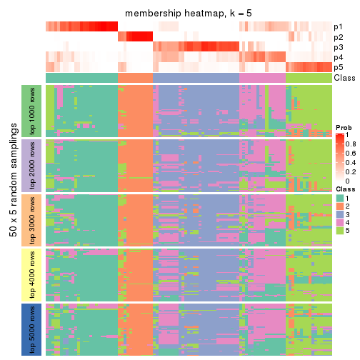
membership_heatmap(res, k = 6)
As soon as we have had the classes for columns, we can look for signatures which are significantly different between classes which can be candidate marks for certain classes. Following are the heatmaps for signatures.
Signature heatmaps where rows are scaled:
get_signatures(res, k = 2)
get_signatures(res, k = 3)
get_signatures(res, k = 4)
get_signatures(res, k = 5)
get_signatures(res, k = 6)
Signature heatmaps where rows are not scaled:
get_signatures(res, k = 2, scale_rows = FALSE)
get_signatures(res, k = 3, scale_rows = FALSE)
get_signatures(res, k = 4, scale_rows = FALSE)
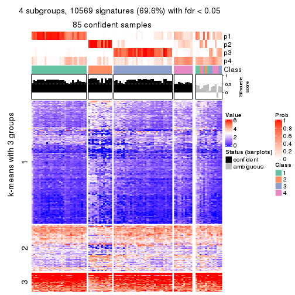
get_signatures(res, k = 5, scale_rows = FALSE)
get_signatures(res, k = 6, scale_rows = FALSE)
Compare the overlap of signatures from different k:
compare_signatures(res)
get_signature() returns a data frame invisibly. TO get the list of signatures, the function
call should be assigned to a variable explicitly. In following code, if plot argument is set
to FALSE, no heatmap is plotted while only the differential analysis is performed.
# code only for demonstration
tb = get_signature(res, k = ..., plot = FALSE)
An example of the output of tb is:
#> which_row fdr mean_1 mean_2 scaled_mean_1 scaled_mean_2 km
#> 1 38 0.042760348 8.373488 9.131774 -0.5533452 0.5164555 1
#> 2 40 0.018707592 7.106213 8.469186 -0.6173731 0.5762149 1
#> 3 55 0.019134737 10.221463 11.207825 -0.6159697 0.5749050 1
#> 4 59 0.006059896 5.921854 7.869574 -0.6899429 0.6439467 1
#> 5 60 0.018055526 8.928898 10.211722 -0.6204761 0.5791110 1
#> 6 98 0.009384629 15.714769 14.887706 0.6635654 -0.6193277 2
...
The columns in tb are:
which_row: row indices corresponding to the input matrix.fdr: FDR for the differential test. mean_x: The mean value in group x.scaled_mean_x: The mean value in group x after rows are scaled.km: Row groups if k-means clustering is applied to rows.UMAP plot which shows how samples are separated.
dimension_reduction(res, k = 2, method = "UMAP")
dimension_reduction(res, k = 3, method = "UMAP")
dimension_reduction(res, k = 4, method = "UMAP")
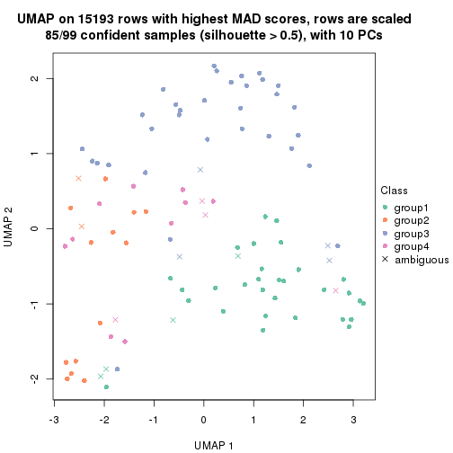
dimension_reduction(res, k = 5, method = "UMAP")
dimension_reduction(res, k = 6, method = "UMAP")
Following heatmap shows how subgroups are split when increasing k:
collect_classes(res)
If matrix rows can be associated to genes, consider to use GO_Enrichment(res,
...) to perform function enrichment for the signature genes.
The object with results only for a single top-value method and a single partition method can be extracted as:
res = res_list["MAD", "skmeans"]
# you can also extract it by
# res = res_list["MAD:skmeans"]
A summary of res and all the functions that can be applied to it:
res
#> A 'ConsensusPartition' object with k = 2, 3, 4, 5, 6.
#> On a matrix with 15193 rows and 99 columns.
#> Top rows (1000, 2000, 3000, 4000, 5000) are extracted by 'MAD' method.
#> Subgroups are detected by 'skmeans' method.
#> Performed in total 1250 partitions by row resampling.
#> Best k for subgroups seems to be 3.
#>
#> Following methods can be applied to this 'ConsensusPartition' object:
#> [1] "cola_report" "collect_classes" "collect_plots"
#> [4] "collect_stats" "colnames" "compare_signatures"
#> [7] "consensus_heatmap" "dimension_reduction" "functional_enrichment"
#> [10] "get_anno_col" "get_anno" "get_classes"
#> [13] "get_consensus" "get_matrix" "get_membership"
#> [16] "get_param" "get_signatures" "get_stats"
#> [19] "is_best_k" "is_stable_k" "membership_heatmap"
#> [22] "ncol" "nrow" "plot_ecdf"
#> [25] "rownames" "select_partition_number" "show"
#> [28] "suggest_best_k" "test_to_known_factors"
collect_plots() function collects all the plots made from res for all k (number of partitions)
into one single page to provide an easy and fast comparison between different k.
collect_plots(res)
The plots are:
k and the heatmap of
predicted classes for each k.k.k.k.All the plots in panels can be made by individual functions and they are plotted later in this section.
select_partition_number() produces several plots showing different
statistics for choosing “optimized” k. There are following statistics:
k;k, the area increased is defined as \(A_k - A_{k-1}\).The detailed explanations of these statistics can be found in the cola vignette.
Generally speaking, lower PAC score, higher mean silhouette score or higher
concordance corresponds to better partition. Rand index and Jaccard index
measure how similar the current partition is compared to partition with k-1.
If they are too similar, we won't accept k is better than k-1.
select_partition_number(res)
The numeric values for all these statistics can be obtained by get_stats().
get_stats(res)
#> k 1-PAC mean_silhouette concordance area_increased Rand Jaccard
#> 2 2 0.473 0.774 0.882 0.4999 0.499 0.499
#> 3 3 0.918 0.932 0.969 0.3437 0.720 0.494
#> 4 4 0.682 0.686 0.852 0.1168 0.838 0.563
#> 5 5 0.689 0.637 0.803 0.0633 0.887 0.600
#> 6 6 0.714 0.617 0.776 0.0436 0.912 0.608
suggest_best_k() suggests the best \(k\) based on these statistics. The rules are as follows:
NA.suggest_best_k(res)
#> [1] 3
Following shows the table of the partitions (You need to click the show/hide
code output link to see it). The membership matrix (columns with name p*)
is inferred by
clue::cl_consensus()
function with the SE method. Basically the value in the membership matrix
represents the probability to belong to a certain group. The finall class
label for an item is determined with the group with highest probability it
belongs to.
In get_classes() function, the entropy is calculated from the membership
matrix and the silhouette score is calculated from the consensus matrix.
cbind(get_classes(res, k = 2), get_membership(res, k = 2))
#> class entropy silhouette p1 p2
#> SRR797072 1 0.0672 0.8077 0.992 0.008
#> SRR797073 1 0.7219 0.8556 0.800 0.200
#> SRR797074 1 0.0672 0.8077 0.992 0.008
#> SRR797075 2 0.7883 0.8315 0.236 0.764
#> SRR797076 1 0.7219 0.5384 0.800 0.200
#> SRR797077 1 0.0672 0.8077 0.992 0.008
#> SRR797078 1 0.7219 0.8556 0.800 0.200
#> SRR797079 1 0.7219 0.8556 0.800 0.200
#> SRR797080 1 0.7219 0.8556 0.800 0.200
#> SRR797081 1 0.7219 0.8556 0.800 0.200
#> SRR797082 1 0.0672 0.8077 0.992 0.008
#> SRR797083 1 0.7219 0.8556 0.800 0.200
#> SRR797084 2 0.7219 0.8587 0.200 0.800
#> SRR797085 2 0.7219 0.8587 0.200 0.800
#> SRR797086 1 0.8386 0.3737 0.732 0.268
#> SRR797087 2 0.2043 0.7513 0.032 0.968
#> SRR797088 2 0.7376 0.5019 0.208 0.792
#> SRR797089 2 0.2043 0.7513 0.032 0.968
#> SRR797090 1 0.0672 0.8077 0.992 0.008
#> SRR797091 1 0.7950 0.4349 0.760 0.240
#> SRR797092 1 0.7299 0.8535 0.796 0.204
#> SRR797093 1 0.7219 0.8556 0.800 0.200
#> SRR797094 1 0.7219 0.8556 0.800 0.200
#> SRR797095 2 0.2043 0.7513 0.032 0.968
#> SRR797096 1 0.7219 0.8556 0.800 0.200
#> SRR797097 2 0.3584 0.7197 0.068 0.932
#> SRR797098 2 0.0672 0.7666 0.008 0.992
#> SRR797099 1 0.7602 0.8428 0.780 0.220
#> SRR797100 1 0.7219 0.8556 0.800 0.200
#> SRR797101 2 0.2043 0.7513 0.032 0.968
#> SRR797102 2 0.7219 0.8587 0.200 0.800
#> SRR797103 2 0.7219 0.8587 0.200 0.800
#> SRR797104 1 0.7219 0.8556 0.800 0.200
#> SRR797105 1 0.7219 0.8556 0.800 0.200
#> SRR797106 1 0.9286 0.1274 0.656 0.344
#> SRR797107 1 0.0000 0.8104 1.000 0.000
#> SRR797108 1 0.0672 0.8077 0.992 0.008
#> SRR797109 1 0.7219 0.8556 0.800 0.200
#> SRR797110 1 0.0672 0.8077 0.992 0.008
#> SRR797111 1 0.1184 0.8016 0.984 0.016
#> SRR797112 1 0.7219 0.8556 0.800 0.200
#> SRR797113 1 0.7219 0.8556 0.800 0.200
#> SRR797114 1 0.4690 0.8371 0.900 0.100
#> SRR797115 1 0.7219 0.8556 0.800 0.200
#> SRR797116 1 0.7219 0.8556 0.800 0.200
#> SRR797117 2 0.9963 -0.3200 0.464 0.536
#> SRR797118 1 0.0672 0.8077 0.992 0.008
#> SRR797119 1 0.7219 0.8556 0.800 0.200
#> SRR797120 2 0.9491 0.6773 0.368 0.632
#> SRR797121 1 0.7219 0.8556 0.800 0.200
#> SRR797122 1 0.0672 0.8077 0.992 0.008
#> SRR797123 1 0.7219 0.8556 0.800 0.200
#> SRR797124 2 0.0672 0.7666 0.008 0.992
#> SRR797125 1 0.0938 0.8048 0.988 0.012
#> SRR797126 1 0.2043 0.7872 0.968 0.032
#> SRR797127 1 0.0672 0.8077 0.992 0.008
#> SRR797128 2 0.9686 -0.0596 0.396 0.604
#> SRR797129 1 0.7299 0.8535 0.796 0.204
#> SRR797130 1 0.3584 0.7508 0.932 0.068
#> SRR797131 1 0.7219 0.8556 0.800 0.200
#> SRR797132 1 0.8327 0.8056 0.736 0.264
#> SRR797133 1 0.0672 0.8077 0.992 0.008
#> SRR797134 1 0.0672 0.8077 0.992 0.008
#> SRR797135 1 0.0672 0.8077 0.992 0.008
#> SRR797136 1 0.0672 0.8077 0.992 0.008
#> SRR797137 1 0.7219 0.8556 0.800 0.200
#> SRR797138 2 0.7219 0.8587 0.200 0.800
#> SRR797139 2 0.0672 0.7666 0.008 0.992
#> SRR797140 1 0.7219 0.8556 0.800 0.200
#> SRR797141 1 0.7219 0.8556 0.800 0.200
#> SRR797142 1 0.7219 0.8556 0.800 0.200
#> SRR797143 2 0.7219 0.8587 0.200 0.800
#> SRR797144 2 0.7219 0.8587 0.200 0.800
#> SRR797145 2 0.0672 0.7666 0.008 0.992
#> SRR797146 2 0.7219 0.8587 0.200 0.800
#> SRR797147 1 0.2043 0.7872 0.968 0.032
#> SRR797148 2 0.9963 -0.3200 0.464 0.536
#> SRR797149 2 0.7219 0.8587 0.200 0.800
#> SRR797150 2 0.7219 0.8587 0.200 0.800
#> SRR797151 2 0.7219 0.8587 0.200 0.800
#> SRR797152 2 0.7219 0.8587 0.200 0.800
#> SRR797153 2 0.7219 0.8587 0.200 0.800
#> SRR797154 2 0.7219 0.8587 0.200 0.800
#> SRR797155 2 0.0000 0.7711 0.000 1.000
#> SRR797156 2 0.7219 0.8587 0.200 0.800
#> SRR797157 2 0.7219 0.8587 0.200 0.800
#> SRR797158 2 0.7219 0.8587 0.200 0.800
#> SRR797159 2 0.7219 0.8587 0.200 0.800
#> SRR797160 2 0.0672 0.7666 0.008 0.992
#> SRR797161 2 0.7219 0.8587 0.200 0.800
#> SRR797162 2 0.7219 0.8587 0.200 0.800
#> SRR797163 2 0.7219 0.8587 0.200 0.800
#> SRR797164 2 0.7219 0.8587 0.200 0.800
#> SRR797165 2 0.0672 0.7666 0.008 0.992
#> SRR797166 2 0.0672 0.7666 0.008 0.992
#> SRR797167 2 0.7219 0.8587 0.200 0.800
#> SRR797168 2 0.7219 0.8587 0.200 0.800
#> SRR797169 2 0.7219 0.8587 0.200 0.800
#> SRR797170 2 0.7219 0.8587 0.200 0.800
cbind(get_classes(res, k = 3), get_membership(res, k = 3))
#> class entropy silhouette p1 p2 p3
#> SRR797072 1 0.0000 0.981 1.000 0.000 0.000
#> SRR797073 3 0.0592 0.976 0.012 0.000 0.988
#> SRR797074 1 0.0000 0.981 1.000 0.000 0.000
#> SRR797075 1 0.1860 0.937 0.948 0.052 0.000
#> SRR797076 1 0.0747 0.969 0.984 0.016 0.000
#> SRR797077 1 0.0000 0.981 1.000 0.000 0.000
#> SRR797078 3 0.0592 0.976 0.012 0.000 0.988
#> SRR797079 3 0.0592 0.976 0.012 0.000 0.988
#> SRR797080 3 0.0000 0.978 0.000 0.000 1.000
#> SRR797081 3 0.0592 0.976 0.012 0.000 0.988
#> SRR797082 1 0.0000 0.981 1.000 0.000 0.000
#> SRR797083 1 0.0000 0.981 1.000 0.000 0.000
#> SRR797084 2 0.0000 0.941 0.000 1.000 0.000
#> SRR797085 2 0.0000 0.941 0.000 1.000 0.000
#> SRR797086 1 0.0000 0.981 1.000 0.000 0.000
#> SRR797087 3 0.0000 0.978 0.000 0.000 1.000
#> SRR797088 3 0.0000 0.978 0.000 0.000 1.000
#> SRR797089 3 0.0000 0.978 0.000 0.000 1.000
#> SRR797090 1 0.0000 0.981 1.000 0.000 0.000
#> SRR797091 1 0.0424 0.975 0.992 0.000 0.008
#> SRR797092 3 0.0000 0.978 0.000 0.000 1.000
#> SRR797093 3 0.1163 0.965 0.028 0.000 0.972
#> SRR797094 3 0.0000 0.978 0.000 0.000 1.000
#> SRR797095 3 0.0000 0.978 0.000 0.000 1.000
#> SRR797096 1 0.0747 0.969 0.984 0.000 0.016
#> SRR797097 3 0.0000 0.978 0.000 0.000 1.000
#> SRR797098 3 0.6079 0.283 0.000 0.388 0.612
#> SRR797099 3 0.1163 0.959 0.028 0.000 0.972
#> SRR797100 3 0.0592 0.976 0.012 0.000 0.988
#> SRR797101 3 0.0000 0.978 0.000 0.000 1.000
#> SRR797102 2 0.0000 0.941 0.000 1.000 0.000
#> SRR797103 2 0.0000 0.941 0.000 1.000 0.000
#> SRR797104 3 0.0592 0.976 0.012 0.000 0.988
#> SRR797105 3 0.0000 0.978 0.000 0.000 1.000
#> SRR797106 1 0.4555 0.750 0.800 0.200 0.000
#> SRR797107 1 0.0000 0.981 1.000 0.000 0.000
#> SRR797108 1 0.0000 0.981 1.000 0.000 0.000
#> SRR797109 3 0.1031 0.968 0.024 0.000 0.976
#> SRR797110 1 0.0000 0.981 1.000 0.000 0.000
#> SRR797111 1 0.0000 0.981 1.000 0.000 0.000
#> SRR797112 1 0.0000 0.981 1.000 0.000 0.000
#> SRR797113 1 0.3116 0.869 0.892 0.000 0.108
#> SRR797114 1 0.0000 0.981 1.000 0.000 0.000
#> SRR797115 1 0.0000 0.981 1.000 0.000 0.000
#> SRR797116 3 0.1031 0.968 0.024 0.000 0.976
#> SRR797117 1 0.4178 0.792 0.828 0.172 0.000
#> SRR797118 1 0.0000 0.981 1.000 0.000 0.000
#> SRR797119 3 0.0747 0.974 0.016 0.000 0.984
#> SRR797120 2 0.3816 0.810 0.148 0.852 0.000
#> SRR797121 1 0.0000 0.981 1.000 0.000 0.000
#> SRR797122 1 0.0000 0.981 1.000 0.000 0.000
#> SRR797123 3 0.0424 0.977 0.008 0.000 0.992
#> SRR797124 2 0.6126 0.392 0.000 0.600 0.400
#> SRR797125 1 0.0000 0.981 1.000 0.000 0.000
#> SRR797126 1 0.0237 0.978 0.996 0.004 0.000
#> SRR797127 1 0.0000 0.981 1.000 0.000 0.000
#> SRR797128 3 0.0000 0.978 0.000 0.000 1.000
#> SRR797129 3 0.0000 0.978 0.000 0.000 1.000
#> SRR797130 1 0.0000 0.981 1.000 0.000 0.000
#> SRR797131 3 0.0424 0.977 0.008 0.000 0.992
#> SRR797132 3 0.0000 0.978 0.000 0.000 1.000
#> SRR797133 1 0.0000 0.981 1.000 0.000 0.000
#> SRR797134 1 0.0000 0.981 1.000 0.000 0.000
#> SRR797135 1 0.0000 0.981 1.000 0.000 0.000
#> SRR797136 1 0.0000 0.981 1.000 0.000 0.000
#> SRR797137 1 0.0892 0.965 0.980 0.000 0.020
#> SRR797138 2 0.0000 0.941 0.000 1.000 0.000
#> SRR797139 2 0.6168 0.367 0.000 0.588 0.412
#> SRR797140 3 0.0000 0.978 0.000 0.000 1.000
#> SRR797141 3 0.0000 0.978 0.000 0.000 1.000
#> SRR797142 3 0.0592 0.976 0.012 0.000 0.988
#> SRR797143 2 0.0000 0.941 0.000 1.000 0.000
#> SRR797144 2 0.0000 0.941 0.000 1.000 0.000
#> SRR797145 2 0.4291 0.789 0.000 0.820 0.180
#> SRR797146 2 0.0000 0.941 0.000 1.000 0.000
#> SRR797147 1 0.0000 0.981 1.000 0.000 0.000
#> SRR797148 3 0.0000 0.978 0.000 0.000 1.000
#> SRR797149 2 0.0000 0.941 0.000 1.000 0.000
#> SRR797150 2 0.0000 0.941 0.000 1.000 0.000
#> SRR797151 2 0.0000 0.941 0.000 1.000 0.000
#> SRR797152 2 0.0000 0.941 0.000 1.000 0.000
#> SRR797153 2 0.0000 0.941 0.000 1.000 0.000
#> SRR797154 2 0.0237 0.939 0.000 0.996 0.004
#> SRR797155 2 0.0000 0.941 0.000 1.000 0.000
#> SRR797156 2 0.0000 0.941 0.000 1.000 0.000
#> SRR797157 2 0.0000 0.941 0.000 1.000 0.000
#> SRR797158 2 0.0000 0.941 0.000 1.000 0.000
#> SRR797159 2 0.0000 0.941 0.000 1.000 0.000
#> SRR797160 2 0.2711 0.880 0.000 0.912 0.088
#> SRR797161 2 0.2356 0.890 0.072 0.928 0.000
#> SRR797162 2 0.0000 0.941 0.000 1.000 0.000
#> SRR797163 2 0.0000 0.941 0.000 1.000 0.000
#> SRR797164 2 0.4235 0.781 0.176 0.824 0.000
#> SRR797165 2 0.4346 0.785 0.000 0.816 0.184
#> SRR797166 2 0.4842 0.733 0.000 0.776 0.224
#> SRR797167 2 0.0000 0.941 0.000 1.000 0.000
#> SRR797168 2 0.0000 0.941 0.000 1.000 0.000
#> SRR797169 2 0.0000 0.941 0.000 1.000 0.000
#> SRR797170 2 0.0000 0.941 0.000 1.000 0.000
cbind(get_classes(res, k = 4), get_membership(res, k = 4))
#> class entropy silhouette p1 p2 p3 p4
#> SRR797072 1 0.0000 0.8377 1.000 0.000 0.000 0.000
#> SRR797073 3 0.3945 0.6399 0.004 0.000 0.780 0.216
#> SRR797074 1 0.0000 0.8377 1.000 0.000 0.000 0.000
#> SRR797075 1 0.1211 0.8043 0.960 0.040 0.000 0.000
#> SRR797076 1 0.5025 0.6183 0.716 0.032 0.000 0.252
#> SRR797077 1 0.0000 0.8377 1.000 0.000 0.000 0.000
#> SRR797078 3 0.3791 0.6541 0.004 0.000 0.796 0.200
#> SRR797079 3 0.4535 0.5483 0.004 0.000 0.704 0.292
#> SRR797080 3 0.1716 0.7447 0.000 0.000 0.936 0.064
#> SRR797081 3 0.3908 0.6429 0.004 0.000 0.784 0.212
#> SRR797082 1 0.0000 0.8377 1.000 0.000 0.000 0.000
#> SRR797083 1 0.4790 0.3384 0.620 0.000 0.000 0.380
#> SRR797084 2 0.0336 0.9161 0.000 0.992 0.000 0.008
#> SRR797085 2 0.0000 0.9176 0.000 1.000 0.000 0.000
#> SRR797086 1 0.4331 0.5629 0.712 0.000 0.000 0.288
#> SRR797087 3 0.1118 0.7555 0.000 0.000 0.964 0.036
#> SRR797088 3 0.4661 0.3490 0.000 0.000 0.652 0.348
#> SRR797089 3 0.1118 0.7555 0.000 0.000 0.964 0.036
#> SRR797090 1 0.0336 0.8341 0.992 0.000 0.000 0.008
#> SRR797091 1 0.4804 0.3855 0.616 0.000 0.000 0.384
#> SRR797092 3 0.2589 0.7407 0.000 0.000 0.884 0.116
#> SRR797093 4 0.4898 0.5661 0.024 0.000 0.260 0.716
#> SRR797094 3 0.0000 0.7614 0.000 0.000 1.000 0.000
#> SRR797095 3 0.1118 0.7555 0.000 0.000 0.964 0.036
#> SRR797096 4 0.1867 0.7236 0.072 0.000 0.000 0.928
#> SRR797097 3 0.1118 0.7555 0.000 0.000 0.964 0.036
#> SRR797098 3 0.4692 0.6086 0.000 0.212 0.756 0.032
#> SRR797099 4 0.5194 0.3978 0.012 0.004 0.332 0.652
#> SRR797100 3 0.3945 0.6392 0.004 0.000 0.780 0.216
#> SRR797101 3 0.1022 0.7560 0.000 0.000 0.968 0.032
#> SRR797102 2 0.1474 0.8979 0.000 0.948 0.000 0.052
#> SRR797103 2 0.0469 0.9134 0.000 0.988 0.000 0.012
#> SRR797104 3 0.3908 0.6429 0.004 0.000 0.784 0.212
#> SRR797105 3 0.0469 0.7615 0.000 0.000 0.988 0.012
#> SRR797106 4 0.7173 0.3426 0.228 0.216 0.000 0.556
#> SRR797107 4 0.3528 0.6486 0.192 0.000 0.000 0.808
#> SRR797108 1 0.4164 0.5802 0.736 0.000 0.000 0.264
#> SRR797109 4 0.4988 0.5249 0.020 0.000 0.288 0.692
#> SRR797110 1 0.0188 0.8354 0.996 0.000 0.000 0.004
#> SRR797111 1 0.3837 0.6617 0.776 0.000 0.000 0.224
#> SRR797112 4 0.2704 0.7094 0.124 0.000 0.000 0.876
#> SRR797113 4 0.2266 0.7262 0.084 0.000 0.004 0.912
#> SRR797114 4 0.2760 0.7041 0.128 0.000 0.000 0.872
#> SRR797115 4 0.2081 0.7253 0.084 0.000 0.000 0.916
#> SRR797116 4 0.2670 0.7201 0.024 0.000 0.072 0.904
#> SRR797117 4 0.3485 0.6791 0.048 0.076 0.004 0.872
#> SRR797118 4 0.3569 0.6215 0.196 0.000 0.000 0.804
#> SRR797119 4 0.5564 0.1692 0.020 0.000 0.436 0.544
#> SRR797120 2 0.5728 0.4224 0.036 0.600 0.000 0.364
#> SRR797121 4 0.4898 0.1809 0.416 0.000 0.000 0.584
#> SRR797122 1 0.0000 0.8377 1.000 0.000 0.000 0.000
#> SRR797123 4 0.5004 0.3111 0.004 0.000 0.392 0.604
#> SRR797124 3 0.6920 0.4122 0.000 0.316 0.552 0.132
#> SRR797125 1 0.3123 0.7314 0.844 0.000 0.000 0.156
#> SRR797126 1 0.5080 0.3127 0.576 0.004 0.000 0.420
#> SRR797127 1 0.0000 0.8377 1.000 0.000 0.000 0.000
#> SRR797128 3 0.0000 0.7614 0.000 0.000 1.000 0.000
#> SRR797129 3 0.0592 0.7601 0.000 0.000 0.984 0.016
#> SRR797130 1 0.0000 0.8377 1.000 0.000 0.000 0.000
#> SRR797131 3 0.3123 0.6917 0.000 0.000 0.844 0.156
#> SRR797132 3 0.0188 0.7614 0.000 0.000 0.996 0.004
#> SRR797133 1 0.5000 0.0739 0.504 0.000 0.000 0.496
#> SRR797134 1 0.0000 0.8377 1.000 0.000 0.000 0.000
#> SRR797135 1 0.0000 0.8377 1.000 0.000 0.000 0.000
#> SRR797136 1 0.0000 0.8377 1.000 0.000 0.000 0.000
#> SRR797137 4 0.2149 0.7245 0.088 0.000 0.000 0.912
#> SRR797138 2 0.0000 0.9176 0.000 1.000 0.000 0.000
#> SRR797139 3 0.5247 0.5397 0.000 0.284 0.684 0.032
#> SRR797140 3 0.0469 0.7615 0.000 0.000 0.988 0.012
#> SRR797141 3 0.0469 0.7615 0.000 0.000 0.988 0.012
#> SRR797142 3 0.3908 0.6429 0.004 0.000 0.784 0.212
#> SRR797143 2 0.0000 0.9176 0.000 1.000 0.000 0.000
#> SRR797144 2 0.0592 0.9134 0.000 0.984 0.000 0.016
#> SRR797145 3 0.6108 0.2736 0.000 0.424 0.528 0.048
#> SRR797146 2 0.0188 0.9172 0.000 0.996 0.000 0.004
#> SRR797147 1 0.0000 0.8377 1.000 0.000 0.000 0.000
#> SRR797148 3 0.5126 0.1033 0.000 0.004 0.552 0.444
#> SRR797149 2 0.0000 0.9176 0.000 1.000 0.000 0.000
#> SRR797150 2 0.0188 0.9172 0.000 0.996 0.000 0.004
#> SRR797151 2 0.0707 0.9131 0.000 0.980 0.000 0.020
#> SRR797152 2 0.1302 0.9019 0.000 0.956 0.000 0.044
#> SRR797153 2 0.2814 0.8316 0.000 0.868 0.000 0.132
#> SRR797154 2 0.4212 0.7280 0.000 0.772 0.012 0.216
#> SRR797155 2 0.0336 0.9153 0.000 0.992 0.000 0.008
#> SRR797156 2 0.2868 0.8283 0.000 0.864 0.000 0.136
#> SRR797157 2 0.0000 0.9176 0.000 1.000 0.000 0.000
#> SRR797158 2 0.3401 0.7898 0.152 0.840 0.000 0.008
#> SRR797159 2 0.0000 0.9176 0.000 1.000 0.000 0.000
#> SRR797160 4 0.6761 0.3961 0.000 0.168 0.224 0.608
#> SRR797161 2 0.5279 0.3590 0.400 0.588 0.000 0.012
#> SRR797162 2 0.0469 0.9156 0.000 0.988 0.000 0.012
#> SRR797163 2 0.0188 0.9170 0.000 0.996 0.000 0.004
#> SRR797164 2 0.5923 0.3803 0.376 0.580 0.000 0.044
#> SRR797165 3 0.5833 0.2539 0.000 0.440 0.528 0.032
#> SRR797166 3 0.5775 0.3330 0.000 0.408 0.560 0.032
#> SRR797167 2 0.0000 0.9176 0.000 1.000 0.000 0.000
#> SRR797168 2 0.1118 0.9066 0.000 0.964 0.000 0.036
#> SRR797169 2 0.0376 0.9166 0.004 0.992 0.000 0.004
#> SRR797170 2 0.0000 0.9176 0.000 1.000 0.000 0.000
cbind(get_classes(res, k = 5), get_membership(res, k = 5))
#> class entropy silhouette p1 p2 p3 p4 p5
#> SRR797072 1 0.0000 0.89581 1.000 0.000 0.000 0.000 0.000
#> SRR797073 3 0.4297 0.65342 0.000 0.000 0.728 0.236 0.036
#> SRR797074 1 0.0000 0.89581 1.000 0.000 0.000 0.000 0.000
#> SRR797075 1 0.0486 0.88659 0.988 0.004 0.000 0.004 0.004
#> SRR797076 1 0.6801 0.29279 0.532 0.064 0.000 0.312 0.092
#> SRR797077 1 0.0290 0.89114 0.992 0.000 0.000 0.000 0.008
#> SRR797078 3 0.3961 0.67812 0.000 0.000 0.760 0.212 0.028
#> SRR797079 3 0.4761 0.47866 0.000 0.000 0.616 0.356 0.028
#> SRR797080 3 0.2209 0.77045 0.000 0.000 0.912 0.056 0.032
#> SRR797081 3 0.4209 0.66610 0.004 0.000 0.744 0.224 0.028
#> SRR797082 1 0.0000 0.89581 1.000 0.000 0.000 0.000 0.000
#> SRR797083 1 0.4211 0.44816 0.636 0.000 0.000 0.360 0.004
#> SRR797084 2 0.0609 0.78273 0.000 0.980 0.000 0.000 0.020
#> SRR797085 2 0.0404 0.78661 0.000 0.988 0.000 0.000 0.012
#> SRR797086 1 0.4455 0.68793 0.744 0.000 0.000 0.188 0.068
#> SRR797087 3 0.3010 0.73706 0.000 0.000 0.824 0.004 0.172
#> SRR797088 3 0.6396 0.26570 0.000 0.000 0.508 0.280 0.212
#> SRR797089 3 0.2848 0.72925 0.000 0.000 0.840 0.004 0.156
#> SRR797090 1 0.0566 0.88950 0.984 0.000 0.000 0.012 0.004
#> SRR797091 1 0.4822 0.63638 0.704 0.000 0.000 0.220 0.076
#> SRR797092 3 0.5010 0.71806 0.000 0.000 0.708 0.148 0.144
#> SRR797093 4 0.3846 0.60817 0.004 0.000 0.200 0.776 0.020
#> SRR797094 3 0.1997 0.77531 0.000 0.000 0.924 0.036 0.040
#> SRR797095 3 0.2890 0.73010 0.000 0.000 0.836 0.004 0.160
#> SRR797096 4 0.1195 0.70595 0.012 0.000 0.000 0.960 0.028
#> SRR797097 3 0.3123 0.74333 0.000 0.000 0.828 0.012 0.160
#> SRR797098 3 0.5778 0.55029 0.000 0.184 0.644 0.008 0.164
#> SRR797099 5 0.6214 0.21655 0.000 0.000 0.144 0.380 0.476
#> SRR797100 3 0.4223 0.64423 0.000 0.000 0.724 0.248 0.028
#> SRR797101 3 0.2930 0.74045 0.000 0.000 0.832 0.004 0.164
#> SRR797102 5 0.3884 0.62504 0.000 0.288 0.000 0.004 0.708
#> SRR797103 2 0.1604 0.77226 0.004 0.944 0.004 0.004 0.044
#> SRR797104 3 0.4024 0.66866 0.000 0.000 0.752 0.220 0.028
#> SRR797105 3 0.1485 0.77836 0.000 0.000 0.948 0.020 0.032
#> SRR797106 4 0.6925 0.43702 0.136 0.184 0.000 0.588 0.092
#> SRR797107 4 0.3656 0.61553 0.196 0.000 0.000 0.784 0.020
#> SRR797108 1 0.3910 0.61721 0.720 0.000 0.000 0.272 0.008
#> SRR797109 4 0.3944 0.59305 0.004 0.000 0.212 0.764 0.020
#> SRR797110 1 0.0290 0.89284 0.992 0.000 0.000 0.000 0.008
#> SRR797111 5 0.5367 0.59454 0.148 0.000 0.000 0.184 0.668
#> SRR797112 4 0.2408 0.69198 0.092 0.000 0.000 0.892 0.016
#> SRR797113 4 0.1117 0.71069 0.020 0.000 0.000 0.964 0.016
#> SRR797114 4 0.2325 0.69368 0.068 0.000 0.000 0.904 0.028
#> SRR797115 4 0.0807 0.71165 0.012 0.000 0.000 0.976 0.012
#> SRR797116 4 0.0613 0.71133 0.004 0.000 0.008 0.984 0.004
#> SRR797117 4 0.4034 0.62667 0.008 0.084 0.000 0.808 0.100
#> SRR797118 5 0.4608 0.50301 0.024 0.000 0.000 0.336 0.640
#> SRR797119 4 0.4832 0.27837 0.004 0.000 0.356 0.616 0.024
#> SRR797120 5 0.4872 0.67278 0.000 0.120 0.000 0.160 0.720
#> SRR797121 4 0.4494 0.26787 0.380 0.000 0.000 0.608 0.012
#> SRR797122 1 0.0000 0.89581 1.000 0.000 0.000 0.000 0.000
#> SRR797123 4 0.4969 0.44635 0.000 0.000 0.292 0.652 0.056
#> SRR797124 2 0.8073 0.16557 0.000 0.416 0.264 0.184 0.136
#> SRR797125 5 0.5932 0.21555 0.440 0.000 0.000 0.104 0.456
#> SRR797126 5 0.5575 0.57558 0.148 0.000 0.000 0.212 0.640
#> SRR797127 1 0.0000 0.89581 1.000 0.000 0.000 0.000 0.000
#> SRR797128 3 0.0771 0.77876 0.000 0.000 0.976 0.004 0.020
#> SRR797129 3 0.1386 0.77697 0.000 0.000 0.952 0.032 0.016
#> SRR797130 1 0.0000 0.89581 1.000 0.000 0.000 0.000 0.000
#> SRR797131 3 0.2864 0.74669 0.000 0.000 0.864 0.112 0.024
#> SRR797132 3 0.1282 0.77442 0.000 0.000 0.952 0.004 0.044
#> SRR797133 5 0.5355 0.54581 0.084 0.000 0.000 0.292 0.624
#> SRR797134 1 0.0000 0.89581 1.000 0.000 0.000 0.000 0.000
#> SRR797135 1 0.0000 0.89581 1.000 0.000 0.000 0.000 0.000
#> SRR797136 1 0.0000 0.89581 1.000 0.000 0.000 0.000 0.000
#> SRR797137 4 0.1117 0.71069 0.020 0.000 0.000 0.964 0.016
#> SRR797138 2 0.1041 0.77961 0.000 0.964 0.000 0.004 0.032
#> SRR797139 3 0.6485 0.24867 0.000 0.320 0.508 0.008 0.164
#> SRR797140 3 0.1502 0.77283 0.000 0.000 0.940 0.004 0.056
#> SRR797141 3 0.1485 0.77836 0.000 0.000 0.948 0.020 0.032
#> SRR797142 3 0.4054 0.66754 0.000 0.000 0.748 0.224 0.028
#> SRR797143 2 0.0000 0.78931 0.000 1.000 0.000 0.000 0.000
#> SRR797144 2 0.1197 0.76825 0.000 0.952 0.000 0.000 0.048
#> SRR797145 2 0.6461 0.22534 0.000 0.492 0.332 0.004 0.172
#> SRR797146 2 0.0000 0.78931 0.000 1.000 0.000 0.000 0.000
#> SRR797147 1 0.0000 0.89581 1.000 0.000 0.000 0.000 0.000
#> SRR797148 4 0.7134 0.23059 0.000 0.028 0.340 0.436 0.196
#> SRR797149 2 0.0000 0.78931 0.000 1.000 0.000 0.000 0.000
#> SRR797150 2 0.1043 0.77602 0.000 0.960 0.000 0.000 0.040
#> SRR797151 2 0.2230 0.73085 0.000 0.884 0.000 0.000 0.116
#> SRR797152 2 0.4359 0.01369 0.000 0.584 0.000 0.004 0.412
#> SRR797153 5 0.4229 0.63717 0.000 0.276 0.000 0.020 0.704
#> SRR797154 5 0.5191 0.64746 0.000 0.244 0.004 0.080 0.672
#> SRR797155 2 0.1026 0.78289 0.000 0.968 0.004 0.004 0.024
#> SRR797156 5 0.4592 0.57846 0.000 0.332 0.000 0.024 0.644
#> SRR797157 2 0.0566 0.78673 0.000 0.984 0.000 0.004 0.012
#> SRR797158 2 0.4255 0.58222 0.128 0.776 0.000 0.000 0.096
#> SRR797159 2 0.0000 0.78931 0.000 1.000 0.000 0.000 0.000
#> SRR797160 4 0.7207 0.35711 0.000 0.040 0.184 0.464 0.312
#> SRR797161 5 0.5994 0.25128 0.096 0.428 0.000 0.004 0.472
#> SRR797162 2 0.4410 -0.04067 0.000 0.556 0.000 0.004 0.440
#> SRR797163 2 0.1041 0.78194 0.000 0.964 0.000 0.004 0.032
#> SRR797164 5 0.5024 0.61160 0.052 0.264 0.000 0.008 0.676
#> SRR797165 2 0.6601 0.15005 0.000 0.464 0.360 0.008 0.168
#> SRR797166 2 0.6619 0.00145 0.000 0.420 0.408 0.008 0.164
#> SRR797167 2 0.0162 0.78892 0.000 0.996 0.000 0.000 0.004
#> SRR797168 5 0.3969 0.59851 0.000 0.304 0.000 0.004 0.692
#> SRR797169 2 0.1808 0.77282 0.020 0.936 0.000 0.004 0.040
#> SRR797170 2 0.0000 0.78931 0.000 1.000 0.000 0.000 0.000
cbind(get_classes(res, k = 6), get_membership(res, k = 6))
#> class entropy silhouette p1 p2 p3 p4 p5 p6
#> SRR797072 1 0.0260 0.86682 0.992 0.000 0.000 0.008 0.000 0.000
#> SRR797073 3 0.2214 0.64083 0.000 0.000 0.892 0.092 0.004 0.012
#> SRR797074 1 0.0146 0.86751 0.996 0.000 0.000 0.004 0.000 0.000
#> SRR797075 1 0.0922 0.85541 0.968 0.004 0.000 0.004 0.000 0.024
#> SRR797076 4 0.7713 0.15797 0.332 0.068 0.000 0.376 0.060 0.164
#> SRR797077 1 0.0603 0.86245 0.980 0.000 0.000 0.000 0.004 0.016
#> SRR797078 3 0.2307 0.64780 0.000 0.000 0.896 0.068 0.004 0.032
#> SRR797079 3 0.3936 0.57887 0.000 0.000 0.760 0.176 0.004 0.060
#> SRR797080 3 0.4107 0.56563 0.000 0.000 0.688 0.028 0.004 0.280
#> SRR797081 3 0.2563 0.63466 0.000 0.000 0.880 0.076 0.004 0.040
#> SRR797082 1 0.0146 0.86751 0.996 0.000 0.000 0.004 0.000 0.000
#> SRR797083 1 0.4374 0.16478 0.532 0.000 0.004 0.448 0.000 0.016
#> SRR797084 2 0.0146 0.89409 0.000 0.996 0.000 0.000 0.004 0.000
#> SRR797085 2 0.0891 0.89026 0.000 0.968 0.000 0.000 0.024 0.008
#> SRR797086 1 0.4533 0.61281 0.700 0.000 0.000 0.208 0.004 0.088
#> SRR797087 6 0.3950 0.33089 0.000 0.000 0.432 0.004 0.000 0.564
#> SRR797088 6 0.5303 0.37975 0.000 0.000 0.220 0.128 0.016 0.636
#> SRR797089 6 0.3652 0.37040 0.000 0.000 0.324 0.004 0.000 0.672
#> SRR797090 1 0.1074 0.85481 0.960 0.000 0.000 0.028 0.000 0.012
#> SRR797091 1 0.5353 0.47482 0.600 0.000 0.000 0.244 0.004 0.152
#> SRR797092 3 0.4523 -0.20876 0.000 0.000 0.516 0.032 0.000 0.452
#> SRR797093 4 0.4444 0.52778 0.008 0.000 0.300 0.660 0.004 0.028
#> SRR797094 3 0.2697 0.52339 0.000 0.000 0.812 0.000 0.000 0.188
#> SRR797095 6 0.3841 0.36067 0.000 0.000 0.380 0.004 0.000 0.616
#> SRR797096 4 0.2258 0.74588 0.012 0.000 0.040 0.912 0.028 0.008
#> SRR797097 6 0.3991 0.28229 0.000 0.000 0.472 0.004 0.000 0.524
#> SRR797098 6 0.5333 0.46706 0.000 0.084 0.252 0.000 0.032 0.632
#> SRR797099 5 0.6539 0.42352 0.000 0.000 0.084 0.248 0.524 0.144
#> SRR797100 3 0.4041 0.55392 0.000 0.000 0.764 0.136 0.004 0.096
#> SRR797101 6 0.3982 0.29867 0.000 0.000 0.460 0.004 0.000 0.536
#> SRR797102 5 0.1908 0.75615 0.000 0.096 0.000 0.004 0.900 0.000
#> SRR797103 2 0.3185 0.79076 0.004 0.832 0.000 0.000 0.048 0.116
#> SRR797104 3 0.3314 0.60616 0.000 0.000 0.828 0.076 0.004 0.092
#> SRR797105 3 0.3489 0.54946 0.000 0.000 0.708 0.000 0.004 0.288
#> SRR797106 4 0.6354 0.47904 0.032 0.136 0.000 0.616 0.060 0.156
#> SRR797107 4 0.3879 0.69298 0.136 0.000 0.024 0.800 0.024 0.016
#> SRR797108 1 0.4326 0.37943 0.608 0.000 0.000 0.368 0.008 0.016
#> SRR797109 4 0.4263 0.56054 0.008 0.000 0.276 0.684 0.000 0.032
#> SRR797110 1 0.0777 0.86209 0.972 0.000 0.000 0.004 0.000 0.024
#> SRR797111 5 0.3883 0.68470 0.088 0.000 0.000 0.144 0.768 0.000
#> SRR797112 4 0.3121 0.73681 0.064 0.000 0.040 0.864 0.024 0.008
#> SRR797113 4 0.2308 0.74725 0.012 0.000 0.032 0.912 0.028 0.016
#> SRR797114 4 0.2345 0.73804 0.032 0.000 0.004 0.908 0.028 0.028
#> SRR797115 4 0.1173 0.74689 0.008 0.000 0.016 0.960 0.000 0.016
#> SRR797116 4 0.1624 0.74751 0.004 0.000 0.040 0.936 0.000 0.020
#> SRR797117 4 0.4409 0.62101 0.000 0.072 0.000 0.760 0.040 0.128
#> SRR797118 5 0.3679 0.61704 0.012 0.000 0.004 0.260 0.724 0.000
#> SRR797119 4 0.5003 0.18253 0.004 0.000 0.440 0.504 0.004 0.048
#> SRR797120 5 0.2237 0.74489 0.000 0.020 0.000 0.080 0.896 0.004
#> SRR797121 4 0.3934 0.53324 0.260 0.000 0.000 0.708 0.000 0.032
#> SRR797122 1 0.0146 0.86751 0.996 0.000 0.000 0.004 0.000 0.000
#> SRR797123 3 0.5866 0.03836 0.000 0.000 0.440 0.412 0.012 0.136
#> SRR797124 6 0.8473 0.20941 0.000 0.212 0.204 0.172 0.076 0.336
#> SRR797125 1 0.5136 0.15270 0.544 0.000 0.000 0.068 0.380 0.008
#> SRR797126 5 0.5185 0.67633 0.096 0.000 0.008 0.140 0.708 0.048
#> SRR797127 1 0.0508 0.86550 0.984 0.000 0.000 0.004 0.000 0.012
#> SRR797128 3 0.2823 0.59107 0.000 0.000 0.796 0.000 0.000 0.204
#> SRR797129 3 0.2697 0.61903 0.000 0.000 0.812 0.000 0.000 0.188
#> SRR797130 1 0.0603 0.86189 0.980 0.000 0.000 0.004 0.000 0.016
#> SRR797131 3 0.3867 0.61081 0.000 0.000 0.744 0.036 0.004 0.216
#> SRR797132 3 0.3619 0.52247 0.000 0.000 0.680 0.000 0.004 0.316
#> SRR797133 5 0.4341 0.60928 0.036 0.000 0.012 0.260 0.692 0.000
#> SRR797134 1 0.0260 0.86682 0.992 0.000 0.000 0.008 0.000 0.000
#> SRR797135 1 0.0260 0.86682 0.992 0.000 0.000 0.008 0.000 0.000
#> SRR797136 1 0.0146 0.86751 0.996 0.000 0.000 0.004 0.000 0.000
#> SRR797137 4 0.2308 0.74725 0.012 0.000 0.032 0.912 0.028 0.016
#> SRR797138 2 0.1367 0.88200 0.000 0.944 0.000 0.000 0.044 0.012
#> SRR797139 6 0.5561 0.49377 0.000 0.220 0.124 0.000 0.032 0.624
#> SRR797140 3 0.4048 0.49652 0.000 0.000 0.644 0.012 0.004 0.340
#> SRR797141 3 0.3508 0.54412 0.000 0.000 0.704 0.000 0.004 0.292
#> SRR797142 3 0.2288 0.64137 0.000 0.000 0.896 0.072 0.004 0.028
#> SRR797143 2 0.0000 0.89495 0.000 1.000 0.000 0.000 0.000 0.000
#> SRR797144 2 0.1332 0.87653 0.000 0.952 0.000 0.008 0.012 0.028
#> SRR797145 6 0.4607 0.48129 0.000 0.328 0.056 0.000 0.000 0.616
#> SRR797146 2 0.0000 0.89495 0.000 1.000 0.000 0.000 0.000 0.000
#> SRR797147 1 0.0692 0.86024 0.976 0.000 0.000 0.004 0.000 0.020
#> SRR797148 6 0.6843 0.13622 0.000 0.044 0.136 0.292 0.032 0.496
#> SRR797149 2 0.0000 0.89495 0.000 1.000 0.000 0.000 0.000 0.000
#> SRR797150 2 0.2251 0.86195 0.000 0.904 0.000 0.008 0.036 0.052
#> SRR797151 2 0.3645 0.79159 0.004 0.816 0.000 0.016 0.052 0.112
#> SRR797152 2 0.3961 0.14052 0.000 0.556 0.000 0.004 0.440 0.000
#> SRR797153 5 0.2019 0.75846 0.000 0.088 0.000 0.012 0.900 0.000
#> SRR797154 5 0.3753 0.73318 0.000 0.156 0.000 0.040 0.788 0.016
#> SRR797155 2 0.1926 0.85200 0.000 0.912 0.000 0.000 0.020 0.068
#> SRR797156 5 0.3183 0.72105 0.000 0.164 0.000 0.016 0.812 0.008
#> SRR797157 2 0.0622 0.89137 0.000 0.980 0.000 0.000 0.008 0.012
#> SRR797158 2 0.5911 0.59524 0.108 0.656 0.000 0.012 0.124 0.100
#> SRR797159 2 0.0146 0.89462 0.000 0.996 0.000 0.000 0.004 0.000
#> SRR797160 6 0.7036 0.00607 0.000 0.032 0.032 0.340 0.180 0.416
#> SRR797161 5 0.6515 0.44451 0.084 0.248 0.000 0.008 0.548 0.112
#> SRR797162 5 0.5197 0.23041 0.000 0.388 0.000 0.008 0.532 0.072
#> SRR797163 2 0.2579 0.84446 0.000 0.872 0.000 0.000 0.088 0.040
#> SRR797164 5 0.4429 0.70757 0.024 0.084 0.008 0.008 0.780 0.096
#> SRR797165 6 0.5261 0.48826 0.000 0.300 0.060 0.000 0.032 0.608
#> SRR797166 6 0.5408 0.49307 0.000 0.288 0.076 0.000 0.032 0.604
#> SRR797167 2 0.0260 0.89451 0.000 0.992 0.000 0.000 0.008 0.000
#> SRR797168 5 0.2009 0.75045 0.000 0.068 0.000 0.000 0.908 0.024
#> SRR797169 2 0.4070 0.78190 0.016 0.784 0.000 0.004 0.120 0.076
#> SRR797170 2 0.0000 0.89495 0.000 1.000 0.000 0.000 0.000 0.000
Heatmaps for the consensus matrix. It visualizes the probability of two samples to be in a same group.
consensus_heatmap(res, k = 2)
consensus_heatmap(res, k = 3)
consensus_heatmap(res, k = 4)
consensus_heatmap(res, k = 5)
consensus_heatmap(res, k = 6)
Heatmaps for the membership of samples in all partitions to see how consistent they are:
membership_heatmap(res, k = 2)
membership_heatmap(res, k = 3)
membership_heatmap(res, k = 4)
membership_heatmap(res, k = 5)
membership_heatmap(res, k = 6)

As soon as we have had the classes for columns, we can look for signatures which are significantly different between classes which can be candidate marks for certain classes. Following are the heatmaps for signatures.
Signature heatmaps where rows are scaled:
get_signatures(res, k = 2)
get_signatures(res, k = 3)
get_signatures(res, k = 4)
get_signatures(res, k = 5)
get_signatures(res, k = 6)
Signature heatmaps where rows are not scaled:
get_signatures(res, k = 2, scale_rows = FALSE)
get_signatures(res, k = 3, scale_rows = FALSE)
get_signatures(res, k = 4, scale_rows = FALSE)
get_signatures(res, k = 5, scale_rows = FALSE)
get_signatures(res, k = 6, scale_rows = FALSE)
Compare the overlap of signatures from different k:
compare_signatures(res)
get_signature() returns a data frame invisibly. TO get the list of signatures, the function
call should be assigned to a variable explicitly. In following code, if plot argument is set
to FALSE, no heatmap is plotted while only the differential analysis is performed.
# code only for demonstration
tb = get_signature(res, k = ..., plot = FALSE)
An example of the output of tb is:
#> which_row fdr mean_1 mean_2 scaled_mean_1 scaled_mean_2 km
#> 1 38 0.042760348 8.373488 9.131774 -0.5533452 0.5164555 1
#> 2 40 0.018707592 7.106213 8.469186 -0.6173731 0.5762149 1
#> 3 55 0.019134737 10.221463 11.207825 -0.6159697 0.5749050 1
#> 4 59 0.006059896 5.921854 7.869574 -0.6899429 0.6439467 1
#> 5 60 0.018055526 8.928898 10.211722 -0.6204761 0.5791110 1
#> 6 98 0.009384629 15.714769 14.887706 0.6635654 -0.6193277 2
...
The columns in tb are:
which_row: row indices corresponding to the input matrix.fdr: FDR for the differential test. mean_x: The mean value in group x.scaled_mean_x: The mean value in group x after rows are scaled.km: Row groups if k-means clustering is applied to rows.UMAP plot which shows how samples are separated.
dimension_reduction(res, k = 2, method = "UMAP")
dimension_reduction(res, k = 3, method = "UMAP")
dimension_reduction(res, k = 4, method = "UMAP")
dimension_reduction(res, k = 5, method = "UMAP")
dimension_reduction(res, k = 6, method = "UMAP")

Following heatmap shows how subgroups are split when increasing k:
collect_classes(res)
If matrix rows can be associated to genes, consider to use GO_Enrichment(res,
...) to perform function enrichment for the signature genes.
The object with results only for a single top-value method and a single partition method can be extracted as:
res = res_list["MAD", "pam"]
# you can also extract it by
# res = res_list["MAD:pam"]
A summary of res and all the functions that can be applied to it:
res
#> A 'ConsensusPartition' object with k = 2, 3, 4, 5, 6.
#> On a matrix with 15193 rows and 99 columns.
#> Top rows (1000, 2000, 3000, 4000, 5000) are extracted by 'MAD' method.
#> Subgroups are detected by 'pam' method.
#> Performed in total 1250 partitions by row resampling.
#> Best k for subgroups seems to be 6.
#>
#> Following methods can be applied to this 'ConsensusPartition' object:
#> [1] "cola_report" "collect_classes" "collect_plots"
#> [4] "collect_stats" "colnames" "compare_signatures"
#> [7] "consensus_heatmap" "dimension_reduction" "functional_enrichment"
#> [10] "get_anno_col" "get_anno" "get_classes"
#> [13] "get_consensus" "get_matrix" "get_membership"
#> [16] "get_param" "get_signatures" "get_stats"
#> [19] "is_best_k" "is_stable_k" "membership_heatmap"
#> [22] "ncol" "nrow" "plot_ecdf"
#> [25] "rownames" "select_partition_number" "show"
#> [28] "suggest_best_k" "test_to_known_factors"
collect_plots() function collects all the plots made from res for all k (number of partitions)
into one single page to provide an easy and fast comparison between different k.
collect_plots(res)
The plots are:
k and the heatmap of
predicted classes for each k.k.k.k.All the plots in panels can be made by individual functions and they are plotted later in this section.
select_partition_number() produces several plots showing different
statistics for choosing “optimized” k. There are following statistics:
k;k, the area increased is defined as \(A_k - A_{k-1}\).The detailed explanations of these statistics can be found in the cola vignette.
Generally speaking, lower PAC score, higher mean silhouette score or higher
concordance corresponds to better partition. Rand index and Jaccard index
measure how similar the current partition is compared to partition with k-1.
If they are too similar, we won't accept k is better than k-1.
select_partition_number(res)
The numeric values for all these statistics can be obtained by get_stats().
get_stats(res)
#> k 1-PAC mean_silhouette concordance area_increased Rand Jaccard
#> 2 2 0.462 0.800 0.884 0.4467 0.573 0.573
#> 3 3 0.366 0.480 0.764 0.2770 0.831 0.714
#> 4 4 0.442 0.648 0.775 0.2048 0.857 0.688
#> 5 5 0.681 0.794 0.865 0.0766 0.832 0.564
#> 6 6 0.760 0.814 0.901 0.0353 0.976 0.911
suggest_best_k() suggests the best \(k\) based on these statistics. The rules are as follows:
NA.suggest_best_k(res)
#> [1] 6
Following shows the table of the partitions (You need to click the show/hide
code output link to see it). The membership matrix (columns with name p*)
is inferred by
clue::cl_consensus()
function with the SE method. Basically the value in the membership matrix
represents the probability to belong to a certain group. The finall class
label for an item is determined with the group with highest probability it
belongs to.
In get_classes() function, the entropy is calculated from the membership
matrix and the silhouette score is calculated from the consensus matrix.
cbind(get_classes(res, k = 2), get_membership(res, k = 2))
#> class entropy silhouette p1 p2
#> SRR797072 1 0.0000 0.86794 1.000 0.000
#> SRR797073 1 0.7219 0.80439 0.800 0.200
#> SRR797074 1 0.0000 0.86794 1.000 0.000
#> SRR797075 1 0.1843 0.85105 0.972 0.028
#> SRR797076 1 0.0000 0.86794 1.000 0.000
#> SRR797077 1 0.0672 0.86364 0.992 0.008
#> SRR797078 1 0.7219 0.80439 0.800 0.200
#> SRR797079 1 0.6048 0.82535 0.852 0.148
#> SRR797080 1 0.7219 0.80439 0.800 0.200
#> SRR797081 1 0.7219 0.80439 0.800 0.200
#> SRR797082 1 0.0000 0.86794 1.000 0.000
#> SRR797083 1 0.0000 0.86794 1.000 0.000
#> SRR797084 1 0.9686 0.58079 0.604 0.396
#> SRR797085 2 0.7219 0.86705 0.200 0.800
#> SRR797086 1 0.1633 0.85388 0.976 0.024
#> SRR797087 1 0.7219 0.80439 0.800 0.200
#> SRR797088 1 0.0000 0.86794 1.000 0.000
#> SRR797089 1 0.7219 0.80439 0.800 0.200
#> SRR797090 1 0.0000 0.86794 1.000 0.000
#> SRR797091 1 0.0000 0.86794 1.000 0.000
#> SRR797092 1 0.7219 0.80439 0.800 0.200
#> SRR797093 1 0.0000 0.86794 1.000 0.000
#> SRR797094 1 0.7219 0.80439 0.800 0.200
#> SRR797095 1 0.7219 0.80439 0.800 0.200
#> SRR797096 1 0.0000 0.86794 1.000 0.000
#> SRR797097 1 0.7219 0.80439 0.800 0.200
#> SRR797098 2 0.8555 0.45674 0.280 0.720
#> SRR797099 1 0.3733 0.85003 0.928 0.072
#> SRR797100 1 0.7219 0.80439 0.800 0.200
#> SRR797101 1 0.7219 0.80439 0.800 0.200
#> SRR797102 2 0.7376 0.86427 0.208 0.792
#> SRR797103 1 0.0000 0.86794 1.000 0.000
#> SRR797104 1 0.7219 0.80439 0.800 0.200
#> SRR797105 1 0.7219 0.80439 0.800 0.200
#> SRR797106 1 0.0376 0.86618 0.996 0.004
#> SRR797107 1 0.0000 0.86794 1.000 0.000
#> SRR797108 1 0.0000 0.86794 1.000 0.000
#> SRR797109 1 0.0000 0.86794 1.000 0.000
#> SRR797110 1 0.3584 0.81839 0.932 0.068
#> SRR797111 1 0.9998 -0.33501 0.508 0.492
#> SRR797112 1 0.0000 0.86794 1.000 0.000
#> SRR797113 1 0.0000 0.86794 1.000 0.000
#> SRR797114 1 0.0000 0.86794 1.000 0.000
#> SRR797115 1 0.0000 0.86794 1.000 0.000
#> SRR797116 1 0.0000 0.86794 1.000 0.000
#> SRR797117 1 0.0000 0.86794 1.000 0.000
#> SRR797118 1 0.4562 0.78257 0.904 0.096
#> SRR797119 1 0.5408 0.83353 0.876 0.124
#> SRR797120 1 0.2043 0.84701 0.968 0.032
#> SRR797121 1 0.0000 0.86794 1.000 0.000
#> SRR797122 1 0.0000 0.86794 1.000 0.000
#> SRR797123 1 0.0000 0.86794 1.000 0.000
#> SRR797124 2 0.4815 0.84736 0.104 0.896
#> SRR797125 1 0.0000 0.86794 1.000 0.000
#> SRR797126 1 0.0376 0.86605 0.996 0.004
#> SRR797127 1 0.0000 0.86794 1.000 0.000
#> SRR797128 1 0.7453 0.79777 0.788 0.212
#> SRR797129 1 0.7219 0.80439 0.800 0.200
#> SRR797130 1 0.0000 0.86794 1.000 0.000
#> SRR797131 1 0.6887 0.81138 0.816 0.184
#> SRR797132 1 0.8327 0.75705 0.736 0.264
#> SRR797133 1 0.8955 0.37364 0.688 0.312
#> SRR797134 1 0.0000 0.86794 1.000 0.000
#> SRR797135 1 0.0000 0.86794 1.000 0.000
#> SRR797136 1 0.0000 0.86794 1.000 0.000
#> SRR797137 1 0.0000 0.86794 1.000 0.000
#> SRR797138 2 0.7219 0.86705 0.200 0.800
#> SRR797139 2 0.0000 0.82030 0.000 1.000
#> SRR797140 1 0.7219 0.80439 0.800 0.200
#> SRR797141 1 0.7219 0.80439 0.800 0.200
#> SRR797142 1 0.7219 0.80439 0.800 0.200
#> SRR797143 2 0.7219 0.86705 0.200 0.800
#> SRR797144 1 0.9815 -0.00654 0.580 0.420
#> SRR797145 2 0.4298 0.76726 0.088 0.912
#> SRR797146 2 0.0000 0.82030 0.000 1.000
#> SRR797147 1 0.4161 0.80407 0.916 0.084
#> SRR797148 1 0.7299 0.80213 0.796 0.204
#> SRR797149 2 0.0000 0.82030 0.000 1.000
#> SRR797150 2 0.7219 0.86705 0.200 0.800
#> SRR797151 2 0.9087 0.73824 0.324 0.676
#> SRR797152 2 0.7219 0.86705 0.200 0.800
#> SRR797153 2 0.7376 0.86427 0.208 0.792
#> SRR797154 1 0.9635 0.12321 0.612 0.388
#> SRR797155 2 0.0000 0.82030 0.000 1.000
#> SRR797156 2 0.7376 0.86427 0.208 0.792
#> SRR797157 2 0.0000 0.82030 0.000 1.000
#> SRR797158 2 0.7219 0.86705 0.200 0.800
#> SRR797159 2 0.0000 0.82030 0.000 1.000
#> SRR797160 2 0.8016 0.84033 0.244 0.756
#> SRR797161 2 0.7219 0.86705 0.200 0.800
#> SRR797162 2 0.7219 0.86705 0.200 0.800
#> SRR797163 2 0.7219 0.86705 0.200 0.800
#> SRR797164 2 0.8608 0.80018 0.284 0.716
#> SRR797165 2 0.1184 0.81698 0.016 0.984
#> SRR797166 2 0.1843 0.81219 0.028 0.972
#> SRR797167 2 0.0000 0.82030 0.000 1.000
#> SRR797168 2 0.8144 0.83341 0.252 0.748
#> SRR797169 2 0.7219 0.86705 0.200 0.800
#> SRR797170 2 0.3879 0.84777 0.076 0.924
cbind(get_classes(res, k = 3), get_membership(res, k = 3))
#> class entropy silhouette p1 p2 p3
#> SRR797072 1 0.1289 0.7091 0.968 0.000 0.032
#> SRR797073 3 0.6302 0.2601 0.480 0.000 0.520
#> SRR797074 1 0.1289 0.7091 0.968 0.000 0.032
#> SRR797075 1 0.4351 0.5955 0.828 0.168 0.004
#> SRR797076 1 0.0237 0.7141 0.996 0.000 0.004
#> SRR797077 1 0.1525 0.7082 0.964 0.004 0.032
#> SRR797078 1 0.6307 -0.0637 0.512 0.000 0.488
#> SRR797079 1 0.5363 0.4584 0.724 0.000 0.276
#> SRR797080 1 0.5859 0.3192 0.656 0.000 0.344
#> SRR797081 1 0.6286 -0.1337 0.536 0.000 0.464
#> SRR797082 1 0.0237 0.7141 0.996 0.000 0.004
#> SRR797083 1 0.1289 0.7091 0.968 0.000 0.032
#> SRR797084 3 0.9289 -0.4015 0.160 0.396 0.444
#> SRR797085 2 0.5216 0.6160 0.260 0.740 0.000
#> SRR797086 1 0.1877 0.7057 0.956 0.012 0.032
#> SRR797087 1 0.6308 -0.2345 0.508 0.000 0.492
#> SRR797088 1 0.4399 0.6333 0.812 0.000 0.188
#> SRR797089 1 0.5905 0.2994 0.648 0.000 0.352
#> SRR797090 1 0.0237 0.7141 0.996 0.000 0.004
#> SRR797091 1 0.0424 0.7144 0.992 0.000 0.008
#> SRR797092 1 0.6291 -0.1412 0.532 0.000 0.468
#> SRR797093 1 0.5968 0.3499 0.636 0.000 0.364
#> SRR797094 3 0.6291 0.2916 0.468 0.000 0.532
#> SRR797095 3 0.6291 0.2916 0.468 0.000 0.532
#> SRR797096 1 0.3116 0.6635 0.892 0.000 0.108
#> SRR797097 3 0.6295 0.2828 0.472 0.000 0.528
#> SRR797098 3 0.8382 -0.0899 0.084 0.424 0.492
#> SRR797099 1 0.5944 0.5844 0.784 0.064 0.152
#> SRR797100 1 0.6291 -0.1412 0.532 0.000 0.468
#> SRR797101 3 0.6291 0.2916 0.468 0.000 0.532
#> SRR797102 2 0.5431 0.5923 0.284 0.716 0.000
#> SRR797103 1 0.6129 0.4254 0.700 0.284 0.016
#> SRR797104 3 0.6295 0.2831 0.472 0.000 0.528
#> SRR797105 1 0.5859 0.3192 0.656 0.000 0.344
#> SRR797106 1 0.4682 0.5685 0.804 0.192 0.004
#> SRR797107 1 0.1289 0.7091 0.968 0.000 0.032
#> SRR797108 1 0.1289 0.7091 0.968 0.000 0.032
#> SRR797109 1 0.4235 0.6393 0.824 0.000 0.176
#> SRR797110 1 0.2313 0.7002 0.944 0.024 0.032
#> SRR797111 1 0.7158 0.1363 0.596 0.372 0.032
#> SRR797112 1 0.1289 0.7091 0.968 0.000 0.032
#> SRR797113 1 0.5926 0.3666 0.644 0.000 0.356
#> SRR797114 1 0.0237 0.7141 0.996 0.000 0.004
#> SRR797115 1 0.0237 0.7141 0.996 0.000 0.004
#> SRR797116 1 0.3816 0.6286 0.852 0.000 0.148
#> SRR797117 1 0.0237 0.7141 0.996 0.000 0.004
#> SRR797118 1 0.3530 0.6593 0.900 0.068 0.032
#> SRR797119 1 0.6180 0.2074 0.584 0.000 0.416
#> SRR797120 1 0.0747 0.7111 0.984 0.016 0.000
#> SRR797121 1 0.0237 0.7141 0.996 0.000 0.004
#> SRR797122 1 0.0237 0.7140 0.996 0.000 0.004
#> SRR797123 1 0.2200 0.6973 0.940 0.004 0.056
#> SRR797124 2 0.4749 0.6801 0.040 0.844 0.116
#> SRR797125 1 0.0237 0.7141 0.996 0.000 0.004
#> SRR797126 1 0.4784 0.5561 0.796 0.200 0.004
#> SRR797127 1 0.0424 0.7138 0.992 0.000 0.008
#> SRR797128 3 0.6291 0.2916 0.468 0.000 0.532
#> SRR797129 1 0.5859 0.3192 0.656 0.000 0.344
#> SRR797130 1 0.0237 0.7141 0.996 0.000 0.004
#> SRR797131 1 0.5982 0.3509 0.668 0.004 0.328
#> SRR797132 1 0.8536 0.1663 0.576 0.124 0.300
#> SRR797133 1 0.6141 0.4242 0.736 0.232 0.032
#> SRR797134 1 0.1289 0.7091 0.968 0.000 0.032
#> SRR797135 1 0.1289 0.7091 0.968 0.000 0.032
#> SRR797136 1 0.1289 0.7091 0.968 0.000 0.032
#> SRR797137 1 0.4235 0.6393 0.824 0.000 0.176
#> SRR797138 2 0.1643 0.7178 0.044 0.956 0.000
#> SRR797139 2 0.5291 0.5369 0.000 0.732 0.268
#> SRR797140 1 0.6252 0.3058 0.648 0.008 0.344
#> SRR797141 1 0.5859 0.3192 0.656 0.000 0.344
#> SRR797142 3 0.6308 0.2221 0.492 0.000 0.508
#> SRR797143 3 0.8070 -0.4901 0.064 0.468 0.468
#> SRR797144 2 0.6359 0.1872 0.404 0.592 0.004
#> SRR797145 2 0.7014 0.5474 0.080 0.712 0.208
#> SRR797146 2 0.6235 0.5219 0.000 0.564 0.436
#> SRR797147 1 0.6141 0.5170 0.736 0.232 0.032
#> SRR797148 1 0.7606 0.3856 0.664 0.244 0.092
#> SRR797149 2 0.6235 0.5219 0.000 0.564 0.436
#> SRR797150 2 0.1964 0.7195 0.056 0.944 0.000
#> SRR797151 2 0.4110 0.6747 0.152 0.844 0.004
#> SRR797152 2 0.4446 0.6923 0.112 0.856 0.032
#> SRR797153 2 0.2200 0.7197 0.056 0.940 0.004
#> SRR797154 2 0.7049 0.0552 0.452 0.528 0.020
#> SRR797155 3 0.6295 -0.5196 0.000 0.472 0.528
#> SRR797156 2 0.3461 0.7201 0.076 0.900 0.024
#> SRR797157 2 0.6235 0.5219 0.000 0.564 0.436
#> SRR797158 2 0.4399 0.6731 0.188 0.812 0.000
#> SRR797159 2 0.6235 0.5219 0.000 0.564 0.436
#> SRR797160 2 0.3500 0.7108 0.116 0.880 0.004
#> SRR797161 2 0.5058 0.6332 0.244 0.756 0.000
#> SRR797162 2 0.0000 0.7031 0.000 1.000 0.000
#> SRR797163 2 0.6235 0.5219 0.000 0.564 0.436
#> SRR797164 2 0.5247 0.6491 0.224 0.768 0.008
#> SRR797165 2 0.3983 0.6634 0.004 0.852 0.144
#> SRR797166 2 0.4475 0.6622 0.016 0.840 0.144
#> SRR797167 2 0.6235 0.5219 0.000 0.564 0.436
#> SRR797168 2 0.3193 0.7156 0.100 0.896 0.004
#> SRR797169 2 0.1989 0.7184 0.048 0.948 0.004
#> SRR797170 2 0.6235 0.5219 0.000 0.564 0.436
cbind(get_classes(res, k = 4), get_membership(res, k = 4))
#> class entropy silhouette p1 p2 p3 p4
#> SRR797072 1 0.3726 0.6728 0.788 0.000 0.212 0.000
#> SRR797073 3 0.4088 0.7976 0.232 0.000 0.764 0.004
#> SRR797074 1 0.3726 0.6728 0.788 0.000 0.212 0.000
#> SRR797075 1 0.2469 0.6542 0.892 0.108 0.000 0.000
#> SRR797076 1 0.0188 0.6985 0.996 0.004 0.000 0.000
#> SRR797077 1 0.4781 0.6619 0.752 0.036 0.212 0.000
#> SRR797078 3 0.4727 0.5949 0.100 0.000 0.792 0.108
#> SRR797079 1 0.5607 0.4858 0.716 0.004 0.072 0.208
#> SRR797080 1 0.6565 0.3791 0.640 0.004 0.132 0.224
#> SRR797081 3 0.4621 0.7869 0.284 0.000 0.708 0.008
#> SRR797082 1 0.0000 0.6987 1.000 0.000 0.000 0.000
#> SRR797083 1 0.3726 0.6728 0.788 0.000 0.212 0.000
#> SRR797084 4 0.4098 0.9423 0.012 0.204 0.000 0.784
#> SRR797085 2 0.3649 0.6846 0.204 0.796 0.000 0.000
#> SRR797086 1 0.4049 0.6711 0.780 0.008 0.212 0.000
#> SRR797087 3 0.4313 0.8005 0.260 0.000 0.736 0.004
#> SRR797088 1 0.4605 0.6226 0.664 0.000 0.336 0.000
#> SRR797089 1 0.6755 0.3661 0.628 0.004 0.172 0.196
#> SRR797090 1 0.0000 0.6987 1.000 0.000 0.000 0.000
#> SRR797091 1 0.1302 0.7060 0.956 0.000 0.044 0.000
#> SRR797092 3 0.4382 0.7794 0.296 0.000 0.704 0.000
#> SRR797093 3 0.2999 0.5811 0.132 0.000 0.864 0.004
#> SRR797094 3 0.6296 0.7538 0.244 0.000 0.644 0.112
#> SRR797095 3 0.7179 0.7097 0.212 0.004 0.576 0.208
#> SRR797096 1 0.4585 0.3937 0.668 0.000 0.332 0.000
#> SRR797097 3 0.4088 0.7982 0.232 0.000 0.764 0.004
#> SRR797098 2 0.8676 0.0959 0.064 0.408 0.368 0.160
#> SRR797099 1 0.7205 0.4610 0.668 0.116 0.120 0.096
#> SRR797100 3 0.4331 0.7857 0.288 0.000 0.712 0.000
#> SRR797101 3 0.4781 0.7957 0.212 0.000 0.752 0.036
#> SRR797102 2 0.3942 0.6630 0.236 0.764 0.000 0.000
#> SRR797103 1 0.4356 0.4874 0.708 0.292 0.000 0.000
#> SRR797104 3 0.3837 0.8008 0.224 0.000 0.776 0.000
#> SRR797105 1 0.6484 0.3863 0.644 0.004 0.232 0.120
#> SRR797106 1 0.3123 0.6224 0.844 0.156 0.000 0.000
#> SRR797107 1 0.3726 0.6728 0.788 0.000 0.212 0.000
#> SRR797108 1 0.4781 0.6619 0.752 0.036 0.212 0.000
#> SRR797109 1 0.6106 0.5871 0.604 0.000 0.332 0.064
#> SRR797110 1 0.4781 0.6619 0.752 0.036 0.212 0.000
#> SRR797111 1 0.7666 -0.0645 0.396 0.392 0.212 0.000
#> SRR797112 1 0.3726 0.6728 0.788 0.000 0.212 0.000
#> SRR797113 3 0.4844 0.4173 0.224 0.016 0.748 0.012
#> SRR797114 1 0.0657 0.6971 0.984 0.004 0.000 0.012
#> SRR797115 1 0.0000 0.6987 1.000 0.000 0.000 0.000
#> SRR797116 1 0.2647 0.6294 0.880 0.000 0.120 0.000
#> SRR797117 1 0.0000 0.6987 1.000 0.000 0.000 0.000
#> SRR797118 1 0.5889 0.6171 0.688 0.100 0.212 0.000
#> SRR797119 3 0.2888 0.5914 0.124 0.000 0.872 0.004
#> SRR797120 1 0.1978 0.6880 0.928 0.068 0.004 0.000
#> SRR797121 1 0.0000 0.6987 1.000 0.000 0.000 0.000
#> SRR797122 1 0.0592 0.7029 0.984 0.000 0.016 0.000
#> SRR797123 1 0.2140 0.6759 0.932 0.008 0.052 0.008
#> SRR797124 2 0.4723 0.7021 0.036 0.816 0.040 0.108
#> SRR797125 1 0.1118 0.6956 0.964 0.036 0.000 0.000
#> SRR797126 1 0.3528 0.6155 0.808 0.192 0.000 0.000
#> SRR797127 1 0.1118 0.7056 0.964 0.000 0.036 0.000
#> SRR797128 3 0.6050 0.7605 0.212 0.000 0.676 0.112
#> SRR797129 1 0.6644 0.3620 0.640 0.004 0.164 0.192
#> SRR797130 1 0.0000 0.6987 1.000 0.000 0.000 0.000
#> SRR797131 1 0.6655 0.3818 0.640 0.008 0.128 0.224
#> SRR797132 1 0.7332 0.2266 0.568 0.008 0.196 0.228
#> SRR797133 1 0.7371 0.3353 0.520 0.268 0.212 0.000
#> SRR797134 1 0.4781 0.6619 0.752 0.036 0.212 0.000
#> SRR797135 1 0.3610 0.6778 0.800 0.000 0.200 0.000
#> SRR797136 1 0.4692 0.6635 0.756 0.032 0.212 0.000
#> SRR797137 1 0.5175 0.6139 0.656 0.004 0.328 0.012
#> SRR797138 2 0.0376 0.7006 0.004 0.992 0.000 0.004
#> SRR797139 2 0.4956 0.6650 0.000 0.776 0.108 0.116
#> SRR797140 1 0.6684 0.3630 0.628 0.004 0.140 0.228
#> SRR797141 1 0.6484 0.3863 0.644 0.004 0.232 0.120
#> SRR797142 3 0.6192 0.7766 0.244 0.000 0.652 0.104
#> SRR797143 4 0.4399 0.9515 0.016 0.224 0.000 0.760
#> SRR797144 2 0.4776 0.3854 0.376 0.624 0.000 0.000
#> SRR797145 2 0.7483 0.5763 0.092 0.644 0.136 0.128
#> SRR797146 4 0.3975 0.9710 0.000 0.240 0.000 0.760
#> SRR797147 1 0.6781 0.5937 0.608 0.180 0.212 0.000
#> SRR797148 1 0.6469 0.4358 0.652 0.232 0.108 0.008
#> SRR797149 4 0.3975 0.9710 0.000 0.240 0.000 0.760
#> SRR797150 2 0.0921 0.7144 0.028 0.972 0.000 0.000
#> SRR797151 2 0.2814 0.6639 0.132 0.868 0.000 0.000
#> SRR797152 2 0.5833 0.4620 0.096 0.692 0.212 0.000
#> SRR797153 2 0.0336 0.7040 0.008 0.992 0.000 0.000
#> SRR797154 2 0.6454 0.3175 0.344 0.572 0.084 0.000
#> SRR797155 4 0.3105 0.8207 0.000 0.120 0.012 0.868
#> SRR797156 2 0.1118 0.7233 0.036 0.964 0.000 0.000
#> SRR797157 4 0.3975 0.9710 0.000 0.240 0.000 0.760
#> SRR797158 2 0.2011 0.7254 0.080 0.920 0.000 0.000
#> SRR797159 4 0.3975 0.9710 0.000 0.240 0.000 0.760
#> SRR797160 2 0.3172 0.7219 0.160 0.840 0.000 0.000
#> SRR797161 2 0.3649 0.6908 0.204 0.796 0.000 0.000
#> SRR797162 2 0.1389 0.6702 0.000 0.952 0.000 0.048
#> SRR797163 4 0.3975 0.9710 0.000 0.240 0.000 0.760
#> SRR797164 2 0.3801 0.6973 0.220 0.780 0.000 0.000
#> SRR797165 2 0.4490 0.6880 0.012 0.820 0.056 0.112
#> SRR797166 2 0.5310 0.6615 0.012 0.756 0.060 0.172
#> SRR797167 4 0.3975 0.9710 0.000 0.240 0.000 0.760
#> SRR797168 2 0.1637 0.7293 0.060 0.940 0.000 0.000
#> SRR797169 2 0.1389 0.7094 0.048 0.952 0.000 0.000
#> SRR797170 4 0.3975 0.9710 0.000 0.240 0.000 0.760
cbind(get_classes(res, k = 5), get_membership(res, k = 5))
#> class entropy silhouette p1 p2 p3 p4 p5
#> SRR797072 1 0.0000 0.8678 1.000 0.000 0.000 0.000 0.000
#> SRR797073 3 0.0451 0.9270 0.004 0.000 0.988 0.008 0.000
#> SRR797074 1 0.0000 0.8678 1.000 0.000 0.000 0.000 0.000
#> SRR797075 1 0.4582 0.7697 0.792 0.060 0.064 0.000 0.084
#> SRR797076 1 0.3546 0.8205 0.852 0.060 0.064 0.000 0.024
#> SRR797077 1 0.0880 0.8620 0.968 0.000 0.000 0.000 0.032
#> SRR797078 1 0.5529 0.0850 0.512 0.000 0.420 0.068 0.000
#> SRR797079 1 0.6684 -0.0386 0.392 0.000 0.236 0.372 0.000
#> SRR797080 4 0.1082 0.8916 0.028 0.000 0.008 0.964 0.000
#> SRR797081 3 0.0290 0.9308 0.000 0.000 0.992 0.008 0.000
#> SRR797082 1 0.1478 0.8630 0.936 0.000 0.064 0.000 0.000
#> SRR797083 1 0.0000 0.8678 1.000 0.000 0.000 0.000 0.000
#> SRR797084 2 0.3278 0.9479 0.000 0.824 0.000 0.020 0.156
#> SRR797085 5 0.3837 0.5986 0.308 0.000 0.000 0.000 0.692
#> SRR797086 1 0.0162 0.8677 0.996 0.000 0.000 0.000 0.004
#> SRR797087 3 0.0703 0.9280 0.000 0.000 0.976 0.024 0.000
#> SRR797088 1 0.1357 0.8589 0.948 0.000 0.048 0.004 0.000
#> SRR797089 4 0.1493 0.8904 0.024 0.000 0.028 0.948 0.000
#> SRR797090 1 0.1478 0.8630 0.936 0.000 0.064 0.000 0.000
#> SRR797091 1 0.1197 0.8671 0.952 0.000 0.048 0.000 0.000
#> SRR797092 3 0.0000 0.9307 0.000 0.000 1.000 0.000 0.000
#> SRR797093 3 0.1768 0.8588 0.072 0.000 0.924 0.004 0.000
#> SRR797094 3 0.2707 0.8459 0.008 0.000 0.860 0.132 0.000
#> SRR797095 4 0.1965 0.8422 0.000 0.000 0.096 0.904 0.000
#> SRR797096 1 0.3305 0.7446 0.776 0.000 0.224 0.000 0.000
#> SRR797097 3 0.0451 0.9292 0.008 0.000 0.988 0.004 0.000
#> SRR797098 4 0.5748 0.5687 0.000 0.000 0.140 0.608 0.252
#> SRR797099 5 0.5967 0.6707 0.084 0.000 0.112 0.116 0.688
#> SRR797100 3 0.0000 0.9307 0.000 0.000 1.000 0.000 0.000
#> SRR797101 3 0.0703 0.9271 0.000 0.000 0.976 0.024 0.000
#> SRR797102 5 0.2929 0.7380 0.180 0.000 0.000 0.000 0.820
#> SRR797103 5 0.3506 0.7523 0.104 0.000 0.064 0.000 0.832
#> SRR797104 3 0.0162 0.9296 0.004 0.000 0.996 0.000 0.000
#> SRR797105 4 0.2344 0.8672 0.032 0.000 0.064 0.904 0.000
#> SRR797106 1 0.6310 0.3713 0.588 0.060 0.064 0.000 0.288
#> SRR797107 1 0.0000 0.8678 1.000 0.000 0.000 0.000 0.000
#> SRR797108 1 0.0880 0.8620 0.968 0.000 0.000 0.000 0.032
#> SRR797109 1 0.3359 0.7866 0.840 0.000 0.052 0.108 0.000
#> SRR797110 1 0.0880 0.8620 0.968 0.000 0.000 0.000 0.032
#> SRR797111 1 0.1341 0.8549 0.944 0.000 0.000 0.000 0.056
#> SRR797112 1 0.0000 0.8678 1.000 0.000 0.000 0.000 0.000
#> SRR797113 1 0.5078 0.7118 0.736 0.176 0.052 0.032 0.004
#> SRR797114 1 0.5267 0.7522 0.724 0.176 0.064 0.032 0.004
#> SRR797115 1 0.1478 0.8630 0.936 0.000 0.064 0.000 0.000
#> SRR797116 1 0.2424 0.8426 0.868 0.000 0.132 0.000 0.000
#> SRR797117 1 0.2863 0.8374 0.876 0.060 0.064 0.000 0.000
#> SRR797118 1 0.1043 0.8601 0.960 0.000 0.000 0.000 0.040
#> SRR797119 3 0.3519 0.6760 0.216 0.000 0.776 0.008 0.000
#> SRR797120 1 0.2580 0.8604 0.892 0.000 0.064 0.000 0.044
#> SRR797121 1 0.1478 0.8630 0.936 0.000 0.064 0.000 0.000
#> SRR797122 1 0.1478 0.8630 0.936 0.000 0.064 0.000 0.000
#> SRR797123 1 0.3770 0.8250 0.836 0.000 0.092 0.028 0.044
#> SRR797124 5 0.3018 0.7739 0.056 0.000 0.004 0.068 0.872
#> SRR797125 1 0.2344 0.8622 0.904 0.000 0.064 0.000 0.032
#> SRR797126 5 0.6565 0.2942 0.368 0.060 0.064 0.000 0.508
#> SRR797127 1 0.1410 0.8644 0.940 0.000 0.060 0.000 0.000
#> SRR797128 3 0.1908 0.8824 0.000 0.000 0.908 0.092 0.000
#> SRR797129 4 0.3995 0.7520 0.060 0.000 0.152 0.788 0.000
#> SRR797130 1 0.1478 0.8630 0.936 0.000 0.064 0.000 0.000
#> SRR797131 4 0.1082 0.8916 0.028 0.000 0.008 0.964 0.000
#> SRR797132 4 0.0992 0.8911 0.024 0.000 0.008 0.968 0.000
#> SRR797133 1 0.2104 0.8441 0.916 0.000 0.000 0.024 0.060
#> SRR797134 1 0.0880 0.8620 0.968 0.000 0.000 0.000 0.032
#> SRR797135 1 0.0290 0.8691 0.992 0.000 0.008 0.000 0.000
#> SRR797136 1 0.0404 0.8670 0.988 0.000 0.000 0.000 0.012
#> SRR797137 1 0.4374 0.7407 0.772 0.176 0.016 0.032 0.004
#> SRR797138 5 0.0162 0.7562 0.004 0.000 0.000 0.000 0.996
#> SRR797139 5 0.4082 0.7044 0.000 0.008 0.056 0.140 0.796
#> SRR797140 4 0.0992 0.8911 0.024 0.000 0.008 0.968 0.000
#> SRR797141 4 0.2344 0.8672 0.032 0.000 0.064 0.904 0.000
#> SRR797142 3 0.1282 0.9135 0.004 0.000 0.952 0.044 0.000
#> SRR797143 2 0.2891 0.9632 0.000 0.824 0.000 0.000 0.176
#> SRR797144 5 0.4409 0.7132 0.072 0.060 0.064 0.000 0.804
#> SRR797145 4 0.4357 0.7372 0.012 0.056 0.016 0.804 0.112
#> SRR797146 2 0.2891 0.9632 0.000 0.824 0.000 0.000 0.176
#> SRR797147 1 0.3573 0.7543 0.812 0.036 0.000 0.000 0.152
#> SRR797148 5 0.5942 0.7055 0.064 0.060 0.108 0.044 0.724
#> SRR797149 2 0.2891 0.9632 0.000 0.824 0.000 0.000 0.176
#> SRR797150 5 0.3953 0.6702 0.148 0.060 0.000 0.000 0.792
#> SRR797151 5 0.2264 0.7424 0.024 0.060 0.004 0.000 0.912
#> SRR797152 1 0.4249 0.2830 0.568 0.000 0.000 0.000 0.432
#> SRR797153 5 0.0162 0.7562 0.004 0.000 0.000 0.000 0.996
#> SRR797154 5 0.5707 0.3334 0.364 0.016 0.056 0.000 0.564
#> SRR797155 2 0.4307 0.8814 0.000 0.764 0.008 0.044 0.184
#> SRR797156 5 0.0703 0.7696 0.024 0.000 0.000 0.000 0.976
#> SRR797157 2 0.3395 0.9210 0.000 0.764 0.000 0.000 0.236
#> SRR797158 5 0.3780 0.7405 0.132 0.060 0.000 0.000 0.808
#> SRR797159 2 0.2891 0.9632 0.000 0.824 0.000 0.000 0.176
#> SRR797160 5 0.2338 0.7831 0.112 0.000 0.004 0.000 0.884
#> SRR797161 5 0.2966 0.7372 0.184 0.000 0.000 0.000 0.816
#> SRR797162 5 0.1043 0.7352 0.000 0.040 0.000 0.000 0.960
#> SRR797163 2 0.3395 0.9210 0.000 0.764 0.000 0.000 0.236
#> SRR797164 5 0.3039 0.7515 0.192 0.000 0.000 0.000 0.808
#> SRR797165 5 0.2992 0.7538 0.024 0.000 0.012 0.092 0.872
#> SRR797166 5 0.3597 0.7019 0.008 0.000 0.012 0.180 0.800
#> SRR797167 2 0.2891 0.9632 0.000 0.824 0.000 0.000 0.176
#> SRR797168 5 0.1121 0.7779 0.044 0.000 0.000 0.000 0.956
#> SRR797169 5 0.1043 0.7653 0.040 0.000 0.000 0.000 0.960
#> SRR797170 2 0.2891 0.9632 0.000 0.824 0.000 0.000 0.176
cbind(get_classes(res, k = 6), get_membership(res, k = 6))
#> class entropy silhouette p1 p2 p3 p4 p5 p6
#> SRR797072 1 0.0000 0.8940 1.000 0.000 0.000 0.000 0.000 0.000
#> SRR797073 3 0.0000 0.9373 0.000 0.000 1.000 0.000 0.000 0.000
#> SRR797074 1 0.0000 0.8940 1.000 0.000 0.000 0.000 0.000 0.000
#> SRR797075 1 0.3149 0.8153 0.852 0.076 0.020 0.000 0.052 0.000
#> SRR797076 1 0.2657 0.8345 0.880 0.076 0.020 0.000 0.024 0.000
#> SRR797077 1 0.0790 0.8868 0.968 0.000 0.000 0.000 0.032 0.000
#> SRR797078 1 0.5297 0.0551 0.500 0.000 0.428 0.000 0.036 0.036
#> SRR797079 1 0.6385 -0.0282 0.416 0.000 0.200 0.000 0.024 0.360
#> SRR797080 6 0.0000 0.8791 0.000 0.000 0.000 0.000 0.000 1.000
#> SRR797081 3 0.0363 0.9356 0.000 0.000 0.988 0.000 0.012 0.000
#> SRR797082 1 0.0547 0.8933 0.980 0.000 0.020 0.000 0.000 0.000
#> SRR797083 1 0.0000 0.8940 1.000 0.000 0.000 0.000 0.000 0.000
#> SRR797084 2 0.0000 0.9526 0.000 1.000 0.000 0.000 0.000 0.000
#> SRR797085 5 0.3916 0.5930 0.300 0.020 0.000 0.000 0.680 0.000
#> SRR797086 1 0.0146 0.8941 0.996 0.000 0.000 0.000 0.004 0.000
#> SRR797087 3 0.1464 0.9148 0.004 0.000 0.944 0.000 0.036 0.016
#> SRR797088 1 0.0632 0.8893 0.976 0.000 0.024 0.000 0.000 0.000
#> SRR797089 6 0.0622 0.8788 0.000 0.000 0.008 0.000 0.012 0.980
#> SRR797090 1 0.0547 0.8933 0.980 0.000 0.020 0.000 0.000 0.000
#> SRR797091 1 0.0363 0.8943 0.988 0.000 0.012 0.000 0.000 0.000
#> SRR797092 3 0.0000 0.9373 0.000 0.000 1.000 0.000 0.000 0.000
#> SRR797093 3 0.0547 0.9196 0.020 0.000 0.980 0.000 0.000 0.000
#> SRR797094 3 0.3101 0.8360 0.032 0.000 0.852 0.000 0.024 0.092
#> SRR797095 6 0.1863 0.8512 0.000 0.000 0.044 0.000 0.036 0.920
#> SRR797096 1 0.2912 0.7206 0.784 0.000 0.216 0.000 0.000 0.000
#> SRR797097 3 0.0363 0.9307 0.012 0.000 0.988 0.000 0.000 0.000
#> SRR797098 6 0.5202 0.4877 0.000 0.000 0.140 0.000 0.260 0.600
#> SRR797099 5 0.4217 0.7541 0.084 0.000 0.040 0.000 0.780 0.096
#> SRR797100 3 0.0000 0.9373 0.000 0.000 1.000 0.000 0.000 0.000
#> SRR797101 3 0.0260 0.9367 0.000 0.000 0.992 0.000 0.000 0.008
#> SRR797102 5 0.2266 0.7855 0.108 0.012 0.000 0.000 0.880 0.000
#> SRR797103 5 0.3663 0.7740 0.160 0.028 0.020 0.000 0.792 0.000
#> SRR797104 3 0.0000 0.9373 0.000 0.000 1.000 0.000 0.000 0.000
#> SRR797105 6 0.0935 0.8633 0.004 0.000 0.032 0.000 0.000 0.964
#> SRR797106 1 0.5143 0.4042 0.628 0.076 0.020 0.000 0.276 0.000
#> SRR797107 1 0.0000 0.8940 1.000 0.000 0.000 0.000 0.000 0.000
#> SRR797108 1 0.0790 0.8868 0.968 0.000 0.000 0.000 0.032 0.000
#> SRR797109 1 0.3027 0.7664 0.824 0.000 0.028 0.000 0.000 0.148
#> SRR797110 1 0.0790 0.8868 0.968 0.000 0.000 0.000 0.032 0.000
#> SRR797111 1 0.1007 0.8846 0.956 0.000 0.000 0.000 0.044 0.000
#> SRR797112 1 0.0000 0.8940 1.000 0.000 0.000 0.000 0.000 0.000
#> SRR797113 4 0.0000 1.0000 0.000 0.000 0.000 1.000 0.000 0.000
#> SRR797114 4 0.0000 1.0000 0.000 0.000 0.000 1.000 0.000 0.000
#> SRR797115 1 0.0547 0.8933 0.980 0.000 0.020 0.000 0.000 0.000
#> SRR797116 1 0.1267 0.8806 0.940 0.000 0.060 0.000 0.000 0.000
#> SRR797117 1 0.2039 0.8527 0.904 0.076 0.020 0.000 0.000 0.000
#> SRR797118 1 0.1204 0.8789 0.944 0.000 0.000 0.000 0.056 0.000
#> SRR797119 3 0.2697 0.6743 0.188 0.000 0.812 0.000 0.000 0.000
#> SRR797120 1 0.2199 0.8616 0.892 0.000 0.020 0.000 0.088 0.000
#> SRR797121 1 0.0547 0.8933 0.980 0.000 0.020 0.000 0.000 0.000
#> SRR797122 1 0.0547 0.8933 0.980 0.000 0.020 0.000 0.000 0.000
#> SRR797123 1 0.2704 0.8502 0.884 0.000 0.036 0.000 0.048 0.032
#> SRR797124 5 0.2058 0.7965 0.056 0.000 0.000 0.000 0.908 0.036
#> SRR797125 1 0.1334 0.8890 0.948 0.000 0.020 0.000 0.032 0.000
#> SRR797126 5 0.5391 0.4001 0.344 0.076 0.020 0.000 0.560 0.000
#> SRR797127 1 0.0547 0.8933 0.980 0.000 0.020 0.000 0.000 0.000
#> SRR797128 3 0.2058 0.8858 0.000 0.000 0.908 0.000 0.036 0.056
#> SRR797129 6 0.4184 0.7168 0.076 0.000 0.108 0.000 0.036 0.780
#> SRR797130 1 0.0547 0.8933 0.980 0.000 0.020 0.000 0.000 0.000
#> SRR797131 6 0.0146 0.8790 0.000 0.000 0.000 0.000 0.004 0.996
#> SRR797132 6 0.0713 0.8713 0.000 0.000 0.000 0.000 0.028 0.972
#> SRR797133 1 0.2826 0.8090 0.844 0.000 0.000 0.028 0.128 0.000
#> SRR797134 1 0.0790 0.8868 0.968 0.000 0.000 0.000 0.032 0.000
#> SRR797135 1 0.0000 0.8940 1.000 0.000 0.000 0.000 0.000 0.000
#> SRR797136 1 0.0363 0.8931 0.988 0.000 0.000 0.000 0.012 0.000
#> SRR797137 4 0.0000 1.0000 0.000 0.000 0.000 1.000 0.000 0.000
#> SRR797138 5 0.0865 0.7885 0.000 0.036 0.000 0.000 0.964 0.000
#> SRR797139 5 0.3584 0.7053 0.000 0.012 0.052 0.000 0.808 0.128
#> SRR797140 6 0.0000 0.8791 0.000 0.000 0.000 0.000 0.000 1.000
#> SRR797141 6 0.0935 0.8633 0.004 0.000 0.032 0.000 0.000 0.964
#> SRR797142 3 0.0632 0.9285 0.000 0.000 0.976 0.000 0.000 0.024
#> SRR797143 2 0.0000 0.9526 0.000 1.000 0.000 0.000 0.000 0.000
#> SRR797144 5 0.4080 0.7613 0.088 0.112 0.020 0.000 0.780 0.000
#> SRR797145 6 0.3412 0.7444 0.000 0.064 0.000 0.000 0.128 0.808
#> SRR797146 2 0.0146 0.9491 0.000 0.996 0.000 0.000 0.004 0.000
#> SRR797147 1 0.2923 0.8181 0.848 0.052 0.000 0.000 0.100 0.000
#> SRR797148 5 0.5117 0.7434 0.080 0.076 0.044 0.000 0.744 0.056
#> SRR797149 2 0.0000 0.9526 0.000 1.000 0.000 0.000 0.000 0.000
#> SRR797150 5 0.4328 0.6871 0.164 0.112 0.000 0.000 0.724 0.000
#> SRR797151 5 0.2715 0.7767 0.024 0.112 0.004 0.000 0.860 0.000
#> SRR797152 1 0.4550 0.2144 0.544 0.036 0.000 0.000 0.420 0.000
#> SRR797153 5 0.0865 0.7885 0.000 0.036 0.000 0.000 0.964 0.000
#> SRR797154 5 0.5178 0.3553 0.376 0.052 0.020 0.000 0.552 0.000
#> SRR797155 2 0.1957 0.8608 0.000 0.888 0.000 0.000 0.112 0.000
#> SRR797156 5 0.1010 0.7908 0.004 0.036 0.000 0.000 0.960 0.000
#> SRR797157 2 0.1501 0.8876 0.000 0.924 0.000 0.000 0.076 0.000
#> SRR797158 5 0.4393 0.7277 0.172 0.112 0.000 0.000 0.716 0.000
#> SRR797159 2 0.0000 0.9526 0.000 1.000 0.000 0.000 0.000 0.000
#> SRR797160 5 0.1387 0.8051 0.068 0.000 0.000 0.000 0.932 0.000
#> SRR797161 5 0.2730 0.7425 0.192 0.000 0.000 0.000 0.808 0.000
#> SRR797162 5 0.2003 0.7655 0.000 0.116 0.000 0.000 0.884 0.000
#> SRR797163 2 0.1501 0.8876 0.000 0.924 0.000 0.000 0.076 0.000
#> SRR797164 5 0.2219 0.7947 0.136 0.000 0.000 0.000 0.864 0.000
#> SRR797165 5 0.1908 0.7793 0.028 0.000 0.000 0.000 0.916 0.056
#> SRR797166 5 0.2402 0.7500 0.012 0.000 0.000 0.000 0.868 0.120
#> SRR797167 2 0.0000 0.9526 0.000 1.000 0.000 0.000 0.000 0.000
#> SRR797168 5 0.0972 0.7928 0.008 0.028 0.000 0.000 0.964 0.000
#> SRR797169 5 0.2658 0.8038 0.100 0.036 0.000 0.000 0.864 0.000
#> SRR797170 2 0.0000 0.9526 0.000 1.000 0.000 0.000 0.000 0.000
Heatmaps for the consensus matrix. It visualizes the probability of two samples to be in a same group.
consensus_heatmap(res, k = 2)
consensus_heatmap(res, k = 3)
consensus_heatmap(res, k = 4)
consensus_heatmap(res, k = 5)
consensus_heatmap(res, k = 6)
Heatmaps for the membership of samples in all partitions to see how consistent they are:
membership_heatmap(res, k = 2)
membership_heatmap(res, k = 3)
membership_heatmap(res, k = 4)
membership_heatmap(res, k = 5)
membership_heatmap(res, k = 6)
As soon as we have had the classes for columns, we can look for signatures which are significantly different between classes which can be candidate marks for certain classes. Following are the heatmaps for signatures.
Signature heatmaps where rows are scaled:
get_signatures(res, k = 2)
get_signatures(res, k = 3)
get_signatures(res, k = 4)
get_signatures(res, k = 5)
get_signatures(res, k = 6)
Signature heatmaps where rows are not scaled:
get_signatures(res, k = 2, scale_rows = FALSE)
get_signatures(res, k = 3, scale_rows = FALSE)
get_signatures(res, k = 4, scale_rows = FALSE)
get_signatures(res, k = 5, scale_rows = FALSE)
get_signatures(res, k = 6, scale_rows = FALSE)

Compare the overlap of signatures from different k:
compare_signatures(res)
get_signature() returns a data frame invisibly. TO get the list of signatures, the function
call should be assigned to a variable explicitly. In following code, if plot argument is set
to FALSE, no heatmap is plotted while only the differential analysis is performed.
# code only for demonstration
tb = get_signature(res, k = ..., plot = FALSE)
An example of the output of tb is:
#> which_row fdr mean_1 mean_2 scaled_mean_1 scaled_mean_2 km
#> 1 38 0.042760348 8.373488 9.131774 -0.5533452 0.5164555 1
#> 2 40 0.018707592 7.106213 8.469186 -0.6173731 0.5762149 1
#> 3 55 0.019134737 10.221463 11.207825 -0.6159697 0.5749050 1
#> 4 59 0.006059896 5.921854 7.869574 -0.6899429 0.6439467 1
#> 5 60 0.018055526 8.928898 10.211722 -0.6204761 0.5791110 1
#> 6 98 0.009384629 15.714769 14.887706 0.6635654 -0.6193277 2
...
The columns in tb are:
which_row: row indices corresponding to the input matrix.fdr: FDR for the differential test. mean_x: The mean value in group x.scaled_mean_x: The mean value in group x after rows are scaled.km: Row groups if k-means clustering is applied to rows.UMAP plot which shows how samples are separated.
dimension_reduction(res, k = 2, method = "UMAP")
dimension_reduction(res, k = 3, method = "UMAP")
dimension_reduction(res, k = 4, method = "UMAP")
dimension_reduction(res, k = 5, method = "UMAP")
dimension_reduction(res, k = 6, method = "UMAP")
Following heatmap shows how subgroups are split when increasing k:
collect_classes(res)
If matrix rows can be associated to genes, consider to use GO_Enrichment(res,
...) to perform function enrichment for the signature genes.
The object with results only for a single top-value method and a single partition method can be extracted as:
res = res_list["MAD", "mclust"]
# you can also extract it by
# res = res_list["MAD:mclust"]
A summary of res and all the functions that can be applied to it:
res
#> A 'ConsensusPartition' object with k = 2, 3, 4, 5, 6.
#> On a matrix with 15193 rows and 99 columns.
#> Top rows (1000, 2000, 3000, 4000, 5000) are extracted by 'MAD' method.
#> Subgroups are detected by 'mclust' method.
#> Performed in total 1250 partitions by row resampling.
#> Best k for subgroups seems to be 3.
#>
#> Following methods can be applied to this 'ConsensusPartition' object:
#> [1] "cola_report" "collect_classes" "collect_plots"
#> [4] "collect_stats" "colnames" "compare_signatures"
#> [7] "consensus_heatmap" "dimension_reduction" "functional_enrichment"
#> [10] "get_anno_col" "get_anno" "get_classes"
#> [13] "get_consensus" "get_matrix" "get_membership"
#> [16] "get_param" "get_signatures" "get_stats"
#> [19] "is_best_k" "is_stable_k" "membership_heatmap"
#> [22] "ncol" "nrow" "plot_ecdf"
#> [25] "rownames" "select_partition_number" "show"
#> [28] "suggest_best_k" "test_to_known_factors"
collect_plots() function collects all the plots made from res for all k (number of partitions)
into one single page to provide an easy and fast comparison between different k.
collect_plots(res)
The plots are:
k and the heatmap of
predicted classes for each k.k.k.k.All the plots in panels can be made by individual functions and they are plotted later in this section.
select_partition_number() produces several plots showing different
statistics for choosing “optimized” k. There are following statistics:
k;k, the area increased is defined as \(A_k - A_{k-1}\).The detailed explanations of these statistics can be found in the cola vignette.
Generally speaking, lower PAC score, higher mean silhouette score or higher
concordance corresponds to better partition. Rand index and Jaccard index
measure how similar the current partition is compared to partition with k-1.
If they are too similar, we won't accept k is better than k-1.
select_partition_number(res)
The numeric values for all these statistics can be obtained by get_stats().
get_stats(res)
#> k 1-PAC mean_silhouette concordance area_increased Rand Jaccard
#> 2 2 0.431 0.800 0.843 0.4058 0.544 0.544
#> 3 3 0.592 0.687 0.819 0.4684 0.878 0.778
#> 4 4 0.594 0.654 0.807 0.2094 0.779 0.519
#> 5 5 0.690 0.758 0.841 0.0328 0.838 0.531
#> 6 6 0.683 0.674 0.808 0.0667 0.943 0.788
suggest_best_k() suggests the best \(k\) based on these statistics. The rules are as follows:
NA.suggest_best_k(res)
#> [1] 3
Following shows the table of the partitions (You need to click the show/hide
code output link to see it). The membership matrix (columns with name p*)
is inferred by
clue::cl_consensus()
function with the SE method. Basically the value in the membership matrix
represents the probability to belong to a certain group. The finall class
label for an item is determined with the group with highest probability it
belongs to.
In get_classes() function, the entropy is calculated from the membership
matrix and the silhouette score is calculated from the consensus matrix.
cbind(get_classes(res, k = 2), get_membership(res, k = 2))
#> class entropy silhouette p1 p2
#> SRR797072 2 0.8327 0.8772 0.264 0.736
#> SRR797073 1 0.0000 0.8948 1.000 0.000
#> SRR797074 2 0.8327 0.8772 0.264 0.736
#> SRR797075 2 0.8327 0.8772 0.264 0.736
#> SRR797076 2 0.8327 0.8772 0.264 0.736
#> SRR797077 2 0.8327 0.8772 0.264 0.736
#> SRR797078 1 0.0000 0.8948 1.000 0.000
#> SRR797079 1 0.2948 0.8473 0.948 0.052
#> SRR797080 1 0.0000 0.8948 1.000 0.000
#> SRR797081 1 0.0000 0.8948 1.000 0.000
#> SRR797082 2 0.8267 0.8763 0.260 0.740
#> SRR797083 2 0.9323 0.7724 0.348 0.652
#> SRR797084 2 0.0000 0.7194 0.000 1.000
#> SRR797085 2 0.0000 0.7194 0.000 1.000
#> SRR797086 2 0.8327 0.8772 0.264 0.736
#> SRR797087 1 0.0000 0.8948 1.000 0.000
#> SRR797088 1 0.9954 -0.3015 0.540 0.460
#> SRR797089 1 0.1414 0.8818 0.980 0.020
#> SRR797090 2 0.8327 0.8772 0.264 0.736
#> SRR797091 2 0.8327 0.8772 0.264 0.736
#> SRR797092 1 0.0000 0.8948 1.000 0.000
#> SRR797093 1 0.8608 0.4291 0.716 0.284
#> SRR797094 1 0.0000 0.8948 1.000 0.000
#> SRR797095 1 0.0000 0.8948 1.000 0.000
#> SRR797096 2 0.8443 0.8707 0.272 0.728
#> SRR797097 1 0.0000 0.8948 1.000 0.000
#> SRR797098 1 0.2043 0.8730 0.968 0.032
#> SRR797099 2 0.9460 0.7474 0.364 0.636
#> SRR797100 1 0.0000 0.8948 1.000 0.000
#> SRR797101 1 0.0000 0.8948 1.000 0.000
#> SRR797102 2 0.7815 0.8653 0.232 0.768
#> SRR797103 2 0.8386 0.7480 0.268 0.732
#> SRR797104 1 0.0000 0.8948 1.000 0.000
#> SRR797105 1 0.0000 0.8948 1.000 0.000
#> SRR797106 2 0.7674 0.8617 0.224 0.776
#> SRR797107 2 0.8327 0.8772 0.264 0.736
#> SRR797108 2 0.8327 0.8772 0.264 0.736
#> SRR797109 1 0.8608 0.4291 0.716 0.284
#> SRR797110 2 0.8327 0.8772 0.264 0.736
#> SRR797111 2 0.8327 0.8772 0.264 0.736
#> SRR797112 2 0.8327 0.8772 0.264 0.736
#> SRR797113 2 0.8386 0.8702 0.268 0.732
#> SRR797114 2 0.8327 0.8772 0.264 0.736
#> SRR797115 2 0.8443 0.8707 0.272 0.728
#> SRR797116 2 1.0000 0.4297 0.496 0.504
#> SRR797117 2 0.7674 0.8583 0.224 0.776
#> SRR797118 2 0.8327 0.8772 0.264 0.736
#> SRR797119 1 0.8144 0.5115 0.748 0.252
#> SRR797120 2 0.8327 0.8772 0.264 0.736
#> SRR797121 2 0.8661 0.8537 0.288 0.712
#> SRR797122 2 0.8327 0.8772 0.264 0.736
#> SRR797123 1 0.9775 -0.0987 0.588 0.412
#> SRR797124 2 0.9552 0.7267 0.376 0.624
#> SRR797125 2 0.8327 0.8772 0.264 0.736
#> SRR797126 2 0.8327 0.8772 0.264 0.736
#> SRR797127 2 0.8267 0.8763 0.260 0.740
#> SRR797128 1 0.0000 0.8948 1.000 0.000
#> SRR797129 1 0.0000 0.8948 1.000 0.000
#> SRR797130 2 0.8327 0.8772 0.264 0.736
#> SRR797131 1 0.0000 0.8948 1.000 0.000
#> SRR797132 1 0.0000 0.8948 1.000 0.000
#> SRR797133 2 0.8327 0.8772 0.264 0.736
#> SRR797134 2 0.8327 0.8772 0.264 0.736
#> SRR797135 2 0.8327 0.8772 0.264 0.736
#> SRR797136 2 0.8327 0.8772 0.264 0.736
#> SRR797137 2 0.8443 0.8707 0.272 0.728
#> SRR797138 2 0.0000 0.7194 0.000 1.000
#> SRR797139 1 0.1414 0.8818 0.980 0.020
#> SRR797140 1 0.0000 0.8948 1.000 0.000
#> SRR797141 1 0.0000 0.8948 1.000 0.000
#> SRR797142 1 0.0000 0.8948 1.000 0.000
#> SRR797143 2 0.0000 0.7194 0.000 1.000
#> SRR797144 2 0.2603 0.7491 0.044 0.956
#> SRR797145 1 0.4298 0.8387 0.912 0.088
#> SRR797146 2 0.0000 0.7194 0.000 1.000
#> SRR797147 2 0.8327 0.8772 0.264 0.736
#> SRR797148 1 0.8955 0.3409 0.688 0.312
#> SRR797149 2 0.0000 0.7194 0.000 1.000
#> SRR797150 2 0.2778 0.7527 0.048 0.952
#> SRR797151 2 0.8144 0.8736 0.252 0.748
#> SRR797152 2 0.8327 0.8772 0.264 0.736
#> SRR797153 2 0.8327 0.8772 0.264 0.736
#> SRR797154 2 0.8327 0.8772 0.264 0.736
#> SRR797155 1 0.4562 0.8226 0.904 0.096
#> SRR797156 2 0.8327 0.8772 0.264 0.736
#> SRR797157 2 0.0000 0.7194 0.000 1.000
#> SRR797158 2 0.8016 0.8695 0.244 0.756
#> SRR797159 2 0.0000 0.7194 0.000 1.000
#> SRR797160 2 0.9833 0.6280 0.424 0.576
#> SRR797161 2 0.3584 0.7638 0.068 0.932
#> SRR797162 2 0.0000 0.7194 0.000 1.000
#> SRR797163 2 0.0000 0.7194 0.000 1.000
#> SRR797164 2 0.3584 0.7638 0.068 0.932
#> SRR797165 1 0.4298 0.8214 0.912 0.088
#> SRR797166 1 0.4298 0.8214 0.912 0.088
#> SRR797167 2 0.0000 0.7194 0.000 1.000
#> SRR797168 2 0.8016 0.8695 0.244 0.756
#> SRR797169 2 0.0376 0.7223 0.004 0.996
#> SRR797170 2 0.0000 0.7194 0.000 1.000
cbind(get_classes(res, k = 3), get_membership(res, k = 3))
#> class entropy silhouette p1 p2 p3
#> SRR797072 1 0.5968 0.5147 0.636 0.364 0.000
#> SRR797073 3 0.0000 0.9273 0.000 0.000 1.000
#> SRR797074 1 0.5968 0.5147 0.636 0.364 0.000
#> SRR797075 1 0.5465 0.5667 0.712 0.288 0.000
#> SRR797076 1 0.1529 0.6896 0.960 0.040 0.000
#> SRR797077 1 0.4504 0.6390 0.804 0.196 0.000
#> SRR797078 3 0.0592 0.9225 0.012 0.000 0.988
#> SRR797079 3 0.2400 0.8883 0.064 0.004 0.932
#> SRR797080 3 0.0000 0.9273 0.000 0.000 1.000
#> SRR797081 3 0.2165 0.8896 0.064 0.000 0.936
#> SRR797082 1 0.5968 0.5147 0.636 0.364 0.000
#> SRR797083 1 0.3192 0.6405 0.888 0.112 0.000
#> SRR797084 2 0.6215 0.9817 0.428 0.572 0.000
#> SRR797085 1 0.6309 -0.8438 0.500 0.500 0.000
#> SRR797086 1 0.2878 0.6410 0.904 0.096 0.000
#> SRR797087 3 0.0000 0.9273 0.000 0.000 1.000
#> SRR797088 3 0.8238 0.3555 0.300 0.104 0.596
#> SRR797089 3 0.0000 0.9273 0.000 0.000 1.000
#> SRR797090 1 0.5216 0.5897 0.740 0.260 0.000
#> SRR797091 1 0.2878 0.6410 0.904 0.096 0.000
#> SRR797092 3 0.0237 0.9259 0.000 0.004 0.996
#> SRR797093 3 0.5319 0.8038 0.104 0.072 0.824
#> SRR797094 3 0.0000 0.9273 0.000 0.000 1.000
#> SRR797095 3 0.0000 0.9273 0.000 0.000 1.000
#> SRR797096 1 0.3340 0.6300 0.880 0.120 0.000
#> SRR797097 3 0.0000 0.9273 0.000 0.000 1.000
#> SRR797098 3 0.0000 0.9273 0.000 0.000 1.000
#> SRR797099 1 0.3340 0.6300 0.880 0.120 0.000
#> SRR797100 3 0.0000 0.9273 0.000 0.000 1.000
#> SRR797101 3 0.0000 0.9273 0.000 0.000 1.000
#> SRR797102 1 0.0892 0.6838 0.980 0.020 0.000
#> SRR797103 1 0.3764 0.6432 0.892 0.068 0.040
#> SRR797104 3 0.0000 0.9273 0.000 0.000 1.000
#> SRR797105 3 0.0000 0.9273 0.000 0.000 1.000
#> SRR797106 1 0.5621 -0.0565 0.692 0.308 0.000
#> SRR797107 1 0.2165 0.6649 0.936 0.064 0.000
#> SRR797108 1 0.0892 0.6871 0.980 0.020 0.000
#> SRR797109 3 0.5060 0.8162 0.100 0.064 0.836
#> SRR797110 1 0.2711 0.6889 0.912 0.088 0.000
#> SRR797111 1 0.2356 0.6885 0.928 0.072 0.000
#> SRR797112 1 0.2261 0.6705 0.932 0.068 0.000
#> SRR797113 1 0.3340 0.6300 0.880 0.120 0.000
#> SRR797114 1 0.2448 0.6600 0.924 0.076 0.000
#> SRR797115 1 0.3340 0.6300 0.880 0.120 0.000
#> SRR797116 3 0.9001 0.0907 0.344 0.144 0.512
#> SRR797117 1 0.4291 0.5246 0.820 0.180 0.000
#> SRR797118 1 0.1753 0.6892 0.952 0.048 0.000
#> SRR797119 3 0.4982 0.8208 0.096 0.064 0.840
#> SRR797120 1 0.2878 0.6410 0.904 0.096 0.000
#> SRR797121 1 0.3340 0.6300 0.880 0.120 0.000
#> SRR797122 1 0.5968 0.5147 0.636 0.364 0.000
#> SRR797123 3 0.6588 0.6557 0.208 0.060 0.732
#> SRR797124 1 0.4982 0.6051 0.840 0.096 0.064
#> SRR797125 1 0.3686 0.6680 0.860 0.140 0.000
#> SRR797126 1 0.3619 0.6696 0.864 0.136 0.000
#> SRR797127 1 0.5621 0.5561 0.692 0.308 0.000
#> SRR797128 3 0.0000 0.9273 0.000 0.000 1.000
#> SRR797129 3 0.0000 0.9273 0.000 0.000 1.000
#> SRR797130 1 0.5465 0.5667 0.712 0.288 0.000
#> SRR797131 3 0.0424 0.9242 0.008 0.000 0.992
#> SRR797132 3 0.0000 0.9273 0.000 0.000 1.000
#> SRR797133 1 0.3619 0.6696 0.864 0.136 0.000
#> SRR797134 1 0.4062 0.6605 0.836 0.164 0.000
#> SRR797135 1 0.5968 0.5147 0.636 0.364 0.000
#> SRR797136 1 0.5968 0.5147 0.636 0.364 0.000
#> SRR797137 1 0.3340 0.6300 0.880 0.120 0.000
#> SRR797138 1 0.6309 -0.7343 0.504 0.496 0.000
#> SRR797139 3 0.0000 0.9273 0.000 0.000 1.000
#> SRR797140 3 0.0000 0.9273 0.000 0.000 1.000
#> SRR797141 3 0.0000 0.9273 0.000 0.000 1.000
#> SRR797142 3 0.2165 0.8896 0.064 0.000 0.936
#> SRR797143 2 0.6252 0.9634 0.444 0.556 0.000
#> SRR797144 2 0.6215 0.9817 0.428 0.572 0.000
#> SRR797145 3 0.1643 0.9048 0.044 0.000 0.956
#> SRR797146 2 0.6215 0.9817 0.428 0.572 0.000
#> SRR797147 1 0.5882 0.5277 0.652 0.348 0.000
#> SRR797148 3 0.6632 0.6714 0.204 0.064 0.732
#> SRR797149 2 0.6215 0.9817 0.428 0.572 0.000
#> SRR797150 1 0.6305 -0.7578 0.516 0.484 0.000
#> SRR797151 1 0.1411 0.6743 0.964 0.036 0.000
#> SRR797152 1 0.2066 0.6638 0.940 0.060 0.000
#> SRR797153 1 0.2261 0.6594 0.932 0.068 0.000
#> SRR797154 1 0.2878 0.6410 0.904 0.096 0.000
#> SRR797155 3 0.1643 0.9050 0.044 0.000 0.956
#> SRR797156 1 0.2878 0.6410 0.904 0.096 0.000
#> SRR797157 2 0.6244 0.9843 0.440 0.560 0.000
#> SRR797158 1 0.2066 0.6890 0.940 0.060 0.000
#> SRR797159 2 0.6244 0.9843 0.440 0.560 0.000
#> SRR797160 1 0.7762 0.1222 0.668 0.120 0.212
#> SRR797161 1 0.3752 0.6687 0.856 0.144 0.000
#> SRR797162 1 0.2537 0.6884 0.920 0.080 0.000
#> SRR797163 1 0.2711 0.6870 0.912 0.088 0.000
#> SRR797164 1 0.3267 0.6807 0.884 0.116 0.000
#> SRR797165 3 0.0000 0.9273 0.000 0.000 1.000
#> SRR797166 3 0.0000 0.9273 0.000 0.000 1.000
#> SRR797167 2 0.6244 0.9843 0.440 0.560 0.000
#> SRR797168 1 0.1529 0.6721 0.960 0.040 0.000
#> SRR797169 1 0.3340 0.6793 0.880 0.120 0.000
#> SRR797170 2 0.6244 0.9843 0.440 0.560 0.000
cbind(get_classes(res, k = 4), get_membership(res, k = 4))
#> class entropy silhouette p1 p2 p3 p4
#> SRR797072 1 0.0000 0.76486 1.000 0.000 0.000 0.000
#> SRR797073 3 0.3688 0.84500 0.000 0.000 0.792 0.208
#> SRR797074 1 0.0469 0.76230 0.988 0.000 0.000 0.012
#> SRR797075 1 0.3172 0.69830 0.840 0.160 0.000 0.000
#> SRR797076 1 0.2586 0.75567 0.912 0.040 0.000 0.048
#> SRR797077 1 0.1004 0.76976 0.972 0.024 0.000 0.004
#> SRR797078 3 0.3688 0.84500 0.000 0.000 0.792 0.208
#> SRR797079 3 0.3837 0.83602 0.000 0.000 0.776 0.224
#> SRR797080 3 0.3688 0.84500 0.000 0.000 0.792 0.208
#> SRR797081 3 0.3688 0.84500 0.000 0.000 0.792 0.208
#> SRR797082 1 0.0000 0.76486 1.000 0.000 0.000 0.000
#> SRR797083 4 0.4542 0.54088 0.208 0.020 0.004 0.768
#> SRR797084 2 0.0188 0.79548 0.000 0.996 0.000 0.004
#> SRR797085 2 0.2737 0.74821 0.104 0.888 0.000 0.008
#> SRR797086 4 0.6811 0.57003 0.216 0.180 0.000 0.604
#> SRR797087 3 0.0000 0.86752 0.000 0.000 1.000 0.000
#> SRR797088 4 0.4792 0.05945 0.000 0.008 0.312 0.680
#> SRR797089 3 0.0817 0.85966 0.000 0.024 0.976 0.000
#> SRR797090 1 0.1807 0.74253 0.940 0.008 0.000 0.052
#> SRR797091 4 0.6124 0.61817 0.200 0.112 0.004 0.684
#> SRR797092 3 0.3726 0.84292 0.000 0.000 0.788 0.212
#> SRR797093 3 0.4776 0.71260 0.000 0.000 0.624 0.376
#> SRR797094 3 0.0000 0.86752 0.000 0.000 1.000 0.000
#> SRR797095 3 0.0000 0.86752 0.000 0.000 1.000 0.000
#> SRR797096 4 0.4761 0.58443 0.332 0.004 0.000 0.664
#> SRR797097 3 0.0000 0.86752 0.000 0.000 1.000 0.000
#> SRR797098 3 0.1022 0.85597 0.000 0.032 0.968 0.000
#> SRR797099 4 0.3484 0.61911 0.052 0.032 0.032 0.884
#> SRR797100 3 0.3688 0.84500 0.000 0.000 0.792 0.208
#> SRR797101 3 0.0000 0.86752 0.000 0.000 1.000 0.000
#> SRR797102 2 0.5861 -0.09110 0.476 0.492 0.000 0.032
#> SRR797103 1 0.7812 0.14756 0.432 0.348 0.004 0.216
#> SRR797104 3 0.3688 0.84500 0.000 0.000 0.792 0.208
#> SRR797105 3 0.0000 0.86752 0.000 0.000 1.000 0.000
#> SRR797106 4 0.7149 0.47072 0.156 0.316 0.000 0.528
#> SRR797107 4 0.5254 0.60226 0.300 0.028 0.000 0.672
#> SRR797108 1 0.4741 0.53488 0.744 0.028 0.000 0.228
#> SRR797109 3 0.4761 0.71872 0.000 0.000 0.628 0.372
#> SRR797110 1 0.1510 0.76766 0.956 0.028 0.000 0.016
#> SRR797111 1 0.4834 0.67335 0.784 0.120 0.000 0.096
#> SRR797112 4 0.5161 0.60426 0.300 0.024 0.000 0.676
#> SRR797113 4 0.4483 0.61795 0.284 0.004 0.000 0.712
#> SRR797114 4 0.5695 0.26546 0.476 0.024 0.000 0.500
#> SRR797115 4 0.4867 0.64575 0.232 0.032 0.000 0.736
#> SRR797116 4 0.4193 0.16813 0.000 0.000 0.268 0.732
#> SRR797117 4 0.6284 0.61272 0.164 0.172 0.000 0.664
#> SRR797118 1 0.5716 -0.00709 0.552 0.028 0.000 0.420
#> SRR797119 3 0.4643 0.75107 0.000 0.000 0.656 0.344
#> SRR797120 4 0.7210 0.56299 0.228 0.156 0.016 0.600
#> SRR797121 4 0.5910 0.63039 0.244 0.084 0.000 0.672
#> SRR797122 1 0.0000 0.76486 1.000 0.000 0.000 0.000
#> SRR797123 3 0.4855 0.66198 0.000 0.000 0.600 0.400
#> SRR797124 4 0.4516 0.56253 0.020 0.072 0.080 0.828
#> SRR797125 1 0.1004 0.76976 0.972 0.024 0.000 0.004
#> SRR797126 1 0.4514 0.66688 0.800 0.064 0.000 0.136
#> SRR797127 1 0.0188 0.76496 0.996 0.004 0.000 0.000
#> SRR797128 3 0.0000 0.86752 0.000 0.000 1.000 0.000
#> SRR797129 3 0.3688 0.84500 0.000 0.000 0.792 0.208
#> SRR797130 1 0.2760 0.72771 0.872 0.128 0.000 0.000
#> SRR797131 3 0.3688 0.84500 0.000 0.000 0.792 0.208
#> SRR797132 3 0.0000 0.86752 0.000 0.000 1.000 0.000
#> SRR797133 1 0.4621 0.66867 0.796 0.076 0.000 0.128
#> SRR797134 1 0.1004 0.77036 0.972 0.024 0.000 0.004
#> SRR797135 1 0.0188 0.76448 0.996 0.000 0.000 0.004
#> SRR797136 1 0.0336 0.76356 0.992 0.000 0.000 0.008
#> SRR797137 4 0.4584 0.60870 0.300 0.004 0.000 0.696
#> SRR797138 2 0.4049 0.63717 0.212 0.780 0.000 0.008
#> SRR797139 3 0.1022 0.85597 0.000 0.032 0.968 0.000
#> SRR797140 3 0.0000 0.86752 0.000 0.000 1.000 0.000
#> SRR797141 3 0.0000 0.86752 0.000 0.000 1.000 0.000
#> SRR797142 3 0.3688 0.84500 0.000 0.000 0.792 0.208
#> SRR797143 2 0.0336 0.79420 0.000 0.992 0.000 0.008
#> SRR797144 2 0.1716 0.75827 0.000 0.936 0.000 0.064
#> SRR797145 3 0.2131 0.84385 0.000 0.032 0.932 0.036
#> SRR797146 2 0.0188 0.79548 0.000 0.996 0.000 0.004
#> SRR797147 1 0.0000 0.76486 1.000 0.000 0.000 0.000
#> SRR797148 4 0.5858 -0.45632 0.000 0.032 0.468 0.500
#> SRR797149 2 0.0188 0.79548 0.000 0.996 0.000 0.004
#> SRR797150 2 0.3810 0.66740 0.188 0.804 0.000 0.008
#> SRR797151 2 0.6071 -0.02536 0.452 0.504 0.000 0.044
#> SRR797152 2 0.6477 0.02099 0.420 0.508 0.000 0.072
#> SRR797153 1 0.7251 0.10711 0.440 0.416 0.000 0.144
#> SRR797154 4 0.5712 0.64654 0.136 0.132 0.004 0.728
#> SRR797155 3 0.1022 0.85597 0.000 0.032 0.968 0.000
#> SRR797156 4 0.7363 0.45597 0.200 0.284 0.000 0.516
#> SRR797157 2 0.0188 0.79548 0.000 0.996 0.000 0.004
#> SRR797158 1 0.4855 0.46909 0.644 0.352 0.000 0.004
#> SRR797159 2 0.0188 0.79548 0.000 0.996 0.000 0.004
#> SRR797160 4 0.1297 0.57232 0.000 0.020 0.016 0.964
#> SRR797161 1 0.3626 0.69085 0.812 0.184 0.000 0.004
#> SRR797162 1 0.4872 0.46624 0.640 0.356 0.000 0.004
#> SRR797163 1 0.5112 0.29251 0.560 0.436 0.000 0.004
#> SRR797164 1 0.4193 0.68828 0.796 0.184 0.004 0.016
#> SRR797165 3 0.1022 0.85597 0.000 0.032 0.968 0.000
#> SRR797166 3 0.1022 0.85597 0.000 0.032 0.968 0.000
#> SRR797167 2 0.0188 0.79548 0.000 0.996 0.000 0.004
#> SRR797168 1 0.7273 0.15228 0.452 0.400 0.000 0.148
#> SRR797169 1 0.3626 0.69085 0.812 0.184 0.000 0.004
#> SRR797170 2 0.0188 0.79548 0.000 0.996 0.000 0.004
cbind(get_classes(res, k = 5), get_membership(res, k = 5))
#> class entropy silhouette p1 p2 p3 p4 p5
#> SRR797072 1 0.0609 0.722 0.980 0.000 0.000 0.000 0.020
#> SRR797073 3 0.1557 0.917 0.000 0.000 0.940 0.052 0.008
#> SRR797074 1 0.0609 0.722 0.980 0.000 0.000 0.000 0.020
#> SRR797075 1 0.3074 0.664 0.804 0.000 0.000 0.000 0.196
#> SRR797076 1 0.3142 0.770 0.868 0.056 0.000 0.068 0.008
#> SRR797077 1 0.0771 0.725 0.976 0.000 0.000 0.004 0.020
#> SRR797078 3 0.1205 0.923 0.000 0.000 0.956 0.040 0.004
#> SRR797079 3 0.3536 0.851 0.024 0.000 0.852 0.072 0.052
#> SRR797080 3 0.1331 0.923 0.000 0.000 0.952 0.040 0.008
#> SRR797081 3 0.1205 0.923 0.000 0.000 0.956 0.040 0.004
#> SRR797082 1 0.0609 0.722 0.980 0.000 0.000 0.000 0.020
#> SRR797083 4 0.2471 0.698 0.136 0.000 0.000 0.864 0.000
#> SRR797084 2 0.0510 0.942 0.000 0.984 0.000 0.016 0.000
#> SRR797085 2 0.3359 0.803 0.060 0.860 0.000 0.016 0.064
#> SRR797086 4 0.5126 0.663 0.192 0.056 0.000 0.720 0.032
#> SRR797087 3 0.0290 0.928 0.000 0.000 0.992 0.000 0.008
#> SRR797088 4 0.2989 0.695 0.000 0.000 0.072 0.868 0.060
#> SRR797089 3 0.0290 0.928 0.000 0.000 0.992 0.000 0.008
#> SRR797090 1 0.2640 0.758 0.900 0.052 0.000 0.032 0.016
#> SRR797091 4 0.3691 0.702 0.156 0.040 0.000 0.804 0.000
#> SRR797092 3 0.2104 0.903 0.000 0.000 0.916 0.060 0.024
#> SRR797093 4 0.3169 0.699 0.000 0.000 0.084 0.856 0.060
#> SRR797094 3 0.0000 0.929 0.000 0.000 1.000 0.000 0.000
#> SRR797095 3 0.0290 0.928 0.000 0.000 0.992 0.000 0.008
#> SRR797096 4 0.5106 -0.279 0.456 0.036 0.000 0.508 0.000
#> SRR797097 3 0.0000 0.929 0.000 0.000 1.000 0.000 0.000
#> SRR797098 3 0.0404 0.927 0.000 0.000 0.988 0.000 0.012
#> SRR797099 1 0.6020 0.300 0.476 0.012 0.016 0.452 0.044
#> SRR797100 3 0.1549 0.921 0.000 0.000 0.944 0.040 0.016
#> SRR797101 3 0.0162 0.929 0.000 0.000 0.996 0.000 0.004
#> SRR797102 1 0.6391 0.725 0.648 0.148 0.000 0.092 0.112
#> SRR797103 3 0.7664 0.432 0.140 0.112 0.584 0.052 0.112
#> SRR797104 3 0.1205 0.923 0.000 0.000 0.956 0.040 0.004
#> SRR797105 3 0.0290 0.929 0.000 0.000 0.992 0.000 0.008
#> SRR797106 4 0.6545 0.508 0.180 0.172 0.000 0.604 0.044
#> SRR797107 4 0.5716 0.334 0.292 0.044 0.000 0.624 0.040
#> SRR797108 1 0.4630 0.757 0.776 0.056 0.000 0.132 0.036
#> SRR797109 4 0.3169 0.699 0.000 0.000 0.084 0.856 0.060
#> SRR797110 1 0.2369 0.762 0.908 0.056 0.000 0.032 0.004
#> SRR797111 1 0.5355 0.752 0.736 0.064 0.000 0.104 0.096
#> SRR797112 1 0.4908 0.600 0.608 0.036 0.000 0.356 0.000
#> SRR797113 4 0.2710 0.752 0.064 0.036 0.000 0.892 0.008
#> SRR797114 1 0.5524 0.625 0.612 0.048 0.000 0.320 0.020
#> SRR797115 4 0.2291 0.753 0.056 0.036 0.000 0.908 0.000
#> SRR797116 4 0.0963 0.728 0.000 0.000 0.000 0.964 0.036
#> SRR797117 4 0.2438 0.751 0.060 0.040 0.000 0.900 0.000
#> SRR797118 1 0.5929 0.678 0.640 0.056 0.000 0.248 0.056
#> SRR797119 4 0.3835 0.634 0.000 0.000 0.156 0.796 0.048
#> SRR797120 1 0.6454 0.668 0.600 0.056 0.000 0.248 0.096
#> SRR797121 1 0.5212 0.609 0.620 0.032 0.000 0.332 0.016
#> SRR797122 1 0.0609 0.722 0.980 0.000 0.000 0.000 0.020
#> SRR797123 3 0.5218 0.495 0.000 0.000 0.604 0.336 0.060
#> SRR797124 3 0.6254 0.575 0.088 0.000 0.636 0.212 0.064
#> SRR797125 1 0.3117 0.768 0.876 0.052 0.000 0.052 0.020
#> SRR797126 1 0.5455 0.747 0.724 0.052 0.000 0.112 0.112
#> SRR797127 1 0.3242 0.643 0.784 0.000 0.000 0.000 0.216
#> SRR797128 3 0.0290 0.928 0.000 0.000 0.992 0.000 0.008
#> SRR797129 3 0.1205 0.923 0.000 0.000 0.956 0.040 0.004
#> SRR797130 1 0.3612 0.572 0.732 0.000 0.000 0.000 0.268
#> SRR797131 3 0.1205 0.923 0.000 0.000 0.956 0.040 0.004
#> SRR797132 3 0.0290 0.929 0.000 0.000 0.992 0.000 0.008
#> SRR797133 1 0.5371 0.741 0.724 0.056 0.000 0.152 0.068
#> SRR797134 1 0.2722 0.757 0.896 0.056 0.000 0.028 0.020
#> SRR797135 1 0.0609 0.722 0.980 0.000 0.000 0.000 0.020
#> SRR797136 1 0.0609 0.722 0.980 0.000 0.000 0.000 0.020
#> SRR797137 4 0.2585 0.751 0.064 0.036 0.000 0.896 0.004
#> SRR797138 1 0.5642 0.638 0.608 0.312 0.000 0.016 0.064
#> SRR797139 3 0.0404 0.927 0.000 0.000 0.988 0.000 0.012
#> SRR797140 3 0.0000 0.929 0.000 0.000 1.000 0.000 0.000
#> SRR797141 3 0.0290 0.929 0.000 0.000 0.992 0.000 0.008
#> SRR797142 3 0.1205 0.923 0.000 0.000 0.956 0.040 0.004
#> SRR797143 2 0.0510 0.942 0.000 0.984 0.000 0.016 0.000
#> SRR797144 2 0.3090 0.828 0.000 0.860 0.000 0.052 0.088
#> SRR797145 3 0.2805 0.871 0.000 0.012 0.888 0.068 0.032
#> SRR797146 2 0.0000 0.948 0.000 1.000 0.000 0.000 0.000
#> SRR797147 1 0.2561 0.694 0.856 0.000 0.000 0.000 0.144
#> SRR797148 4 0.3844 0.653 0.000 0.000 0.132 0.804 0.064
#> SRR797149 2 0.0000 0.948 0.000 1.000 0.000 0.000 0.000
#> SRR797150 1 0.5642 0.638 0.608 0.312 0.000 0.016 0.064
#> SRR797151 1 0.6131 0.692 0.624 0.240 0.000 0.036 0.100
#> SRR797152 1 0.5780 0.660 0.616 0.292 0.000 0.024 0.068
#> SRR797153 1 0.6573 0.693 0.620 0.080 0.000 0.188 0.112
#> SRR797154 4 0.3997 0.704 0.012 0.064 0.000 0.812 0.112
#> SRR797155 3 0.2208 0.871 0.000 0.072 0.908 0.000 0.020
#> SRR797156 1 0.6959 0.607 0.544 0.072 0.000 0.272 0.112
#> SRR797157 2 0.0000 0.948 0.000 1.000 0.000 0.000 0.000
#> SRR797158 1 0.5021 0.730 0.728 0.184 0.000 0.024 0.064
#> SRR797159 2 0.0000 0.948 0.000 1.000 0.000 0.000 0.000
#> SRR797160 4 0.1124 0.748 0.000 0.036 0.000 0.960 0.004
#> SRR797161 5 0.3109 0.793 0.200 0.000 0.000 0.000 0.800
#> SRR797162 5 0.2674 0.725 0.004 0.140 0.000 0.000 0.856
#> SRR797163 5 0.3177 0.709 0.000 0.208 0.000 0.000 0.792
#> SRR797164 5 0.3196 0.796 0.192 0.000 0.000 0.004 0.804
#> SRR797165 3 0.0510 0.926 0.000 0.000 0.984 0.000 0.016
#> SRR797166 3 0.0404 0.927 0.000 0.000 0.988 0.000 0.012
#> SRR797167 2 0.0000 0.948 0.000 1.000 0.000 0.000 0.000
#> SRR797168 1 0.6602 0.716 0.628 0.156 0.000 0.104 0.112
#> SRR797169 1 0.4192 0.353 0.596 0.000 0.000 0.000 0.404
#> SRR797170 2 0.0290 0.946 0.000 0.992 0.000 0.008 0.000
cbind(get_classes(res, k = 6), get_membership(res, k = 6))
#> class entropy silhouette p1 p2 p3 p4 p5 p6
#> SRR797072 1 0.0146 0.73746 0.996 0.000 0.000 0.000 0.004 0.000
#> SRR797073 3 0.0935 0.86973 0.000 0.000 0.964 0.000 0.032 0.004
#> SRR797074 1 0.0260 0.73671 0.992 0.000 0.000 0.000 0.008 0.000
#> SRR797075 1 0.5276 0.36075 0.604 0.000 0.000 0.000 0.208 0.188
#> SRR797076 1 0.3318 0.70464 0.828 0.000 0.000 0.084 0.084 0.004
#> SRR797077 1 0.1010 0.72679 0.960 0.000 0.000 0.000 0.036 0.004
#> SRR797078 3 0.0935 0.86973 0.000 0.000 0.964 0.000 0.032 0.004
#> SRR797079 3 0.1391 0.86404 0.000 0.000 0.944 0.000 0.040 0.016
#> SRR797080 3 0.0790 0.87059 0.000 0.000 0.968 0.000 0.032 0.000
#> SRR797081 3 0.1082 0.86891 0.000 0.000 0.956 0.000 0.040 0.004
#> SRR797082 1 0.1007 0.72278 0.956 0.000 0.000 0.000 0.044 0.000
#> SRR797083 4 0.3099 0.70557 0.060 0.000 0.000 0.848 0.084 0.008
#> SRR797084 2 0.1845 0.82299 0.000 0.920 0.000 0.052 0.028 0.000
#> SRR797085 2 0.4421 0.26826 0.020 0.552 0.000 0.004 0.424 0.000
#> SRR797086 4 0.3742 0.64955 0.160 0.000 0.000 0.780 0.056 0.004
#> SRR797087 3 0.2651 0.84126 0.000 0.000 0.860 0.000 0.028 0.112
#> SRR797088 4 0.4710 0.63482 0.000 0.000 0.192 0.704 0.088 0.016
#> SRR797089 3 0.2979 0.83289 0.000 0.000 0.840 0.000 0.044 0.116
#> SRR797090 1 0.2095 0.73383 0.904 0.000 0.000 0.016 0.076 0.004
#> SRR797091 4 0.3000 0.67339 0.156 0.000 0.000 0.824 0.016 0.004
#> SRR797092 3 0.1788 0.84750 0.000 0.000 0.916 0.004 0.076 0.004
#> SRR797093 4 0.4731 0.65535 0.000 0.000 0.156 0.724 0.088 0.032
#> SRR797094 3 0.0291 0.87188 0.000 0.000 0.992 0.000 0.004 0.004
#> SRR797095 3 0.2412 0.85045 0.000 0.000 0.880 0.000 0.028 0.092
#> SRR797096 4 0.4592 0.00333 0.408 0.000 0.000 0.560 0.016 0.016
#> SRR797097 3 0.0405 0.87213 0.000 0.000 0.988 0.000 0.008 0.004
#> SRR797098 3 0.3555 0.79700 0.000 0.000 0.780 0.000 0.044 0.176
#> SRR797099 5 0.6296 0.05292 0.056 0.000 0.072 0.404 0.456 0.012
#> SRR797100 3 0.0935 0.86973 0.000 0.000 0.964 0.000 0.032 0.004
#> SRR797101 3 0.2398 0.84781 0.000 0.000 0.876 0.000 0.020 0.104
#> SRR797102 5 0.4572 0.66617 0.212 0.080 0.000 0.008 0.700 0.000
#> SRR797103 3 0.7716 0.09946 0.116 0.064 0.424 0.004 0.308 0.084
#> SRR797104 3 0.1082 0.86891 0.000 0.000 0.956 0.000 0.040 0.004
#> SRR797105 3 0.0405 0.87213 0.000 0.000 0.988 0.000 0.008 0.004
#> SRR797106 4 0.5085 0.50722 0.060 0.188 0.000 0.696 0.052 0.004
#> SRR797107 4 0.4093 0.38222 0.292 0.000 0.000 0.680 0.024 0.004
#> SRR797108 1 0.3980 0.66286 0.760 0.000 0.000 0.168 0.068 0.004
#> SRR797109 4 0.4863 0.64680 0.000 0.000 0.172 0.708 0.088 0.032
#> SRR797110 1 0.1989 0.73502 0.916 0.000 0.000 0.028 0.052 0.004
#> SRR797111 1 0.4390 0.61424 0.720 0.000 0.000 0.148 0.132 0.000
#> SRR797112 1 0.4881 0.36653 0.524 0.000 0.000 0.428 0.036 0.012
#> SRR797113 4 0.1750 0.71710 0.040 0.000 0.000 0.932 0.012 0.016
#> SRR797114 1 0.4663 0.27731 0.492 0.000 0.000 0.472 0.032 0.004
#> SRR797115 4 0.1750 0.71710 0.040 0.000 0.000 0.932 0.012 0.016
#> SRR797116 4 0.2342 0.70756 0.000 0.000 0.004 0.888 0.088 0.020
#> SRR797117 4 0.1823 0.71291 0.036 0.016 0.000 0.932 0.012 0.004
#> SRR797118 1 0.4688 0.49097 0.616 0.000 0.000 0.328 0.052 0.004
#> SRR797119 4 0.4613 0.62826 0.000 0.000 0.204 0.700 0.088 0.008
#> SRR797120 5 0.5711 0.48826 0.192 0.000 0.000 0.264 0.540 0.004
#> SRR797121 1 0.5381 0.30982 0.476 0.000 0.000 0.424 0.096 0.004
#> SRR797122 1 0.0146 0.73746 0.996 0.000 0.000 0.000 0.004 0.000
#> SRR797123 3 0.4623 0.68310 0.000 0.000 0.736 0.132 0.104 0.028
#> SRR797124 3 0.5558 0.51898 0.040 0.000 0.624 0.052 0.268 0.016
#> SRR797125 1 0.1528 0.73770 0.936 0.000 0.000 0.016 0.048 0.000
#> SRR797126 1 0.3960 0.58508 0.736 0.000 0.000 0.040 0.220 0.004
#> SRR797127 1 0.3455 0.63401 0.784 0.000 0.000 0.000 0.036 0.180
#> SRR797128 3 0.1863 0.85328 0.000 0.000 0.896 0.000 0.000 0.104
#> SRR797129 3 0.1196 0.87015 0.000 0.000 0.952 0.000 0.040 0.008
#> SRR797130 1 0.5522 0.24603 0.556 0.000 0.000 0.000 0.188 0.256
#> SRR797131 3 0.0935 0.86973 0.000 0.000 0.964 0.000 0.032 0.004
#> SRR797132 3 0.2432 0.85829 0.000 0.000 0.876 0.000 0.024 0.100
#> SRR797133 1 0.4282 0.62895 0.732 0.000 0.000 0.180 0.084 0.004
#> SRR797134 1 0.1549 0.73908 0.936 0.000 0.000 0.020 0.044 0.000
#> SRR797135 1 0.0146 0.73746 0.996 0.000 0.000 0.000 0.004 0.000
#> SRR797136 1 0.0937 0.72352 0.960 0.000 0.000 0.000 0.040 0.000
#> SRR797137 4 0.1952 0.71254 0.052 0.000 0.000 0.920 0.012 0.016
#> SRR797138 5 0.4031 0.54890 0.060 0.188 0.000 0.004 0.748 0.000
#> SRR797139 3 0.3588 0.79420 0.000 0.000 0.776 0.000 0.044 0.180
#> SRR797140 3 0.0520 0.87198 0.000 0.000 0.984 0.000 0.008 0.008
#> SRR797141 3 0.0405 0.87213 0.000 0.000 0.988 0.000 0.008 0.004
#> SRR797142 3 0.1082 0.86891 0.000 0.000 0.956 0.000 0.040 0.004
#> SRR797143 2 0.1285 0.85165 0.000 0.944 0.000 0.004 0.052 0.000
#> SRR797144 2 0.4721 0.52676 0.000 0.672 0.000 0.116 0.212 0.000
#> SRR797145 3 0.6161 0.65585 0.000 0.008 0.608 0.068 0.136 0.180
#> SRR797146 2 0.0000 0.86607 0.000 1.000 0.000 0.000 0.000 0.000
#> SRR797147 1 0.2312 0.70448 0.876 0.000 0.000 0.000 0.012 0.112
#> SRR797148 4 0.4710 0.63609 0.000 0.000 0.192 0.704 0.088 0.016
#> SRR797149 2 0.0000 0.86607 0.000 1.000 0.000 0.000 0.000 0.000
#> SRR797150 5 0.5171 0.57424 0.168 0.192 0.000 0.004 0.636 0.000
#> SRR797151 5 0.5506 0.54225 0.308 0.072 0.000 0.028 0.588 0.004
#> SRR797152 5 0.4501 0.67528 0.176 0.088 0.000 0.012 0.724 0.000
#> SRR797153 5 0.5666 0.64422 0.236 0.040 0.000 0.112 0.612 0.000
#> SRR797154 4 0.3905 0.56528 0.040 0.004 0.000 0.744 0.212 0.000
#> SRR797155 3 0.4621 0.74203 0.000 0.136 0.744 0.000 0.052 0.068
#> SRR797156 5 0.5025 0.61448 0.128 0.008 0.000 0.204 0.660 0.000
#> SRR797157 2 0.0363 0.86574 0.000 0.988 0.000 0.000 0.012 0.000
#> SRR797158 1 0.4260 0.48584 0.692 0.024 0.000 0.016 0.268 0.000
#> SRR797159 2 0.0260 0.86680 0.000 0.992 0.000 0.000 0.008 0.000
#> SRR797160 4 0.1556 0.71775 0.000 0.000 0.000 0.920 0.080 0.000
#> SRR797161 6 0.3052 0.75598 0.216 0.000 0.000 0.000 0.004 0.780
#> SRR797162 6 0.3626 0.63345 0.012 0.028 0.000 0.000 0.176 0.784
#> SRR797163 6 0.3311 0.64431 0.004 0.204 0.000 0.000 0.012 0.780
#> SRR797164 6 0.3103 0.75970 0.208 0.000 0.000 0.000 0.008 0.784
#> SRR797165 3 0.3712 0.78920 0.000 0.000 0.768 0.000 0.052 0.180
#> SRR797166 3 0.3651 0.79202 0.000 0.000 0.772 0.000 0.048 0.180
#> SRR797167 2 0.0260 0.86680 0.000 0.992 0.000 0.000 0.008 0.000
#> SRR797168 5 0.4285 0.66180 0.116 0.072 0.000 0.040 0.772 0.000
#> SRR797169 5 0.5682 -0.13040 0.160 0.000 0.000 0.000 0.460 0.380
#> SRR797170 2 0.0622 0.86248 0.000 0.980 0.000 0.008 0.012 0.000
Heatmaps for the consensus matrix. It visualizes the probability of two samples to be in a same group.
consensus_heatmap(res, k = 2)
consensus_heatmap(res, k = 3)
consensus_heatmap(res, k = 4)
consensus_heatmap(res, k = 5)
consensus_heatmap(res, k = 6)
Heatmaps for the membership of samples in all partitions to see how consistent they are:
membership_heatmap(res, k = 2)

membership_heatmap(res, k = 3)
membership_heatmap(res, k = 4)
membership_heatmap(res, k = 5)
membership_heatmap(res, k = 6)
As soon as we have had the classes for columns, we can look for signatures which are significantly different between classes which can be candidate marks for certain classes. Following are the heatmaps for signatures.
Signature heatmaps where rows are scaled:
get_signatures(res, k = 2)
get_signatures(res, k = 3)
get_signatures(res, k = 4)
get_signatures(res, k = 5)
get_signatures(res, k = 6)
Signature heatmaps where rows are not scaled:
get_signatures(res, k = 2, scale_rows = FALSE)
get_signatures(res, k = 3, scale_rows = FALSE)
get_signatures(res, k = 4, scale_rows = FALSE)
get_signatures(res, k = 5, scale_rows = FALSE)
get_signatures(res, k = 6, scale_rows = FALSE)
Compare the overlap of signatures from different k:
compare_signatures(res)
get_signature() returns a data frame invisibly. TO get the list of signatures, the function
call should be assigned to a variable explicitly. In following code, if plot argument is set
to FALSE, no heatmap is plotted while only the differential analysis is performed.
# code only for demonstration
tb = get_signature(res, k = ..., plot = FALSE)
An example of the output of tb is:
#> which_row fdr mean_1 mean_2 scaled_mean_1 scaled_mean_2 km
#> 1 38 0.042760348 8.373488 9.131774 -0.5533452 0.5164555 1
#> 2 40 0.018707592 7.106213 8.469186 -0.6173731 0.5762149 1
#> 3 55 0.019134737 10.221463 11.207825 -0.6159697 0.5749050 1
#> 4 59 0.006059896 5.921854 7.869574 -0.6899429 0.6439467 1
#> 5 60 0.018055526 8.928898 10.211722 -0.6204761 0.5791110 1
#> 6 98 0.009384629 15.714769 14.887706 0.6635654 -0.6193277 2
...
The columns in tb are:
which_row: row indices corresponding to the input matrix.fdr: FDR for the differential test. mean_x: The mean value in group x.scaled_mean_x: The mean value in group x after rows are scaled.km: Row groups if k-means clustering is applied to rows.UMAP plot which shows how samples are separated.
dimension_reduction(res, k = 2, method = "UMAP")
dimension_reduction(res, k = 3, method = "UMAP")
dimension_reduction(res, k = 4, method = "UMAP")
dimension_reduction(res, k = 5, method = "UMAP")
dimension_reduction(res, k = 6, method = "UMAP")
Following heatmap shows how subgroups are split when increasing k:
collect_classes(res)
If matrix rows can be associated to genes, consider to use GO_Enrichment(res,
...) to perform function enrichment for the signature genes.
The object with results only for a single top-value method and a single partition method can be extracted as:
res = res_list["MAD", "NMF"]
# you can also extract it by
# res = res_list["MAD:NMF"]
A summary of res and all the functions that can be applied to it:
res
#> A 'ConsensusPartition' object with k = 2, 3, 4, 5, 6.
#> On a matrix with 15193 rows and 99 columns.
#> Top rows (1000, 2000, 3000, 4000, 5000) are extracted by 'MAD' method.
#> Subgroups are detected by 'NMF' method.
#> Performed in total 1250 partitions by row resampling.
#> Best k for subgroups seems to be 3.
#>
#> Following methods can be applied to this 'ConsensusPartition' object:
#> [1] "cola_report" "collect_classes" "collect_plots"
#> [4] "collect_stats" "colnames" "compare_signatures"
#> [7] "consensus_heatmap" "dimension_reduction" "functional_enrichment"
#> [10] "get_anno_col" "get_anno" "get_classes"
#> [13] "get_consensus" "get_matrix" "get_membership"
#> [16] "get_param" "get_signatures" "get_stats"
#> [19] "is_best_k" "is_stable_k" "membership_heatmap"
#> [22] "ncol" "nrow" "plot_ecdf"
#> [25] "rownames" "select_partition_number" "show"
#> [28] "suggest_best_k" "test_to_known_factors"
collect_plots() function collects all the plots made from res for all k (number of partitions)
into one single page to provide an easy and fast comparison between different k.
collect_plots(res)
The plots are:
k and the heatmap of
predicted classes for each k.k.k.k.All the plots in panels can be made by individual functions and they are plotted later in this section.
select_partition_number() produces several plots showing different
statistics for choosing “optimized” k. There are following statistics:
k;k, the area increased is defined as \(A_k - A_{k-1}\).The detailed explanations of these statistics can be found in the cola vignette.
Generally speaking, lower PAC score, higher mean silhouette score or higher
concordance corresponds to better partition. Rand index and Jaccard index
measure how similar the current partition is compared to partition with k-1.
If they are too similar, we won't accept k is better than k-1.
select_partition_number(res)
The numeric values for all these statistics can be obtained by get_stats().
get_stats(res)
#> k 1-PAC mean_silhouette concordance area_increased Rand Jaccard
#> 2 2 0.828 0.919 0.964 0.4433 0.565 0.565
#> 3 3 0.796 0.844 0.936 0.4839 0.633 0.426
#> 4 4 0.652 0.662 0.829 0.1322 0.834 0.565
#> 5 5 0.682 0.624 0.811 0.0657 0.929 0.738
#> 6 6 0.719 0.607 0.800 0.0375 0.923 0.674
suggest_best_k() suggests the best \(k\) based on these statistics. The rules are as follows:
NA.suggest_best_k(res)
#> [1] 3
Following shows the table of the partitions (You need to click the show/hide
code output link to see it). The membership matrix (columns with name p*)
is inferred by
clue::cl_consensus()
function with the SE method. Basically the value in the membership matrix
represents the probability to belong to a certain group. The finall class
label for an item is determined with the group with highest probability it
belongs to.
In get_classes() function, the entropy is calculated from the membership
matrix and the silhouette score is calculated from the consensus matrix.
cbind(get_classes(res, k = 2), get_membership(res, k = 2))
#> class entropy silhouette p1 p2
#> SRR797072 1 0.0000 0.962 1.000 0.000
#> SRR797073 1 0.0000 0.962 1.000 0.000
#> SRR797074 1 0.0000 0.962 1.000 0.000
#> SRR797075 1 0.9815 0.322 0.580 0.420
#> SRR797076 1 0.0000 0.962 1.000 0.000
#> SRR797077 1 0.0672 0.957 0.992 0.008
#> SRR797078 1 0.0000 0.962 1.000 0.000
#> SRR797079 1 0.0000 0.962 1.000 0.000
#> SRR797080 1 0.0000 0.962 1.000 0.000
#> SRR797081 1 0.0000 0.962 1.000 0.000
#> SRR797082 1 0.0000 0.962 1.000 0.000
#> SRR797083 1 0.0000 0.962 1.000 0.000
#> SRR797084 2 0.0000 0.961 0.000 1.000
#> SRR797085 2 0.0000 0.961 0.000 1.000
#> SRR797086 1 0.1184 0.952 0.984 0.016
#> SRR797087 1 0.0000 0.962 1.000 0.000
#> SRR797088 1 0.0000 0.962 1.000 0.000
#> SRR797089 1 0.8499 0.610 0.724 0.276
#> SRR797090 1 0.0000 0.962 1.000 0.000
#> SRR797091 1 0.0000 0.962 1.000 0.000
#> SRR797092 1 0.0000 0.962 1.000 0.000
#> SRR797093 1 0.0000 0.962 1.000 0.000
#> SRR797094 1 0.0000 0.962 1.000 0.000
#> SRR797095 1 0.0000 0.962 1.000 0.000
#> SRR797096 1 0.0000 0.962 1.000 0.000
#> SRR797097 1 0.0000 0.962 1.000 0.000
#> SRR797098 2 0.7299 0.750 0.204 0.796
#> SRR797099 1 0.0000 0.962 1.000 0.000
#> SRR797100 1 0.0000 0.962 1.000 0.000
#> SRR797101 1 0.0938 0.954 0.988 0.012
#> SRR797102 2 0.0000 0.961 0.000 1.000
#> SRR797103 2 0.0000 0.961 0.000 1.000
#> SRR797104 1 0.0000 0.962 1.000 0.000
#> SRR797105 1 0.0000 0.962 1.000 0.000
#> SRR797106 1 0.2603 0.929 0.956 0.044
#> SRR797107 1 0.0000 0.962 1.000 0.000
#> SRR797108 1 0.0000 0.962 1.000 0.000
#> SRR797109 1 0.0000 0.962 1.000 0.000
#> SRR797110 1 0.1843 0.944 0.972 0.028
#> SRR797111 1 0.6148 0.827 0.848 0.152
#> SRR797112 1 0.0000 0.962 1.000 0.000
#> SRR797113 1 0.0000 0.962 1.000 0.000
#> SRR797114 1 0.0000 0.962 1.000 0.000
#> SRR797115 1 0.0000 0.962 1.000 0.000
#> SRR797116 1 0.0000 0.962 1.000 0.000
#> SRR797117 1 0.0000 0.962 1.000 0.000
#> SRR797118 1 0.0000 0.962 1.000 0.000
#> SRR797119 1 0.0000 0.962 1.000 0.000
#> SRR797120 1 0.2948 0.926 0.948 0.052
#> SRR797121 1 0.0000 0.962 1.000 0.000
#> SRR797122 1 0.0672 0.957 0.992 0.008
#> SRR797123 1 0.0000 0.962 1.000 0.000
#> SRR797124 1 0.6712 0.779 0.824 0.176
#> SRR797125 1 0.5178 0.867 0.884 0.116
#> SRR797126 1 0.4431 0.891 0.908 0.092
#> SRR797127 1 0.4690 0.883 0.900 0.100
#> SRR797128 1 0.0000 0.962 1.000 0.000
#> SRR797129 1 0.0000 0.962 1.000 0.000
#> SRR797130 1 0.6887 0.788 0.816 0.184
#> SRR797131 1 0.0000 0.962 1.000 0.000
#> SRR797132 1 0.0000 0.962 1.000 0.000
#> SRR797133 1 0.1843 0.944 0.972 0.028
#> SRR797134 1 0.4939 0.875 0.892 0.108
#> SRR797135 1 0.0000 0.962 1.000 0.000
#> SRR797136 1 0.0000 0.962 1.000 0.000
#> SRR797137 1 0.0000 0.962 1.000 0.000
#> SRR797138 2 0.0000 0.961 0.000 1.000
#> SRR797139 2 0.5178 0.859 0.116 0.884
#> SRR797140 1 0.0000 0.962 1.000 0.000
#> SRR797141 1 0.0000 0.962 1.000 0.000
#> SRR797142 1 0.0000 0.962 1.000 0.000
#> SRR797143 2 0.0000 0.961 0.000 1.000
#> SRR797144 2 0.0000 0.961 0.000 1.000
#> SRR797145 2 0.0376 0.958 0.004 0.996
#> SRR797146 2 0.0000 0.961 0.000 1.000
#> SRR797147 1 0.7219 0.765 0.800 0.200
#> SRR797148 1 0.0000 0.962 1.000 0.000
#> SRR797149 2 0.0000 0.961 0.000 1.000
#> SRR797150 2 0.0000 0.961 0.000 1.000
#> SRR797151 2 0.0000 0.961 0.000 1.000
#> SRR797152 2 0.0000 0.961 0.000 1.000
#> SRR797153 2 0.0938 0.952 0.012 0.988
#> SRR797154 1 0.9815 0.312 0.580 0.420
#> SRR797155 2 0.0000 0.961 0.000 1.000
#> SRR797156 2 0.9044 0.508 0.320 0.680
#> SRR797157 2 0.0000 0.961 0.000 1.000
#> SRR797158 2 0.0000 0.961 0.000 1.000
#> SRR797159 2 0.0000 0.961 0.000 1.000
#> SRR797160 1 0.0000 0.962 1.000 0.000
#> SRR797161 2 0.0000 0.961 0.000 1.000
#> SRR797162 2 0.0000 0.961 0.000 1.000
#> SRR797163 2 0.0000 0.961 0.000 1.000
#> SRR797164 2 0.9460 0.415 0.364 0.636
#> SRR797165 2 0.0672 0.956 0.008 0.992
#> SRR797166 2 0.4161 0.891 0.084 0.916
#> SRR797167 2 0.0000 0.961 0.000 1.000
#> SRR797168 2 0.0000 0.961 0.000 1.000
#> SRR797169 2 0.0000 0.961 0.000 1.000
#> SRR797170 2 0.0000 0.961 0.000 1.000
cbind(get_classes(res, k = 3), get_membership(res, k = 3))
#> class entropy silhouette p1 p2 p3
#> SRR797072 1 0.0000 0.9197 1.000 0.000 0.000
#> SRR797073 3 0.0237 0.9366 0.004 0.000 0.996
#> SRR797074 1 0.0000 0.9197 1.000 0.000 0.000
#> SRR797075 1 0.0892 0.9069 0.980 0.020 0.000
#> SRR797076 1 0.0000 0.9197 1.000 0.000 0.000
#> SRR797077 1 0.0000 0.9197 1.000 0.000 0.000
#> SRR797078 3 0.0000 0.9385 0.000 0.000 1.000
#> SRR797079 3 0.0747 0.9293 0.016 0.000 0.984
#> SRR797080 3 0.0000 0.9385 0.000 0.000 1.000
#> SRR797081 3 0.0000 0.9385 0.000 0.000 1.000
#> SRR797082 1 0.0000 0.9197 1.000 0.000 0.000
#> SRR797083 1 0.3192 0.8395 0.888 0.000 0.112
#> SRR797084 2 0.0000 0.9215 0.000 1.000 0.000
#> SRR797085 2 0.1289 0.9095 0.032 0.968 0.000
#> SRR797086 1 0.0000 0.9197 1.000 0.000 0.000
#> SRR797087 3 0.0000 0.9385 0.000 0.000 1.000
#> SRR797088 3 0.0000 0.9385 0.000 0.000 1.000
#> SRR797089 3 0.0000 0.9385 0.000 0.000 1.000
#> SRR797090 1 0.0000 0.9197 1.000 0.000 0.000
#> SRR797091 1 0.1753 0.8899 0.952 0.000 0.048
#> SRR797092 3 0.0000 0.9385 0.000 0.000 1.000
#> SRR797093 3 0.2261 0.8845 0.068 0.000 0.932
#> SRR797094 3 0.0000 0.9385 0.000 0.000 1.000
#> SRR797095 3 0.0000 0.9385 0.000 0.000 1.000
#> SRR797096 1 0.3267 0.8333 0.884 0.000 0.116
#> SRR797097 3 0.0000 0.9385 0.000 0.000 1.000
#> SRR797098 3 0.0424 0.9338 0.000 0.008 0.992
#> SRR797099 3 0.4842 0.6857 0.224 0.000 0.776
#> SRR797100 3 0.0000 0.9385 0.000 0.000 1.000
#> SRR797101 3 0.0000 0.9385 0.000 0.000 1.000
#> SRR797102 2 0.6308 0.0657 0.492 0.508 0.000
#> SRR797103 2 0.0237 0.9210 0.004 0.996 0.000
#> SRR797104 3 0.0000 0.9385 0.000 0.000 1.000
#> SRR797105 3 0.0000 0.9385 0.000 0.000 1.000
#> SRR797106 1 0.0424 0.9146 0.992 0.008 0.000
#> SRR797107 1 0.0000 0.9197 1.000 0.000 0.000
#> SRR797108 1 0.0000 0.9197 1.000 0.000 0.000
#> SRR797109 3 0.1860 0.8999 0.052 0.000 0.948
#> SRR797110 1 0.0000 0.9197 1.000 0.000 0.000
#> SRR797111 1 0.0000 0.9197 1.000 0.000 0.000
#> SRR797112 1 0.0000 0.9197 1.000 0.000 0.000
#> SRR797113 1 0.5016 0.6881 0.760 0.000 0.240
#> SRR797114 1 0.0000 0.9197 1.000 0.000 0.000
#> SRR797115 1 0.3412 0.8265 0.876 0.000 0.124
#> SRR797116 3 0.1860 0.8999 0.052 0.000 0.948
#> SRR797117 1 0.5254 0.6501 0.736 0.000 0.264
#> SRR797118 1 0.0000 0.9197 1.000 0.000 0.000
#> SRR797119 3 0.0747 0.9293 0.016 0.000 0.984
#> SRR797120 1 0.0000 0.9197 1.000 0.000 0.000
#> SRR797121 1 0.2448 0.8680 0.924 0.000 0.076
#> SRR797122 1 0.0000 0.9197 1.000 0.000 0.000
#> SRR797123 3 0.0592 0.9319 0.012 0.000 0.988
#> SRR797124 3 0.6617 0.2531 0.008 0.436 0.556
#> SRR797125 1 0.0000 0.9197 1.000 0.000 0.000
#> SRR797126 1 0.0000 0.9197 1.000 0.000 0.000
#> SRR797127 1 0.0000 0.9197 1.000 0.000 0.000
#> SRR797128 3 0.0000 0.9385 0.000 0.000 1.000
#> SRR797129 3 0.0000 0.9385 0.000 0.000 1.000
#> SRR797130 1 0.0000 0.9197 1.000 0.000 0.000
#> SRR797131 3 0.0000 0.9385 0.000 0.000 1.000
#> SRR797132 3 0.0000 0.9385 0.000 0.000 1.000
#> SRR797133 1 0.0000 0.9197 1.000 0.000 0.000
#> SRR797134 1 0.0000 0.9197 1.000 0.000 0.000
#> SRR797135 1 0.0000 0.9197 1.000 0.000 0.000
#> SRR797136 1 0.0000 0.9197 1.000 0.000 0.000
#> SRR797137 1 0.3686 0.8070 0.860 0.000 0.140
#> SRR797138 2 0.0237 0.9210 0.004 0.996 0.000
#> SRR797139 3 0.0424 0.9338 0.000 0.008 0.992
#> SRR797140 3 0.0000 0.9385 0.000 0.000 1.000
#> SRR797141 3 0.0000 0.9385 0.000 0.000 1.000
#> SRR797142 3 0.0000 0.9385 0.000 0.000 1.000
#> SRR797143 2 0.0000 0.9215 0.000 1.000 0.000
#> SRR797144 2 0.0000 0.9215 0.000 1.000 0.000
#> SRR797145 3 0.5968 0.4514 0.000 0.364 0.636
#> SRR797146 2 0.0000 0.9215 0.000 1.000 0.000
#> SRR797147 1 0.0000 0.9197 1.000 0.000 0.000
#> SRR797148 3 0.0237 0.9366 0.004 0.000 0.996
#> SRR797149 2 0.0000 0.9215 0.000 1.000 0.000
#> SRR797150 2 0.1411 0.9068 0.036 0.964 0.000
#> SRR797151 2 0.5465 0.6044 0.288 0.712 0.000
#> SRR797152 2 0.3116 0.8470 0.108 0.892 0.000
#> SRR797153 1 0.4291 0.7394 0.820 0.180 0.000
#> SRR797154 2 0.6696 0.4402 0.348 0.632 0.020
#> SRR797155 2 0.0237 0.9193 0.000 0.996 0.004
#> SRR797156 1 0.6252 0.1726 0.556 0.444 0.000
#> SRR797157 2 0.0000 0.9215 0.000 1.000 0.000
#> SRR797158 1 0.1860 0.8806 0.948 0.052 0.000
#> SRR797159 2 0.0000 0.9215 0.000 1.000 0.000
#> SRR797160 3 0.0000 0.9385 0.000 0.000 1.000
#> SRR797161 1 0.6062 0.3135 0.616 0.384 0.000
#> SRR797162 2 0.0237 0.9210 0.004 0.996 0.000
#> SRR797163 2 0.0000 0.9215 0.000 1.000 0.000
#> SRR797164 1 0.6307 -0.0488 0.512 0.488 0.000
#> SRR797165 3 0.6302 0.1438 0.000 0.480 0.520
#> SRR797166 3 0.5835 0.5081 0.000 0.340 0.660
#> SRR797167 2 0.0000 0.9215 0.000 1.000 0.000
#> SRR797168 2 0.4178 0.7771 0.172 0.828 0.000
#> SRR797169 2 0.1411 0.9068 0.036 0.964 0.000
#> SRR797170 2 0.0000 0.9215 0.000 1.000 0.000
cbind(get_classes(res, k = 4), get_membership(res, k = 4))
#> class entropy silhouette p1 p2 p3 p4
#> SRR797072 1 0.1118 0.77955 0.964 0.000 0.000 0.036
#> SRR797073 3 0.0707 0.89764 0.000 0.000 0.980 0.020
#> SRR797074 1 0.1211 0.77926 0.960 0.000 0.000 0.040
#> SRR797075 1 0.0592 0.76825 0.984 0.000 0.000 0.016
#> SRR797076 4 0.6834 -0.00588 0.424 0.100 0.000 0.476
#> SRR797077 1 0.0707 0.77909 0.980 0.000 0.000 0.020
#> SRR797078 3 0.0524 0.90096 0.008 0.000 0.988 0.004
#> SRR797079 3 0.2546 0.86824 0.060 0.000 0.912 0.028
#> SRR797080 3 0.0707 0.89765 0.000 0.000 0.980 0.020
#> SRR797081 3 0.3245 0.82566 0.100 0.000 0.872 0.028
#> SRR797082 1 0.0592 0.77834 0.984 0.000 0.000 0.016
#> SRR797083 1 0.5783 0.55021 0.692 0.000 0.088 0.220
#> SRR797084 2 0.0921 0.82268 0.000 0.972 0.000 0.028
#> SRR797085 2 0.0469 0.83125 0.000 0.988 0.000 0.012
#> SRR797086 1 0.5685 0.12920 0.516 0.024 0.000 0.460
#> SRR797087 3 0.0336 0.90095 0.000 0.000 0.992 0.008
#> SRR797088 3 0.3801 0.70396 0.000 0.000 0.780 0.220
#> SRR797089 3 0.0592 0.89883 0.000 0.000 0.984 0.016
#> SRR797090 1 0.1302 0.77933 0.956 0.000 0.000 0.044
#> SRR797091 1 0.6970 0.00496 0.444 0.000 0.112 0.444
#> SRR797092 3 0.0188 0.90143 0.000 0.000 0.996 0.004
#> SRR797093 3 0.4790 0.40405 0.000 0.000 0.620 0.380
#> SRR797094 3 0.0188 0.90146 0.000 0.000 0.996 0.004
#> SRR797095 3 0.0336 0.90084 0.000 0.000 0.992 0.008
#> SRR797096 4 0.4284 0.61352 0.224 0.000 0.012 0.764
#> SRR797097 3 0.0469 0.90005 0.000 0.000 0.988 0.012
#> SRR797098 3 0.1940 0.86419 0.000 0.000 0.924 0.076
#> SRR797099 4 0.5926 0.41017 0.060 0.000 0.308 0.632
#> SRR797100 3 0.0336 0.90071 0.000 0.000 0.992 0.008
#> SRR797101 3 0.0817 0.89558 0.000 0.000 0.976 0.024
#> SRR797102 4 0.7440 -0.15672 0.172 0.388 0.000 0.440
#> SRR797103 2 0.6740 0.60695 0.192 0.640 0.008 0.160
#> SRR797104 3 0.0672 0.89981 0.008 0.000 0.984 0.008
#> SRR797105 3 0.0469 0.90011 0.000 0.000 0.988 0.012
#> SRR797106 4 0.4149 0.63274 0.028 0.168 0.000 0.804
#> SRR797107 4 0.3764 0.60993 0.216 0.000 0.000 0.784
#> SRR797108 1 0.4103 0.60630 0.744 0.000 0.000 0.256
#> SRR797109 3 0.4804 0.39838 0.000 0.000 0.616 0.384
#> SRR797110 1 0.2868 0.72777 0.864 0.000 0.000 0.136
#> SRR797111 1 0.4916 0.19498 0.576 0.000 0.000 0.424
#> SRR797112 4 0.4193 0.56161 0.268 0.000 0.000 0.732
#> SRR797113 4 0.4274 0.64406 0.148 0.000 0.044 0.808
#> SRR797114 4 0.3649 0.61761 0.204 0.000 0.000 0.796
#> SRR797115 4 0.4344 0.64404 0.108 0.000 0.076 0.816
#> SRR797116 4 0.4522 0.45305 0.000 0.000 0.320 0.680
#> SRR797117 4 0.4068 0.63679 0.016 0.160 0.008 0.816
#> SRR797118 4 0.4713 0.42801 0.360 0.000 0.000 0.640
#> SRR797119 3 0.4382 0.58322 0.000 0.000 0.704 0.296
#> SRR797120 4 0.4699 0.36065 0.320 0.000 0.004 0.676
#> SRR797121 1 0.5573 0.33880 0.604 0.000 0.028 0.368
#> SRR797122 1 0.1389 0.77799 0.952 0.000 0.000 0.048
#> SRR797123 3 0.4304 0.60854 0.000 0.000 0.716 0.284
#> SRR797124 2 0.7509 0.20842 0.000 0.452 0.360 0.188
#> SRR797125 1 0.1302 0.77740 0.956 0.000 0.000 0.044
#> SRR797126 1 0.4679 0.29589 0.648 0.000 0.000 0.352
#> SRR797127 1 0.0188 0.77216 0.996 0.000 0.000 0.004
#> SRR797128 3 0.0188 0.90146 0.000 0.000 0.996 0.004
#> SRR797129 3 0.1059 0.89607 0.016 0.000 0.972 0.012
#> SRR797130 1 0.1305 0.75438 0.960 0.000 0.004 0.036
#> SRR797131 3 0.0804 0.90036 0.008 0.000 0.980 0.012
#> SRR797132 3 0.0188 0.90100 0.000 0.000 0.996 0.004
#> SRR797133 1 0.4967 0.02575 0.548 0.000 0.000 0.452
#> SRR797134 1 0.1557 0.77550 0.944 0.000 0.000 0.056
#> SRR797135 1 0.1557 0.77564 0.944 0.000 0.000 0.056
#> SRR797136 1 0.0336 0.77390 0.992 0.000 0.000 0.008
#> SRR797137 4 0.3925 0.63348 0.176 0.000 0.016 0.808
#> SRR797138 2 0.2469 0.81115 0.000 0.892 0.000 0.108
#> SRR797139 3 0.1302 0.88540 0.000 0.000 0.956 0.044
#> SRR797140 3 0.0707 0.89765 0.000 0.000 0.980 0.020
#> SRR797141 3 0.0336 0.90095 0.000 0.000 0.992 0.008
#> SRR797142 3 0.2676 0.84337 0.092 0.000 0.896 0.012
#> SRR797143 2 0.0000 0.83287 0.000 1.000 0.000 0.000
#> SRR797144 2 0.3726 0.62565 0.000 0.788 0.000 0.212
#> SRR797145 2 0.5174 0.38117 0.000 0.620 0.368 0.012
#> SRR797146 2 0.0000 0.83287 0.000 1.000 0.000 0.000
#> SRR797147 1 0.0336 0.77676 0.992 0.000 0.000 0.008
#> SRR797148 4 0.7055 0.12855 0.000 0.124 0.396 0.480
#> SRR797149 2 0.0000 0.83287 0.000 1.000 0.000 0.000
#> SRR797150 2 0.0376 0.83291 0.004 0.992 0.000 0.004
#> SRR797151 2 0.2737 0.75832 0.008 0.888 0.000 0.104
#> SRR797152 2 0.6064 0.60326 0.220 0.672 0.000 0.108
#> SRR797153 4 0.6388 0.56607 0.156 0.192 0.000 0.652
#> SRR797154 4 0.5013 0.64853 0.032 0.136 0.040 0.792
#> SRR797155 2 0.3991 0.77254 0.000 0.808 0.020 0.172
#> SRR797156 4 0.5771 0.60506 0.144 0.144 0.000 0.712
#> SRR797157 2 0.2081 0.81830 0.000 0.916 0.000 0.084
#> SRR797158 1 0.3168 0.75171 0.884 0.060 0.000 0.056
#> SRR797159 2 0.1022 0.83120 0.000 0.968 0.000 0.032
#> SRR797160 4 0.4642 0.57193 0.000 0.020 0.240 0.740
#> SRR797161 1 0.3539 0.64040 0.820 0.000 0.004 0.176
#> SRR797162 2 0.5961 0.70779 0.108 0.700 0.004 0.188
#> SRR797163 2 0.3819 0.77436 0.008 0.816 0.004 0.172
#> SRR797164 1 0.4471 0.60986 0.768 0.004 0.016 0.212
#> SRR797165 3 0.5010 0.71345 0.000 0.120 0.772 0.108
#> SRR797166 3 0.4428 0.76220 0.000 0.068 0.808 0.124
#> SRR797167 2 0.0469 0.83362 0.000 0.988 0.000 0.012
#> SRR797168 4 0.5161 -0.25743 0.004 0.476 0.000 0.520
#> SRR797169 1 0.7097 0.37453 0.596 0.228 0.008 0.168
#> SRR797170 2 0.0000 0.83287 0.000 1.000 0.000 0.000
cbind(get_classes(res, k = 5), get_membership(res, k = 5))
#> class entropy silhouette p1 p2 p3 p4 p5
#> SRR797072 1 0.0912 0.8307 0.972 0.000 0.000 0.012 0.016
#> SRR797073 3 0.0932 0.8462 0.020 0.000 0.972 0.004 0.004
#> SRR797074 1 0.0798 0.8319 0.976 0.000 0.000 0.008 0.016
#> SRR797075 1 0.0510 0.8322 0.984 0.000 0.000 0.000 0.016
#> SRR797076 1 0.7029 0.2111 0.436 0.204 0.000 0.340 0.020
#> SRR797077 1 0.3081 0.7472 0.832 0.000 0.000 0.012 0.156
#> SRR797078 3 0.3234 0.7879 0.084 0.000 0.852 0.000 0.064
#> SRR797079 3 0.7975 0.3400 0.128 0.000 0.444 0.212 0.216
#> SRR797080 3 0.0798 0.8432 0.000 0.000 0.976 0.016 0.008
#> SRR797081 3 0.6555 0.5228 0.208 0.000 0.572 0.024 0.196
#> SRR797082 1 0.1300 0.8323 0.956 0.000 0.000 0.028 0.016
#> SRR797083 1 0.2822 0.8171 0.888 0.000 0.036 0.064 0.012
#> SRR797084 2 0.2332 0.7511 0.004 0.904 0.000 0.076 0.016
#> SRR797085 2 0.4360 0.6934 0.032 0.760 0.000 0.016 0.192
#> SRR797086 1 0.4994 0.7155 0.732 0.032 0.000 0.184 0.052
#> SRR797087 3 0.0324 0.8466 0.000 0.000 0.992 0.004 0.004
#> SRR797088 3 0.2997 0.7490 0.000 0.000 0.840 0.148 0.012
#> SRR797089 3 0.0162 0.8470 0.000 0.000 0.996 0.000 0.004
#> SRR797090 1 0.2992 0.8011 0.868 0.000 0.000 0.064 0.068
#> SRR797091 1 0.5627 0.6941 0.704 0.004 0.084 0.168 0.040
#> SRR797092 3 0.0290 0.8473 0.000 0.000 0.992 0.000 0.008
#> SRR797093 3 0.4549 0.1976 0.000 0.000 0.528 0.464 0.008
#> SRR797094 3 0.0510 0.8474 0.000 0.000 0.984 0.000 0.016
#> SRR797095 3 0.0162 0.8470 0.000 0.000 0.996 0.000 0.004
#> SRR797096 4 0.2377 0.6026 0.000 0.000 0.000 0.872 0.128
#> SRR797097 3 0.0404 0.8475 0.000 0.000 0.988 0.000 0.012
#> SRR797098 3 0.1341 0.8342 0.000 0.000 0.944 0.000 0.056
#> SRR797099 4 0.3992 0.4810 0.000 0.000 0.012 0.720 0.268
#> SRR797100 3 0.0451 0.8479 0.000 0.000 0.988 0.004 0.008
#> SRR797101 3 0.0404 0.8474 0.000 0.000 0.988 0.000 0.012
#> SRR797102 5 0.4470 0.5948 0.024 0.064 0.000 0.128 0.784
#> SRR797103 2 0.6717 0.2190 0.188 0.444 0.008 0.000 0.360
#> SRR797104 3 0.1741 0.8342 0.024 0.000 0.936 0.000 0.040
#> SRR797105 3 0.0162 0.8470 0.000 0.000 0.996 0.000 0.004
#> SRR797106 4 0.5119 0.4201 0.016 0.304 0.008 0.652 0.020
#> SRR797107 4 0.2959 0.6002 0.036 0.000 0.000 0.864 0.100
#> SRR797108 1 0.4602 0.6607 0.708 0.000 0.000 0.240 0.052
#> SRR797109 3 0.4734 0.4073 0.000 0.000 0.604 0.372 0.024
#> SRR797110 1 0.1697 0.8257 0.932 0.000 0.000 0.060 0.008
#> SRR797111 5 0.5605 0.0177 0.072 0.000 0.000 0.464 0.464
#> SRR797112 4 0.1764 0.6373 0.008 0.000 0.000 0.928 0.064
#> SRR797113 4 0.0867 0.6495 0.008 0.000 0.008 0.976 0.008
#> SRR797114 4 0.0162 0.6496 0.000 0.000 0.000 0.996 0.004
#> SRR797115 4 0.0740 0.6493 0.008 0.000 0.004 0.980 0.008
#> SRR797116 4 0.2462 0.6079 0.000 0.000 0.112 0.880 0.008
#> SRR797117 4 0.3674 0.5678 0.004 0.152 0.008 0.816 0.020
#> SRR797118 4 0.4359 0.1422 0.004 0.000 0.000 0.584 0.412
#> SRR797119 3 0.4157 0.6026 0.000 0.000 0.716 0.264 0.020
#> SRR797120 5 0.4547 0.2290 0.012 0.000 0.000 0.400 0.588
#> SRR797121 1 0.5355 0.4595 0.576 0.000 0.016 0.376 0.032
#> SRR797122 1 0.0693 0.8316 0.980 0.000 0.000 0.008 0.012
#> SRR797123 3 0.4648 0.2080 0.000 0.000 0.524 0.464 0.012
#> SRR797124 4 0.7255 0.0545 0.004 0.388 0.108 0.436 0.064
#> SRR797125 1 0.5688 0.3982 0.572 0.000 0.000 0.100 0.328
#> SRR797126 5 0.5867 0.1094 0.100 0.000 0.000 0.404 0.496
#> SRR797127 1 0.1430 0.8144 0.944 0.000 0.000 0.004 0.052
#> SRR797128 3 0.0566 0.8473 0.004 0.000 0.984 0.000 0.012
#> SRR797129 3 0.4507 0.7303 0.100 0.000 0.764 0.004 0.132
#> SRR797130 1 0.1952 0.7976 0.912 0.000 0.000 0.004 0.084
#> SRR797131 3 0.5490 0.6818 0.080 0.000 0.704 0.040 0.176
#> SRR797132 3 0.0693 0.8468 0.008 0.000 0.980 0.000 0.012
#> SRR797133 4 0.5115 -0.1169 0.036 0.000 0.000 0.484 0.480
#> SRR797134 1 0.1877 0.8232 0.924 0.000 0.000 0.064 0.012
#> SRR797135 1 0.0898 0.8341 0.972 0.000 0.000 0.020 0.008
#> SRR797136 1 0.0324 0.8323 0.992 0.000 0.000 0.004 0.004
#> SRR797137 4 0.0613 0.6502 0.004 0.000 0.004 0.984 0.008
#> SRR797138 2 0.4415 0.4258 0.008 0.604 0.000 0.000 0.388
#> SRR797139 3 0.1331 0.8356 0.000 0.008 0.952 0.000 0.040
#> SRR797140 3 0.0798 0.8428 0.000 0.000 0.976 0.016 0.008
#> SRR797141 3 0.0162 0.8470 0.000 0.000 0.996 0.000 0.004
#> SRR797142 3 0.5806 0.6389 0.124 0.000 0.664 0.024 0.188
#> SRR797143 2 0.0290 0.7984 0.008 0.992 0.000 0.000 0.000
#> SRR797144 2 0.2589 0.7366 0.008 0.888 0.000 0.092 0.012
#> SRR797145 2 0.4260 0.4617 0.000 0.680 0.308 0.004 0.008
#> SRR797146 2 0.0000 0.7983 0.000 1.000 0.000 0.000 0.000
#> SRR797147 1 0.0510 0.8291 0.984 0.000 0.000 0.000 0.016
#> SRR797148 4 0.6574 0.3667 0.000 0.252 0.164 0.560 0.024
#> SRR797149 2 0.0000 0.7983 0.000 1.000 0.000 0.000 0.000
#> SRR797150 2 0.3216 0.7270 0.108 0.848 0.000 0.000 0.044
#> SRR797151 2 0.0992 0.7946 0.000 0.968 0.000 0.008 0.024
#> SRR797152 5 0.5457 0.5731 0.024 0.184 0.000 0.096 0.696
#> SRR797153 4 0.4888 -0.0983 0.004 0.016 0.000 0.508 0.472
#> SRR797154 4 0.5789 0.2468 0.008 0.048 0.020 0.604 0.320
#> SRR797155 2 0.4218 0.5415 0.000 0.660 0.008 0.000 0.332
#> SRR797156 4 0.3636 0.4431 0.000 0.000 0.000 0.728 0.272
#> SRR797157 2 0.2329 0.7669 0.000 0.876 0.000 0.000 0.124
#> SRR797158 1 0.4107 0.7567 0.804 0.132 0.000 0.040 0.024
#> SRR797159 2 0.2020 0.7795 0.000 0.900 0.000 0.000 0.100
#> SRR797160 4 0.3031 0.5899 0.000 0.004 0.128 0.852 0.016
#> SRR797161 5 0.3039 0.5254 0.152 0.012 0.000 0.000 0.836
#> SRR797162 5 0.3333 0.4880 0.004 0.208 0.000 0.000 0.788
#> SRR797163 5 0.4437 -0.1860 0.004 0.464 0.000 0.000 0.532
#> SRR797164 5 0.1717 0.5756 0.052 0.000 0.008 0.004 0.936
#> SRR797165 3 0.4158 0.7182 0.000 0.092 0.784 0.000 0.124
#> SRR797166 3 0.3760 0.7131 0.000 0.028 0.784 0.000 0.188
#> SRR797167 2 0.1851 0.7875 0.000 0.912 0.000 0.000 0.088
#> SRR797168 5 0.5032 0.5369 0.000 0.092 0.000 0.220 0.688
#> SRR797169 1 0.5155 0.6084 0.692 0.140 0.000 0.000 0.168
#> SRR797170 2 0.0000 0.7983 0.000 1.000 0.000 0.000 0.000
cbind(get_classes(res, k = 6), get_membership(res, k = 6))
#> class entropy silhouette p1 p2 p3 p4 p5 p6
#> SRR797072 1 0.1007 0.8655 0.956 0.000 0.000 0.000 0.000 0.044
#> SRR797073 3 0.2822 0.8171 0.004 0.000 0.852 0.016 0.004 0.124
#> SRR797074 1 0.0547 0.8721 0.980 0.000 0.000 0.000 0.000 0.020
#> SRR797075 1 0.0837 0.8707 0.972 0.020 0.000 0.000 0.004 0.004
#> SRR797076 1 0.6559 0.1187 0.428 0.208 0.000 0.328 0.000 0.036
#> SRR797077 6 0.4093 0.1809 0.404 0.000 0.000 0.000 0.012 0.584
#> SRR797078 3 0.4394 0.0752 0.016 0.000 0.496 0.000 0.004 0.484
#> SRR797079 6 0.3931 0.6116 0.016 0.000 0.036 0.168 0.004 0.776
#> SRR797080 3 0.2437 0.8410 0.000 0.000 0.888 0.036 0.004 0.072
#> SRR797081 6 0.2563 0.6991 0.028 0.000 0.084 0.000 0.008 0.880
#> SRR797082 1 0.0291 0.8732 0.992 0.000 0.000 0.004 0.000 0.004
#> SRR797083 1 0.2118 0.8478 0.916 0.000 0.048 0.012 0.004 0.020
#> SRR797084 2 0.3463 0.6339 0.000 0.800 0.000 0.160 0.008 0.032
#> SRR797085 2 0.6395 0.2399 0.264 0.460 0.000 0.004 0.256 0.016
#> SRR797086 1 0.2545 0.8457 0.904 0.008 0.024 0.036 0.008 0.020
#> SRR797087 3 0.0748 0.8577 0.000 0.000 0.976 0.004 0.004 0.016
#> SRR797088 3 0.2144 0.8323 0.000 0.000 0.908 0.048 0.004 0.040
#> SRR797089 3 0.1168 0.8552 0.000 0.000 0.956 0.000 0.016 0.028
#> SRR797090 1 0.0547 0.8707 0.980 0.000 0.000 0.020 0.000 0.000
#> SRR797091 1 0.2351 0.8418 0.904 0.000 0.036 0.032 0.000 0.028
#> SRR797092 3 0.1149 0.8585 0.000 0.000 0.960 0.008 0.008 0.024
#> SRR797093 3 0.4601 0.3630 0.004 0.000 0.588 0.376 0.004 0.028
#> SRR797094 3 0.1320 0.8535 0.000 0.000 0.948 0.000 0.016 0.036
#> SRR797095 3 0.0820 0.8570 0.000 0.000 0.972 0.000 0.012 0.016
#> SRR797096 4 0.2501 0.6388 0.004 0.000 0.000 0.872 0.108 0.016
#> SRR797097 3 0.1176 0.8554 0.000 0.000 0.956 0.000 0.024 0.020
#> SRR797098 3 0.2106 0.8422 0.000 0.000 0.904 0.000 0.064 0.032
#> SRR797099 4 0.4310 0.5449 0.000 0.000 0.024 0.712 0.236 0.028
#> SRR797100 3 0.0909 0.8570 0.000 0.000 0.968 0.012 0.000 0.020
#> SRR797101 3 0.1408 0.8532 0.000 0.000 0.944 0.000 0.036 0.020
#> SRR797102 5 0.2191 0.5689 0.000 0.004 0.000 0.120 0.876 0.000
#> SRR797103 5 0.6914 0.1561 0.232 0.180 0.036 0.000 0.512 0.040
#> SRR797104 3 0.2738 0.7711 0.004 0.000 0.820 0.000 0.000 0.176
#> SRR797105 3 0.0972 0.8521 0.000 0.000 0.964 0.008 0.000 0.028
#> SRR797106 4 0.4620 0.3725 0.004 0.288 0.004 0.660 0.004 0.040
#> SRR797107 4 0.4582 0.5058 0.160 0.000 0.000 0.716 0.116 0.008
#> SRR797108 1 0.1434 0.8559 0.940 0.000 0.000 0.048 0.012 0.000
#> SRR797109 3 0.4549 0.5913 0.008 0.000 0.684 0.256 0.004 0.048
#> SRR797110 1 0.0665 0.8730 0.980 0.004 0.000 0.008 0.000 0.008
#> SRR797111 4 0.5032 0.1003 0.060 0.000 0.000 0.472 0.464 0.004
#> SRR797112 4 0.2113 0.6586 0.004 0.000 0.000 0.908 0.060 0.028
#> SRR797113 4 0.1299 0.6631 0.004 0.000 0.004 0.952 0.004 0.036
#> SRR797114 4 0.1218 0.6642 0.012 0.000 0.000 0.956 0.004 0.028
#> SRR797115 4 0.1647 0.6658 0.008 0.000 0.016 0.940 0.032 0.004
#> SRR797116 4 0.1340 0.6602 0.000 0.000 0.040 0.948 0.004 0.008
#> SRR797117 4 0.3569 0.5557 0.000 0.164 0.008 0.792 0.000 0.036
#> SRR797118 4 0.4474 0.2226 0.012 0.000 0.000 0.536 0.440 0.012
#> SRR797119 3 0.3458 0.7372 0.004 0.000 0.804 0.156 0.004 0.032
#> SRR797120 5 0.3772 0.2624 0.000 0.000 0.004 0.320 0.672 0.004
#> SRR797121 1 0.4555 0.6739 0.752 0.000 0.048 0.156 0.016 0.028
#> SRR797122 1 0.0547 0.8710 0.980 0.000 0.000 0.000 0.000 0.020
#> SRR797123 4 0.4402 0.0760 0.000 0.000 0.412 0.564 0.004 0.020
#> SRR797124 2 0.6268 0.1999 0.000 0.476 0.028 0.392 0.068 0.036
#> SRR797125 5 0.7086 -0.0332 0.316 0.000 0.000 0.068 0.336 0.280
#> SRR797126 6 0.6324 -0.1495 0.008 0.000 0.000 0.304 0.320 0.368
#> SRR797127 1 0.2006 0.8219 0.892 0.000 0.000 0.000 0.004 0.104
#> SRR797128 3 0.2213 0.8303 0.004 0.000 0.888 0.000 0.008 0.100
#> SRR797129 6 0.2932 0.6790 0.016 0.000 0.164 0.000 0.000 0.820
#> SRR797130 1 0.3383 0.6101 0.728 0.000 0.000 0.000 0.004 0.268
#> SRR797131 6 0.2982 0.6767 0.012 0.000 0.164 0.004 0.000 0.820
#> SRR797132 3 0.2604 0.8162 0.004 0.000 0.856 0.004 0.004 0.132
#> SRR797133 4 0.4936 0.1293 0.004 0.000 0.000 0.480 0.464 0.052
#> SRR797134 1 0.0363 0.8715 0.988 0.000 0.000 0.012 0.000 0.000
#> SRR797135 1 0.0146 0.8731 0.996 0.000 0.000 0.000 0.000 0.004
#> SRR797136 1 0.1141 0.8622 0.948 0.000 0.000 0.000 0.000 0.052
#> SRR797137 4 0.1299 0.6631 0.004 0.000 0.004 0.952 0.004 0.036
#> SRR797138 5 0.4123 0.0518 0.000 0.420 0.000 0.000 0.568 0.012
#> SRR797139 3 0.2755 0.8348 0.000 0.036 0.880 0.000 0.028 0.056
#> SRR797140 3 0.1844 0.8458 0.000 0.000 0.924 0.024 0.004 0.048
#> SRR797141 3 0.0777 0.8542 0.000 0.000 0.972 0.004 0.000 0.024
#> SRR797142 6 0.2517 0.7023 0.016 0.000 0.100 0.000 0.008 0.876
#> SRR797143 2 0.1078 0.7358 0.016 0.964 0.000 0.000 0.012 0.008
#> SRR797144 2 0.1542 0.7229 0.004 0.936 0.000 0.052 0.008 0.000
#> SRR797145 2 0.4335 0.4280 0.000 0.644 0.324 0.000 0.008 0.024
#> SRR797146 2 0.0508 0.7362 0.000 0.984 0.000 0.000 0.004 0.012
#> SRR797147 1 0.1049 0.8703 0.960 0.008 0.000 0.000 0.000 0.032
#> SRR797148 4 0.6786 0.2216 0.000 0.276 0.152 0.488 0.004 0.080
#> SRR797149 2 0.0891 0.7331 0.000 0.968 0.000 0.008 0.000 0.024
#> SRR797150 2 0.4397 0.4330 0.336 0.632 0.000 0.000 0.020 0.012
#> SRR797151 2 0.0622 0.7368 0.008 0.980 0.000 0.000 0.012 0.000
#> SRR797152 5 0.3892 0.5658 0.028 0.040 0.000 0.120 0.804 0.008
#> SRR797153 5 0.4120 -0.1377 0.004 0.000 0.000 0.468 0.524 0.004
#> SRR797154 4 0.4922 0.1927 0.012 0.016 0.008 0.516 0.444 0.004
#> SRR797155 2 0.5038 0.2659 0.000 0.524 0.024 0.000 0.420 0.032
#> SRR797156 4 0.3081 0.5596 0.004 0.000 0.000 0.776 0.220 0.000
#> SRR797157 2 0.3046 0.6396 0.000 0.800 0.000 0.000 0.188 0.012
#> SRR797158 1 0.2820 0.7966 0.860 0.112 0.000 0.008 0.012 0.008
#> SRR797159 2 0.2572 0.6841 0.000 0.852 0.000 0.000 0.136 0.012
#> SRR797160 4 0.2820 0.6270 0.000 0.008 0.112 0.860 0.008 0.012
#> SRR797161 5 0.3042 0.5514 0.028 0.020 0.000 0.000 0.852 0.100
#> SRR797162 5 0.2380 0.5802 0.004 0.068 0.000 0.000 0.892 0.036
#> SRR797163 5 0.4270 0.2037 0.000 0.316 0.004 0.000 0.652 0.028
#> SRR797164 5 0.1732 0.5795 0.004 0.000 0.000 0.004 0.920 0.072
#> SRR797165 3 0.4175 0.6930 0.000 0.072 0.748 0.000 0.172 0.008
#> SRR797166 3 0.3804 0.7000 0.000 0.020 0.764 0.000 0.196 0.020
#> SRR797167 2 0.3252 0.6960 0.000 0.828 0.000 0.012 0.128 0.032
#> SRR797168 5 0.2624 0.5427 0.000 0.004 0.000 0.148 0.844 0.004
#> SRR797169 1 0.5721 0.3631 0.572 0.108 0.008 0.000 0.296 0.016
#> SRR797170 2 0.0951 0.7348 0.000 0.968 0.000 0.008 0.004 0.020
Heatmaps for the consensus matrix. It visualizes the probability of two samples to be in a same group.
consensus_heatmap(res, k = 2)
consensus_heatmap(res, k = 3)
consensus_heatmap(res, k = 4)
consensus_heatmap(res, k = 5)
consensus_heatmap(res, k = 6)
Heatmaps for the membership of samples in all partitions to see how consistent they are:
membership_heatmap(res, k = 2)
membership_heatmap(res, k = 3)
membership_heatmap(res, k = 4)
membership_heatmap(res, k = 5)
membership_heatmap(res, k = 6)
As soon as we have had the classes for columns, we can look for signatures which are significantly different between classes which can be candidate marks for certain classes. Following are the heatmaps for signatures.
Signature heatmaps where rows are scaled:
get_signatures(res, k = 2)
get_signatures(res, k = 3)
get_signatures(res, k = 4)
get_signatures(res, k = 5)
get_signatures(res, k = 6)

Signature heatmaps where rows are not scaled:
get_signatures(res, k = 2, scale_rows = FALSE)
get_signatures(res, k = 3, scale_rows = FALSE)
get_signatures(res, k = 4, scale_rows = FALSE)
get_signatures(res, k = 5, scale_rows = FALSE)
get_signatures(res, k = 6, scale_rows = FALSE)
Compare the overlap of signatures from different k:
compare_signatures(res)
get_signature() returns a data frame invisibly. TO get the list of signatures, the function
call should be assigned to a variable explicitly. In following code, if plot argument is set
to FALSE, no heatmap is plotted while only the differential analysis is performed.
# code only for demonstration
tb = get_signature(res, k = ..., plot = FALSE)
An example of the output of tb is:
#> which_row fdr mean_1 mean_2 scaled_mean_1 scaled_mean_2 km
#> 1 38 0.042760348 8.373488 9.131774 -0.5533452 0.5164555 1
#> 2 40 0.018707592 7.106213 8.469186 -0.6173731 0.5762149 1
#> 3 55 0.019134737 10.221463 11.207825 -0.6159697 0.5749050 1
#> 4 59 0.006059896 5.921854 7.869574 -0.6899429 0.6439467 1
#> 5 60 0.018055526 8.928898 10.211722 -0.6204761 0.5791110 1
#> 6 98 0.009384629 15.714769 14.887706 0.6635654 -0.6193277 2
...
The columns in tb are:
which_row: row indices corresponding to the input matrix.fdr: FDR for the differential test. mean_x: The mean value in group x.scaled_mean_x: The mean value in group x after rows are scaled.km: Row groups if k-means clustering is applied to rows.UMAP plot which shows how samples are separated.
dimension_reduction(res, k = 2, method = "UMAP")
dimension_reduction(res, k = 3, method = "UMAP")
dimension_reduction(res, k = 4, method = "UMAP")
dimension_reduction(res, k = 5, method = "UMAP")
dimension_reduction(res, k = 6, method = "UMAP")
Following heatmap shows how subgroups are split when increasing k:
collect_classes(res)
If matrix rows can be associated to genes, consider to use GO_Enrichment(res,
...) to perform function enrichment for the signature genes.
The object with results only for a single top-value method and a single partition method can be extracted as:
res = res_list["ATC", "hclust"]
# you can also extract it by
# res = res_list["ATC:hclust"]
A summary of res and all the functions that can be applied to it:
res
#> A 'ConsensusPartition' object with k = 2, 3, 4, 5, 6.
#> On a matrix with 15193 rows and 99 columns.
#> Top rows (1000, 2000, 3000, 4000, 5000) are extracted by 'ATC' method.
#> Subgroups are detected by 'hclust' method.
#> Performed in total 1250 partitions by row resampling.
#> Best k for subgroups seems to be 2.
#>
#> Following methods can be applied to this 'ConsensusPartition' object:
#> [1] "cola_report" "collect_classes" "collect_plots"
#> [4] "collect_stats" "colnames" "compare_signatures"
#> [7] "consensus_heatmap" "dimension_reduction" "functional_enrichment"
#> [10] "get_anno_col" "get_anno" "get_classes"
#> [13] "get_consensus" "get_matrix" "get_membership"
#> [16] "get_param" "get_signatures" "get_stats"
#> [19] "is_best_k" "is_stable_k" "membership_heatmap"
#> [22] "ncol" "nrow" "plot_ecdf"
#> [25] "rownames" "select_partition_number" "show"
#> [28] "suggest_best_k" "test_to_known_factors"
collect_plots() function collects all the plots made from res for all k (number of partitions)
into one single page to provide an easy and fast comparison between different k.
collect_plots(res)
The plots are:
k and the heatmap of
predicted classes for each k.k.k.k.All the plots in panels can be made by individual functions and they are plotted later in this section.
select_partition_number() produces several plots showing different
statistics for choosing “optimized” k. There are following statistics:
k;k, the area increased is defined as \(A_k - A_{k-1}\).The detailed explanations of these statistics can be found in the cola vignette.
Generally speaking, lower PAC score, higher mean silhouette score or higher
concordance corresponds to better partition. Rand index and Jaccard index
measure how similar the current partition is compared to partition with k-1.
If they are too similar, we won't accept k is better than k-1.
select_partition_number(res)
The numeric values for all these statistics can be obtained by get_stats().
get_stats(res)
#> k 1-PAC mean_silhouette concordance area_increased Rand Jaccard
#> 2 2 0.990 0.987 0.988 0.3258 0.662 0.662
#> 3 3 0.911 0.970 0.985 0.1437 0.979 0.968
#> 4 4 0.859 0.931 0.971 0.0282 0.998 0.996
#> 5 5 0.811 0.911 0.953 0.0603 0.998 0.996
#> 6 6 0.662 0.830 0.891 0.1459 0.994 0.991
suggest_best_k() suggests the best \(k\) based on these statistics. The rules are as follows:
NA.suggest_best_k(res)
#> [1] 2
Following shows the table of the partitions (You need to click the show/hide
code output link to see it). The membership matrix (columns with name p*)
is inferred by
clue::cl_consensus()
function with the SE method. Basically the value in the membership matrix
represents the probability to belong to a certain group. The finall class
label for an item is determined with the group with highest probability it
belongs to.
In get_classes() function, the entropy is calculated from the membership
matrix and the silhouette score is calculated from the consensus matrix.
cbind(get_classes(res, k = 2), get_membership(res, k = 2))
#> class entropy silhouette p1 p2
#> SRR797072 1 0.0000 0.997 1.000 0.000
#> SRR797073 1 0.0000 0.997 1.000 0.000
#> SRR797074 1 0.0000 0.997 1.000 0.000
#> SRR797075 1 0.0000 0.997 1.000 0.000
#> SRR797076 2 0.0000 0.948 0.000 1.000
#> SRR797077 1 0.0000 0.997 1.000 0.000
#> SRR797078 1 0.0000 0.997 1.000 0.000
#> SRR797079 1 0.0000 0.997 1.000 0.000
#> SRR797080 1 0.0000 0.997 1.000 0.000
#> SRR797081 1 0.0000 0.997 1.000 0.000
#> SRR797082 1 0.0000 0.997 1.000 0.000
#> SRR797083 1 0.0000 0.997 1.000 0.000
#> SRR797084 2 0.0000 0.948 0.000 1.000
#> SRR797085 2 0.2236 0.956 0.036 0.964
#> SRR797086 1 0.0000 0.997 1.000 0.000
#> SRR797087 1 0.0000 0.997 1.000 0.000
#> SRR797088 1 0.0000 0.997 1.000 0.000
#> SRR797089 1 0.0000 0.997 1.000 0.000
#> SRR797090 1 0.0000 0.997 1.000 0.000
#> SRR797091 1 0.0000 0.997 1.000 0.000
#> SRR797092 1 0.0000 0.997 1.000 0.000
#> SRR797093 1 0.0000 0.997 1.000 0.000
#> SRR797094 1 0.0000 0.997 1.000 0.000
#> SRR797095 1 0.0000 0.997 1.000 0.000
#> SRR797096 1 0.0000 0.997 1.000 0.000
#> SRR797097 1 0.0000 0.997 1.000 0.000
#> SRR797098 2 0.4022 0.961 0.080 0.920
#> SRR797099 1 0.1184 0.984 0.984 0.016
#> SRR797100 1 0.0000 0.997 1.000 0.000
#> SRR797101 1 0.0000 0.997 1.000 0.000
#> SRR797102 1 0.3274 0.936 0.940 0.060
#> SRR797103 2 0.4161 0.960 0.084 0.916
#> SRR797104 1 0.0000 0.997 1.000 0.000
#> SRR797105 1 0.0000 0.997 1.000 0.000
#> SRR797106 2 0.0000 0.948 0.000 1.000
#> SRR797107 1 0.0000 0.997 1.000 0.000
#> SRR797108 1 0.0000 0.997 1.000 0.000
#> SRR797109 1 0.0000 0.997 1.000 0.000
#> SRR797110 1 0.0376 0.994 0.996 0.004
#> SRR797111 1 0.0000 0.997 1.000 0.000
#> SRR797112 1 0.0000 0.997 1.000 0.000
#> SRR797113 1 0.0000 0.997 1.000 0.000
#> SRR797114 1 0.0376 0.994 0.996 0.004
#> SRR797115 1 0.0000 0.997 1.000 0.000
#> SRR797116 1 0.0000 0.997 1.000 0.000
#> SRR797117 2 0.0000 0.948 0.000 1.000
#> SRR797118 1 0.0000 0.997 1.000 0.000
#> SRR797119 1 0.0000 0.997 1.000 0.000
#> SRR797120 1 0.0000 0.997 1.000 0.000
#> SRR797121 1 0.0000 0.997 1.000 0.000
#> SRR797122 1 0.0000 0.997 1.000 0.000
#> SRR797123 1 0.0000 0.997 1.000 0.000
#> SRR797124 1 0.0000 0.997 1.000 0.000
#> SRR797125 1 0.0000 0.997 1.000 0.000
#> SRR797126 1 0.0000 0.997 1.000 0.000
#> SRR797127 1 0.0000 0.997 1.000 0.000
#> SRR797128 1 0.0000 0.997 1.000 0.000
#> SRR797129 1 0.0000 0.997 1.000 0.000
#> SRR797130 1 0.0000 0.997 1.000 0.000
#> SRR797131 1 0.0000 0.997 1.000 0.000
#> SRR797132 1 0.0000 0.997 1.000 0.000
#> SRR797133 1 0.0000 0.997 1.000 0.000
#> SRR797134 1 0.0000 0.997 1.000 0.000
#> SRR797135 1 0.0000 0.997 1.000 0.000
#> SRR797136 1 0.0000 0.997 1.000 0.000
#> SRR797137 1 0.0000 0.997 1.000 0.000
#> SRR797138 1 0.1184 0.984 0.984 0.016
#> SRR797139 1 0.0938 0.988 0.988 0.012
#> SRR797140 1 0.0000 0.997 1.000 0.000
#> SRR797141 1 0.0000 0.997 1.000 0.000
#> SRR797142 1 0.0000 0.997 1.000 0.000
#> SRR797143 2 0.4161 0.960 0.084 0.916
#> SRR797144 1 0.1184 0.984 0.984 0.016
#> SRR797145 1 0.1184 0.984 0.984 0.016
#> SRR797146 2 0.4161 0.960 0.084 0.916
#> SRR797147 1 0.0000 0.997 1.000 0.000
#> SRR797148 2 0.4022 0.961 0.080 0.920
#> SRR797149 2 0.0000 0.948 0.000 1.000
#> SRR797150 2 0.4022 0.961 0.080 0.920
#> SRR797151 2 0.4022 0.961 0.080 0.920
#> SRR797152 1 0.0000 0.997 1.000 0.000
#> SRR797153 1 0.0000 0.997 1.000 0.000
#> SRR797154 1 0.0000 0.997 1.000 0.000
#> SRR797155 1 0.1184 0.984 0.984 0.016
#> SRR797156 1 0.0000 0.997 1.000 0.000
#> SRR797157 2 0.4161 0.960 0.084 0.916
#> SRR797158 2 0.4022 0.961 0.080 0.920
#> SRR797159 2 0.0000 0.948 0.000 1.000
#> SRR797160 1 0.0000 0.997 1.000 0.000
#> SRR797161 2 0.4161 0.960 0.084 0.916
#> SRR797162 2 0.4161 0.960 0.084 0.916
#> SRR797163 2 0.4161 0.960 0.084 0.916
#> SRR797164 1 0.0000 0.997 1.000 0.000
#> SRR797165 1 0.1184 0.984 0.984 0.016
#> SRR797166 1 0.1184 0.984 0.984 0.016
#> SRR797167 2 0.0000 0.948 0.000 1.000
#> SRR797168 1 0.0000 0.997 1.000 0.000
#> SRR797169 1 0.0938 0.988 0.988 0.012
#> SRR797170 2 0.0000 0.948 0.000 1.000
cbind(get_classes(res, k = 3), get_membership(res, k = 3))
#> class entropy silhouette p1 p2 p3
#> SRR797072 1 0.0000 0.985 1.000 0.000 0.000
#> SRR797073 1 0.0000 0.985 1.000 0.000 0.000
#> SRR797074 1 0.0000 0.985 1.000 0.000 0.000
#> SRR797075 1 0.0237 0.983 0.996 0.004 0.000
#> SRR797076 3 0.0000 1.000 0.000 0.000 1.000
#> SRR797077 1 0.0000 0.985 1.000 0.000 0.000
#> SRR797078 1 0.0000 0.985 1.000 0.000 0.000
#> SRR797079 1 0.0000 0.985 1.000 0.000 0.000
#> SRR797080 1 0.0000 0.985 1.000 0.000 0.000
#> SRR797081 1 0.0000 0.985 1.000 0.000 0.000
#> SRR797082 1 0.0000 0.985 1.000 0.000 0.000
#> SRR797083 1 0.0000 0.985 1.000 0.000 0.000
#> SRR797084 3 0.0000 1.000 0.000 0.000 1.000
#> SRR797085 2 0.5859 0.485 0.000 0.656 0.344
#> SRR797086 1 0.0000 0.985 1.000 0.000 0.000
#> SRR797087 1 0.0000 0.985 1.000 0.000 0.000
#> SRR797088 1 0.0000 0.985 1.000 0.000 0.000
#> SRR797089 1 0.0000 0.985 1.000 0.000 0.000
#> SRR797090 1 0.0000 0.985 1.000 0.000 0.000
#> SRR797091 1 0.0000 0.985 1.000 0.000 0.000
#> SRR797092 1 0.0000 0.985 1.000 0.000 0.000
#> SRR797093 1 0.0000 0.985 1.000 0.000 0.000
#> SRR797094 1 0.0000 0.985 1.000 0.000 0.000
#> SRR797095 1 0.0000 0.985 1.000 0.000 0.000
#> SRR797096 1 0.0000 0.985 1.000 0.000 0.000
#> SRR797097 1 0.0000 0.985 1.000 0.000 0.000
#> SRR797098 2 0.0592 0.964 0.000 0.988 0.012
#> SRR797099 1 0.2537 0.925 0.920 0.080 0.000
#> SRR797100 1 0.0000 0.985 1.000 0.000 0.000
#> SRR797101 1 0.0000 0.985 1.000 0.000 0.000
#> SRR797102 1 0.3412 0.881 0.876 0.124 0.000
#> SRR797103 2 0.0000 0.966 0.000 1.000 0.000
#> SRR797104 1 0.0000 0.985 1.000 0.000 0.000
#> SRR797105 1 0.0000 0.985 1.000 0.000 0.000
#> SRR797106 3 0.0000 1.000 0.000 0.000 1.000
#> SRR797107 1 0.0000 0.985 1.000 0.000 0.000
#> SRR797108 1 0.0000 0.985 1.000 0.000 0.000
#> SRR797109 1 0.0000 0.985 1.000 0.000 0.000
#> SRR797110 1 0.1163 0.966 0.972 0.028 0.000
#> SRR797111 1 0.0000 0.985 1.000 0.000 0.000
#> SRR797112 1 0.0000 0.985 1.000 0.000 0.000
#> SRR797113 1 0.0000 0.985 1.000 0.000 0.000
#> SRR797114 1 0.1163 0.966 0.972 0.028 0.000
#> SRR797115 1 0.0000 0.985 1.000 0.000 0.000
#> SRR797116 1 0.0000 0.985 1.000 0.000 0.000
#> SRR797117 3 0.0000 1.000 0.000 0.000 1.000
#> SRR797118 1 0.0000 0.985 1.000 0.000 0.000
#> SRR797119 1 0.0000 0.985 1.000 0.000 0.000
#> SRR797120 1 0.0000 0.985 1.000 0.000 0.000
#> SRR797121 1 0.0000 0.985 1.000 0.000 0.000
#> SRR797122 1 0.0000 0.985 1.000 0.000 0.000
#> SRR797123 1 0.0000 0.985 1.000 0.000 0.000
#> SRR797124 1 0.0000 0.985 1.000 0.000 0.000
#> SRR797125 1 0.0000 0.985 1.000 0.000 0.000
#> SRR797126 1 0.1643 0.954 0.956 0.044 0.000
#> SRR797127 1 0.0000 0.985 1.000 0.000 0.000
#> SRR797128 1 0.0000 0.985 1.000 0.000 0.000
#> SRR797129 1 0.0000 0.985 1.000 0.000 0.000
#> SRR797130 1 0.0000 0.985 1.000 0.000 0.000
#> SRR797131 1 0.0000 0.985 1.000 0.000 0.000
#> SRR797132 1 0.1643 0.954 0.956 0.044 0.000
#> SRR797133 1 0.0000 0.985 1.000 0.000 0.000
#> SRR797134 1 0.0000 0.985 1.000 0.000 0.000
#> SRR797135 1 0.0000 0.985 1.000 0.000 0.000
#> SRR797136 1 0.0000 0.985 1.000 0.000 0.000
#> SRR797137 1 0.0000 0.985 1.000 0.000 0.000
#> SRR797138 1 0.2959 0.906 0.900 0.100 0.000
#> SRR797139 1 0.2625 0.921 0.916 0.084 0.000
#> SRR797140 1 0.0000 0.985 1.000 0.000 0.000
#> SRR797141 1 0.0000 0.985 1.000 0.000 0.000
#> SRR797142 1 0.0000 0.985 1.000 0.000 0.000
#> SRR797143 2 0.0000 0.966 0.000 1.000 0.000
#> SRR797144 1 0.2959 0.906 0.900 0.100 0.000
#> SRR797145 1 0.2959 0.906 0.900 0.100 0.000
#> SRR797146 2 0.0000 0.966 0.000 1.000 0.000
#> SRR797147 1 0.0000 0.985 1.000 0.000 0.000
#> SRR797148 2 0.0592 0.964 0.000 0.988 0.012
#> SRR797149 3 0.0000 1.000 0.000 0.000 1.000
#> SRR797150 2 0.0592 0.964 0.000 0.988 0.012
#> SRR797151 2 0.0592 0.964 0.000 0.988 0.012
#> SRR797152 1 0.0000 0.985 1.000 0.000 0.000
#> SRR797153 1 0.0000 0.985 1.000 0.000 0.000
#> SRR797154 1 0.0000 0.985 1.000 0.000 0.000
#> SRR797155 1 0.2959 0.906 0.900 0.100 0.000
#> SRR797156 1 0.0000 0.985 1.000 0.000 0.000
#> SRR797157 2 0.0000 0.966 0.000 1.000 0.000
#> SRR797158 2 0.0592 0.964 0.000 0.988 0.012
#> SRR797159 3 0.0000 1.000 0.000 0.000 1.000
#> SRR797160 1 0.0000 0.985 1.000 0.000 0.000
#> SRR797161 2 0.0000 0.966 0.000 1.000 0.000
#> SRR797162 2 0.0000 0.966 0.000 1.000 0.000
#> SRR797163 2 0.0000 0.966 0.000 1.000 0.000
#> SRR797164 1 0.0000 0.985 1.000 0.000 0.000
#> SRR797165 1 0.2959 0.906 0.900 0.100 0.000
#> SRR797166 1 0.2959 0.906 0.900 0.100 0.000
#> SRR797167 3 0.0000 1.000 0.000 0.000 1.000
#> SRR797168 1 0.0237 0.983 0.996 0.004 0.000
#> SRR797169 1 0.2625 0.921 0.916 0.084 0.000
#> SRR797170 3 0.0000 1.000 0.000 0.000 1.000
cbind(get_classes(res, k = 4), get_membership(res, k = 4))
#> class entropy silhouette p1 p2 p3 p4
#> SRR797072 1 0.0000 0.9798 1.000 0.000 0.000 0.000
#> SRR797073 1 0.0000 0.9798 1.000 0.000 0.000 0.000
#> SRR797074 1 0.0000 0.9798 1.000 0.000 0.000 0.000
#> SRR797075 1 0.0592 0.9726 0.984 0.000 0.016 0.000
#> SRR797076 4 0.0000 1.0000 0.000 0.000 0.000 1.000
#> SRR797077 1 0.0000 0.9798 1.000 0.000 0.000 0.000
#> SRR797078 1 0.0000 0.9798 1.000 0.000 0.000 0.000
#> SRR797079 1 0.0000 0.9798 1.000 0.000 0.000 0.000
#> SRR797080 1 0.0000 0.9798 1.000 0.000 0.000 0.000
#> SRR797081 1 0.0000 0.9798 1.000 0.000 0.000 0.000
#> SRR797082 1 0.0000 0.9798 1.000 0.000 0.000 0.000
#> SRR797083 1 0.0000 0.9798 1.000 0.000 0.000 0.000
#> SRR797084 4 0.0000 1.0000 0.000 0.000 0.000 1.000
#> SRR797085 2 0.4643 0.3141 0.000 0.656 0.000 0.344
#> SRR797086 1 0.0469 0.9746 0.988 0.000 0.012 0.000
#> SRR797087 1 0.0469 0.9746 0.988 0.000 0.012 0.000
#> SRR797088 1 0.0469 0.9746 0.988 0.000 0.012 0.000
#> SRR797089 1 0.0469 0.9746 0.988 0.000 0.012 0.000
#> SRR797090 1 0.0000 0.9798 1.000 0.000 0.000 0.000
#> SRR797091 1 0.0000 0.9798 1.000 0.000 0.000 0.000
#> SRR797092 1 0.0000 0.9798 1.000 0.000 0.000 0.000
#> SRR797093 1 0.0000 0.9798 1.000 0.000 0.000 0.000
#> SRR797094 1 0.0000 0.9798 1.000 0.000 0.000 0.000
#> SRR797095 1 0.0000 0.9798 1.000 0.000 0.000 0.000
#> SRR797096 1 0.0000 0.9798 1.000 0.000 0.000 0.000
#> SRR797097 1 0.0000 0.9798 1.000 0.000 0.000 0.000
#> SRR797098 2 0.0469 0.8645 0.000 0.988 0.000 0.012
#> SRR797099 1 0.2882 0.9025 0.892 0.024 0.084 0.000
#> SRR797100 1 0.0000 0.9798 1.000 0.000 0.000 0.000
#> SRR797101 1 0.0336 0.9764 0.992 0.000 0.008 0.000
#> SRR797102 1 0.3691 0.8638 0.856 0.068 0.076 0.000
#> SRR797103 2 0.1302 0.8363 0.000 0.956 0.044 0.000
#> SRR797104 1 0.0000 0.9798 1.000 0.000 0.000 0.000
#> SRR797105 1 0.0000 0.9798 1.000 0.000 0.000 0.000
#> SRR797106 4 0.0000 1.0000 0.000 0.000 0.000 1.000
#> SRR797107 1 0.0000 0.9798 1.000 0.000 0.000 0.000
#> SRR797108 1 0.0000 0.9798 1.000 0.000 0.000 0.000
#> SRR797109 1 0.0000 0.9798 1.000 0.000 0.000 0.000
#> SRR797110 1 0.1624 0.9511 0.952 0.020 0.028 0.000
#> SRR797111 1 0.0000 0.9798 1.000 0.000 0.000 0.000
#> SRR797112 1 0.0000 0.9798 1.000 0.000 0.000 0.000
#> SRR797113 1 0.0000 0.9798 1.000 0.000 0.000 0.000
#> SRR797114 1 0.1624 0.9511 0.952 0.020 0.028 0.000
#> SRR797115 1 0.0000 0.9798 1.000 0.000 0.000 0.000
#> SRR797116 1 0.0000 0.9798 1.000 0.000 0.000 0.000
#> SRR797117 4 0.0000 1.0000 0.000 0.000 0.000 1.000
#> SRR797118 1 0.0000 0.9798 1.000 0.000 0.000 0.000
#> SRR797119 1 0.0000 0.9798 1.000 0.000 0.000 0.000
#> SRR797120 1 0.0000 0.9798 1.000 0.000 0.000 0.000
#> SRR797121 1 0.0000 0.9798 1.000 0.000 0.000 0.000
#> SRR797122 1 0.0000 0.9798 1.000 0.000 0.000 0.000
#> SRR797123 1 0.0000 0.9798 1.000 0.000 0.000 0.000
#> SRR797124 1 0.0469 0.9746 0.988 0.000 0.012 0.000
#> SRR797125 1 0.0000 0.9798 1.000 0.000 0.000 0.000
#> SRR797126 1 0.1867 0.9328 0.928 0.000 0.072 0.000
#> SRR797127 1 0.0000 0.9798 1.000 0.000 0.000 0.000
#> SRR797128 1 0.0000 0.9798 1.000 0.000 0.000 0.000
#> SRR797129 1 0.0000 0.9798 1.000 0.000 0.000 0.000
#> SRR797130 1 0.0000 0.9798 1.000 0.000 0.000 0.000
#> SRR797131 1 0.0000 0.9798 1.000 0.000 0.000 0.000
#> SRR797132 1 0.1867 0.9328 0.928 0.000 0.072 0.000
#> SRR797133 1 0.0000 0.9798 1.000 0.000 0.000 0.000
#> SRR797134 1 0.0000 0.9798 1.000 0.000 0.000 0.000
#> SRR797135 1 0.0000 0.9798 1.000 0.000 0.000 0.000
#> SRR797136 1 0.0000 0.9798 1.000 0.000 0.000 0.000
#> SRR797137 1 0.0000 0.9798 1.000 0.000 0.000 0.000
#> SRR797138 1 0.3245 0.8836 0.872 0.028 0.100 0.000
#> SRR797139 1 0.2805 0.8990 0.888 0.012 0.100 0.000
#> SRR797140 1 0.0000 0.9798 1.000 0.000 0.000 0.000
#> SRR797141 1 0.0000 0.9798 1.000 0.000 0.000 0.000
#> SRR797142 1 0.0000 0.9798 1.000 0.000 0.000 0.000
#> SRR797143 2 0.4933 0.0239 0.000 0.568 0.432 0.000
#> SRR797144 1 0.3245 0.8836 0.872 0.028 0.100 0.000
#> SRR797145 1 0.3245 0.8836 0.872 0.028 0.100 0.000
#> SRR797146 3 0.4008 0.0000 0.000 0.244 0.756 0.000
#> SRR797147 1 0.0188 0.9781 0.996 0.000 0.004 0.000
#> SRR797148 2 0.0469 0.8645 0.000 0.988 0.000 0.012
#> SRR797149 4 0.0000 1.0000 0.000 0.000 0.000 1.000
#> SRR797150 2 0.0469 0.8645 0.000 0.988 0.000 0.012
#> SRR797151 2 0.0469 0.8645 0.000 0.988 0.000 0.012
#> SRR797152 1 0.0000 0.9798 1.000 0.000 0.000 0.000
#> SRR797153 1 0.0469 0.9746 0.988 0.000 0.012 0.000
#> SRR797154 1 0.0000 0.9798 1.000 0.000 0.000 0.000
#> SRR797155 1 0.3245 0.8836 0.872 0.028 0.100 0.000
#> SRR797156 1 0.0336 0.9764 0.992 0.000 0.008 0.000
#> SRR797157 2 0.0592 0.8580 0.000 0.984 0.016 0.000
#> SRR797158 2 0.0469 0.8645 0.000 0.988 0.000 0.012
#> SRR797159 4 0.0000 1.0000 0.000 0.000 0.000 1.000
#> SRR797160 1 0.0000 0.9798 1.000 0.000 0.000 0.000
#> SRR797161 2 0.1118 0.8503 0.000 0.964 0.036 0.000
#> SRR797162 2 0.1118 0.8503 0.000 0.964 0.036 0.000
#> SRR797163 2 0.1118 0.8503 0.000 0.964 0.036 0.000
#> SRR797164 1 0.0469 0.9746 0.988 0.000 0.012 0.000
#> SRR797165 1 0.3245 0.8836 0.872 0.028 0.100 0.000
#> SRR797166 1 0.3245 0.8836 0.872 0.028 0.100 0.000
#> SRR797167 4 0.0000 1.0000 0.000 0.000 0.000 1.000
#> SRR797168 1 0.0657 0.9727 0.984 0.004 0.012 0.000
#> SRR797169 1 0.2805 0.8990 0.888 0.012 0.100 0.000
#> SRR797170 4 0.0000 1.0000 0.000 0.000 0.000 1.000
cbind(get_classes(res, k = 5), get_membership(res, k = 5))
#> class entropy silhouette p1 p2 p3 p4 p5
#> SRR797072 1 0.0162 0.956 0.996 0.000 0.004 0.000 0.000
#> SRR797073 1 0.0162 0.956 0.996 0.000 0.004 0.000 0.000
#> SRR797074 1 0.0162 0.956 0.996 0.000 0.004 0.000 0.000
#> SRR797075 1 0.1792 0.920 0.916 0.000 0.000 0.084 0.000
#> SRR797076 2 0.0000 1.000 0.000 1.000 0.000 0.000 0.000
#> SRR797077 1 0.0162 0.956 0.996 0.000 0.004 0.000 0.000
#> SRR797078 1 0.0162 0.956 0.996 0.000 0.004 0.000 0.000
#> SRR797079 1 0.0162 0.956 0.996 0.000 0.004 0.000 0.000
#> SRR797080 1 0.0000 0.956 1.000 0.000 0.000 0.000 0.000
#> SRR797081 1 0.0162 0.956 0.996 0.000 0.004 0.000 0.000
#> SRR797082 1 0.0162 0.956 0.996 0.000 0.004 0.000 0.000
#> SRR797083 1 0.0162 0.956 0.996 0.000 0.004 0.000 0.000
#> SRR797084 2 0.0000 1.000 0.000 1.000 0.000 0.000 0.000
#> SRR797085 5 0.3999 0.394 0.000 0.344 0.000 0.000 0.656
#> SRR797086 1 0.1478 0.931 0.936 0.000 0.000 0.064 0.000
#> SRR797087 1 0.1478 0.931 0.936 0.000 0.000 0.064 0.000
#> SRR797088 1 0.1478 0.931 0.936 0.000 0.000 0.064 0.000
#> SRR797089 1 0.1410 0.933 0.940 0.000 0.000 0.060 0.000
#> SRR797090 1 0.0000 0.956 1.000 0.000 0.000 0.000 0.000
#> SRR797091 1 0.0000 0.956 1.000 0.000 0.000 0.000 0.000
#> SRR797092 1 0.0000 0.956 1.000 0.000 0.000 0.000 0.000
#> SRR797093 1 0.0162 0.956 0.996 0.000 0.004 0.000 0.000
#> SRR797094 1 0.0000 0.956 1.000 0.000 0.000 0.000 0.000
#> SRR797095 1 0.0404 0.953 0.988 0.000 0.000 0.012 0.000
#> SRR797096 1 0.0162 0.956 0.996 0.000 0.004 0.000 0.000
#> SRR797097 1 0.0404 0.953 0.988 0.000 0.000 0.012 0.000
#> SRR797098 5 0.0404 0.920 0.000 0.012 0.000 0.000 0.988
#> SRR797099 1 0.3488 0.835 0.808 0.000 0.000 0.168 0.024
#> SRR797100 1 0.0162 0.956 0.996 0.000 0.004 0.000 0.000
#> SRR797101 1 0.1341 0.935 0.944 0.000 0.000 0.056 0.000
#> SRR797102 1 0.3814 0.830 0.808 0.000 0.000 0.124 0.068
#> SRR797103 5 0.1121 0.896 0.000 0.000 0.000 0.044 0.956
#> SRR797104 1 0.0162 0.956 0.996 0.000 0.004 0.000 0.000
#> SRR797105 1 0.0162 0.956 0.996 0.000 0.004 0.000 0.000
#> SRR797106 2 0.0000 1.000 0.000 1.000 0.000 0.000 0.000
#> SRR797107 1 0.0162 0.956 0.996 0.000 0.004 0.000 0.000
#> SRR797108 1 0.0162 0.956 0.996 0.000 0.004 0.000 0.000
#> SRR797109 1 0.0162 0.956 0.996 0.000 0.004 0.000 0.000
#> SRR797110 1 0.2561 0.900 0.884 0.000 0.000 0.096 0.020
#> SRR797111 1 0.0000 0.956 1.000 0.000 0.000 0.000 0.000
#> SRR797112 1 0.0162 0.956 0.996 0.000 0.004 0.000 0.000
#> SRR797113 1 0.0000 0.956 1.000 0.000 0.000 0.000 0.000
#> SRR797114 1 0.2561 0.900 0.884 0.000 0.000 0.096 0.020
#> SRR797115 1 0.0162 0.956 0.996 0.000 0.004 0.000 0.000
#> SRR797116 1 0.0162 0.956 0.996 0.000 0.004 0.000 0.000
#> SRR797117 2 0.0000 1.000 0.000 1.000 0.000 0.000 0.000
#> SRR797118 1 0.0162 0.956 0.996 0.000 0.004 0.000 0.000
#> SRR797119 1 0.0162 0.956 0.996 0.000 0.004 0.000 0.000
#> SRR797120 1 0.0162 0.956 0.996 0.000 0.004 0.000 0.000
#> SRR797121 1 0.0000 0.956 1.000 0.000 0.000 0.000 0.000
#> SRR797122 1 0.0162 0.955 0.996 0.000 0.000 0.004 0.000
#> SRR797123 1 0.0290 0.954 0.992 0.000 0.000 0.008 0.000
#> SRR797124 1 0.1732 0.922 0.920 0.000 0.000 0.080 0.000
#> SRR797125 1 0.0162 0.956 0.996 0.000 0.004 0.000 0.000
#> SRR797126 1 0.2690 0.868 0.844 0.000 0.000 0.156 0.000
#> SRR797127 1 0.0162 0.956 0.996 0.000 0.004 0.000 0.000
#> SRR797128 1 0.0000 0.956 1.000 0.000 0.000 0.000 0.000
#> SRR797129 1 0.0000 0.956 1.000 0.000 0.000 0.000 0.000
#> SRR797130 1 0.0404 0.953 0.988 0.000 0.000 0.012 0.000
#> SRR797131 1 0.0162 0.956 0.996 0.000 0.004 0.000 0.000
#> SRR797132 1 0.2690 0.868 0.844 0.000 0.000 0.156 0.000
#> SRR797133 1 0.0162 0.956 0.996 0.000 0.004 0.000 0.000
#> SRR797134 1 0.0162 0.956 0.996 0.000 0.004 0.000 0.000
#> SRR797135 1 0.0162 0.956 0.996 0.000 0.004 0.000 0.000
#> SRR797136 1 0.0162 0.956 0.996 0.000 0.004 0.000 0.000
#> SRR797137 1 0.0000 0.956 1.000 0.000 0.000 0.000 0.000
#> SRR797138 1 0.3675 0.815 0.788 0.000 0.000 0.188 0.024
#> SRR797139 1 0.3282 0.831 0.804 0.000 0.000 0.188 0.008
#> SRR797140 1 0.0000 0.956 1.000 0.000 0.000 0.000 0.000
#> SRR797141 1 0.0162 0.956 0.996 0.000 0.004 0.000 0.000
#> SRR797142 1 0.0162 0.956 0.996 0.000 0.004 0.000 0.000
#> SRR797143 3 0.2286 0.000 0.000 0.000 0.888 0.004 0.108
#> SRR797144 1 0.3675 0.815 0.788 0.000 0.000 0.188 0.024
#> SRR797145 1 0.3675 0.815 0.788 0.000 0.000 0.188 0.024
#> SRR797146 4 0.3477 0.000 0.000 0.000 0.112 0.832 0.056
#> SRR797147 1 0.0703 0.948 0.976 0.000 0.000 0.024 0.000
#> SRR797148 5 0.0404 0.920 0.000 0.012 0.000 0.000 0.988
#> SRR797149 2 0.0000 1.000 0.000 1.000 0.000 0.000 0.000
#> SRR797150 5 0.0404 0.920 0.000 0.012 0.000 0.000 0.988
#> SRR797151 5 0.0404 0.920 0.000 0.012 0.000 0.000 0.988
#> SRR797152 1 0.0000 0.956 1.000 0.000 0.000 0.000 0.000
#> SRR797153 1 0.1732 0.922 0.920 0.000 0.000 0.080 0.000
#> SRR797154 1 0.0000 0.956 1.000 0.000 0.000 0.000 0.000
#> SRR797155 1 0.3675 0.815 0.788 0.000 0.000 0.188 0.024
#> SRR797156 1 0.1197 0.939 0.952 0.000 0.000 0.048 0.000
#> SRR797157 5 0.0609 0.914 0.000 0.000 0.000 0.020 0.980
#> SRR797158 5 0.0404 0.920 0.000 0.012 0.000 0.000 0.988
#> SRR797159 2 0.0000 1.000 0.000 1.000 0.000 0.000 0.000
#> SRR797160 1 0.0000 0.956 1.000 0.000 0.000 0.000 0.000
#> SRR797161 5 0.1043 0.908 0.000 0.000 0.000 0.040 0.960
#> SRR797162 5 0.1043 0.908 0.000 0.000 0.000 0.040 0.960
#> SRR797163 5 0.1043 0.908 0.000 0.000 0.000 0.040 0.960
#> SRR797164 1 0.1732 0.922 0.920 0.000 0.000 0.080 0.000
#> SRR797165 1 0.3675 0.815 0.788 0.000 0.000 0.188 0.024
#> SRR797166 1 0.3675 0.815 0.788 0.000 0.000 0.188 0.024
#> SRR797167 2 0.0000 1.000 0.000 1.000 0.000 0.000 0.000
#> SRR797168 1 0.1792 0.920 0.916 0.000 0.000 0.084 0.000
#> SRR797169 1 0.3282 0.831 0.804 0.000 0.000 0.188 0.008
#> SRR797170 2 0.0000 1.000 0.000 1.000 0.000 0.000 0.000
cbind(get_classes(res, k = 6), get_membership(res, k = 6))
#> class entropy silhouette p1 p2 p3 p4 p5 p6
#> SRR797072 3 0.0000 0.888 0 0.000 1.000 0 0.000 0.000
#> SRR797073 3 0.0000 0.888 0 0.000 1.000 0 0.000 0.000
#> SRR797074 3 0.0000 0.888 0 0.000 1.000 0 0.000 0.000
#> SRR797075 3 0.3351 0.755 0 0.000 0.712 0 0.288 0.000
#> SRR797076 2 0.0000 1.000 0 1.000 0.000 0 0.000 0.000
#> SRR797077 3 0.0000 0.888 0 0.000 1.000 0 0.000 0.000
#> SRR797078 3 0.0146 0.889 0 0.000 0.996 0 0.004 0.000
#> SRR797079 3 0.0000 0.888 0 0.000 1.000 0 0.000 0.000
#> SRR797080 3 0.0260 0.888 0 0.000 0.992 0 0.008 0.000
#> SRR797081 3 0.0000 0.888 0 0.000 1.000 0 0.000 0.000
#> SRR797082 3 0.0000 0.888 0 0.000 1.000 0 0.000 0.000
#> SRR797083 3 0.0000 0.888 0 0.000 1.000 0 0.000 0.000
#> SRR797084 2 0.0000 1.000 0 1.000 0.000 0 0.000 0.000
#> SRR797085 6 0.3699 0.393 0 0.336 0.000 0 0.004 0.660
#> SRR797086 3 0.3126 0.784 0 0.000 0.752 0 0.248 0.000
#> SRR797087 3 0.3126 0.784 0 0.000 0.752 0 0.248 0.000
#> SRR797088 3 0.3126 0.784 0 0.000 0.752 0 0.248 0.000
#> SRR797089 3 0.2762 0.816 0 0.000 0.804 0 0.196 0.000
#> SRR797090 3 0.0363 0.888 0 0.000 0.988 0 0.012 0.000
#> SRR797091 3 0.1610 0.870 0 0.000 0.916 0 0.084 0.000
#> SRR797092 3 0.1610 0.870 0 0.000 0.916 0 0.084 0.000
#> SRR797093 3 0.0000 0.888 0 0.000 1.000 0 0.000 0.000
#> SRR797094 3 0.0363 0.888 0 0.000 0.988 0 0.012 0.000
#> SRR797095 3 0.1663 0.868 0 0.000 0.912 0 0.088 0.000
#> SRR797096 3 0.0000 0.888 0 0.000 1.000 0 0.000 0.000
#> SRR797097 3 0.1501 0.873 0 0.000 0.924 0 0.076 0.000
#> SRR797098 6 0.0260 0.865 0 0.008 0.000 0 0.000 0.992
#> SRR797099 3 0.3756 0.646 0 0.000 0.600 0 0.400 0.000
#> SRR797100 3 0.0000 0.888 0 0.000 1.000 0 0.000 0.000
#> SRR797101 3 0.1610 0.870 0 0.000 0.916 0 0.084 0.000
#> SRR797102 3 0.4530 0.641 0 0.000 0.600 0 0.356 0.044
#> SRR797103 6 0.1141 0.791 0 0.000 0.000 0 0.052 0.948
#> SRR797104 3 0.0000 0.888 0 0.000 1.000 0 0.000 0.000
#> SRR797105 3 0.0000 0.888 0 0.000 1.000 0 0.000 0.000
#> SRR797106 2 0.0000 1.000 0 1.000 0.000 0 0.000 0.000
#> SRR797107 3 0.0000 0.888 0 0.000 1.000 0 0.000 0.000
#> SRR797108 3 0.0000 0.888 0 0.000 1.000 0 0.000 0.000
#> SRR797109 3 0.0000 0.888 0 0.000 1.000 0 0.000 0.000
#> SRR797110 3 0.3515 0.725 0 0.000 0.676 0 0.324 0.000
#> SRR797111 3 0.0363 0.888 0 0.000 0.988 0 0.012 0.000
#> SRR797112 3 0.0000 0.888 0 0.000 1.000 0 0.000 0.000
#> SRR797113 3 0.0363 0.888 0 0.000 0.988 0 0.012 0.000
#> SRR797114 3 0.3515 0.725 0 0.000 0.676 0 0.324 0.000
#> SRR797115 3 0.0000 0.888 0 0.000 1.000 0 0.000 0.000
#> SRR797116 3 0.0000 0.888 0 0.000 1.000 0 0.000 0.000
#> SRR797117 2 0.0000 1.000 0 1.000 0.000 0 0.000 0.000
#> SRR797118 3 0.0000 0.888 0 0.000 1.000 0 0.000 0.000
#> SRR797119 3 0.0000 0.888 0 0.000 1.000 0 0.000 0.000
#> SRR797120 3 0.0000 0.888 0 0.000 1.000 0 0.000 0.000
#> SRR797121 3 0.0363 0.888 0 0.000 0.988 0 0.012 0.000
#> SRR797122 3 0.0458 0.888 0 0.000 0.984 0 0.016 0.000
#> SRR797123 3 0.1075 0.881 0 0.000 0.952 0 0.048 0.000
#> SRR797124 3 0.3151 0.782 0 0.000 0.748 0 0.252 0.000
#> SRR797125 3 0.0000 0.888 0 0.000 1.000 0 0.000 0.000
#> SRR797126 3 0.3659 0.685 0 0.000 0.636 0 0.364 0.000
#> SRR797127 3 0.0000 0.888 0 0.000 1.000 0 0.000 0.000
#> SRR797128 3 0.0260 0.888 0 0.000 0.992 0 0.008 0.000
#> SRR797129 3 0.0363 0.888 0 0.000 0.988 0 0.012 0.000
#> SRR797130 3 0.1863 0.862 0 0.000 0.896 0 0.104 0.000
#> SRR797131 3 0.0000 0.888 0 0.000 1.000 0 0.000 0.000
#> SRR797132 3 0.3659 0.685 0 0.000 0.636 0 0.364 0.000
#> SRR797133 3 0.0000 0.888 0 0.000 1.000 0 0.000 0.000
#> SRR797134 3 0.0000 0.888 0 0.000 1.000 0 0.000 0.000
#> SRR797135 3 0.0000 0.888 0 0.000 1.000 0 0.000 0.000
#> SRR797136 3 0.0000 0.888 0 0.000 1.000 0 0.000 0.000
#> SRR797137 3 0.0363 0.888 0 0.000 0.988 0 0.012 0.000
#> SRR797138 3 0.3797 0.621 0 0.000 0.580 0 0.420 0.000
#> SRR797139 3 0.3765 0.641 0 0.000 0.596 0 0.404 0.000
#> SRR797140 3 0.0713 0.885 0 0.000 0.972 0 0.028 0.000
#> SRR797141 3 0.0000 0.888 0 0.000 1.000 0 0.000 0.000
#> SRR797142 3 0.0000 0.888 0 0.000 1.000 0 0.000 0.000
#> SRR797143 1 0.0000 0.000 1 0.000 0.000 0 0.000 0.000
#> SRR797144 3 0.3797 0.621 0 0.000 0.580 0 0.420 0.000
#> SRR797145 3 0.3797 0.621 0 0.000 0.580 0 0.420 0.000
#> SRR797146 4 0.0000 0.000 0 0.000 0.000 1 0.000 0.000
#> SRR797147 3 0.2178 0.850 0 0.000 0.868 0 0.132 0.000
#> SRR797148 6 0.0260 0.865 0 0.008 0.000 0 0.000 0.992
#> SRR797149 2 0.0000 1.000 0 1.000 0.000 0 0.000 0.000
#> SRR797150 6 0.0260 0.865 0 0.008 0.000 0 0.000 0.992
#> SRR797151 6 0.0260 0.865 0 0.008 0.000 0 0.000 0.992
#> SRR797152 3 0.0363 0.888 0 0.000 0.988 0 0.012 0.000
#> SRR797153 3 0.2883 0.807 0 0.000 0.788 0 0.212 0.000
#> SRR797154 3 0.0363 0.888 0 0.000 0.988 0 0.012 0.000
#> SRR797155 3 0.3797 0.621 0 0.000 0.580 0 0.420 0.000
#> SRR797156 3 0.2454 0.835 0 0.000 0.840 0 0.160 0.000
#> SRR797157 5 0.3765 0.955 0 0.000 0.000 0 0.596 0.404
#> SRR797158 6 0.0260 0.865 0 0.008 0.000 0 0.000 0.992
#> SRR797159 2 0.0000 1.000 0 1.000 0.000 0 0.000 0.000
#> SRR797160 3 0.1204 0.879 0 0.000 0.944 0 0.056 0.000
#> SRR797161 5 0.3717 0.985 0 0.000 0.000 0 0.616 0.384
#> SRR797162 5 0.3717 0.985 0 0.000 0.000 0 0.616 0.384
#> SRR797163 5 0.3717 0.985 0 0.000 0.000 0 0.616 0.384
#> SRR797164 3 0.3351 0.754 0 0.000 0.712 0 0.288 0.000
#> SRR797165 3 0.3797 0.621 0 0.000 0.580 0 0.420 0.000
#> SRR797166 3 0.3797 0.621 0 0.000 0.580 0 0.420 0.000
#> SRR797167 2 0.0000 1.000 0 1.000 0.000 0 0.000 0.000
#> SRR797168 3 0.3198 0.777 0 0.000 0.740 0 0.260 0.000
#> SRR797169 3 0.3765 0.641 0 0.000 0.596 0 0.404 0.000
#> SRR797170 2 0.0000 1.000 0 1.000 0.000 0 0.000 0.000
Heatmaps for the consensus matrix. It visualizes the probability of two samples to be in a same group.
consensus_heatmap(res, k = 2)
consensus_heatmap(res, k = 3)
consensus_heatmap(res, k = 4)
consensus_heatmap(res, k = 5)
consensus_heatmap(res, k = 6)
Heatmaps for the membership of samples in all partitions to see how consistent they are:
membership_heatmap(res, k = 2)
membership_heatmap(res, k = 3)
membership_heatmap(res, k = 4)
membership_heatmap(res, k = 5)
membership_heatmap(res, k = 6)
As soon as we have had the classes for columns, we can look for signatures which are significantly different between classes which can be candidate marks for certain classes. Following are the heatmaps for signatures.
Signature heatmaps where rows are scaled:
get_signatures(res, k = 2)
get_signatures(res, k = 3)
get_signatures(res, k = 4)
get_signatures(res, k = 5)

get_signatures(res, k = 6)
Signature heatmaps where rows are not scaled:
get_signatures(res, k = 2, scale_rows = FALSE)
get_signatures(res, k = 3, scale_rows = FALSE)
get_signatures(res, k = 4, scale_rows = FALSE)
get_signatures(res, k = 5, scale_rows = FALSE)
get_signatures(res, k = 6, scale_rows = FALSE)
Compare the overlap of signatures from different k:
compare_signatures(res)
get_signature() returns a data frame invisibly. TO get the list of signatures, the function
call should be assigned to a variable explicitly. In following code, if plot argument is set
to FALSE, no heatmap is plotted while only the differential analysis is performed.
# code only for demonstration
tb = get_signature(res, k = ..., plot = FALSE)
An example of the output of tb is:
#> which_row fdr mean_1 mean_2 scaled_mean_1 scaled_mean_2 km
#> 1 38 0.042760348 8.373488 9.131774 -0.5533452 0.5164555 1
#> 2 40 0.018707592 7.106213 8.469186 -0.6173731 0.5762149 1
#> 3 55 0.019134737 10.221463 11.207825 -0.6159697 0.5749050 1
#> 4 59 0.006059896 5.921854 7.869574 -0.6899429 0.6439467 1
#> 5 60 0.018055526 8.928898 10.211722 -0.6204761 0.5791110 1
#> 6 98 0.009384629 15.714769 14.887706 0.6635654 -0.6193277 2
...
The columns in tb are:
which_row: row indices corresponding to the input matrix.fdr: FDR for the differential test. mean_x: The mean value in group x.scaled_mean_x: The mean value in group x after rows are scaled.km: Row groups if k-means clustering is applied to rows.UMAP plot which shows how samples are separated.
dimension_reduction(res, k = 2, method = "UMAP")

dimension_reduction(res, k = 3, method = "UMAP")
dimension_reduction(res, k = 4, method = "UMAP")
dimension_reduction(res, k = 5, method = "UMAP")
dimension_reduction(res, k = 6, method = "UMAP")
Following heatmap shows how subgroups are split when increasing k:
collect_classes(res)
If matrix rows can be associated to genes, consider to use GO_Enrichment(res,
...) to perform function enrichment for the signature genes.
The object with results only for a single top-value method and a single partition method can be extracted as:
res = res_list["ATC", "kmeans"]
# you can also extract it by
# res = res_list["ATC:kmeans"]
A summary of res and all the functions that can be applied to it:
res
#> A 'ConsensusPartition' object with k = 2, 3, 4, 5, 6.
#> On a matrix with 15193 rows and 99 columns.
#> Top rows (1000, 2000, 3000, 4000, 5000) are extracted by 'ATC' method.
#> Subgroups are detected by 'kmeans' method.
#> Performed in total 1250 partitions by row resampling.
#> Best k for subgroups seems to be 4.
#>
#> Following methods can be applied to this 'ConsensusPartition' object:
#> [1] "cola_report" "collect_classes" "collect_plots"
#> [4] "collect_stats" "colnames" "compare_signatures"
#> [7] "consensus_heatmap" "dimension_reduction" "functional_enrichment"
#> [10] "get_anno_col" "get_anno" "get_classes"
#> [13] "get_consensus" "get_matrix" "get_membership"
#> [16] "get_param" "get_signatures" "get_stats"
#> [19] "is_best_k" "is_stable_k" "membership_heatmap"
#> [22] "ncol" "nrow" "plot_ecdf"
#> [25] "rownames" "select_partition_number" "show"
#> [28] "suggest_best_k" "test_to_known_factors"
collect_plots() function collects all the plots made from res for all k (number of partitions)
into one single page to provide an easy and fast comparison between different k.
collect_plots(res)
The plots are:
k and the heatmap of
predicted classes for each k.k.k.k.All the plots in panels can be made by individual functions and they are plotted later in this section.
select_partition_number() produces several plots showing different
statistics for choosing “optimized” k. There are following statistics:
k;k, the area increased is defined as \(A_k - A_{k-1}\).The detailed explanations of these statistics can be found in the cola vignette.
Generally speaking, lower PAC score, higher mean silhouette score or higher
concordance corresponds to better partition. Rand index and Jaccard index
measure how similar the current partition is compared to partition with k-1.
If they are too similar, we won't accept k is better than k-1.
select_partition_number(res)
The numeric values for all these statistics can be obtained by get_stats().
get_stats(res)
#> k 1-PAC mean_silhouette concordance area_increased Rand Jaccard
#> 2 2 1.000 1.000 1.000 0.3383 0.662 0.662
#> 3 3 0.822 0.896 0.953 0.6849 0.686 0.548
#> 4 4 0.988 0.931 0.971 0.1349 0.846 0.662
#> 5 5 0.744 0.810 0.857 0.1372 0.827 0.535
#> 6 6 0.727 0.805 0.840 0.0516 0.981 0.921
suggest_best_k() suggests the best \(k\) based on these statistics. The rules are as follows:
NA.suggest_best_k(res)
#> [1] 4
#> attr(,"optional")
#> [1] 2
There is also optional best \(k\) = 2 that is worth to check.
Following shows the table of the partitions (You need to click the show/hide
code output link to see it). The membership matrix (columns with name p*)
is inferred by
clue::cl_consensus()
function with the SE method. Basically the value in the membership matrix
represents the probability to belong to a certain group. The finall class
label for an item is determined with the group with highest probability it
belongs to.
In get_classes() function, the entropy is calculated from the membership
matrix and the silhouette score is calculated from the consensus matrix.
cbind(get_classes(res, k = 2), get_membership(res, k = 2))
#> class entropy silhouette p1 p2
#> SRR797072 1 0 1 1 0
#> SRR797073 1 0 1 1 0
#> SRR797074 1 0 1 1 0
#> SRR797075 1 0 1 1 0
#> SRR797076 2 0 1 0 1
#> SRR797077 1 0 1 1 0
#> SRR797078 1 0 1 1 0
#> SRR797079 1 0 1 1 0
#> SRR797080 1 0 1 1 0
#> SRR797081 1 0 1 1 0
#> SRR797082 1 0 1 1 0
#> SRR797083 1 0 1 1 0
#> SRR797084 2 0 1 0 1
#> SRR797085 2 0 1 0 1
#> SRR797086 1 0 1 1 0
#> SRR797087 1 0 1 1 0
#> SRR797088 1 0 1 1 0
#> SRR797089 1 0 1 1 0
#> SRR797090 1 0 1 1 0
#> SRR797091 1 0 1 1 0
#> SRR797092 1 0 1 1 0
#> SRR797093 1 0 1 1 0
#> SRR797094 1 0 1 1 0
#> SRR797095 1 0 1 1 0
#> SRR797096 1 0 1 1 0
#> SRR797097 1 0 1 1 0
#> SRR797098 2 0 1 0 1
#> SRR797099 1 0 1 1 0
#> SRR797100 1 0 1 1 0
#> SRR797101 1 0 1 1 0
#> SRR797102 1 0 1 1 0
#> SRR797103 2 0 1 0 1
#> SRR797104 1 0 1 1 0
#> SRR797105 1 0 1 1 0
#> SRR797106 2 0 1 0 1
#> SRR797107 1 0 1 1 0
#> SRR797108 1 0 1 1 0
#> SRR797109 1 0 1 1 0
#> SRR797110 1 0 1 1 0
#> SRR797111 1 0 1 1 0
#> SRR797112 1 0 1 1 0
#> SRR797113 1 0 1 1 0
#> SRR797114 1 0 1 1 0
#> SRR797115 1 0 1 1 0
#> SRR797116 1 0 1 1 0
#> SRR797117 2 0 1 0 1
#> SRR797118 1 0 1 1 0
#> SRR797119 1 0 1 1 0
#> SRR797120 1 0 1 1 0
#> SRR797121 1 0 1 1 0
#> SRR797122 1 0 1 1 0
#> SRR797123 1 0 1 1 0
#> SRR797124 1 0 1 1 0
#> SRR797125 1 0 1 1 0
#> SRR797126 1 0 1 1 0
#> SRR797127 1 0 1 1 0
#> SRR797128 1 0 1 1 0
#> SRR797129 1 0 1 1 0
#> SRR797130 1 0 1 1 0
#> SRR797131 1 0 1 1 0
#> SRR797132 1 0 1 1 0
#> SRR797133 1 0 1 1 0
#> SRR797134 1 0 1 1 0
#> SRR797135 1 0 1 1 0
#> SRR797136 1 0 1 1 0
#> SRR797137 1 0 1 1 0
#> SRR797138 1 0 1 1 0
#> SRR797139 1 0 1 1 0
#> SRR797140 1 0 1 1 0
#> SRR797141 1 0 1 1 0
#> SRR797142 1 0 1 1 0
#> SRR797143 2 0 1 0 1
#> SRR797144 1 0 1 1 0
#> SRR797145 1 0 1 1 0
#> SRR797146 2 0 1 0 1
#> SRR797147 1 0 1 1 0
#> SRR797148 2 0 1 0 1
#> SRR797149 2 0 1 0 1
#> SRR797150 2 0 1 0 1
#> SRR797151 2 0 1 0 1
#> SRR797152 1 0 1 1 0
#> SRR797153 1 0 1 1 0
#> SRR797154 1 0 1 1 0
#> SRR797155 1 0 1 1 0
#> SRR797156 1 0 1 1 0
#> SRR797157 2 0 1 0 1
#> SRR797158 2 0 1 0 1
#> SRR797159 2 0 1 0 1
#> SRR797160 1 0 1 1 0
#> SRR797161 2 0 1 0 1
#> SRR797162 2 0 1 0 1
#> SRR797163 2 0 1 0 1
#> SRR797164 1 0 1 1 0
#> SRR797165 1 0 1 1 0
#> SRR797166 1 0 1 1 0
#> SRR797167 2 0 1 0 1
#> SRR797168 1 0 1 1 0
#> SRR797169 1 0 1 1 0
#> SRR797170 2 0 1 0 1
cbind(get_classes(res, k = 3), get_membership(res, k = 3))
#> class entropy silhouette p1 p2 p3
#> SRR797072 1 0.0000 0.99055 1.000 0.000 0.000
#> SRR797073 1 0.0000 0.99055 1.000 0.000 0.000
#> SRR797074 1 0.0000 0.99055 1.000 0.000 0.000
#> SRR797075 3 0.4291 0.77501 0.180 0.000 0.820
#> SRR797076 2 0.0000 0.89558 0.000 1.000 0.000
#> SRR797077 1 0.0000 0.99055 1.000 0.000 0.000
#> SRR797078 1 0.0000 0.99055 1.000 0.000 0.000
#> SRR797079 1 0.0000 0.99055 1.000 0.000 0.000
#> SRR797080 1 0.0000 0.99055 1.000 0.000 0.000
#> SRR797081 1 0.0000 0.99055 1.000 0.000 0.000
#> SRR797082 1 0.0000 0.99055 1.000 0.000 0.000
#> SRR797083 1 0.0000 0.99055 1.000 0.000 0.000
#> SRR797084 2 0.0000 0.89558 0.000 1.000 0.000
#> SRR797085 2 0.0747 0.89145 0.000 0.984 0.016
#> SRR797086 3 0.4504 0.76090 0.196 0.000 0.804
#> SRR797087 3 0.4062 0.78476 0.164 0.000 0.836
#> SRR797088 3 0.4504 0.76090 0.196 0.000 0.804
#> SRR797089 3 0.4796 0.73386 0.220 0.000 0.780
#> SRR797090 1 0.0000 0.99055 1.000 0.000 0.000
#> SRR797091 1 0.0000 0.99055 1.000 0.000 0.000
#> SRR797092 1 0.0000 0.99055 1.000 0.000 0.000
#> SRR797093 1 0.0000 0.99055 1.000 0.000 0.000
#> SRR797094 1 0.0000 0.99055 1.000 0.000 0.000
#> SRR797095 1 0.0000 0.99055 1.000 0.000 0.000
#> SRR797096 1 0.0000 0.99055 1.000 0.000 0.000
#> SRR797097 1 0.0000 0.99055 1.000 0.000 0.000
#> SRR797098 2 0.5706 0.67579 0.000 0.680 0.320
#> SRR797099 3 0.0747 0.84665 0.016 0.000 0.984
#> SRR797100 1 0.0000 0.99055 1.000 0.000 0.000
#> SRR797101 3 0.5529 0.62588 0.296 0.000 0.704
#> SRR797102 3 0.0000 0.84688 0.000 0.000 1.000
#> SRR797103 3 0.0000 0.84688 0.000 0.000 1.000
#> SRR797104 1 0.0000 0.99055 1.000 0.000 0.000
#> SRR797105 1 0.0000 0.99055 1.000 0.000 0.000
#> SRR797106 2 0.0000 0.89558 0.000 1.000 0.000
#> SRR797107 1 0.0000 0.99055 1.000 0.000 0.000
#> SRR797108 1 0.0000 0.99055 1.000 0.000 0.000
#> SRR797109 1 0.0000 0.99055 1.000 0.000 0.000
#> SRR797110 3 0.4346 0.77179 0.184 0.000 0.816
#> SRR797111 1 0.0000 0.99055 1.000 0.000 0.000
#> SRR797112 1 0.0000 0.99055 1.000 0.000 0.000
#> SRR797113 1 0.0000 0.99055 1.000 0.000 0.000
#> SRR797114 3 0.4291 0.77501 0.180 0.000 0.820
#> SRR797115 1 0.0000 0.99055 1.000 0.000 0.000
#> SRR797116 1 0.0000 0.99055 1.000 0.000 0.000
#> SRR797117 2 0.0000 0.89558 0.000 1.000 0.000
#> SRR797118 1 0.0000 0.99055 1.000 0.000 0.000
#> SRR797119 1 0.0000 0.99055 1.000 0.000 0.000
#> SRR797120 1 0.0000 0.99055 1.000 0.000 0.000
#> SRR797121 1 0.0000 0.99055 1.000 0.000 0.000
#> SRR797122 1 0.0000 0.99055 1.000 0.000 0.000
#> SRR797123 1 0.0000 0.99055 1.000 0.000 0.000
#> SRR797124 3 0.4555 0.75647 0.200 0.000 0.800
#> SRR797125 1 0.0000 0.99055 1.000 0.000 0.000
#> SRR797126 3 0.0747 0.84665 0.016 0.000 0.984
#> SRR797127 1 0.0000 0.99055 1.000 0.000 0.000
#> SRR797128 1 0.0000 0.99055 1.000 0.000 0.000
#> SRR797129 1 0.0000 0.99055 1.000 0.000 0.000
#> SRR797130 1 0.0000 0.99055 1.000 0.000 0.000
#> SRR797131 1 0.0000 0.99055 1.000 0.000 0.000
#> SRR797132 1 0.6274 -0.00331 0.544 0.000 0.456
#> SRR797133 1 0.0000 0.99055 1.000 0.000 0.000
#> SRR797134 1 0.0000 0.99055 1.000 0.000 0.000
#> SRR797135 1 0.0000 0.99055 1.000 0.000 0.000
#> SRR797136 1 0.0000 0.99055 1.000 0.000 0.000
#> SRR797137 1 0.0000 0.99055 1.000 0.000 0.000
#> SRR797138 3 0.0000 0.84688 0.000 0.000 1.000
#> SRR797139 3 0.0000 0.84688 0.000 0.000 1.000
#> SRR797140 1 0.0000 0.99055 1.000 0.000 0.000
#> SRR797141 1 0.0000 0.99055 1.000 0.000 0.000
#> SRR797142 1 0.0000 0.99055 1.000 0.000 0.000
#> SRR797143 3 0.3941 0.68341 0.000 0.156 0.844
#> SRR797144 3 0.0000 0.84688 0.000 0.000 1.000
#> SRR797145 3 0.0000 0.84688 0.000 0.000 1.000
#> SRR797146 3 0.2356 0.78780 0.000 0.072 0.928
#> SRR797147 1 0.0000 0.99055 1.000 0.000 0.000
#> SRR797148 2 0.5706 0.67579 0.000 0.680 0.320
#> SRR797149 2 0.0000 0.89558 0.000 1.000 0.000
#> SRR797150 2 0.5810 0.64982 0.000 0.664 0.336
#> SRR797151 2 0.5706 0.67579 0.000 0.680 0.320
#> SRR797152 1 0.0000 0.99055 1.000 0.000 0.000
#> SRR797153 3 0.5178 0.68328 0.256 0.000 0.744
#> SRR797154 1 0.0000 0.99055 1.000 0.000 0.000
#> SRR797155 3 0.0000 0.84688 0.000 0.000 1.000
#> SRR797156 1 0.0000 0.99055 1.000 0.000 0.000
#> SRR797157 3 0.5785 0.30665 0.000 0.332 0.668
#> SRR797158 2 0.1529 0.88208 0.000 0.960 0.040
#> SRR797159 2 0.0000 0.89558 0.000 1.000 0.000
#> SRR797160 1 0.0000 0.99055 1.000 0.000 0.000
#> SRR797161 3 0.0000 0.84688 0.000 0.000 1.000
#> SRR797162 3 0.0000 0.84688 0.000 0.000 1.000
#> SRR797163 3 0.0000 0.84688 0.000 0.000 1.000
#> SRR797164 3 0.2448 0.82889 0.076 0.000 0.924
#> SRR797165 3 0.0000 0.84688 0.000 0.000 1.000
#> SRR797166 3 0.0000 0.84688 0.000 0.000 1.000
#> SRR797167 2 0.0000 0.89558 0.000 1.000 0.000
#> SRR797168 3 0.2066 0.83503 0.060 0.000 0.940
#> SRR797169 3 0.0000 0.84688 0.000 0.000 1.000
#> SRR797170 2 0.0000 0.89558 0.000 1.000 0.000
cbind(get_classes(res, k = 4), get_membership(res, k = 4))
#> class entropy silhouette p1 p2 p3 p4
#> SRR797072 1 0.0000 0.996 1.000 0.000 0.000 0.000
#> SRR797073 1 0.0000 0.996 1.000 0.000 0.000 0.000
#> SRR797074 1 0.0000 0.996 1.000 0.000 0.000 0.000
#> SRR797075 3 0.0000 0.885 0.000 0.000 1.000 0.000
#> SRR797076 4 0.0000 1.000 0.000 0.000 0.000 1.000
#> SRR797077 1 0.0000 0.996 1.000 0.000 0.000 0.000
#> SRR797078 1 0.0000 0.996 1.000 0.000 0.000 0.000
#> SRR797079 1 0.0000 0.996 1.000 0.000 0.000 0.000
#> SRR797080 1 0.0000 0.996 1.000 0.000 0.000 0.000
#> SRR797081 1 0.0000 0.996 1.000 0.000 0.000 0.000
#> SRR797082 1 0.0188 0.993 0.996 0.000 0.004 0.000
#> SRR797083 1 0.0000 0.996 1.000 0.000 0.000 0.000
#> SRR797084 4 0.0000 1.000 0.000 0.000 0.000 1.000
#> SRR797085 2 0.1302 0.941 0.000 0.956 0.000 0.044
#> SRR797086 3 0.0188 0.885 0.000 0.004 0.996 0.000
#> SRR797087 3 0.0188 0.885 0.000 0.004 0.996 0.000
#> SRR797088 3 0.0188 0.885 0.000 0.004 0.996 0.000
#> SRR797089 3 0.0000 0.885 0.000 0.000 1.000 0.000
#> SRR797090 1 0.0707 0.981 0.980 0.000 0.020 0.000
#> SRR797091 3 0.4830 0.439 0.392 0.000 0.608 0.000
#> SRR797092 1 0.0817 0.977 0.976 0.000 0.024 0.000
#> SRR797093 1 0.0000 0.996 1.000 0.000 0.000 0.000
#> SRR797094 1 0.0000 0.996 1.000 0.000 0.000 0.000
#> SRR797095 3 0.4955 0.300 0.444 0.000 0.556 0.000
#> SRR797096 1 0.0000 0.996 1.000 0.000 0.000 0.000
#> SRR797097 1 0.0707 0.981 0.980 0.000 0.020 0.000
#> SRR797098 2 0.0707 0.968 0.000 0.980 0.020 0.000
#> SRR797099 3 0.0188 0.885 0.000 0.004 0.996 0.000
#> SRR797100 1 0.0000 0.996 1.000 0.000 0.000 0.000
#> SRR797101 3 0.0000 0.885 0.000 0.000 1.000 0.000
#> SRR797102 3 0.0921 0.875 0.000 0.028 0.972 0.000
#> SRR797103 2 0.0707 0.968 0.000 0.980 0.020 0.000
#> SRR797104 1 0.0000 0.996 1.000 0.000 0.000 0.000
#> SRR797105 1 0.0000 0.996 1.000 0.000 0.000 0.000
#> SRR797106 4 0.0000 1.000 0.000 0.000 0.000 1.000
#> SRR797107 1 0.0000 0.996 1.000 0.000 0.000 0.000
#> SRR797108 1 0.0000 0.996 1.000 0.000 0.000 0.000
#> SRR797109 1 0.0000 0.996 1.000 0.000 0.000 0.000
#> SRR797110 3 0.0188 0.885 0.000 0.004 0.996 0.000
#> SRR797111 1 0.0000 0.996 1.000 0.000 0.000 0.000
#> SRR797112 1 0.0000 0.996 1.000 0.000 0.000 0.000
#> SRR797113 1 0.0000 0.996 1.000 0.000 0.000 0.000
#> SRR797114 3 0.0188 0.885 0.000 0.004 0.996 0.000
#> SRR797115 1 0.0000 0.996 1.000 0.000 0.000 0.000
#> SRR797116 1 0.0000 0.996 1.000 0.000 0.000 0.000
#> SRR797117 4 0.0000 1.000 0.000 0.000 0.000 1.000
#> SRR797118 1 0.0000 0.996 1.000 0.000 0.000 0.000
#> SRR797119 1 0.0000 0.996 1.000 0.000 0.000 0.000
#> SRR797120 1 0.0000 0.996 1.000 0.000 0.000 0.000
#> SRR797121 1 0.0000 0.996 1.000 0.000 0.000 0.000
#> SRR797122 1 0.0469 0.987 0.988 0.000 0.012 0.000
#> SRR797123 3 0.4804 0.457 0.384 0.000 0.616 0.000
#> SRR797124 3 0.0000 0.885 0.000 0.000 1.000 0.000
#> SRR797125 1 0.0000 0.996 1.000 0.000 0.000 0.000
#> SRR797126 3 0.0188 0.885 0.000 0.004 0.996 0.000
#> SRR797127 1 0.0000 0.996 1.000 0.000 0.000 0.000
#> SRR797128 1 0.0707 0.981 0.980 0.000 0.020 0.000
#> SRR797129 1 0.0707 0.981 0.980 0.000 0.020 0.000
#> SRR797130 1 0.0707 0.981 0.980 0.000 0.020 0.000
#> SRR797131 1 0.0000 0.996 1.000 0.000 0.000 0.000
#> SRR797132 3 0.1211 0.854 0.040 0.000 0.960 0.000
#> SRR797133 1 0.0000 0.996 1.000 0.000 0.000 0.000
#> SRR797134 1 0.0000 0.996 1.000 0.000 0.000 0.000
#> SRR797135 1 0.0000 0.996 1.000 0.000 0.000 0.000
#> SRR797136 1 0.0000 0.996 1.000 0.000 0.000 0.000
#> SRR797137 1 0.0000 0.996 1.000 0.000 0.000 0.000
#> SRR797138 3 0.2647 0.783 0.000 0.120 0.880 0.000
#> SRR797139 3 0.0707 0.877 0.000 0.020 0.980 0.000
#> SRR797140 3 0.4713 0.494 0.360 0.000 0.640 0.000
#> SRR797141 1 0.0000 0.996 1.000 0.000 0.000 0.000
#> SRR797142 1 0.0000 0.996 1.000 0.000 0.000 0.000
#> SRR797143 2 0.0000 0.961 0.000 1.000 0.000 0.000
#> SRR797144 3 0.0817 0.877 0.000 0.024 0.976 0.000
#> SRR797145 3 0.0817 0.877 0.000 0.024 0.976 0.000
#> SRR797146 2 0.0000 0.961 0.000 1.000 0.000 0.000
#> SRR797147 3 0.2011 0.815 0.080 0.000 0.920 0.000
#> SRR797148 2 0.0707 0.968 0.000 0.980 0.020 0.000
#> SRR797149 4 0.0000 1.000 0.000 0.000 0.000 1.000
#> SRR797150 2 0.0707 0.968 0.000 0.980 0.020 0.000
#> SRR797151 2 0.0707 0.968 0.000 0.980 0.020 0.000
#> SRR797152 1 0.0707 0.981 0.980 0.000 0.020 0.000
#> SRR797153 3 0.0188 0.884 0.004 0.000 0.996 0.000
#> SRR797154 1 0.0000 0.996 1.000 0.000 0.000 0.000
#> SRR797155 3 0.0707 0.877 0.000 0.020 0.980 0.000
#> SRR797156 3 0.4522 0.540 0.320 0.000 0.680 0.000
#> SRR797157 2 0.0000 0.961 0.000 1.000 0.000 0.000
#> SRR797158 2 0.1211 0.944 0.000 0.960 0.000 0.040
#> SRR797159 4 0.0000 1.000 0.000 0.000 0.000 1.000
#> SRR797160 1 0.0707 0.981 0.980 0.000 0.020 0.000
#> SRR797161 2 0.1867 0.933 0.000 0.928 0.072 0.000
#> SRR797162 2 0.1867 0.933 0.000 0.928 0.072 0.000
#> SRR797163 2 0.1867 0.933 0.000 0.928 0.072 0.000
#> SRR797164 3 0.0000 0.885 0.000 0.000 1.000 0.000
#> SRR797165 3 0.0707 0.877 0.000 0.020 0.980 0.000
#> SRR797166 3 0.0707 0.877 0.000 0.020 0.980 0.000
#> SRR797167 4 0.0000 1.000 0.000 0.000 0.000 1.000
#> SRR797168 3 0.0000 0.885 0.000 0.000 1.000 0.000
#> SRR797169 3 0.0000 0.885 0.000 0.000 1.000 0.000
#> SRR797170 4 0.0000 1.000 0.000 0.000 0.000 1.000
cbind(get_classes(res, k = 5), get_membership(res, k = 5))
#> class entropy silhouette p1 p2 p3 p4 p5
#> SRR797072 1 0.0000 0.975 1.000 0.000 0.000 0.000 0.000
#> SRR797073 1 0.0000 0.975 1.000 0.000 0.000 0.000 0.000
#> SRR797074 1 0.0000 0.975 1.000 0.000 0.000 0.000 0.000
#> SRR797075 5 0.3274 0.861 0.000 0.000 0.220 0.000 0.780
#> SRR797076 4 0.0000 0.998 0.000 0.000 0.000 1.000 0.000
#> SRR797077 3 0.4305 0.520 0.488 0.000 0.512 0.000 0.000
#> SRR797078 1 0.3039 0.632 0.808 0.000 0.192 0.000 0.000
#> SRR797079 1 0.0000 0.975 1.000 0.000 0.000 0.000 0.000
#> SRR797080 3 0.4307 0.501 0.496 0.000 0.504 0.000 0.000
#> SRR797081 1 0.0794 0.945 0.972 0.000 0.028 0.000 0.000
#> SRR797082 3 0.4268 0.602 0.444 0.000 0.556 0.000 0.000
#> SRR797083 1 0.0000 0.975 1.000 0.000 0.000 0.000 0.000
#> SRR797084 4 0.0000 0.998 0.000 0.000 0.000 1.000 0.000
#> SRR797085 2 0.0794 0.917 0.000 0.972 0.000 0.028 0.000
#> SRR797086 5 0.3884 0.810 0.000 0.004 0.288 0.000 0.708
#> SRR797087 5 0.3607 0.844 0.000 0.004 0.244 0.000 0.752
#> SRR797088 5 0.3928 0.801 0.000 0.004 0.296 0.000 0.700
#> SRR797089 5 0.4227 0.628 0.000 0.000 0.420 0.000 0.580
#> SRR797090 3 0.3508 0.709 0.252 0.000 0.748 0.000 0.000
#> SRR797091 3 0.4096 0.532 0.072 0.000 0.784 0.000 0.144
#> SRR797092 3 0.3242 0.697 0.216 0.000 0.784 0.000 0.000
#> SRR797093 1 0.0000 0.975 1.000 0.000 0.000 0.000 0.000
#> SRR797094 3 0.4262 0.607 0.440 0.000 0.560 0.000 0.000
#> SRR797095 3 0.4038 0.544 0.080 0.000 0.792 0.000 0.128
#> SRR797096 1 0.0510 0.958 0.984 0.000 0.016 0.000 0.000
#> SRR797097 3 0.3561 0.709 0.260 0.000 0.740 0.000 0.000
#> SRR797098 2 0.0798 0.921 0.000 0.976 0.000 0.016 0.008
#> SRR797099 5 0.3196 0.865 0.000 0.004 0.192 0.000 0.804
#> SRR797100 1 0.0000 0.975 1.000 0.000 0.000 0.000 0.000
#> SRR797101 3 0.4390 -0.303 0.004 0.000 0.568 0.000 0.428
#> SRR797102 5 0.2616 0.851 0.000 0.036 0.076 0.000 0.888
#> SRR797103 2 0.2450 0.907 0.000 0.900 0.052 0.000 0.048
#> SRR797104 1 0.0000 0.975 1.000 0.000 0.000 0.000 0.000
#> SRR797105 1 0.0000 0.975 1.000 0.000 0.000 0.000 0.000
#> SRR797106 4 0.0000 0.998 0.000 0.000 0.000 1.000 0.000
#> SRR797107 1 0.0000 0.975 1.000 0.000 0.000 0.000 0.000
#> SRR797108 1 0.0000 0.975 1.000 0.000 0.000 0.000 0.000
#> SRR797109 1 0.0000 0.975 1.000 0.000 0.000 0.000 0.000
#> SRR797110 5 0.3398 0.859 0.000 0.004 0.216 0.000 0.780
#> SRR797111 3 0.4256 0.612 0.436 0.000 0.564 0.000 0.000
#> SRR797112 1 0.0000 0.975 1.000 0.000 0.000 0.000 0.000
#> SRR797113 1 0.2377 0.785 0.872 0.000 0.128 0.000 0.000
#> SRR797114 5 0.3398 0.859 0.000 0.004 0.216 0.000 0.780
#> SRR797115 1 0.0000 0.975 1.000 0.000 0.000 0.000 0.000
#> SRR797116 1 0.0000 0.975 1.000 0.000 0.000 0.000 0.000
#> SRR797117 4 0.0510 0.986 0.000 0.016 0.000 0.984 0.000
#> SRR797118 1 0.0000 0.975 1.000 0.000 0.000 0.000 0.000
#> SRR797119 1 0.0000 0.975 1.000 0.000 0.000 0.000 0.000
#> SRR797120 3 0.4294 0.560 0.468 0.000 0.532 0.000 0.000
#> SRR797121 3 0.4302 0.536 0.480 0.000 0.520 0.000 0.000
#> SRR797122 3 0.4045 0.681 0.356 0.000 0.644 0.000 0.000
#> SRR797123 3 0.4010 0.532 0.072 0.000 0.792 0.000 0.136
#> SRR797124 5 0.3366 0.856 0.000 0.000 0.232 0.000 0.768
#> SRR797125 1 0.0000 0.975 1.000 0.000 0.000 0.000 0.000
#> SRR797126 5 0.3010 0.868 0.000 0.004 0.172 0.000 0.824
#> SRR797127 1 0.0609 0.954 0.980 0.000 0.020 0.000 0.000
#> SRR797128 3 0.4256 0.614 0.436 0.000 0.564 0.000 0.000
#> SRR797129 3 0.3774 0.704 0.296 0.000 0.704 0.000 0.000
#> SRR797130 3 0.3684 0.707 0.280 0.000 0.720 0.000 0.000
#> SRR797131 1 0.0000 0.975 1.000 0.000 0.000 0.000 0.000
#> SRR797132 3 0.4546 -0.338 0.008 0.000 0.532 0.000 0.460
#> SRR797133 1 0.0000 0.975 1.000 0.000 0.000 0.000 0.000
#> SRR797134 1 0.0000 0.975 1.000 0.000 0.000 0.000 0.000
#> SRR797135 1 0.0000 0.975 1.000 0.000 0.000 0.000 0.000
#> SRR797136 1 0.0000 0.975 1.000 0.000 0.000 0.000 0.000
#> SRR797137 1 0.2377 0.785 0.872 0.000 0.128 0.000 0.000
#> SRR797138 5 0.1410 0.784 0.000 0.000 0.060 0.000 0.940
#> SRR797139 5 0.0404 0.828 0.000 0.000 0.012 0.000 0.988
#> SRR797140 3 0.3994 0.524 0.068 0.000 0.792 0.000 0.140
#> SRR797141 1 0.0000 0.975 1.000 0.000 0.000 0.000 0.000
#> SRR797142 1 0.0000 0.975 1.000 0.000 0.000 0.000 0.000
#> SRR797143 2 0.2777 0.870 0.000 0.864 0.120 0.000 0.016
#> SRR797144 5 0.1124 0.839 0.000 0.004 0.036 0.000 0.960
#> SRR797145 5 0.1124 0.839 0.000 0.004 0.036 0.000 0.960
#> SRR797146 2 0.3365 0.854 0.000 0.836 0.120 0.000 0.044
#> SRR797147 3 0.3388 0.377 0.008 0.000 0.792 0.000 0.200
#> SRR797148 2 0.0798 0.921 0.000 0.976 0.000 0.016 0.008
#> SRR797149 4 0.0000 0.998 0.000 0.000 0.000 1.000 0.000
#> SRR797150 2 0.0798 0.921 0.000 0.976 0.000 0.016 0.008
#> SRR797151 2 0.0798 0.921 0.000 0.976 0.000 0.016 0.008
#> SRR797152 3 0.4182 0.649 0.400 0.000 0.600 0.000 0.000
#> SRR797153 5 0.4299 0.673 0.000 0.004 0.388 0.000 0.608
#> SRR797154 3 0.4235 0.626 0.424 0.000 0.576 0.000 0.000
#> SRR797155 5 0.0290 0.825 0.000 0.000 0.008 0.000 0.992
#> SRR797156 3 0.3975 0.516 0.064 0.000 0.792 0.000 0.144
#> SRR797157 2 0.2193 0.912 0.000 0.912 0.060 0.000 0.028
#> SRR797158 2 0.0794 0.917 0.000 0.972 0.000 0.028 0.000
#> SRR797159 4 0.0000 0.998 0.000 0.000 0.000 1.000 0.000
#> SRR797160 3 0.4060 0.679 0.360 0.000 0.640 0.000 0.000
#> SRR797161 2 0.4171 0.858 0.000 0.784 0.104 0.000 0.112
#> SRR797162 2 0.4171 0.858 0.000 0.784 0.104 0.000 0.112
#> SRR797163 2 0.4171 0.858 0.000 0.784 0.104 0.000 0.112
#> SRR797164 5 0.3177 0.862 0.000 0.000 0.208 0.000 0.792
#> SRR797165 5 0.0290 0.825 0.000 0.000 0.008 0.000 0.992
#> SRR797166 5 0.1197 0.795 0.000 0.000 0.048 0.000 0.952
#> SRR797167 4 0.0000 0.998 0.000 0.000 0.000 1.000 0.000
#> SRR797168 5 0.2561 0.866 0.000 0.000 0.144 0.000 0.856
#> SRR797169 5 0.0609 0.832 0.000 0.000 0.020 0.000 0.980
#> SRR797170 4 0.0000 0.998 0.000 0.000 0.000 1.000 0.000
cbind(get_classes(res, k = 6), get_membership(res, k = 6))
#> class entropy silhouette p1 p2 p3 p4 p5 p6
#> SRR797072 3 0.0146 0.939 0.000 0.000 0.996 NA 0.000 0.000
#> SRR797073 3 0.0146 0.939 0.000 0.000 0.996 NA 0.000 0.000
#> SRR797074 3 0.0806 0.937 0.008 0.000 0.972 NA 0.000 0.000
#> SRR797075 5 0.2020 0.760 0.096 0.000 0.000 NA 0.896 0.000
#> SRR797076 6 0.0000 0.989 0.000 0.000 0.000 NA 0.000 1.000
#> SRR797077 1 0.4527 0.752 0.660 0.000 0.272 NA 0.000 0.000
#> SRR797078 3 0.4497 0.316 0.328 0.000 0.624 NA 0.000 0.000
#> SRR797079 3 0.0806 0.936 0.008 0.000 0.972 NA 0.000 0.000
#> SRR797080 1 0.3652 0.783 0.720 0.000 0.264 NA 0.000 0.000
#> SRR797081 3 0.3405 0.789 0.112 0.000 0.812 NA 0.000 0.000
#> SRR797082 1 0.4121 0.823 0.720 0.000 0.220 NA 0.000 0.000
#> SRR797083 3 0.0146 0.939 0.000 0.000 0.996 NA 0.000 0.000
#> SRR797084 6 0.0000 0.989 0.000 0.000 0.000 NA 0.000 1.000
#> SRR797085 2 0.0547 0.833 0.000 0.980 0.000 NA 0.000 0.020
#> SRR797086 5 0.2362 0.742 0.136 0.000 0.000 NA 0.860 0.000
#> SRR797087 5 0.1958 0.753 0.100 0.000 0.000 NA 0.896 0.000
#> SRR797088 5 0.2402 0.740 0.140 0.000 0.000 NA 0.856 0.000
#> SRR797089 5 0.3534 0.633 0.276 0.000 0.000 NA 0.716 0.000
#> SRR797090 1 0.3667 0.843 0.808 0.000 0.116 NA 0.016 0.000
#> SRR797091 1 0.4304 0.609 0.716 0.000 0.016 NA 0.228 0.000
#> SRR797092 1 0.4008 0.814 0.800 0.000 0.080 NA 0.060 0.000
#> SRR797093 3 0.0146 0.939 0.000 0.000 0.996 NA 0.000 0.000
#> SRR797094 1 0.4121 0.822 0.720 0.000 0.220 NA 0.000 0.000
#> SRR797095 1 0.2636 0.734 0.860 0.000 0.016 NA 0.120 0.000
#> SRR797096 3 0.2685 0.858 0.060 0.000 0.868 NA 0.000 0.000
#> SRR797097 1 0.3457 0.845 0.820 0.000 0.116 NA 0.012 0.000
#> SRR797098 2 0.0547 0.833 0.000 0.980 0.000 NA 0.000 0.020
#> SRR797099 5 0.1141 0.759 0.052 0.000 0.000 NA 0.948 0.000
#> SRR797100 3 0.0146 0.939 0.000 0.000 0.996 NA 0.000 0.000
#> SRR797101 5 0.4116 0.375 0.416 0.000 0.000 NA 0.572 0.000
#> SRR797102 5 0.0964 0.748 0.004 0.016 0.000 NA 0.968 0.000
#> SRR797103 2 0.2653 0.813 0.000 0.844 0.000 NA 0.012 0.000
#> SRR797104 3 0.1588 0.909 0.004 0.000 0.924 NA 0.000 0.000
#> SRR797105 3 0.0692 0.937 0.004 0.000 0.976 NA 0.000 0.000
#> SRR797106 6 0.0000 0.989 0.000 0.000 0.000 NA 0.000 1.000
#> SRR797107 3 0.0146 0.939 0.000 0.000 0.996 NA 0.000 0.000
#> SRR797108 3 0.0146 0.939 0.000 0.000 0.996 NA 0.000 0.000
#> SRR797109 3 0.0146 0.939 0.000 0.000 0.996 NA 0.000 0.000
#> SRR797110 5 0.1644 0.758 0.076 0.000 0.000 NA 0.920 0.000
#> SRR797111 1 0.4147 0.819 0.716 0.000 0.224 NA 0.000 0.000
#> SRR797112 3 0.0146 0.939 0.000 0.000 0.996 NA 0.000 0.000
#> SRR797113 3 0.3829 0.669 0.180 0.000 0.760 NA 0.000 0.000
#> SRR797114 5 0.1644 0.758 0.076 0.000 0.000 NA 0.920 0.000
#> SRR797115 3 0.0146 0.939 0.000 0.000 0.996 NA 0.000 0.000
#> SRR797116 3 0.0146 0.939 0.000 0.000 0.996 NA 0.000 0.000
#> SRR797117 6 0.1141 0.948 0.000 0.052 0.000 NA 0.000 0.948
#> SRR797118 3 0.0146 0.939 0.000 0.000 0.996 NA 0.000 0.000
#> SRR797119 3 0.0146 0.939 0.000 0.000 0.996 NA 0.000 0.000
#> SRR797120 1 0.4294 0.795 0.692 0.000 0.248 NA 0.000 0.000
#> SRR797121 1 0.4382 0.775 0.676 0.000 0.264 NA 0.000 0.000
#> SRR797122 1 0.3506 0.851 0.792 0.000 0.156 NA 0.000 0.000
#> SRR797123 1 0.2450 0.737 0.868 0.000 0.016 NA 0.116 0.000
#> SRR797124 5 0.3514 0.713 0.228 0.000 0.000 NA 0.752 0.000
#> SRR797125 3 0.0806 0.936 0.008 0.000 0.972 NA 0.000 0.000
#> SRR797126 5 0.1461 0.760 0.044 0.000 0.000 NA 0.940 0.000
#> SRR797127 3 0.2563 0.864 0.072 0.000 0.876 NA 0.000 0.000
#> SRR797128 1 0.2854 0.843 0.792 0.000 0.208 NA 0.000 0.000
#> SRR797129 1 0.2178 0.846 0.868 0.000 0.132 NA 0.000 0.000
#> SRR797130 1 0.2191 0.840 0.876 0.000 0.120 NA 0.004 0.000
#> SRR797131 3 0.0993 0.934 0.012 0.000 0.964 NA 0.000 0.000
#> SRR797132 5 0.4253 0.263 0.460 0.000 0.000 NA 0.524 0.000
#> SRR797133 3 0.0806 0.936 0.008 0.000 0.972 NA 0.000 0.000
#> SRR797134 3 0.0405 0.939 0.004 0.000 0.988 NA 0.000 0.000
#> SRR797135 3 0.0806 0.937 0.008 0.000 0.972 NA 0.000 0.000
#> SRR797136 3 0.0806 0.936 0.008 0.000 0.972 NA 0.000 0.000
#> SRR797137 3 0.3829 0.669 0.180 0.000 0.760 NA 0.000 0.000
#> SRR797138 5 0.3847 0.561 0.000 0.000 0.000 NA 0.544 0.000
#> SRR797139 5 0.3634 0.649 0.000 0.000 0.000 NA 0.644 0.000
#> SRR797140 1 0.2450 0.737 0.868 0.000 0.016 NA 0.116 0.000
#> SRR797141 3 0.0909 0.935 0.012 0.000 0.968 NA 0.000 0.000
#> SRR797142 3 0.0547 0.937 0.000 0.000 0.980 NA 0.000 0.000
#> SRR797143 2 0.4814 0.673 0.080 0.616 0.000 NA 0.000 0.000
#> SRR797144 5 0.3482 0.654 0.000 0.000 0.000 NA 0.684 0.000
#> SRR797145 5 0.3499 0.653 0.000 0.000 0.000 NA 0.680 0.000
#> SRR797146 2 0.4926 0.610 0.068 0.540 0.000 NA 0.000 0.000
#> SRR797147 1 0.2135 0.713 0.872 0.000 0.000 NA 0.128 0.000
#> SRR797148 2 0.0547 0.833 0.000 0.980 0.000 NA 0.000 0.020
#> SRR797149 6 0.0000 0.989 0.000 0.000 0.000 NA 0.000 1.000
#> SRR797150 2 0.0547 0.833 0.000 0.980 0.000 NA 0.000 0.020
#> SRR797151 2 0.0547 0.833 0.000 0.980 0.000 NA 0.000 0.020
#> SRR797152 1 0.2597 0.852 0.824 0.000 0.176 NA 0.000 0.000
#> SRR797153 5 0.3314 0.664 0.256 0.000 0.000 NA 0.740 0.000
#> SRR797154 1 0.2823 0.845 0.796 0.000 0.204 NA 0.000 0.000
#> SRR797155 5 0.3765 0.617 0.000 0.000 0.000 NA 0.596 0.000
#> SRR797156 1 0.2450 0.737 0.868 0.000 0.016 NA 0.116 0.000
#> SRR797157 2 0.2948 0.804 0.000 0.804 0.000 NA 0.008 0.000
#> SRR797158 2 0.0547 0.833 0.000 0.980 0.000 NA 0.000 0.020
#> SRR797159 6 0.0603 0.982 0.016 0.000 0.000 NA 0.000 0.980
#> SRR797160 1 0.2491 0.852 0.836 0.000 0.164 NA 0.000 0.000
#> SRR797161 2 0.5010 0.701 0.028 0.572 0.000 NA 0.032 0.000
#> SRR797162 2 0.5000 0.704 0.028 0.576 0.000 NA 0.032 0.000
#> SRR797163 2 0.5000 0.704 0.028 0.576 0.000 NA 0.032 0.000
#> SRR797164 5 0.2962 0.756 0.084 0.000 0.000 NA 0.848 0.000
#> SRR797165 5 0.3765 0.617 0.000 0.000 0.000 NA 0.596 0.000
#> SRR797166 5 0.3804 0.598 0.000 0.000 0.000 NA 0.576 0.000
#> SRR797167 6 0.0000 0.989 0.000 0.000 0.000 NA 0.000 1.000
#> SRR797168 5 0.2752 0.745 0.036 0.000 0.000 NA 0.856 0.000
#> SRR797169 5 0.3668 0.663 0.004 0.000 0.000 NA 0.668 0.000
#> SRR797170 6 0.0603 0.982 0.016 0.000 0.000 NA 0.000 0.980
Heatmaps for the consensus matrix. It visualizes the probability of two samples to be in a same group.
consensus_heatmap(res, k = 2)
consensus_heatmap(res, k = 3)
consensus_heatmap(res, k = 4)
consensus_heatmap(res, k = 5)
consensus_heatmap(res, k = 6)
Heatmaps for the membership of samples in all partitions to see how consistent they are:
membership_heatmap(res, k = 2)

membership_heatmap(res, k = 3)
membership_heatmap(res, k = 4)
membership_heatmap(res, k = 5)
membership_heatmap(res, k = 6)
As soon as we have had the classes for columns, we can look for signatures which are significantly different between classes which can be candidate marks for certain classes. Following are the heatmaps for signatures.
Signature heatmaps where rows are scaled:
get_signatures(res, k = 2)
get_signatures(res, k = 3)
get_signatures(res, k = 4)
get_signatures(res, k = 5)

get_signatures(res, k = 6)
Signature heatmaps where rows are not scaled:
get_signatures(res, k = 2, scale_rows = FALSE)
get_signatures(res, k = 3, scale_rows = FALSE)
get_signatures(res, k = 4, scale_rows = FALSE)
get_signatures(res, k = 5, scale_rows = FALSE)
get_signatures(res, k = 6, scale_rows = FALSE)
Compare the overlap of signatures from different k:
compare_signatures(res)
get_signature() returns a data frame invisibly. TO get the list of signatures, the function
call should be assigned to a variable explicitly. In following code, if plot argument is set
to FALSE, no heatmap is plotted while only the differential analysis is performed.
# code only for demonstration
tb = get_signature(res, k = ..., plot = FALSE)
An example of the output of tb is:
#> which_row fdr mean_1 mean_2 scaled_mean_1 scaled_mean_2 km
#> 1 38 0.042760348 8.373488 9.131774 -0.5533452 0.5164555 1
#> 2 40 0.018707592 7.106213 8.469186 -0.6173731 0.5762149 1
#> 3 55 0.019134737 10.221463 11.207825 -0.6159697 0.5749050 1
#> 4 59 0.006059896 5.921854 7.869574 -0.6899429 0.6439467 1
#> 5 60 0.018055526 8.928898 10.211722 -0.6204761 0.5791110 1
#> 6 98 0.009384629 15.714769 14.887706 0.6635654 -0.6193277 2
...
The columns in tb are:
which_row: row indices corresponding to the input matrix.fdr: FDR for the differential test. mean_x: The mean value in group x.scaled_mean_x: The mean value in group x after rows are scaled.km: Row groups if k-means clustering is applied to rows.UMAP plot which shows how samples are separated.
dimension_reduction(res, k = 2, method = "UMAP")

dimension_reduction(res, k = 3, method = "UMAP")
dimension_reduction(res, k = 4, method = "UMAP")
dimension_reduction(res, k = 5, method = "UMAP")
dimension_reduction(res, k = 6, method = "UMAP")
Following heatmap shows how subgroups are split when increasing k:
collect_classes(res)
If matrix rows can be associated to genes, consider to use GO_Enrichment(res,
...) to perform function enrichment for the signature genes.
The object with results only for a single top-value method and a single partition method can be extracted as:
res = res_list["ATC", "skmeans"]
# you can also extract it by
# res = res_list["ATC:skmeans"]
A summary of res and all the functions that can be applied to it:
res
#> A 'ConsensusPartition' object with k = 2, 3, 4, 5, 6.
#> On a matrix with 15193 rows and 99 columns.
#> Top rows (1000, 2000, 3000, 4000, 5000) are extracted by 'ATC' method.
#> Subgroups are detected by 'skmeans' method.
#> Performed in total 1250 partitions by row resampling.
#> Best k for subgroups seems to be 3.
#>
#> Following methods can be applied to this 'ConsensusPartition' object:
#> [1] "cola_report" "collect_classes" "collect_plots"
#> [4] "collect_stats" "colnames" "compare_signatures"
#> [7] "consensus_heatmap" "dimension_reduction" "functional_enrichment"
#> [10] "get_anno_col" "get_anno" "get_classes"
#> [13] "get_consensus" "get_matrix" "get_membership"
#> [16] "get_param" "get_signatures" "get_stats"
#> [19] "is_best_k" "is_stable_k" "membership_heatmap"
#> [22] "ncol" "nrow" "plot_ecdf"
#> [25] "rownames" "select_partition_number" "show"
#> [28] "suggest_best_k" "test_to_known_factors"
collect_plots() function collects all the plots made from res for all k (number of partitions)
into one single page to provide an easy and fast comparison between different k.
collect_plots(res)
The plots are:
k and the heatmap of
predicted classes for each k.k.k.k.All the plots in panels can be made by individual functions and they are plotted later in this section.
select_partition_number() produces several plots showing different
statistics for choosing “optimized” k. There are following statistics:
k;k, the area increased is defined as \(A_k - A_{k-1}\).The detailed explanations of these statistics can be found in the cola vignette.
Generally speaking, lower PAC score, higher mean silhouette score or higher
concordance corresponds to better partition. Rand index and Jaccard index
measure how similar the current partition is compared to partition with k-1.
If they are too similar, we won't accept k is better than k-1.
select_partition_number(res)
The numeric values for all these statistics can be obtained by get_stats().
get_stats(res)
#> k 1-PAC mean_silhouette concordance area_increased Rand Jaccard
#> 2 2 1.000 0.955 0.983 0.4752 0.522 0.522
#> 3 3 0.937 0.925 0.968 0.2181 0.866 0.749
#> 4 4 0.812 0.821 0.922 0.0957 0.971 0.930
#> 5 5 0.806 0.763 0.900 0.0802 0.931 0.824
#> 6 6 0.740 0.706 0.848 0.0313 0.988 0.964
suggest_best_k() suggests the best \(k\) based on these statistics. The rules are as follows:
NA.suggest_best_k(res)
#> [1] 3
#> attr(,"optional")
#> [1] 2
There is also optional best \(k\) = 2 that is worth to check.
Following shows the table of the partitions (You need to click the show/hide
code output link to see it). The membership matrix (columns with name p*)
is inferred by
clue::cl_consensus()
function with the SE method. Basically the value in the membership matrix
represents the probability to belong to a certain group. The finall class
label for an item is determined with the group with highest probability it
belongs to.
In get_classes() function, the entropy is calculated from the membership
matrix and the silhouette score is calculated from the consensus matrix.
cbind(get_classes(res, k = 2), get_membership(res, k = 2))
#> class entropy silhouette p1 p2
#> SRR797072 1 0.000 0.989 1.000 0.000
#> SRR797073 1 0.000 0.989 1.000 0.000
#> SRR797074 1 0.000 0.989 1.000 0.000
#> SRR797075 1 0.518 0.858 0.884 0.116
#> SRR797076 2 0.000 0.970 0.000 1.000
#> SRR797077 1 0.000 0.989 1.000 0.000
#> SRR797078 1 0.000 0.989 1.000 0.000
#> SRR797079 1 0.000 0.989 1.000 0.000
#> SRR797080 1 0.000 0.989 1.000 0.000
#> SRR797081 1 0.000 0.989 1.000 0.000
#> SRR797082 1 0.000 0.989 1.000 0.000
#> SRR797083 1 0.000 0.989 1.000 0.000
#> SRR797084 2 0.000 0.970 0.000 1.000
#> SRR797085 2 0.000 0.970 0.000 1.000
#> SRR797086 2 0.966 0.374 0.392 0.608
#> SRR797087 2 0.738 0.735 0.208 0.792
#> SRR797088 1 0.997 0.066 0.532 0.468
#> SRR797089 1 0.242 0.949 0.960 0.040
#> SRR797090 1 0.000 0.989 1.000 0.000
#> SRR797091 1 0.000 0.989 1.000 0.000
#> SRR797092 1 0.000 0.989 1.000 0.000
#> SRR797093 1 0.000 0.989 1.000 0.000
#> SRR797094 1 0.000 0.989 1.000 0.000
#> SRR797095 1 0.000 0.989 1.000 0.000
#> SRR797096 1 0.000 0.989 1.000 0.000
#> SRR797097 1 0.000 0.989 1.000 0.000
#> SRR797098 2 0.000 0.970 0.000 1.000
#> SRR797099 2 0.000 0.970 0.000 1.000
#> SRR797100 1 0.000 0.989 1.000 0.000
#> SRR797101 1 0.000 0.989 1.000 0.000
#> SRR797102 2 0.000 0.970 0.000 1.000
#> SRR797103 2 0.000 0.970 0.000 1.000
#> SRR797104 1 0.000 0.989 1.000 0.000
#> SRR797105 1 0.000 0.989 1.000 0.000
#> SRR797106 2 0.000 0.970 0.000 1.000
#> SRR797107 1 0.000 0.989 1.000 0.000
#> SRR797108 1 0.000 0.989 1.000 0.000
#> SRR797109 1 0.000 0.989 1.000 0.000
#> SRR797110 2 0.000 0.970 0.000 1.000
#> SRR797111 1 0.000 0.989 1.000 0.000
#> SRR797112 1 0.000 0.989 1.000 0.000
#> SRR797113 1 0.000 0.989 1.000 0.000
#> SRR797114 2 0.000 0.970 0.000 1.000
#> SRR797115 1 0.000 0.989 1.000 0.000
#> SRR797116 1 0.000 0.989 1.000 0.000
#> SRR797117 2 0.000 0.970 0.000 1.000
#> SRR797118 1 0.000 0.989 1.000 0.000
#> SRR797119 1 0.000 0.989 1.000 0.000
#> SRR797120 1 0.000 0.989 1.000 0.000
#> SRR797121 1 0.000 0.989 1.000 0.000
#> SRR797122 1 0.000 0.989 1.000 0.000
#> SRR797123 1 0.000 0.989 1.000 0.000
#> SRR797124 1 0.000 0.989 1.000 0.000
#> SRR797125 1 0.000 0.989 1.000 0.000
#> SRR797126 2 0.000 0.970 0.000 1.000
#> SRR797127 1 0.000 0.989 1.000 0.000
#> SRR797128 1 0.000 0.989 1.000 0.000
#> SRR797129 1 0.000 0.989 1.000 0.000
#> SRR797130 1 0.000 0.989 1.000 0.000
#> SRR797131 1 0.000 0.989 1.000 0.000
#> SRR797132 1 0.000 0.989 1.000 0.000
#> SRR797133 1 0.000 0.989 1.000 0.000
#> SRR797134 1 0.000 0.989 1.000 0.000
#> SRR797135 1 0.000 0.989 1.000 0.000
#> SRR797136 1 0.000 0.989 1.000 0.000
#> SRR797137 1 0.000 0.989 1.000 0.000
#> SRR797138 2 0.000 0.970 0.000 1.000
#> SRR797139 2 0.000 0.970 0.000 1.000
#> SRR797140 1 0.000 0.989 1.000 0.000
#> SRR797141 1 0.000 0.989 1.000 0.000
#> SRR797142 1 0.000 0.989 1.000 0.000
#> SRR797143 2 0.000 0.970 0.000 1.000
#> SRR797144 2 0.000 0.970 0.000 1.000
#> SRR797145 2 0.000 0.970 0.000 1.000
#> SRR797146 2 0.000 0.970 0.000 1.000
#> SRR797147 1 0.000 0.989 1.000 0.000
#> SRR797148 2 0.000 0.970 0.000 1.000
#> SRR797149 2 0.000 0.970 0.000 1.000
#> SRR797150 2 0.000 0.970 0.000 1.000
#> SRR797151 2 0.000 0.970 0.000 1.000
#> SRR797152 1 0.000 0.989 1.000 0.000
#> SRR797153 1 0.000 0.989 1.000 0.000
#> SRR797154 1 0.000 0.989 1.000 0.000
#> SRR797155 2 0.000 0.970 0.000 1.000
#> SRR797156 1 0.000 0.989 1.000 0.000
#> SRR797157 2 0.000 0.970 0.000 1.000
#> SRR797158 2 0.000 0.970 0.000 1.000
#> SRR797159 2 0.000 0.970 0.000 1.000
#> SRR797160 1 0.000 0.989 1.000 0.000
#> SRR797161 2 0.000 0.970 0.000 1.000
#> SRR797162 2 0.000 0.970 0.000 1.000
#> SRR797163 2 0.000 0.970 0.000 1.000
#> SRR797164 2 0.980 0.308 0.416 0.584
#> SRR797165 2 0.000 0.970 0.000 1.000
#> SRR797166 2 0.000 0.970 0.000 1.000
#> SRR797167 2 0.000 0.970 0.000 1.000
#> SRR797168 2 0.416 0.890 0.084 0.916
#> SRR797169 2 0.000 0.970 0.000 1.000
#> SRR797170 2 0.000 0.970 0.000 1.000
cbind(get_classes(res, k = 3), get_membership(res, k = 3))
#> class entropy silhouette p1 p2 p3
#> SRR797072 1 0.0000 0.990 1.000 0.000 0.000
#> SRR797073 1 0.0000 0.990 1.000 0.000 0.000
#> SRR797074 1 0.0000 0.990 1.000 0.000 0.000
#> SRR797075 3 0.0000 0.848 0.000 0.000 1.000
#> SRR797076 2 0.0000 0.962 0.000 1.000 0.000
#> SRR797077 1 0.0000 0.990 1.000 0.000 0.000
#> SRR797078 1 0.0000 0.990 1.000 0.000 0.000
#> SRR797079 1 0.0000 0.990 1.000 0.000 0.000
#> SRR797080 1 0.0000 0.990 1.000 0.000 0.000
#> SRR797081 1 0.0000 0.990 1.000 0.000 0.000
#> SRR797082 1 0.0000 0.990 1.000 0.000 0.000
#> SRR797083 1 0.0000 0.990 1.000 0.000 0.000
#> SRR797084 2 0.0000 0.962 0.000 1.000 0.000
#> SRR797085 2 0.0000 0.962 0.000 1.000 0.000
#> SRR797086 2 0.6008 0.328 0.372 0.628 0.000
#> SRR797087 3 0.2301 0.819 0.060 0.004 0.936
#> SRR797088 3 0.6814 0.466 0.372 0.020 0.608
#> SRR797089 3 0.4842 0.691 0.224 0.000 0.776
#> SRR797090 1 0.0000 0.990 1.000 0.000 0.000
#> SRR797091 1 0.0000 0.990 1.000 0.000 0.000
#> SRR797092 1 0.0000 0.990 1.000 0.000 0.000
#> SRR797093 1 0.0000 0.990 1.000 0.000 0.000
#> SRR797094 1 0.0000 0.990 1.000 0.000 0.000
#> SRR797095 1 0.1643 0.944 0.956 0.000 0.044
#> SRR797096 1 0.0000 0.990 1.000 0.000 0.000
#> SRR797097 1 0.0000 0.990 1.000 0.000 0.000
#> SRR797098 2 0.0000 0.962 0.000 1.000 0.000
#> SRR797099 2 0.3879 0.781 0.000 0.848 0.152
#> SRR797100 1 0.0000 0.990 1.000 0.000 0.000
#> SRR797101 3 0.5859 0.527 0.344 0.000 0.656
#> SRR797102 2 0.0000 0.962 0.000 1.000 0.000
#> SRR797103 2 0.0000 0.962 0.000 1.000 0.000
#> SRR797104 1 0.0000 0.990 1.000 0.000 0.000
#> SRR797105 1 0.0000 0.990 1.000 0.000 0.000
#> SRR797106 2 0.0000 0.962 0.000 1.000 0.000
#> SRR797107 1 0.0000 0.990 1.000 0.000 0.000
#> SRR797108 1 0.0000 0.990 1.000 0.000 0.000
#> SRR797109 1 0.0000 0.990 1.000 0.000 0.000
#> SRR797110 2 0.0237 0.958 0.000 0.996 0.004
#> SRR797111 1 0.0000 0.990 1.000 0.000 0.000
#> SRR797112 1 0.0000 0.990 1.000 0.000 0.000
#> SRR797113 1 0.0000 0.990 1.000 0.000 0.000
#> SRR797114 2 0.0000 0.962 0.000 1.000 0.000
#> SRR797115 1 0.0000 0.990 1.000 0.000 0.000
#> SRR797116 1 0.0000 0.990 1.000 0.000 0.000
#> SRR797117 2 0.0000 0.962 0.000 1.000 0.000
#> SRR797118 1 0.0000 0.990 1.000 0.000 0.000
#> SRR797119 1 0.0000 0.990 1.000 0.000 0.000
#> SRR797120 1 0.0000 0.990 1.000 0.000 0.000
#> SRR797121 1 0.0000 0.990 1.000 0.000 0.000
#> SRR797122 1 0.0000 0.990 1.000 0.000 0.000
#> SRR797123 1 0.0000 0.990 1.000 0.000 0.000
#> SRR797124 3 0.0000 0.848 0.000 0.000 1.000
#> SRR797125 1 0.0000 0.990 1.000 0.000 0.000
#> SRR797126 2 0.0000 0.962 0.000 1.000 0.000
#> SRR797127 1 0.0000 0.990 1.000 0.000 0.000
#> SRR797128 1 0.0000 0.990 1.000 0.000 0.000
#> SRR797129 1 0.0000 0.990 1.000 0.000 0.000
#> SRR797130 1 0.0000 0.990 1.000 0.000 0.000
#> SRR797131 1 0.0000 0.990 1.000 0.000 0.000
#> SRR797132 1 0.6045 0.366 0.620 0.000 0.380
#> SRR797133 1 0.0000 0.990 1.000 0.000 0.000
#> SRR797134 1 0.0000 0.990 1.000 0.000 0.000
#> SRR797135 1 0.0000 0.990 1.000 0.000 0.000
#> SRR797136 1 0.0000 0.990 1.000 0.000 0.000
#> SRR797137 1 0.0000 0.990 1.000 0.000 0.000
#> SRR797138 3 0.4702 0.712 0.000 0.212 0.788
#> SRR797139 3 0.0000 0.848 0.000 0.000 1.000
#> SRR797140 1 0.0000 0.990 1.000 0.000 0.000
#> SRR797141 1 0.0000 0.990 1.000 0.000 0.000
#> SRR797142 1 0.0000 0.990 1.000 0.000 0.000
#> SRR797143 2 0.0000 0.962 0.000 1.000 0.000
#> SRR797144 2 0.0000 0.962 0.000 1.000 0.000
#> SRR797145 2 0.4121 0.758 0.000 0.832 0.168
#> SRR797146 2 0.0000 0.962 0.000 1.000 0.000
#> SRR797147 1 0.0000 0.990 1.000 0.000 0.000
#> SRR797148 2 0.0000 0.962 0.000 1.000 0.000
#> SRR797149 2 0.0000 0.962 0.000 1.000 0.000
#> SRR797150 2 0.0000 0.962 0.000 1.000 0.000
#> SRR797151 2 0.0000 0.962 0.000 1.000 0.000
#> SRR797152 1 0.0000 0.990 1.000 0.000 0.000
#> SRR797153 1 0.2356 0.915 0.928 0.000 0.072
#> SRR797154 1 0.0000 0.990 1.000 0.000 0.000
#> SRR797155 3 0.0000 0.848 0.000 0.000 1.000
#> SRR797156 1 0.0000 0.990 1.000 0.000 0.000
#> SRR797157 2 0.0000 0.962 0.000 1.000 0.000
#> SRR797158 2 0.0000 0.962 0.000 1.000 0.000
#> SRR797159 2 0.0000 0.962 0.000 1.000 0.000
#> SRR797160 1 0.0000 0.990 1.000 0.000 0.000
#> SRR797161 3 0.5216 0.663 0.000 0.260 0.740
#> SRR797162 3 0.5216 0.663 0.000 0.260 0.740
#> SRR797163 3 0.5216 0.663 0.000 0.260 0.740
#> SRR797164 3 0.0000 0.848 0.000 0.000 1.000
#> SRR797165 3 0.0000 0.848 0.000 0.000 1.000
#> SRR797166 3 0.0000 0.848 0.000 0.000 1.000
#> SRR797167 2 0.0000 0.962 0.000 1.000 0.000
#> SRR797168 3 0.0000 0.848 0.000 0.000 1.000
#> SRR797169 3 0.0000 0.848 0.000 0.000 1.000
#> SRR797170 2 0.0000 0.962 0.000 1.000 0.000
cbind(get_classes(res, k = 4), get_membership(res, k = 4))
#> class entropy silhouette p1 p2 p3 p4
#> SRR797072 1 0.0000 0.923 1.000 0.000 0.000 0.000
#> SRR797073 1 0.0000 0.923 1.000 0.000 0.000 0.000
#> SRR797074 1 0.0000 0.923 1.000 0.000 0.000 0.000
#> SRR797075 3 0.1022 0.804 0.000 0.000 0.968 0.032
#> SRR797076 2 0.0000 0.964 0.000 1.000 0.000 0.000
#> SRR797077 1 0.0336 0.921 0.992 0.000 0.000 0.008
#> SRR797078 1 0.0336 0.921 0.992 0.000 0.000 0.008
#> SRR797079 1 0.0336 0.921 0.992 0.000 0.000 0.008
#> SRR797080 1 0.1118 0.905 0.964 0.000 0.000 0.036
#> SRR797081 1 0.0188 0.922 0.996 0.000 0.000 0.004
#> SRR797082 1 0.0188 0.922 0.996 0.000 0.000 0.004
#> SRR797083 1 0.0000 0.923 1.000 0.000 0.000 0.000
#> SRR797084 2 0.0000 0.964 0.000 1.000 0.000 0.000
#> SRR797085 2 0.0000 0.964 0.000 1.000 0.000 0.000
#> SRR797086 4 0.5624 0.374 0.052 0.280 0.000 0.668
#> SRR797087 4 0.4049 0.436 0.000 0.008 0.212 0.780
#> SRR797088 4 0.5025 0.472 0.032 0.012 0.200 0.756
#> SRR797089 4 0.5546 0.398 0.044 0.000 0.292 0.664
#> SRR797090 1 0.0000 0.923 1.000 0.000 0.000 0.000
#> SRR797091 1 0.4382 0.488 0.704 0.000 0.000 0.296
#> SRR797092 1 0.2814 0.786 0.868 0.000 0.000 0.132
#> SRR797093 1 0.0000 0.923 1.000 0.000 0.000 0.000
#> SRR797094 1 0.0000 0.923 1.000 0.000 0.000 0.000
#> SRR797095 4 0.5408 -0.191 0.488 0.000 0.012 0.500
#> SRR797096 1 0.0000 0.923 1.000 0.000 0.000 0.000
#> SRR797097 1 0.1474 0.894 0.948 0.000 0.000 0.052
#> SRR797098 2 0.0000 0.964 0.000 1.000 0.000 0.000
#> SRR797099 2 0.3523 0.824 0.000 0.856 0.112 0.032
#> SRR797100 1 0.0000 0.923 1.000 0.000 0.000 0.000
#> SRR797101 4 0.5332 0.448 0.124 0.000 0.128 0.748
#> SRR797102 2 0.0000 0.964 0.000 1.000 0.000 0.000
#> SRR797103 2 0.0000 0.964 0.000 1.000 0.000 0.000
#> SRR797104 1 0.0000 0.923 1.000 0.000 0.000 0.000
#> SRR797105 1 0.0336 0.921 0.992 0.000 0.000 0.008
#> SRR797106 2 0.0000 0.964 0.000 1.000 0.000 0.000
#> SRR797107 1 0.0000 0.923 1.000 0.000 0.000 0.000
#> SRR797108 1 0.0000 0.923 1.000 0.000 0.000 0.000
#> SRR797109 1 0.0000 0.923 1.000 0.000 0.000 0.000
#> SRR797110 2 0.4228 0.704 0.000 0.760 0.008 0.232
#> SRR797111 1 0.0000 0.923 1.000 0.000 0.000 0.000
#> SRR797112 1 0.0000 0.923 1.000 0.000 0.000 0.000
#> SRR797113 1 0.0000 0.923 1.000 0.000 0.000 0.000
#> SRR797114 2 0.2281 0.880 0.000 0.904 0.000 0.096
#> SRR797115 1 0.0000 0.923 1.000 0.000 0.000 0.000
#> SRR797116 1 0.0000 0.923 1.000 0.000 0.000 0.000
#> SRR797117 2 0.0000 0.964 0.000 1.000 0.000 0.000
#> SRR797118 1 0.0000 0.923 1.000 0.000 0.000 0.000
#> SRR797119 1 0.0000 0.923 1.000 0.000 0.000 0.000
#> SRR797120 1 0.0336 0.921 0.992 0.000 0.000 0.008
#> SRR797121 1 0.0000 0.923 1.000 0.000 0.000 0.000
#> SRR797122 1 0.0000 0.923 1.000 0.000 0.000 0.000
#> SRR797123 1 0.3801 0.735 0.780 0.000 0.000 0.220
#> SRR797124 3 0.4454 0.458 0.000 0.000 0.692 0.308
#> SRR797125 1 0.0336 0.921 0.992 0.000 0.000 0.008
#> SRR797126 2 0.0188 0.961 0.000 0.996 0.000 0.004
#> SRR797127 1 0.0336 0.921 0.992 0.000 0.000 0.008
#> SRR797128 1 0.3688 0.750 0.792 0.000 0.000 0.208
#> SRR797129 1 0.3528 0.768 0.808 0.000 0.000 0.192
#> SRR797130 1 0.1792 0.882 0.932 0.000 0.000 0.068
#> SRR797131 1 0.0336 0.921 0.992 0.000 0.000 0.008
#> SRR797132 1 0.7921 -0.304 0.348 0.000 0.328 0.324
#> SRR797133 1 0.0336 0.921 0.992 0.000 0.000 0.008
#> SRR797134 1 0.0000 0.923 1.000 0.000 0.000 0.000
#> SRR797135 1 0.0000 0.923 1.000 0.000 0.000 0.000
#> SRR797136 1 0.0000 0.923 1.000 0.000 0.000 0.000
#> SRR797137 1 0.0000 0.923 1.000 0.000 0.000 0.000
#> SRR797138 3 0.3172 0.716 0.000 0.160 0.840 0.000
#> SRR797139 3 0.0000 0.821 0.000 0.000 1.000 0.000
#> SRR797140 1 0.4134 0.679 0.740 0.000 0.000 0.260
#> SRR797141 1 0.0336 0.921 0.992 0.000 0.000 0.008
#> SRR797142 1 0.0188 0.922 0.996 0.000 0.000 0.004
#> SRR797143 2 0.0000 0.964 0.000 1.000 0.000 0.000
#> SRR797144 2 0.0817 0.947 0.000 0.976 0.024 0.000
#> SRR797145 2 0.4220 0.629 0.000 0.748 0.248 0.004
#> SRR797146 2 0.0000 0.964 0.000 1.000 0.000 0.000
#> SRR797147 1 0.3764 0.743 0.784 0.000 0.000 0.216
#> SRR797148 2 0.0000 0.964 0.000 1.000 0.000 0.000
#> SRR797149 2 0.0000 0.964 0.000 1.000 0.000 0.000
#> SRR797150 2 0.0000 0.964 0.000 1.000 0.000 0.000
#> SRR797151 2 0.0000 0.964 0.000 1.000 0.000 0.000
#> SRR797152 1 0.3356 0.785 0.824 0.000 0.000 0.176
#> SRR797153 1 0.7012 0.295 0.560 0.000 0.156 0.284
#> SRR797154 1 0.3219 0.797 0.836 0.000 0.000 0.164
#> SRR797155 3 0.0000 0.821 0.000 0.000 1.000 0.000
#> SRR797156 1 0.4283 0.680 0.740 0.000 0.004 0.256
#> SRR797157 2 0.1118 0.936 0.000 0.964 0.036 0.000
#> SRR797158 2 0.0000 0.964 0.000 1.000 0.000 0.000
#> SRR797159 2 0.0000 0.964 0.000 1.000 0.000 0.000
#> SRR797160 1 0.3688 0.750 0.792 0.000 0.000 0.208
#> SRR797161 3 0.4222 0.613 0.000 0.272 0.728 0.000
#> SRR797162 3 0.4222 0.613 0.000 0.272 0.728 0.000
#> SRR797163 3 0.4222 0.613 0.000 0.272 0.728 0.000
#> SRR797164 3 0.1211 0.804 0.000 0.000 0.960 0.040
#> SRR797165 3 0.0000 0.821 0.000 0.000 1.000 0.000
#> SRR797166 3 0.0000 0.821 0.000 0.000 1.000 0.000
#> SRR797167 2 0.0000 0.964 0.000 1.000 0.000 0.000
#> SRR797168 3 0.0188 0.820 0.000 0.000 0.996 0.004
#> SRR797169 3 0.0000 0.821 0.000 0.000 1.000 0.000
#> SRR797170 2 0.0000 0.964 0.000 1.000 0.000 0.000
cbind(get_classes(res, k = 5), get_membership(res, k = 5))
#> class entropy silhouette p1 p2 p3 p4 p5
#> SRR797072 1 0.0000 0.897 1.000 0.000 0.000 0.000 0.000
#> SRR797073 1 0.0000 0.897 1.000 0.000 0.000 0.000 0.000
#> SRR797074 1 0.0000 0.897 1.000 0.000 0.000 0.000 0.000
#> SRR797075 5 0.3409 0.757 0.000 0.000 0.032 0.144 0.824
#> SRR797076 2 0.0000 0.933 0.000 1.000 0.000 0.000 0.000
#> SRR797077 1 0.1341 0.872 0.944 0.000 0.000 0.056 0.000
#> SRR797078 1 0.1121 0.881 0.956 0.000 0.000 0.044 0.000
#> SRR797079 1 0.1043 0.883 0.960 0.000 0.000 0.040 0.000
#> SRR797080 1 0.2891 0.723 0.824 0.000 0.000 0.176 0.000
#> SRR797081 1 0.0609 0.892 0.980 0.000 0.000 0.020 0.000
#> SRR797082 1 0.1121 0.881 0.956 0.000 0.000 0.044 0.000
#> SRR797083 1 0.0000 0.897 1.000 0.000 0.000 0.000 0.000
#> SRR797084 2 0.0000 0.933 0.000 1.000 0.000 0.000 0.000
#> SRR797085 2 0.0000 0.933 0.000 1.000 0.000 0.000 0.000
#> SRR797086 3 0.1682 0.804 0.012 0.044 0.940 0.004 0.000
#> SRR797087 3 0.2835 0.837 0.000 0.004 0.880 0.080 0.036
#> SRR797088 3 0.1377 0.840 0.000 0.004 0.956 0.020 0.020
#> SRR797089 3 0.6517 0.602 0.028 0.000 0.584 0.212 0.176
#> SRR797090 1 0.0000 0.897 1.000 0.000 0.000 0.000 0.000
#> SRR797091 1 0.4383 0.103 0.572 0.000 0.424 0.004 0.000
#> SRR797092 1 0.2390 0.803 0.896 0.000 0.084 0.020 0.000
#> SRR797093 1 0.0000 0.897 1.000 0.000 0.000 0.000 0.000
#> SRR797094 1 0.0290 0.896 0.992 0.000 0.000 0.008 0.000
#> SRR797095 4 0.5752 0.517 0.240 0.000 0.148 0.612 0.000
#> SRR797096 1 0.0000 0.897 1.000 0.000 0.000 0.000 0.000
#> SRR797097 1 0.2886 0.762 0.844 0.000 0.008 0.148 0.000
#> SRR797098 2 0.0000 0.933 0.000 1.000 0.000 0.000 0.000
#> SRR797099 2 0.5096 0.685 0.000 0.740 0.052 0.052 0.156
#> SRR797100 1 0.0000 0.897 1.000 0.000 0.000 0.000 0.000
#> SRR797101 4 0.7108 -0.281 0.084 0.000 0.388 0.444 0.084
#> SRR797102 2 0.0000 0.933 0.000 1.000 0.000 0.000 0.000
#> SRR797103 2 0.0404 0.928 0.000 0.988 0.000 0.000 0.012
#> SRR797104 1 0.0000 0.897 1.000 0.000 0.000 0.000 0.000
#> SRR797105 1 0.0703 0.891 0.976 0.000 0.000 0.024 0.000
#> SRR797106 2 0.0000 0.933 0.000 1.000 0.000 0.000 0.000
#> SRR797107 1 0.0000 0.897 1.000 0.000 0.000 0.000 0.000
#> SRR797108 1 0.0000 0.897 1.000 0.000 0.000 0.000 0.000
#> SRR797109 1 0.0000 0.897 1.000 0.000 0.000 0.000 0.000
#> SRR797110 2 0.6002 0.233 0.004 0.528 0.392 0.056 0.020
#> SRR797111 1 0.0000 0.897 1.000 0.000 0.000 0.000 0.000
#> SRR797112 1 0.0000 0.897 1.000 0.000 0.000 0.000 0.000
#> SRR797113 1 0.0290 0.893 0.992 0.000 0.008 0.000 0.000
#> SRR797114 2 0.3565 0.755 0.000 0.800 0.176 0.024 0.000
#> SRR797115 1 0.0000 0.897 1.000 0.000 0.000 0.000 0.000
#> SRR797116 1 0.0000 0.897 1.000 0.000 0.000 0.000 0.000
#> SRR797117 2 0.0000 0.933 0.000 1.000 0.000 0.000 0.000
#> SRR797118 1 0.0000 0.897 1.000 0.000 0.000 0.000 0.000
#> SRR797119 1 0.0000 0.897 1.000 0.000 0.000 0.000 0.000
#> SRR797120 1 0.1410 0.870 0.940 0.000 0.000 0.060 0.000
#> SRR797121 1 0.0000 0.897 1.000 0.000 0.000 0.000 0.000
#> SRR797122 1 0.0451 0.896 0.988 0.000 0.004 0.008 0.000
#> SRR797123 1 0.4297 -0.164 0.528 0.000 0.000 0.472 0.000
#> SRR797124 4 0.3690 0.144 0.000 0.000 0.012 0.764 0.224
#> SRR797125 1 0.1043 0.884 0.960 0.000 0.000 0.040 0.000
#> SRR797126 2 0.2351 0.866 0.000 0.896 0.016 0.088 0.000
#> SRR797127 1 0.0963 0.886 0.964 0.000 0.000 0.036 0.000
#> SRR797128 1 0.4302 -0.191 0.520 0.000 0.000 0.480 0.000
#> SRR797129 1 0.4297 -0.157 0.528 0.000 0.000 0.472 0.000
#> SRR797130 1 0.3196 0.697 0.804 0.000 0.004 0.192 0.000
#> SRR797131 1 0.1270 0.875 0.948 0.000 0.000 0.052 0.000
#> SRR797132 4 0.1996 0.301 0.012 0.000 0.012 0.928 0.048
#> SRR797133 1 0.1197 0.878 0.952 0.000 0.000 0.048 0.000
#> SRR797134 1 0.0000 0.897 1.000 0.000 0.000 0.000 0.000
#> SRR797135 1 0.0000 0.897 1.000 0.000 0.000 0.000 0.000
#> SRR797136 1 0.0290 0.896 0.992 0.000 0.000 0.008 0.000
#> SRR797137 1 0.0290 0.893 0.992 0.000 0.008 0.000 0.000
#> SRR797138 5 0.1704 0.848 0.000 0.068 0.000 0.004 0.928
#> SRR797139 5 0.0000 0.877 0.000 0.000 0.000 0.000 1.000
#> SRR797140 4 0.3969 0.594 0.304 0.000 0.004 0.692 0.000
#> SRR797141 1 0.0703 0.891 0.976 0.000 0.000 0.024 0.000
#> SRR797142 1 0.0609 0.892 0.980 0.000 0.000 0.020 0.000
#> SRR797143 2 0.0451 0.928 0.000 0.988 0.000 0.004 0.008
#> SRR797144 2 0.2026 0.888 0.000 0.924 0.008 0.012 0.056
#> SRR797145 2 0.4653 0.544 0.000 0.680 0.024 0.008 0.288
#> SRR797146 2 0.0671 0.924 0.000 0.980 0.000 0.004 0.016
#> SRR797147 4 0.4446 0.473 0.400 0.000 0.008 0.592 0.000
#> SRR797148 2 0.0000 0.933 0.000 1.000 0.000 0.000 0.000
#> SRR797149 2 0.0000 0.933 0.000 1.000 0.000 0.000 0.000
#> SRR797150 2 0.0000 0.933 0.000 1.000 0.000 0.000 0.000
#> SRR797151 2 0.0000 0.933 0.000 1.000 0.000 0.000 0.000
#> SRR797152 1 0.4150 0.197 0.612 0.000 0.000 0.388 0.000
#> SRR797153 4 0.4179 0.502 0.140 0.000 0.020 0.796 0.044
#> SRR797154 1 0.4126 0.227 0.620 0.000 0.000 0.380 0.000
#> SRR797155 5 0.0000 0.877 0.000 0.000 0.000 0.000 1.000
#> SRR797156 4 0.3728 0.597 0.244 0.000 0.008 0.748 0.000
#> SRR797157 2 0.1768 0.883 0.000 0.924 0.000 0.004 0.072
#> SRR797158 2 0.0000 0.933 0.000 1.000 0.000 0.000 0.000
#> SRR797159 2 0.0000 0.933 0.000 1.000 0.000 0.000 0.000
#> SRR797160 4 0.4304 0.223 0.484 0.000 0.000 0.516 0.000
#> SRR797161 5 0.3093 0.768 0.000 0.168 0.000 0.008 0.824
#> SRR797162 5 0.3093 0.768 0.000 0.168 0.000 0.008 0.824
#> SRR797163 5 0.3093 0.768 0.000 0.168 0.000 0.008 0.824
#> SRR797164 5 0.3412 0.779 0.000 0.000 0.028 0.152 0.820
#> SRR797165 5 0.0000 0.877 0.000 0.000 0.000 0.000 1.000
#> SRR797166 5 0.0000 0.877 0.000 0.000 0.000 0.000 1.000
#> SRR797167 2 0.0000 0.933 0.000 1.000 0.000 0.000 0.000
#> SRR797168 5 0.0992 0.867 0.000 0.000 0.008 0.024 0.968
#> SRR797169 5 0.0000 0.877 0.000 0.000 0.000 0.000 1.000
#> SRR797170 2 0.0000 0.933 0.000 1.000 0.000 0.000 0.000
cbind(get_classes(res, k = 6), get_membership(res, k = 6))
#> class entropy silhouette p1 p2 p3 p4 p5 p6
#> SRR797072 1 0.0717 0.8702 0.976 0.000 0.008 NA 0.000 0.000
#> SRR797073 1 0.0146 0.8715 0.996 0.000 0.004 NA 0.000 0.000
#> SRR797074 1 0.1003 0.8696 0.964 0.000 0.020 NA 0.000 0.000
#> SRR797075 5 0.4798 0.6622 0.000 0.000 0.100 NA 0.720 0.032
#> SRR797076 2 0.0000 0.8830 0.000 1.000 0.000 NA 0.000 0.000
#> SRR797077 1 0.2527 0.8269 0.868 0.000 0.108 NA 0.000 0.000
#> SRR797078 1 0.2118 0.8402 0.888 0.000 0.104 NA 0.000 0.000
#> SRR797079 1 0.1814 0.8451 0.900 0.000 0.100 NA 0.000 0.000
#> SRR797080 1 0.3151 0.6459 0.748 0.000 0.252 NA 0.000 0.000
#> SRR797081 1 0.1219 0.8656 0.948 0.000 0.048 NA 0.000 0.000
#> SRR797082 1 0.2412 0.8428 0.880 0.000 0.092 NA 0.000 0.000
#> SRR797083 1 0.0363 0.8709 0.988 0.000 0.000 NA 0.000 0.000
#> SRR797084 2 0.0000 0.8830 0.000 1.000 0.000 NA 0.000 0.000
#> SRR797085 2 0.0000 0.8830 0.000 1.000 0.000 NA 0.000 0.000
#> SRR797086 6 0.2781 0.7343 0.000 0.040 0.008 NA 0.000 0.868
#> SRR797087 6 0.3011 0.7745 0.000 0.000 0.036 NA 0.012 0.852
#> SRR797088 6 0.0665 0.7851 0.000 0.000 0.004 NA 0.008 0.980
#> SRR797089 6 0.7326 0.5277 0.008 0.000 0.152 NA 0.164 0.456
#> SRR797090 1 0.0777 0.8671 0.972 0.000 0.004 NA 0.000 0.000
#> SRR797091 1 0.4915 0.1557 0.584 0.000 0.012 NA 0.000 0.356
#> SRR797092 1 0.3273 0.7314 0.844 0.000 0.024 NA 0.000 0.048
#> SRR797093 1 0.0146 0.8701 0.996 0.000 0.000 NA 0.000 0.000
#> SRR797094 1 0.1398 0.8653 0.940 0.000 0.052 NA 0.000 0.000
#> SRR797095 3 0.7112 0.3547 0.212 0.000 0.464 NA 0.000 0.152
#> SRR797096 1 0.0146 0.8701 0.996 0.000 0.000 NA 0.000 0.000
#> SRR797097 1 0.3590 0.7090 0.776 0.000 0.188 NA 0.000 0.004
#> SRR797098 2 0.0000 0.8830 0.000 1.000 0.000 NA 0.000 0.000
#> SRR797099 2 0.6890 0.3579 0.000 0.528 0.028 NA 0.160 0.060
#> SRR797100 1 0.0146 0.8701 0.996 0.000 0.000 NA 0.000 0.000
#> SRR797101 3 0.7545 -0.4322 0.036 0.000 0.312 NA 0.048 0.308
#> SRR797102 2 0.0363 0.8787 0.000 0.988 0.000 NA 0.000 0.000
#> SRR797103 2 0.1059 0.8680 0.000 0.964 0.000 NA 0.016 0.004
#> SRR797104 1 0.0291 0.8711 0.992 0.000 0.004 NA 0.000 0.000
#> SRR797105 1 0.1556 0.8551 0.920 0.000 0.080 NA 0.000 0.000
#> SRR797106 2 0.0000 0.8830 0.000 1.000 0.000 NA 0.000 0.000
#> SRR797107 1 0.0146 0.8701 0.996 0.000 0.000 NA 0.000 0.000
#> SRR797108 1 0.0363 0.8703 0.988 0.000 0.000 NA 0.000 0.000
#> SRR797109 1 0.0146 0.8701 0.996 0.000 0.000 NA 0.000 0.000
#> SRR797110 2 0.7161 -0.1669 0.004 0.376 0.040 NA 0.012 0.316
#> SRR797111 1 0.0291 0.8714 0.992 0.000 0.004 NA 0.000 0.000
#> SRR797112 1 0.0146 0.8701 0.996 0.000 0.000 NA 0.000 0.000
#> SRR797113 1 0.0713 0.8590 0.972 0.000 0.000 NA 0.000 0.000
#> SRR797114 2 0.4988 0.5852 0.000 0.676 0.012 NA 0.000 0.132
#> SRR797115 1 0.0146 0.8701 0.996 0.000 0.000 NA 0.000 0.000
#> SRR797116 1 0.0146 0.8701 0.996 0.000 0.000 NA 0.000 0.000
#> SRR797117 2 0.0000 0.8830 0.000 1.000 0.000 NA 0.000 0.000
#> SRR797118 1 0.0146 0.8701 0.996 0.000 0.000 NA 0.000 0.000
#> SRR797119 1 0.0146 0.8701 0.996 0.000 0.000 NA 0.000 0.000
#> SRR797120 1 0.2053 0.8370 0.888 0.000 0.108 NA 0.000 0.000
#> SRR797121 1 0.0260 0.8720 0.992 0.000 0.008 NA 0.000 0.000
#> SRR797122 1 0.1341 0.8674 0.948 0.000 0.028 NA 0.000 0.000
#> SRR797123 1 0.4593 -0.0913 0.512 0.000 0.456 NA 0.000 0.004
#> SRR797124 3 0.5521 -0.1184 0.000 0.000 0.580 NA 0.188 0.004
#> SRR797125 1 0.1967 0.8515 0.904 0.000 0.084 NA 0.000 0.000
#> SRR797126 2 0.4454 0.6651 0.000 0.724 0.128 NA 0.000 0.004
#> SRR797127 1 0.2199 0.8455 0.892 0.000 0.088 NA 0.000 0.000
#> SRR797128 1 0.3869 -0.1195 0.500 0.000 0.500 NA 0.000 0.000
#> SRR797129 3 0.4253 0.1848 0.460 0.000 0.524 NA 0.000 0.000
#> SRR797130 1 0.3956 0.5764 0.704 0.000 0.264 NA 0.000 0.000
#> SRR797131 1 0.1910 0.8399 0.892 0.000 0.108 NA 0.000 0.000
#> SRR797132 3 0.3997 0.0254 0.004 0.000 0.736 NA 0.020 0.012
#> SRR797133 1 0.1858 0.8487 0.904 0.000 0.092 NA 0.000 0.000
#> SRR797134 1 0.0820 0.8694 0.972 0.000 0.012 NA 0.000 0.000
#> SRR797135 1 0.1088 0.8692 0.960 0.000 0.024 NA 0.000 0.000
#> SRR797136 1 0.1657 0.8626 0.928 0.000 0.056 NA 0.000 0.000
#> SRR797137 1 0.0713 0.8590 0.972 0.000 0.000 NA 0.000 0.000
#> SRR797138 5 0.1418 0.8559 0.000 0.032 0.000 NA 0.944 0.000
#> SRR797139 5 0.0260 0.8676 0.000 0.000 0.000 NA 0.992 0.000
#> SRR797140 3 0.4220 0.5332 0.304 0.000 0.664 NA 0.000 0.004
#> SRR797141 1 0.1753 0.8513 0.912 0.000 0.084 NA 0.000 0.000
#> SRR797142 1 0.1327 0.8618 0.936 0.000 0.064 NA 0.000 0.000
#> SRR797143 2 0.1367 0.8592 0.000 0.944 0.000 NA 0.012 0.000
#> SRR797144 2 0.5068 0.6774 0.000 0.716 0.024 NA 0.120 0.016
#> SRR797145 2 0.6781 0.3443 0.000 0.516 0.016 NA 0.256 0.064
#> SRR797146 2 0.2278 0.8335 0.000 0.900 0.000 NA 0.044 0.004
#> SRR797147 3 0.5217 0.4581 0.356 0.000 0.556 NA 0.000 0.008
#> SRR797148 2 0.0000 0.8830 0.000 1.000 0.000 NA 0.000 0.000
#> SRR797149 2 0.0000 0.8830 0.000 1.000 0.000 NA 0.000 0.000
#> SRR797150 2 0.0000 0.8830 0.000 1.000 0.000 NA 0.000 0.000
#> SRR797151 2 0.0000 0.8830 0.000 1.000 0.000 NA 0.000 0.000
#> SRR797152 1 0.4488 0.0940 0.548 0.000 0.420 NA 0.000 0.000
#> SRR797153 3 0.6053 0.2086 0.092 0.000 0.532 NA 0.032 0.012
#> SRR797154 1 0.4300 0.0943 0.548 0.000 0.432 NA 0.000 0.000
#> SRR797155 5 0.0363 0.8672 0.000 0.000 0.000 NA 0.988 0.000
#> SRR797156 3 0.5103 0.4947 0.228 0.000 0.636 NA 0.004 0.000
#> SRR797157 2 0.2911 0.7681 0.000 0.832 0.000 NA 0.144 0.000
#> SRR797158 2 0.0000 0.8830 0.000 1.000 0.000 NA 0.000 0.000
#> SRR797159 2 0.0000 0.8830 0.000 1.000 0.000 NA 0.000 0.000
#> SRR797160 3 0.4377 0.2623 0.436 0.000 0.540 NA 0.000 0.000
#> SRR797161 5 0.3508 0.7882 0.000 0.104 0.000 NA 0.812 0.004
#> SRR797162 5 0.3554 0.7843 0.000 0.108 0.000 NA 0.808 0.004
#> SRR797163 5 0.3598 0.7795 0.000 0.112 0.000 NA 0.804 0.004
#> SRR797164 5 0.5106 0.6778 0.000 0.000 0.080 NA 0.680 0.040
#> SRR797165 5 0.0291 0.8674 0.000 0.000 0.004 NA 0.992 0.000
#> SRR797166 5 0.0146 0.8672 0.000 0.000 0.000 NA 0.996 0.000
#> SRR797167 2 0.0000 0.8830 0.000 1.000 0.000 NA 0.000 0.000
#> SRR797168 5 0.2088 0.8336 0.000 0.000 0.028 NA 0.904 0.000
#> SRR797169 5 0.0458 0.8664 0.000 0.000 0.000 NA 0.984 0.000
#> SRR797170 2 0.0000 0.8830 0.000 1.000 0.000 NA 0.000 0.000
Heatmaps for the consensus matrix. It visualizes the probability of two samples to be in a same group.
consensus_heatmap(res, k = 2)
consensus_heatmap(res, k = 3)
consensus_heatmap(res, k = 4)
consensus_heatmap(res, k = 5)
consensus_heatmap(res, k = 6)
Heatmaps for the membership of samples in all partitions to see how consistent they are:
membership_heatmap(res, k = 2)
membership_heatmap(res, k = 3)
membership_heatmap(res, k = 4)
membership_heatmap(res, k = 5)
membership_heatmap(res, k = 6)
As soon as we have had the classes for columns, we can look for signatures which are significantly different between classes which can be candidate marks for certain classes. Following are the heatmaps for signatures.
Signature heatmaps where rows are scaled:
get_signatures(res, k = 2)
get_signatures(res, k = 3)
get_signatures(res, k = 4)
get_signatures(res, k = 5)
get_signatures(res, k = 6)
Signature heatmaps where rows are not scaled:
get_signatures(res, k = 2, scale_rows = FALSE)
get_signatures(res, k = 3, scale_rows = FALSE)
get_signatures(res, k = 4, scale_rows = FALSE)
get_signatures(res, k = 5, scale_rows = FALSE)
get_signatures(res, k = 6, scale_rows = FALSE)
Compare the overlap of signatures from different k:
compare_signatures(res)
get_signature() returns a data frame invisibly. TO get the list of signatures, the function
call should be assigned to a variable explicitly. In following code, if plot argument is set
to FALSE, no heatmap is plotted while only the differential analysis is performed.
# code only for demonstration
tb = get_signature(res, k = ..., plot = FALSE)
An example of the output of tb is:
#> which_row fdr mean_1 mean_2 scaled_mean_1 scaled_mean_2 km
#> 1 38 0.042760348 8.373488 9.131774 -0.5533452 0.5164555 1
#> 2 40 0.018707592 7.106213 8.469186 -0.6173731 0.5762149 1
#> 3 55 0.019134737 10.221463 11.207825 -0.6159697 0.5749050 1
#> 4 59 0.006059896 5.921854 7.869574 -0.6899429 0.6439467 1
#> 5 60 0.018055526 8.928898 10.211722 -0.6204761 0.5791110 1
#> 6 98 0.009384629 15.714769 14.887706 0.6635654 -0.6193277 2
...
The columns in tb are:
which_row: row indices corresponding to the input matrix.fdr: FDR for the differential test. mean_x: The mean value in group x.scaled_mean_x: The mean value in group x after rows are scaled.km: Row groups if k-means clustering is applied to rows.UMAP plot which shows how samples are separated.
dimension_reduction(res, k = 2, method = "UMAP")
dimension_reduction(res, k = 3, method = "UMAP")
dimension_reduction(res, k = 4, method = "UMAP")
dimension_reduction(res, k = 5, method = "UMAP")
dimension_reduction(res, k = 6, method = "UMAP")
Following heatmap shows how subgroups are split when increasing k:
collect_classes(res)
If matrix rows can be associated to genes, consider to use GO_Enrichment(res,
...) to perform function enrichment for the signature genes.
The object with results only for a single top-value method and a single partition method can be extracted as:
res = res_list["ATC", "pam"]
# you can also extract it by
# res = res_list["ATC:pam"]
A summary of res and all the functions that can be applied to it:
res
#> A 'ConsensusPartition' object with k = 2, 3, 4, 5, 6.
#> On a matrix with 15193 rows and 99 columns.
#> Top rows (1000, 2000, 3000, 4000, 5000) are extracted by 'ATC' method.
#> Subgroups are detected by 'pam' method.
#> Performed in total 1250 partitions by row resampling.
#> Best k for subgroups seems to be 2.
#>
#> Following methods can be applied to this 'ConsensusPartition' object:
#> [1] "cola_report" "collect_classes" "collect_plots"
#> [4] "collect_stats" "colnames" "compare_signatures"
#> [7] "consensus_heatmap" "dimension_reduction" "functional_enrichment"
#> [10] "get_anno_col" "get_anno" "get_classes"
#> [13] "get_consensus" "get_matrix" "get_membership"
#> [16] "get_param" "get_signatures" "get_stats"
#> [19] "is_best_k" "is_stable_k" "membership_heatmap"
#> [22] "ncol" "nrow" "plot_ecdf"
#> [25] "rownames" "select_partition_number" "show"
#> [28] "suggest_best_k" "test_to_known_factors"
collect_plots() function collects all the plots made from res for all k (number of partitions)
into one single page to provide an easy and fast comparison between different k.
collect_plots(res)
The plots are:
k and the heatmap of
predicted classes for each k.k.k.k.All the plots in panels can be made by individual functions and they are plotted later in this section.
select_partition_number() produces several plots showing different
statistics for choosing “optimized” k. There are following statistics:
k;k, the area increased is defined as \(A_k - A_{k-1}\).The detailed explanations of these statistics can be found in the cola vignette.
Generally speaking, lower PAC score, higher mean silhouette score or higher
concordance corresponds to better partition. Rand index and Jaccard index
measure how similar the current partition is compared to partition with k-1.
If they are too similar, we won't accept k is better than k-1.
select_partition_number(res)
The numeric values for all these statistics can be obtained by get_stats().
get_stats(res)
#> k 1-PAC mean_silhouette concordance area_increased Rand Jaccard
#> 2 2 1.000 0.976 0.991 0.3502 0.651 0.651
#> 3 3 0.621 0.833 0.885 0.5642 0.661 0.511
#> 4 4 0.652 0.797 0.907 0.0993 0.960 0.902
#> 5 5 0.772 0.791 0.903 0.2282 0.786 0.485
#> 6 6 0.780 0.789 0.905 0.0112 0.992 0.968
suggest_best_k() suggests the best \(k\) based on these statistics. The rules are as follows:
NA.suggest_best_k(res)
#> [1] 2
Following shows the table of the partitions (You need to click the show/hide
code output link to see it). The membership matrix (columns with name p*)
is inferred by
clue::cl_consensus()
function with the SE method. Basically the value in the membership matrix
represents the probability to belong to a certain group. The finall class
label for an item is determined with the group with highest probability it
belongs to.
In get_classes() function, the entropy is calculated from the membership
matrix and the silhouette score is calculated from the consensus matrix.
cbind(get_classes(res, k = 2), get_membership(res, k = 2))
#> class entropy silhouette p1 p2
#> SRR797072 1 0.0000 0.993 1.000 0.000
#> SRR797073 1 0.0000 0.993 1.000 0.000
#> SRR797074 1 0.0000 0.993 1.000 0.000
#> SRR797075 1 0.0000 0.993 1.000 0.000
#> SRR797076 2 0.0000 0.979 0.000 1.000
#> SRR797077 1 0.0000 0.993 1.000 0.000
#> SRR797078 1 0.0000 0.993 1.000 0.000
#> SRR797079 1 0.0000 0.993 1.000 0.000
#> SRR797080 1 0.0000 0.993 1.000 0.000
#> SRR797081 1 0.0000 0.993 1.000 0.000
#> SRR797082 1 0.0000 0.993 1.000 0.000
#> SRR797083 1 0.0000 0.993 1.000 0.000
#> SRR797084 2 0.0000 0.979 0.000 1.000
#> SRR797085 2 0.0000 0.979 0.000 1.000
#> SRR797086 1 0.0000 0.993 1.000 0.000
#> SRR797087 1 0.0000 0.993 1.000 0.000
#> SRR797088 1 0.0000 0.993 1.000 0.000
#> SRR797089 1 0.0000 0.993 1.000 0.000
#> SRR797090 1 0.0000 0.993 1.000 0.000
#> SRR797091 1 0.0000 0.993 1.000 0.000
#> SRR797092 1 0.0000 0.993 1.000 0.000
#> SRR797093 1 0.0000 0.993 1.000 0.000
#> SRR797094 1 0.0000 0.993 1.000 0.000
#> SRR797095 1 0.0000 0.993 1.000 0.000
#> SRR797096 1 0.0000 0.993 1.000 0.000
#> SRR797097 1 0.0000 0.993 1.000 0.000
#> SRR797098 2 0.0000 0.979 0.000 1.000
#> SRR797099 1 0.0000 0.993 1.000 0.000
#> SRR797100 1 0.0000 0.993 1.000 0.000
#> SRR797101 1 0.0000 0.993 1.000 0.000
#> SRR797102 1 0.9209 0.484 0.664 0.336
#> SRR797103 2 0.0000 0.979 0.000 1.000
#> SRR797104 1 0.0000 0.993 1.000 0.000
#> SRR797105 1 0.0000 0.993 1.000 0.000
#> SRR797106 2 0.0000 0.979 0.000 1.000
#> SRR797107 1 0.0000 0.993 1.000 0.000
#> SRR797108 1 0.0000 0.993 1.000 0.000
#> SRR797109 1 0.0000 0.993 1.000 0.000
#> SRR797110 1 0.0000 0.993 1.000 0.000
#> SRR797111 1 0.0000 0.993 1.000 0.000
#> SRR797112 1 0.0000 0.993 1.000 0.000
#> SRR797113 1 0.0000 0.993 1.000 0.000
#> SRR797114 1 0.0000 0.993 1.000 0.000
#> SRR797115 1 0.0000 0.993 1.000 0.000
#> SRR797116 1 0.0000 0.993 1.000 0.000
#> SRR797117 2 0.0000 0.979 0.000 1.000
#> SRR797118 1 0.0000 0.993 1.000 0.000
#> SRR797119 1 0.0000 0.993 1.000 0.000
#> SRR797120 1 0.0000 0.993 1.000 0.000
#> SRR797121 1 0.0000 0.993 1.000 0.000
#> SRR797122 1 0.0000 0.993 1.000 0.000
#> SRR797123 1 0.0000 0.993 1.000 0.000
#> SRR797124 1 0.0000 0.993 1.000 0.000
#> SRR797125 1 0.0000 0.993 1.000 0.000
#> SRR797126 1 0.0000 0.993 1.000 0.000
#> SRR797127 1 0.0000 0.993 1.000 0.000
#> SRR797128 1 0.0000 0.993 1.000 0.000
#> SRR797129 1 0.0000 0.993 1.000 0.000
#> SRR797130 1 0.0000 0.993 1.000 0.000
#> SRR797131 1 0.0000 0.993 1.000 0.000
#> SRR797132 1 0.0000 0.993 1.000 0.000
#> SRR797133 1 0.0000 0.993 1.000 0.000
#> SRR797134 1 0.0000 0.993 1.000 0.000
#> SRR797135 1 0.0000 0.993 1.000 0.000
#> SRR797136 1 0.0000 0.993 1.000 0.000
#> SRR797137 1 0.0000 0.993 1.000 0.000
#> SRR797138 2 0.9866 0.226 0.432 0.568
#> SRR797139 1 0.0000 0.993 1.000 0.000
#> SRR797140 1 0.0000 0.993 1.000 0.000
#> SRR797141 1 0.0000 0.993 1.000 0.000
#> SRR797142 1 0.0000 0.993 1.000 0.000
#> SRR797143 2 0.0000 0.979 0.000 1.000
#> SRR797144 1 0.5842 0.832 0.860 0.140
#> SRR797145 1 0.0938 0.982 0.988 0.012
#> SRR797146 2 0.0000 0.979 0.000 1.000
#> SRR797147 1 0.0000 0.993 1.000 0.000
#> SRR797148 2 0.0000 0.979 0.000 1.000
#> SRR797149 2 0.0000 0.979 0.000 1.000
#> SRR797150 2 0.0000 0.979 0.000 1.000
#> SRR797151 2 0.0000 0.979 0.000 1.000
#> SRR797152 1 0.0000 0.993 1.000 0.000
#> SRR797153 1 0.0000 0.993 1.000 0.000
#> SRR797154 1 0.0000 0.993 1.000 0.000
#> SRR797155 1 0.0000 0.993 1.000 0.000
#> SRR797156 1 0.0000 0.993 1.000 0.000
#> SRR797157 2 0.0000 0.979 0.000 1.000
#> SRR797158 2 0.0000 0.979 0.000 1.000
#> SRR797159 2 0.0000 0.979 0.000 1.000
#> SRR797160 1 0.0000 0.993 1.000 0.000
#> SRR797161 2 0.0000 0.979 0.000 1.000
#> SRR797162 2 0.0000 0.979 0.000 1.000
#> SRR797163 2 0.0000 0.979 0.000 1.000
#> SRR797164 1 0.0000 0.993 1.000 0.000
#> SRR797165 1 0.0000 0.993 1.000 0.000
#> SRR797166 1 0.0000 0.993 1.000 0.000
#> SRR797167 2 0.0000 0.979 0.000 1.000
#> SRR797168 1 0.0000 0.993 1.000 0.000
#> SRR797169 1 0.0000 0.993 1.000 0.000
#> SRR797170 2 0.0000 0.979 0.000 1.000
cbind(get_classes(res, k = 3), get_membership(res, k = 3))
#> class entropy silhouette p1 p2 p3
#> SRR797072 1 0.0000 0.967 1.000 0.000 0.000
#> SRR797073 1 0.0000 0.967 1.000 0.000 0.000
#> SRR797074 1 0.0000 0.967 1.000 0.000 0.000
#> SRR797075 3 0.6079 0.674 0.388 0.000 0.612
#> SRR797076 2 0.0000 0.906 0.000 1.000 0.000
#> SRR797077 1 0.0000 0.967 1.000 0.000 0.000
#> SRR797078 1 0.0000 0.967 1.000 0.000 0.000
#> SRR797079 1 0.0000 0.967 1.000 0.000 0.000
#> SRR797080 1 0.0000 0.967 1.000 0.000 0.000
#> SRR797081 1 0.0000 0.967 1.000 0.000 0.000
#> SRR797082 1 0.1753 0.940 0.952 0.000 0.048
#> SRR797083 1 0.0000 0.967 1.000 0.000 0.000
#> SRR797084 2 0.0000 0.906 0.000 1.000 0.000
#> SRR797085 2 0.4654 0.886 0.000 0.792 0.208
#> SRR797086 3 0.6126 0.662 0.400 0.000 0.600
#> SRR797087 3 0.6126 0.662 0.400 0.000 0.600
#> SRR797088 3 0.6126 0.662 0.400 0.000 0.600
#> SRR797089 3 0.6126 0.662 0.400 0.000 0.600
#> SRR797090 1 0.1860 0.937 0.948 0.000 0.052
#> SRR797091 1 0.2261 0.919 0.932 0.000 0.068
#> SRR797092 1 0.1860 0.937 0.948 0.000 0.052
#> SRR797093 1 0.0000 0.967 1.000 0.000 0.000
#> SRR797094 1 0.1860 0.937 0.948 0.000 0.052
#> SRR797095 1 0.1964 0.933 0.944 0.000 0.056
#> SRR797096 1 0.0000 0.967 1.000 0.000 0.000
#> SRR797097 1 0.1860 0.937 0.948 0.000 0.052
#> SRR797098 2 0.5178 0.864 0.000 0.744 0.256
#> SRR797099 3 0.4605 0.767 0.204 0.000 0.796
#> SRR797100 1 0.0000 0.967 1.000 0.000 0.000
#> SRR797101 3 0.6126 0.662 0.400 0.000 0.600
#> SRR797102 3 0.3816 0.750 0.148 0.000 0.852
#> SRR797103 3 0.1860 0.527 0.000 0.052 0.948
#> SRR797104 1 0.0000 0.967 1.000 0.000 0.000
#> SRR797105 1 0.0000 0.967 1.000 0.000 0.000
#> SRR797106 2 0.0000 0.906 0.000 1.000 0.000
#> SRR797107 1 0.0000 0.967 1.000 0.000 0.000
#> SRR797108 1 0.0000 0.967 1.000 0.000 0.000
#> SRR797109 1 0.0000 0.967 1.000 0.000 0.000
#> SRR797110 3 0.6126 0.662 0.400 0.000 0.600
#> SRR797111 1 0.1860 0.937 0.948 0.000 0.052
#> SRR797112 1 0.0000 0.967 1.000 0.000 0.000
#> SRR797113 1 0.0892 0.957 0.980 0.000 0.020
#> SRR797114 3 0.6126 0.662 0.400 0.000 0.600
#> SRR797115 1 0.0000 0.967 1.000 0.000 0.000
#> SRR797116 1 0.0000 0.967 1.000 0.000 0.000
#> SRR797117 2 0.0424 0.906 0.000 0.992 0.008
#> SRR797118 1 0.0000 0.967 1.000 0.000 0.000
#> SRR797119 1 0.0000 0.967 1.000 0.000 0.000
#> SRR797120 1 0.1289 0.950 0.968 0.000 0.032
#> SRR797121 1 0.1529 0.945 0.960 0.000 0.040
#> SRR797122 1 0.1860 0.937 0.948 0.000 0.052
#> SRR797123 1 0.6215 -0.194 0.572 0.000 0.428
#> SRR797124 3 0.4654 0.770 0.208 0.000 0.792
#> SRR797125 1 0.0000 0.967 1.000 0.000 0.000
#> SRR797126 3 0.5591 0.735 0.304 0.000 0.696
#> SRR797127 1 0.0000 0.967 1.000 0.000 0.000
#> SRR797128 1 0.0000 0.967 1.000 0.000 0.000
#> SRR797129 1 0.1860 0.937 0.948 0.000 0.052
#> SRR797130 1 0.1860 0.937 0.948 0.000 0.052
#> SRR797131 1 0.0000 0.967 1.000 0.000 0.000
#> SRR797132 3 0.6126 0.662 0.400 0.000 0.600
#> SRR797133 1 0.0000 0.967 1.000 0.000 0.000
#> SRR797134 1 0.0000 0.967 1.000 0.000 0.000
#> SRR797135 1 0.0000 0.967 1.000 0.000 0.000
#> SRR797136 1 0.0000 0.967 1.000 0.000 0.000
#> SRR797137 1 0.0892 0.957 0.980 0.000 0.020
#> SRR797138 3 0.1031 0.613 0.024 0.000 0.976
#> SRR797139 3 0.3816 0.750 0.148 0.000 0.852
#> SRR797140 3 0.6286 0.524 0.464 0.000 0.536
#> SRR797141 1 0.0000 0.967 1.000 0.000 0.000
#> SRR797142 1 0.0000 0.967 1.000 0.000 0.000
#> SRR797143 3 0.4002 0.366 0.000 0.160 0.840
#> SRR797144 3 0.3816 0.750 0.148 0.000 0.852
#> SRR797145 3 0.3816 0.750 0.148 0.000 0.852
#> SRR797146 3 0.1964 0.523 0.000 0.056 0.944
#> SRR797147 3 0.6225 0.600 0.432 0.000 0.568
#> SRR797148 2 0.5178 0.864 0.000 0.744 0.256
#> SRR797149 2 0.0000 0.906 0.000 1.000 0.000
#> SRR797150 2 0.5178 0.864 0.000 0.744 0.256
#> SRR797151 2 0.5178 0.864 0.000 0.744 0.256
#> SRR797152 1 0.1860 0.937 0.948 0.000 0.052
#> SRR797153 3 0.6126 0.662 0.400 0.000 0.600
#> SRR797154 1 0.0000 0.967 1.000 0.000 0.000
#> SRR797155 3 0.3879 0.752 0.152 0.000 0.848
#> SRR797156 3 0.5291 0.756 0.268 0.000 0.732
#> SRR797157 3 0.4346 0.317 0.000 0.184 0.816
#> SRR797158 2 0.4654 0.886 0.000 0.792 0.208
#> SRR797159 2 0.3412 0.900 0.000 0.876 0.124
#> SRR797160 1 0.1860 0.937 0.948 0.000 0.052
#> SRR797161 3 0.1860 0.527 0.000 0.052 0.948
#> SRR797162 3 0.1860 0.527 0.000 0.052 0.948
#> SRR797163 3 0.1860 0.527 0.000 0.052 0.948
#> SRR797164 3 0.4654 0.770 0.208 0.000 0.792
#> SRR797165 3 0.4235 0.762 0.176 0.000 0.824
#> SRR797166 3 0.3816 0.750 0.148 0.000 0.852
#> SRR797167 2 0.0000 0.906 0.000 1.000 0.000
#> SRR797168 3 0.4654 0.770 0.208 0.000 0.792
#> SRR797169 3 0.4654 0.770 0.208 0.000 0.792
#> SRR797170 2 0.0000 0.906 0.000 1.000 0.000
cbind(get_classes(res, k = 4), get_membership(res, k = 4))
#> class entropy silhouette p1 p2 p3 p4
#> SRR797072 1 0.0000 0.933 1.000 0.000 0.000 0.000
#> SRR797073 1 0.0000 0.933 1.000 0.000 0.000 0.000
#> SRR797074 1 0.0000 0.933 1.000 0.000 0.000 0.000
#> SRR797075 3 0.4790 0.568 0.380 0.000 0.620 0.000
#> SRR797076 4 0.0000 0.918 0.000 0.000 0.000 1.000
#> SRR797077 1 0.0000 0.933 1.000 0.000 0.000 0.000
#> SRR797078 1 0.0000 0.933 1.000 0.000 0.000 0.000
#> SRR797079 1 0.0000 0.933 1.000 0.000 0.000 0.000
#> SRR797080 1 0.0000 0.933 1.000 0.000 0.000 0.000
#> SRR797081 1 0.0000 0.933 1.000 0.000 0.000 0.000
#> SRR797082 1 0.2760 0.854 0.872 0.000 0.128 0.000
#> SRR797083 1 0.0000 0.933 1.000 0.000 0.000 0.000
#> SRR797084 4 0.0000 0.918 0.000 0.000 0.000 1.000
#> SRR797085 2 0.0000 0.978 0.000 1.000 0.000 0.000
#> SRR797086 3 0.4830 0.552 0.392 0.000 0.608 0.000
#> SRR797087 3 0.4817 0.560 0.388 0.000 0.612 0.000
#> SRR797088 3 0.4817 0.560 0.388 0.000 0.612 0.000
#> SRR797089 3 0.4817 0.560 0.388 0.000 0.612 0.000
#> SRR797090 1 0.2868 0.846 0.864 0.000 0.136 0.000
#> SRR797091 1 0.3172 0.815 0.840 0.000 0.160 0.000
#> SRR797092 1 0.2868 0.846 0.864 0.000 0.136 0.000
#> SRR797093 1 0.0000 0.933 1.000 0.000 0.000 0.000
#> SRR797094 1 0.2868 0.846 0.864 0.000 0.136 0.000
#> SRR797095 1 0.2921 0.841 0.860 0.000 0.140 0.000
#> SRR797096 1 0.0000 0.933 1.000 0.000 0.000 0.000
#> SRR797097 1 0.2868 0.846 0.864 0.000 0.136 0.000
#> SRR797098 2 0.0000 0.978 0.000 1.000 0.000 0.000
#> SRR797099 3 0.3486 0.659 0.188 0.000 0.812 0.000
#> SRR797100 1 0.0000 0.933 1.000 0.000 0.000 0.000
#> SRR797101 3 0.4817 0.560 0.388 0.000 0.612 0.000
#> SRR797102 3 0.0000 0.657 0.000 0.000 1.000 0.000
#> SRR797103 2 0.2011 0.897 0.000 0.920 0.080 0.000
#> SRR797104 1 0.0000 0.933 1.000 0.000 0.000 0.000
#> SRR797105 1 0.0000 0.933 1.000 0.000 0.000 0.000
#> SRR797106 4 0.0000 0.918 0.000 0.000 0.000 1.000
#> SRR797107 1 0.0000 0.933 1.000 0.000 0.000 0.000
#> SRR797108 1 0.0000 0.933 1.000 0.000 0.000 0.000
#> SRR797109 1 0.0000 0.933 1.000 0.000 0.000 0.000
#> SRR797110 3 0.4817 0.560 0.388 0.000 0.612 0.000
#> SRR797111 1 0.2814 0.850 0.868 0.000 0.132 0.000
#> SRR797112 1 0.0000 0.933 1.000 0.000 0.000 0.000
#> SRR797113 1 0.2011 0.889 0.920 0.000 0.080 0.000
#> SRR797114 3 0.4830 0.552 0.392 0.000 0.608 0.000
#> SRR797115 1 0.0000 0.933 1.000 0.000 0.000 0.000
#> SRR797116 1 0.0000 0.933 1.000 0.000 0.000 0.000
#> SRR797117 4 0.4679 0.457 0.000 0.352 0.000 0.648
#> SRR797118 1 0.0000 0.933 1.000 0.000 0.000 0.000
#> SRR797119 1 0.0000 0.933 1.000 0.000 0.000 0.000
#> SRR797120 1 0.1211 0.912 0.960 0.000 0.040 0.000
#> SRR797121 1 0.1940 0.892 0.924 0.000 0.076 0.000
#> SRR797122 1 0.2868 0.846 0.864 0.000 0.136 0.000
#> SRR797123 1 0.4998 -0.231 0.512 0.000 0.488 0.000
#> SRR797124 3 0.0000 0.657 0.000 0.000 1.000 0.000
#> SRR797125 1 0.0000 0.933 1.000 0.000 0.000 0.000
#> SRR797126 3 0.4679 0.593 0.352 0.000 0.648 0.000
#> SRR797127 1 0.0000 0.933 1.000 0.000 0.000 0.000
#> SRR797128 1 0.0000 0.933 1.000 0.000 0.000 0.000
#> SRR797129 1 0.2868 0.846 0.864 0.000 0.136 0.000
#> SRR797130 1 0.2868 0.846 0.864 0.000 0.136 0.000
#> SRR797131 1 0.0000 0.933 1.000 0.000 0.000 0.000
#> SRR797132 3 0.4817 0.560 0.388 0.000 0.612 0.000
#> SRR797133 1 0.0000 0.933 1.000 0.000 0.000 0.000
#> SRR797134 1 0.0000 0.933 1.000 0.000 0.000 0.000
#> SRR797135 1 0.0000 0.933 1.000 0.000 0.000 0.000
#> SRR797136 1 0.0000 0.933 1.000 0.000 0.000 0.000
#> SRR797137 1 0.2345 0.875 0.900 0.000 0.100 0.000
#> SRR797138 3 0.2011 0.581 0.000 0.080 0.920 0.000
#> SRR797139 3 0.0000 0.657 0.000 0.000 1.000 0.000
#> SRR797140 3 0.4961 0.418 0.448 0.000 0.552 0.000
#> SRR797141 1 0.0000 0.933 1.000 0.000 0.000 0.000
#> SRR797142 1 0.0000 0.933 1.000 0.000 0.000 0.000
#> SRR797143 2 0.0000 0.978 0.000 1.000 0.000 0.000
#> SRR797144 3 0.0000 0.657 0.000 0.000 1.000 0.000
#> SRR797145 3 0.0000 0.657 0.000 0.000 1.000 0.000
#> SRR797146 2 0.0188 0.975 0.000 0.996 0.004 0.000
#> SRR797147 3 0.4907 0.488 0.420 0.000 0.580 0.000
#> SRR797148 2 0.0000 0.978 0.000 1.000 0.000 0.000
#> SRR797149 4 0.0000 0.918 0.000 0.000 0.000 1.000
#> SRR797150 2 0.0000 0.978 0.000 1.000 0.000 0.000
#> SRR797151 2 0.0000 0.978 0.000 1.000 0.000 0.000
#> SRR797152 1 0.2704 0.857 0.876 0.000 0.124 0.000
#> SRR797153 3 0.4817 0.560 0.388 0.000 0.612 0.000
#> SRR797154 1 0.0000 0.933 1.000 0.000 0.000 0.000
#> SRR797155 3 0.0000 0.657 0.000 0.000 1.000 0.000
#> SRR797156 3 0.1302 0.652 0.044 0.000 0.956 0.000
#> SRR797157 2 0.1716 0.917 0.000 0.936 0.064 0.000
#> SRR797158 2 0.0000 0.978 0.000 1.000 0.000 0.000
#> SRR797159 4 0.3610 0.746 0.000 0.200 0.000 0.800
#> SRR797160 1 0.2760 0.854 0.872 0.000 0.128 0.000
#> SRR797161 3 0.2868 0.503 0.000 0.136 0.864 0.000
#> SRR797162 3 0.3444 0.441 0.000 0.184 0.816 0.000
#> SRR797163 3 0.4134 0.308 0.000 0.260 0.740 0.000
#> SRR797164 3 0.0000 0.657 0.000 0.000 1.000 0.000
#> SRR797165 3 0.0000 0.657 0.000 0.000 1.000 0.000
#> SRR797166 3 0.0000 0.657 0.000 0.000 1.000 0.000
#> SRR797167 4 0.0000 0.918 0.000 0.000 0.000 1.000
#> SRR797168 3 0.0000 0.657 0.000 0.000 1.000 0.000
#> SRR797169 3 0.0000 0.657 0.000 0.000 1.000 0.000
#> SRR797170 4 0.0000 0.918 0.000 0.000 0.000 1.000
cbind(get_classes(res, k = 5), get_membership(res, k = 5))
#> class entropy silhouette p1 p2 p3 p4 p5
#> SRR797072 1 0.0000 0.747 1.000 0.000 0.000 0.000 0.000
#> SRR797073 1 0.0000 0.747 1.000 0.000 0.000 0.000 0.000
#> SRR797074 1 0.4182 0.546 0.600 0.000 0.400 0.000 0.000
#> SRR797075 3 0.1478 0.881 0.000 0.000 0.936 0.000 0.064
#> SRR797076 4 0.0000 0.918 0.000 0.000 0.000 1.000 0.000
#> SRR797077 1 0.4283 0.465 0.544 0.000 0.456 0.000 0.000
#> SRR797078 1 0.4273 0.480 0.552 0.000 0.448 0.000 0.000
#> SRR797079 1 0.0000 0.747 1.000 0.000 0.000 0.000 0.000
#> SRR797080 1 0.4273 0.480 0.552 0.000 0.448 0.000 0.000
#> SRR797081 1 0.3774 0.663 0.704 0.000 0.296 0.000 0.000
#> SRR797082 3 0.0609 0.901 0.020 0.000 0.980 0.000 0.000
#> SRR797083 1 0.0000 0.747 1.000 0.000 0.000 0.000 0.000
#> SRR797084 4 0.0000 0.918 0.000 0.000 0.000 1.000 0.000
#> SRR797085 2 0.0000 0.976 0.000 1.000 0.000 0.000 0.000
#> SRR797086 3 0.0609 0.906 0.000 0.000 0.980 0.000 0.020
#> SRR797087 3 0.1197 0.891 0.000 0.000 0.952 0.000 0.048
#> SRR797088 3 0.0609 0.906 0.000 0.000 0.980 0.000 0.020
#> SRR797089 3 0.0000 0.912 0.000 0.000 1.000 0.000 0.000
#> SRR797090 3 0.0000 0.912 0.000 0.000 1.000 0.000 0.000
#> SRR797091 3 0.0000 0.912 0.000 0.000 1.000 0.000 0.000
#> SRR797092 3 0.0000 0.912 0.000 0.000 1.000 0.000 0.000
#> SRR797093 1 0.0000 0.747 1.000 0.000 0.000 0.000 0.000
#> SRR797094 3 0.0000 0.912 0.000 0.000 1.000 0.000 0.000
#> SRR797095 3 0.0000 0.912 0.000 0.000 1.000 0.000 0.000
#> SRR797096 1 0.3774 0.663 0.704 0.000 0.296 0.000 0.000
#> SRR797097 3 0.0000 0.912 0.000 0.000 1.000 0.000 0.000
#> SRR797098 2 0.0000 0.976 0.000 1.000 0.000 0.000 0.000
#> SRR797099 3 0.3612 0.604 0.000 0.000 0.732 0.000 0.268
#> SRR797100 1 0.0000 0.747 1.000 0.000 0.000 0.000 0.000
#> SRR797101 3 0.0000 0.912 0.000 0.000 1.000 0.000 0.000
#> SRR797102 5 0.3612 0.576 0.000 0.000 0.268 0.000 0.732
#> SRR797103 2 0.1792 0.892 0.000 0.916 0.000 0.000 0.084
#> SRR797104 1 0.3774 0.663 0.704 0.000 0.296 0.000 0.000
#> SRR797105 1 0.1671 0.744 0.924 0.000 0.076 0.000 0.000
#> SRR797106 4 0.0000 0.918 0.000 0.000 0.000 1.000 0.000
#> SRR797107 1 0.0000 0.747 1.000 0.000 0.000 0.000 0.000
#> SRR797108 1 0.0000 0.747 1.000 0.000 0.000 0.000 0.000
#> SRR797109 1 0.0000 0.747 1.000 0.000 0.000 0.000 0.000
#> SRR797110 3 0.0963 0.898 0.000 0.000 0.964 0.000 0.036
#> SRR797111 3 0.0880 0.890 0.032 0.000 0.968 0.000 0.000
#> SRR797112 1 0.0000 0.747 1.000 0.000 0.000 0.000 0.000
#> SRR797113 1 0.4171 0.254 0.604 0.000 0.396 0.000 0.000
#> SRR797114 3 0.0963 0.898 0.000 0.000 0.964 0.000 0.036
#> SRR797115 1 0.0000 0.747 1.000 0.000 0.000 0.000 0.000
#> SRR797116 1 0.0000 0.747 1.000 0.000 0.000 0.000 0.000
#> SRR797117 4 0.4030 0.460 0.000 0.352 0.000 0.648 0.000
#> SRR797118 1 0.0000 0.747 1.000 0.000 0.000 0.000 0.000
#> SRR797119 1 0.0000 0.747 1.000 0.000 0.000 0.000 0.000
#> SRR797120 3 0.4307 -0.375 0.496 0.000 0.504 0.000 0.000
#> SRR797121 3 0.2377 0.766 0.128 0.000 0.872 0.000 0.000
#> SRR797122 3 0.0000 0.912 0.000 0.000 1.000 0.000 0.000
#> SRR797123 3 0.0000 0.912 0.000 0.000 1.000 0.000 0.000
#> SRR797124 5 0.0290 0.943 0.000 0.000 0.008 0.000 0.992
#> SRR797125 1 0.4150 0.562 0.612 0.000 0.388 0.000 0.000
#> SRR797126 3 0.3242 0.742 0.000 0.000 0.784 0.000 0.216
#> SRR797127 1 0.4268 0.487 0.556 0.000 0.444 0.000 0.000
#> SRR797128 1 0.4283 0.465 0.544 0.000 0.456 0.000 0.000
#> SRR797129 3 0.0000 0.912 0.000 0.000 1.000 0.000 0.000
#> SRR797130 3 0.0000 0.912 0.000 0.000 1.000 0.000 0.000
#> SRR797131 1 0.3774 0.663 0.704 0.000 0.296 0.000 0.000
#> SRR797132 3 0.3143 0.755 0.000 0.000 0.796 0.000 0.204
#> SRR797133 1 0.0000 0.747 1.000 0.000 0.000 0.000 0.000
#> SRR797134 1 0.3177 0.697 0.792 0.000 0.208 0.000 0.000
#> SRR797135 1 0.4201 0.534 0.592 0.000 0.408 0.000 0.000
#> SRR797136 1 0.1965 0.743 0.904 0.000 0.096 0.000 0.000
#> SRR797137 3 0.4278 0.165 0.452 0.000 0.548 0.000 0.000
#> SRR797138 5 0.0000 0.948 0.000 0.000 0.000 0.000 1.000
#> SRR797139 5 0.0000 0.948 0.000 0.000 0.000 0.000 1.000
#> SRR797140 3 0.0000 0.912 0.000 0.000 1.000 0.000 0.000
#> SRR797141 1 0.3774 0.663 0.704 0.000 0.296 0.000 0.000
#> SRR797142 1 0.0000 0.747 1.000 0.000 0.000 0.000 0.000
#> SRR797143 2 0.0000 0.976 0.000 1.000 0.000 0.000 0.000
#> SRR797144 5 0.0000 0.948 0.000 0.000 0.000 0.000 1.000
#> SRR797145 5 0.0000 0.948 0.000 0.000 0.000 0.000 1.000
#> SRR797146 2 0.0162 0.974 0.000 0.996 0.000 0.000 0.004
#> SRR797147 3 0.0000 0.912 0.000 0.000 1.000 0.000 0.000
#> SRR797148 2 0.0000 0.976 0.000 1.000 0.000 0.000 0.000
#> SRR797149 4 0.0000 0.918 0.000 0.000 0.000 1.000 0.000
#> SRR797150 2 0.0000 0.976 0.000 1.000 0.000 0.000 0.000
#> SRR797151 2 0.0000 0.976 0.000 1.000 0.000 0.000 0.000
#> SRR797152 3 0.0703 0.898 0.024 0.000 0.976 0.000 0.000
#> SRR797153 3 0.0963 0.898 0.000 0.000 0.964 0.000 0.036
#> SRR797154 1 0.4283 0.465 0.544 0.000 0.456 0.000 0.000
#> SRR797155 5 0.0000 0.948 0.000 0.000 0.000 0.000 1.000
#> SRR797156 5 0.1478 0.887 0.000 0.000 0.064 0.000 0.936
#> SRR797157 2 0.1544 0.912 0.000 0.932 0.000 0.000 0.068
#> SRR797158 2 0.0000 0.976 0.000 1.000 0.000 0.000 0.000
#> SRR797159 4 0.3109 0.745 0.000 0.200 0.000 0.800 0.000
#> SRR797160 3 0.0794 0.894 0.028 0.000 0.972 0.000 0.000
#> SRR797161 5 0.0000 0.948 0.000 0.000 0.000 0.000 1.000
#> SRR797162 5 0.0794 0.927 0.000 0.028 0.000 0.000 0.972
#> SRR797163 5 0.3039 0.733 0.000 0.192 0.000 0.000 0.808
#> SRR797164 5 0.0794 0.927 0.000 0.000 0.028 0.000 0.972
#> SRR797165 5 0.0000 0.948 0.000 0.000 0.000 0.000 1.000
#> SRR797166 5 0.0000 0.948 0.000 0.000 0.000 0.000 1.000
#> SRR797167 4 0.0000 0.918 0.000 0.000 0.000 1.000 0.000
#> SRR797168 5 0.0000 0.948 0.000 0.000 0.000 0.000 1.000
#> SRR797169 5 0.0000 0.948 0.000 0.000 0.000 0.000 1.000
#> SRR797170 4 0.0000 0.918 0.000 0.000 0.000 1.000 0.000
cbind(get_classes(res, k = 6), get_membership(res, k = 6))
#> class entropy silhouette p1 p2 p3 p4 p5 p6
#> SRR797072 3 0.0000 0.731 0.000 0.000 1.000 0 0.000 0.000
#> SRR797073 3 0.0000 0.731 0.000 0.000 1.000 0 0.000 0.000
#> SRR797074 3 0.3756 0.545 0.400 0.000 0.600 0 0.000 0.000
#> SRR797075 1 0.1327 0.881 0.936 0.000 0.000 0 0.064 0.000
#> SRR797076 6 0.0000 0.897 0.000 0.000 0.000 0 0.000 1.000
#> SRR797077 3 0.3847 0.465 0.456 0.000 0.544 0 0.000 0.000
#> SRR797078 3 0.3838 0.480 0.448 0.000 0.552 0 0.000 0.000
#> SRR797079 3 0.0000 0.731 0.000 0.000 1.000 0 0.000 0.000
#> SRR797080 3 0.3838 0.480 0.448 0.000 0.552 0 0.000 0.000
#> SRR797081 3 0.3390 0.662 0.296 0.000 0.704 0 0.000 0.000
#> SRR797082 1 0.0547 0.901 0.980 0.000 0.020 0 0.000 0.000
#> SRR797083 3 0.0000 0.731 0.000 0.000 1.000 0 0.000 0.000
#> SRR797084 6 0.0000 0.897 0.000 0.000 0.000 0 0.000 1.000
#> SRR797085 2 0.0000 0.977 0.000 1.000 0.000 0 0.000 0.000
#> SRR797086 1 0.0632 0.904 0.976 0.000 0.000 0 0.024 0.000
#> SRR797087 1 0.1075 0.891 0.952 0.000 0.000 0 0.048 0.000
#> SRR797088 1 0.0632 0.904 0.976 0.000 0.000 0 0.024 0.000
#> SRR797089 1 0.0000 0.912 1.000 0.000 0.000 0 0.000 0.000
#> SRR797090 1 0.0000 0.912 1.000 0.000 0.000 0 0.000 0.000
#> SRR797091 1 0.0000 0.912 1.000 0.000 0.000 0 0.000 0.000
#> SRR797092 1 0.0000 0.912 1.000 0.000 0.000 0 0.000 0.000
#> SRR797093 3 0.0000 0.731 0.000 0.000 1.000 0 0.000 0.000
#> SRR797094 1 0.0000 0.912 1.000 0.000 0.000 0 0.000 0.000
#> SRR797095 1 0.0000 0.912 1.000 0.000 0.000 0 0.000 0.000
#> SRR797096 3 0.3390 0.662 0.296 0.000 0.704 0 0.000 0.000
#> SRR797097 1 0.0000 0.912 1.000 0.000 0.000 0 0.000 0.000
#> SRR797098 2 0.0000 0.977 0.000 1.000 0.000 0 0.000 0.000
#> SRR797099 1 0.3244 0.602 0.732 0.000 0.000 0 0.268 0.000
#> SRR797100 3 0.0000 0.731 0.000 0.000 1.000 0 0.000 0.000
#> SRR797101 1 0.0000 0.912 1.000 0.000 0.000 0 0.000 0.000
#> SRR797102 5 0.3244 0.521 0.268 0.000 0.000 0 0.732 0.000
#> SRR797103 2 0.1610 0.891 0.000 0.916 0.000 0 0.084 0.000
#> SRR797104 3 0.3390 0.662 0.296 0.000 0.704 0 0.000 0.000
#> SRR797105 3 0.1501 0.728 0.076 0.000 0.924 0 0.000 0.000
#> SRR797106 6 0.0000 0.897 0.000 0.000 0.000 0 0.000 1.000
#> SRR797107 3 0.0000 0.731 0.000 0.000 1.000 0 0.000 0.000
#> SRR797108 3 0.0000 0.731 0.000 0.000 1.000 0 0.000 0.000
#> SRR797109 3 0.0000 0.731 0.000 0.000 1.000 0 0.000 0.000
#> SRR797110 1 0.0865 0.898 0.964 0.000 0.000 0 0.036 0.000
#> SRR797111 1 0.0790 0.890 0.968 0.000 0.032 0 0.000 0.000
#> SRR797112 3 0.0000 0.731 0.000 0.000 1.000 0 0.000 0.000
#> SRR797113 3 0.3747 0.254 0.396 0.000 0.604 0 0.000 0.000
#> SRR797114 1 0.0865 0.898 0.964 0.000 0.000 0 0.036 0.000
#> SRR797115 3 0.0000 0.731 0.000 0.000 1.000 0 0.000 0.000
#> SRR797116 3 0.0000 0.731 0.000 0.000 1.000 0 0.000 0.000
#> SRR797117 6 0.3620 0.465 0.000 0.352 0.000 0 0.000 0.648
#> SRR797118 3 0.0000 0.731 0.000 0.000 1.000 0 0.000 0.000
#> SRR797119 3 0.0000 0.731 0.000 0.000 1.000 0 0.000 0.000
#> SRR797120 1 0.3868 -0.375 0.504 0.000 0.496 0 0.000 0.000
#> SRR797121 1 0.2135 0.766 0.872 0.000 0.128 0 0.000 0.000
#> SRR797122 1 0.0000 0.912 1.000 0.000 0.000 0 0.000 0.000
#> SRR797123 1 0.0000 0.912 1.000 0.000 0.000 0 0.000 0.000
#> SRR797124 5 0.0000 0.952 0.000 0.000 0.000 0 1.000 0.000
#> SRR797125 3 0.3727 0.561 0.388 0.000 0.612 0 0.000 0.000
#> SRR797126 1 0.2912 0.735 0.784 0.000 0.000 0 0.216 0.000
#> SRR797127 3 0.3833 0.487 0.444 0.000 0.556 0 0.000 0.000
#> SRR797128 3 0.3847 0.465 0.456 0.000 0.544 0 0.000 0.000
#> SRR797129 1 0.0000 0.912 1.000 0.000 0.000 0 0.000 0.000
#> SRR797130 1 0.0000 0.912 1.000 0.000 0.000 0 0.000 0.000
#> SRR797131 3 0.3390 0.662 0.296 0.000 0.704 0 0.000 0.000
#> SRR797132 1 0.2854 0.743 0.792 0.000 0.000 0 0.208 0.000
#> SRR797133 3 0.0000 0.731 0.000 0.000 1.000 0 0.000 0.000
#> SRR797134 3 0.2854 0.677 0.208 0.000 0.792 0 0.000 0.000
#> SRR797135 3 0.3774 0.534 0.408 0.000 0.592 0 0.000 0.000
#> SRR797136 3 0.1765 0.726 0.096 0.000 0.904 0 0.000 0.000
#> SRR797137 1 0.3843 0.165 0.548 0.000 0.452 0 0.000 0.000
#> SRR797138 5 0.0000 0.952 0.000 0.000 0.000 0 1.000 0.000
#> SRR797139 5 0.0000 0.952 0.000 0.000 0.000 0 1.000 0.000
#> SRR797140 1 0.0000 0.912 1.000 0.000 0.000 0 0.000 0.000
#> SRR797141 3 0.3390 0.662 0.296 0.000 0.704 0 0.000 0.000
#> SRR797142 3 0.0000 0.731 0.000 0.000 1.000 0 0.000 0.000
#> SRR797143 2 0.0000 0.977 0.000 1.000 0.000 0 0.000 0.000
#> SRR797144 5 0.0000 0.952 0.000 0.000 0.000 0 1.000 0.000
#> SRR797145 5 0.0000 0.952 0.000 0.000 0.000 0 1.000 0.000
#> SRR797146 2 0.0146 0.974 0.000 0.996 0.000 0 0.004 0.000
#> SRR797147 1 0.0000 0.912 1.000 0.000 0.000 0 0.000 0.000
#> SRR797148 2 0.0000 0.977 0.000 1.000 0.000 0 0.000 0.000
#> SRR797149 6 0.0000 0.897 0.000 0.000 0.000 0 0.000 1.000
#> SRR797150 2 0.0000 0.977 0.000 1.000 0.000 0 0.000 0.000
#> SRR797151 2 0.0000 0.977 0.000 1.000 0.000 0 0.000 0.000
#> SRR797152 1 0.0632 0.898 0.976 0.000 0.024 0 0.000 0.000
#> SRR797153 1 0.0865 0.898 0.964 0.000 0.000 0 0.036 0.000
#> SRR797154 3 0.3847 0.465 0.456 0.000 0.544 0 0.000 0.000
#> SRR797155 5 0.0000 0.952 0.000 0.000 0.000 0 1.000 0.000
#> SRR797156 5 0.1204 0.881 0.056 0.000 0.000 0 0.944 0.000
#> SRR797157 2 0.1387 0.912 0.000 0.932 0.000 0 0.068 0.000
#> SRR797158 2 0.0000 0.977 0.000 1.000 0.000 0 0.000 0.000
#> SRR797159 6 0.2793 0.712 0.000 0.200 0.000 0 0.000 0.800
#> SRR797160 1 0.0713 0.894 0.972 0.000 0.028 0 0.000 0.000
#> SRR797161 4 0.0000 1.000 0.000 0.000 0.000 1 0.000 0.000
#> SRR797162 4 0.0000 1.000 0.000 0.000 0.000 1 0.000 0.000
#> SRR797163 4 0.0000 1.000 0.000 0.000 0.000 1 0.000 0.000
#> SRR797164 5 0.0632 0.922 0.024 0.000 0.000 0 0.976 0.000
#> SRR797165 5 0.0000 0.952 0.000 0.000 0.000 0 1.000 0.000
#> SRR797166 5 0.0000 0.952 0.000 0.000 0.000 0 1.000 0.000
#> SRR797167 6 0.0000 0.897 0.000 0.000 0.000 0 0.000 1.000
#> SRR797168 5 0.0000 0.952 0.000 0.000 0.000 0 1.000 0.000
#> SRR797169 5 0.0000 0.952 0.000 0.000 0.000 0 1.000 0.000
#> SRR797170 6 0.0000 0.897 0.000 0.000 0.000 0 0.000 1.000
Heatmaps for the consensus matrix. It visualizes the probability of two samples to be in a same group.
consensus_heatmap(res, k = 2)
consensus_heatmap(res, k = 3)
consensus_heatmap(res, k = 4)
consensus_heatmap(res, k = 5)
consensus_heatmap(res, k = 6)
Heatmaps for the membership of samples in all partitions to see how consistent they are:
membership_heatmap(res, k = 2)

membership_heatmap(res, k = 3)
membership_heatmap(res, k = 4)
membership_heatmap(res, k = 5)

membership_heatmap(res, k = 6)
As soon as we have had the classes for columns, we can look for signatures which are significantly different between classes which can be candidate marks for certain classes. Following are the heatmaps for signatures.
Signature heatmaps where rows are scaled:
get_signatures(res, k = 2)
get_signatures(res, k = 3)
get_signatures(res, k = 4)
get_signatures(res, k = 5)
get_signatures(res, k = 6)
Signature heatmaps where rows are not scaled:
get_signatures(res, k = 2, scale_rows = FALSE)
get_signatures(res, k = 3, scale_rows = FALSE)
get_signatures(res, k = 4, scale_rows = FALSE)
get_signatures(res, k = 5, scale_rows = FALSE)
get_signatures(res, k = 6, scale_rows = FALSE)
Compare the overlap of signatures from different k:
compare_signatures(res)
get_signature() returns a data frame invisibly. TO get the list of signatures, the function
call should be assigned to a variable explicitly. In following code, if plot argument is set
to FALSE, no heatmap is plotted while only the differential analysis is performed.
# code only for demonstration
tb = get_signature(res, k = ..., plot = FALSE)
An example of the output of tb is:
#> which_row fdr mean_1 mean_2 scaled_mean_1 scaled_mean_2 km
#> 1 38 0.042760348 8.373488 9.131774 -0.5533452 0.5164555 1
#> 2 40 0.018707592 7.106213 8.469186 -0.6173731 0.5762149 1
#> 3 55 0.019134737 10.221463 11.207825 -0.6159697 0.5749050 1
#> 4 59 0.006059896 5.921854 7.869574 -0.6899429 0.6439467 1
#> 5 60 0.018055526 8.928898 10.211722 -0.6204761 0.5791110 1
#> 6 98 0.009384629 15.714769 14.887706 0.6635654 -0.6193277 2
...
The columns in tb are:
which_row: row indices corresponding to the input matrix.fdr: FDR for the differential test. mean_x: The mean value in group x.scaled_mean_x: The mean value in group x after rows are scaled.km: Row groups if k-means clustering is applied to rows.UMAP plot which shows how samples are separated.
dimension_reduction(res, k = 2, method = "UMAP")
dimension_reduction(res, k = 3, method = "UMAP")
dimension_reduction(res, k = 4, method = "UMAP")
dimension_reduction(res, k = 5, method = "UMAP")
dimension_reduction(res, k = 6, method = "UMAP")
Following heatmap shows how subgroups are split when increasing k:
collect_classes(res)
If matrix rows can be associated to genes, consider to use GO_Enrichment(res,
...) to perform function enrichment for the signature genes.
The object with results only for a single top-value method and a single partition method can be extracted as:
res = res_list["ATC", "mclust"]
# you can also extract it by
# res = res_list["ATC:mclust"]
A summary of res and all the functions that can be applied to it:
res
#> A 'ConsensusPartition' object with k = 2, 3, 4, 5, 6.
#> On a matrix with 15193 rows and 99 columns.
#> Top rows (1000, 2000, 3000, 4000, 5000) are extracted by 'ATC' method.
#> Subgroups are detected by 'mclust' method.
#> Performed in total 1250 partitions by row resampling.
#> Best k for subgroups seems to be 2.
#>
#> Following methods can be applied to this 'ConsensusPartition' object:
#> [1] "cola_report" "collect_classes" "collect_plots"
#> [4] "collect_stats" "colnames" "compare_signatures"
#> [7] "consensus_heatmap" "dimension_reduction" "functional_enrichment"
#> [10] "get_anno_col" "get_anno" "get_classes"
#> [13] "get_consensus" "get_matrix" "get_membership"
#> [16] "get_param" "get_signatures" "get_stats"
#> [19] "is_best_k" "is_stable_k" "membership_heatmap"
#> [22] "ncol" "nrow" "plot_ecdf"
#> [25] "rownames" "select_partition_number" "show"
#> [28] "suggest_best_k" "test_to_known_factors"
collect_plots() function collects all the plots made from res for all k (number of partitions)
into one single page to provide an easy and fast comparison between different k.
collect_plots(res)
The plots are:
k and the heatmap of
predicted classes for each k.k.k.k.All the plots in panels can be made by individual functions and they are plotted later in this section.
select_partition_number() produces several plots showing different
statistics for choosing “optimized” k. There are following statistics:
k;k, the area increased is defined as \(A_k - A_{k-1}\).The detailed explanations of these statistics can be found in the cola vignette.
Generally speaking, lower PAC score, higher mean silhouette score or higher
concordance corresponds to better partition. Rand index and Jaccard index
measure how similar the current partition is compared to partition with k-1.
If they are too similar, we won't accept k is better than k-1.
select_partition_number(res)
The numeric values for all these statistics can be obtained by get_stats().
get_stats(res)
#> k 1-PAC mean_silhouette concordance area_increased Rand Jaccard
#> 2 2 1.000 0.973 0.989 0.4276 0.582 0.582
#> 3 3 0.747 0.899 0.929 0.5503 0.753 0.575
#> 4 4 0.684 0.790 0.838 0.0666 0.941 0.828
#> 5 5 0.610 0.601 0.768 0.0603 0.851 0.554
#> 6 6 0.626 0.564 0.735 0.0352 0.899 0.646
suggest_best_k() suggests the best \(k\) based on these statistics. The rules are as follows:
NA.suggest_best_k(res)
#> [1] 2
Following shows the table of the partitions (You need to click the show/hide
code output link to see it). The membership matrix (columns with name p*)
is inferred by
clue::cl_consensus()
function with the SE method. Basically the value in the membership matrix
represents the probability to belong to a certain group. The finall class
label for an item is determined with the group with highest probability it
belongs to.
In get_classes() function, the entropy is calculated from the membership
matrix and the silhouette score is calculated from the consensus matrix.
cbind(get_classes(res, k = 2), get_membership(res, k = 2))
#> class entropy silhouette p1 p2
#> SRR797072 1 0.000 0.984 1.000 0.000
#> SRR797073 1 0.000 0.984 1.000 0.000
#> SRR797074 1 0.000 0.984 1.000 0.000
#> SRR797075 1 0.000 0.984 1.000 0.000
#> SRR797076 2 0.000 1.000 0.000 1.000
#> SRR797077 1 0.000 0.984 1.000 0.000
#> SRR797078 1 0.000 0.984 1.000 0.000
#> SRR797079 1 0.000 0.984 1.000 0.000
#> SRR797080 1 0.000 0.984 1.000 0.000
#> SRR797081 1 0.000 0.984 1.000 0.000
#> SRR797082 1 0.000 0.984 1.000 0.000
#> SRR797083 1 0.000 0.984 1.000 0.000
#> SRR797084 2 0.000 1.000 0.000 1.000
#> SRR797085 2 0.000 1.000 0.000 1.000
#> SRR797086 1 0.000 0.984 1.000 0.000
#> SRR797087 1 0.000 0.984 1.000 0.000
#> SRR797088 1 0.000 0.984 1.000 0.000
#> SRR797089 1 0.000 0.984 1.000 0.000
#> SRR797090 1 0.000 0.984 1.000 0.000
#> SRR797091 1 0.000 0.984 1.000 0.000
#> SRR797092 1 0.000 0.984 1.000 0.000
#> SRR797093 1 0.000 0.984 1.000 0.000
#> SRR797094 1 0.000 0.984 1.000 0.000
#> SRR797095 1 0.000 0.984 1.000 0.000
#> SRR797096 1 0.000 0.984 1.000 0.000
#> SRR797097 1 0.000 0.984 1.000 0.000
#> SRR797098 2 0.000 1.000 0.000 1.000
#> SRR797099 1 0.000 0.984 1.000 0.000
#> SRR797100 1 0.000 0.984 1.000 0.000
#> SRR797101 1 0.000 0.984 1.000 0.000
#> SRR797102 2 0.000 1.000 0.000 1.000
#> SRR797103 2 0.000 1.000 0.000 1.000
#> SRR797104 1 0.000 0.984 1.000 0.000
#> SRR797105 1 0.000 0.984 1.000 0.000
#> SRR797106 2 0.000 1.000 0.000 1.000
#> SRR797107 1 0.000 0.984 1.000 0.000
#> SRR797108 1 0.000 0.984 1.000 0.000
#> SRR797109 1 0.000 0.984 1.000 0.000
#> SRR797110 1 0.000 0.984 1.000 0.000
#> SRR797111 1 0.000 0.984 1.000 0.000
#> SRR797112 1 0.000 0.984 1.000 0.000
#> SRR797113 1 0.000 0.984 1.000 0.000
#> SRR797114 1 0.000 0.984 1.000 0.000
#> SRR797115 1 0.000 0.984 1.000 0.000
#> SRR797116 1 0.000 0.984 1.000 0.000
#> SRR797117 2 0.000 1.000 0.000 1.000
#> SRR797118 1 0.000 0.984 1.000 0.000
#> SRR797119 1 0.000 0.984 1.000 0.000
#> SRR797120 1 0.000 0.984 1.000 0.000
#> SRR797121 1 0.000 0.984 1.000 0.000
#> SRR797122 1 0.000 0.984 1.000 0.000
#> SRR797123 1 0.000 0.984 1.000 0.000
#> SRR797124 1 0.795 0.693 0.760 0.240
#> SRR797125 1 0.000 0.984 1.000 0.000
#> SRR797126 1 0.983 0.291 0.576 0.424
#> SRR797127 1 0.000 0.984 1.000 0.000
#> SRR797128 1 0.000 0.984 1.000 0.000
#> SRR797129 1 0.000 0.984 1.000 0.000
#> SRR797130 1 0.000 0.984 1.000 0.000
#> SRR797131 1 0.000 0.984 1.000 0.000
#> SRR797132 1 0.839 0.645 0.732 0.268
#> SRR797133 1 0.000 0.984 1.000 0.000
#> SRR797134 1 0.000 0.984 1.000 0.000
#> SRR797135 1 0.000 0.984 1.000 0.000
#> SRR797136 1 0.000 0.984 1.000 0.000
#> SRR797137 1 0.000 0.984 1.000 0.000
#> SRR797138 2 0.000 1.000 0.000 1.000
#> SRR797139 1 0.653 0.798 0.832 0.168
#> SRR797140 1 0.000 0.984 1.000 0.000
#> SRR797141 1 0.000 0.984 1.000 0.000
#> SRR797142 1 0.000 0.984 1.000 0.000
#> SRR797143 2 0.000 1.000 0.000 1.000
#> SRR797144 2 0.000 1.000 0.000 1.000
#> SRR797145 2 0.000 1.000 0.000 1.000
#> SRR797146 2 0.000 1.000 0.000 1.000
#> SRR797147 1 0.000 0.984 1.000 0.000
#> SRR797148 2 0.000 1.000 0.000 1.000
#> SRR797149 2 0.000 1.000 0.000 1.000
#> SRR797150 2 0.000 1.000 0.000 1.000
#> SRR797151 2 0.000 1.000 0.000 1.000
#> SRR797152 1 0.000 0.984 1.000 0.000
#> SRR797153 1 0.000 0.984 1.000 0.000
#> SRR797154 1 0.000 0.984 1.000 0.000
#> SRR797155 2 0.000 1.000 0.000 1.000
#> SRR797156 1 0.000 0.984 1.000 0.000
#> SRR797157 2 0.000 1.000 0.000 1.000
#> SRR797158 2 0.000 1.000 0.000 1.000
#> SRR797159 2 0.000 1.000 0.000 1.000
#> SRR797160 1 0.000 0.984 1.000 0.000
#> SRR797161 2 0.000 1.000 0.000 1.000
#> SRR797162 2 0.000 1.000 0.000 1.000
#> SRR797163 2 0.000 1.000 0.000 1.000
#> SRR797164 2 0.000 1.000 0.000 1.000
#> SRR797165 2 0.000 1.000 0.000 1.000
#> SRR797166 2 0.000 1.000 0.000 1.000
#> SRR797167 2 0.000 1.000 0.000 1.000
#> SRR797168 1 0.000 0.984 1.000 0.000
#> SRR797169 1 0.000 0.984 1.000 0.000
#> SRR797170 2 0.000 1.000 0.000 1.000
cbind(get_classes(res, k = 3), get_membership(res, k = 3))
#> class entropy silhouette p1 p2 p3
#> SRR797072 1 0.0892 0.963 0.980 0.000 0.020
#> SRR797073 1 0.0892 0.963 0.980 0.000 0.020
#> SRR797074 1 0.0892 0.963 0.980 0.000 0.020
#> SRR797075 3 0.0747 0.889 0.016 0.000 0.984
#> SRR797076 2 0.0237 0.958 0.000 0.996 0.004
#> SRR797077 3 0.5397 0.714 0.280 0.000 0.720
#> SRR797078 1 0.2878 0.912 0.904 0.000 0.096
#> SRR797079 1 0.1411 0.954 0.964 0.000 0.036
#> SRR797080 3 0.5497 0.695 0.292 0.000 0.708
#> SRR797081 1 0.1163 0.960 0.972 0.000 0.028
#> SRR797082 3 0.4178 0.845 0.172 0.000 0.828
#> SRR797083 1 0.0592 0.965 0.988 0.000 0.012
#> SRR797084 2 0.0237 0.958 0.000 0.996 0.004
#> SRR797085 2 0.0000 0.958 0.000 1.000 0.000
#> SRR797086 3 0.2590 0.892 0.072 0.004 0.924
#> SRR797087 3 0.2448 0.892 0.076 0.000 0.924
#> SRR797088 3 0.2448 0.892 0.076 0.000 0.924
#> SRR797089 3 0.1647 0.893 0.036 0.004 0.960
#> SRR797090 3 0.3879 0.864 0.152 0.000 0.848
#> SRR797091 3 0.3551 0.876 0.132 0.000 0.868
#> SRR797092 3 0.3752 0.869 0.144 0.000 0.856
#> SRR797093 1 0.0592 0.965 0.988 0.000 0.012
#> SRR797094 3 0.5058 0.783 0.244 0.000 0.756
#> SRR797095 3 0.1411 0.892 0.036 0.000 0.964
#> SRR797096 1 0.1163 0.956 0.972 0.000 0.028
#> SRR797097 3 0.4235 0.847 0.176 0.000 0.824
#> SRR797098 2 0.0000 0.958 0.000 1.000 0.000
#> SRR797099 3 0.2680 0.891 0.068 0.008 0.924
#> SRR797100 1 0.0424 0.963 0.992 0.000 0.008
#> SRR797101 3 0.1643 0.893 0.044 0.000 0.956
#> SRR797102 2 0.2056 0.928 0.024 0.952 0.024
#> SRR797103 2 0.0000 0.958 0.000 1.000 0.000
#> SRR797104 1 0.1289 0.955 0.968 0.000 0.032
#> SRR797105 1 0.1411 0.959 0.964 0.000 0.036
#> SRR797106 2 0.0237 0.958 0.000 0.996 0.004
#> SRR797107 1 0.1163 0.956 0.972 0.000 0.028
#> SRR797108 1 0.0592 0.965 0.988 0.000 0.012
#> SRR797109 1 0.0424 0.966 0.992 0.000 0.008
#> SRR797110 3 0.2590 0.892 0.072 0.004 0.924
#> SRR797111 3 0.6095 0.538 0.392 0.000 0.608
#> SRR797112 1 0.1529 0.951 0.960 0.000 0.040
#> SRR797113 3 0.5845 0.688 0.308 0.004 0.688
#> SRR797114 3 0.2590 0.892 0.072 0.004 0.924
#> SRR797115 1 0.0000 0.965 1.000 0.000 0.000
#> SRR797116 1 0.0000 0.965 1.000 0.000 0.000
#> SRR797117 2 0.0237 0.958 0.000 0.996 0.004
#> SRR797118 1 0.1163 0.956 0.972 0.000 0.028
#> SRR797119 1 0.2356 0.924 0.928 0.000 0.072
#> SRR797120 3 0.4062 0.852 0.164 0.000 0.836
#> SRR797121 1 0.3686 0.835 0.860 0.000 0.140
#> SRR797122 3 0.3816 0.866 0.148 0.000 0.852
#> SRR797123 3 0.1753 0.895 0.048 0.000 0.952
#> SRR797124 3 0.2318 0.876 0.028 0.028 0.944
#> SRR797125 1 0.1643 0.948 0.956 0.000 0.044
#> SRR797126 3 0.3649 0.866 0.036 0.068 0.896
#> SRR797127 1 0.1529 0.951 0.960 0.000 0.040
#> SRR797128 3 0.4121 0.842 0.168 0.000 0.832
#> SRR797129 3 0.1529 0.887 0.040 0.000 0.960
#> SRR797130 3 0.2448 0.892 0.076 0.000 0.924
#> SRR797131 1 0.1031 0.962 0.976 0.000 0.024
#> SRR797132 3 0.2564 0.871 0.028 0.036 0.936
#> SRR797133 1 0.1529 0.960 0.960 0.000 0.040
#> SRR797134 1 0.0747 0.964 0.984 0.000 0.016
#> SRR797135 1 0.0892 0.963 0.980 0.000 0.020
#> SRR797136 1 0.1031 0.963 0.976 0.000 0.024
#> SRR797137 3 0.6169 0.591 0.360 0.004 0.636
#> SRR797138 2 0.3619 0.869 0.000 0.864 0.136
#> SRR797139 3 0.5378 0.625 0.008 0.236 0.756
#> SRR797140 3 0.1411 0.886 0.036 0.000 0.964
#> SRR797141 1 0.2625 0.927 0.916 0.000 0.084
#> SRR797142 1 0.1163 0.956 0.972 0.000 0.028
#> SRR797143 2 0.0000 0.958 0.000 1.000 0.000
#> SRR797144 2 0.0892 0.950 0.000 0.980 0.020
#> SRR797145 2 0.3340 0.880 0.000 0.880 0.120
#> SRR797146 2 0.0000 0.958 0.000 1.000 0.000
#> SRR797147 3 0.1289 0.884 0.032 0.000 0.968
#> SRR797148 2 0.0000 0.958 0.000 1.000 0.000
#> SRR797149 2 0.0237 0.958 0.000 0.996 0.004
#> SRR797150 2 0.0000 0.958 0.000 1.000 0.000
#> SRR797151 2 0.0000 0.958 0.000 1.000 0.000
#> SRR797152 3 0.2165 0.890 0.064 0.000 0.936
#> SRR797153 3 0.2448 0.892 0.076 0.000 0.924
#> SRR797154 3 0.1643 0.888 0.044 0.000 0.956
#> SRR797155 2 0.5619 0.735 0.012 0.744 0.244
#> SRR797156 3 0.1411 0.890 0.036 0.000 0.964
#> SRR797157 2 0.0000 0.958 0.000 1.000 0.000
#> SRR797158 2 0.0000 0.958 0.000 1.000 0.000
#> SRR797159 2 0.0237 0.958 0.000 0.996 0.004
#> SRR797160 3 0.3116 0.878 0.108 0.000 0.892
#> SRR797161 2 0.0000 0.958 0.000 1.000 0.000
#> SRR797162 2 0.0000 0.958 0.000 1.000 0.000
#> SRR797163 2 0.0000 0.958 0.000 1.000 0.000
#> SRR797164 2 0.3340 0.878 0.000 0.880 0.120
#> SRR797165 2 0.6051 0.657 0.012 0.696 0.292
#> SRR797166 2 0.4912 0.801 0.008 0.796 0.196
#> SRR797167 2 0.0237 0.958 0.000 0.996 0.004
#> SRR797168 3 0.0848 0.886 0.008 0.008 0.984
#> SRR797169 3 0.1453 0.881 0.008 0.024 0.968
#> SRR797170 2 0.0237 0.958 0.000 0.996 0.004
cbind(get_classes(res, k = 4), get_membership(res, k = 4))
#> class entropy silhouette p1 p2 p3 p4
#> SRR797072 1 0.2081 0.924 0.916 0.000 0.000 0.084
#> SRR797073 1 0.2081 0.924 0.916 0.000 0.000 0.084
#> SRR797074 1 0.0000 0.924 1.000 0.000 0.000 0.000
#> SRR797075 3 0.1411 0.799 0.020 0.000 0.960 0.020
#> SRR797076 4 0.4916 0.992 0.000 0.424 0.000 0.576
#> SRR797077 3 0.4888 0.512 0.412 0.000 0.588 0.000
#> SRR797078 1 0.2814 0.789 0.868 0.000 0.132 0.000
#> SRR797079 1 0.0817 0.912 0.976 0.000 0.024 0.000
#> SRR797080 3 0.6637 0.654 0.260 0.000 0.608 0.132
#> SRR797081 1 0.1118 0.904 0.964 0.000 0.036 0.000
#> SRR797082 3 0.3024 0.796 0.148 0.000 0.852 0.000
#> SRR797083 1 0.2081 0.924 0.916 0.000 0.000 0.084
#> SRR797084 4 0.4907 0.995 0.000 0.420 0.000 0.580
#> SRR797085 2 0.1520 0.769 0.020 0.956 0.000 0.024
#> SRR797086 3 0.1743 0.814 0.056 0.000 0.940 0.004
#> SRR797087 3 0.1743 0.814 0.056 0.000 0.940 0.004
#> SRR797088 3 0.1743 0.814 0.056 0.000 0.940 0.004
#> SRR797089 3 0.1398 0.810 0.040 0.000 0.956 0.004
#> SRR797090 3 0.3024 0.794 0.148 0.000 0.852 0.000
#> SRR797091 3 0.1557 0.814 0.056 0.000 0.944 0.000
#> SRR797092 3 0.2408 0.807 0.104 0.000 0.896 0.000
#> SRR797093 1 0.2081 0.924 0.916 0.000 0.000 0.084
#> SRR797094 3 0.4817 0.564 0.388 0.000 0.612 0.000
#> SRR797095 3 0.0817 0.806 0.024 0.000 0.976 0.000
#> SRR797096 1 0.0921 0.912 0.972 0.000 0.028 0.000
#> SRR797097 3 0.2973 0.795 0.144 0.000 0.856 0.000
#> SRR797098 2 0.1520 0.769 0.020 0.956 0.000 0.024
#> SRR797099 3 0.2076 0.812 0.056 0.008 0.932 0.004
#> SRR797100 1 0.2081 0.924 0.916 0.000 0.000 0.084
#> SRR797101 3 0.1398 0.810 0.040 0.000 0.956 0.004
#> SRR797102 2 0.3266 0.713 0.048 0.884 0.064 0.004
#> SRR797103 2 0.0817 0.781 0.024 0.976 0.000 0.000
#> SRR797104 1 0.3088 0.896 0.888 0.000 0.060 0.052
#> SRR797105 1 0.0188 0.923 0.996 0.000 0.004 0.000
#> SRR797106 4 0.4907 0.995 0.000 0.420 0.000 0.580
#> SRR797107 1 0.2081 0.924 0.916 0.000 0.000 0.084
#> SRR797108 1 0.0000 0.924 1.000 0.000 0.000 0.000
#> SRR797109 1 0.2081 0.924 0.916 0.000 0.000 0.084
#> SRR797110 3 0.1743 0.814 0.056 0.000 0.940 0.004
#> SRR797111 3 0.4916 0.500 0.424 0.000 0.576 0.000
#> SRR797112 1 0.2081 0.924 0.916 0.000 0.000 0.084
#> SRR797113 3 0.6473 0.538 0.308 0.004 0.604 0.084
#> SRR797114 3 0.1743 0.814 0.056 0.000 0.940 0.004
#> SRR797115 1 0.2081 0.924 0.916 0.000 0.000 0.084
#> SRR797116 1 0.2081 0.924 0.916 0.000 0.000 0.084
#> SRR797117 4 0.4948 0.972 0.000 0.440 0.000 0.560
#> SRR797118 1 0.2081 0.924 0.916 0.000 0.000 0.084
#> SRR797119 1 0.2266 0.923 0.912 0.000 0.004 0.084
#> SRR797120 3 0.3356 0.782 0.176 0.000 0.824 0.000
#> SRR797121 1 0.4989 -0.258 0.528 0.000 0.472 0.000
#> SRR797122 3 0.5938 0.714 0.232 0.000 0.676 0.092
#> SRR797123 3 0.2546 0.816 0.060 0.000 0.912 0.028
#> SRR797124 3 0.6512 0.428 0.012 0.260 0.640 0.088
#> SRR797125 1 0.0469 0.920 0.988 0.000 0.012 0.000
#> SRR797126 3 0.6971 0.375 0.036 0.292 0.604 0.068
#> SRR797127 1 0.0592 0.920 0.984 0.000 0.016 0.000
#> SRR797128 3 0.4953 0.785 0.104 0.000 0.776 0.120
#> SRR797129 3 0.5727 0.741 0.080 0.000 0.692 0.228
#> SRR797130 3 0.4644 0.755 0.024 0.000 0.748 0.228
#> SRR797131 1 0.0188 0.923 0.996 0.000 0.004 0.000
#> SRR797132 3 0.6923 0.607 0.012 0.124 0.612 0.252
#> SRR797133 1 0.0188 0.923 0.996 0.000 0.004 0.000
#> SRR797134 1 0.0000 0.924 1.000 0.000 0.000 0.000
#> SRR797135 1 0.0000 0.924 1.000 0.000 0.000 0.000
#> SRR797136 1 0.0188 0.923 0.996 0.000 0.004 0.000
#> SRR797137 3 0.6338 0.522 0.316 0.000 0.600 0.084
#> SRR797138 2 0.5063 0.710 0.000 0.768 0.124 0.108
#> SRR797139 2 0.6352 0.525 0.000 0.632 0.260 0.108
#> SRR797140 3 0.5170 0.748 0.048 0.000 0.724 0.228
#> SRR797141 1 0.2469 0.850 0.892 0.000 0.108 0.000
#> SRR797142 1 0.2081 0.924 0.916 0.000 0.000 0.084
#> SRR797143 2 0.1182 0.785 0.000 0.968 0.016 0.016
#> SRR797144 2 0.2644 0.777 0.000 0.908 0.032 0.060
#> SRR797145 2 0.4083 0.737 0.000 0.832 0.100 0.068
#> SRR797146 2 0.1174 0.783 0.000 0.968 0.012 0.020
#> SRR797147 3 0.4319 0.748 0.012 0.000 0.760 0.228
#> SRR797148 2 0.1302 0.763 0.000 0.956 0.000 0.044
#> SRR797149 4 0.4907 0.995 0.000 0.420 0.000 0.580
#> SRR797150 2 0.1302 0.763 0.000 0.956 0.000 0.044
#> SRR797151 2 0.1302 0.763 0.000 0.956 0.000 0.044
#> SRR797152 3 0.5848 0.737 0.088 0.000 0.684 0.228
#> SRR797153 3 0.1743 0.814 0.056 0.000 0.940 0.004
#> SRR797154 3 0.5376 0.764 0.088 0.000 0.736 0.176
#> SRR797155 2 0.5217 0.700 0.000 0.756 0.136 0.108
#> SRR797156 3 0.0469 0.801 0.012 0.000 0.988 0.000
#> SRR797157 2 0.1004 0.790 0.000 0.972 0.024 0.004
#> SRR797158 2 0.1302 0.763 0.000 0.956 0.000 0.044
#> SRR797159 4 0.4907 0.995 0.000 0.420 0.000 0.580
#> SRR797160 3 0.5816 0.740 0.088 0.000 0.688 0.224
#> SRR797161 2 0.1284 0.794 0.000 0.964 0.024 0.012
#> SRR797162 2 0.1284 0.794 0.000 0.964 0.024 0.012
#> SRR797163 2 0.1284 0.794 0.000 0.964 0.024 0.012
#> SRR797164 2 0.3335 0.752 0.000 0.856 0.128 0.016
#> SRR797165 2 0.5217 0.700 0.000 0.756 0.136 0.108
#> SRR797166 2 0.5167 0.704 0.000 0.760 0.132 0.108
#> SRR797167 4 0.4907 0.995 0.000 0.420 0.000 0.580
#> SRR797168 3 0.5727 0.452 0.000 0.236 0.688 0.076
#> SRR797169 2 0.6652 0.442 0.000 0.576 0.316 0.108
#> SRR797170 4 0.4907 0.995 0.000 0.420 0.000 0.580
cbind(get_classes(res, k = 5), get_membership(res, k = 5))
#> class entropy silhouette p1 p2 p3 p4 p5
#> SRR797072 1 0.1195 0.80483 0.960 0.028 0.012 0.000 0.000
#> SRR797073 1 0.1300 0.80431 0.956 0.028 0.016 0.000 0.000
#> SRR797074 1 0.0510 0.80349 0.984 0.000 0.000 0.016 0.000
#> SRR797075 3 0.3421 0.59611 0.000 0.008 0.788 0.204 0.000
#> SRR797076 2 0.3561 0.79372 0.000 0.740 0.000 0.000 0.260
#> SRR797077 4 0.4632 0.26242 0.448 0.000 0.012 0.540 0.000
#> SRR797078 1 0.4227 0.14619 0.580 0.000 0.000 0.420 0.000
#> SRR797079 1 0.1270 0.79333 0.948 0.000 0.000 0.052 0.000
#> SRR797080 4 0.4223 0.66180 0.248 0.000 0.028 0.724 0.000
#> SRR797081 1 0.4108 0.41017 0.684 0.000 0.008 0.308 0.000
#> SRR797082 4 0.6147 0.64868 0.188 0.000 0.256 0.556 0.000
#> SRR797083 1 0.0794 0.80563 0.972 0.028 0.000 0.000 0.000
#> SRR797084 2 0.1908 0.93876 0.000 0.908 0.000 0.000 0.092
#> SRR797085 5 0.2300 0.80121 0.024 0.072 0.000 0.000 0.904
#> SRR797086 3 0.4010 0.60756 0.072 0.000 0.792 0.136 0.000
#> SRR797087 3 0.4054 0.60757 0.072 0.000 0.788 0.140 0.000
#> SRR797088 3 0.4010 0.60756 0.072 0.000 0.792 0.136 0.000
#> SRR797089 3 0.3573 0.59938 0.036 0.000 0.812 0.152 0.000
#> SRR797090 4 0.6047 0.46189 0.124 0.000 0.376 0.500 0.000
#> SRR797091 3 0.5568 -0.20281 0.072 0.000 0.516 0.412 0.000
#> SRR797092 4 0.6097 0.37755 0.124 0.000 0.420 0.456 0.000
#> SRR797093 1 0.2054 0.79465 0.920 0.028 0.052 0.000 0.000
#> SRR797094 4 0.5790 0.39475 0.408 0.000 0.092 0.500 0.000
#> SRR797095 3 0.5044 -0.31840 0.032 0.000 0.504 0.464 0.000
#> SRR797096 1 0.4178 0.45221 0.696 0.004 0.008 0.292 0.000
#> SRR797097 4 0.6342 0.63699 0.208 0.000 0.272 0.520 0.000
#> SRR797098 5 0.1493 0.81877 0.024 0.028 0.000 0.000 0.948
#> SRR797099 3 0.3966 0.60957 0.072 0.000 0.796 0.132 0.000
#> SRR797100 1 0.1310 0.80438 0.956 0.024 0.020 0.000 0.000
#> SRR797101 3 0.3573 0.59938 0.036 0.000 0.812 0.152 0.000
#> SRR797102 5 0.5043 0.60913 0.072 0.000 0.164 0.028 0.736
#> SRR797103 5 0.1082 0.81751 0.028 0.000 0.008 0.000 0.964
#> SRR797104 1 0.3692 0.70535 0.828 0.024 0.024 0.124 0.000
#> SRR797105 1 0.1041 0.80355 0.964 0.000 0.004 0.032 0.000
#> SRR797106 2 0.1908 0.93876 0.000 0.908 0.000 0.000 0.092
#> SRR797107 1 0.2054 0.79465 0.920 0.028 0.052 0.000 0.000
#> SRR797108 1 0.0510 0.80349 0.984 0.000 0.000 0.016 0.000
#> SRR797109 1 0.1981 0.79510 0.924 0.028 0.048 0.000 0.000
#> SRR797110 3 0.4010 0.60756 0.072 0.000 0.792 0.136 0.000
#> SRR797111 1 0.5454 -0.23335 0.488 0.000 0.060 0.452 0.000
#> SRR797112 1 0.2300 0.78847 0.908 0.040 0.052 0.000 0.000
#> SRR797113 1 0.7737 -0.31467 0.332 0.052 0.304 0.312 0.000
#> SRR797114 3 0.4010 0.60756 0.072 0.000 0.792 0.136 0.000
#> SRR797115 1 0.0703 0.80562 0.976 0.024 0.000 0.000 0.000
#> SRR797116 1 0.1981 0.79510 0.924 0.028 0.048 0.000 0.000
#> SRR797117 2 0.3774 0.75319 0.000 0.704 0.000 0.000 0.296
#> SRR797118 1 0.2300 0.78847 0.908 0.040 0.052 0.000 0.000
#> SRR797119 1 0.3646 0.73363 0.836 0.052 0.100 0.012 0.000
#> SRR797120 4 0.6067 0.62279 0.276 0.000 0.164 0.560 0.000
#> SRR797121 1 0.4713 -0.03401 0.544 0.000 0.016 0.440 0.000
#> SRR797122 4 0.5093 0.70412 0.180 0.000 0.124 0.696 0.000
#> SRR797123 4 0.5240 0.49196 0.056 0.000 0.360 0.584 0.000
#> SRR797124 3 0.4884 0.61250 0.000 0.012 0.744 0.128 0.116
#> SRR797125 1 0.1270 0.79303 0.948 0.000 0.000 0.052 0.000
#> SRR797126 3 0.4580 0.62147 0.064 0.012 0.800 0.092 0.032
#> SRR797127 1 0.3966 0.39577 0.664 0.000 0.000 0.336 0.000
#> SRR797128 4 0.3810 0.70503 0.176 0.000 0.036 0.788 0.000
#> SRR797129 4 0.3493 0.69882 0.108 0.000 0.060 0.832 0.000
#> SRR797130 4 0.3134 0.63012 0.032 0.000 0.120 0.848 0.000
#> SRR797131 1 0.0963 0.80108 0.964 0.000 0.000 0.036 0.000
#> SRR797132 3 0.4742 0.51063 0.000 0.008 0.648 0.324 0.020
#> SRR797133 1 0.0703 0.80389 0.976 0.000 0.000 0.024 0.000
#> SRR797134 1 0.1357 0.79936 0.948 0.000 0.004 0.048 0.000
#> SRR797135 1 0.0880 0.80244 0.968 0.000 0.000 0.032 0.000
#> SRR797136 1 0.1205 0.80021 0.956 0.000 0.004 0.040 0.000
#> SRR797137 1 0.7737 -0.31467 0.332 0.052 0.304 0.312 0.000
#> SRR797138 5 0.5507 0.54269 0.000 0.036 0.208 0.068 0.688
#> SRR797139 3 0.6355 0.25463 0.000 0.036 0.500 0.072 0.392
#> SRR797140 4 0.3297 0.67319 0.068 0.000 0.084 0.848 0.000
#> SRR797141 1 0.1809 0.78990 0.928 0.000 0.012 0.060 0.000
#> SRR797142 1 0.0865 0.80581 0.972 0.024 0.004 0.000 0.000
#> SRR797143 5 0.2438 0.81269 0.000 0.040 0.060 0.000 0.900
#> SRR797144 5 0.4883 0.34470 0.000 0.024 0.372 0.004 0.600
#> SRR797145 3 0.5231 -0.00837 0.000 0.028 0.496 0.008 0.468
#> SRR797146 5 0.2438 0.81269 0.000 0.040 0.060 0.000 0.900
#> SRR797147 4 0.3177 0.49099 0.000 0.000 0.208 0.792 0.000
#> SRR797148 5 0.1908 0.78560 0.000 0.092 0.000 0.000 0.908
#> SRR797149 2 0.1908 0.93876 0.000 0.908 0.000 0.000 0.092
#> SRR797150 5 0.1197 0.81402 0.000 0.048 0.000 0.000 0.952
#> SRR797151 5 0.1608 0.80175 0.000 0.072 0.000 0.000 0.928
#> SRR797152 4 0.3460 0.70068 0.128 0.000 0.044 0.828 0.000
#> SRR797153 3 0.4054 0.60757 0.072 0.000 0.788 0.140 0.000
#> SRR797154 4 0.3719 0.70441 0.116 0.000 0.068 0.816 0.000
#> SRR797155 3 0.6366 0.23749 0.000 0.036 0.492 0.072 0.400
#> SRR797156 4 0.4227 0.37127 0.000 0.000 0.420 0.580 0.000
#> SRR797157 5 0.2472 0.81384 0.000 0.020 0.052 0.020 0.908
#> SRR797158 5 0.1965 0.78143 0.000 0.096 0.000 0.000 0.904
#> SRR797159 2 0.1908 0.93876 0.000 0.908 0.000 0.000 0.092
#> SRR797160 4 0.3060 0.70135 0.128 0.000 0.024 0.848 0.000
#> SRR797161 5 0.4167 0.74965 0.000 0.004 0.072 0.136 0.788
#> SRR797162 5 0.4167 0.74965 0.000 0.004 0.072 0.136 0.788
#> SRR797163 5 0.4414 0.73982 0.000 0.004 0.072 0.160 0.764
#> SRR797164 3 0.5289 0.15339 0.000 0.000 0.500 0.048 0.452
#> SRR797165 3 0.6361 0.24603 0.000 0.036 0.496 0.072 0.396
#> SRR797166 3 0.6346 0.15456 0.000 0.036 0.464 0.068 0.432
#> SRR797167 2 0.1908 0.93876 0.000 0.908 0.000 0.000 0.092
#> SRR797168 3 0.4093 0.61295 0.000 0.008 0.800 0.068 0.124
#> SRR797169 3 0.5963 0.34621 0.000 0.036 0.572 0.052 0.340
#> SRR797170 2 0.1908 0.93876 0.000 0.908 0.000 0.000 0.092
cbind(get_classes(res, k = 6), get_membership(res, k = 6))
#> class entropy silhouette p1 p2 p3 p4 p5 p6
#> SRR797072 1 0.3163 0.7575 0.764 0.000 0.004 0.000 0.000 0.232
#> SRR797073 1 0.3373 0.7500 0.744 0.000 0.008 0.000 0.000 0.248
#> SRR797074 1 0.0767 0.7736 0.976 0.000 0.012 0.008 0.000 0.004
#> SRR797075 3 0.2708 0.5857 0.044 0.000 0.888 0.044 0.008 0.016
#> SRR797076 2 0.1663 0.8830 0.000 0.912 0.000 0.000 0.088 0.000
#> SRR797077 1 0.5238 0.3532 0.592 0.000 0.140 0.268 0.000 0.000
#> SRR797078 1 0.3418 0.6587 0.784 0.000 0.032 0.184 0.000 0.000
#> SRR797079 1 0.1340 0.7635 0.948 0.000 0.008 0.040 0.000 0.004
#> SRR797080 4 0.4587 0.6752 0.204 0.000 0.108 0.688 0.000 0.000
#> SRR797081 1 0.3175 0.7217 0.832 0.000 0.080 0.088 0.000 0.000
#> SRR797082 3 0.6091 -0.2155 0.344 0.000 0.376 0.280 0.000 0.000
#> SRR797083 1 0.2969 0.7609 0.776 0.000 0.000 0.000 0.000 0.224
#> SRR797084 2 0.0000 0.9587 0.000 1.000 0.000 0.000 0.000 0.000
#> SRR797085 5 0.3330 0.4898 0.000 0.284 0.000 0.000 0.716 0.000
#> SRR797086 3 0.1196 0.5985 0.040 0.000 0.952 0.008 0.000 0.000
#> SRR797087 3 0.1524 0.5905 0.060 0.000 0.932 0.008 0.000 0.000
#> SRR797088 3 0.1152 0.5960 0.044 0.000 0.952 0.004 0.000 0.000
#> SRR797089 3 0.1741 0.6014 0.036 0.000 0.936 0.012 0.008 0.008
#> SRR797090 3 0.4565 0.3125 0.096 0.000 0.684 0.220 0.000 0.000
#> SRR797091 3 0.3894 0.4230 0.072 0.000 0.760 0.168 0.000 0.000
#> SRR797092 3 0.4530 0.3301 0.100 0.000 0.692 0.208 0.000 0.000
#> SRR797093 1 0.4177 0.7232 0.668 0.000 0.020 0.008 0.000 0.304
#> SRR797094 1 0.5648 0.3028 0.536 0.000 0.240 0.224 0.000 0.000
#> SRR797095 3 0.3876 0.3558 0.024 0.000 0.700 0.276 0.000 0.000
#> SRR797096 1 0.4396 0.7694 0.764 0.000 0.084 0.040 0.000 0.112
#> SRR797097 3 0.5997 -0.1799 0.344 0.000 0.416 0.240 0.000 0.000
#> SRR797098 5 0.2482 0.5883 0.000 0.148 0.004 0.000 0.848 0.000
#> SRR797099 3 0.1413 0.6013 0.036 0.000 0.948 0.004 0.004 0.008
#> SRR797100 1 0.3630 0.7753 0.780 0.000 0.040 0.004 0.000 0.176
#> SRR797101 3 0.1534 0.6003 0.032 0.000 0.944 0.016 0.004 0.004
#> SRR797102 5 0.5560 0.1555 0.020 0.048 0.424 0.004 0.496 0.008
#> SRR797103 5 0.2538 0.6063 0.008 0.068 0.012 0.000 0.892 0.020
#> SRR797104 1 0.4231 0.7760 0.760 0.000 0.084 0.016 0.000 0.140
#> SRR797105 1 0.2365 0.7786 0.896 0.000 0.068 0.012 0.000 0.024
#> SRR797106 2 0.0000 0.9587 0.000 1.000 0.000 0.000 0.000 0.000
#> SRR797107 1 0.4219 0.7225 0.660 0.000 0.036 0.000 0.000 0.304
#> SRR797108 1 0.0551 0.7784 0.984 0.000 0.008 0.004 0.000 0.004
#> SRR797109 1 0.3934 0.7233 0.676 0.000 0.020 0.000 0.000 0.304
#> SRR797110 3 0.1524 0.5925 0.060 0.000 0.932 0.008 0.000 0.000
#> SRR797111 1 0.5341 0.4172 0.592 0.000 0.184 0.224 0.000 0.000
#> SRR797112 1 0.4291 0.7250 0.664 0.000 0.044 0.000 0.000 0.292
#> SRR797113 3 0.6780 0.2284 0.168 0.000 0.456 0.076 0.000 0.300
#> SRR797114 3 0.1268 0.5989 0.036 0.004 0.952 0.008 0.000 0.000
#> SRR797115 1 0.2968 0.7823 0.840 0.000 0.028 0.004 0.000 0.128
#> SRR797116 1 0.4011 0.7232 0.672 0.000 0.024 0.000 0.000 0.304
#> SRR797117 2 0.2300 0.8217 0.000 0.856 0.000 0.000 0.144 0.000
#> SRR797118 1 0.4272 0.7279 0.668 0.000 0.044 0.000 0.000 0.288
#> SRR797119 1 0.5032 0.6720 0.612 0.000 0.092 0.004 0.000 0.292
#> SRR797120 1 0.6075 -0.1056 0.372 0.000 0.360 0.268 0.000 0.000
#> SRR797121 1 0.4675 0.5564 0.672 0.000 0.104 0.224 0.000 0.000
#> SRR797122 4 0.5386 0.5729 0.136 0.000 0.316 0.548 0.000 0.000
#> SRR797123 4 0.4892 0.3755 0.060 0.000 0.440 0.500 0.000 0.000
#> SRR797124 3 0.5405 0.4162 0.004 0.000 0.624 0.096 0.256 0.020
#> SRR797125 1 0.1296 0.7674 0.952 0.000 0.012 0.032 0.000 0.004
#> SRR797126 3 0.3679 0.5736 0.040 0.004 0.832 0.004 0.076 0.044
#> SRR797127 1 0.2203 0.7367 0.896 0.000 0.016 0.084 0.000 0.004
#> SRR797128 4 0.5592 0.3402 0.340 0.000 0.156 0.504 0.000 0.000
#> SRR797129 4 0.1970 0.7899 0.008 0.000 0.092 0.900 0.000 0.000
#> SRR797130 4 0.3739 0.7463 0.056 0.000 0.176 0.768 0.000 0.000
#> SRR797131 1 0.0964 0.7705 0.968 0.000 0.012 0.016 0.000 0.004
#> SRR797132 3 0.5151 0.3931 0.004 0.000 0.624 0.292 0.060 0.020
#> SRR797133 1 0.1218 0.7700 0.956 0.000 0.012 0.028 0.000 0.004
#> SRR797134 1 0.2172 0.7825 0.912 0.000 0.020 0.024 0.000 0.044
#> SRR797135 1 0.0964 0.7706 0.968 0.000 0.016 0.012 0.000 0.004
#> SRR797136 1 0.1972 0.7736 0.916 0.000 0.056 0.024 0.000 0.004
#> SRR797137 3 0.6780 0.2284 0.168 0.000 0.456 0.076 0.000 0.300
#> SRR797138 5 0.5929 0.0469 0.000 0.000 0.340 0.092 0.524 0.044
#> SRR797139 3 0.6011 0.1634 0.000 0.000 0.460 0.096 0.404 0.040
#> SRR797140 4 0.1970 0.7899 0.008 0.000 0.092 0.900 0.000 0.000
#> SRR797141 1 0.2333 0.7657 0.884 0.000 0.092 0.024 0.000 0.000
#> SRR797142 1 0.3441 0.7776 0.784 0.000 0.024 0.004 0.000 0.188
#> SRR797143 5 0.5588 0.5345 0.000 0.088 0.012 0.040 0.652 0.208
#> SRR797144 5 0.5886 0.5603 0.000 0.092 0.120 0.008 0.652 0.128
#> SRR797145 5 0.6975 0.3003 0.000 0.092 0.320 0.008 0.448 0.132
#> SRR797146 5 0.5588 0.5345 0.000 0.088 0.012 0.040 0.652 0.208
#> SRR797147 4 0.2191 0.7675 0.004 0.000 0.120 0.876 0.000 0.000
#> SRR797148 5 0.3448 0.4945 0.000 0.280 0.004 0.000 0.716 0.000
#> SRR797149 2 0.0000 0.9587 0.000 1.000 0.000 0.000 0.000 0.000
#> SRR797150 5 0.3052 0.5551 0.000 0.216 0.004 0.000 0.780 0.000
#> SRR797151 5 0.3448 0.4945 0.000 0.280 0.004 0.000 0.716 0.000
#> SRR797152 4 0.2163 0.7927 0.016 0.000 0.092 0.892 0.000 0.000
#> SRR797153 3 0.1584 0.5905 0.064 0.000 0.928 0.008 0.000 0.000
#> SRR797154 4 0.2346 0.7880 0.008 0.000 0.124 0.868 0.000 0.000
#> SRR797155 3 0.6021 0.1115 0.000 0.000 0.436 0.096 0.428 0.040
#> SRR797156 3 0.4110 0.1170 0.016 0.000 0.608 0.376 0.000 0.000
#> SRR797157 5 0.4320 0.5907 0.000 0.116 0.004 0.016 0.764 0.100
#> SRR797158 5 0.3409 0.4633 0.000 0.300 0.000 0.000 0.700 0.000
#> SRR797159 2 0.0000 0.9587 0.000 1.000 0.000 0.000 0.000 0.000
#> SRR797160 4 0.2762 0.7887 0.048 0.000 0.092 0.860 0.000 0.000
#> SRR797161 5 0.5178 0.4382 0.000 0.024 0.004 0.032 0.512 0.428
#> SRR797162 5 0.5178 0.4382 0.000 0.024 0.004 0.032 0.512 0.428
#> SRR797163 5 0.5841 0.4299 0.000 0.024 0.004 0.088 0.460 0.424
#> SRR797164 3 0.6553 0.1025 0.000 0.036 0.476 0.076 0.368 0.044
#> SRR797165 3 0.6103 0.1454 0.000 0.000 0.444 0.100 0.412 0.044
#> SRR797166 5 0.5992 -0.0651 0.000 0.000 0.384 0.096 0.480 0.040
#> SRR797167 2 0.0000 0.9587 0.000 1.000 0.000 0.000 0.000 0.000
#> SRR797168 3 0.5415 0.3736 0.000 0.000 0.604 0.084 0.284 0.028
#> SRR797169 3 0.5992 0.1957 0.000 0.000 0.480 0.096 0.384 0.040
#> SRR797170 2 0.0000 0.9587 0.000 1.000 0.000 0.000 0.000 0.000
Heatmaps for the consensus matrix. It visualizes the probability of two samples to be in a same group.
consensus_heatmap(res, k = 2)
consensus_heatmap(res, k = 3)
consensus_heatmap(res, k = 4)
consensus_heatmap(res, k = 5)
consensus_heatmap(res, k = 6)
Heatmaps for the membership of samples in all partitions to see how consistent they are:
membership_heatmap(res, k = 2)
membership_heatmap(res, k = 3)
membership_heatmap(res, k = 4)
membership_heatmap(res, k = 5)
membership_heatmap(res, k = 6)
As soon as we have had the classes for columns, we can look for signatures which are significantly different between classes which can be candidate marks for certain classes. Following are the heatmaps for signatures.
Signature heatmaps where rows are scaled:
get_signatures(res, k = 2)
get_signatures(res, k = 3)
get_signatures(res, k = 4)
get_signatures(res, k = 5)
get_signatures(res, k = 6)
Signature heatmaps where rows are not scaled:
get_signatures(res, k = 2, scale_rows = FALSE)
get_signatures(res, k = 3, scale_rows = FALSE)
get_signatures(res, k = 4, scale_rows = FALSE)
get_signatures(res, k = 5, scale_rows = FALSE)
get_signatures(res, k = 6, scale_rows = FALSE)
Compare the overlap of signatures from different k:
compare_signatures(res)
get_signature() returns a data frame invisibly. TO get the list of signatures, the function
call should be assigned to a variable explicitly. In following code, if plot argument is set
to FALSE, no heatmap is plotted while only the differential analysis is performed.
# code only for demonstration
tb = get_signature(res, k = ..., plot = FALSE)
An example of the output of tb is:
#> which_row fdr mean_1 mean_2 scaled_mean_1 scaled_mean_2 km
#> 1 38 0.042760348 8.373488 9.131774 -0.5533452 0.5164555 1
#> 2 40 0.018707592 7.106213 8.469186 -0.6173731 0.5762149 1
#> 3 55 0.019134737 10.221463 11.207825 -0.6159697 0.5749050 1
#> 4 59 0.006059896 5.921854 7.869574 -0.6899429 0.6439467 1
#> 5 60 0.018055526 8.928898 10.211722 -0.6204761 0.5791110 1
#> 6 98 0.009384629 15.714769 14.887706 0.6635654 -0.6193277 2
...
The columns in tb are:
which_row: row indices corresponding to the input matrix.fdr: FDR for the differential test. mean_x: The mean value in group x.scaled_mean_x: The mean value in group x after rows are scaled.km: Row groups if k-means clustering is applied to rows.UMAP plot which shows how samples are separated.
dimension_reduction(res, k = 2, method = "UMAP")
dimension_reduction(res, k = 3, method = "UMAP")
dimension_reduction(res, k = 4, method = "UMAP")
dimension_reduction(res, k = 5, method = "UMAP")
dimension_reduction(res, k = 6, method = "UMAP")
Following heatmap shows how subgroups are split when increasing k:
collect_classes(res)
If matrix rows can be associated to genes, consider to use GO_Enrichment(res,
...) to perform function enrichment for the signature genes.
The object with results only for a single top-value method and a single partition method can be extracted as:
res = res_list["ATC", "NMF"]
# you can also extract it by
# res = res_list["ATC:NMF"]
A summary of res and all the functions that can be applied to it:
res
#> A 'ConsensusPartition' object with k = 2, 3, 4, 5, 6.
#> On a matrix with 15193 rows and 99 columns.
#> Top rows (1000, 2000, 3000, 4000, 5000) are extracted by 'ATC' method.
#> Subgroups are detected by 'NMF' method.
#> Performed in total 1250 partitions by row resampling.
#> Best k for subgroups seems to be 4.
#>
#> Following methods can be applied to this 'ConsensusPartition' object:
#> [1] "cola_report" "collect_classes" "collect_plots"
#> [4] "collect_stats" "colnames" "compare_signatures"
#> [7] "consensus_heatmap" "dimension_reduction" "functional_enrichment"
#> [10] "get_anno_col" "get_anno" "get_classes"
#> [13] "get_consensus" "get_matrix" "get_membership"
#> [16] "get_param" "get_signatures" "get_stats"
#> [19] "is_best_k" "is_stable_k" "membership_heatmap"
#> [22] "ncol" "nrow" "plot_ecdf"
#> [25] "rownames" "select_partition_number" "show"
#> [28] "suggest_best_k" "test_to_known_factors"
collect_plots() function collects all the plots made from res for all k (number of partitions)
into one single page to provide an easy and fast comparison between different k.
collect_plots(res)
The plots are:
k and the heatmap of
predicted classes for each k.k.k.k.All the plots in panels can be made by individual functions and they are plotted later in this section.
select_partition_number() produces several plots showing different
statistics for choosing “optimized” k. There are following statistics:
k;k, the area increased is defined as \(A_k - A_{k-1}\).The detailed explanations of these statistics can be found in the cola vignette.
Generally speaking, lower PAC score, higher mean silhouette score or higher
concordance corresponds to better partition. Rand index and Jaccard index
measure how similar the current partition is compared to partition with k-1.
If they are too similar, we won't accept k is better than k-1.
select_partition_number(res)

The numeric values for all these statistics can be obtained by get_stats().
get_stats(res)
#> k 1-PAC mean_silhouette concordance area_increased Rand Jaccard
#> 2 2 0.556 0.706 0.887 0.4460 0.565 0.565
#> 3 3 0.542 0.752 0.833 0.4548 0.654 0.449
#> 4 4 0.649 0.736 0.867 0.1162 0.863 0.637
#> 5 5 0.569 0.524 0.766 0.0475 0.920 0.742
#> 6 6 0.584 0.421 0.682 0.0444 0.869 0.571
suggest_best_k() suggests the best \(k\) based on these statistics. The rules are as follows:
NA.suggest_best_k(res)
#> [1] 4
Following shows the table of the partitions (You need to click the show/hide
code output link to see it). The membership matrix (columns with name p*)
is inferred by
clue::cl_consensus()
function with the SE method. Basically the value in the membership matrix
represents the probability to belong to a certain group. The finall class
label for an item is determined with the group with highest probability it
belongs to.
In get_classes() function, the entropy is calculated from the membership
matrix and the silhouette score is calculated from the consensus matrix.
cbind(get_classes(res, k = 2), get_membership(res, k = 2))
#> class entropy silhouette p1 p2
#> SRR797072 1 0.9286 0.4349 0.656 0.344
#> SRR797073 1 0.9552 0.3726 0.624 0.376
#> SRR797074 1 0.0000 0.8718 1.000 0.000
#> SRR797075 1 0.0000 0.8718 1.000 0.000
#> SRR797076 2 0.0000 0.8082 0.000 1.000
#> SRR797077 1 0.0000 0.8718 1.000 0.000
#> SRR797078 1 0.0000 0.8718 1.000 0.000
#> SRR797079 1 0.0000 0.8718 1.000 0.000
#> SRR797080 1 0.0000 0.8718 1.000 0.000
#> SRR797081 1 0.0000 0.8718 1.000 0.000
#> SRR797082 1 0.0000 0.8718 1.000 0.000
#> SRR797083 1 0.9635 0.3474 0.612 0.388
#> SRR797084 2 0.0000 0.8082 0.000 1.000
#> SRR797085 2 0.0000 0.8082 0.000 1.000
#> SRR797086 2 0.1843 0.7976 0.028 0.972
#> SRR797087 1 0.3274 0.8198 0.940 0.060
#> SRR797088 1 0.0376 0.8687 0.996 0.004
#> SRR797089 1 0.0000 0.8718 1.000 0.000
#> SRR797090 2 0.8861 0.4945 0.304 0.696
#> SRR797091 1 0.8813 0.4486 0.700 0.300
#> SRR797092 1 0.9580 0.3252 0.620 0.380
#> SRR797093 1 0.9710 0.3214 0.600 0.400
#> SRR797094 1 0.9795 0.2778 0.584 0.416
#> SRR797095 1 0.0000 0.8718 1.000 0.000
#> SRR797096 1 0.9710 0.3214 0.600 0.400
#> SRR797097 1 0.0000 0.8718 1.000 0.000
#> SRR797098 2 0.1414 0.8011 0.020 0.980
#> SRR797099 1 0.9323 0.3287 0.652 0.348
#> SRR797100 1 0.9710 0.3214 0.600 0.400
#> SRR797101 1 0.0000 0.8718 1.000 0.000
#> SRR797102 2 0.3114 0.7814 0.056 0.944
#> SRR797103 2 0.9710 0.3842 0.400 0.600
#> SRR797104 1 0.9795 0.2821 0.584 0.416
#> SRR797105 1 0.0000 0.8718 1.000 0.000
#> SRR797106 2 0.0000 0.8082 0.000 1.000
#> SRR797107 2 0.9710 0.2844 0.400 0.600
#> SRR797108 1 0.4161 0.7985 0.916 0.084
#> SRR797109 1 0.9710 0.3214 0.600 0.400
#> SRR797110 2 0.8327 0.6117 0.264 0.736
#> SRR797111 1 0.0000 0.8718 1.000 0.000
#> SRR797112 2 0.9710 0.2844 0.400 0.600
#> SRR797113 2 0.0000 0.8082 0.000 1.000
#> SRR797114 2 0.0000 0.8082 0.000 1.000
#> SRR797115 1 0.9491 0.3865 0.632 0.368
#> SRR797116 1 0.9710 0.3214 0.600 0.400
#> SRR797117 2 0.0000 0.8082 0.000 1.000
#> SRR797118 2 0.9850 0.2043 0.428 0.572
#> SRR797119 2 0.9775 0.2518 0.412 0.588
#> SRR797120 1 0.0000 0.8718 1.000 0.000
#> SRR797121 1 0.0000 0.8718 1.000 0.000
#> SRR797122 1 0.0000 0.8718 1.000 0.000
#> SRR797123 1 0.0000 0.8718 1.000 0.000
#> SRR797124 1 0.0000 0.8718 1.000 0.000
#> SRR797125 1 0.0000 0.8718 1.000 0.000
#> SRR797126 2 0.8267 0.5963 0.260 0.740
#> SRR797127 1 0.0000 0.8718 1.000 0.000
#> SRR797128 1 0.0000 0.8718 1.000 0.000
#> SRR797129 1 0.0000 0.8718 1.000 0.000
#> SRR797130 1 0.0000 0.8718 1.000 0.000
#> SRR797131 1 0.0000 0.8718 1.000 0.000
#> SRR797132 1 0.0000 0.8718 1.000 0.000
#> SRR797133 1 0.0000 0.8718 1.000 0.000
#> SRR797134 1 0.0000 0.8718 1.000 0.000
#> SRR797135 1 0.0000 0.8718 1.000 0.000
#> SRR797136 1 0.0000 0.8718 1.000 0.000
#> SRR797137 2 0.0376 0.8066 0.004 0.996
#> SRR797138 1 0.7056 0.6515 0.808 0.192
#> SRR797139 1 0.0000 0.8718 1.000 0.000
#> SRR797140 1 0.0000 0.8718 1.000 0.000
#> SRR797141 1 0.0000 0.8718 1.000 0.000
#> SRR797142 1 0.0000 0.8718 1.000 0.000
#> SRR797143 2 0.9710 0.3842 0.400 0.600
#> SRR797144 2 0.9710 0.3842 0.400 0.600
#> SRR797145 2 0.9993 0.1790 0.484 0.516
#> SRR797146 2 0.9710 0.3842 0.400 0.600
#> SRR797147 1 0.0000 0.8718 1.000 0.000
#> SRR797148 2 0.0000 0.8082 0.000 1.000
#> SRR797149 2 0.0000 0.8082 0.000 1.000
#> SRR797150 2 0.0000 0.8082 0.000 1.000
#> SRR797151 2 0.0000 0.8082 0.000 1.000
#> SRR797152 1 0.0000 0.8718 1.000 0.000
#> SRR797153 1 0.6623 0.6870 0.828 0.172
#> SRR797154 1 0.0000 0.8718 1.000 0.000
#> SRR797155 1 0.1414 0.8559 0.980 0.020
#> SRR797156 1 0.0000 0.8718 1.000 0.000
#> SRR797157 1 0.9983 -0.0936 0.524 0.476
#> SRR797158 2 0.0000 0.8082 0.000 1.000
#> SRR797159 2 0.0000 0.8082 0.000 1.000
#> SRR797160 1 0.0000 0.8718 1.000 0.000
#> SRR797161 1 0.0000 0.8718 1.000 0.000
#> SRR797162 1 0.3733 0.8073 0.928 0.072
#> SRR797163 1 0.6148 0.7116 0.848 0.152
#> SRR797164 1 0.0000 0.8718 1.000 0.000
#> SRR797165 1 0.0000 0.8718 1.000 0.000
#> SRR797166 1 0.0000 0.8718 1.000 0.000
#> SRR797167 2 0.0000 0.8082 0.000 1.000
#> SRR797168 1 0.0000 0.8718 1.000 0.000
#> SRR797169 1 0.0000 0.8718 1.000 0.000
#> SRR797170 2 0.0000 0.8082 0.000 1.000
cbind(get_classes(res, k = 3), get_membership(res, k = 3))
#> class entropy silhouette p1 p2 p3
#> SRR797072 1 0.4605 0.734 0.796 0.204 0.000
#> SRR797073 1 0.4605 0.734 0.796 0.204 0.000
#> SRR797074 1 0.0000 0.751 1.000 0.000 0.000
#> SRR797075 3 0.5859 0.783 0.344 0.000 0.656
#> SRR797076 2 0.0000 0.954 0.000 1.000 0.000
#> SRR797077 1 0.0424 0.746 0.992 0.000 0.008
#> SRR797078 1 0.0000 0.751 1.000 0.000 0.000
#> SRR797079 1 0.5650 0.594 0.688 0.000 0.312
#> SRR797080 1 0.6095 0.515 0.608 0.000 0.392
#> SRR797081 1 0.0000 0.751 1.000 0.000 0.000
#> SRR797082 1 0.1860 0.700 0.948 0.000 0.052
#> SRR797083 1 0.4555 0.736 0.800 0.200 0.000
#> SRR797084 2 0.0000 0.954 0.000 1.000 0.000
#> SRR797085 2 0.0000 0.954 0.000 1.000 0.000
#> SRR797086 2 0.3816 0.777 0.148 0.852 0.000
#> SRR797087 3 0.5988 0.772 0.368 0.000 0.632
#> SRR797088 3 0.6260 0.689 0.448 0.000 0.552
#> SRR797089 3 0.6126 0.751 0.400 0.000 0.600
#> SRR797090 2 0.4002 0.742 0.160 0.840 0.000
#> SRR797091 3 0.7726 0.727 0.372 0.056 0.572
#> SRR797092 1 0.7001 0.386 0.628 0.340 0.032
#> SRR797093 1 0.6095 0.510 0.608 0.392 0.000
#> SRR797094 1 0.4605 0.730 0.796 0.204 0.000
#> SRR797095 3 0.6126 0.751 0.400 0.000 0.600
#> SRR797096 1 0.5016 0.700 0.760 0.240 0.000
#> SRR797097 3 0.6111 0.754 0.396 0.000 0.604
#> SRR797098 2 0.0000 0.954 0.000 1.000 0.000
#> SRR797099 3 0.7478 0.771 0.308 0.060 0.632
#> SRR797100 1 0.5327 0.670 0.728 0.272 0.000
#> SRR797101 3 0.6062 0.763 0.384 0.000 0.616
#> SRR797102 2 0.2939 0.863 0.072 0.916 0.012
#> SRR797103 3 0.5905 0.780 0.352 0.000 0.648
#> SRR797104 1 0.5529 0.643 0.704 0.296 0.000
#> SRR797105 1 0.0000 0.751 1.000 0.000 0.000
#> SRR797106 2 0.0000 0.954 0.000 1.000 0.000
#> SRR797107 1 0.6126 0.496 0.600 0.400 0.000
#> SRR797108 1 0.2625 0.767 0.916 0.084 0.000
#> SRR797109 1 0.5968 0.553 0.636 0.364 0.000
#> SRR797110 2 0.0747 0.940 0.016 0.984 0.000
#> SRR797111 1 0.0000 0.751 1.000 0.000 0.000
#> SRR797112 1 0.6295 0.347 0.528 0.472 0.000
#> SRR797113 2 0.0000 0.954 0.000 1.000 0.000
#> SRR797114 2 0.0000 0.954 0.000 1.000 0.000
#> SRR797115 1 0.4452 0.740 0.808 0.192 0.000
#> SRR797116 1 0.5621 0.629 0.692 0.308 0.000
#> SRR797117 2 0.0000 0.954 0.000 1.000 0.000
#> SRR797118 1 0.6111 0.503 0.604 0.396 0.000
#> SRR797119 1 0.6095 0.510 0.608 0.392 0.000
#> SRR797120 3 0.6154 0.742 0.408 0.000 0.592
#> SRR797121 1 0.0000 0.751 1.000 0.000 0.000
#> SRR797122 1 0.2959 0.738 0.900 0.000 0.100
#> SRR797123 1 0.4796 0.416 0.780 0.000 0.220
#> SRR797124 3 0.0000 0.739 0.000 0.000 1.000
#> SRR797125 1 0.4002 0.698 0.840 0.000 0.160
#> SRR797126 2 0.6045 0.507 0.000 0.620 0.380
#> SRR797127 1 0.3116 0.658 0.892 0.000 0.108
#> SRR797128 3 0.6309 0.561 0.500 0.000 0.500
#> SRR797129 3 0.0424 0.737 0.008 0.000 0.992
#> SRR797130 3 0.0000 0.739 0.000 0.000 1.000
#> SRR797131 1 0.1031 0.751 0.976 0.000 0.024
#> SRR797132 3 0.0000 0.739 0.000 0.000 1.000
#> SRR797133 1 0.5591 0.599 0.696 0.000 0.304
#> SRR797134 1 0.0237 0.752 0.996 0.000 0.004
#> SRR797135 1 0.0424 0.752 0.992 0.000 0.008
#> SRR797136 1 0.0000 0.751 1.000 0.000 0.000
#> SRR797137 2 0.0000 0.954 0.000 1.000 0.000
#> SRR797138 3 0.2261 0.766 0.068 0.000 0.932
#> SRR797139 3 0.5216 0.797 0.260 0.000 0.740
#> SRR797140 3 0.3941 0.783 0.156 0.000 0.844
#> SRR797141 1 0.0000 0.751 1.000 0.000 0.000
#> SRR797142 1 0.1289 0.751 0.968 0.000 0.032
#> SRR797143 3 0.1411 0.719 0.000 0.036 0.964
#> SRR797144 3 0.1289 0.721 0.000 0.032 0.968
#> SRR797145 3 0.0000 0.739 0.000 0.000 1.000
#> SRR797146 3 0.1163 0.724 0.000 0.028 0.972
#> SRR797147 3 0.1753 0.757 0.048 0.000 0.952
#> SRR797148 2 0.0000 0.954 0.000 1.000 0.000
#> SRR797149 2 0.0000 0.954 0.000 1.000 0.000
#> SRR797150 2 0.0000 0.954 0.000 1.000 0.000
#> SRR797151 2 0.0000 0.954 0.000 1.000 0.000
#> SRR797152 3 0.2625 0.768 0.084 0.000 0.916
#> SRR797153 3 0.5363 0.797 0.276 0.000 0.724
#> SRR797154 3 0.0000 0.739 0.000 0.000 1.000
#> SRR797155 3 0.3267 0.778 0.116 0.000 0.884
#> SRR797156 3 0.5529 0.795 0.296 0.000 0.704
#> SRR797157 3 0.0000 0.739 0.000 0.000 1.000
#> SRR797158 2 0.0000 0.954 0.000 1.000 0.000
#> SRR797159 2 0.0237 0.951 0.000 0.996 0.004
#> SRR797160 3 0.5098 0.796 0.248 0.000 0.752
#> SRR797161 3 0.6126 0.751 0.400 0.000 0.600
#> SRR797162 3 0.6111 0.754 0.396 0.000 0.604
#> SRR797163 3 0.6062 0.763 0.384 0.000 0.616
#> SRR797164 3 0.6111 0.754 0.396 0.000 0.604
#> SRR797165 3 0.0424 0.742 0.008 0.000 0.992
#> SRR797166 3 0.5497 0.796 0.292 0.000 0.708
#> SRR797167 2 0.0000 0.954 0.000 1.000 0.000
#> SRR797168 3 0.5905 0.780 0.352 0.000 0.648
#> SRR797169 3 0.5529 0.795 0.296 0.000 0.704
#> SRR797170 2 0.0237 0.951 0.000 0.996 0.004
cbind(get_classes(res, k = 4), get_membership(res, k = 4))
#> class entropy silhouette p1 p2 p3 p4
#> SRR797072 1 0.0376 0.759 0.992 0.004 0.004 0.000
#> SRR797073 1 0.0376 0.759 0.992 0.004 0.004 0.000
#> SRR797074 1 0.1022 0.762 0.968 0.000 0.032 0.000
#> SRR797075 3 0.0707 0.850 0.000 0.000 0.980 0.020
#> SRR797076 2 0.0000 0.909 0.000 1.000 0.000 0.000
#> SRR797077 1 0.4898 0.498 0.584 0.000 0.416 0.000
#> SRR797078 1 0.3444 0.746 0.816 0.000 0.184 0.000
#> SRR797079 1 0.3942 0.641 0.764 0.000 0.000 0.236
#> SRR797080 1 0.4964 0.447 0.616 0.000 0.004 0.380
#> SRR797081 1 0.4948 0.453 0.560 0.000 0.440 0.000
#> SRR797082 3 0.0336 0.850 0.008 0.000 0.992 0.000
#> SRR797083 1 0.0376 0.759 0.992 0.004 0.004 0.000
#> SRR797084 2 0.0000 0.909 0.000 1.000 0.000 0.000
#> SRR797085 2 0.0592 0.898 0.016 0.984 0.000 0.000
#> SRR797086 2 0.5138 0.430 0.392 0.600 0.008 0.000
#> SRR797087 3 0.3074 0.759 0.152 0.000 0.848 0.000
#> SRR797088 3 0.4761 0.530 0.332 0.000 0.664 0.004
#> SRR797089 3 0.0188 0.851 0.004 0.000 0.996 0.000
#> SRR797090 2 0.1902 0.856 0.004 0.932 0.064 0.000
#> SRR797091 3 0.5712 0.489 0.348 0.024 0.620 0.008
#> SRR797092 3 0.4483 0.546 0.004 0.284 0.712 0.000
#> SRR797093 1 0.3172 0.723 0.840 0.160 0.000 0.000
#> SRR797094 2 0.7388 0.101 0.312 0.500 0.188 0.000
#> SRR797095 3 0.0000 0.851 0.000 0.000 1.000 0.000
#> SRR797096 1 0.5482 0.488 0.608 0.368 0.024 0.000
#> SRR797097 3 0.0188 0.851 0.004 0.000 0.996 0.000
#> SRR797098 2 0.0188 0.906 0.004 0.996 0.000 0.000
#> SRR797099 3 0.2310 0.805 0.004 0.068 0.920 0.008
#> SRR797100 1 0.4837 0.531 0.648 0.348 0.004 0.000
#> SRR797101 3 0.0188 0.851 0.004 0.000 0.996 0.000
#> SRR797102 2 0.1489 0.875 0.004 0.952 0.044 0.000
#> SRR797103 3 0.0376 0.851 0.004 0.000 0.992 0.004
#> SRR797104 1 0.5444 0.373 0.560 0.424 0.016 0.000
#> SRR797105 1 0.4866 0.525 0.596 0.000 0.404 0.000
#> SRR797106 2 0.0000 0.909 0.000 1.000 0.000 0.000
#> SRR797107 1 0.3801 0.689 0.780 0.220 0.000 0.000
#> SRR797108 1 0.0524 0.760 0.988 0.004 0.008 0.000
#> SRR797109 1 0.0592 0.759 0.984 0.016 0.000 0.000
#> SRR797110 2 0.1909 0.863 0.008 0.940 0.048 0.004
#> SRR797111 1 0.3942 0.726 0.764 0.000 0.236 0.000
#> SRR797112 2 0.4877 0.112 0.408 0.592 0.000 0.000
#> SRR797113 2 0.0000 0.909 0.000 1.000 0.000 0.000
#> SRR797114 2 0.0000 0.909 0.000 1.000 0.000 0.000
#> SRR797115 1 0.0672 0.761 0.984 0.008 0.008 0.000
#> SRR797116 1 0.1474 0.756 0.948 0.052 0.000 0.000
#> SRR797117 2 0.0000 0.909 0.000 1.000 0.000 0.000
#> SRR797118 1 0.4164 0.647 0.736 0.264 0.000 0.000
#> SRR797119 1 0.0469 0.759 0.988 0.012 0.000 0.000
#> SRR797120 3 0.0000 0.851 0.000 0.000 1.000 0.000
#> SRR797121 3 0.5112 -0.126 0.436 0.004 0.560 0.000
#> SRR797122 1 0.0927 0.762 0.976 0.000 0.016 0.008
#> SRR797123 1 0.4248 0.730 0.768 0.000 0.220 0.012
#> SRR797124 4 0.4543 0.479 0.000 0.000 0.324 0.676
#> SRR797125 1 0.5990 0.677 0.692 0.000 0.164 0.144
#> SRR797126 2 0.4283 0.575 0.004 0.740 0.000 0.256
#> SRR797127 1 0.5487 0.512 0.580 0.000 0.400 0.020
#> SRR797128 3 0.2831 0.758 0.120 0.000 0.876 0.004
#> SRR797129 4 0.3157 0.783 0.144 0.000 0.004 0.852
#> SRR797130 4 0.2999 0.797 0.132 0.000 0.004 0.864
#> SRR797131 1 0.6071 0.584 0.612 0.000 0.324 0.064
#> SRR797132 4 0.1489 0.881 0.004 0.000 0.044 0.952
#> SRR797133 1 0.6823 0.567 0.604 0.000 0.200 0.196
#> SRR797134 1 0.0376 0.758 0.992 0.000 0.004 0.004
#> SRR797135 1 0.0336 0.760 0.992 0.000 0.008 0.000
#> SRR797136 1 0.3837 0.731 0.776 0.000 0.224 0.000
#> SRR797137 2 0.0000 0.909 0.000 1.000 0.000 0.000
#> SRR797138 3 0.4313 0.627 0.004 0.000 0.736 0.260
#> SRR797139 3 0.1118 0.845 0.000 0.000 0.964 0.036
#> SRR797140 3 0.5147 0.672 0.060 0.000 0.740 0.200
#> SRR797141 3 0.3764 0.606 0.216 0.000 0.784 0.000
#> SRR797142 1 0.4589 0.740 0.784 0.000 0.168 0.048
#> SRR797143 4 0.1557 0.872 0.056 0.000 0.000 0.944
#> SRR797144 4 0.0707 0.885 0.020 0.000 0.000 0.980
#> SRR797145 4 0.0592 0.885 0.016 0.000 0.000 0.984
#> SRR797146 4 0.1211 0.878 0.040 0.000 0.000 0.960
#> SRR797147 4 0.4824 0.778 0.076 0.000 0.144 0.780
#> SRR797148 2 0.0000 0.909 0.000 1.000 0.000 0.000
#> SRR797149 2 0.0000 0.909 0.000 1.000 0.000 0.000
#> SRR797150 2 0.0000 0.909 0.000 1.000 0.000 0.000
#> SRR797151 2 0.0000 0.909 0.000 1.000 0.000 0.000
#> SRR797152 3 0.4814 0.541 0.008 0.000 0.676 0.316
#> SRR797153 3 0.1661 0.836 0.004 0.000 0.944 0.052
#> SRR797154 4 0.0336 0.884 0.008 0.000 0.000 0.992
#> SRR797155 3 0.3610 0.711 0.000 0.000 0.800 0.200
#> SRR797156 3 0.1211 0.843 0.000 0.000 0.960 0.040
#> SRR797157 4 0.1389 0.877 0.000 0.000 0.048 0.952
#> SRR797158 2 0.0000 0.909 0.000 1.000 0.000 0.000
#> SRR797159 2 0.0000 0.909 0.000 1.000 0.000 0.000
#> SRR797160 3 0.3172 0.754 0.000 0.000 0.840 0.160
#> SRR797161 3 0.0188 0.852 0.000 0.000 0.996 0.004
#> SRR797162 3 0.0336 0.852 0.000 0.000 0.992 0.008
#> SRR797163 3 0.0336 0.852 0.000 0.000 0.992 0.008
#> SRR797164 3 0.0000 0.851 0.000 0.000 1.000 0.000
#> SRR797165 3 0.4741 0.503 0.004 0.000 0.668 0.328
#> SRR797166 3 0.0188 0.852 0.000 0.000 0.996 0.004
#> SRR797167 2 0.0000 0.909 0.000 1.000 0.000 0.000
#> SRR797168 3 0.0336 0.852 0.000 0.000 0.992 0.008
#> SRR797169 3 0.0469 0.852 0.000 0.000 0.988 0.012
#> SRR797170 2 0.0000 0.909 0.000 1.000 0.000 0.000
cbind(get_classes(res, k = 5), get_membership(res, k = 5))
#> class entropy silhouette p1 p2 p3 p4 p5
#> SRR797072 1 0.0510 0.6755 0.984 0.000 0.000 0.016 0.000
#> SRR797073 1 0.0000 0.6772 1.000 0.000 0.000 0.000 0.000
#> SRR797074 1 0.1106 0.6796 0.964 0.000 0.012 0.024 0.000
#> SRR797075 3 0.5422 0.5846 0.000 0.000 0.656 0.212 0.132
#> SRR797076 2 0.0000 0.8979 0.000 1.000 0.000 0.000 0.000
#> SRR797077 1 0.6665 0.3532 0.520 0.000 0.300 0.160 0.020
#> SRR797078 1 0.3916 0.6230 0.732 0.000 0.256 0.012 0.000
#> SRR797079 1 0.6597 0.4223 0.568 0.000 0.052 0.100 0.280
#> SRR797080 1 0.7497 0.1266 0.416 0.000 0.120 0.092 0.372
#> SRR797081 3 0.5077 -0.0811 0.392 0.000 0.568 0.040 0.000
#> SRR797082 3 0.3430 0.6374 0.004 0.000 0.776 0.220 0.000
#> SRR797083 1 0.0404 0.6750 0.988 0.000 0.000 0.012 0.000
#> SRR797084 2 0.0000 0.8979 0.000 1.000 0.000 0.000 0.000
#> SRR797085 2 0.1646 0.8603 0.020 0.944 0.004 0.032 0.000
#> SRR797086 1 0.6000 -0.1963 0.456 0.096 0.004 0.444 0.000
#> SRR797087 3 0.3460 0.5740 0.128 0.000 0.828 0.044 0.000
#> SRR797088 3 0.6712 0.1106 0.324 0.000 0.416 0.260 0.000
#> SRR797089 3 0.0000 0.6400 0.000 0.000 1.000 0.000 0.000
#> SRR797090 2 0.1768 0.8293 0.000 0.924 0.072 0.004 0.000
#> SRR797091 3 0.7280 0.1168 0.344 0.024 0.380 0.252 0.000
#> SRR797092 3 0.3628 0.4839 0.000 0.216 0.772 0.012 0.000
#> SRR797093 1 0.2305 0.6604 0.896 0.092 0.000 0.012 0.000
#> SRR797094 3 0.7185 0.0435 0.176 0.360 0.428 0.036 0.000
#> SRR797095 3 0.0609 0.6367 0.000 0.000 0.980 0.020 0.000
#> SRR797096 1 0.6113 0.3756 0.540 0.368 0.048 0.044 0.000
#> SRR797097 3 0.0703 0.6381 0.000 0.000 0.976 0.024 0.000
#> SRR797098 2 0.0000 0.8979 0.000 1.000 0.000 0.000 0.000
#> SRR797099 3 0.3339 0.6131 0.000 0.112 0.840 0.048 0.000
#> SRR797100 1 0.6366 0.4448 0.556 0.320 0.088 0.036 0.000
#> SRR797101 3 0.0290 0.6395 0.000 0.000 0.992 0.008 0.000
#> SRR797102 2 0.1626 0.8518 0.000 0.940 0.016 0.044 0.000
#> SRR797103 3 0.2625 0.6510 0.000 0.016 0.876 0.108 0.000
#> SRR797104 2 0.7066 -0.1901 0.388 0.424 0.152 0.036 0.000
#> SRR797105 3 0.4908 0.0316 0.356 0.000 0.608 0.036 0.000
#> SRR797106 2 0.0000 0.8979 0.000 1.000 0.000 0.000 0.000
#> SRR797107 1 0.3010 0.6216 0.824 0.172 0.000 0.004 0.000
#> SRR797108 1 0.1041 0.6702 0.964 0.000 0.004 0.032 0.000
#> SRR797109 1 0.0703 0.6720 0.976 0.000 0.000 0.024 0.000
#> SRR797110 2 0.4317 0.6914 0.120 0.792 0.016 0.072 0.000
#> SRR797111 1 0.5819 0.5323 0.612 0.000 0.200 0.188 0.000
#> SRR797112 2 0.4760 0.1029 0.416 0.564 0.000 0.020 0.000
#> SRR797113 2 0.0000 0.8979 0.000 1.000 0.000 0.000 0.000
#> SRR797114 2 0.0000 0.8979 0.000 1.000 0.000 0.000 0.000
#> SRR797115 1 0.0671 0.6751 0.980 0.004 0.000 0.016 0.000
#> SRR797116 1 0.0579 0.6773 0.984 0.008 0.000 0.008 0.000
#> SRR797117 2 0.0000 0.8979 0.000 1.000 0.000 0.000 0.000
#> SRR797118 1 0.3849 0.5790 0.752 0.232 0.000 0.016 0.000
#> SRR797119 1 0.1792 0.6341 0.916 0.000 0.000 0.084 0.000
#> SRR797120 3 0.2929 0.6452 0.000 0.000 0.820 0.180 0.000
#> SRR797121 1 0.5732 0.2589 0.496 0.004 0.428 0.072 0.000
#> SRR797122 1 0.3591 0.6566 0.836 0.000 0.020 0.116 0.028
#> SRR797123 1 0.5031 0.6098 0.692 0.000 0.248 0.024 0.036
#> SRR797124 5 0.3696 0.4055 0.000 0.000 0.212 0.016 0.772
#> SRR797125 1 0.7208 0.4863 0.552 0.000 0.096 0.148 0.204
#> SRR797126 2 0.5365 0.3565 0.000 0.656 0.000 0.116 0.228
#> SRR797127 1 0.7854 0.3132 0.456 0.000 0.256 0.156 0.132
#> SRR797128 3 0.5441 0.4978 0.096 0.000 0.716 0.040 0.148
#> SRR797129 5 0.4574 0.4015 0.008 0.000 0.184 0.060 0.748
#> SRR797130 5 0.3838 0.2786 0.136 0.008 0.004 0.036 0.816
#> SRR797131 1 0.7459 0.2690 0.424 0.000 0.352 0.064 0.160
#> SRR797132 5 0.4711 0.3552 0.000 0.000 0.148 0.116 0.736
#> SRR797133 1 0.7335 0.4339 0.520 0.000 0.076 0.220 0.184
#> SRR797134 1 0.2488 0.6160 0.872 0.000 0.004 0.124 0.000
#> SRR797135 1 0.1571 0.6723 0.936 0.000 0.004 0.060 0.000
#> SRR797136 1 0.4234 0.6380 0.760 0.000 0.184 0.056 0.000
#> SRR797137 2 0.0000 0.8979 0.000 1.000 0.000 0.000 0.000
#> SRR797138 3 0.6616 0.1732 0.000 0.000 0.404 0.216 0.380
#> SRR797139 3 0.2929 0.5833 0.000 0.000 0.840 0.008 0.152
#> SRR797140 3 0.5807 0.2301 0.032 0.000 0.572 0.044 0.352
#> SRR797141 3 0.2554 0.5974 0.072 0.000 0.892 0.036 0.000
#> SRR797142 1 0.5879 0.5886 0.648 0.000 0.240 0.060 0.052
#> SRR797143 4 0.4574 0.0000 0.012 0.000 0.000 0.576 0.412
#> SRR797144 5 0.2674 0.1761 0.004 0.000 0.000 0.140 0.856
#> SRR797145 5 0.2723 0.2709 0.000 0.000 0.012 0.124 0.864
#> SRR797146 5 0.3461 -0.0149 0.004 0.000 0.000 0.224 0.772
#> SRR797147 5 0.7735 0.0921 0.112 0.000 0.136 0.324 0.428
#> SRR797148 2 0.0000 0.8979 0.000 1.000 0.000 0.000 0.000
#> SRR797149 2 0.0000 0.8979 0.000 1.000 0.000 0.000 0.000
#> SRR797150 2 0.0000 0.8979 0.000 1.000 0.000 0.000 0.000
#> SRR797151 2 0.0000 0.8979 0.000 1.000 0.000 0.000 0.000
#> SRR797152 5 0.6894 -0.1344 0.004 0.000 0.344 0.268 0.384
#> SRR797153 3 0.6588 0.5282 0.000 0.028 0.564 0.252 0.156
#> SRR797154 5 0.1282 0.3363 0.004 0.000 0.000 0.044 0.952
#> SRR797155 3 0.4435 0.3523 0.000 0.000 0.648 0.016 0.336
#> SRR797156 3 0.6200 0.5039 0.000 0.000 0.548 0.256 0.196
#> SRR797157 5 0.2914 0.3847 0.000 0.000 0.052 0.076 0.872
#> SRR797158 2 0.0000 0.8979 0.000 1.000 0.000 0.000 0.000
#> SRR797159 2 0.0000 0.8979 0.000 1.000 0.000 0.000 0.000
#> SRR797160 3 0.5218 0.3434 0.000 0.000 0.624 0.068 0.308
#> SRR797161 3 0.3424 0.6266 0.000 0.000 0.760 0.240 0.000
#> SRR797162 3 0.3452 0.6249 0.000 0.000 0.756 0.244 0.000
#> SRR797163 3 0.3480 0.6243 0.000 0.000 0.752 0.248 0.000
#> SRR797164 3 0.3242 0.6362 0.000 0.000 0.784 0.216 0.000
#> SRR797165 3 0.4717 0.1595 0.000 0.000 0.584 0.020 0.396
#> SRR797166 3 0.1942 0.6331 0.000 0.000 0.920 0.012 0.068
#> SRR797167 2 0.0000 0.8979 0.000 1.000 0.000 0.000 0.000
#> SRR797168 3 0.4168 0.6381 0.000 0.000 0.756 0.200 0.044
#> SRR797169 3 0.5027 0.6106 0.000 0.000 0.700 0.188 0.112
#> SRR797170 2 0.0000 0.8979 0.000 1.000 0.000 0.000 0.000
cbind(get_classes(res, k = 6), get_membership(res, k = 6))
#> class entropy silhouette p1 p2 p3 p4 p5 p6
#> SRR797072 1 0.0436 0.647368 0.988 0.004 0.000 0.004 0.000 0.004
#> SRR797073 1 0.0547 0.647679 0.980 0.000 0.020 0.000 0.000 0.000
#> SRR797074 1 0.1590 0.647273 0.944 0.000 0.008 0.012 0.028 0.008
#> SRR797075 5 0.5320 0.317025 0.000 0.000 0.288 0.140 0.572 0.000
#> SRR797076 2 0.0363 0.893607 0.000 0.988 0.000 0.000 0.000 0.012
#> SRR797077 5 0.6249 -0.056431 0.388 0.000 0.108 0.016 0.464 0.024
#> SRR797078 1 0.4352 0.452808 0.668 0.000 0.280 0.000 0.052 0.000
#> SRR797079 1 0.6656 0.223057 0.436 0.000 0.336 0.172 0.000 0.056
#> SRR797080 3 0.6407 -0.037028 0.304 0.000 0.480 0.184 0.004 0.028
#> SRR797081 3 0.6562 0.281808 0.268 0.000 0.472 0.000 0.216 0.044
#> SRR797082 5 0.1124 0.482646 0.000 0.000 0.036 0.008 0.956 0.000
#> SRR797083 1 0.0146 0.645560 0.996 0.000 0.000 0.004 0.000 0.000
#> SRR797084 2 0.0260 0.895374 0.000 0.992 0.000 0.000 0.000 0.008
#> SRR797085 2 0.2924 0.801607 0.008 0.868 0.004 0.004 0.084 0.032
#> SRR797086 1 0.6629 -0.043984 0.512 0.048 0.004 0.040 0.068 0.328
#> SRR797087 3 0.6986 0.368427 0.100 0.000 0.496 0.044 0.296 0.064
#> SRR797088 1 0.7571 -0.189969 0.352 0.000 0.096 0.020 0.336 0.196
#> SRR797089 3 0.3986 0.383120 0.000 0.000 0.532 0.000 0.464 0.004
#> SRR797090 2 0.1471 0.843678 0.000 0.932 0.000 0.000 0.064 0.004
#> SRR797091 5 0.6953 -0.075649 0.400 0.036 0.020 0.016 0.412 0.116
#> SRR797092 3 0.5523 0.372025 0.000 0.064 0.492 0.004 0.420 0.020
#> SRR797093 1 0.3348 0.620641 0.836 0.100 0.028 0.000 0.000 0.036
#> SRR797094 3 0.6479 0.357557 0.060 0.224 0.556 0.004 0.152 0.004
#> SRR797095 3 0.4189 0.402214 0.000 0.000 0.552 0.004 0.436 0.008
#> SRR797096 1 0.7034 0.341215 0.468 0.336 0.096 0.004 0.048 0.048
#> SRR797097 3 0.4208 0.392354 0.000 0.000 0.536 0.004 0.452 0.008
#> SRR797098 2 0.0000 0.896824 0.000 1.000 0.000 0.000 0.000 0.000
#> SRR797099 5 0.6133 -0.066709 0.000 0.340 0.188 0.004 0.460 0.008
#> SRR797100 1 0.7243 0.299077 0.436 0.252 0.240 0.004 0.020 0.048
#> SRR797101 3 0.4469 0.397085 0.000 0.000 0.540 0.012 0.436 0.012
#> SRR797102 2 0.2703 0.736420 0.000 0.824 0.000 0.000 0.172 0.004
#> SRR797103 5 0.4350 0.009971 0.000 0.036 0.280 0.000 0.676 0.008
#> SRR797104 3 0.7332 0.056908 0.216 0.348 0.360 0.000 0.032 0.044
#> SRR797105 3 0.5524 0.414536 0.140 0.000 0.572 0.000 0.280 0.008
#> SRR797106 2 0.0260 0.895374 0.000 0.992 0.000 0.000 0.000 0.008
#> SRR797107 1 0.3822 0.579921 0.772 0.180 0.016 0.000 0.000 0.032
#> SRR797108 1 0.1601 0.637169 0.944 0.004 0.004 0.016 0.004 0.028
#> SRR797109 1 0.1659 0.629318 0.940 0.008 0.004 0.020 0.000 0.028
#> SRR797110 2 0.6220 0.419287 0.196 0.616 0.044 0.016 0.120 0.008
#> SRR797111 5 0.4812 0.012371 0.400 0.000 0.016 0.016 0.560 0.008
#> SRR797112 2 0.5149 0.013977 0.412 0.528 0.020 0.004 0.000 0.036
#> SRR797113 2 0.0146 0.896621 0.000 0.996 0.000 0.000 0.000 0.004
#> SRR797114 2 0.0146 0.896621 0.000 0.996 0.000 0.000 0.000 0.004
#> SRR797115 1 0.0665 0.642582 0.980 0.000 0.004 0.008 0.000 0.008
#> SRR797116 1 0.0622 0.648080 0.980 0.008 0.012 0.000 0.000 0.000
#> SRR797117 2 0.0146 0.896621 0.000 0.996 0.000 0.000 0.000 0.004
#> SRR797118 1 0.4650 0.506772 0.676 0.260 0.024 0.000 0.000 0.040
#> SRR797119 1 0.2325 0.599897 0.896 0.004 0.004 0.020 0.000 0.076
#> SRR797120 5 0.1075 0.456982 0.000 0.000 0.048 0.000 0.952 0.000
#> SRR797121 1 0.6252 0.355935 0.508 0.012 0.076 0.004 0.356 0.044
#> SRR797122 1 0.4664 0.586423 0.756 0.000 0.068 0.028 0.128 0.020
#> SRR797123 1 0.5101 0.482754 0.624 0.000 0.300 0.016 0.052 0.008
#> SRR797124 4 0.4208 0.667025 0.000 0.000 0.452 0.536 0.008 0.004
#> SRR797125 1 0.7937 0.260167 0.404 0.000 0.244 0.088 0.200 0.064
#> SRR797126 2 0.7259 -0.000308 0.000 0.504 0.144 0.196 0.024 0.132
#> SRR797127 1 0.8101 0.102635 0.336 0.000 0.240 0.112 0.264 0.048
#> SRR797128 3 0.4288 0.401162 0.072 0.000 0.776 0.032 0.116 0.004
#> SRR797129 3 0.3996 -0.453499 0.004 0.000 0.636 0.352 0.000 0.008
#> SRR797130 4 0.5563 0.664652 0.036 0.012 0.368 0.552 0.008 0.024
#> SRR797131 3 0.5939 0.146488 0.288 0.000 0.584 0.064 0.020 0.044
#> SRR797132 3 0.5623 -0.532089 0.004 0.000 0.476 0.424 0.016 0.080
#> SRR797133 1 0.8353 0.250475 0.376 0.000 0.220 0.144 0.172 0.088
#> SRR797134 1 0.3273 0.601110 0.856 0.000 0.008 0.028 0.048 0.060
#> SRR797135 1 0.2467 0.629444 0.884 0.000 0.000 0.012 0.088 0.016
#> SRR797136 1 0.5144 0.557911 0.676 0.000 0.048 0.008 0.224 0.044
#> SRR797137 2 0.0146 0.896621 0.000 0.996 0.000 0.000 0.000 0.004
#> SRR797138 5 0.5937 -0.041432 0.000 0.000 0.368 0.216 0.416 0.000
#> SRR797139 3 0.4095 0.321941 0.000 0.000 0.728 0.064 0.208 0.000
#> SRR797140 3 0.2315 0.172392 0.008 0.000 0.892 0.084 0.016 0.000
#> SRR797141 3 0.4226 0.417002 0.012 0.000 0.580 0.000 0.404 0.004
#> SRR797142 1 0.5956 0.359503 0.524 0.000 0.364 0.020 0.040 0.052
#> SRR797143 6 0.3888 0.000000 0.012 0.000 0.032 0.200 0.000 0.756
#> SRR797144 4 0.5331 0.644342 0.004 0.000 0.320 0.580 0.008 0.088
#> SRR797145 4 0.5174 0.582101 0.000 0.000 0.368 0.536 0.000 0.096
#> SRR797146 4 0.4117 -0.309679 0.016 0.000 0.020 0.708 0.000 0.256
#> SRR797147 5 0.7343 -0.059494 0.076 0.000 0.336 0.196 0.376 0.016
#> SRR797148 2 0.0146 0.896398 0.000 0.996 0.000 0.000 0.000 0.004
#> SRR797149 2 0.0000 0.896824 0.000 1.000 0.000 0.000 0.000 0.000
#> SRR797150 2 0.0146 0.896398 0.000 0.996 0.000 0.000 0.000 0.004
#> SRR797151 2 0.0146 0.896398 0.000 0.996 0.000 0.000 0.000 0.004
#> SRR797152 5 0.6493 -0.128323 0.000 0.000 0.344 0.260 0.376 0.020
#> SRR797153 5 0.5636 0.344361 0.000 0.032 0.256 0.088 0.616 0.008
#> SRR797154 4 0.3969 0.688282 0.000 0.000 0.332 0.652 0.000 0.016
#> SRR797155 3 0.4037 -0.094858 0.000 0.000 0.736 0.200 0.064 0.000
#> SRR797156 5 0.5490 0.232476 0.000 0.000 0.328 0.128 0.540 0.004
#> SRR797157 4 0.4646 0.691433 0.000 0.000 0.380 0.580 0.032 0.008
#> SRR797158 2 0.0146 0.896398 0.000 0.996 0.000 0.000 0.000 0.004
#> SRR797159 2 0.0291 0.894852 0.000 0.992 0.000 0.004 0.000 0.004
#> SRR797160 3 0.5219 -0.284185 0.004 0.000 0.640 0.232 0.116 0.008
#> SRR797161 5 0.0458 0.481174 0.000 0.000 0.016 0.000 0.984 0.000
#> SRR797162 5 0.0520 0.486355 0.000 0.000 0.008 0.000 0.984 0.008
#> SRR797163 5 0.0909 0.483222 0.000 0.000 0.020 0.000 0.968 0.012
#> SRR797164 5 0.1036 0.477343 0.000 0.000 0.024 0.004 0.964 0.008
#> SRR797165 3 0.3194 0.113869 0.000 0.000 0.828 0.132 0.032 0.008
#> SRR797166 3 0.4315 0.389695 0.000 0.000 0.624 0.024 0.348 0.004
#> SRR797167 2 0.0000 0.896824 0.000 1.000 0.000 0.000 0.000 0.000
#> SRR797168 5 0.3204 0.478744 0.000 0.000 0.144 0.032 0.820 0.004
#> SRR797169 5 0.5219 0.336516 0.000 0.000 0.296 0.124 0.580 0.000
#> SRR797170 2 0.0146 0.896398 0.000 0.996 0.000 0.000 0.000 0.004
Heatmaps for the consensus matrix. It visualizes the probability of two samples to be in a same group.
consensus_heatmap(res, k = 2)
consensus_heatmap(res, k = 3)
consensus_heatmap(res, k = 4)
consensus_heatmap(res, k = 5)
consensus_heatmap(res, k = 6)
Heatmaps for the membership of samples in all partitions to see how consistent they are:
membership_heatmap(res, k = 2)
membership_heatmap(res, k = 3)
membership_heatmap(res, k = 4)
membership_heatmap(res, k = 5)
membership_heatmap(res, k = 6)
As soon as we have had the classes for columns, we can look for signatures which are significantly different between classes which can be candidate marks for certain classes. Following are the heatmaps for signatures.
Signature heatmaps where rows are scaled:
get_signatures(res, k = 2)
get_signatures(res, k = 3)

get_signatures(res, k = 4)
get_signatures(res, k = 5)
get_signatures(res, k = 6)
Signature heatmaps where rows are not scaled:
get_signatures(res, k = 2, scale_rows = FALSE)
get_signatures(res, k = 3, scale_rows = FALSE)
get_signatures(res, k = 4, scale_rows = FALSE)
get_signatures(res, k = 5, scale_rows = FALSE)
get_signatures(res, k = 6, scale_rows = FALSE)

Compare the overlap of signatures from different k:
compare_signatures(res)
get_signature() returns a data frame invisibly. TO get the list of signatures, the function
call should be assigned to a variable explicitly. In following code, if plot argument is set
to FALSE, no heatmap is plotted while only the differential analysis is performed.
# code only for demonstration
tb = get_signature(res, k = ..., plot = FALSE)
An example of the output of tb is:
#> which_row fdr mean_1 mean_2 scaled_mean_1 scaled_mean_2 km
#> 1 38 0.042760348 8.373488 9.131774 -0.5533452 0.5164555 1
#> 2 40 0.018707592 7.106213 8.469186 -0.6173731 0.5762149 1
#> 3 55 0.019134737 10.221463 11.207825 -0.6159697 0.5749050 1
#> 4 59 0.006059896 5.921854 7.869574 -0.6899429 0.6439467 1
#> 5 60 0.018055526 8.928898 10.211722 -0.6204761 0.5791110 1
#> 6 98 0.009384629 15.714769 14.887706 0.6635654 -0.6193277 2
...
The columns in tb are:
which_row: row indices corresponding to the input matrix.fdr: FDR for the differential test. mean_x: The mean value in group x.scaled_mean_x: The mean value in group x after rows are scaled.km: Row groups if k-means clustering is applied to rows.UMAP plot which shows how samples are separated.
dimension_reduction(res, k = 2, method = "UMAP")
dimension_reduction(res, k = 3, method = "UMAP")
dimension_reduction(res, k = 4, method = "UMAP")
dimension_reduction(res, k = 5, method = "UMAP")
dimension_reduction(res, k = 6, method = "UMAP")
Following heatmap shows how subgroups are split when increasing k:
collect_classes(res)

If matrix rows can be associated to genes, consider to use GO_Enrichment(res,
...) to perform function enrichment for the signature genes.
sessionInfo()
#> R version 3.6.0 (2019-04-26)
#> Platform: x86_64-pc-linux-gnu (64-bit)
#> Running under: CentOS Linux 7 (Core)
#>
#> Matrix products: default
#> BLAS: /usr/lib64/libblas.so.3.4.2
#> LAPACK: /usr/lib64/liblapack.so.3.4.2
#>
#> locale:
#> [1] LC_CTYPE=en_GB.UTF-8 LC_NUMERIC=C LC_TIME=en_GB.UTF-8
#> [4] LC_COLLATE=en_GB.UTF-8 LC_MONETARY=en_GB.UTF-8 LC_MESSAGES=en_GB.UTF-8
#> [7] LC_PAPER=en_GB.UTF-8 LC_NAME=C LC_ADDRESS=C
#> [10] LC_TELEPHONE=C LC_MEASUREMENT=en_GB.UTF-8 LC_IDENTIFICATION=C
#>
#> attached base packages:
#> [1] grid parallel stats4 stats graphics grDevices utils datasets methods
#> [10] base
#>
#> other attached packages:
#> [1] genefilter_1.66.0 ComplexHeatmap_2.1.1 markdown_1.1
#> [4] knitr_1.26 cola_1.3.2 SummarizedExperiment_1.14.1
#> [7] DelayedArray_0.10.0 BiocParallel_1.18.1 matrixStats_0.55.0
#> [10] Biobase_2.44.0 GenomicRanges_1.36.1 GenomeInfoDb_1.20.0
#> [13] IRanges_2.18.3 S4Vectors_0.22.1 BiocGenerics_0.30.0
#> [16] GetoptLong_0.1.7
#>
#> loaded via a namespace (and not attached):
#> [1] bitops_1.0-6 bit64_0.9-7 doParallel_1.0.15 RColorBrewer_1.1-2
#> [5] httr_1.4.1 backports_1.1.5 tools_3.6.0 R6_2.4.1
#> [9] DBI_1.0.0 lazyeval_0.2.2 colorspace_1.4-1 withr_2.1.2
#> [13] tidyselect_0.2.5 gridExtra_2.3 bit_1.1-14 compiler_3.6.0
#> [17] xml2_1.2.2 microbenchmark_1.4-7 pkgmaker_0.28 slam_0.1-46
#> [21] scales_1.1.0 NMF_0.23.6 stringr_1.4.0 digest_0.6.23
#> [25] XVector_0.24.0 pkgconfig_2.0.3 bibtex_0.4.2 highr_0.8
#> [29] rlang_0.4.2 GlobalOptions_0.1.1 RSQLite_2.1.2 impute_1.58.0
#> [33] shape_1.4.4 mclust_5.4.5 dendextend_1.12.0 dplyr_0.8.3
#> [37] RCurl_1.95-4.12 magrittr_1.5 GenomeInfoDbData_1.2.1 Matrix_1.2-17
#> [41] Rcpp_1.0.3 munsell_0.5.0 viridis_0.5.1 lifecycle_0.1.0
#> [45] stringi_1.4.3 zlibbioc_1.30.0 plyr_1.8.4 blob_1.2.0
#> [49] crayon_1.3.4 lattice_0.20-38 splines_3.6.0 annotate_1.62.0
#> [53] circlize_0.4.9 zeallot_0.1.0 pillar_1.4.2 rjson_0.2.20
#> [57] rngtools_1.4 reshape2_1.4.3 codetools_0.2-16 XML_3.98-1.20
#> [61] glue_1.3.1 evaluate_0.14 vctrs_0.2.0 png_0.1-7
#> [65] foreach_1.4.7 polyclip_1.10-0 gtable_0.3.0 purrr_0.3.3
#> [69] clue_0.3-57 assertthat_0.2.1 ggplot2_3.2.1 xfun_0.11
#> [73] gridBase_0.4-7 eulerr_6.0.0 xtable_1.8-4 skmeans_0.2-11
#> [77] survival_2.44-1.1 viridisLite_0.3.0 tibble_2.1.3 iterators_1.0.12
#> [81] memoise_1.1.0 AnnotationDbi_1.46.1 registry_0.5-1 GTF_0.0.1
#> [85] cluster_2.1.0 brew_1.0-6